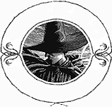
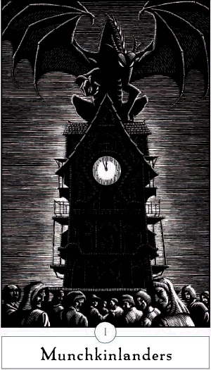
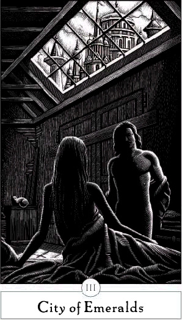
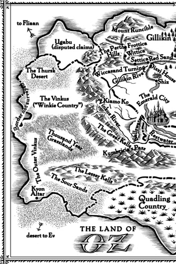
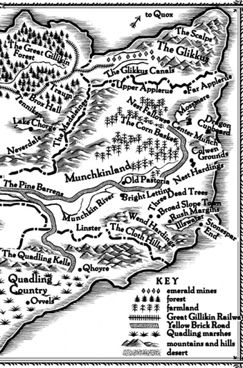
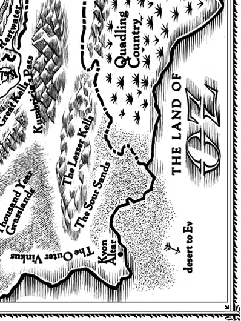
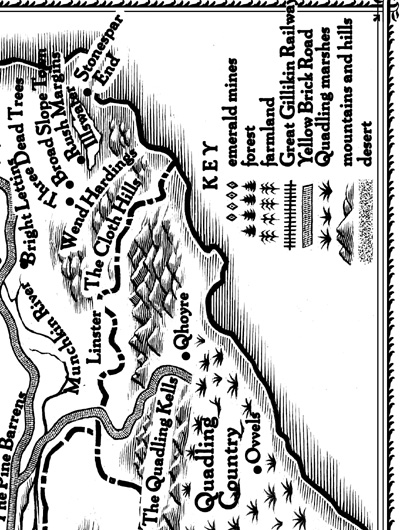
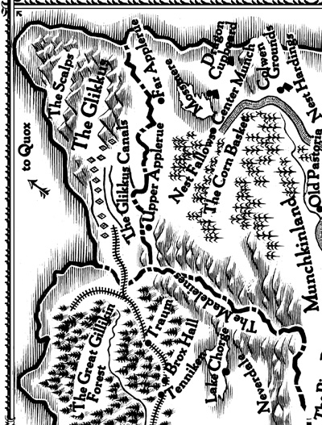
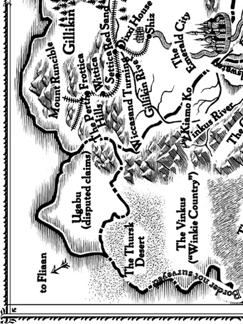

A NOVEL
ILLUSTRATIONS BY DOUGLAS SMITH
This book is for Betty Levin and for all those who
taught me to love and fear goodness.
Prologue: On the Yellow Brick Road
Geographies of the Seen and the Unseen
V The Murder and Its Afterlife
Details:
E-Book Extras
‘Tis very strange Men should be so fond of being thought wickeder than they are.
—DANIEL DEFOE, A SYSTEM OF MAGICK
In historical events great men—so called—are but the labels that serve to give a name to an event, and like labels, they have the last possible connection with the event itself. Every action of theirs, that seems to them an act of their own free will, is in an historical sense not free at all, but in bondage to the whole course of previous history, and predestined from all eternity.
—LEO NIKOLAEVICH TOLSTOI, WAR AND PEACE
“Well,” said the Head, “I will give you my answer. You have no right to expect me to send you back to Kansas unless you do something for me in return. In this country everyone must pay for everything he gets. If you wish me to use my magic power to send you home again you must do something for me first. Help me and I will help you.” “What must I do?” asked the girl. “Kill the wicked Witch of the West,” answered Oz.
—L. FRANK BAUM, THE WONDERFUL WIZARD OF OZ
A mile above Oz, the Witch balanced on the wind’s forward edge, as if she were a green fleck of the land itself, flung up and sent wheeling away by the turbulent air. White and purple summer thunderheads mounded around her. Below, the Yellow Brick Road looped back on itself, like a relaxed noose. Though winter storms and the crowbars of agitators had torn up the road, still it led, relentlessly, to the Emerald City. The Witch could see the companions trudging along, maneuvering around the buckled sections, skirting trenches, skipping when the way was clear. They seemed oblivious of their fate. But it was not up to the Witch to enlighten them.
She used the broom as a sort of balustrade, stepping down from the sky like one of her flying monkeys. She finished up on the topmost bough of a black willow tree. Beneath, hidden by the fronds, her prey had paused to take their rest. The Witch tucked her broom under her arm. Crablike and quiet, she scuttled down a little at a time, until she was a mere twenty feet above them. Wind moved the dangling tendrils of the tree. The Witch stared and listened.
There were four of them. She could see a huge Cat of some sort—a Lion, was it?—and a shiny woodman. The Tin Woodman was picking nits out of the Lion’s mane, and the Lion was muttering and squirming from the aggravation. An animated Scarecrow lolled nearby, blowing dandelion heads into the wind. The girl was out of sight behind shifting curtains of the willow.
“Of course, to hear them tell it, it is the surviving sister who is the crazy one,” said the Lion. “What a Witch. Psychologically warped; possessed by demons. Insane. Not a pretty picture.”
“She was castrated at birth,” replied the Tin Woodman calmly. “She was born hermaphroditic, or maybe entirely male.”
“Oh you, you see castration everywhere you look,” said the Lion.
“I’m only repeating what folks say,” said the Tin Woodman.
“Everyone is entitled to an opinion,” said the Lion airily. “She was deprived of a mother’s love, is how I’ve heard it. She was an abused child. She was addicted to medicine for her skin condition.”
“She has been unlucky in love,” said the Tin Woodman, “like the rest of us.” The Tin Woodman paused and placed his hand on the center of his chest, as if in grief.
“She’s a woman who prefers the company of other women,” said the Scarecrow, sitting up.
“She’s the spurned lover of a married man.”
“She is a married man.”
The Witch was so stunned that she nearly lost her grip on the branch. The last thing she ever cared for was gossip. Yet she had been out of touch for so long that she was astonished at the vigorous opinions of these random nobodies.
“She’s a despot. A dangerous tyrant,” said the Lion with conviction.
The Tin Woodman pulled harder than was necessary on a lock of mane. “Everything’s dangerous to you, you craven thing. I hear she’s a champion of home rule for the so-called Winkies.”
“Whoever she is, she must surely be grieving the death of her sister,” said the child, in a somber voice too rich, too sincere for one so young. The Witch’s skin crawled.
“Don’t go feeling sympathetic now. I certainly can’t.” The Tin Woodman sniffed, a bit cynically.
“But Dorothy’s right,” said the Scarecrow. “No one is exempt from grief.”
The Witch was deeply irked by their patronizing speculations. She moved around the trunk of the tree, stretching to catch a glimpse of the child. The wind was picking up, and the Scarecrow shivered. While the Tin Woodman continued fussing over the Lion’s tresses, he leaned against the Lion, who held him tenderly. “Storm on the horizon,” said the Scarecrow.
Miles off, thunder echoed. “There—is—a—Witch on the horizon,” said the Tin Woodman, tickling the Lion. The Lion got spooked and rolled on top of the Scarecrow, whimpering, and the Tin Woodman collapsed on top of them both.
“Good friends, should we be wary of that storm?” said the girl.
The rising winds moved the curtain of greenery at last, and the Witch caught sight of the girl. She was sitting with her feet tucked underneath her and her arms wrapped around her knees. She was not a dainty thing but a good-size farm girl, dressed in blue-and-white checks and a pinafore. In her lap, a vile little dog cowered and whined.
“The storm makes you skittish. It’s natural after what you’ve been through,” said the Tin Woodman. “Relax.”
The Witch’s fingers dug into the bark of the tree. She still could not see the girl’s face, just her strong forearms and the crown of her head where her dark hair was pulled back into pigtails. Was she to be taken seriously, or was she merely a blow-away dandelion seed, caught on the wrong side of the wind? If she could see the girl’s face, the Witch felt she might know.
But as the Witch craned outward from the trunk, the girl at the same time twisted her face, turning away. “That storm is coming closer, and in a hurry.” The feeling in her voice rose as the wind rose. She had a throaty vehemence, like someone arguing through the threat of impending tears. “I know storms, I know how they come upon you!”
“We’re safer here,” said the Tin Woodman.
“Certainly we are not,” answered the girl, “because this tree is the highest point around, and if lightning is to strike, it will strike here.” She clutched her dog. “Didn’t we see a shed farther up the road? Come, come; Scarecrow, if there’s lightning, you’ll burn the fastest! Come on!”
She was up and running in an ungainly way, and her companions followed in a mounting panic. As the first hard drops of rain fell, the Witch caught sight, not of the girl’s face, but of the shoes. Her sister’s shoes. They sparkled even in the darkening afternoon. They sparkled like yellow diamonds, and embers of blood, and thorny stars.
If she had seen the shoes first, the Witch would never have been able to listen to the girl or her friends. But the girl’s legs had been tucked beneath her skirt. Now the Witch was reminded of her need. The shoes should be hers!—hadn’t she endured enough, hadn’t she earned them? The Witch would fall on the girl from the sky, and wrestle those shoes off her impertinent feet, if only she could.
But the storm from which the companions raced, farther and faster along the Yellow Brick Road, troubled the Witch more than it did the girl who had gone through rain and the Scarecrow whom lightning could burn. The Witch could not venture out in such a vicious, insinuating wetness. Instead, she had to tuck herself between some exposed roots of the black willow tree, where no water could endanger her, and wait for the storm to pass.
She would emerge. She always had before. The punishing political climate of Oz had beat her down, dried her up, tossed her away—like a seedling she had drifted, apparently too desiccated ever to take root. But surely the curse was on the land of Oz, not on her. Though Oz had given her a twisted life, hadn’t it also made her capable?
No matter that the companions had hurried away. The Witch could wait. They would meet again.

From the crumpled bed the wife said, “I think today’s the day. Look how low I’ve gone.”
“Today? That would be like you, perverse and inconvenient,” said her husband, teasing her, standing at the doorway and looking outward, over the lake, the fields, the forested slopes beyond. He could just make out the chimneys of Rush Margins, breakfast fires smoking. “The worst possible moment for my ministry. Naturally.”
The wife yawned. “There’s not a lot of choice involved. From what I hear. Your body gets this big and it takes over—if you can’t accommodate it, sweetheart, you just get out of its way. It’s on a track of its own and nothing stops it now.” She pushed herself up, trying to see over the rise of her belly. “I feel like a hostage to myself. Or to the baby.”
“Exert some self-control.” He came to her side and helped her sit up. “Think of it as a spiritual exercise. Custody of the senses. Bodily as well as ethical continence.”
“Self-control?” She laughed, inching toward the edge of the bed. “I have no self left. I’m only a host for the parasite. Where’s my self, anyway? Where’d I leave that tired old thing?”
“Think of me.” His tone had changed; he meant this.
“Frex”—she headed him off—“when the volcano’s ready there’s no priest in the world can pray it quiet.”
“What will my fellow ministers think?”
“They’ll get together and say, ‘Brother Frexspar, did you allow your wife to deliver your first child when you had a community problem to solve? How inconsiderate of you; it shows a lack of authority. You’re fired from the position.’” She was ribbing him now, for there was no one to fire him. The nearest bishop was too distant to pay attention to the particulars of a unionist cleric in the hinterland.
“It’s just such terrible timing.”
“I do think you bear half the blame for the timing,” she said. “I mean, after all, Frex.”
“That’s how the thinking goes, but I wonder.”
“You wonder?” She laughed, her head going far back. The line from her ear to the hollow below her throat reminded Frex of an elegant silver ladle. Even in morning disarray, with a belly like a scow, she was majestically good-looking. Her hair had the bright lacquered look of wet fallen oak leaves in sunlight. He blamed her for being born to privilege and admired her efforts to overcome it—and all the while he loved her, too.
“You mean you wonder if you’re the father”—she grabbed the bedstead; Frex took hold of her other arm and hauled her half-upright—“or do you question the fatherliness of men in general?” She stood, mammoth, an ambulatory island. Moving out the door at a slug’s pace, she laughed at such an idea. He could hear her laughing from the outhouse even as he began to dress for the day’s battle.
Frex combed his beard and oiled his scalp. He fastened a clasp of bone and rawhide at the nape of his neck, to keep the hair out of his face, because his expressions today had to be readable from a distance: There could be no fuzziness to his meaning. He applied some coal dust to darken his eyebrows, a smear of red wax on his flat cheeks. He shaded his lips. A handsome priest attracted more penitents than a homely one.
In the kitchen yard Melena floated gently, not with the normal gravity of pregnancy but as if inflated, a huge balloon trailing its strings through the dirt. She carried a skillet in one hand and a few eggs and the whiskery tips of autumn chives in the other. She sang to herself, but only in short phrases. Frex wasn’t meant to hear her.
His sober gown buttoned tight to the collar, his sandals strapped on over leggings, Frex took from its hiding place—beneath a chest of drawers—the report sent to him from his fellow minister over in the village of Three Dead Trees. He hid the brown pages within his sash. He had been keeping them from his wife, afraid that she would want to come along—to see the fun, if it was amusing, or to suffer the thrill of it if it was terrifying.
As Frex breathed deeply, readying his lungs for a day of oratory, Melena dangled a wooden spoon in the skillet and stirred the eggs. The tinkle of cowbells sounded across the lake. She did not listen; or she listened but to something else, to something inside her. It was sound without melody—like dream music, remembered for its effect but not for its harmonic distresses and recoveries. She imagined it was the child inside her, humming for happiness. She knew he would be a singing child.
Melena heard Frex inside, beginning to extemporize, warming up, calling forth the rolling phrases of his argument, convincing himself again of his righteousness.
How did that proverb go, the one that Nanny singsonged to her, years ago, in the nursery?
Born in the morning,
Woe without warning;
Afternoon child
Woeful and wild;
Born in the evening,
Woe ends in grieving.
Night baby borning
Same as the morning.
But she remembered this as a joke, fondly. Woe is the natural end of life, yet we go on having babies.
No, said Nanny, an echo in Melena’s mind (and editorializing as usual): No, no, you pretty little pampered hussy. We don’t go on having babies, that’s quite apparent. We only have babies when we’re young enough not to know how grim life turns out. Once we really get the full measure of it—we’re slow learners, we women—we dry up in disgust and sensibly halt production.
But men don’t dry up, Melena objected; they can father to the death.
Ah, we’re slow learners, Nanny countered. But they can’t learn at all.
“Breakfast,” said Melena, spooning eggs onto a wooden plate. Her son would not be as dull as most men. She would raise him up to defy the onward progress of woe.
“It is a time of crisis for our society,” recited Frex. For a man who condemned worldly pleasures he ate with elegance. She loved to watch the arabesque of fingers and two forks. She suspected that beneath his righteous asceticism he possessed a hidden longing for the easy life.
“Every day is a great crisis for our society.” She was being flip, answering him in the terms men use. Dear thick thing, he didn’t hear the irony in her voice.
“We stand at a crossroads. Idolatry looms. Traditional values in jeopardy. Truth under siege and virtue abandoned.”
He wasn’t talking to her so much as practicing his tirade against the coming spectacle of violence and magic. There was a side to Frex that verged on despair; unlike most men, he was able to channel it to benefit his life’s work. With some difficulty she set herself down on a bench. Whole choruses were singing wordlessly inside her head! Was this common for every labor and delivery? She would have liked to ask the nosy local women who would come around this afternoon, growling shyly at her condition. But she didn’t dare. She couldn’t jettison her pretty accent, which they found affected—but she could avoid sounding ignorant about these basic matters.
Frex noticed her silence. “You’re not angry I’m leaving you today?”
“Angry?” She raised her eyebrows, as if she had never encountered the concept before.
“History crawls along on the peg legs of small individual lives,” said Frex, “and at the same time larger eternal forces converge. You can’t attend to both arenas at once.”
“Our child may not have a small life.”
“Now isn’t the time to argue. Do you want to distract me from holy work today? We’re facing the presence of real evil in Rush Margins. I couldn’t live with myself if I ignored it.” He meant this, and for such intensity she had fallen in love with him; but she hated him for it too, of course.
“Threats come—they’ll come again.” Her last word on the subject. “Your son will only be born once, and if this watery upheaval inside is any indication, I think it’s today.”
“There will be other children.”
She turned away so he could not see the rage in her face.
But she couldn’t sustain the fury at him. Perhaps this was her moral failing. (She wasn’t much given to worrying about moral failings as a rule; having a minister as a husband seemed to stir enough religious thought for one couple.) She lapsed sullenly into silence. Frex nibbled at his meal.
“It’s the devil,” said Frex, sighing. “The devil is coming.”
“Don’t say a thing like that on a day our child is expected!”
“I mean the temptation in Rush Margins! And you know what I mean, Melena!”
“Words are words, and what’s said is said!” she answered. “I don’t require all your attention, Frex, but I do need some of it!” She dropped the skillet with a crash on the bench that stood against the cottage wall.
“Well, and likewise,” he said. “What do you think I’m up against today? How can I convince my flock to turn away from the razzle-dazzle spectacle of idolatry? I will probably come back tonight having lost to a smarter attraction. You might achieve a child today. I look forward to failure.” Still, as he said this he looked proud; to fail in the cause of a high moral concern was satisfying to him. How could it compare with the flesh, blood, mess, and noise of having a baby?
He stood at last to leave. A wind came up over the lake now, smudging the topmost reaches of the columns of kitchen smoke. They looked, thought Melena, like funnels of water swirling down drains in narrowing, focusing spirals.
“Be well, my love,” said Frex, although he had his stern public expression on, from forehead to toes.
“Yes.” Melena sighed. The child punched her, deep down, and she had to hurry to the outhouse again. “Be holy, and I’ll be thinking of you—my backbone, my breastplate. And also try not to be killed.”
“The will of the Unnamed God,” said Frex.
“My will too,” she said, blasphemously.
“Apply your will to that which deserves it,” he answered. Now he was the minister and she the sinner, an arrangement she did not particularly enjoy.
“Good-bye,” she said, and chose the stink and relief of the outhouse over standing to wave him out of sight as he strode along the road to Rush Margins.
Frex was more concerned for Melena than she knew. He stopped at the first fisherman’s hut he saw and spoke with the man at the half-door. Could a woman or two spend the day and if needed the night with Melena? It would be a kindness. Frex nodded with a wince of gratitude, acknowledging without words that Melena was not a great favorite in these parts.
Then, before continuing around the end of Illswater and over to Rush Margins, he stopped at a fallen tree and drew two letters from his sash.
The writer was a distant cousin of Frex’s, also a minister. Weeks earlier the cousin had spent time and valuable ink on a description of what was being called the Clock of the Time Dragon. Frex prepared himself for the day’s holy campaign by rereading about the idol clock.
I write in haste, Brother Frexspar, to catch my impressions before they fade.
The Clock of the Time Dragon is mounted on a wagon and stands as high as a giraffe. It is nothing more than a tottering, freestanding theatre, punched on all four sides with alcoves and proscenium arches. On the flat roof is a clockwork dragon, an invention of green painted leather, silvery claws, ruby jeweled eyes. Its skin is made of hundreds of overlapping discs of copper, bronze, and iron. Beneath the flexible folds of its scales is an armature controlled by clockwork. The Time Dragon circles on its pedestal, flexes its narrow leathery wings (they make a sound like a bellows), and belches out sulfurous balls of flaming orange stink.
Below, featured in the dozens of doorways, windows, and porches, are puppets, marionettes, figurines. Creatures of folk tale. Caricatures of peasants and royalty alike. Animals and fairies and saints—our unionist saints, Brother Frexspar, stolen out from underneath us! I get enraged. The figures move on sprockets. They wheel in and out of doorways. They bend at the waist, they dance and dawdle and dally with each other.
Who had engendered this Time Dragon, this fake oracle, this propaganda tool for wickedness that challenged the power of unionism and of the Unnamed God? The clock’s handlers were a dwarf and some narrow-waisted minions who seemed to have only enough brain capacity among them to pass a hat. Who else was benefiting besides the dwarf and his beauty boys?
The cousin’s second letter had warned that the clock was making its way next to Rush Margins. It had told a more specific story.
The entertainment began with a thrum of strings and a rattle of bones. The crowd pushed close, oohing. Within the lighted window of a stage, we saw a marriage bed, with a puppet wife and husband. The husband was asleep and the wife sighed. She made a motion with her carved hands to suggest that her husband was disappointingly small. The audience shrieked with laughter. The puppet wife went to sleep herself. When she was snoring, the puppet husband sneaked out of bed.
At this point, up above, the Dragon turned on its base, and pointed its talons into the crowd, indicating—without a doubt—a humble well digger named Grine, who has been a faithful if inattentive husband. Then the dragon reared back and stretched two fingers in a come-hither gesture, isolating a widow named Letta and her snaggle-toothed maiden daughter. The crowd hushed and fell away from Grine, Letta, and the blushing maid, as if they had suddenly been inflicted with running sores.
The Dragon rested again but draped a wing over another archway, which lit up to reveal the puppet husband, wandering out in the night. Along came a puppet widow, with sprigged hair and high color, dragging along a protesting, flinty-toothed daughter. The widow kissed the puppet husband, and pulled off his leather trousers. He was equipped with two full sets of male goods, one in the front and another hanging off the base of his spine. The widow positioned her daughter on the abbreviated prong in the front, and herself took advantage of the more menacing arrangement in the rear. The three puppets bucked and rocked, emitting squeals of glee. When the puppet widow and her daughter were through, they dismounted and kissed the adulterous puppet husband. Then they kneed him, simultaneously, fore and aft. He swung on springs and hinges, trying to hold all his wounded parts.
The audience roared. Grine, the actual well digger, sweated drops as big as grapes. Letta pretended to guffaw, but her daughter had already disappeared from shame. Before the evening was out, Grine was set upon by his agitated neighbors and investigated for the grotesque anomaly. Letta was shunned. Her daughter seems to have vanished entirely. We suspect the worst.
At least Grine wasn’t killed. Yet who can say how our souls have been stamped by witnessing such a cruel drama? All souls are hostages to their human envelopes, but souls must decay and suffer at such indignity, don’t you agree?
Sometimes it seemed to Frex that every itinerant witch and toothless gibbering seer in Oz who could perform even the most transparent of spells had seized on the outback district of Wend Hardings to scratch out a trade. He knew that folks from Rush Margins were humble. Their lives were hard and their hopes few. As the drought dragged on, their traditional unionist faith was eroding. Frex was aware that the Clock of the Time Dragon combined the appeals of ingenuity and magic—and he would have to call on his deepest reserves of religious conviction to overcome it. If his congregation should prove vulnerable to the so-called pleasure faith, succumbing to spectacle and violence—well, what next?
He would prevail. He was their minister. He had pulled their teeth and buried their babies and blessed their kitchen pots for years now. He had abased himself in their names. He had wandered with an unkempt beard and a begging bowl from hamlet to hamlet, leaving poor Melena alone in the minister’s lodge for weeks at a time. He had sacrificed for them. They couldn’t be swayed by this Time Dragon creature. They owed him.
He moved on, shoulders squared, jaw set, stomach in a sour uproar. The sky was brown with flying sand and grit. The wind rushed high over the hills with the sound of a tremulous wail, as if pushing through some fissure of rock, on a ridge beyond any Frex could see.
It was nearly evening by the time Frex had worked up the courage to enter the ramshackle hamlet of Rush Margins. He was in a deep sweat. He hit his heels to the ground and pumped his clenched fists, and called out in a hoarse, carrying tone. “Hist, oh ye of small confidence! Gather while ye may, for temptation is abroad, to try ye sorely!” The words were archaic, even ridiculous, but they worked. Here came the sullen fishermen, dragging their empty nets up from the dock. Here came the subsistence farmers, whose hardscrabble plots had borne little during this dry year. Before he had even begun, they all looked guilty as sin.
They followed him to the rickety steps of the canoe repair house. Frex knew that everyone expected this evil clock to arrive at any instant; gossip was as contagious as the plague. He yelled at them for their thirsty anticipation. “Ye are dull as toddlers reaching their hands to touch the pretty embers! Ye are as if spawn of dragon womb, ready to suck on teats of fire!” These were time-worn scriptural imprecations and they fell a little flat tonight; he was tired and not at his best.
“Brother Frexspar,” said Bfee, the mayor of Rush Margins, “could you perhaps tone down your harangue until we get a chance to see what fresh new form temptation might take?”
“You have no mettle to resist new forms,” said Frex, spitting.
“Haven’t you been our able teacher these several years?” said Bfee. “We’ve hardly had such a good chance to prove ourselves against sin! We’re looking forward to—to the spiritual test of it all.”
The fishermen laughed and jeered, and Frex intensified his glower, but at the sound of unfamiliar wheels in the stony ruts of the road, they all turned their heads and fell silent. He had lost their attention before he had gotten started.
The clock was being drawn by four horses and escorted by the dwarf and his cohort of young thugs. Its broad roof was crowned by the dragon. But what a beast! It looked poised as if ready to spring, as if indeed invested with life. The skin of the house was decorated in carnival colors, burnished with gold leaf. The fishermen gaped as it drew near.
Before the dwarf could announce the time of the performance, before the crowd of youths could draw out their clubs, Frex leaped on the lower step of the thing—a fold-down stage on hinges. “Why is this thing called a clock? The only clock face it has is flat, dull, and lost in all that distracting detail. Furthermore, the hands don’t move: Look, see for yourselves! They’re painted to remain at one minute before midnight! All you’ll see here is mechanics, my friends: I know this for a fact. You’ll see mechanical cornfields growing, moons waxing and waning, a volcano to spew a soft red cloth done up with black and red sequins. With all this tiktok-y business, why not have a pair of circulating arms on the clock face? Why not? I ask you, I’m asking you, yes, you, Gawnette, and you, Stoy, and you, Perippa. Why no real clock here?”
They were not listening, Gawnette and Stoy and Perippa, nor were the others. They were too busy staring in anticipation.
“The answer, of course, is that the clock isn’t meant to measure earthly time, but the time of the soul. Redemption and condemnation time. For the soul, each instant is always a minute short of judgment.
“One minute short of judgment, my friends! If you died in the next sixty seconds, would you want to spend eternity in the suffocating depths reserved for idolaters?”
“Awful lot of noise in the neighborhood tonight,” said someone in the shadows—and the spectators laughed. Above Frex—he whirled to see—from a little door had emerged a small, yapping puppet dog, its hair dark and as tightly curled as Frex’s own. The dog bounced on a spring, and the pitch of its chatter was annoyingly high. The laughter grew. Evening fell harder, and it was less easy for Frex to tell who was laughing, who now was shouting for him to move aside so they could see.
He wouldn’t move, so he was bundled unceremoniously from his perch. The dwarf gave a poetic welcome. “All our lives are activity without meaning; we burrow ratlike into life and we squirm ratlike through it and ratlike we are flung into our graves at the end. Now and then, why shouldn’t we hear a voice of prophecy, or see a miracle play? Beneath the apparent sham and indignity of our ratlike lives, a humble pattern and meaning still applies! Come nearer, my good people, and watch what a little extra knowledge augurs for your lives! The Time Dragon sees before and beyond and within the truth of your sorry span of years here! Look at what it shows you!”
The crowd pushed forward. The moon had risen, its light like the eye of an angry, vengeful god. “Give over, let me go,” Frex called; it was worse than he had thought. He had never been manhandled by his own congregation.
The clock unfolded a story about a publicly pious man, with lamb’s wool beard and dark curly locks, who preached simplicity, poverty, and generosity while keeping a hidden coffer of gold and emeralds—in the double-hinged bosom of a weak-chinned daughter of blue blood society. The scoundrel was run through with a long iron stake in a most indelicate way and served up to his hungry flock as Roast Flank of Minister.
“This panders to your basest instincts!” Frex yelled, his arms folded and his face magenta with fury.
But now that darkness was almost total, someone came up from behind him to silence him. An arm encircled his neck. He twisted to see which damned parishioner took such liberties, but all the faces were cloaked by hoods. He was kneed in the groin and doubled over, his face in the dirt. A foot kicked him square between the buttocks and his bowels released. The rest of the crowd, however, was not watching. They were howling with mirth at some other entertainment put on by the Clock Dragon. A sympathetic woman in a widow’s shawl grabbed his arm and led him away—he was too fouled, too much in pain to straighten up and see who it was. “I’ll put you down in the root cellar, I will, under a burlap,” crooned the goodwife, “for they’ll be after you tonight with pitchforks, the way that thing is behaving itself! They’ll look for you in your lodge, but they won’t look in my keeping room.”
“Melena,” he croaked, “they’ll find her—”
“She’ll be seen to,” said his neighbor. “We women can manage that much, I guess!”
In the minister’s lodge, Melena struggled with consciousness as a pair of midwives went in and out of focus before her. One was a fishwife, the other a palsied crone; they took turns feeling her forehead, peering between her legs, and stealing glances at the few beautiful trinkets and treasures Melena had managed to bring here from Colwen Grounds.
“You chew that paste of pinlobble leaves, duckie, you do that. You’ll be unconscious before you know it,” said the fishwife. “You’ll relax, out will pop the little sweetheart, and all will be well in the morning. Thought you would smell of rosewater and fairy dew, but you stink like the rest of us. Chew on, my duckie, chew on.”
At the sound of a knock, the crone looked up guiltily from the chest she was kneeling before and rummaging through. She let the lid close with a bang and affected a position of prayer, eyes closed. “Enter,” she called.
A maiden with tender skin and high color came in. “Oh, I hoped someone would be here,” she said. “How is she?”
“Nearly out and so is the babe,” answered the fishwife. “An hour more, I reckon.”
“Well, I’m told to warn you. The men are drunk and on the prowl. They’ve been riled up by that dragon of the magic clock, you know, and are looking for Frex to kill him. The clock said to. They’ll likely stagger out here. We’d better get the wife safely away—can she be moved?”
No, I cannot be moved, thought Melena, and if the peasants find Frex tell them to kill him good and hard for me, for I never knew a pain so extraordinary that it made me see the blood behind my own eyes. Kill him for doing this to me. At this thought, she smiled in a moment of relief and passed out.
“Let’s leave her here and run for it!” said the maiden. “The clock said to kill her too, and the little dragon she’s going to give birth to. I don’t want to get caught.”
“We’ve got our own reputations to uphold,” said the fishwife. “We can’t abandon the fancy ladything in mid-delivery. I don’t care what any clock says.”
The crone, her head back in the chest, said, “Anyone for some real lace from Gillikin?”
“There’s a hay cart in the lower field, but let’s do it now,” said the fishwife. “Come, help me fetch it. You, old mother hag, get your face out of the linens and come dampen this pretty pink brow. Right-o, now we go.”
A few minutes later the crone, the wife, and the maiden were trundling the hay cart along a rarely used track through the spindles and bracken of the autumn woods. The wind had picked up. It whistled over the treeless foreheads of the Cloth Hills. Melena, sprawled in blankets, heaved and moaned in unconscious pain.
They heard a drunken mob pass, with pitchforks and torches, and the women stood silent and terrified, listening to the slurred curses. Then they pressed on with greater urgency until they came upon a foggy copse—the edge of the graveyard for unconsecrated corpses. Within it they saw the blurred outlines of the clock. It had been left here for safekeeping by the dwarf—no fool he; he could guess this particular corner of the world was the last place jumpy villagers would seek tonight. “The dwarf and his boykins were drinking in the tavern too,” said the maiden breathlessly. “There’s no one here to stop us!”
The crone said, “So you’ve been peering in the tavern windows at the men, you slut?” She pushed open the door in the back of the clock.
She found a crawl space. Pendulums hung ominously in the gloom. Huge toothed wheels looked primed to slice any trespasser into sausage rounds. “Come on, drag her in,” said the crone.
The night of torches and fog gave way, at dawn, to broad bluffs of thundercloud, dancing skeletons of lightning. Glimpses of blue sky appeared briefly, though sometimes it rained so hard that it seemed more like mud drops falling than water. The midwives, crawling on hands and knees out of the back of the clock-wagon, had their little discharge at last. They protected the infant from the dripping gutter. “Look, a rainbow,” said the senior, bobbing her head. A sickly scarf of colored light hung in the sky.
What they saw, rubbing the caul and blood off the skin—was it just a trick of the light? After all, following the storm the grass did seem to throb with its own color, the roses zinged and hovered with crazy glory on their stems. But even with these effects of light and atmosphere, the midwives couldn’t deny what they saw. Beneath the spit of the mother’s fluids the infant glistened a scandalous shade of pale emerald.
There was no wail, no bark of newborn outrage. The child opened its mouth, breathed, and then kept its own counsel. “Whine, you fiend,” said the crone, “it’s your first job.” The baby shirked its obligations.
“Another willful boy,” said the fishwife, sighing. “Shall we kill it?”
“Don’t be so nasty to it,” said the crone, “it’s a girl.”
“Hah,” said the bleary-eyed maiden, “look again, there’s the weather vane.”
For a minute they were in disagreement, even with the child naked before them. Only after a second and third rub was it clear that the child was indeed feminine. Perhaps in labor some bit of organic effluvia had become caught and quickly dried in the cloven place. Once toweled, she was observed to be prettily formed, with a long elegant head, forearms nicely turned out, clever pinching little buttocks, cunning fingers with scratchy little nails.
And an undeniable green cast to the skin. There was a salmon blush in the cheeks and belly, a beige effect around the clenched eyelids, a tawny stripe on the scalp showing the pattern of eventual hair. But the primary effect was vegetable.
“Look what we get for our troubles,” said the maiden. “A little green pat of butter. Why don’t we kill it? You know what people will say.”
“I think it’s rotten,” said the fishwife, and checked for the root of a tail, counted fingers and toes. “It smells like dung.”
“That is dung you’re smelling, you idiot. You’re squatting in a cow pattypie.”
“It’s sick, it’s feeble, that’s why the color. Lose it in the puddle, drown the thing. She’ll never know. She’ll be out for hours in her ladylike faints.”
They giggled. They cradled the infant in the crook of their arms, passing it around to test it for weight and balance. To kill it was the kindest course of action. The question was how.
Then the child yawned, and the fishwife absentmindedly gave it a finger to nurse on, and the child bit the finger off at the second knuckle. It almost choked on the gush of blood. The digit dropped out of its mouth into the mud like a bobbin. The women catapulted into action. The fishwife lunged to strangle the girl, and the crone and the maiden flared up in defense. The finger was dug out of the mire and shoved in an apron pocket, possibly to sew back onto the hand that had lost it. “It’s a cock, she just realized she didn’t have one,” screeched the maiden, and fell on the ground laughing. “Oh, beware the stupid boy first tries to please himself with her! She’ll snip his young sprout off for a souvenir!”
The midwives crawled back into the clock and dropped the thing at its mother’s breast, afraid to consider mercy murder for fear of what else the baby might bite. “Maybe she’ll chop the tit next, that’ll bring Her Drowsy Frailness around quick enough,” the crone chuckled. “Though what a child, that sips blood even before its first suck of mother’s milk!” They left a pipkin of water nearby, and under cover of the next squall they went squelching away, to find their sons and husbands and brothers, and berate and beat them if they were available, or bury them if not.
In the shadows, the infant stared overhead at the oiled and regular teeth of time’s clock.
For days Melena couldn’t bear to look at the thing. She held it, as a mother must. She waited for the groundwater of maternal affection to rise and overwhelm her. She did not weep. She chewed pinlobble leaves, to float away from the disaster.
It was a she. It was a her. Melena practiced conversions in her thinking when she was alone. The twitching, unhappy bundle was not male; it was not neutered; it was a female. It slept, looking like a heap of cabbage leaves washed and left to drain on the table.
In a panic, Melena wrote to Colwen Grounds to drag Nanny from her retirement. Frex went ahead in a carriage to collect Nanny from the way station at Stonespar End. On the trip back, Nanny asked Frex what was wrong.
“What is wrong.” He sighed, and was lost in thought. Nanny realized she had chosen her words poorly; now Frex was distracted. He began to mumble in a general way about the nature of evil. A vacuum set up by the inexplicable absence of the Unnamed God, and into which spiritual poison must rush. A vortex.
“I mean what is the state of the child!” retorted Nanny explosively. “It’s not the universe but a single child I need to hear about, if I’m going to be any help! Why does Melena call for me instead of for her mother? Why is there no letter for her grandfather? He’s the Eminent Thropp, for goodness sakes! Melena can’t have forgotten her duties so thoroughly, or is life out there in the country worse than we thought?”
“It’s worse than we thought,” said Frex grimly. “The baby—you had better be prepared, Nanny, so you don’t scream—the baby is damaged.”
“Damaged?” Nanny’s grip on her valise tightened and she looked out over the red-leafed pearlfruit trees by the side of the road. “Frex, tell me everything.”
“It’s a girl,” said Frex.
“Damage indeed,” said Nanny mockingly, but Frex as usual missed the dig. “Well, at least the family title’s preserved for another generation. Has she got all her limbs?”
“Yes.”
“Any more than she needs?”
“No.”
“Is she sucking?”
“We can’t let it. It has extraordinary teeth, Nanny. It has shark’s teeth, or something like.”
“Well she won’t be the first child to grow on a bottle or a rag instead of a tit, don’t worry about that.”
“It’s the wrong color,” said Frex.
“What color is the wrong color?”
For a few moments Frex could only shake his head. Nanny did not like him and she would not like him, but she softened. “Frex, it can’t be that bad. There’s always a way out. Tell Nanny.”
“It’s green,” he finally said. “Nanny, it’s green as moss.”
“She’s green, you mean. It’s a she, for heaven’s sake.”
“It’s not for heaven’s sake.” Frex began to weep. “Heaven is not improved by it, Nanny; and heaven does not approve. What are we to do!”
“Hush.” Nanny detested weeping men. “It can’t be as bad as all that. There isn’t a sniff of low blood in Melena’s veins. Whatever blight the child has will respond to Nanny’s treatment. Trust Nanny.”
“I trusted in the Unnamed God,” sobbed Frex.
“We don’t always work at cross purposes, God and Nanny,” said Nanny. She knew this was blasphemous, but she couldn’t resist a gibe as long as Frex’s resistance was down. “But don’t worry, I won’t breathe a word to Melena’s family. We’ll sort this all out in a flash, and no one need know. The baby has a name?”
“Elphaba,” he said.
“After Saint Aelphaba of the Waterfall?”
“Yes.”
“A fine old name. You’ll use the common nickname Fabala, I suppose.”
“Who even knows if she’ll live long enough to grow into a nickname.” Frex sounded as if he hoped this would be the case.
“Interesting country, are we in Wend Hardings yet?” Nanny asked, to change the subject. But Frex had folded up inside, barely bothering to guide the horses onto the correct track. The country was filthy, depressed, peasant-ridden; Nanny began to wish she had not set out in her best traveling gown. Roadside robbers might expect to find gold on such a refined-looking older woman, and they would be right, for Nanny sported a golden garter stolen years ago from Her Ladyship’s boudoir. What a humiliation, if the garter should turn up these years later on Nanny’s well-turned if aging thigh! But Nanny’s fears were unfounded, for the carriage arrived, without incident, in the yard of the minister’s cottage.
“Let me see the baby first,” said Nanny. “It will be easier and fairer on Melena if I know what we’re dealing with.” And this wasn’t hard to arrange, as Melena was out cold thanks to pinlobble leaves, while the baby in a basket on the table wailed softly.
Nanny drew up a chair so she wouldn’t hurt herself if she fainted dead away. “Frex, put the basket on the floor where I can look into it.” Frex obliged, and then went to return the horses and carriage to Bfee, who rarely needed them for mayoral duties but loaned them out to earn a little political capital.
The infant was wrapped in linens, Nanny saw, and the baby’s mouth and ears were strapped with a sling. The nose looked like a knob of bad mushroom, poking up for air, and the eyes were open.
Nanny leaned closer. The child couldn’t be, what, three weeks old? Yet as Nanny moved from side to side, looking at the profile of the forehead from this angle and that, so as to judge the shape of the mind, the girl’s eyes tracked her back and forth. They were brown and rich, the color of overturned earth, flecked with mica. There was a network of fragile red lines at each soft angle where the eyelids met, as if the girl had been bursting the blood threads from the exertion of watching and understanding.
And the skin, oh yes, the skin was green as sin. Not an ugly color, Nanny thought. Just not a human color.
She reached out and let her finger drift across the baby’s cheek. The infant flinched, and her backbone arched, and the wrapping, which was tucked securely around the child from neck to toe, split open like a husk. Nanny gritted her teeth and was determined not to be cowed. The baby had exposed herself, sternum to groin, and the skin on her chest was the same remarkable color. “Have you even touched this child yet, you two?” murmured Nanny. She put her hand palm down on the child’s heaving chest, her fingers covering the almost invisible baby nipples, then slid her hand down so she could check the apparatus below. The child was wet and soiled but felt made according to standard design. The skin was the same miracle of pliant smoothness that Melena had possessed as an infant.
“Come to Nanny, you horrid little thing you.” Nanny leaned to pick the baby up, mess and all.
The baby swiveled to avoid the touch. Her head beat itself against the rush bottom of the basket.
“You’ve been dancing in the womb, I see,” said Nanny, “I wonder to whose music? Such well-developed muscles! No, you’re not getting away from me. Come here, you little demon. Nanny doesn’t care. Nanny likes you.” She was lying through her teeth, but unlike Frex she believed some lies were sanctioned by heaven.
And she got her hands on Elphaba, and settled her on her lap. There Nanny waited, crooning and every now and then looking away, out the window, to recover herself and keep from vomiting. She rubbed the baby’s belly to calm the girl down, but there was no calming her down, not yet anyway.
Melena propped herself up on her elbows in the late afternoon when Nanny brought a tray with tea and bread. “I have made myself at home,” said Nanny, “and I’ve made friends with your tiny darling. Now come to your senses, sweetheart, and let me give you a kiss.”
“Oh, Nanny!” Melena allowed herself to be coddled. “Thank you for coming. Have you seen the little monster?”
“She’s adorable,” said Nanny.
“Don’t lie and don’t be soft,” said Melena. “If you’re going to help you must be honest.”
“If I’m going to help, you must be honest,” said Nanny. “We need not go into it now, but I will have to know everything, my sweet. So we can decide what’s to be done.” They sipped their tea, and because Elphaba had fallen asleep at last, it seemed for a few moments like the old days at Colwen Grounds, when Melena would come home from afternoon walks with lithesome young gentry on the make, and boast of their masculine beauty to a Nanny who pretended she had not noticed.
In fact, as the weeks went on, Nanny noticed quite a few disturbing things about the baby.
For one thing, Nanny tried to remove the baby’s bandages, but Elphaba seemed intent on biting her own hands off, and the teeth inside that pretty, thin-lipped mouth were indeed monstrous. She would bite a hole through the basket if she were left unfettered. She went after her own shoulder and scraped it raw. She looked as if she were strangling.
“Can’t a barber be had to pull the teeth out?” Nanny asked. “At least until the baby learns some self-control?”
“You’re out of your mind,” Melena said. “It will be all over the valley that the little marrow is green. We’ll keep the jaw strapped up until we solve the skin problem.”
“However in the world did her skin come green?” Nanny wondered, stupidly, for Melena blanched and Frex reddened, and the baby held her breath as if trying to turn blue to please them all. Nanny had to slap her to make her breathe again.
Nanny interviewed Frex out in the yard. After the double blow of the birth and his public embarrassment, he was not yet up to professional engagements and sat whittling praying beads out of oak, scoring and inscribing them with emblems of the Namelessness of God. Nanny set Elphaba down inside—she had an unreasonable fear of being overheard by this infant, and, worse, of being understood—and Nanny sat scooping out a pumpkin for supper.
“I don’t suppose, Frex, that you have green in your family background,” she began, knowing full well that Melena’s powerful grandfather would have confirmed such a predisposition before agreeing to let his granddaughter marry a unionist minister—of all the chances she had!
“Our family isn’t about money or about earthly power,” said Frex, taking no offense for once. “But I’m descended in a direct line from six ministers before me, father to son. We’re as well regarded in spiritual circles as Melena’s family is in parlors and at the court of Ozma. And no, there is no green, anywhere. I never heard of such a thing before in any family.”
Nanny nodded and said, “Well all right, I was only asking. I know you’re gooder than goblin martyrs.”
“But,” Frex said humbly, “Nanny, I think I caused this thing to happen. My tongue slipped on the day of the birthday—I announced that the devil was coming. I meant the Clock of the Time Dragon. But suppose those words unlocked room for the devil?. . . “
“The child is no devil!” snapped Nanny. She’s no angel either, she thought, but kept it to herself.
“On the other hand,” Frex continued, sounding more secure, “she may have been cursed by Melena, accidentally, who took my remark the wrong way and wept about it. Maybe Melena opened up inside herself a window through which an unattached sprite entered and colored the child.”
“On the very day she is to be born?” said Nanny. “That’s a capable sprite. Is your goodness so exalted you attract the truly high-powered among the Spirits of Aberration?”
Frex shrugged. A few weeks earlier he would have nodded, but his confidence was shattered with his abject failure in Rush Margins. He did not dare suggest what he feared: The child’s abnormality was a punishment for his failure to protect his flock from the pleasure faith.
“Well . . .” Nanny asked practically, “if through a curse the goods were damaged, then through what might the ill be overturned?”
“An exorcism,” said Frex.
“Are you empowered?”
“If I’m successful at changing her, we’ll know that I’m empowered,” said Frex. But now that he had a goal, his spirits brightened. He would spend some days in fasting, rehearsing prayers, and collecting supplies for the arcane ritual.
When he was off in the woods, and Elphaba napping, Nanny perched on the side of Melena’s hard marriage mattress.
“Frex wonders if his prediction that the devil was coming caused a window in you to open, letting an imp pass through to spoil the baby,” said Nanny. She was crocheting an edge of lace, clumsily; she had never excelled at piecework, but she liked handling the polished ivory crochet hook. “I wonder if you opened another window?”
Melena, groggy from pinlobble leaves as usual, arched an eyebrow in confusion.
“Did you sleep with someone other than Frex?” Nanny asked.
“Don’t be mad!” said Melena.
“I know you, honey,” said Nanny. “I’m not saying you’re not a good wife. But when you had the boys buzzing around you in your parents’ orchard you changed your perfumed undergarments more than once a day. You were lusty and sneaky and good at it. I’m not looking down at you. But don’t pretend to me that your appetites weren’t healthy.”
Melena buried her face in the pillow. “Oh for those days!” she wailed. “It’s not that I don’t love Frex! But I hate being better than the local peasant idiots!”
“Well, now this green child brings you down to their level, you ought to be pleased,” said Nanny meanly.
“Nanny, I love Frex. But he leaves me alone so often! I would kill for some tinker to pass by and sell me more than a tin coffeepot! I would pay well for someone less godly and more imaginative!”
“That’s a question for the future,” said Nanny sensibly. “I’m asking you about the past. The recent past. Since your marriage.”
But Melena’s face was vague and blurry. She nodded, she shrugged, she rocked her head.
“The obvious theory is an elf,” said Nanny.
“I wouldn’t have sex with an elf!” Melena shrieked.
“No more would I,” said Nanny, “but the green does give one pause. Are there elves in the neighborhood?”
“There’s a gaggle of them, tree elves, up over the hill someplace, but if possible they are more moronic than the fair citizens of Rush Margins. Really, Nanny, I’ve never even seen one, or only from a distance. The idea is repulsive. Elves giggle at everything, do you know that? One of them falls out of an oak and smashes his skull like a rotten turnip, and they gather and giggle and then forget about him. It’s insulting of you even to bring it up.”
“Get used to it, if we don’t find a way out of this quagmire.”
“Well, the answer is no.”
“Then someone else. Someone handsome enough on the outside, but carrying a germ that maybe you caught.”
Melena looked shocked. She hadn’t thought of her own health since Elphaba was born. Could she be at risk?
“The truth,” said Nanny. “We must know.”
“The truth,” said Melena distantly. “Well, it is unknowable.”
“What are you trying to say?”
“I don’t know the answer to your question.” And Melena explained. Yes, the cottage was off the beaten track, and of course she never passed more than the curtest greetings with local farmers and fishermen and thickheads. But more travelers took to the hills and woods than you would credit. Often she had sat, listless and lonely, while Frex was off preaching, and she had found comfort in giving passersby a simple meal and a buoyant conversation.
“And more?”
But on those boring days, Melena muttered, she had taken to chewing pinlobble leaves. When she would awake, because the sun was setting or Frex was there frowning or grinning at her, she remembered little.
“You mean you indulged in adultery and you don’t even have the benefit of a good saucy memory about it?” Nanny was scandalized.
“I don’t know that I did!” said Melena. “I wouldn’t choose to, I mean not if I was thinking clearly. But I remember once when a tinker with a funny accent gave me a draft of some heady brew from a green glass bottle. And I had rare expansive dreams, Nanny, of the Other World—cities of glass and smoke—noise and color—I tried to remember.”
“So you could well have been raped by elves. Won’t your grandfather be pleased to learn how Frex is taking care of you.”
“Stop!” cried Melena.
“Well, I don’t know what’s to be done!” Nanny lost her temper at last. “Everyone’s being irresponsible! If you can’t remember whether your marriage vows have been broken or not, there’s not much good in acting like an offended saint.”
“We can always drown the baby and start over.”
“Just try drowning that thing,” muttered Nanny. “I pity the poor lake asked to take her in.”
Later, Nanny went through Melena’s small collection of medicines—herbs, drops, roots, brandies, leaves. She was wondering, without much hope, if she could invent something that might cause the girl’s skin to blanch. In the back of the chest Nanny found the green glass bottle spoken of by Melena. The light was bad and her eyes weren’t strong, but she could make out the words miracle elixir on a piece of paper pasted to the front.
Though she had a native skill in healing, Nanny was unable to come up with a skin-changing potion. Bathing the child in cow’s milk didn’t make the skin white, either. But the child would not allow herself to be lowered into a pail of lake water; she twisted like a cat in panic. Nanny kept on with the cow’s milk. It left a horrid sour stink if she did not rub it off thoroughly with a cloth.
Frex organized an exorcism. It involved candles and hymns. Nanny watched from a distance. The man was beady-eyed, perspiring with effort even though the mornings were colder and colder. Elphaba slept in her binding cloth in the middle of the carpet, oblivious to the sacrament.
Nothing happened. Frex fell, exhausted and spent, and cradled his green daughter within the crook of his arm, as if finally embracing the proof of some undisclosed sin. Melena’s face hardened.
There was only one thing left to try. Nanny gathered the courage to bring it up on the day she was to leave back for Colwen Grounds.
“We see that peasant treatments don’t work,” said Nanny, “and spiritual intercession has failed. Do you have the courage to think about sorcery? Is there someone local who could magick the green venom out of the child?”
Frex was up and lashing out at Nanny, swinging his fists. Nanny fell backward off her stool, and Melena bobbed about her, shrieking. “How dare you!” cried Frex. “In this household! Isn’t this green girl insult enough? Sorcery is the refuge of the amoral; when it isn’t out-and-out charlatanism, it is dangerously evil! Contracts with the demons!”
Nanny said, “Oooh, preserve me! You fine, fine man, don’t you know enough to fight fire with fire?”
“Nanny, enough,” said Melena.
“Hitting a feeble old woman,” said Nanny, hurt. “Who only tries to help.”
The next morning Nanny packed her valise. There was nothing more that she could do, and she wasn’t willing to live the rest of her life with a fanatical hermit and a ruined baby, even for the sake of Melena.
Frex drove Nanny back to the inn at Stonespar End, for the coach-and-four to take her home. Nanny knew Melena might still think about killing the child, but somehow she doubted it. Nanny held her valise to her ample bosom, fearing bandits again. Inside her valise was hidden her gold garter (she could always claim it had been planted there without her knowledge, whereas it would have been hard to claim it had been planted on her leg in the same circumstances). She also had squirreled away the ivory crochet hook, three of Frex’s prayer beads because she liked the carvings, and the pretty green glass bottle left behind by some itinerant salesman selling, apparently, dreams and passion and somnolence.
She didn’t know what she thought. Was Elphaba devil’s spawn? Was she half-elf? Was she punishment for her father’s failure as a preacher, or for her mother’s sloppy morals and bad memory? Or was she merely a physical ailment, a blight like a misshapen apple or a five-legged calf? Nanny knew her worldview was foggy and chaotic, pestered by demons, faith, and folk science. It didn’t escape her attention, however, that both Melena and Frex had believed uncompromisingly that they would have a boy. Frex was the seventh son of a seventh son, and to add to that powerful equation he was descended from six ministers in a row. Whatever child of either (or any) sex could dare follow in so auspicious a line?
Perhaps, thought Nanny, little green Elphaba chose her own sex, and her own color, and to hell with her parents.
For one short, wet month, early in the next year, the drought lifted. Spring tipped in like green well water, frothing at the hedges, bubbling at the roadside, splashing from the cottage roof in garlands of ivy and stringflower. Melena went about the yard in a state of mild undress, so that she could feel the sun on her pale skin and the deep warmth she had missed all winter. Strapped in her chair in the doorway, Elphaba, now a year and a half old, hit her breakfast minnow with the bowl of her spoon. “Oh, eat the thing, don’t mash it,” said Melena, but mildly. Since the child’s chin-sling had been removed, mother and daughter had begun to pay some attention to each other. To her surprise, Melena sometimes found Elphaba endearing, the way a baby should be.
This view was the only thing she had seen since leaving the elegant mansion of her family, the only thing she would ever gaze upon again—the windswept surface of Illswater, the distant dark stone cottages and chimneys of Rush Margins on the other side, the hills lying in a torpor beyond. She would go mad; the world was nothing but water and want. If a frolic of elves scampered through the yard she would leap on them for company, for sex, for murder.
“You father is a fraud,” she said to Elphaba. “Off finding himself all winter, leaving me with only you for company. Eat that breakfast, for you’ll get no more if you throw it on the ground.”
Elphaba picked up the fish and threw it on the ground.
“Your father is a charlatan,” continued Melena. “He used to be very good in bed for a religious man, and this is how I know his secret. Holy men are supposed to be above earthly pleasures, but your father enjoyed his midnight wrestling. Once upon a time! We must never tell him we know he’s a humbug, it would break his heart. We don’t want to break his heart, do we?” And then Melena burst into a high peal of laughter.
Elphaba’s face was unsmiling, unchanging. She pointed to the fish.
“Breakfast. Breakfast in the dirt. Breakfast for the bugs,” Melena said. She dropped the collar of her spring robe a little lower and the pink yoke of her bare shoulders gyrated. “Shall we go walk by the edge of the lake today and maybe you’ll drown?”
But Elphaba would never drown, never, because she would not go near the lake.
“Maybe we’ll go out in a boat and tip over!” Melena shrieked.
Elphaba cocked her head to one side as if listening for some part of her mother not intoxicated with leaves and wine.
The sun swept out from behind a cloud. Elphaba scowled. Melena’s robe dropped lower. Her breasts worked their way out from between the dirty ruffles of the collar.
Look at me, thought Melena, showing my breasts to the child I couldn’t give milk to for fear of amputation. I who was the rose of Nest Hardings, I who was the beauty of my generation! And now I am reduced to company I don’t even want, my own squirming thorny little girl. She is more grasshopper than girl, with those angular little thighs, those arching eyebrows, those poking fingers. She’s about the business of learning like any child, but she takes no delight in the world: She pushes and breaks and nibbles on things without any pleasure. As if she has a mission to taste and measure all the disappointments of life. In which Rush Margins is amply supplied. Mercy from the Unnamed God, she’s a creep, she is. She is.
“Or we might take a walk in the woods today and pick the last of the winter berries.” Melena was full of guilt at her lack of motherly feeling. “We can put them in a pie. Can we put them in a pie? Shall we, honey?”
Elphaba didn’t speak yet, but she nodded, and began to wiggle to get down. Melena started a clapping game Elphaba took no notice of. The child grunted and pointed to the ground, and arched her long elegant legs to illustrate her desire. Then she gestured to the gate leading from the kitchen garden and the hen yard.
There was a man at the uprights of the gate, leaning, shy and hungry-looking, with skin the color of roses at twilight: a dusky, shadowy red. He had a couple of leathern satchels on his shoulders and back, and a walking staff, and a dangerously handsome, hollow-looking face. Melena screeched and caught herself, directed her voice to a lower register. It had been so long since she had spoken to anyone but a whining toddler. “Good glory, you startled us!” she cried. “Are you searching for some breakfast?” She had lost the social touch. For instance, her breasts should not be staring at him so. Yet she did not clasp her gown.
“Please to forgive a sudden appearance by a strange foreigner at Lady’s gate,” said the man.
“Forgiven, of course,” she said impatiently. “Come in where I can see you—come in, come in!”
Elphaba had seen so few other people in her life that she hid one eye behind her spoon, and peeked with the other eye.
The man approached. His movements showed the clumsiness of exhaustion. He was large of ankle and thick of foot, slender about the waist and shoulders, and thick again in the neck—as if he had been made on a lathe, and worked too briefly at the extremities. His hands, letting down the satchels, seemed like beasts with minds of their own. They were outsized and splendid.
“Traveler not to know where he is,” said the man. “Two nights to cross the hills from Downhill Cornings. To look for the inn at Three Dead Trees. To rest.”
“You’re lost, you’ve veered,” said Melena, deciding not to be perplexed at his scrambled words. “No matter. Let me fix you a meal and you can tell me your story.” Her hands were at her hair, which once used to be thought precious as spun brass. At least it was clean.
The man was sleek and fit. When he removed his cap his hair fell out in greasy hanks, sunset red. He washed at the pump, stripping off his shirt, and Melena noticed it was nice to see a waist on a man again (Frex, bless him, had run to plumpness in the year-and-some since Elphaba’s birth). Were all Quadlings this delicious dusty rose color? The man’s name, Melena learned, was Turtle Heart, and he was a glassblower from Ovvels, in little-known Quadling Country.
She bundled up her breasts at last, reluctantly. Elphaba squawked to be let loose, and without so much as flinching the visitor unbuckled her and swept her in the air and caught her again. The child crowed with surprise, even delight, and Turtle Heart repeated the trick. Melena took advantage of his concentration on the brat to scoop up the uneaten minnow from the dirt and rinse it off. She plopped it among the eggs and mashed tar root, hoping that Elphaba would not suddenly learn to speak and embarrass her. It would be just like the child to do that.
But Elphaba was too charmed by this man to fuss or complain. She didn’t even whine when Turtle Heart finally came to the bench and sat to eat. She crawled between his sleek, hairless calves (for he had shucked off his leggings) and she moaned some private tune with a satisfied smirk on her face. Melena found herself jealous of a female not yet two years old. She wouldn’t have minded sitting on the ground between Turtle Heart’s legs.
“I’ve never met a Quadling before,” she said, too loudly, too brightly. The months of solitude had made her forget her manners. “My family would never have Quadlings in to dine—not that there were many, or even any for all I know, in the farmlands around my family’s estate. The stories make out that Quadlings were sneaky and incapable of telling the truth.”
“How can a Quadling to answer such a charge if a Quadling is given always to lie?” He smiled at her.
She melted like butter on warm bread. “I’ll believe anything you say.”
He told her of the life in the outreaches of Ovvels, the houses rotting gently into the swamp, the harvest of snails and murkweed, the customs of communal living and ancestor worship. “So you believe your ancestors are with you?” she prodded. “I don’t mean to be nosy but I’ve become interested in religion despite myself.”
“Does Lady to believe ancestors are with her?”
She could hardly focus on the question, so bright were his eyes, and so wonderful it was to be called Lady. Her shoulders straightened. “My immediate ancestors couldn’t be farther away,” she admitted. “I mean my parents—they’re still living, but so uninteresting to me they might as well be dead.”
“When dead they may to visit Lady often.”
“They are not welcome. Go away.” She laughed, shooing. “You mean ghosts? They’d better not. That’s what I’d call the worst of both worlds—if there is an Other Land.”
“There is an otherworld,” he said with certainty.
She felt chilled. She scooped Elphaba up and hugged her tightly. Elphaba sagged as if boneless in her arms, neither fussing nor returning the hug, just falling limp from the novelty of being touched. “Are you a seer?” said Melena.
“Turtle Heart to blow glass,” he said. He seemed to mean that as an answer.
Melena was suddenly reminded of the dreams she used to have, of exo-tic places she knew she was too dull to invent. “Married to a minister, and I don’t know that I believe in an otherworld,” she admitted. She hadn’t meant to say that she was married, although she supposed the child implicated her.
But Turtle Heart had finished talking. He put down his plate (he had left the minnow) and he took from his satchels a small pot, a pipe, and some sacks of sand and soda ash and lime and other minerals. “Might Turtle Heart to thank Lady for her welcome?” he asked; she nodded.
He built up the kitchen fire and sorted and mixed his ingredients, and arranged utensils, and cleaned the bowl of his pipe with a special rag folded in its own pouch. Elphaba sat clumplike, her green hands on her green toes, curiosity on her sharp pinched face.
Melena had never seen glass blown, just as she had never seen paper made, cloth woven, or logs hewn from tree trunks. It seemed as marvelous to her as the local stories of the traveling clock that had hexed her husband into the professional paralysis from which he still hadn’t quite escaped—though he tried.
Turtle Heart hummed a note through his nose or the pipe as he blew an irregular bulb of hot greenish ice. It steamed and hissed in the air. He knew what to do with it; he was a wizard of glass; Melena had to hold Elphaba back to keep her from burning her hands as she reached for it.
In what seemed like no time at all, in what felt like magic, the glass had gone from being semiliquid and abstract to a hardening, cooling reality.
It was a smooth, impure circle, like a slightly oblong plate. All the while Turtle Heart worked with it, Melena thought of her own character, going from youthful ether to hardening shell, transparently empty. Breakable, too. But before she could lose herself in remorse, Turtle Heart took her two hands and passed them near, but not touching, the flat surface of the glass.
“Lady to talk with ancestors,” he said. But she would not struggle to connect with old boring dead people in the Other Land, not when his huge hands covered hers. She breathed through her nose to suppress the smell of breakfast in an unwashed mouth (fruit and one glass of wine, or was it two?). She thought she might well faint.
“Look in glass,” he urged her. She could only look at his neck and his raspberry-honey-colored chin.
He looked for her. Elphaba came and steadied herself with a small hand on his knee and peered in, too.
“Husband is near,” said Turtle Heart. Was this prophecy through a glass dish or was he asking her a question? But he went on: “Husband is traveling on a donkey and to bring elderly woman to visit you. Is ancestor to visit?”
“Is old nursemaid, probably,” Melena said. She was sloping downward into his crippled syntax, in unabashed sympathy. “Can you really to see that in there?”
He nodded. Elphaba nodded too, but at what?
“How much time do we have before he gets here?” she asked.
“Till this evening.”
They did not speak another word until sunset. They banked the fire and hooked Elphaba to a harness, and sat her down in front of the cooling glass, which they hung on a string like a lens or a mirror. It seemed to mesmerize and calm her; she did not even gnaw absentmindedly at her wrists or toes. They left the door to the cottage open so that, from time to time, they could peer out from the bed to check on the child who, in the glare of a sunny day, would not be able to focus her eyes to see in the house shadows, and who anyway never turned to look. Turtle Heart was unbearably beautiful. Melena dragon-snaked with him, covered him with her mouth, poured him in her hands, heated and cooled and shaped his luminosity. He filled her emptiness.
They were washed, and dressed, with supper mostly made, when the donkey brayed a half mile down the lake. Melena blushed. Turtle Heart was back at the pipe, blowing again. Elphaba turned and looked in the direction of the donkey’s serrated statement. Her lips, which always looked almost black against the new-apple color of her skin, twisted tight, chewed against each other. She bit her lower lip as if thinking, but she did not bleed; she had learned to manage the teeth somewhat, through trial and error. She put her hand on the shining disc. The glass circlet caught the last blue of the sky, until it looked like a magic mirror showing nothing but silver-cold water within.
All the way from Stonespar End, where Frex met her coach, Nanny complained. Lumbago, weak kidneys, fallen arches, aching gums, sore haunches. Frex wanted to say, And how about your swollen ego? Though he had been out of circulation for a while, he knew such a remark would be rude. Nanny flounced and petted herself, clinging determinedly to her seat until they arrived at the lodge near Rush Margins.
Melena greeted Frex with affecting shyness. “My breastplate, my backbone,” she murmured. She was slender after a hard winter, her cheekbones more prominent. Her skin looked scoured as if by an artist’s scratch brush—but she had always had the look of an etching-in-the-flesh. She was usually bold with her kisses and he found her reticence alarming until he realized there was a stranger in the shadows. Then, after introductions, Nanny and Melena fussed to get a meal on the table, and Frex put out some oats for the sorry nag who had to pull the carriage. When this was done he went to sit in the spring evening light and to meet his daughter again.
Elphaba was cautious around him. He found in his pouch a trinket he’d whittled for her, a little sparrow with a cunning beak and upraised wings. “Look, Fabala,” he whispered (Melena hated the derivative, so he used it: it was his and Elphaba’s private bond, the father-daughter pact against the world). “Look what I found in the forest. A little maplewood bird.”
The child took the thing in her hands. She touched it softly, and put its head in her mouth. Frex steeled himself to hear the inevitable splintering, and to hold back his sigh of disappointment. But Elphaba did not bite. She sucked the head and looked at it again. Wet, it had greater life.
“You like it,” Frex said.
She nodded, and began to feel its wings. Now that she was distracted, Frex could draw her between his knees. He nuzzled his crinkly-bearded chin into her hair—she smelled like soap and wood smoke, and the char on toast, a good healthy smell—and he closed his eyes. It was good to be home.
He had spent the winter in an abandoned shepherd’s hut on the windward slope of Griffon’s Head. Praying and fasting, moving deeper inside and then further outside himself. And why not? At home, he had felt the scorn of the people of the whole claustrophobic valley of Illswater; they had connected the Time Dragon’s slanderous story of a corrupt minister with the arrival of a deformed child. They had drawn their own conclusions. They avoided his chapel services. So a sort of hermit’s life, at least in small intervals, had seemed both penance and preparation for something else, something next—but what?
He knew this life wasn’t what Melena had originally expected, marrying him. With his bloodlines, Frex had looked primed for an elevation to proctor or even, eventually, bishop. He had imagined the happiness Melena would have as a society dame, presiding over feast day dinners and charity balls and episcopal teas. Instead—he could see her in the firelight, grating a last, limp winter carrot onto a pan of fish—here she wasted away, a partner in a difficult marriage on a cold, shadowy lakeshore. Frex had a notion that she wasn’t sorry to see him go off from time to time, so that she could be glad to see him come back.
As he ruminated, his beard tickled Elphaba’s neck, and she snapped the wings off her wooden sparrow. She sucked on it like a whistle. Twisting away from him, she ran to a glass lens hanging from the projecting eave, and swatted at it.
“Don’t, you’ll break that!” said her father.
“She cannot to break that.” The traveler, the Quadling, came from the sink where he had been washing up.
“She just turned her toy into a cripple,” Frex said, pointing at the ruined birdling.
“She is herself pleased at the half things,” Turtle Heart said. “I think. The little girl to play with the broken pieces better.”
Frex didn’t quite get it, but nodded. He knew that months away from the human voice made him clumsy at first. The boy from the inn, who had climbed Griffon’s Head to deliver Nanny’s request to be picked up at Stonespar End, had obviously thought Frex a wild man, grunting and unkempt. Frex had had to quote a little of the Oziad to indicate some sort of humanity—“Land of green abandon, land of endless leaf”—it was all that would come to him.
“Why can’t she break it?” asked Frex.
“Because I do not to make it to be broken,” answered Turtle Heart. But he smiled at Frex, not aggressively. And Elphaba wandered around with the shiny glass as if it were a toy, catching shadows, reflections, lights on its imperfect surface, almost as if she were playing.
“Where are you going?” asked Frex, just as Turtle Heart was saying, “Where are you from?”
“I’m a Munchkinlander,” said Frex.
“I to think all Munchkins to be shorter than I or you.”
“The peasants, the farmers, yes,” Frex said, “but anyone with bloodlines worth tracing married into height somewhere along the way. And you? You’re from Quadling Country.”
“Yes,” said the Quadling. His reddish hair had been washed and was drying into an airy nimbus. Frex was glad to see Melena so generous as to offer a passerby water to bathe in. Perhaps she was adjusting to country life after all. Because, mercy, a Quadling ranked about as low on the social ladder as it was possible to get and still be human.
“But I to understand,” said the Quadling. “Ovvels is a small world. Until I to leave, I am not to know of hills, one beyond the other and from the spiny backbones a world so wide around. The blurry far away to hurt my eyes, for I cannot to make it seen. Please sir to describe the world you know.”
Frex picked up a stick. In the soil he drew an egg on its side. “What they taught me in lessons,” he said. “Inside the circle is Oz. Make an X”—he did so, through the oval—“and roughly speaking, you have a pie in four sections. The top is Gillikin. Full of cities and universities and theatres, civilized life, they say. And industry.” He moved clockwise. “East, is Munchkinland, where we are now. Farmland, the bread basket of Oz, except down in the mountainous south—these strokes, in the district of Wend Hardings, are the hills you’re climbing.” He bumped and squiggled. “Directly south of the center of Oz is Quadling Country. Badlands, I’m told—marshy, useless, infested with bugs and feverish airs.” Turtle Heart looked puzzled at this, but nodded. “Then west, what they call Winkie Country. Don’t know much about that except it’s dry and unpopulated.”
“And around?” said Turtle Heart.
“Sandstone deserts north and west, fleckstone desert east and south. They used to say the desert sands were deadly poison; that’s just standard propaganda. Keeps invaders from Ev and Quox from trying to get in. Munchkinland is rich and desirable farming territory, and Gillikin’s not bad either. In the Glikkus, up here”—he scratched lines in the northeast, on the border between Gillikin and Munchkinland—“are the emerald mines and the famous Glikkus canals. I gather there’s a dispute whether the Glikkus is Munchkinlander or Gillikinese, but I have no opinion on that.”
Turtle Heart moved his hands over the drawing in the dirt, flexing his palms, as if he were reading the map from above. “But here?” he said. “What is here?”
Frex wondered if he meant the air above Oz. “The realm of the Unnamed God?” he said. “The Other Land? Are you a unionist?”
“Turtle Heart is glassblower,” said Turtle Heart.
“I mean religiously.”
Turtle Heart bowed his head and didn’t meet Frex’s eye. “Turtle Heart is not to know what name to call this.”
“I don’t know about Quadlings,” said Frex, warming to a possible convert. “But Gillikinese and Munchkinlanders are largely unionist. Since Lurlinist paganism went out. For centuries, there have been unionist shrines and chapels all over Oz. Are there none in Quadling Country?”
“Turtle Heart does not to recognize what is this,” he said.
“And now respectable unionists are going in droves over to the pleasure faith,” said Frex, snorting, “or even tiktokism, which hardly even qualifies as a religion. To the ignorant everything is spectacle these days. The ancient unionist monks and maunts knew their place in the universe—acknowledging the life source too sublime to be named—and now we sniff up the skirts of every musty magician who comes along. Hedonists, anarchists, solipsists! Individual freedom and amusement is all! As if sorcery had any moral component! Charms, alley magic, industrial-strength sound and light displays, fake shape-changers! Charlatans, nabobs of necromancy, chemical and herbal wisdoms, humbug hedonists! Selling their bog recipes and crone aphorisms and schoolboy spells! It makes me sick.”
Turtle Heart said, “Shall Turtle Heart to bring you water, shall Turtle Heart to lie you down?” He put fingers soft as calfskin on the side of Frex’s neck. Frex shivered and realized he had been shouting. Nanny and Melena were standing in the doorway with the pan of fish, silent.
“It’s a figure of speech, I’m not sick,” he said, but he was touched at the concern the foreigner had shown. “I think we’ll eat.”
And they did. Elphaba ignored her food except to prod the eyes out of the baked fish and to try to fit them onto her wingless bird. Nanny grumbled good-naturedly about the wind off the lake, her chills, her backbone, her digestion. Her gas was apparent from more than a few feet away and Frex moved, as discreetly as possible, to be upwind. He found himself sitting next to the Quadling on the bench.
“So is all that clear to you?” Frex pointed a fork at the map of Oz.
“Is Emerald City to be where?” said the Quadling, fish bones poking out from between his lips.
“Dead center,” Frex said.
“And there is Ozma,” said Turtle Heart.
“Ozma, the ordained Queen of Oz, or so they say,” Frex said, “though the Unnamed God must be ruler of all, in our hearts.”
“How can unnamed creature to rule—” began Turtle Heart.
“No theology at dinner,” sang out Melena, “that’s a house rule dating from the start of our marriage, Turtle Heart, and we obey it.”
“Besides, I still harbor a devotion to Lurline.” Nanny made a face in Frex’s direction. “Old folks like me are allowed to. Do you know about Lurline, stranger?”
Turtle Heart shook his head.
“If we have no theology then we surely have no arrant pagan nonsense—” began Frex, but Nanny, being a guest and invoking a touch of deafness when it suited her, plowed on.
“Lurline is the Fairy Queen who flew over the sandy wastes, and spotted the green and lovely land of Oz below. She left her daughter Ozma to rule the country in her absence and she promised to return to Oz in its darkest hour.”
“Hah!” said Frex.
“No hahs at me.” Nanny sniffed. “I’m as entitled to my beliefs as you are, Frexspar the Godly. At least they don’t get me into trouble as yours do.”
“Nanny, govern your temper,” said Melena, enjoying this.
“It’s rubbish,” said Frex. “Ozma rules in the Emerald City, and anyone who’s seen her, or paintings of her, knows that she’s from Gillikinese stock. She’s got the same broad band of forehead, the slightly gapped front teeth, the frenzy of curling blond hair, the quick shifts of mood—usually into anger. All characteristic of Gillikinese peoples. You’ve seen her, Melena, tell him.”
“Oh, she is elegant in her way,” Melena admitted.
“The daughter of a Fairy Queen?” said Turtle Heart.
“More nonsense,” said Frex.
“Not nonsense!” snapped Nanny.
“They think she bears herself again and again like a pfenix,” said Frex. “Hah and double hah. There’ve been three hundred years of very different Ozmas. Ozma the Mendacious was a dedicated maunt, who lowered rulings in a bucket down from the topmost chamber in a cloister tower. She was as mad as a bung beetle. Ozma the Warrior conquered the Glikkus, at least for a time, and commandeered the emeralds with which to decorate the Emerald City. Ozma the Librarian did nothing but read genealogies for her whole life long. Then there was Ozma the Scarcely Beloved, who kept pet ermines. She overtaxed the farmers to begin the road system of yellow brick that they’re still struggling to complete, and much luck to them, I say.”
“Who is Ozma now?” asked Turtle Heart.
“Actually,” said Melena, “I had the pleasure to meet the last Ozma at a social season in the Emerald City—my grandfather the Eminent Thropp had a town house. The winter I was fifteen I was brought out into society there. She was Ozma the Bilious, because of a bad stomach. She was the size of a lake narwhal, but she dressed beautifully. I saw her with her husband, Pastorius, at the Oz Festival of Song and Sentiment.”
“She is no longer the Queen?” asked Turtle Heart, confused.
“She died in an unfortunate accident involving some rat poison,” said Frex.
“Died,” said Nanny, “or her spirit moved next into her child, Ozma Tippetarius.”
“The current Ozma is just about the age of Elphaba,” said Melena, “so her father, Pastorius, is the Ozma Regent. The good man will rule until Ozma Tippetarius is old enough to take the throne.”
Turtle Heart shook his head. Frex was annoyed because they had spent so much time talking about the worldly ruler and ignored the eternal realm, and Nanny lapsed into a bout of indigestion for which they all were very sorry, olfactorily speaking.
Anyway, even being irritated, Frex was glad to be home. Because of the beauty of Melena—she was almost glowing tonight as the sun left the sky—and because of the surprise of Turtle Heart, smiling and un-self-conscious next to him. Maybe because of Turtle Heart’s religious emptiness, which Frex found challenging and appealing, almost tempting.
“Then there’s the dragon beneath Oz, in a hidden cavern,” Nanny was saying to Turtle Heart. “The dragon who has dreamt the world, and who will burn it in flames when he awakes—”
“Shut up that superstitious codswallop!” shouted Frex.
Elphaba, on all fours, advanced on the uneven planks of the flooring. She bared her teeth—as if she knew what a dragon was, as if she were pretending—and roared. Her green skin made her more persuasive, as if she were a dragon child. She roared again—“Oh sweetheart, don’t,” said Frex—and she peed on the floor, and sniffed her urine with satisfaction and disgust.
One afternoon toward the end of summer, Nanny said, “There’s a beast abroad. I’ve seen it at dusk several times, lurking about in the ferns. What sorts of creatures are native to these hills anyway?”
“You don’t find anything larger than a gopher,” said Melena. They were at the side of the brook, working at laundry. The small spring wetness had long since ceased, and the drought had clamped its hand down again. The stream was only a thin trickle. Elphaba, who would not come near the water, was stripping a wild pear tree of its stunted crop. She clung to the trunk with her hands and out-turned feet, and threw her head around, catching the sour fruit with her teeth and then spitting seeds and stem on the ground.
“This is larger than a gopher,” said Nanny. “Trust me. Have you bears? It could have been a bear cub, though it moved mighty fast.”
“No bears. There’s the rumor of rock tigers on the felltop, but they tell me not a single one has been sighted in ages. And rock tigers are notoriously skittish and shy. They don’t come near human dwellings.”
“A wolf then? Are there wolves?” Nanny let the sheet droop in the water. “It could have been a wolf.”
“Nanny, you think you’re in the desert. Wend Hardings is desolate, I agree, but it’s a tame barrenness for all that. You’re alarming me with your wolf and your tiger talk.”
Elphaba, who would not speak yet, made a low growl in the pocket of her throat.
“I don’t like it,” said Nanny. “Let’s finish up and dry these things back at the house. Enough is enough. Besides, I have other things I want to say to you. Let’s give the child to Turtle Heart and let’s go off somewhere.” She shuddered. “Somewhere safe.”
“What you have to say you can say within earshot of Elphaba,” said Melena. “You know she doesn’t understand a word.”
“You confuse not speaking with not listening,” said Nanny. “I think she understands plenty.”
“Look, she’s smearing fruit on her neck, like a cologne—”
“Like a war paint, you mean.”
“Oh, dour Nanny, stop being such a goose and scrub those sheets harder. They’re filthy.”
“I need hardly ask whose sweat and leakage this is . . .”
“Oh you, no you needn’t ask, but don’t start moralizing at me—”
“But you know Frex is bound to notice sooner or later. These energetic afternoon naps you take—well, you always had an eye for the fellow with a decent helping of sausage and hard-boiled eggs—”
“Nanny, come, this is none of your affair.”
“More’s the pity,” said Nanny, sighing. “Isn’t aging a cruel hoax? I’d trade my hard-won pearls of wisdom for a good romp with Uncle Flagpole any day.”
Melena flipped a handful of water in Nanny’s face to shut her up. The older woman blinked and she said, “Well, it’s your garden, plant there what you choose and reap what you may. What I want to talk about is the child, anyway.”
The girl was now squatting behind the pear tree, eyes narrowed at something in the distance. She looked, thought Melena, like a sphinx, like a stone beast. A fly even landed on her face and walked across the bridge of her nose, and the child didn’t flinch or squirm. Then, suddenly, she leaped and pounced, a naked green kitten after an invisible butterfly.
“What about her?”
“Melena, she needs to get used to other children. She’ll start talking a little bit if she sees that other chicks are talking.”
“Talking among children is an overrated concept.”
“Don’t be glib. You know she needs to get used to people other than us. She’s not going to have an easy time of it anyhow, unless she sheds her greeny skin as she grows up. She needs the habits of conversation. Look, I give her chores to do, I warble nursery rhymes at her. Melena, why doesn’t she respond like other children?”
“She’s boring. Some children just are.”
“She ought to have other pups to play with. They would infect her with a sense of fun.”
“Frankly, Frex doesn’t expect a child of his to be interested in fun,” said Melena. “Fun is counted for overmuch in this world, Nanny. I agree with him on that.”
“So your dragon-snaking with Turtle Heart is what—devotional exercises?”
“I said don’t be catty, please!” Melena focused on the toweling, beating it with annoyance. Nanny would go on about this; she was up to something. And Nanny had hit the nail on the head. There crept Turtle Heart into the cool shadows of the cottage, when Melena was tired from a morning’s work in the vegetable garden. He covered her with a sense of holiness, and it was more than her undergarments that would drop away from her when they tumbled panting onto the bedclothes. She would lose her sense of shame.
She knew this did not follow conventional reason. Nevertheless, should a tribunal of unionist ministers call her to court for adultery, she would tell the truth. Somehow Turtle Heart had saved her and restored her sense of grace, of hope in the world. Her belief in the goodness of things had been dashed into bits when little green Elphaba crawled into being. The child was extravagant punishment for a sin so minor she didn’t even know if she had committed it.
It was not the sex that saved her, though the sex was mighty vigorous, even frightening. It was that Turtle Heart didn’t blush when Frex showed up, that he didn’t shrink from beastly little Elphaba. He set up shop in the side yard, blowing glass and grinding it, as if life had brought him here just to redeem Melena. Wherever else he might have been heading had been forgotten.
“Very well, you old interfering cow,” said Melena. “For the sake of argument, what do you propose?”
“We must take Elphie to Rush Margins and find some small children for her to play with.”
Melena sat back on her haunches. “But you have to be jesting!” she cried. “Slow and deliberate as Elphaba is, at least she’s unharmed here! I may not be able to summon much maternal warmth, but I feed her, Nanny, and I keep her from hurting herself! How cruel, to inflict the outside world on her! A green child will be an open invitation for scorn and abuse. And children are wickeder than adults, they have no sense of restraint. We might as well go throw her in the lake she’s so terrified of.”
“No no no,” said Nanny, putting her fat hands on her own knees; her voice was thick with determination. “Now I am going to argue with you about this, Melena, until you give in. Time in its wisdom will bring you around to my way of thinking. Listen to me. Listen to me. You are only a pampered little rich girl who flitted about from music lessons to dance lessons with neighborhood children equally rich and stupid as you. Of course there’s cruelty. But Elphaba must learn who she is and she must face down cruelty early. And there will be less of it than you expect.”
“Don’t play Nanny Goddess with me. I won’t have it.”
“Nanny is not giving up,” said Nanny, just as fiercely. “I have a long-range view of your happiness as well as hers, and believe me, if you don’t give her the weapons and armor with which she can defend herself against scorn, she’ll make your life miserable as hers will be miserable.”
“And the weapons and armor she’ll learn from the dirty urchins of Rush Margins?”
“Laughter. Fun. Teasing. Smiling.”
“Oh, please.”
“I’m not above blackmailing you about this, Melena,” said Nanny. “I can wander into Rush Margins this afternoon and find where Frex is trying to hold his revival meeting and whisper a few words to him. While Frex is busy cranking up the religious ardor of Rush Margins sluggards, would he be interested in knowing what his wife is up to with Turtle Heart?”
“You are a miserable old fiend! You are a foul, unethical bully!” cried Melena.
Nanny grinned with pride. “No later than tomorrow,” she said, “we’ll go in tomorrow and get her life started.”
In the morning a stiff, unforgiving wind galloped from the heights. It picked up old leaves and the remains of failed crops and kitchen gardens. Nanny pulled a shawl across her rounded shoulders and tugged a bonnet over her brow. Her eyes were full of marginal beasts; she kept turning to see a slinking cat-thing or a vixen dissolve into clots of skeleton leaves and debris.
Nanny found a blackthorn staff as if to aid her over stones and ruts, but she hoped to be ready to wield it against some hungry beast. “The land is dry and cold,” she observed, almost to herself. “And so little rain! Of course the big beasts would be driven from the hills. Let’s walk together, no running ahead, little green.”
They made their way in silence: Nanny fearful, Melena angry at having to miss her afternoon dalliance, and Elphaba like a windup toy, one foot solidly in front of the other. The margins of the lake had receded, and some of the crude docks were now walkways over pebble and drying greenrot, with the water pulled back beyond their reach.
Gawnette’s was a dark stone cottage with a roof of moldering thatch. Because of a bad hip, Gawnette was no good at hauling the fishing nets or at kneeling over the wasting vegetable gardens. She had a mess of small children in various stages of undress, squawling and sulking and trotting around the dirty yard in a little pack. She looked up as the minister’s family approached.
“Good day, and you must be Gawnette,” said Nanny brightly. She was pleased to open the gate and be safely inside the garden, even of this hovel. “Brother Frexspar told us we would find you here.”
“Sweet Lurline, what they say is true!” said Gawnette, making a holy sign against Elphaba. “I thought it vicious lies, and here she is!”
The children had slowed to a walk. They were boys and girls, brown-faced and white, all of them filthy, all of them keen on something new. Though they kept walking, playing some game of endurance or make-believe, their eyes never left Elphaba.
“You know this is Melena—of course you do—and I am their Nanny,” said Nanny. “We’re pleased to meet you, Gawnette.” She slid a glance at Melena and bit her upper lip and nodded.
“Very pleased, I’m sure,” said Melena stonily.
“And we need some advice, for you come well recommended,” said Nanny. “The little girl has problems, and the best of our thinking just doesn’t seem to bring forth any good ideas.”
Gawnette leaned forward, suspicious.
“The child is green,” whispered Nanny confidentially. “You may not have noticed, being attracted by her charm and warmth. Of course, we know the good people of Rush Margins wouldn’t let a thing like that bother them. But because she is green, she is shy. Look at her. Little frightened spring turtle. We need to draw her out, make her happier, and we don’t know how.”
“She’s green all right,” said Gawnette. “No wonder useless Brother Frexspar retired from his preaching for so long!” She threw back her head and laughed raucously, unkindly. “And he’s only now had the nerve to take it up again! Well, that’s balls if ever I heard it!”
“Brother Frexspar,” interrupted Melena coldly, “reminds us of the scriptures—‘No one knows the color of a soul.’ Gawnette, he suggested I remind you of that very text.”
“Did he now,” mumbled Gawnette, chastised. “Well then, what do you want with me?”
“Let her play, let her learn, let her come here and be minded by you. You know more than we do,” said Nanny.
The cunning old cow, thought Melena. She is trying that rarest of strategies, telling the truth, and making it sound plausible. They sat down.
“I don’t know if they’d take to her,” said Gawnette, holding out a while. “And you know my hip doesn’t let me hop up and stop them when they get going.”
“Let’s see. And of course there’d be some payment, some cash, Melena fully agrees,” said Nanny. The barren vegetable plot had caught her attention. This was poverty. Nanny gave Elphaba a push. “Well, go on in, child, and see what’s what.”
The girl didn’t budge, didn’t blink. The children came near to her. There were five boys and two girls. “What an ugly pug,” said one of the older boys. He touched Elphaba on the shoulder.
“Play nicely now,” said Melena, about to leap up, but Nanny kept her hand out to say, Stay down.
“Tag, let’s tag,” said the boy, “who’s the greenfly?”
“Not it, not it!” The other children shrieked, and rushed in to brush Elphaba with their hands, and then raced away. She stood for a minute, unsure, her own hands down and clenched, and then she ran a few steps, and stopped.
“That’s the way, healthful exercise,” said Nanny, nodding. “Gawnette, you’re a genius.”
“I know my chicks,” said Gawnette. “Don’t say I don’t.”
Herdlike, the children rushed in again, tapping and darting away, but the girl would not chase them. So they neared her once more.
“Is it true you got a Quadling muckfrog staying with you too?” said Gawnette. “Is it true he only eats grass and dung?”
“I beg your pardon!” cried Melena.
“That’s what they say, is it true?” said Gawnette.
“He’s a fine man.”
“But he’s a Quadling?”
“Well—yes.”
“Don’t bring him around here then, they spread the plague,” said Gawnette.
“They spread no such thing,” snapped Melena.
“No throwing, Elphie dear,” called Nanny.
“I’m only saying what I hear. They say at night that Quadlings fall asleep and their souls climb out through their mouths and go abroad.”
“Stupid people say a lot of stupid things.” Melena was curt and too loud. “I have never seen his soul climb out of his mouth while he was sleeping, and I’ve had plenty of opportu—”
“Darling, no rocks,” shrilled Nanny. “None of the other children have rocks.”
“Now they do,” observed Gawnette.
“He is the most sensitive person I’ve ever met,” said Melena.
“Sensitive isn’t much use to a fishwife,” said Gawnette. “How about to a minister and a minister’s wife?”
“Now there’s blood, how vexing,” said Nanny. “Children, let Elphie up so I can wipe that cut. And I didn’t bring a rag. Gawnette?”
“Bleeding is good for them, makes them less hungry,” said Gawnette.
“I rate sensitive a good sight higher than stupid,” said Melena, seething.
“No biting,” said Gawnette to one of the little boys, and then, seeing Elphaba open her mouth to retaliate, raised herself to her feet, bad hip or no, and screamed, “no biting, for the love of mercy!”
“Aren’t children divine?” said Nanny.
Every second or third day Nanny took Elphaba by the hand and waddled the shadowy road to Rush Margins. There Elphaba mingled with the greasy children under the eyes of sullen Gawnette. Frex had moved out again (was it confidence or desperation?)—he was scaring miserable hamlets with his frenzied beard and his collected opinions on faith. Gone for eight, ten days at a time. Melena practiced piano arpeggios on a tuneless mock keyboard Frex had carved for her, to perfect scale.
Turtle Heart seemed to wilt and parch as autumn came on. Their afternoons of dalliance began to lose the heat of urgency, and developed in warmth. Melena had always appreciated the attentions of Frex, and been attentive to him, but somehow his body had not been as supple as Turtle Heart’s. She drifted off to sleep with Turtle Heart’s mouth on one of her nipples and his hands—his big hands—roaming like sentient pets. She imagined that Turtle Heart divided his body when her eyes were closed; his mouth roamed, his cock rose and nudged and leaned, his breath was somewhere other than his mouth, hissing elegantly into her ear, wordlessly, his arms were like stirrups.
Still she didn’t know him, not the way she knew Frex; she could not see through him as she could most people. She put this down to his majestic bearing, but Nanny, ever watchful, remarked one evening that it was just that his ways were the ways of a Quadling and Melena had never even acknowledged that he came from a different culture than she did.
“Culture, what’s culture,” Melena said lazily. “People are people.”
“Don’t you remember your nursery rhymes?” Nanny put aside her sewing (with relief) and recited.
“Boys study, girls know,
That’s the way that lessons go.
Boys learn, girls forget,
That’s the way of lessons yet.
Gillikinese are sharp as knives,
Munchkinlanders lead corny lives,
Glikkuns beat their ugly wives,
Winkies swarm in sticky hives.
But the Quadlings, Oh the Quadlings,
Slimy stupid curse-at-godlings,
Eat their young and bury their old
A day before their bodies get cold.
Give me an apple and I’ll say it again.
“What do you know of him?” Nanny asked. “Is he married? Why did he leave Lower Slimepit or wherever he comes from? Naturally, it’s not my place to ask such personal questions—”
“Since when did you ever know your place or keep it, either?”
“When Nanny leaves her place, believe me, you’ll know,” said Nanny.
One evening in early autumn, for fun they built up a fire in the yard. Frex was home and good-humored, and Nanny was thinking of heading back to Colwen Grounds, which made Melena good-humored too. Turtle Heart put together a supper, a distasteful goulash of small sour new apples and cheese and bacon.
Frex was feeling expansive. The effect of that blasted tiktok contrivance, the Clock of the Time Dragon, had been wearing off at last—thank the Unnamed God—and the graceless poor had been turning out to hear Frex harangue them. A two-week mission at Three Dead Trees had been a success. Frex had been rewarded with a small wallet of brass coins and barter tokens, and the glow of devotion or even lust on the face of more than one penitent.
“Perhaps our time here is limited,” said Frex, sighing with contentment and clasping his arms behind his head—the typical male response to happiness, thought Melena: to predict its demise. Her husband went on. “Perhaps the road from Rush Margins leads us on to higher things, Melena. Grander stations in life.”
“Oh please,” she said. “My family rose from humble beginnings for nine generations, to produce me with my ankles in the mud out here in the middle of nowhere. I don’t believe in higher things.”
“I mean the lofty ambitions of the spirit. I don’t mean to storm the Emerald City and become personal confessor to the Ozma Regent.”
“Why not put yourself forward to be confessor to Ozma Tippetarius?” Nanny asked. She could see herself rising in courtly Emerald City society if Frex had such a position. “So what if the royal baby is only, what, two years old? Three? So we have government by a male regent again. It’s only for a limited engagement—like most male encounters. You’re young still—she’ll grow up—you’ll be well-placed to influence policy . . .”
“I don’t care about ministering to anyone in court, not even an Ozma the Fanatically Devout.” Frex lit a sallowwood pipe. “My mission is to the downtrodden and humble.”
“Goodness should to travel to Quadling Country,” said Turtle Heart. “Downtrodden there.”
Turtle Heart didn’t often speak of his past, and Melena remembered Nanny’s gibe about her lack of curiosity. She waved the pipe smoke away and said, “Why did you leave Ovvels anyway?”
“Horrors,” he said.
Elphaba, who had been hoping for ants to crawl across the grinding stone so she could mash them with a rock, looked up across the shallow basin of the stone. The others waited for Turtle Heart to go on. Melena’s heart lifted uneasily—she had a sudden premonition of things changing right here, this very evening, this most splendid gentle night, things going awry just when they had managed to settle down.
“What sort of horrors?” said Frex.
“I feel a chill. I’ll get a shawl,” said Melena.
“Or minister to Pastorius! The Ozma Regent! Why not, Frex?” Nanny said. “I’m sure with Melena’s family connections you could twist an invitation—”
“Horrors,” said Elphaba.
It was her first word, and it was greeted with silence. Even the moon, a lambent bowl among the trees, seemed to pause.
“Horrors?” Elphaba said again, looking around. Though her mouth was serious, her eyes glowed; she had realized her own accomplishment. She was nearly two years old. The big sharp teeth in her mouth could not keep her words locked inside her anymore. “Horrors,” she tried in a whisper. “Horrors.”
“Come to Nanny, darling. Come sit on my lap and hush for a while.”
She obeyed, but sat forward, apart from Nanny’s cushiony bosom, allowing Nanny’s arms to ring around her waist but no contact more than that. She stared at Turtle Heart and waited.
And Turtle Heart said in an awed voice, “Turtle Heart is thinking the child to speak for the first time.”
“Yes,” said Frex, exhaling a ring of smoke, “and she’s asking about the horrors. Unless you don’t care to tell us? . . .”
“Turtle Heart to say little. Turtle Heart to work in glass, and to leave words for the Goodness and the Lady and the Nanny. And now for the Girl.”
“Say a little, though. Since you brought it up.”
Melena shivered; she hadn’t gone for the shawl. She could not move. She was heavy as stone.
“Workers from the Emerald City and other places, they to come to Quadling Country. They to look and taste and sample the air, the water, the soil. They to plan the highway. Quadlings to know this is wasted time and wasted effort. They do not to listen to Quadling voices.”
“Quadlings aren’t road engineers, I suspect,” said Frex evenly.
“The country is delicate,” said Turtle Heart. “In Ovvels the houses to float between trees. Crops to grow on small platforms hooked by ropes. Boys to dive in shallow water for vegetable pearls. Too many trees and there is not enough light for crops and health. Too few trees and the water rises and roots of plants floating on top cannot to stretch to soil. Quadling Country is poor country but beauty rich. It only to support life by careful planning and cooperation.”
“So resistance to the Yellow Brick Road—”
“Is only part of the story. Quadlings cannot to convince road builders, who want to build up dikes of mud and stone and to cut Quadling Country in pieces. Quadlings to argue, and to pray, and to testify, and cannot to win with words.”
Frex held his pipe in his two hands and watched Turtle Heart speak. Frex was drawn to him; Frex was always drawn to intensity.
“Quadlings consider to fight,” said Turtle Heart. “Because they think this is only the start. When the builders to test soil and to sift water, they to learn of things Quadlings are smart for ever, but Quadlings to keep still.”
“Things you know?”
“Turtle Heart to speak of rubies,” he said with a great sigh. “Rubies under the water. Red as pigeon blood. Engineers to say: Red corundum in bands of crystalline limestone under swamp. Quadlings to say: The blood of Oz.”
“Like the red glass you make?” said Melena.
“Ruby glass to come by adding gold chloride,” said Turtle Heart. “But Quadling Country to sit atop real deposits of real rubies. And the news is sure to go to the Emerald City with the builders. What to follow is horror upon horror.”
“How do you know?” snapped Melena.
“To look in glass,” said Turtle Heart, pointing to the roundel
he had made as a toy for Elphaba, “is to see the future, in blood and rubies.”
“I don’t believe in seeing the future. That smacks of the pleasure faith,” said Frex fiercely. “The fatalism of the Time Dragon. Pfaah. No, the Unnamed God has an unnamed history for us, and prophecy is merely guesswork and fear.”
“Fear and guesswork is enough to make Turtle Heart to leave Quad-ling Country, then,” said the Quadling glassblower without apology. “Quadlings do not to call their religion a pleasure faith, but they to listen to signs and to watch for messages. As the water to run red with rubies it will to run with the blood of Quadlings.”
“Nonsense!” Frex fussed, red himself. “They need a good talking-to.”
“Besides, isn’t Pastorius a simpleton?” said Melena, who alone of them could claim an informed opinion on the royal house. “What will he do until Ozma is of age but ride the hunt, and eat Munchkinlander pastries, and fuck the odd housemaid on the side?”
“The danger is a foreigner,” said Turtle Heart, “not a home-grown king or queen. The old women, and the shamans, and the dying: They to see a stranger king, cruel and mighty.”
“What is the Ozma Regent doing, planning roadworks into that godforsaken mire anyway?” Melena asked.
“Progress,” said Frex, “same as the Yellow Brick Road through Munchkinland. Progress and control. The movement of troops. The regularization of taxes. Military protection.”
“Protection from whom?” said Melena.
“Ahh,” said Frex, “always the important question.”
“Ahh,” said Turtle Heart, almost in a whisper.
“So where are you going?” said Frex. “Not that you need leave here, of course. Melena loves having you around. We all do.”
“Horrors,” said Elphaba.
“Hush now,” said Nanny.
“Lady is kind and Goodness is kind to Turtle Heart. Who did not mean to stay more than a day. Turtle Heart was on his way to the Emerald City and to get lost. Turtle Heart to hope to beg audience with Ozma—”
“Ozma Regent, now,” interjected Frex.
“—and to plead mercy for Quadling Country. And to warn of brutal stranger—”
“Horrors,” said Elphaba, clapping her hands together in delight.
“The child to remind Turtle Heart of his duties,” he said. “To talk of it brings duties back out of the pain of the past. Turtle Heart to forget. But when words are to speak in the air, actions must to follow.”
Melena glared hatefully at Nanny, who had dropped the girl on the ground and begun to busy herself with collecting the supper dishes. See what comes of prying and nosiness, Nanny? See? Just the dissolution of my only earthly happiness, that’s all. Melena turned her face from her horrid child, who seemed to be smiling, or was that wincing? She looked at her husband with despair. Do something, Frex!
“Perhaps this is the higher ambition we seek,” he was murmuring. “We should travel to Quadling Country, Melena. We should leave the luxury of Munchkinland and try ourselves in the fire of a truly needy situation.”
“The luxury of Munchkinland?” Melena’s voice was screechy.
“When the Unnamed God speaks through a lowly vessel,” began Frex, gesturing at Turtle Heart, who was looking desperate again, “we can choose to hear or we can choose to harden our hearts—”
“Well, hear this, then,” said Melena, “I’m pregnant, Frex. I can’t travel. I can’t move. And with a new infant to watch as well as Elphaba to raise, it’s too much to suggest tramping around Mudland.”
After the stillness had lost some of its steam, she continued, “Well, I didn’t intend to tell you like this.”
“Congratulations,” said Frex coldly.
“Horrors,” said Elphaba to her mother. “Horrors, horrors, horrors.”
“That’s enough thoughtless chatter for one night,” said Nanny, taking charge. “Melena, you will catch a chill sitting out here. Summer nights are turning colder again. Come inside and let’s let that be that.”
But Frex got himself up and went to kiss his wife. It was not clear to anyone whether he suspected that Turtle Heart was the father, nor was it clear to Melena which one, her husband or her lover, was the father. She didn’t actually care. She just didn’t want Turtle Heart to leave, and she hated him fiercely for being so suddenly riven with moral feeling for his miserable people.
Frex and Turtle Heart conversed in low voices that Melena could not make out. They sat by the fire with their heads low together, and Frex had his arm on Turtle Heart’s shaking shoulders. Nanny readied Elphaba for bed, left her outside with the men, and came to sit on Melena’s bed with a glass of hot milk on a tray and a small bowl of medicinal capsules.
“Well, I knew this was coming,” said Nanny calmly. “Drink the milk, dear, and stop sniveling. You’re behaving like a child again. How long have you known?”
“Oh, six weeks,” said Melena. “I don’t want milk, Nanny, I want my wine.”
“You’ll drink milk. No more wine till the baby’s born. You want another disaster?”
“Drinking wine doesn’t change the skin color of embryos,” said Melena. “I may be a dolt but I know that much about biology.”
“It’s bad for your frame of mind, nothing more and nothing less. Drink the milk and swallow one of these capsules.”
“What for?”
“I did what I told you I’d do,” said Nanny in a conspiratorial voice. “Last fall I poked around the Lower Quarter of our fair capital on your behalf—”
The young woman was suddenly engaged. “Nanny you didn’t! How clever! Weren’t you terrified?”
“Of course I was. But Nanny loves you, however stupid you are. I found a store marked with the secret insignia of the alchemist’s trade.” She wrinkled her nose in recollection of the smell of rotting ginger and cat piss. “I sat down with a saucy-looking old biddy from Shiz, a crone named Yackle, and drank the tea and upended the cup so she could read the leaves. Yackle could barely see her own hand, much less read the future.”
“A real professional,” Melena said dryly.
“Your husband doesn’t believe in predictions, so keep your voice down. Anyway, I explained about the greenness of your first child, and the difficulty of knowing exactly why it had happened. We don’t want a recurrence, I said. So Yackle ground up some herbs and minerals, and roasted it with oil of gomba, and said some pagan prayers and for all I know she spit in it, I didn’t watch too closely. But I paid for a nine months’ supply, to be begun as soon as you’re sure you’ve conceived. We’re a month late maybe, but this’ll be better than nothing. I have supreme confidence in this woman, Melena, and you should too.”
“Why should I?” said Melena, swallowing the first of nine capsules. It tasted like boiled marrow.
“Because Yackle predicted greatness for your children,” said Nanny. “She said Elphaba will be more than you credit, and your second will follow suit. She said not to give up on your life. She said history waits to be written, and this family has a part in it.”
“What does she say about my lover?”
“You are a pest,” said Nanny. “She said to rest and not to worry. She gives her blessing. She is a filthy whore but she knows what she’s talking about.” Nanny didn’t mention that Yackle was certain the next child would be a girl too. There was too much chance Melena would try to abort her, and Yackle sounded quite sure that history belonged to two sisters, not a single girl.
“And you got home safely? Did anyone suspect?”
“Who would suspect innocent old Nanny of trading in illegal substances in the Lower Quarter?” laughed Nanny. “I do my knitting and mind my own business. Now go to sleep, my love. Nix to the wine for the next few months, and stay the course with this medicine, and we’ll have for you and Frex a decent, healthy child, which will provide no end of recovery for your marriage.”
“My marriage is perfectly fine,” said Melena, snuggling down under the covers—the capsule had a kick, but she didn’t want Nanny to know—“as long as we don’t go wading off into the muddy sunset.”
“The sun sets in the west, not in the south,” said Nanny soothingly. “It was a masterly stroke to bring up the pregnancy tonight, my dear. I wouldn’t come to visit you if you went paddling off into Quadling Country, by the way. I’m fifty years old this year, you know. There are some things Nanny is really too old to do.”
“Well nobody better go anywhere,” said Melena, and began to fall asleep.
Nanny, pleased with herself, glanced out the window again as she prepared to retire. Frex and Turtle Heart were still deep in conversation. Nanny was sharper than she let on; she had seen Turtle Heart’s face when he was remembering the threat to his people. It had opened like a hen’s egg, and the truth had fluttered and wobbled out of it just as naive as a yellow chick. And as fragile. No wonder Frex was sitting nearer to the beleaguered Quadling than Nanny thought was altogether decent. But there seemed no end of oddity to this family.
“Send the girl in so I can put her down,” she called from the window, partly to interrupt their intimacy.
Frex looked around. “She’s in, isn’t she?”
Nanny glanced. The child was not given to hiding games, neither here nor with the brats in the village. “No, isn’t she with you?”
The men turned and looked. Nanny thought she saw a blur of movement in the blue shadows of the wild yew. She stood up and held on to the window ledge. “Well, find her. It’s the prowling hour.”
“There’s nothing here, Nanny, it’s your overactive imagination,” drawled Frex, but the men were up quickly, and looking around.
“Melena, dear, don’t sleep yet; do you know where Elphaba is? Did you see her wander off?” said Nanny.
Melena struggled to lift herself to one elbow. She stared through her hair and her inebriation. “What are you on about?” she asked in a slur, “who is wandering off?”
“Elphaba,” Nanny said. “Come on, you better get up. Where could she be. Where could she be.” She started to help Melena up, but it was happening too slowly, and Nanny’s heart was beginning to beat fast. She fixed Melena’s hands to the bedposts, saying, “Now come on, Melena, this is not good,” and she reached for her blackthorn staff.
“Who?” said Melena. “Who’s lost?”
The men were calling in the purple gloaming. “Fabala! Elphaba! Elphie! Little frog!” They circled out away from the yard, away from the dying embers of the dinner fire, peering and hitting at the lower branches of bushes. “Little snake! Lizard girl! Where are you?”
“It’s the thing, the thing has come down from the hills, whatever it is!” cried Nanny.
“There’s no thing, you old fool,” said Frex, but he leaped more and more vigorously from rock to rock behind the lodge, smacking branches aside. Turtle Heart stood still, his hands out to the sky, as if trying to receive the faint light of the first stars into his palms.
“Is it Elphaba,” called Melena from the door, finally focusing, and stepping forward in her nightgown. “Is the child gone?”
“She’s wandered off, she’s been taken,” said Nanny fiercely, “these two idiots were flirting like schoolgirls, and the beast from the hills is abroad!”
Melena called, her words mounting in pitch and terror, “Elphaba! Elphaba, you listen to me! Come here this instant! Elphaba!”
The wind alone answered.
“She is not far,” said Turtle Heart after a moment. In the deepening dark he was almost invisible while Melena in her white poplin glowed like an angel, as if lit from within. “She is not far, she just is not here.”
“What the devil do you mean,” Nanny said, weeping, “with your riddles and your games?”
Turtle Heart turned. Frex had come back to him, to throw an arm around him and hold him up, and Melena came forward to his other side. He sagged for a minute, as if fainting; Melena cried out in fright. But Turtle Heart straightened up, and began to move forward, and they headed toward the lake.
“Not the lake, not that girl, she can’t abide water, you know that,” called Nanny, but she was rushing forward now, using her staff to feel the ground ahead of her so she wouldn’t stumble.
This is the end, thought Melena. Her brain was too foggy to think anything else, and she said it again and again, as if to prevent it from being true.
This is the beginning, thought Frex, but of what?
“She is not far, she is not here,” said Turtle Heart again.
“Punishment for your wicked ways, you two-faced hedonists,” Nanny said.
The ground sloped toward the still, receded margin of the lake. First at their feet, then at their waists and higher, the beached dock rose, like a bridge to nowhere, ending in air.
Beneath the dock in the dry shadows there were eyes.
“Oh, sweet Lurline,” whispered Nanny.
Elphaba was sitting under the dock with the looking glass that Turtle Heart had made. She held it in two hands, and stared at it with one eye closed. She peered, she squinted; her open eye was distant and hollow.
Reflection from the starlight off the water, thought Frex, hoped Frex, but he knew the bright vacant eye was not lit by starlight.
“Horrors,” murmured Elphaba.
Turtle Heart tumbled to his knees. “She sees him coming,” he said thickly, “she sees him to come; he is to come from the air; is arriving. A balloon from the sky, the color of a bubble of blood: a huge crimson globe, a ruby globe: he falls from the sky. The Regent is fallen. The House of Ozma is fallen. The Clock was right. A minute to judgment.”
He fell over, almost into Elphaba’s small lap. She didn’t seem to notice him. Behind her was a low growl. There was a beast, a felltop tiger, or some strange hybrid of tiger and dragon, with glowing orangey eyes. Elphaba was sitting in its folded forearms as if on a throne.
“Horrors,” she said again, looking without binocular vision, staring at the glass in which her parents and Nanny could make out nothing but darkness. “Horrors.”
Wittica, Settica, Wiccasand Turning, Red Sand, Dixxi House, change at Dixxi House for Shiz; stay aboard this coach for all points East; Tenniken, Brox Hall, and all destinations to Traum”—the conductor paused to catch his breath—“next stop Wittica, Wittica next!”
Galinda clutched her parcel of clothes to her breast. The old goat who sprawled on the seat across from her was missing the Wittica stop. She was glad that trains made passengers sleepy. She didn’t want to keep avoiding his eye. At the last minute before she was to board the train, her minder, Ama Clutch, had stepped on a rusty nail and, terrified of the frozen-face syndrome, had begged permission to go to the nearest surgery for medicines and calming spells. “I can surely get myself to Shiz alone,” Galinda had said coldly, “don’t bother with me, Ama Clutch.” And Ama Clutch hadn’t. Galinda hoped that Ama Clutch would suffer a little frozenness of jaw before being well enough to show up in Shiz and chaperone Galinda through whatever was to come.
Her own chin was set, she believed, to imply a worldly boredom with train travel. In fact she had never been more than a day’s carriage ride away from her family home in the little market town of Frottica. The railway line, laid down a decade ago, had meant that old dairy farms were being cut up for country estates for the merchants and manufacturers of Shiz. But Galinda’s family continued to prefer rural Gillikin, with its fox haunts, its dripping dells, its secluded ancient pagan temples to Lurline. To them, Shiz was a distant urban threat, and even the convenience of rail transportation hadn’t tempted them to risk all its complications, curiosities, and evil ways.
Galinda didn’t see the verdant world through the glass of the carriage; she saw her own reflection instead. She had the nearsightedness of youth. She reasoned that because she was beautiful she was significant, though what she signified, and to whom, was not clear to her yet. The sway of her head made her creamy ringlets swing, catching the light, like so many jostling stacks of coins. Her lips were perfect, as pouted as an opening maya flower, and colored as brilliantly red. Her green traveling gown with its inset panels of ochre musset suggested wealth, while the black shawl draping just so about the shoulders was a nod to her academic inclinations. She was, after all, on her way to Shiz because she was smart.
But there was more than one way to be smart.
She was seventeen. The whole town of Frottica had seen her off. The first girl from the Pertha Hills to be accepted at Shiz! She had written well in the entrance exams, a meditation on Learning Ethics from the Natural World. (“Do Flowers Regret Being Plucked for a Bouquet? Do the Rains Practice Abstinence? Can Animals Really Choose to Be Good? Or: A Moral Philosophy of Springtime.”) She had quoted excessively from the Oziad, and her rapturous prose had captivated the board of examiners. A three-year fellowship to Crage Hall. It wasn’t one of the better colleges—those were still closed to female students. But it was Shiz University.
Her companion in the compartment, waking up when the conductor came back through, stretched his heels as he yawned. “Would you be so kind as to reach my ticket, it’s in the overhead,” he said. Galinda stood and found the ticket, aware that the bearded old thing was eyeing her comely figure. “Here you are,” she said, and he answered, “Not to me, dearie, to the conductor. Without opposable thumbs, I have no hope of managing such a tiny piece of cardboard.”
The conductor punched the ticket, and said, “You’re the rare beast that can afford to travel first class.”
“Oh,” said the goat, “I object to the term beast. But the laws still allow my traveling in first class, I presume?”
“Money’s money,” said the conductor, without ill will, punching Galinda’s ticket and returning it to her.
“No, money’s not money,” said the goat, “not when my ticket cost double what the young lady’s did. In this case, money is a visa. I happen to have it.”
“Going up to Shiz, are you?” said the conductor to Galinda, ignoring the goat’s remark. “I can tell by that academic shawl.”
“Oh well, it’s something to do,” said Galinda. She didn’t care to talk to conductors. But when he continued along down the carriage, Galinda found that she liked even less the baleful look that the goat was giving her.
“Do you expect to learn anything at Shiz?” he asked.
“I have already learned not to speak to strangers.”
“Then I will introduce myself and we will be strangers no longer. I am Dillamond.”
“I am disinclined to know you.”
“I am a Fellow of Shiz University, on the Faculty of Biological Arts.”
You are a shabby dresser, even for a goat, Galinda thought. Money isn’t everything. “Then I must overcome my natural shyness. My name is Galinda. I am of the Arduenna Clan on my mother’s side.”
“Let me be the first to welcome you to Shiz, Glinda. This is your first year?”
“Please, it is Galinda. The proper old Gillikinese pronunciation, if you don’t mind.” She could not bring herself to call him sir. Not with that horrid goatee and the tatty waistcoat that looked cut from some public house carpet.
“I wonder what you think of the Wizard’s proposed Banns on travel?” The goat’s eyes were buttery and warm, and frightening. Galinda had never heard of any Banns. She said as much. Dillamond—was it Doctor Dillamond?—explained in a conversational tone that the Wizard had thoughts of restricting Animal travel on public conveyances except in designated transports. Galinda replied that animals had always enjoyed separate services. “No, I am speaking of Animals,” said Dillamond. “Those with a spirit.”
“Oh, those,” said Galinda crudely. “Well, I don’t see the problem.”
“My, my,” said Dillamond. “Don’t you indeed?” The goatee quivered; he was irritated. He began to hector her about Animal Rights. As things now stood, his own ancient mother couldn’t afford to travel first class, and would have to ride in a pen when she wanted to visit him in Shiz. If the Wizard’s Banns went through the Hall of Approval, as they were likely to do, the goat himself would be required by law to give up the privileges he had earned through years of study, training, and saving. “Is that right for a creature with a spirit?” he said. “From here to there, there to here, in a pen?”
“I quite agree, travel is so broadening,” said Galinda. They endured the rest of the trip, including the change across the platform at Dixxi House, in a frosty silence.
Seeing her fright at the size and bustle of the terminus at Shiz, Dillamond took pity and offered to engage a carriage to take her to Crage Hall. She followed him, looking as unmortified as she could manage. Her luggage came behind, on the backs of a couple of porters.
Shiz! She tried not to gawp. Everyone hustling on business, laughing and hurrying and kissing, dodging carriages, while the buildings of Railway Square, brownstone and bluestone and covered with vine and moss, steamed softly in the sunlight. The animals—and the Animals! She had scarcely ever come across even the odd chicken squawking philosophically in Frottica—but here was a quartet of tsebras at an outdoor café, dressed flashily in black-and-white satin stripes on the bias to their inborn design; and an elephant on its hind legs directing traffic; and a tiger dressed up in some sort of exotic religious garb, a kind of monk or maunt or nun or something. Yes, yes, it was Tsebras, and Elephant, and Tiger, and she supposed Goat. She would have to get used to enunciating the capital letters or else she would show off her country origins.
Mercifully, Dillamond found her a carriage with a human driver, and directed him to Crage Hall and paid him in advance, for which Galinda had to come up with a weak smile of appreciation. “Our paths will cross again,” said Dillamond, gallantly if curtly, as if putting forth a prophecy, and he disappeared as the carriage jolted forward. Galinda sank back into the cushions. She began to be sorry that Ama Clutch had punctured her foot with a nail.
Crage Hall was only twenty minutes from Railway Square. Behind its own bluestone walls, the complex was set with large watery-glass windows in lancet formation. A tessellation of quatrefoils and blind multifoils ran riot at the roofline. The appreciation of architecture was Galinda’s private passion, and she pored over the features she could identify, although the vines and flatmoss fudged many of the finer details of the buildings. Too soon she was whisked inside.
The Headmistress of Crage Hall, a fish-faced upper-class Gillikinese woman wearing a lot of cloisonné bangles, was greeting new arrivals in the atrium. The Head eschewed the drabness of professional women’s dress that Galinda had expected. Instead the imposing woman was bedecked in a currant-colored gown with patterns of black jet swirling over the bodice like dynamic markings on sheet music. “I am Madame Morrible,” she said to Galinda. Her voice was basso profundo, her grip crippling, her posture military, her earrings like holiday tree ornaments. “Flourishes all around, and a quick cup of tea in the parlor. Then we’ll assemble in the Main Hall and sort you out as to roomies.”
The parlor was filled with pretty young women, all wearing green or blue and trailing black shawls like exhausted shadows behind them. Galinda was glad for the natural advantages of her flaxen hair, and stood by a window so the light could dazzle itself off her curls. She hardly sipped the tea. In a side room, the attendant Amas were serving themselves from a metal urn, and laughing and yakking already as if they were old friends from the same village. It was somewhat grotesque, all those dumpy women smiling at each other, making marketplace noise.
Galinda hadn’t read the fine print very closely. She hadn’t realized there would be a need for “roomies.” Or perhaps had her parents paid extra so she could have a private room? And where would Ama Clutch stay? Looking about her, she could tell that some of these dollies came from families much better off than hers. The pearls and diamonds on them! Galinda was glad she had chosen a simple silver collar with mettanite struts. There was something vulgar about traveling in jewels. As she realized this truth, she codified it into a saying. At the earliest perfect opportunity she would bring it out as proof of her having opinions—and of having traveled. “The overdressed traveler betrays more interest in being seen than in seeing,” she murmured, trying it out, “while the true traveler knows that the novel world about her serves as the most appropriate accessory.” Good, very good.
Madame Morrible counted heads, gripped a cup of tea, and shooed everyone into the Main Hall. There Galinda learned that allowing Ama Clutch to go looking for a surgery had been a colossal mistake. Apparently all that chatter among Amas hadn’t been frivolous and social. They had been instructed to sort out among them whose young lady would room with whose. The Amas had been relied upon to get to the nub of the matter more quickly than the students themselves. No one had spoken for Galinda—she had gone unrepresented!
After the forgettable welcome remarks, as couple by couple the students and Amas left to locate their lodgings and settle in, Galinda found herself growing pale with embarrassment. Ama Clutch, the old fool, would have fixed her up nicely with someone just a notch or two above on the social ladder! Near enough that Galinda would suffer no shame, and above enough to make it worth the while of socializing. But now, all the better young misses were linked together. Diamond to diamond, emerald to emerald, for all she could tell! As the room began to empty, Galinda wondered if she shouldn’t go up and interrupt Madame Morrible and explain the problem. Galinda was, after all, an Arduenna of the Uplands, at least on one side. It was a hideous accident. Her eyes teared up.
But she hadn’t the nerve. She stayed perched on the edge of the fragile, stupid chair. Except for her, all the centre of the room had cleared out now, and the shyer, more useless girls were left, around the edges, in the shadows. Surrounded by an obstacle course of empty gilded chairs, Galinda alone sat like an unclaimed valise.
“Now the rest of you are here without Amas, I understand,” said Madame Morrible, a bit sniffily. “Since we require chaperonage, I will assign each of you to one of the three dormitories for freshers, which sleep fifteen girls each. There is no social stigma to the dormitory, I might add. None at all.” But she was lying, and not even convincingly.
Galinda finally stood up. “Please, Madame Morrible, there is a mistake. I am Galinda of the Arduennas. My Ama took a nail in her foot on the voyage and was detained for a day or two. I am not in the dormitory class, you see.”
“How sad for you,” said Madame Morrible, smiling. “I’m sure your Ama will be pleased to be a chaperone in, shall we say, the Pink Dormitory? Fourth floor on the right—”
“No, no, she would not,” interrupted Galinda, quite bravely. “I am not here to sleep in a dormitory, Pink or otherwise. You have misunderstood.”
“I have not misunderstood, Miss Galinda,” said Madame Morrible, growing even more fishlike as her eyes began to bulge. “There is accident, there is tardiness, there are decisions to be made. As you were not equipped, through your Ama, to make your own decision, I am empowered to make it for you. Please, we are busy and I must name the other girls who will join you in the Pink Dormitory—”
“I would have a private word with you, Madame,” said Galinda in desperation. “For myself, dormitory partners or a single roomie, it is no matter. But I cannot recommend that you ask my Ama to oversee other girls, for reasons I may not say in public.” She was lying as fast as she could, and better than Madame Morrible, who seemed at least intrigued.
“You strike me as impertinent, Miss Galinda,” she said mildly.
“I have not yet struck you, Madame Morrible.” Galinda delivered the daring line with her sweetest smile.
Madame Morrible chose to laugh, thank Lurline! “A spark of spunk! You may come to my chambers this evening and tell me the story of your Ama’s shortcomings, as I should know them. But I will compromise with you, Miss Galinda. Unless you object, I will have to ask your Ama to chaperone both you and another girl, one who comes without an Ama. For you see, all the other students with Amas are already paired off, and you are the odd one out.”
“I am certain my Ama could manage that, at least.”
Madame Morrible scanned the page of names, and said, “Very well. To join Miss Galinda of the Arduennas in a double room—shall I invite the Thropp Third Descending, of Nest Hardings, Elphaba?”
No one stirred. “Elphaba?” said Madame Morrible again, adjusting her bangles and pressing two fingers at the bottom of her throat.
The girl was in the back of the room, a pauper in a red dress with gaudy fretwork, and in clumpy, old-people’s boots. At first Galinda thought what she saw was some trick of the light, a reflection off the adjacent buildings covered in vines and flatmoss. But as Elphaba moved forward, lugging her own carpetbags, it became obvious that she was green. A hatchet-faced girl with putrescent green skin and long, foreign-looking black hair. “A Munchkinlander by birth, though with many childhood years spent in Quadling Country,” read Madame Morrible from her notes. “How fascinating for us all, Miss Elphaba. We shall look forward to hearing tales of exotic climes and times. Miss Galinda and Miss Elphaba, here are your keys. You may take room twenty-two on the second floor.”
She smiled broadly at Galinda as the girls came forward. “Travel is so broadening,” she intoned. Galinda started, the curse of her own words lobbed back at her. She curtseyed and fled. Elphaba, eyes on the floor, followed behind.
By the time Ama Clutch arrived the next day, her foot bandaged to three times its natural size, Elphaba had already unpacked her few belongings. They hung raglike on hooks in the cupboard: thin, shapeless shifts, shamed into a corner by the fulsome hoops and starched bustles and padded shoulders and cushioned elbows of Galinda’s wardrobe. “I am happy as cheese to be your Ama too, don’t matter to me,” said Ama Clutch, smiling broadly in Elphaba’s direction, before Galinda had a chance to get Ama Clutch alone and demand that her minder refuse. “Of course my Papa is paying you to be my Ama,” said Galinda meaningfully, but Ama Clutch answered, “Not as much as all that, duckie, not as much as all that. I can be making up my own mind.”
“Ama,” said Galinda when Elphaba had left to use the mildewy facilities, “Ama, are you blind? That Munchkinlander girl is green.”
“Odd, isn’t it? I thought all Munchkinlanders were tiny. She’s a proper height, though. I guess they come in a variety of sizes. Oh, are you bothered by the green? Well, it might do you some good, if you let it. If you let it. You affect worldly airs, Galinda, but you don’t know the world yet. I think it’s a lark. Why not? Why ever not?”
“It’s not yours to organize my education, worldly or otherwise, Ama Clutch!”
“No, my dear,” said Ama Clutch, “you’ve made this mess all by your lonesome. I’m merely being of service.”
So Galinda was stuck. Last night’s brief interview with Madame Morrible had not provided any escape route, either. Galinda had arrived promptly, in a dotted morpheline skirt with lace bodice, a vision, as she’d said to herself, in nocturnal purples and midnight blues. Madame Morrible bade her enter the reception room, in which a small cluster of leather chairs and a settee were drawn up before an unnecessary fire. The Head poured mint tea and offered crystallized ginger wrapped in pearlfruit leaves. She indicated a chair for Galinda, but herself stood by the mantelpiece like a big game hunter.
In the best tradition of the upper-class savoring its luxuries, they sipped and nibbled in silence at first. This gave Galinda the chance to observe that Madame Morrible was fishlike not merely in countenance, but in dress: Her loose-fitting cream foxille flowed like a huge airy bladder from the high frilled neckline to the knees, where it was tightly gathered and dropped straight to the floor, hugging the calves and ankles in neat, anticlimactic pleats. She looked for all the world like a giant carp in a men’s club. And a dull, bored carp at that, not even a sentient Carp.
“Now your Ama, my dear. The reason she is incapable of supervising a dormitory. I’m all ears.”
Galinda had taken all afternoon to prepare. “You see, Madame Head, I didn’t like to say it publicly. But Ama Clutch suffered a terrible fall last summer when we were picnicking in the Pertha Hills. She reached for a handful of wild mountain thyme and went pitching over a cliff. She lay for weeks in a coma, and when she emerged she had no memory of the accident at all. If you asked her about it, she wouldn’t even know what you meant. Amnesia by trauma.”
“I see. How very tiresome for you. But why does this make her unequal to the job I proposed?”
“She has become addled. Ama Clutch, on occasion, gets confused as to what has Life and what doesn’t. She will sit and talk to, oh, say, a chair, and then relate its history back to us. Its aspirations, its reservations—”
“Its joys, its sorrows,” said Madame Morrible. “How truly novel. The emotional life of furniture. I never.”
“But, silly as this is, and a cause for hours of merriment, the corollary ailment is more alarming. Madame Morrible, I must tell you that Ama Clutch sometimes forgets that people are alive. Or animals.” Galinda paused, then added, “Or Animals, even.”
“Go on, my dear.”
“It is all right for me, because Ama has been my Ama all my life, and I know her. I know her ways. But she can sometimes forget a person is there, or needs her, or is a person. Once she cleaned a wardrobe and tipped it over onto the houseboy, breaking his back. She didn’t register his screaming right there, right at her feet. She folded the nightclothes and had a conversation with my mother’s evening gown, asking it all sorts of impertinent questions.”
“What a fascinating condition,” said Madame Morrible. “And how vexing for you, really.”
“I couldn’t have allowed her to accept responsibility for fourteen other girls,” Galinda confided. “For me, alone, there is no problem. I love the foolish old woman, in a way.”
Madame Morrible had said, “But what of your roomie? Can you jeopardize her well-being?”
“I didn’t ask for her.” Galinda looked the Head in her glazed, unblinking eye. “The poor Munchkinlander appears to be used to a life of distress. Either she will adjust or, I assume, she will petition you to be removed from my room. Unless, of course, you feel it your duty to move her for her own safety.”
Madame Morrible said, “I suppose if Miss Elphaba cannot live with what we give her, she will leave Crage Hall on her own accord. Don’t you think?”
It was the we in what we give her: Madame Morrible was binding Galinda into a campaign. They both knew it. Galinda struggled to maintain her autonomy. But she was only seventeen, and she had suffered that same indignity of exclusion in the Main Hall just hours ago. She didn’t know what Madame Morrible could have against Elphaba except the looks of her. But there was something, there was clearly something. What was it? She sensed it to be wrong somehow. “Don’t you think, dear?” said Madame Morrible, bowing a bit forward like a fish arching in a slow-motion leap.
“Well, of course, we must do what we can,” said Galinda, as vaguely as possible. But she seemed the fish, and caught on a most clever hook.
Out of the shadows of the reception room came a small tiktok thing, about three feet high, made of burnished bronze, with an identifying plate screwed into its front. The plate said Smith and Tinker’s Mechanical Man, in ornate script. The clockwork servant collected the empty teacups and whirred itself away. Galinda didn’t know how long it had been there, or what it had heard, but she had never liked tiktok creatures.
Elphaba had a bad case of what Galinda called the reading sulks. Elphaba didn’t curl up—she was too bony to curl—but she jackknifed herself nearer to herself, her funny pointed green nose poking in the moldy leaves of a book. She played with her hair while she read, coiling it up and down around fingers so thin and twiglike as to seem almost exoskeletal. Her hair never curled no matter how often Elphaba twined it around her hands. It was beautiful hair, in an odd, awful way, with a shine like the pelt of a healthy giltebeest. Black silk. Coffee spun into threads. Night rain. Galinda, not given to metaphor on the whole, found Elphaba’s hair entrancing, the more so because the girl was otherwise so ugly.
They didn’t talk much. Galinda was too busy forging alliances with the better girls who had been her rightful roomie prospects. No doubt she could switch rooms at half-term, or at any rate next fall. So Galinda left Elphaba alone, and she flew down the hall to gossip with her new friends. Milla, Pfannee, Shenshen. Just as in children’s books about boarding school, each new friend was wealthier than the one before.
At first Galinda didn’t mention who her roomie was. And Elphaba showed no sign of expecting Galinda’s company, which was a relief. But the gossip had to start sooner or later. The first wave of discussion about Elphaba concerned her wardrobe and her evident poverty, as if her classmates were above noticing her sickly and sickening color. “Someone told me that Madame Head had said Miss Elphaba was the Thropp Third Descending from Nest Hardings,” said Pfannee, who was also a Munch-kinlander, but one of diminutive stock, not full-size like the Thropp family. “The Thropps are highly regarded in Nest Hardings and even beyond. The Eminent Thropp put together the area’s militia and tore up the Yellow Brick Road that the Ozma Regent had been laying in when we all were small—before the Glorious Revolution. There was no callousness in the Eminent Thropp or his wife or family, including his granddaughter Melena, you can be assured.” By callousness, of course, Pfannee meant greenness.
“But how the mighty have fallen! She’s as ragged as a gypsy,” observed Milla. “Have you ever seen such tawdry dresses? Her Ama should be sacked.”
“She has no Ama, I think,” said Shenshen. Galinda, who knew for sure, said nothing.
“They said she had spent time in Quadling Country,” Milla went on. “Perhaps her family had been exiled as criminals?”
“Or they were speculators in rubies,” said Shenshen.
“Then where’s the wealth?” snapped Milla. “Speculators in rubies did very well, Miss Shenshen. Our Miss Elphaba doesn’t have two barter tokens to rub together and call her own.”
“Perhaps it’s a kind of religious calling? A chosen poverty?” suggested Pfannee, and at this nonsense they all threw back their heads and chortled.
Elphaba, coming into the buttery for a cup of coffee, caused them to escalate into louder roars of laughter. Elphaba did not look over at them, but every other student did glance their way, each girl longing to be included in the jollity, which made the four new friends feel just fine.
Galinda was slow coming to terms with actual learning. She had considered her admission into Shiz University as a sort of testimony to her brilliance, and believed that she would adorn the halls of learning with her beauty and occasional clever sayings. She supposed, glumly, that she had meant to be a sort of living marble bust: This is Youthful Intelligence; admire Her. Isn’t She lovely?
It hadn’t actually dawned on Galinda that there was more to learn, and furthermore that she was expected to do it. The education all the new girls chiefly wanted, of course, had nothing to do with Madame Morrible or the prattling Animals at lecterns and on daises. What the girls wanted wasn’t equations, or quotations, or orations—they wanted Shiz itself. City life. The broad, offensive panoply of life and Life, seamlessly intertwined.
Galinda was relieved that Elphaba never took part in the outings the Amas organized. Since they often stopped at a lunchroom for a modest meal, the weekly brigade became known informally as the Chowder and Marching Society. The university district was aflame with autumn color, not just of dying leaves, but also of fraternity pennants, fluttering from rooftop and spire.
Galinda soaked up the architecture of Shiz. Here and there, mostly in protected College yards and side streets, the oldest surviving domestic architecture still leaned, ancient wattle-and-daub and exposed stud framing held up like paralytic grannies by stronger, newer relatives on either side. Then, in dizzying succession, unparalleled glories: Bloodstone Medieval, Merthic (both Least and the more fantastical Late), Gallantine with its symmetries and restraint, Gallantine Reformed with all those festering ogees and broken pediments, Bluestone Revival, Imperial Bombast, and Industrial Modern, or, as the critics in the liberal press put it, High Hostile Crudstyle, the form propagated by the modernity-minded Wizard of Oz.
Besides architecture, the excitement was tame, to be sure. On one notable occasion, which no Crage Hall girl present ever forgot, the senior boys from Three Queens College across the canal, for a lark and a dare, had tanked themselves up with beer in the middle of the afternoon, had hired a White Bear violinist, and had gone down to dance together under the willow trees, wearing nothing but their clinging cotton drawers and their school scarves. It was deliciously pagan, as they had set an old chipped statue of Lurline the Fairy Queen on a three-legged stool, and she seemed to smile at their loose-limbed gaiety. The girls and the Amas pretended shock, but poorly; they lingered, watching, until horrified proctors from Three Queens came rushing out to round the revelers up. Near nudity was one thing, but public Lurlinism—even as a joke—bordered on being intolerably retrograde, even royalist. And that did not do in the Wizard’s reign.
One Saturday evening, when the Amas had a rare night off and had taken themselves in to a pleasure faith meeting in Ticknor Circus, Galinda had a brief and silly squabble with Pfannee and Shenshen, after which she retired early to her bedchamber, complaining of a headache. Elphaba was sitting up in her bed with the commissary brown blanket tucked around her. She was hunched forward over a book, as usual, and her hair hung down like brackets on either side of her face. She looked to Galinda like one of those etchings—the natural history books were full of them—of odd Winkie mountain women who hide their strangeness with a shawl over the head. Elphaba was munching on the pips of an apple, having eaten all the rest of it. “Well, you look cozy enough, Miss Elphaba,” said Galinda, challengingly. In three months it was the first social remark she had managed to make to her roomie.
“Looks are only looks,” said Elphaba, not looking up.
“Will it break your concentration if I sit in front of the fire?”
“You cast a shadow if you sit just there.”
“Oh, sorry,” said Galinda, and moved. “Mustn’t cast shadows, must we, when urgent words are waiting to be read?”
Elphaba was back in her book already, and didn’t answer.
“What the dickens are you reading, night and day?”
It seemed as if Elphaba were coming up for air from a still, isolated pool. “While I don’t read the same thing every day, you know, tonight I am reading some of the speeches of the early unionist fathers.”
“Why ever would anyone want to do that?”
“I don’t know. I don’t even know if I want to read them. I’m just reading them.”
“But why? Miss Elphaba the Delirious, why, why?”
Elphaba looked up at Galinda and smiled. “Elphaba the Delirious. I like it.”
Before she had a chance to bite it back, Galinda returned the smile, and at the same time a sweeping wind sent a handful of hail against the glass, and the latch broke. Galinda leaped to swing the casement shut, but Elphaba scuttled to the far corner of the room, away from the wet. “Give me the leather luggage grip, Miss Elphaba, from inside my satchel—there on the shelf, behind the hatboxes—yes—and I’ll secure this until we can get the porter to fix it tomorrow.” Elphaba found the strap, but in doing so the hat boxes tumbled down, and three colorful hats rolled out onto the cold floor. While Galinda scrabbled up on a chair to organize the window shut again, Elphaba returned the hats to their boxes. “Oh, try it on, try that one on,” said Galinda. She meant to have something to laugh at, to tell Misses Pfannee and Shenshen about and so to work her way back into their good graces.
“Oh, I daren’t, Miss Galinda,” Elphaba said, and went to set the hat away.
“No, do, I insist,” Galinda said, “for a lark. I’ve never seen you in something pretty.”
“I don’t wear pretty things.”
“What’s the harm?” said Galinda. “Just here. No one else need see you.”
Elphaba stood facing the fire, but turned her head on her shoulders to look long and unblinkingly at Galinda, who had not yet hopped down from the chair. The Munchkinlander was in her nightgown, a drab sack without benefit of lace edging or piping. The green face above the wheat-gray fabric seemed almost to glow, and the glorious long straight black hair fell right over where breasts should be if she would ever reveal any evidence that she possessed them. Elphaba looked like something between an animal and an Animal, like something more than life but not quite Life. There was an expectancy but no intuition, was that it?—like a child who has never remembered having a dream being told to have sweet dreams. You’d almost call it unrefined, but not in a social sense—more in a sense of nature not having done its full job with Elphaba, not quite having managed to make her enough like herself.
“Oh, put the damn hat on, really,” said Galinda, for whom, where introspection was concerned, enough was enough.
Elphaba obliged. The thing was the lovely roundel bought from the best milliner in the Pertha Hills. It had orangey swags and a yellow lace net that could be draped to achieve varying degrees of disguise. On the wrong head it would look ghastly, and Galinda expected to have to bite the inside of her lip to keep from laughing. It was the kind of superfeminine thing boys in a pantomime wore when they pretended to be girls.
But Elphaba dropped the whole sugary plate onto her strange pointed head, and looked at Galinda again from underneath the broad brim. She seemed like a rare flower, her skin stemlike in its soft pearlescent sheen, the hat a botanical riot. “Oh Miss Elphaba,” said Galinda, “you terrible mean thing, you’re pretty.”
“Oh, and now you have lied, so go confess to the unionist minister,” said Elphaba. “Is there a looking glass?”
“Of course there is, down the hall in the lavatory.”
“Not there. I’m not going to be seen by those ninnies in this.”
“Well then,” decided Galinda, “can you find an angle without hiding the firelight, and look at your reflection in the dark window?”
They both gazed at the green and flowery spectre reflected in the watery old glass, surrounded by the blackness, driven through with the wild rain beyond. A maplefruit leaf, shaped like a star with blunted points, or like a heart grown lopsided, suddenly whirled out of the night and plastered itself on the reflection in the glass, gleaming red and reflecting the firelight, just where the heart would be—or so it seemed from the angle at which Galinda stood.
“Entrancing,” she said. “There’s some strange exotic quality of beauty about you. I never thought.”
“Surprise,” said Elphaba, and then nearly blushed, if darker green constituted a blush—“I mean, surprise, not beauty. It’s just surprise. ‘Well, what do you know.’ It’s not beauty.”
“Who am I to argue,” said Galinda, tossing her curls and striking a pose, and Elphaba actually laughed at that, and Galinda laughed back, partly horrified as she did so. Elphaba tore the hat off then, and returned it to its box, and when she picked up her book again Galinda said, “So what is Beauty reading anyway? I mean really, tell me, why the old sermons?”
“My father is a unionist minister,” said Elphaba. “I’m just curious what it’s all about, that’s all.”
“Why don’t you just ask him?”
Elphaba didn’t answer. Her face took on a solid, waiting look, like that of an owl just about to go for a mouse.
“So what’re they on about? Anything interesting?” said Galinda. No sense giving up now, there was nothing else to do and she was too wrought up by the storm to sleep.
“This one is thinking about good and evil,” said Elphaba. “Whether they really exist at all.”
“Oh, yawn,” said Galinda. “Evil exists, I know that, and its name is Boredom, and ministers are the guiltiest crew of all.”
“You don’t really think that?”
Galinda didn’t often stop to consider whether she believed in what she said or not; the whole point of conversation was flow. “Well, I didn’t mean to insult your father, for all I know he is an entertaining and lively preacher.”
“No, I mean do you think evil really exists?”
“Well, how do I know what I think?”
“Well, ask yourself, Miss Galinda. Does evil exist?”
“I don’t know. You say. Does evil exist?”
“I don’t expect to know.” The look went slanty and inwards somehow, or was it the hair swinging forward like a veil again?
“Why don’t you just ask your father? I don’t understand. He should know, that’s his job.”
“My father taught me a lot,” Elphaba said slowly. “He was very well educated indeed. He taught me to read and write and think, and more. But not enough. I just think, like our teachers here, that if ministers are effective, they’re good at asking questions to get you to think. I don’t think they’re supposed to have the answers. Not necessarily.”
“Oh, well, tell that to our boring minister at home. He has all the answers, and charges for them, too.”
“But maybe there’s something to what you say,” said Elphaba. “I mean, evil and boredom. Evil and ennui. Evil and the lack of stimulation. Evil and sluggish blood.”
“You’re writing a poem, it sounds like. Why ever would a girl be interested in evil?”
“I’m not interested in it. It’s just what the early sermons are all on about. So I’m thinking about what they’re thinking about, that’s all. Sometimes they talk about diet and not eating Animals, and then I think of that. I just like to think about what I’m reading. Don’t you?”
“I don’t read very well. So I don’t think I think very well either.” Galinda smiled. “I dress to kill, though.”
There was no response from Elphaba. Galinda, usually pleased that she knew the correct way to steer every conversation into a paean to herself, was flummoxed. She lamely ventured on, annoyed at having to expend the effort. “Well, whatever did those old brutes think about evil, then?”
“It’s hard to say exactly. They seemed to be obsessed with locating it somewhere. I mean, an evil spring in the mountains, an evil smoke, evil blood in the veins going from parent to child. They were sort of like the early explorers of Oz, except the maps they made were of invisible stuff, pretty inconsistent one with the other.”
“And where is evil located?” Galinda asked, flopping onto her bed and closing her eyes.
“Well, they didn’t agree, did they? Or else what would they have to write sermons arguing about? Some said the original evil was the vacuum caused by the Fairy Queen Lurline leaving us alone here. When goodness removes itself, the space it occupies corrodes and becomes evil, and maybe splits apart and multiplies. So every evil thing is a sign of the absence of deity.”
“Well I wouldn’t know an evil thing if it fell on me,” said Galinda.
“The early unionists, who were a lot more Lurlinist than unionists are today, argued that some invisible pocket of corruption was floating around the neighborhood, a direct descendent of the pain the world felt when Lurline left. Like a patch of cold air on a warm still night. A perfectly agreeable soul might march through it and become infected, and then go and kill a neighbor. But then was it your fault if you walked through a patch of badness? If you couldn’t see it? There wasn’t ever any council of unionists that decided it one way or the other, and nowadays so many people don’t even believe in Lurline.”
“But they believe in evil still,” said Galinda with a yawn. “Isn’t that funny, that deity is passé but the attributes and implications of deity linger—”
“You are thinking!” Elphaba cried. Galinda raised herself to her elbows at the enthusiasm in her roomie’s voice.
“I am about to sleep, because this is profoundly boring to me,” Galinda said, but Elphaba was grinning from ear to ear.
In the morning Ama Clutch regaled them both with tales of the night out. There was a talented young witch in nothing but shocking pink undergarments, adorned with feathers and beads. She sang songs to the audience and collected food tokens in her cleavage from the blushing undergraduate men in the nearer tables. She did a little domestic magic, turning water into orange juice, changing cabbages into carrots, and running knives through a terrified piglet, which spouted champagne instead of blood. They all had a sip. A terrible fat man with a beard came on and chased the witch around as if he would kiss her—oh, it was too funny, too funny! In the end the whole cast and audience together stood and sang “What We Don’t Allow in the Public Halls (In Fact Is for Sale in the Cheaper Stalls).” The Amas had a riotous good time, every one of them.
“Really,” said Galinda sniffily. “The pleasure faith is so—so common.”
“But I see the window broke,” said Ama Clutch. “I hope it wasn’t boys trying to climb in.”
“Are you mad?” said Galinda. “In that storm?”
“What storm?” said Ama Clutch. “That don’t make sense. Last night was as calm as moonlight.”
“Hah, that was some show,” said Galinda. “You were so caught up in pleasure faith you lost your bearings, Ama Clutch.” They went down to breakfast together, leaving Elphaba still asleep, or pretending to be asleep maybe. Though as they walked along the corridors, sun through the broad windows making racks of light on the cold slate floors, Galinda did wonder about the capriciousness of weather. Was it even possible for a storm to pitch itself against one part of town and overlook another? There was so much about the world she didn’t know.
“She did nothing but chatter about evil,” said Galinda to her friends, over buttered brisks with ploughfoot jelly. “Some inside tap was turned on, and prattle just poured out of her. And, girls, when she tried on my hat, I could’ve died. She looked like somebody’s maiden aunt come up out of the grave, I mean as frumpy as a Cow. I endured it only for you, so I could tell you all; otherwise I’d have expired with glee on the spot. It was so very much!”
“You poor thing, to have to be our spy and stand the shame of that grasshopper roomie!” said Pfannee devoutly, clasping Galinda’s hand. “You’re too good!”
One evening—the first evening of snow—Madame Morrible held a poetry soiree. Boys from Three Queens and Ozma Towers were invited. Galinda brought out her cerise satin gown with the matching shawl and slippers and an heirloom Gillikinese fan, painted with a pattern of ferns and pfenix. She arrived early to lay claim to the upholstered chair that would best set off her own attire, and she dragged the chair over to the bookshelves so that the light from library tapers would gently fall on her. The rest of the girls—not only the freshers, but the sophisters and seniors—entered in a whispering clot and arranged themselves on sofas and lounges in Crage Hall’s nicest parlor. The boys who came were somewhat disappointing; there weren’t that many, and they looked terrified, or giggled with one another. Then the professors and doctors arrived, not just the Animals from Crage Hall, but the boys’ professors too, who were mostly men. The girls began to be glad they had dressed well, for while the boys were a spotty bunch, the male professors had grave and charming smiles.
Even some of the Amas came, though they sat behind a screen at the back of the room. The sound of their knitting needles going at a rapid rate was soothing to Galinda, somehow. She knew Ama Clutch would be there.
The double doors at the end of the parlor were swept open by that little bronze industrial crab Galinda had met on her first evening at Crage Hall. It had been especially serviced for the occasion; you could still detect the cutting scent of metal polish. Madame Morrible then made an entrance, severe and striking in a coal black cape, which she let drop to the floor (the thingy picked it up and slung it over a sofa back); her gown was a fiery orange, with abalone lake shells stitched all over it. Despite herself Galinda had to admire the effect. In tones even more unctuous than usual, Madame Morrible welcomed the visitors and led polite applause at the notion of Poetry and Its Civilizing Effects.
Then she spoke on the new verse form sweeping the social parlors and poetry dens of Shiz. “It is known as the Quell,” said Madame Morrible, in her Headmistress’s smile displaying an impressive assembly of teeth. “The Quell is a brief poem, uplifting in nature. It pairs a sequence of thirteen short lines with a concluding, unrhyming apothegm. The reward of the poem is in the revealing contrast between rhyming argument and concluding remark. Sometimes they may contradict each other, but always they illuminate and, like all poetry, sanctify life.” She beamed like a beacon in a fog. “Tonight especially, a Quell might serve as an anodyne to the unpleasant disruptions we have been hearing about in our nation’s capital.” The boy students looked at least alert, and all the professors nodded, though Galinda could tell none of the girl students had a clue as to what “unpleasant disruptions” Madame Morrible was prattling on about.
A third-year girl at the hammer-strung keyboard clattered out a couple of chords, and the guests cleared their throats and looked at their shoes. Galinda saw Elphaba arrive in the back of the room, dressed in her usual casual red shift, two books under her arm and a scarf wound around her head. She sank into the last empty chair, and bit into an apple just as Madame Morrible was drawing in a dramatic breath to begin.
Sing a hymn to rectitude,
Ye forward-thinking multitude.
Advance in humble gratitude
For strictest rules of attitude.
To elevate the Common Good
In Brotherhood and Sisterhood
We celebrate authority.
Fraternity, Sorority,
United, pressing onward, we
Restrict the ills of liberty.
There is no numinosity
Like Power’s generosity
In helping curb atrocity.
Bear down on the rod and foil the child.
Madame Morrible lowered her head to signify that she was done. There was a rumbling of indistinct comments. Galinda, who didn’t know much about Poetry, thought perhaps this was the accepted way of appreciating it. She grumbled a little bit to Shenshen, who sat in a straightback chair to one side, looking dropsical. Wax from the taper was about to drip onto Shenshen’s silk-shouldered white gown with the lemon-chiffon swags, and ruin it, most likely, but Galinda decided Shenshen’s family could afford to replace a gown. She kept still.
“Another,” said Madame Morrible. “Another Quell.”
The room grew silent, but a little uneasily so?
Alas! For impropriety,
The guillotine of piety.
To remedy society
Indulge not to satiety
In mirth and shameless gaiety.
Choose sobering sobriety.
Behave as if the deity
Approaches in its mystery,
And greet it with sonority.
Let your especial history
Be built upon sorority
Whose Virtues do exemplify,
And Social Good thus multiply.
Animals should be seen and not heard.
Again, there was mumbling, but it was of a different nature now, a meaner key. Doctor Dillamond harrumphed and beat a cloven hoof against the floor, and was heard to say, “Well that’s not poetry, that’s propaganda, and it’s not even good propaganda at that.”
Elphaba sidled over to Galinda’s side with her chair under her arm, and plunked it down between Galinda and Shenshen. She put her bony behind on its slatted seat and leaned to Galinda and asked, “What do you make of this?”
It was the first time Galinda had ever been addressed by Elphaba in public. Mortification bloomed. “I don’t know,” she said faintly, looking in the other direction.
“It’s a cleverness, isn’t it?” said Elphaba. “I mean that last line, you couldn’t tell by that fancy accent whether it was meant to be Animals or animals. No wonder Dillamond’s furious.”
And he was. Doctor Dillamond looked around the room as if trying to marshal the opposition. “I’m shocked, shocked,” he said. “Deeply shocked,” he amended, and he marched out of the room. Professor Lenx, the Boar who taught math, left too, accidentally crushing an antique gilded sideboard through trying to avoid stepping on Miss Milla’s yellowlace train. Mister Mikko, the Ape who taught history, sat dolefully in the shadows, too confused and ill at ease to make a move. “Well,” said Madame Morrible in a carrying tone, “one expects poetry, if it is Poetry, to offend. It is the Right of Art.”
“I think she’s bonkers,” said Elphaba. Galinda found it too horrible. What if even one of the pimply boys saw Elphaba whispering to her! She’d never hold her head up in society again. Her life was ruined. “Shhh, I’m listening, I love poetry,” Galinda told her sternly. “Don’t talk to me, you’re ruining my evening.”
Elphaba sat back, and finished her apple, and they both kept listening. The grumbling and murmuring grew louder after each poem, and the boys and girls began to relax and look around at one another.
When the last Quell of the evening had knelled (to the cryptic aphorism “A witch in time saves nine”), Madame Morrible retired to uneven applause. She allowed her bronze servant to administer tea to the guests, and then the girls, and finally the Amas. In a heap of rustling silk and clicking abalone lake shells, she received compliments from the male professors and some of the braver boys, and begged them to sit near her so she could enjoy their criticisms. “Do tell the truth. I was overly dramatic, wasn’t I? It is my curse. The stage called, but I chose a life of Service to Girls.” She lowered her eyelashes in modesty as her captive audience mumbled a lukewarm protest.
Galinda was still trying to extricate herself from the embarrassing company of Elphaba, who kept on about the Quells and what they meant, and if they were any good. “How do I know, how should I know, we’re first-year girls, remember?” said Galinda, yearning to swish over to where Pfannee, Milla, and Shenshen were squeezing lemons into the teacups of a few edgy boys.
“Well, your opinion is as good as hers, I think,” said Elphaba. “That’s the real power of art, I think. Not to chide but to provoke challenge. Otherwise why bother?”
A boy came up to them. Galinda thought he wasn’t much to look at, but anything was better than the green leech at her side. “How do you do?” said Galinda, not even waiting for him to get up his nerve. “It’s so nice to meet you. You must be from, let’s see—”
“Well, I’m from Briscoe Hall, actually,” he said. “But I’m a Munch-kinlander originally. As you can tell.” And she could, for he hardly came up to her shoulder. He wasn’t bad looking for all that. A spun-cotton mess of ill-combed golden hair, a toothy smile, a better complexion than some. The evening tunic he wore was a provincial blue, but there were flecks of silver thread running through it. He was trim, nicely so. His boots were polished and he stood a little bandy-legged, feet pointed out.
“This is what I love,” said Galinda, “meeting strangers. This is Shiz at its finest. I am Gillikinese.” She just managed to keep herself from adding, of course, for she believed it evident in her attire. Munchkinlander girls had a habit of quieter dress, so understated that they were often mistaken, in Shiz, for servants.
“Well then, hello to you,” said the boy. “My name is Master Boq.”
“Miss Galinda of the Arduennas of the Uplands.”
“And you?” said Boq, turning to Elphaba. “Who are you?”
“I’m leaving,” she said. “Fresh dreams, all.”
“No, don’t leave,” said Boq. “I think I know you.”
“You don’t know me,” said Elphaba, pausing as she turned. “However could you know me?”
“You’re Miss Elphie, aren’t you?”
“Miss Elphie!” cried Galinda gaily. “How delightful!”
“How do you know who I am?” said Elphaba. “Master Boq from Munchkinland? I don’t know you.”
“You and I played together when you were tiny,” said Boq. “My father was the mayor of the village you were born in. I think. You were born in Rush Margins, in Wend Hardings, weren’t you? You’re the daughter of the unionist minister, I forget his name.”
“Frex,” said Elphaba. Her eyes looked slanted and wary.
“Frexspar the Godly!” said Boq. “That’s right. You know they still talk about him, and your mama, and the night the Clock of the Time Dragon came to Rush Margins. I was two or three years old and they took me to see it, but I don’t remember that. I do remember that you were in a play set with me when I was still in short pants. Do you remember Gawnette? She was the woman who minded us. And Bfee? He is my dad. Do you remember Rush Margins?”
“This is all smoke and guesswork,” said Elphaba. “How can I contradict? Let me tell you about what happened in your life before you can remember it. You were born a frog.” (This was unkind, as Boq did have an amphibious look about him.) “You got sacrificed to the Clock of the Time Dragon and were turned into a boy. But on your marriage night when your wife opens her legs you’ll turn back into a tadpole and—”
“Miss Elphaba!” cried Galinda, flicking open her fan to wave the flush of shame from her face. “Your tongue!”
“Oh well, I have no childhood,” said Elphaba. “So you can say what you like. I grew up in Quadling Country with the marsh people. I squelch when I walk. You don’t want to talk to me. Talk to Miss Galinda, she’s much better in parlors than I am. I have to go now.” Elphaba nodded a good night salute and escaped, almost at a run.
“Why did she say all that?” said Boq, no embarrassment in his voice, just wonder. “Of course I remember her. How many green people are there?”
“It’s just possible,” considered Galinda, “that she didn’t like being recognized on account of her skin color. I don’t know for sure, but perhaps she’s sensitive about it.”
“She must know that it’s what people would remember.”
“Well, as far as I am aware, you are right about who she is,” Galinda went on. “They tell me her great-grandfather is the Eminent Thropp of Colwen Grounds in Nest Hardings.”
“That’s the one,” Boq said. “Elphie. I never thought I’d see her again.”
“Won’t you have some more tea? I’ll call the server,” Galinda said. “Let us sit here and you can tell me all about Munchkinland. I am aquiver with curiosity.” She perched herself back on the chair-in-sympathetic-colors and looked her very best. Boq sat down, and shook his head, as if bewildered by the apparition of Elphaba.
When Galinda retired that evening, Elphaba was already in bed, blankets pulled up over her head, and a patently theatrical snore issuing forth. Galinda huffed herself into bed with a wump, annoyed that she could feel rejected by the green girl.
In the week that followed much was said about the evening of Quells. Doctor Dillamond interrupted his biology lecture to call for a response from his students. The girls didn’t understand what a biological response to poetry might be and sat silent at his leading questions. He finally exploded, “Doesn’t anyone make the connection between the expression of those thoughts and what’s been going on in the Emerald City?”
Miss Pfannee, who didn’t believe she was paying tuition in order to be yelled at, snapped back at him. “We don’t have the tiniest notion what’s going on in the Emerald City! Stop playing games with us; if you have something to say, say it. Don’t bleat so.”
Doctor Dillamond stared out the windows and seemed to be trying to control his temper. The students were thrilled with the little drama. Then the Goat turned and in a milder voice than they expected he told them that the Wizard of Oz had proclaimed Banns on Animal Mobility, effective several weeks ago. This meant not only that Animals were restricted in their access to travel conveyances, lodgings, and public services. The Mobility it referred to was also professional. Any Animal coming of age was prohibited from working in the professions or the public sector. They were, effectively, to be herded back to the farmlands and wilds if they wanted to work for wages at all.
“What do you think Madame Morrible was saying when she ended that Quell with the epigram Animals should be seen and not heard?” asked the Goat tersely.
“Well, anyone would be upset,” said Galinda. “I mean, any Animal. But it’s not as if your job is threatened, is it? Here you are, still teaching us.”
“What about my children? What about my kids?”
“Do you have kids? I didn’t know you were married.”
The Goat closed his eyes. “I’m not married, Miss Galinda. But I might be. Or I may. Or perhaps I have nieces and nephews. They have already been banned effectively from studying at Shiz because they can’t hold a pencil to write an essay with. How many Animals have you ever seen in this paradise of education?” Well, it was true; there were none.
“Well, I do think it’s pretty dreadful,” said Galinda. “Why would the Wizard of Oz do such a thing?”
“Why indeed,” said the Goat.
“No, really, why. It’s a real question. I don’t know.”
“I don’t know either.” The Goat turned to his rostrum and shoved some papers this way and that, and was then seen pawing a handkerchief from a lower shelf, and blowing his nose. “My grandmothers were milking-Goats at a farm in Gillikin. Through their lifelong sacrifices and labors they purchased the help of a local schoolteacher to educate me and to take dictation when I went for my exams. Their efforts are about to go to waste.”
“But you can still teach!” said Pfannee petulantly.
“The thin edge of the wedge, my dear,” said the Goat, and dismissed the class early. Galinda found herself glancing over toward Elphaba, who had a strange, focused look. As Galinda fled the classroom, Elphaba approached the front of the room, where Doctor Dillamond stood shaking in uncontrolled spasms, his horned head bowed.
A few days later, Madame Morrible gave one of her occasional open lectures on Early Hymns and Pagan Paeans. She called for questions, and the entire assembly was startled to see Elphaba unfold herself from her customary fetal position in the back of the room and address the Head.
“Madame Morrible, if you please,” said Elphaba, “we never had an opportunity to discuss the Quells that you recited in the parlor last week.”
“Discuss,” said Madame Morrible with a generous though shooing wave of the bangled hands.
“Well, Doctor Dillamond seemed to think they were in questionable taste, given the Banns on Animal Mobility.”
“Doctor Dillamond, alas,” said Madame Morrible, “is a doctor. He is not a poet. He is also a Goat, and I might ask you girls if we have ever had a great Goat sonneteer or balladeer? Alas, dear Miss Elphaba, Doctor Dillamond doesn’t understand the poetic convention of irony. Would you like to define irony for the class, please?”
“I don’t believe I can, Madame.”
“Irony, some say, is the art of juxtaposing incongruous parts. One needs a knowing distance. Irony presupposes detachment, which, alas, in the case of Animal Rights, we may forgive Doctor Dillamond for being without.”
“So that phrase that he objected to—Animals should be seen and not heard—that was ironic?” continued Elphaba, studying her papers and not looking at Madame Morrible. Galinda and her classmates were enthralled, for it was clear that each of the females at opposite ends of the room would have enjoyed seeing the other crumple in a sudden attack of the spleen.
“One could consider it in an ironic mode if one chose,” said Madame Morrible.
“How do you choose?” said Elphaba.
“How impertinent!” said Madame Morrible.
“Well, but I don’t mean impertinence. I’m trying to learn. If you—if anyone—thought that statement was true, then it isn’t in conflict with the boring bossy bit that preceded it. It’s just argument and conclusion, and I don’t see the irony.”
“You don’t see much, Miss Elphaba,” said Madame Morrible. “You must learn to put yourself in the shoes of someone wiser than you are, and look from that angle. To be stuck in ignorance, to be circumscribed by the walls of one’s own modest acumen, well, it is very sad in one so young and bright.” She spit out the last word, and it seemed to Galinda, somehow, a low comment on Elphaba’s skin color, which today was indeed lustrous with the effort of public speaking.
“But I was trying to put myself in the shoes of Doctor Dillamond,” said Elphaba, almost whining, but not giving up.
“In the case of poetic interpretation, I venture to suggest, it may indeed be true. Animals should not be heard,” snapped Madame Morrible.
“Do you mean that ironically?” said Elphaba, but she sat down with her hands over her face, and did not look up again for the rest of the session.
When the second semester began, and Galinda was still saddled with Elphaba as a roomie, she made a brief protest to Madame Morrible. But the Head would allow no shifting, no rearranging. “Far too upsetting for my other girls,” she said. “Unless you’d like to be removed to the Pink Dormitory. Your Ama Clutch seems, to my watchful eye, to be recovering from the ailments you described when first we met. Perhaps now she is up to overseeing fifteen girls?”
“No, no,” said Galinda quickly. “There are recurrences from time to time, but I don’t mention them. I don’t like to be a bother.”
“How thoughtful,” said Madame Morrible. “Bless you, sweet thing. Now my dear, I wonder if we might take a moment, as long as you’ve come in for a chat, to discuss your academic plans for next fall? As you know, second year is when girls choose their specialties. Have you given it any thought?”
“Very little,” said Galinda. “Frankly, I thought my talents would just emerge and make it clear whether I should try natural science, or the arts, or sorcery, or perhaps even history. I don’t think I’m cut out for ministerial work.”
“I’m not surprised that one such as you should be in doubt,” said Madame Morrible, which wasn’t greatly encouraging to Galinda. “But may I suggest sorcery? You could be very good at it. I pride myself on knowing this sort of thing.”
“I’ll think about it,” said Galinda, though her early appetite for sorcery had waned once she’d heard what a grind it was to learn spells and, worse, to understand them.
“In the event you choose sorcery, it might—just might—be possible to find for you a new roomie,” said Madame Morrible, “given that Miss Elphaba has already told me her interests lie in the natural sciences.”
“Oh well then, I certainly will give it a great deal of thought,” said Galinda. She struggled with unnamed conflicts within her. Madame Morrible, for all her upper-class diction and fabulous wardrobe, seemed just a tad—oh—dangerous. As if her big public smile were composed of the light glancing off knives and lances, as if her deep voice masked the rumbling of distant explosions. Galinda always felt as if she couldn’t see the whole picture. It was disconcerting, and to her credit at least Galinda felt inside herself the ripping apart of some valuable fabric—was it integrity?—when she sat in Madame Morrible’s parlor and drank the perfect tea.
“For the sister, I hear, is eventually coming up to Shiz,” concluded Madame Morrible a few minutes later, as if silence had not intervened, and several tasty biscuits, “because there’s nothing I can do to stop it. And that, I understand, would be dreadful. You would not like it. The sister being as she is. Undoubtedly spending much time in Miss Elphaba’s room, being tended to.” She smiled wanly. A puff of powdery aroma came forward from the flank of her neck, almost as if Madame Morrible could somehow dispense a pleasant personal odor at will.
“The sister being as she is.” Madame Morrible tutted and wagged her head back and forth as she saw Galinda to the door. “Miserable, really, but I suppose we shall all pull together and cope. That is sorority, isn’t it?” The Head grasped her shawl and put a gentle hand on Galinda’s shoulder. Galinda shivered, and was sure Madame Morrible felt it, knew it, but the Head never registered a sign of it. “But then, my use of sorority—how ironic. Too witty. Given a long enough time, of course, a wide enough frame, there is nothing said or done, ever, that isn’t ironic in the end.” She squeezed Galinda’s shoulder blade as if it were a bicycle handle, almost harder than was proper for a woman to do. “We can only hope—ha ha—that the sister comes with some veils of her own! But that’s a year yet. Meanwhile we have time. Think about sorcery, would you? Do. Now good-bye, my pet, and fresh dreams.”
Galinda walked back to her room slowly, wondering what Elphaba’s sister was like to provoke those catty remarks about veils. She wanted to ask Elphaba. But she couldn’t think of how to do it. She didn’t have the nerve.
Come on out,” said the boys. “Come out.” They were leaning in the archway to Boq’s room, a pell-mell clot of them, backlit by the oil lamp in the study beyond. “We’re sick of books. Come with us.”
“Can’t,” said Boq. “I’m behind in irrigation theory.”
“Fuck your irrigation theory when the pubs are open,” said the strapping Gillikinese bucko named Avaric. “You’re not going to improve your grades at this late date, with the exams almost over and the examiners half-crocked themselves.”
“It’s not the grades,” said Boq. “I just don’t understand it yet.”
“We’re off to the pub, we’re off to the pub,” chanted some boys who, it seemed, had gotten a head start. “Fuck Boq, the ale is waiting, and it’s already aged enough!”
“Which pub, then, maybe I’ll join you in an hour,” Boq said, sitting firmly back in his chair and not lifting his feet to the footstool, as he knew that this might incite his classmates to hoist him to their shoulders and carry him off with them for an evening of debauchery. His smallness seemed to inspire such banditry. Feet square on the floor made him look more planted, he figured.
“The Boar and Fennel,” said Avaric. “They’ve got a new witch performing. They say she’s hot. She’s a Kumbric Witch.”
“Hah,” said Boq, unconvinced. “Well, go on and get a good view. I’ll come along when I can.”
The boys rambled away, rattling doors of other friends, knocking aslant the portraits of old boys now grown into august patrons. Avaric stood in the archway and waited a minute longer. “We might ditch some of the boors and take a select few of us off to the Philosophy Club,” he said enticingly. “Later on, I mean. It’s the weekend, after all.”
“Oh, Avaric, go take a cold shower,” said Boq.
“You admitted you were curious. You did. So why not an end-of-semester treat?”
“I’m sorry I ever said I was curious. I’m curious about death, too, but I can wait to find out, thank you. Get lost, Avaric. Better go catch up with your friends. Enjoy the Kumbric antics, which by the way I expect is false advertising. Kumbric Witch talents went out hundreds of years ago. If indeed they ever existed.”
Avaric turned up the second collar of his tunic-jacket. The inside was lined with a deep red velvet plush. Against his elegant shaven neck the lining seemed like a single ribbon of privilege. Boq found himself, once again, making mental comparisons between himself and handsome Avaric, and coming up—well, coming up short. “What, Avaric,” he said, as impatient with himself as he was with his friend.
“Something has happened to you,” said Avaric. “I’m not that dull. What’s wrong?”
“Nothing’s wrong,” said Boq.
“Tell me to mind my own business, tell me to go fuck myself, to piss off, go on, say it, but don’t tell me nothing’s wrong. For you’re not that good a liar, and I’m not that stupid. Even for a dissipated Gillikinese of decaying nobility.” His expression was soft, and Boq, momentarily, was tempted. His mouth opened as he thought of what to say, but at the sound of bells in Ozma Towers, chiming the hour, Avaric’s head turned just a fraction. For all his concern, Avaric wasn’t entirely here. Boq closed his mouth, thought some more, and said, “Call it Munchkinlander stolidity. I won’t lie, Avaric, you’re too good a friend to lie to. But there’s nothing to say now. Now go on and enjoy yourself. But be careful.” He was about to add a word of warning against the Philosophy Club, but checked it. If Avaric was annoyed enough, then Boq’s nannyish worrying might backfire and goad Avaric into going there.
Avaric came forward and kissed him on both cheeks and on the forehead, an upper-class northern custom that always made Boq profoundly ill at ease. Then with a wink and a dirty gesture, he disappeared.
Boq’s room looked out over a cobblestoned alley, down which Avaric and his cronies were swooping and weaving. Boq stood back, in the shadows, but needn’t have worried; his friends weren’t thinking of him now. They had made it through the halfway point in their exams and had a breather for a couple of days. After the exams, the campus would lie vacant except for the more befuddled of the professors and the poorer of the boys. Boq had lived through this before. He preferred study, however, to scrubbing old manuscripts with a five-haired teck-fur brush, which was what he would be employed to do in the Three Queens library all summer long.
Across the alley ran the bluestone wall of a private stable, attached to some mansion house a few streets away on a fashionable square. Beyond the stable roof you could see the rounded tops of a few fruit trees, in the kitchen garden of Crage Hall, and above them glowed the lancet windows of the dormitories and classrooms. When the girls forgot to draw their drapes—which was astoundingly often—you could see them in various stages of undress. Never the whole body naked, of course; in that case he would have looked away, or told himself sternly that he had better. But the pinkness and whiteness of underskirts and camisoles, the frilliness of foundation garments, the rustle about the bustle and the fuss about the bust. It was an education in lingerie if nothing else. Boq, who had no sisters, merely looked.
The Crage Hall dormitory was just far enough away that he couldn’t make out the individual girls. And Boq was flushed with desire to see his heartthrob again. Damn! Double damn! He couldn’t concentrate. He’d be sent down if he queered his exams! He’d let down his father, old Bfee, and his village, and the other villages.
Hell and hell. Life was hard and barley just wasn’t enough. Boq found himself suddenly leaping over the footstool, grabbing his student cape, charging down the corridors, and plummeting around the stone spiral stairs in the corner tower. He couldn’t wait any more. He had to do something, and an idea had come to him.
He nodded to the porter on duty, turned left out of the gate, and hurried along the road, in the dusk avoiding as best he could the generous heaps of horse manure. At least with his classmates off gallivanting, he would make no fool of himself in their line of vision. There wasn’t a soul left in Briscoe. So he turned left, then left again, and soon was pacing the alley by the stable. A rick of cordwood, the protruding edge of a swollen shutter, the iron bracket of a hoist. Boq was small but he was nimble too, and with hardly a scrape of his knuckles he had swung himself to the tin gutter of the stable, and then was scrabbling like a lake crab up the steeply pitched roof.
Aha! He might have thought of this weeks ago, months ago! But the night that all the boys would be out celebrating, the night he could be sure he himself wouldn’t be seen from Briscoe Hall: that was tonight, and maybe only tonight. Some fate had insisted he resist Avaric’s invitation out. For now he was mounted on the stable roof, and the wind coursing through the wet leaves of the crawberry and pear trees made a soft fanfare. And there proceeded the girls into their hall—as if they’d been waiting in the corridor until he was properly positioned—as if they’d known he was coming!
Closer up they were not, on the whole, as pretty. . .
But where was the one?
And pretty or not, they were clear. The fingers they dove into clumps of satin bow, to untie them, the fingers they peeled gloves off with, and worked cunning rows of forty miniature pearl buttons with, the fingers they loaned to each other, at the inside laces and the private places that college boys knew only by mythology! The unexpected tufts of hair—how tender! How marvelously animallike! His hands clenched and unclenched themselves, of their own accord, but hungry for what he hardly knew—and where was she?
“What the hell are you doing up there?”
So he slipped, of course, because he was startled, and because fate, having been so kind as to award him this ecstasy, retributively was going to kill him now. He lost his footing and grabbed for the chimney but missed. Head over thighs he rolled out like a child’s toy, smashed into the poking branches of the damn pear tree, which probably saved his life, breaking his fall. He landed with a thud on a bed of lettuces, and the wind was loudly knocked out of him, mortifyingly so, through all available orifices.
“Oh, brilliant,” said the voice. “The trees are dropping their fruits early this year.”
He had a last, lost hope that the person speaking would be his love. He tried to look urbane, though his spectacles had bounced somewhere.
“How do you do,” he said uncertainly, sitting up. “This isn’t how I intended to arrive.”
Barefoot and aproned, she came out from behind an arbor of pink Pertha grapes. It wasn’t she, it wasn’t the one. It was the other one. He could tell even without his glasses. “Oh, it’s you,” he said, trying not to sound devastated.
She had a colander with baby grapes in it, the sour ones used in spring salads. “Oh, it’s you,” she said, coming closer. “I know you.”
“Master Boq, at your service.”
“You mean Master Boq, in my lettuces.” She picked up his spectacles from the runner beans, and handed them back.
“How are you, Miss Elphie?”
“I am not as tart as a grape and not as squished as a lettuce,” she said. “How are you, Master Boq?”
“I am,” he said, “considerably embarrassed. Am I going to get in trouble here?”
“I can arrange it if you like.”
“Don’t go to the effort. I’ll let myself out the way I came in.” He looked up at the pear tree. “Poor thing, I’ve splintered some good-size limbs.”
“Pity the poor tree. Why would you do that to it?”
“Well, I was startled,” he said, “and I had a choice: either flip myself like a wood nymph through the leaves. Or else just climb quietly down on the other side of the stable, into the street, and go back to my life. Which would you choose?”
“Ah, that’s the question,” she said, “but I’ve always learned that the first thing to do is deny the question’s validity. Myself, being startled, I would neither climb quietly streetward, nor would I trip noisily treeward and lettucebound. I would turn myself inside out to make myself lighter, I would hover until the air pressure outside me had stabilized. Then I would let the underside of my skin settle, one toe at a time, back on the roof.”
“And would you then reverse your skin?” he said, entertained.
“Depends on who was standing there and what they wanted, and whether I minded. Also depends on what color the underside of my skin turns out to be. Never having reversed myself, you know, I can’t be sure. I always thought it might be horrid to be pink and white like a piglet.”
“It often is,” said Boq. “Especially in the shower. You feel like an underdone—” But he stopped. The nonsense was becoming too personal. “I do beg your pardon,” he said. “I startled you and I didn’t mean to.”
“You were looking at the tops of the fruit trees, examining the new growth, I assume?” she said, amused.
“Indeed,” he answered coldly.
“Did you see the tree of your dreams?”
“The tree of my dreams is of my dreams, and I don’t speak of that to my friends nor to you, whom I hardly know.”
“Oh, but you know me. We were in a child play set together, you reminded me when we met last year. Why, we’re nearly brother and sister. You can certainly describe your favorite tree to me, and I’ll tell you if I know where she grows.”
“You mock me, Miss Elphie.”
“Well, that I don’t mean to do, Boq.” She used his name without the honorific in a gentle way, as if to underscore her comment about their being like siblings. “I suspect you want to know about Miss Galinda, the Gillikinese girl you met at Madame Morrible’s poetry slaughter last autumn.”
“Perhaps you do know me better than I thought.” He sighed. “Could I hope she thinks of me?”
“Well, you could hope,” said Elphaba. “It would be more efficient to ask her and have done with it. At least you’d know.”
“But you’re a friend of hers, aren’t you? Don’t you know?”
“You don’t want to rely on what I know or not,” said Elphaba, “or what I say I know. I could be lying. I could be in love with you, and betray my roomie by lying about her—”
“She’s your roomie?”
“You’re very surprised at that?”
“Well—no—just—just pleased.”
“The cooks will be wondering what dialogues with the asparagus I’m having now,” Elphaba said. “I could arrange to bring Miss Galinda here some evening if you like. Sooner rather than later, so as to kill your joy the more neatly and entirely. If that is what’s to happen,” she said, “but as I say, how do I know? If I can’t predict what we’ll have for pudding, how can I predict someone’s affections?”
They set a date for three nights hence, and Boq thanked Elphaba fervently, shaking her hand so hard his spectacles jounced on his nose. “You’re a dear old friend, Elphie, even if I haven’t seen you in fifteen years,” he said, giving her back her name without its honorific. She withdrew beneath the boughs of the pear trees and disappeared down the walkway. Boq found his way out of the kitchen garden and back to his room, and reviewed his books again, but the problem wasn’t solved, no, not solved. It was exacerbated. He couldn’t concentrate. He was still awake to hear the noisy clatterings, the hushings, the crashings, and the muttered balladeerings, when the drunken boys returned to Briscoe Hall.
Avaric had left for the summer, once the exams were done, and Boq either had flimflammed his way through or disgraced himself, in which case there was little to lose now. This first rendezvous with Galinda might be the last. Boq bothered with his clothes more than usual, and got an opinion on how to fix his hair from the new look in the cafés (a thin white ribbon around the crown of his head, pulling his hair straight from the nub, so that it burst into curls beneath, like froth exploding from an overturned basin of milk). He cleaned his boots several times over. It was too warm for boots but he had no evening slippers. Make do, make do.
On the appointed evening he retraced his way and, on the stable roof, found that a fruit picker’s ladder had been left leaning up against the wall, so he need not descend through the leaves like a vertiginous chimpanzee. He picked his way carefully down the first few rungs, then jumped manfully the rest of the way, avoiding the lettuces this time. On a bench under the wormnut trees sat Elphaba, her knees drawn casually up to her chest and her bare feet flat on the seat of the bench, and Galinda, whose ankles were crossed daintily and who hid behind a satin fan, and who was looking in the other direction anyway.
“Well, my stars and garters, a visitor,” said Elphaba. “Such a surprise.”
“Good evening, ladies,” he said.
“Your head looks like a hedgehog in shock, what did you do to yourself?” said Elphaba. At least Galinda turned to see, but then she disappeared behind the fan again. Could she be so nervous? Could her heart be faint?
“Well I am part Hedgehog, didn’t I tell you?” said Boq. “On my grandfather’s side. He ended up as cutlets for Ozma’s retinue one hunting season, and a tasty memory for all. The recipe is handed down in the family, pasted into the picture album. Served with cheese and walnut sauce. Mmmm.”
“Are you really?” said Elphaba. She put her chin on her knees. “Really Hedgehog?”
“No, it was a fancy. Good evening, Miss Galinda. It was good of you to agree to meet me again.”
“This is highly improper,” said Galinda. “For a number of reasons, as you well know, Master Boq. But my roomie would give me no rest until I said yes. I can’t say that I am pleased to see you again.”
“Oh, say it, say it, maybe it’ll make it true,” said Elphaba. “Try it out. He’s not so bad. For a poor boy.”
“I am pleased that you are so taken with me, Master Boq,” said Miss Galinda, working at courtesy. “I am flattered.” She clearly was not flattered, she was humiliated. “But you must see that there can be no special friendship between us. Apart from the matter of my feelings, there are too many social impediments for us to proceed. I only agreed to come so that I could tell you this in person. It seemed only fair.”
“It seemed only fair and it might be fun, too,” said Elphaba. “That’s why I’m hanging around.”
“There’s the issue of different cultures, to start,” said Galinda. “I know you are a Munchkinlander. I am a Gillikinese. I will need to marry one of my own. It is the only way, I’m sorry”—she lowered her fan and lifted her hand, palm out, to stop his protest—“and furthermore you are a farmer, from the agricultural school, and I require a statesman or a banker from Ozma Towers. This is just how things are. Besides,” said Galinda, “you’re too short.”
“What about his subversion of custom by coming here this way, what about his silliness?” said Elphaba.
“Enough,” said Galinda. “That’ll do, Miss Elphaba.”
“Please, you’re too certain of yourself,” said Boq. “If I may be so bold.”
“You’re not so bold at all,” said Elphaba, “you’re about as bold as tea made from used leaves. You’re embarrassing me with hanging back so. Come on, say something interesting. I’m starting to wish I’d gone to chapel.”
“You’re interrupting,” said Boq. “Miss Elphie, you’ve done a wonderful thing to encourage Miss Galinda to meet me, but I must ask you to leave us alone to sort things out.”
“Neither of you will understand what the other is saying,” said Elphaba calmly. “I’m a Munchkinlander by birth anyway, if not by upbringing, and I’m a girl by accident if not by choice. I’m the natural arbiter between you two. I don’t believe you can get along without me. In fact if I leave the garden you’ll cease to decipher each other’s language entirely. She speaks the tongue of Rich, you speak Clotted Poor. Besides, I paid for this show by wheedling Miss Galinda for three days running. I get to watch.”
“It would be so good of you to stay, Miss Elphaba,” said Galinda, “I require a chaperone when with a boy.”
“See what I mean?” Elphaba said to Boq.
“Then if you must stay, at least let me talk,” Boq said. “Please let me speak, just for a few minutes. Miss Galinda. What you say is true. You are highborn and I am common. You are Gillikinese and I, Munchkinlander. You have a social pattern to conform to, and so do I. And mine doesn’t include marrying a girl too wealthy, too foreign, too expectant. Marriage isn’t what I came here to propose.”
“See, I’m glad I didn’t leave, this is just getting good,” said Elphaba, but clamped her lips shut when they both glared at her.
“I came here to propose that we meet from time to time, that’s all,” said Boq. “That we meet as friends. That, free of expectations, we come to know each other as dear friends. I do not deny that you overwhelm me with your beauty. You are the moon in the season of shadowlight; you are the fruit of the candlewood tree; you are the pfenix in circles of flight—”
“This sounds rehearsed,” said Elphaba.
“You are the mythical sea,” he concluded, all his eggs in one basket.
“I’m not much for poetry,” said Galinda. “But you’re very kind.” She had seemed to perk up a little at the compliments. Anyway the fan was moving faster. “I don’t really understand the point of friendship, as you call it, Master Boq, between unmarried people of our age. It seems—distracting. I can see it might lead to complications, especially as you confess to an infatuation I cannot hope to return. Not in a million years.”
“It’s the age of daring,” said Boq. “It’s the only time we have. We must live in the present. We are young and alive.”
“I don’t know if alive quite covers it,” said Elphaba. “This sounds scripted to me.”
Galinda rapped Elphaba on the head with her fan, which folded smartly up and opened just as neatly again, an elegant practiced gesture that impressed all of them. “You’re being tiresome, Miss Elphie. I appreciate your company but I didn’t request a running commentary. I’m perfectly capable of deciding the merits of Master Boq’s recital myself. Let me consider his stupid idea. Lurline above, I can hardly hear myself think!”
Losing her temper, Galinda was prettier than ever. So that old saw was true, too. Boq was learning so much about girls! Her fan was dropping. Was that a good sign? If she hadn’t had some affection for him, would she have worn a dress with a neckline that dipped just a tad lower than he had dared hope? And there was the essence of rose water on her. He felt a surge of possibility, an inclination to rub his lips on the place where her shoulder became her neck.
“Your merits,” she was saying. “Well, you’re brave, I suppose, and clever, to have figured this out. If Madame Morrible ever found you here we’d be in severe trouble. Of course you might not know that, so scratch the bravery part. Just clever. You’re clever and you’re sort of, oh, well, I mean to look at—”
“Handsome?” suggested Elphaba. “Dashing?”
“You’re fun to look at,” decided Galinda.
Boq’s face fell. “Fun?” he said.
“I’d give a lot to achieve fun,” Elphaba said. “The best I usually hope for is stirring, and when people say that they’re usually referring to digestion—”
“Well, I might be all or none of the things you say,” said Boq staunchly, “but you will learn that I am persistent. I will not let you say no to our friendship, Galinda. It means too much to me.”
“Behold the male beast roaring in the jungle for his mate,” said Elphaba. “See how the female beast giggles behind a shrub while she organizes her face to say, Pardon dear, did you say something?”
“Elphaba!” they both cried at her.
“My word, duckie!” said a voice behind them, and all three turned. It was some middle-aged minder in a striped apron, her thinning gray hair twisted in a knot on her head. “What are you getting yourself up to?”
“Ama Clutch!” Galinda said. “How did you think to look for me here?”
“That Tsebra cook told me some yacky-yacky was going on out here. You think they’re blind in there? Now who is this? This don’t look good at all, not to me.”
Boq stood. “I am Master Boq of Rush Margins, Munchkinland. I am nearly a third-year fellow at Briscoe Hall.”
Elphaba yawned. “Is this show over?”
“Well, I am shocked! A guest don’t get shown into the vegetable garden, so I guess you arrived uninvited! Sir, get yourself gone from here before I be calling the porters to remove you!”
“Oh, Ama Clutch, don’t make a scene,” said Galinda, sighing.
“He’s hardly developed enough to worry about,” pointed out Elphaba. “Look, he’s still beardless. And from that we can deduce—”
Boq said in a rush, “Perhaps this is all wrong. I did not come here to be abused. Forgive me, Miss Galinda, if I have failed even to amuse you. As for you, Miss Elphaba”—his voice was as cold as he could make it, and that was colder than he’d ever heard it himself—“I was wrong to have trusted in your compassion.”
“Wait and see,” said Elphaba. “Wrong takes an awful long time to be proven, in my experience. Meanwhile, why don’t you come back sometime?”
“There is no second time to this,” said Ama Clutch, tugging at Galinda, who was proving as sedentary as set cement. “Miss Elphaba, shame on you for encouraging this scandal.”
“Nothing here has been perpetrated but badinage, and bad badinage at that,” said Elphaba. “Miss Galinda, you’re mighty stubborn there. You’re planting yourself in the vegetable garden for good in the hopes that this Boy Visitation might occur again? Have we misread your interest?”
Galinda stood at last with some dignity. “My dear Master Boq,” she said, as if dictating, “it was ever my intention to dissuade you from pursuing me, in romantic attachment or even in friendship, as you put it. I had not meant to bruise you. It is not in my nature.” At this Elphaba rolled her eyes, but for once kept her mouth shut, perhaps because Ama Clutch had dug her fingernails into Elphaba’s elbow. “I will not deign to arrange another meeting like this. As Ama Clutch reminds me, it is beneath me.” Ama Clutch hadn’t exactly said that, but even so, she nodded grimly. “But if our paths cross in a legitimate way, Master Boq, I will do you the courtesy at least of not ignoring you. I trust you will be satisfied with that.”
“Never,” said Boq with a smile, “but it’s a start.”
“And now good evening,” said Ama Clutch on behalf of them all, and steered the girls away. “Fresh dreams, Master Boq, and don’t come back!”
“Miss Elphie, you were horrible,” he heard Galinda say, while Elphaba twisted around and waved good-bye with a grin he could not clearly read.
So the summer began. Since he passed the exams, Boq was free to plan one last year at Briscoe Hall. Daily he hied himself over to the library at Three Queens, where under the watchful eye of a titanic Rhinoceros, the head archival librarian, he sat cleaning old manuscripts that clearly weren’t looked at more than once a century. When the Rhino was out of the room, he had flighty conversations with the two boys on either side of him, classic Queens boys, full of gibbering gossip and arcane references, teasing and loyal. He enjoyed them when they were in good spirits, and he detested their sulks. Crope and Tibbett. Tibbett and Crope. Boq pretended confusion when they got too arch or suggestive, which seemed to happen about once a week, but they backed off quickly. In the afternoons they would all take their cheese sandwiches by the banks of the Suicide Canal and watch the swans. The strong boys at crew, coursing up and down the canal for summer practice, made Crope and Tibbett swoon and fall on their faces in the grass. Boq laughed at them, not unkindly, and waited for fate to deliver Galinda back into his path.
It wasn’t too long a wait. About three weeks after their vegetable garden liaison, on a windy summer morning, a small earthquake caused some minor damage in the Three Queens library, and the building had to be closed for some patching. Tibbett, Crope, and Boq took their sandwiches, with some beakers of tea from the buttery, and they flopped down at their favorite place on the grassy banks of the canal. Fifteen minutes later, along came Ama Clutch with Galinda and two other girls.
“I do believe we know you,” said Ama Clutch as Galinda stood demurely a step behind. In cases such as these it was the servant’s duty to elicit names from the strangers in the group, so that they might greet each other personally. Ama Clutch registered out loud that they were Masters Boq, Crope, and Tibbett, meeting Misses Galinda, Shenshen, and Pfannee. Then Ama Clutch moved a few feet away to allow the young people to address one another.
Boq leaped up and gave a small bow, and Galinda said, “As in line with my promise, Master Boq, may I enquire how you’re keeping?”
“Very well, thank you,” said Boq.
“He’s ripe as a peach,” said Tibbett.
“He’s downright luscious, from this angle,” said Crope, sitting a few steps behind, but Boq turned and glared so fiercely that Crope and Tibbett were chastened, and fell into a mock sulk.
“And you, Miss Galinda?” continued Boq, searching her well-
composed face. “You are well? How thrilling to see you in Shiz for the summer.” But that wasn’t the right thing to say. The better girls went home for the summer, and Galinda as a Gillikinese must feel it deeply that she was stuck here, like a Munchkinlander or a commoner! The fan came up. The eyes went down. The Misses Shenshen and Pfannee touched her shoulders in mute sympathy. But Galinda sallied on.
“My dear friends the Misses Pfannee and Shenshen are taking a house for the month of Highsummer on the shores of Lake Chorge. A little fantasy house near the village of Neverdale. I’ve decided to make my holiday there instead of taking that tiresome trek back to the Pertha Hills.”
“How refreshing.” He saw the beveled edges of her lacquered fingernails, the moth-colored eyelashes, the glazed and buffed softness of cheek, the sensitive tuck of skin just at the cleft of her upper lip. In the summer morning light, she was dangerously, inebriatingly magnified.
“Steady,” said Crope, and he and Tibbett jumped up and they each caught Boq by an elbow. He then remembered to breathe. He couldn’t think of anything else to say though, and Ama Clutch was turning her handbag around and around in her hands.
“So we’ve got jobs,” said Tibbett, to the rescue. “The Three Queens library. We’re housekeeping the literature. We’re the cleaning maids of culture. Are you working, Miss Galinda?”
“I should think not,” said Galinda. “I need a rest from my studies. It has been a harrowing year, harrowing. My eyes are still tired from reading.”
“How about you girls?” said Crope, outrageously casual. But they only giggled and demurred and inched away. This was their friend’s encounter, not theirs. Boq, regaining his composure, could feel the group beginning to shift itself into motion again. “And Miss Elphie?” he enquired, to hold them there. “How is your roomie?”
“Headstrong and difficult,” said Galinda severely, for the first time speaking in a normal voice, not the faint social whisper. “But, thank Lurline, she’s got a job, so I get some relief. She’s working in the lab and the library under our Doctor Dillamond. Do you know of him?”
“Doctor Dillamond? Do I know of him?” said Boq. “He’s the most impressive biology tutor in Shiz.”
“By the by,” said Galinda, “he’s a Goat.”
“Yes, yes. I wish he would teach us. Even our professors acknowledge his prominence. Apparently, years ago, back in the reign of the Regent, and before, he used to be invited annually to lecture at Briscoe Hall. But the restrictions changed even that, so I’ve never really met him. Just to see him at that poetry evening, last year, so briefly, was a treat—”
“Well he does go on,” said Galinda. “Brilliant he may be, but he has no sense of when he’s become tedious. Anyway, Miss Elphie’s hard at work, doing something or other. She will go on about it, too. I think it’s contagious!”
“Well, a lab, it breeds things,” said Crope.
“Yes,” said Tibbett, “and incidentally may I add that you’re every bit as lovely as Boq gushes you are. We’d put it down to an overactive imagination born of affectional and physical frustration—”
“You know,” said Boq, “between your Miss Elphie and my erstwhile friends here, we have no real hope of friendship at all. Shall we organize a duel and kill each other instead? Count off ten paces, turn and shoot? It would save so much bother.”
But Galinda didn’t approve of such joking. She nodded in a dismissive way, and the group of females moved out along the graveled path, following the curve of the canal. Miss Shenshen was heard to say in a deep, breathy voice, “Oh, my dear, he is sweet, in a toylike way.”
The voice faded out, Boq turned to rail at Crope and Tibbett, but they fell to tickling him and they all collapsed in a heap on the remains of their lunch. And since there was no hope in changing them, Boq abandoned the impulse to correct his friends. Really, what difference did their callow banter make if Miss Galinda found him so impossible?
A week or two later, on his afternoon off, Boq took himself in to Railway Square. He lingered at a kiosk, staring. Cigarettes, ersatz love charms, naughty drawings of women undressing, and scrolls painted with lurid sunsets, overladen with one-line inspirational slogans. “Lurline Lives on Within Each Heart.” “Safe Keep the Wizard’s Laws, and the Wizard’s Laws Will Keep You Safe.” “I Pray to the Unnamed God That Justice Will Walk Abroad in Oz.” Boq noted the variety: the pagan, the authoritarian, and the old-fashioned unionist impulses.
But nothing directly sympathetic to the royalists, who had gone underground in the sixteen harsh years since the Wizard had first wrested power from the Ozma Regent. The Ozma line had been Gillikinese originally, and surely there were active pockets of resistance to the Wizard? But Gillikin had, in fact, thrived under the Wizard, so the royalists kept mum. Besides, everyone had heard the rumors of strict court action against turncoats and peristrophists.
Boq bought a broadsheet published out of the Emerald City—several weeks old, but it was the first he’d seen in some time—and he settled down at a café. He read about the Emerald City Home Guard suppressing some Animal dissenters, who were making a nuisance of themselves in the palace gardens. He looked for news of the provinces, and found a filler about Munchkinland, which continued experiencing near-drought conditions; occasional thunderbursts would drench the ground, but the water would run off or sink uselessly into the clay. They said that hidden subterranean lakes underlay the Vinkus region, that water resources there could serve the whole of Oz. But the idea of a canal system across the entire country made everyone laugh. The expense! There was great disagreement between the Eminences and the Emerald City as to what was to be done.
Secession, thought Boq seditiously, and looked up to see Elphaba, alone, without even a nanny or Ama, standing over him.
“What a delicious expression you have on your face, Boq,” she said. “It’s much more interesting than love.”
“It is love, in a way,” said Boq, then remembered himself, and leaped to his feet. “Won’t you join me? Please, take a seat. Unless you’re worried about being unchaperoned.”
She sat down, looking a bit etiolated, and allowed him to call for a cup of mineral tea. She had a parcel in brown paper and string under her arm. “A few trinkets for my sister,” she said. “She’s like Miss Galinda, she loves the fancy outside of things. I found a Vinkus shawl in the bazaar, red roses on a black background, with black and green fringe. I’m sending it to her, and a pair of striped stockings that Ama Clutch knitted for me.”
“I didn’t know you had a sister,” he said. “Was she in the play group we were in together?”
“She’s three years younger,” Elphaba said. “She’ll come to Crage Hall before long.”
“Is she as difficult as you are?”
“She’s difficult in a different way. She’s crippled, pretty severely, is my Nessarose, so she’s a handful. Even Madame Morrible doesn’t quite know the extent of it. But by then I’ll be a third-year girl and will have the nerve to stand up to the Head, I guess. If anything gives me nerve, it’s people making life hard for Nessarose. Life is already hard enough for her.”
“Is your mama raising her?”
“My mother is dead. My father is in charge, nominally.”
“Nominally?”
“He’s religious,” said Elphaba, and made the circling palms gesture that indicated you could grind millstone against millstone all you liked, but there wasn’t any quern in the land that could produce flour if there was no grain to grind.
“It sounds very hard for you all. How did your mama die?”
“She died in childbirth, and this is the end of the personal interview.”
“Tell me about Doctor Dillamond. I hear you’re working for him.”
“Tell me about your amusing campaign for the heart of Galinda the Ice Queen.”
Boq really wanted to hear about Doctor Dillamond, but was derailed by Elphaba’s remark. “I will keep on, Elphie, I will! When I see her I’m so smitten with longing, it’s like fire in my veins. I can’t speak, and the things I think about are like visions. It’s like dreaming. It’s like floating in your dreams.”
“I don’t dream.”
“Tell me, is there any hope? What does she say? Does she ever even imagine that her feelings for me might change?”
Elphaba sat with her two elbows on the table, her hands clasped in front of her face, her two forefingers leaning against each other and against her thin, grayish lips. “You know, Boq,” she said, “the thing is I have become fond of Galinda myself. Behind her starry-eyed love of herself there is a mind struggling to work. She does think about things. When her mind is really working, she could, if led, think on you—even, I suspect, somewhat fondly. I suspect. I don’t know. But when she slides back into herself, I mean into the girl who spends two hours a day curling that beautiful hair, it’s as if the thinking Galinda goes into some internal closet and shuts the door. Or as if she’s in hysterical retreat from things that are too big for her. I love her both ways, but I find it odd. I wouldn’t mind leaving myself behind if I could, but I don’t know the way out.”
“I propose you’re being hard on her, and you’re certainly too forward,” said Boq sternly. “Were she sitting here I think she’d be astounded to hear you speak so freely.”
“I’m just trying to behave as I think a friend should behave. Granted, I haven’t had much practice.”
“Well, I question your friendship with me, if you consider Miss Galinda your friend too, and if that’s how you tear a friend apart in her absence.”
Though Boq was irritated, he found that this was a more lively discussion than the conventional patter he and Galinda had so far exchanged. He didn’t want to burn Elphaba off with criticism. “I’m ordering you another mineral tea,” he said, in an authoritative voice, his father’s voice in fact, “and then you can tell me about Doctor Dillamond.”
“Skip the tea, I’m still nursing this one and you have no more money than I do, I bet,” said Elphaba, “but I’ll tell you about Doctor Dillamond. Unless you are too affronted at the slice and angle of my opinions.”
“Please, perhaps I am wrong,” said Boq. “Look, it’s a nice day, we’re both off the campus. How do you come to be out alone, by the way? Is your escape sanctioned by Madame Morrible?”
“Take a guess about that,” she said, grinning. “Once it was clear that you could come and go from Crage Hall by way of the vegetable garden and the roof of the adjacent stable, I decided I could too. I’m never missed.”
“That’s hard for me to believe,” said he, daringly, “for you’re not the kind who blends into the woodwork. Now tell me about Doctor Dillamond. He’s my idol.”
She sighed, and set the package down on the table at last, and settled in for a long chat. She told him about Doctor Dillamond’s work in natural essences, trying to determine by scientific method what the real differences were between animal and Animal tissue, and between Animal and human tissue. The literature on the matter, she had learned from doing the legwork herself, was all couched in unionist terms, and pagan terms before that, and they didn’t hold up to scientific scrutiny. “Don’t forget Shiz University was originally a unionist monastery,” said Elphaba, “so despite the anything-goes attitude among the educated elite, there are still bedrocks of unionist bias.”
“But I’m a unionist,” said Boq, “and I don’t see the conflict. The Unnamed God is accommodating to many ranges of being, not just human. Are you talking about a subtle bias against Animals, interwoven into early unionist tracts, and still in operation today?”
“That’s certainly what Doctor Dillamond thinks. And he’s a unionist himself. Explain that paradox and I’d be glad to convert. I admire the Goat intensely. But the real interest of it to me is the political slant. If he can isolate some bit of the biological architecture to prove that there isn’t any difference, deep down in the invisible pockets of human and Animal flesh—that there’s no difference between us—or even among us, if you take in animal flesh too—well, you see the implications.”
“No,” said Boq, “I don’t think I do.”
“How can the Banns on Animal Mobility be upheld if Doctor Dillamond can prove, scientifically, that there isn’t any inherent difference between humans and Animals?”
“Oh, now that’s a blueprint for an impossibly rosy future,” said Boq.
“Think about it,” said Elphaba. “Think, Boq. On what grounds could the Wizard possibly continue to publish those Banns?”
“How could he be persuaded not to? The Wizard has dissolved the Hall of Approval indefinitely. I don’t believe, Elphie, that the Wizard is open to entertaining arguments, even by as august an Animal as Doctor Dillamond.”
“But of course he must be. He’s a man in power, it’s his job to consider changes in knowledge. When Doctor Dillamond has his proof, he’ll write to the Wizard and begin to lobby for change. No doubt he’ll do his best to let Animals the land over know what he’s intending, too. He isn’t a fool.”
“Well I didn’t say he was a fool,” said Boq. “But how close do you think he is to getting firm evidence?”
“I am a student handmaid,” said Elphaba. “I don’t even understand what he means. I’m only a secretary, an amanuensis—you know he can’t write things himself, he can’t manage a pen with his hoofs. I take dictation and I file and I dash to the Crage Hall library and look things up.”
“Briscoe Hall library would be a better place to hunt for that kind of material,” said Boq. “Even Three Queens, where I work this summer, has stacks of documents from the monks’ observations of animal and vegetable life.”
“I know I am not traditionally presented,” said Elphaba, “but I believe on the grounds of being a girl I am excluded from the Briscoe Hall library. And on the grounds of being an Animal so too, now at least, is Doctor Dillamond. So those valuable resources are off limits to us.”
“Well,” said Boq carelessly, “if you knew exactly what you wanted . . .
I have access to the stacks in both collections.”
“And when the good Doctor is finished ferreting out the difference between Animals and people, I will propose he apply the same arguments to the differences between the sexes,” said Elphaba. Then she registered what Boq had said, and stretched out her hand, almost as if to touch him. “Oh Boq. Boq. On behalf of Doctor Dillamond, I accept your generous offer of help. I’ll get the first list of sources to you within the week. Just leave my name out of it. I don’t care so much about incurring Horrible Morrible’s wrath against myself, but I don’t want her taking out her annoyance on my sister, Nessarose.”
She downed the last of her tea, gathered her parcel, and had sprung up almost before Boq could pull himself to his feet. Various customers, lingering over their elevenses with their own broadsheets or novellas, looked up at the ungainly girl pushing out the doors. As Boq settled back down, hardly yet registering what he had gotten himself into, he realized, slowly but thoroughly, that this morning there were no Animals taking their morning tea in here. No Animals at all.
In years to come—and Boq would live a long life—he would remember the rest of the summer as scented with the must of old books, when ancient script swam before his eyes. He sleuthed alone in the musty stacks, he hovered over the mahogany drawers lined with vellum manuscripts. All season long, it seemed, the lozenge-paned windows between bluestone mullions and transoms misted over again and again with flecks of small but steady rain, almost as brittle and pesky as sand. Apparently the rain never made it as far as Munchkinland—but Boq tried not to think about that.
Crope and Tibbett were coerced into researching for Doctor Dillamond, too. At first they had to be dissuaded from going about their forays in costumes of disguise—fake pince-nez, powdered wigs, cloaks with high collars, all to be found in the well-stocked locker of the Three Queens Student Theatrical and Terpsichorean Society. But when convinced of the seriousness of the mission, they fell to with gusto. Once a week they met Boq and Elphaba in the café in Railway Square. Elphaba showed up, during these misty weeks, entirely swathed in a brown cloak with a hood and veil that hid all but her eyes. She wore long, frayed gray gloves that she boasted buying secondhand from a local undertaker, cheap for having been used in funeral services. She sheathed her bamboo-pole legs in a double thickness of cotton stocking. The first time Boq saw Elphaba like this, he said, “I just barely manage to convince Crope and Tibbett to lose the espionage drag, and you come in looking like the original Kumbric Witch.”
“I don’t dress for your approval, boys,” she said, shucking her cloak and folding it inside out so that the wet wool never touched her. On the occasion when another café patron would come through, shaking water off an umbrella, Elphaba always recoiled, flinching if she was caught by even a scattering of drops.
“Is that religious conviction, Elphie, that you keep yourself so dry?” said Boq.
“I’ve told you before, I don’t comprehend religion, although conviction is a concept I’m beginning to get. In any case, someone with a real religious conviction is, I propose, a religious convict, and deserves locking up.”
“Hence,” observed Crope, “your aversion to all water. Without your knowing it, it might be a baptismal splash, and then your liberty as a free-range agnostic would be curtailed.”
“I thought you were too self-absorbed to notice my spiritual pathology,” said Elphaba. “Now, boys, what’ve we got today?”
Every time, Boq thought: Would that Galinda were here. For the casual camaraderie that grew up among them during these weeks was so refreshing—a model of ease and even wit. Against convention they had dropped the honorifics. They interrupted one another and laughed and felt bold and important because of the secrecy of their mission. Crope and Tibbett cared little about Animals or the Banns—they were both Emerald City boys, sons, respectively, of a tax collector and of a palace security advisor—but Elphaba’s passionate belief in the work enlivened them. Boq himself grew more involved, too. He imagined Galinda drawing her chair up with them, losing her upper-crust reserve, allowing her eyes to glow with a shared and secret purpose.
“I thought I knew all the shapes of passion,” Elphaba said one bright afternoon. “I mean, growing up with a unionist minister for a father. You come to expect that theology is the fundament on which all other thought and belief is based. But boys!—this week, Doctor Dillamond made some sort of a scientific breakthrough. I’m not sure what it was, but it involved manipulating lenses, a pair of them, so he could peer at bits of tissue that he had laid on a transparent glass and backlit by candlelight. He began to dictate, and he was so excited that he sang his findings; he composed arias out of what he was seeing! Recitatives about structure, about color, about the basic shapes of organic life. He has a horrible sandpapery voice, as you might imagine for a Goat; but how he warbled! Tremolo on the annotations, vibrato on the interpretations, and sostenuto on the implications: long, triumphant open vowels of discovery! I was sure someone would hear. I sang with him, I read his notes back to him like a student of musical composition.”
The good Doctor was emboldened by his findings, and he required that their digging become more and more focused. He did not want to announce any breakthroughs until he had figured out the most politically advantageous way to present them. Toward the end of the summer the push was on to find Lurlinist and early unionist disquisitions on how the Animals and the animals had been created and differentiated. “It’s not a matter of uncovering a scientific theory by a prescientific company of unionist monks or pagan priests and priestesses,” explained Elphaba. “But Doctor Dillamond wants to authenticate the way our ancestors thought about this. The Wizard’s right to impose unjust laws may be better challenged if we know how the old codgers explained it to themselves.”
It was an interesting exercise.
“In one form or another, we all know some of the origin myths that predate the Oziad,” said Tibbett, throwing his blond bangs back with a theatrical flourish. “The most coherent one has our dear putative Fairy Queen Lurline on a voyage. She was tired of travel in the air. She stopped and called from the desert sands a font of water hidden deep beneath the earth’s dry dunes. The water obeyed, in such abundance that the land of Oz in all its febrile variety sprang up almost instantly. Lurline drank herself into a stupor and went for a long rest on the top of Mount Runcible. When she awoke, she relieved herself copiously, and this became the Gillikin River, running around the vast tracts of the Great Gillikin Forest and skirting through the eastern edges of the Vinkus, and coming to a stop at Restwater. The animals were terricolous and thus of a lower order than Lurline and her retinue. Don’t look at me like that, I know what that word means—I looked it up. It means living on or near the ground.
“The animals had come into their being as rolled clots of earth dislodged from the exuberant plant growth. When Lurline let loose, the animals thought the raging stream was a flood, sent to drown their fresh new world, and they despaired of their existence. In a panic they flung themselves into the torrent and attempted to swim through Lurline’s urine. Those who became intimidated and turned back remained animals, beasts of burden, slaughtered for flesh, hunted for fun, counted as profit, admired as innocent. Those who swam on and made it to the farther shore were given the gifts of consciousness and language.”
“What a gift, to be able to imagine your own death,” muttered Crope.
“Thus, Animals. Convention, as long ago as history can remember, divides the animals and Animals.”
“Baptism by piss,” said Elphaba. “Is that a subtle way both to explain the talents of Animals and to denigrate them at the same time?”
“And what of the animals who drowned?” asked Boq. “They must have been the real losers.”
“Or the martyrs.”
“Or the ghosts who live underground now and stop up the water supply so the fields of Munchkinland dry up today.”
They all laughed and had more tea brought to the table.
“I’ve found some later scriptures with a more unionist slant,” Boq said. “They tell a story that I guess would be derived from the pagan narrative, but it has been cleaned up some. The flood, occurring sometime after creation and before the advent of humankind, wasn’t a massive piss by Lurline, but the sea of tears wept by the Unnamed God on the god’s only visit to Oz. The Unnamed God perceived the sorrow that would overwhelm the land throughout time, and bawled in pain. The whole of Oz was a mile deep in saltwater tides. The animals kept afloat by means of the odd log, the uprooted tree. Those who swallowed enough of the tears of the Unnamed God were imbued with a fulsome sympathy for their kin, and they began to construct rafts from the flotsam. They saved their kind out of mercy, and from their kindness they became a new, sentient lot: the Animals.”
“Another kind of baptism, from within,” said Tibbett. “Ingestion. I like it.”
“But what of the pleasure faith?” said Crope. “Can a witch or a sorcerer take an animal and, through a spell, create an Animal?”
“Well, that’s the thing I’ve been looking into,” said Elphaba. “The pleasure faithers—the pfaithers—say that if anything—Lurline or the Unnamed God—could have done it once, magic could do it again. They even hint that the original distinction between Animals and animals was a Kumbric Witch spell, so strong and enduring it has never worn off. This is dangerous propaganda, malice incarnate. No one knows if there is such a thing as a Kumbric Witch, let alone if there ever was. Myself, I think it’s a part of the Lurlinist cycle that’s gotten detached and developed independently. Arrant nonsense. We have no proof that magic is so strong—”
“We have no proof that god is so strong,” interrupted Tibbett.
“Which strikes me as being as good an argument against god as it is against magic,” said Elphaba, “but never mind that. The point is, if it is an enduring Kumbric spell, centuries old, it may be reversible. Or it may be perceived to be reversible, which is just as bad. In the interim, while sorcerers are at work experimenting with charms and spells, the Animals lose their rights, one by one. Just slowly enough so that it’s hard to see as a coherent political campaign. It’s a dicey scenario, and one that Doctor Dillamond hasn’t figured out—”
At this point Elphaba hitched the burnoose part of her cloak up over her head, and disappeared into the shadows of its folds. “What?” said Boq, but she put a finger to her lips. Crope and Tibbett, as if on cue, launched into some silly banter about their professional goals of being abducted by pirates of the desert and made to dance the fandango dressed only in slave shackles. Boq saw nothing amiss: A couple of clerks reading the racing forms, some genteel ladies with their lemonades and novellas, a tiktok creature buying coffee beans by the pound, a parody of an old professor figuring out some theorem by arranging and rearranging some sugar cubes along the edge of his butter knife.
A few minutes later, Elphaba relaxed. “That tiktok thing works at Crage Hall. I think it’s called Grommetik. Usually it shadows Madame Morrible like a lovesick puppy. I don’t think it saw me.”
But she was too jittery to continue the conversation, and after she made sure their next assignments were clear, the crew disbanded into the misty streets.
Two weeks before Briscoe Hall reconvened for the new semester, Avaric returned from his home, the seat of the Margreave of Tenmeadows. He was bronzed with summer leisure and eager for fun. He mocked Boq for having struck up friendships with boys from Three Queens, and under other circumstances Boq would probably have let his new alliance with Crope and Tibbett lapse. But they were all engaged in Doctor Dillamond’s research now, and Boq just put up with Avaric’s taunting.
Elphaba remarked one day that she had had a letter from Galinda, away with her friends on Lake Chorge. “Can you believe it, she proposed I take a coach and come visit for a weekend,” said Elphaba. “She must really be bored out of her mind with those society girls.”
“But she’s society herself, how could she be bored?” asked Boq.
“Don’t ask me to explain the nuances of that circle,” said Elphaba, “but I suspect that our Miss Galinda isn’t quite as society as she makes out.”
“Well, Elphie, when are you going?” asked Boq.
“Never,” said Elphaba. “This work is too important.”
“Let me see the letter.”
“I don’t have it.”
“Bring it to me.”
“What are you on about?”
“Maybe she needs you. She always seems to need you.”
“She needs me?” Elphaba laughed, coarsely, loudly. “Well I know you’re besotted and I feel somewhat responsible. I’ll show you the letter next week. But I’m not going to go just to give you a vicarious thrill, Boq. Friend or no friend.”
The next week she unfolded the letter.
My dear Miss Elphaba,
I am bade to write to you by my hostesses the Misses Pfannee of Pfann Hall and Shenshen of the Minkos Clan. We are having a lovely summer at Lake Chorge. The air is calm and sweet and all is as pleasant as anything. If you would like to visit us for three or four days before school begins, we know you have been hard at work all summer and so. A little change. If you would like to come no need to write if you would like to visit. Just arrive by coach at Neverdale and come by foot or hire a hansom cab, it’s just a mile or two by the bridge. The house is dear, covered in roses and ivy, it’s called the “Caprice-in-the-Pines.” Who wouldn’t love it here! I do hope you can come! I do very specially hope so for reasons I dare not write. I cannot advise you as to chaperones as Ama Clutch is already here and so is Ama Clipp and Ama Vimp. You can decide. We hope for long hours of amusing conversation. Ever your loving friend,
Miss Galinda
of the Arduennas of the Upland
33 Highsummer, midday
at “Caprice-in-the-Pines”
“But you must go!” Boq cried. “Look how she writes to you!”
“She writes like someone who doesn’t write very often,” Elphaba observed.
“’I do hope you can come!’ she says. She needs you, Elphie. I insist that you go!”
“Oh you do? Why don’t you go then?” said Elphaba.
“I hardly can go without having been invited.”
“Well that’s easy enough. I’ll write and tell her to invite you.” Elphaba reached for a pencil in her pocket.
“Don’t patronize me, Miss Elphaba,” said Boq sternly. “This must be taken seriously.”
“You are lovesick and deluded,” said Elphaba. “And I don’t like your retreating back to ‘Miss Elphaba’ to punish me for disagreeing with you. Besides, I can’t go. I have no chaperone.”
“I’ll be your chaperone.”
“Hah! As if Madame Morrible would allow that!”
“Well—how about”—Boq tossed it around—“how about my friend Avaric? He’s the son of a margreave. He’s spotless by virtue of his station. Even Madame Morrible would quail before a margreave’s son.”
“Madame Morrible wouldn’t quail before a hurricane. Besides, have you no concern for me? I don’t feel like traveling with this Avaric.”
“Elphie,” said Boq, “you owe me. I’ve been helping you out all summer, and I’ve had Crope and Tibbett helping too. Now you have to pay me back. You ask Doctor Dillamond for a few days off, and I’ll ask Avaric, who is bursting to do something. The three of us will go to Lake Chorge. Avaric and I will rent a room in an inn, and we’ll stay a very short time. Just long enough to make sure that Miss Galinda is all right.”
“It’s you I’m worried about, not her,” said Elphaba, and Boq could see that he had won.
Madame Morrible would not release Elphaba in the care of Avaric. “Your dear father would never forgive me,” she said. “But I am not the Horrible Morrible you think of me. Oh yes, I know your little pet names for me, Miss Elphaba. Amusing and juvenile! I am concerned for your welfare. And with all your hard work all summer, I see that you have grown, oh, shall we say, verdigrisian? So I shall make a compromise proposal. Provided that you can convince Master Avaric and Master Boq to travel with you and my own little Grommetik, whom I will loan in your care and to care for you, I shall permit your little summer fun.”
Elphaba, Boq, and Avaric rode in the coach, and Grommetik was made to ride on top with the luggage. Elphaba met Boq’s eyes from time to time, grimacing, but she ignored Avaric, to whom she had taken an instant dislike.
When he had finished with the pages of his racing form, Avaric teased Boq about this trip. “I should have known when I left for the summer that you were mooning about in the throes of love! You developed this serious set of chin, it misled me. I thought it was consumption at least. You should have come out with me that night before I left! A visit to the Philosophy Club would have been just what the doctor ordered.”
Boq was mortified to have such a dive mentioned in the presence of a female. But Elphaba seemed to take no offense. Perhaps she didn’t know what it was. He tried to steer Avaric away from the subject.
“You don’t know Miss Galinda, but you will find her charming,” he said. “I guarantee that.” And she will probably find you charming, he thought, a bit late in the day. But he was even willing to live with that, if it was the price of helping Galinda out of a tricky situation.
Avaric was regarding Elphaba with contempt. “Miss Elphaba,” he said formally, “does your name imply any elf blood in your background?”
“What a novel idea,” said Elphaba. “If there were, I suppose my limbs would be as brittle as uncooked pasta, and come apart with the slightest of pressure. Would you care to apply some force?” She proffered a forearm, green as a spring limeberry. “Do, I beg you, so we can settle this question for once, for all. We shall conclude that the relative force you need to break my arm—as opposed to other arms you have broken—is proportionate to the relative amount of human versus elfin blood in my veins.”
“I certainly will not touch you,” said Avaric, managing to say many things at once.
“The elf in the self regrets,” said Elphaba. “Were you to have dismembered me, I might have been posted back to Shiz in small pieces and been spared the tedium of this forced holiday. And this company.”
“Oh, Elphie.” Boq sighed. “This isn’t a good start, you know.”
“I think it’s swell,” said Avaric, glaring.
“I didn’t think friendship required this much,” snapped Elphaba to Boq. “I was better off before.”
It was late afternoon by the time they arrived in Neverdale and settled at the inn, and made their way by foot along the lake to Caprice-in-the-Pines.
Two older women were in the sunlight by the portico, shelling string beans and wristwrenchers. The one Boq recognized was Ama Clutch, Galinda’s chaperone; the other must be the minder of Miss Shenshen or Miss Pfannee. They started at the sight of the procession coming up the drive, and Ama Clutch leaned forward, the string beans spilling out of her lap. “Well, I never,” she said as they drew near, “it’s Miss Elphie herself. My uncle’s whiskers. I never did.” She pulled herself to her feet and clasped Elphaba into her arms. Elphaba stood as stiff as a plaster figure.
“Give us a minute to be catching our breath, duckies,” said Ama Clutch. “Whatever in the blameless heaven are you doing here, Miss Elphaba? It don’t seem possible.”
“I have been invited by Miss Galinda,” said Elphaba, “and my fellow travelers here insisted they wanted to accompany me. So I find myself compelled to accept.”
“I know nothing of this,” said Ama Clutch. “Miss Elphaba, let me take that heavy reticule and find you something clean to put on. You must be frayed from the voyage. You gentlemen will be staying in the village, of course. But for now, the girls are in the summerhouse at the edge of the lake.”
The travelers made their way along a path interrupted with stone steps at the steeper parts. Grommetik took longer at steps and was left behind, and no one was inclined to stay and lend a hand to a figure with such a hard skin and clockwork thoughts. Skirting the final growth of hollyflight bushes, they came upon the gazebo.
It was a skeleton house of unstripped logs, six sides open to the breezes, with a fretwork of arabesquing twigs, and Lake Chorge a mighty field of blue beyond. The girls were sitting on steps and in wicker chairs, and Ama Clipp was lost in some smallwork involving three needles and many colors of thread.
“Miss Galinda!” broke out Boq, needing his to be the first voice heard.
The girls raised their heads. In evanescent summer frocks, free of hoops and bustles, they looked like birds about to scatter.
“Holy terror!” said Galinda, her jaw dropping. “What’re you doing here!”
“I’m not decent!” shrieked Shenshen, drawing attention to her unshod feet and pale exposed ankles.
Pfannee bit one corner of her lip and tried to revise her smirk into a smile of welcome.
“I am not staying for long,” said Elphaba. “By the way, girls, this is Master Avaric, the Margreave Descending from Tenmeadows, Gillikin. And this is Master Boq from Munchkinland. They’re both at Briscoe Hall. Master Avaric, as if you can’t tell by the lovesick expression in Boq’s face, this is Miss Galinda of the Arduennas, and Miss Shenshen and Miss Pfannee, who can outline their own pedigrees perfectly well.”
“But how enchanting, and how naughty,” said Miss Shenshen. “Miss Elphaba who-never-gives-us-the-time-of-day, you have redeemed yourself for all time by this pleasant surprise. How do you do, gentlemen.”
“But,” stammered Galinda, “but why are you here? What’s wrong?”
“I am here because I stupidly mentioned your invitation to Master Boq, who saw it as a sign from the Unnamed God that we should visit.”
But at this Miss Pfannee could control herself no longer, and fell on the floor of the gazebo, writhing in laughter. “What,” said Shenshen, “what?”
“But what invitation are you talking about?” asked Galinda.
“I don’t need to show you,” said Elphaba. For the first time since Boq had known her, she looked confused. “Surely I don’t need to bring it out—”
“I believe I have been set up to be mortified,” said Galinda, glaring at the helpless Pfannee. “I am being humiliated for sport. This is not funny, Miss Pfannee! I have half a mind to—to kick you!”
Just then Grommetik made it around the edge of the hollyflight bush. The sight of the stupid copper thing teetering on the edge of a stone step made Shenshen collapse against a column and join Pfannee in uncontrollable laughter. Even Ama Clipp smiled to herself as she began to put away her materials.
‘’But what is going on?” said Elphaba.
“Were you born to plague me?” Galinda said tearfully to her roomie. “Did I ask for your association?”
“Don’t,” said Boq. “Don’t, Miss Galinda, please don’t say another word. You’re upset.”
“I—wrote—the—letter,” heaved Pfannee between her gales of laughter. Avaric began to chuckle, and Elphaba’s eyes went wide and a little unfocused.
“You mean you didn’t write to invite me to visit here?” said Elphaba to Galinda.
“Oh, dear no, I did not,” said Galinda. In her anger she was beginning to regain some control, even though, Boq guessed, damage had been done for good. “My darling Miss Elphaba, I wouldn’t have dreamed of exposing you to such thoughtless cruelties as these girls perpetrate on each other and on me for sheer amusement. Besides, you have no place in a setting like this.”
“But I’ve been invited,” said Elphaba. “Miss Pfannee, you wrote that letter instead of Miss Galinda?”
“You ate it up!” chortled Pfannee.
“Well this is your home and I accept your invitation even if it was written under false pretenses,” Elphaba said, her voice evenly matter-of-fact as she stared into Miss Pfannee’s narrowed eyes. “I’ll go up and unpack my bags.”
She strode away. Only Grommetik followed. The air went stale with things unsaid. By and by Pfannee’s hysteria grew quieter, and she merely snorted and wheezed, and then grew still, lying vaporishly and unkempt on the flagstone floor of the gazebo.
“Well you all needn’t pierce me with your sniffy attitudes,” she said at last. “It was a joke.”
Elphaba stayed in her room for a day. Galinda came and went with a dinner. On occasion she would stay for a few minutes. So the boys took to swimming and rowing on the lake with the girls. Boq tried to fan in himself an interest in Shenshen or Pfannee, who certainly were coquettish enough. But they both seemed besotted with Avaric.
At last Boq cornered Galinda on the porch and pleaded with her to talk with him. She agreed, a measure of her demure demeanor returning, and they sat a short distance apart on a swing. “I suppose I’m to blame for not seeing through that ruse,” said Boq. “Elphie wasn’t inclined to accept that invitation. I made her.”
“What is this Elphie?” said Galinda. “Where has propriety gone this summer, I ask you?”
“We’ve become friends.”
“Well, I can promise to have gathered that. Why did you make her accept an invitation? Didn’t you know I’d never write such a thing?”
“How should I know that? You’re her roomie.”
“By executive order of Madame Morrible, not by choice! I care to have that remembered!”
“I didn’t know. You seem to get along.”
She sniffed, and curled a lip, but it seemed to be a remark to herself.
Boq continued, “If you’ve been woefully humiliated, why don’t you leave?”
“Perhaps I shall,” she said. “I’m considering. Elphaba says that to leave is to admit defeat. Yet if she comes out of her hiding and begins to trip along with the rest of you—and me—the joke will be unbearable. They don’t like her,” she explained.
“Well neither do you, I’d say!” said Boq, in an explosive whisper.
“It’s different, I have a right and a reason,” she retorted. “I am forced to put up with her! And all because my stupid Ama stepped on a rusty nail in the railway station in Frottica and missed the orientation! My whole academic career up in smoke because of my Ama’s carelessness! When I’m a sorcerer I’ll have my revenge on her for that!”
“You could say that Elphaba brought us together,” said Boq softly. “I’m closer to her and so I’m closer to you.”
Galinda seemed to give up. She leaned her head back on the velvet cushions of the swing and said, “Boq, you know despite myself I think you’re a little sweet. You’re a little sweet and you’re a little charming and you’re a little maddening and you’re a little habit-forming.”
Boq held his breath.
“But you’re little!” she concluded. “You’re a Munchkin, for god’s sake!”
He kissed her, he kissed her, he kissed her, little by little by little.
The next day Elphaba, Galinda, Boq, and Grommetik—and of course Ama Clutch—made the six-hour trip back to Shiz with fewer than a dozen remarks among them. Avaric stayed behind to disport himself with Pfannee and Shenshen. The pestering rain took up at the outskirts of Shiz, and the august facades of Crage Hall and Briscoe Hall were nearly obliterated with mist by the time they were, at last, home.
Boq didn’t have time or inclination to remark on his romance when he saw Crope and Tibbett. The Rhino librarian, having paid scant attention to the boys or their progress all summer, had suddenly cottoned on to how little had been achieved, and was all rheumatic huffs and watchful eyes. The boys chattered little, they brushed and cleaned vellum and rubbed finfoot oil on leather bindings and polished brass clasps. Only a few days left of this tedium.
One afternoon Boq let his eye drift down the codex he was handling. Usually he worked without attention to the subject matter of the materials, but his eye was drawn to the bright red paint applied in the illustration. It was a picture—maybe four, five hundred years old?—of a Kumbric Witch. Some monk’s visionary zeal or anxiety about magic had inspired his brush. The Witch stood on an isthmus connecting two rocky lands, and on either side of her stretched patches of cerulean blue sea, with white-lipped waves of astonishing vigor and particularity. The Witch held in her hands a beast of unrecognizable species, though it was clearly drowned, or nearly drowned. She cradled it in an arm that, without attention to actual skeletal flexibility, lovingly encircled the beast’s wet, spiky-furred back. With her other hand she was freeing a breast from her robe, offering suck to the creature. Her expression was hard to read, or had the monk’s hand smudged, or age and grime bestowed a sfumato sympathy? She was nearly motherly, with miserable child. Her look was inward, or sad, or something. But her feet didn’t match her expression, for they were planted on the narrow strand with prehensile grip, apparent even through the silver-colored shoes, whose coin-of-the-realm brilliance had first caught Boq’s eye. Furthermore, the feet were turned out at ninety-degree angles to the shins. They showed in profile as mirror images, heels clicked together and toes pointing in opposite directions, like a stance in ballet. The gown was a hazy dawn blue. He guessed by the jeweled tones of the work that the document hadn’t been opened in centuries.
Dramatically, or teleologically, this image seemed some sort of a hybrid of the creation myths of the Animals. Here were the flood waters, whether they derived from legends of Lurline or the Unnamed God, whether they were rising or sinking. Was the Kumbric Witch interfering with or accomplishing the ordained fate of the beasts? Though in a script too crabbed and archaic for Boq to decipher, perhaps this document supported the fable of a Kumbric Witch spell that gave the Animals the gifts of speech, memory, and remorse. Perhaps it merely refuted it, but glowingly. Any way you looked at it there was the syncretism of myth, myth’s happy appetite to engorge on narrative strains. Maybe this painting was the suggestion of some alarmed monk that the Animals received their strengths through yet another sort of baptism, by nursing at the teat of the Kumbric Witch? Inducted through the milk of the Witch?
Such analysis wasn’t his strong point. He had a hard enough time with the nutrients and common pests of barley. He should do the unthinkable and deliver this actual scroll to Doctor Dillamond. It would be valuable to know about.
Or maybe, he thought as he hurried to meet Elphaba, the thing safely smuggled into the deep pocket of his cape and out of the Three Queens library, maybe the Witch wasn’t feeding the drenched animal, but killing it? Sacrificing it to stay the floods?
Art was way beyond him.
He had run into Ama Clutch in the bazaar and begged her to deliver a note to Elphaba. The good woman seemed more sympathetic than usual to him; was Galinda singing his praises in the privacy of her room?
It was his first time to see the funny green jumping bean since arriving back in Shiz. And there she was, on time, arriving at the café as requested, in a gray ghost of a dress, with a knitted overpull fraying at the sleeves, and a man’s umbrella, big and black and lancelike when rolled up. Elphaba sat down with a graceless fromp, and examined the scroll. She looked at it more closely than she would bring herself to look at Boq. But she listened to his exegesis, and thought it feeble. “What prevents this from being the Fairy Queen Lurline?” she asked.
“Well, the accoutrements of glamour are missing. I mean the golden nimbus of hair. The elegance. The transparent wings. The wand.”
“Those silver shoes are pretty gaudy.” She munched on a dry biscuit.
“It doesn’t look like a portrait of determination or—what do I mean—genesis. It looks reactive rather than proactive. That figure is at the very least confused, don’t you think?”
“You’ve been hanging around Crope and Tibbett too long, go back to your barley,” she said, pocketing the thing. “You’re getting vague and artsy. But I’ll give it to Doctor Dillamond. I’ll tell you, he keeps making breakthroughs. This business of opposing lenses has opened up a whole new world of corpuscular architecture. He let me look once, but I couldn’t make out much except for stress and bias, color and pulse. He’s very excited. The problem I see now is getting him to stop—I think he’s on the verge of founding a whole new branch of knowledge, and every day’s findings provoke a hundred new questions. Clinical, theoretical, hypothetical, empirical, even ontological, I guess. He’s been staying up late at night in the labs. We can see his lights on when we pull the drapes at night.”
“Well, does he need anything more from us? I only have two days left in that library, and then school starts.”
“I can’t get him to focus. I think he’s just putting together what he’s got.”
“How about Galinda, then,” he said, “if we’re done with academic espionage for the time being? How is she? Does she ask for me?”
Elphaba allowed herself to look at Boq. “No. Galinda really hasn’t said anything about you. To give you hope you don’t deserve, I should add she’s hardly said anything to me at all, either. She’s in a heavy sulk.”
“When will I see her again?”
“Does it mean that much to you?” She smiled wanly. “Boq, does she really mean that much to you?”
“She is my world,” he answered.
“Your world is too small if she is it.”
“You can’t criticize the size of a world. I can’t help it and I can’t stop it and I can’t deny it.”
“I should say you look silly,” she said, draining the last drops of lukewarm tea from her cup. “I should say you’ll look back on this summer and cringe. She may be lovely, Boq—no, she is lovely, I agree—but you’re worth a dozen of her.” At his shocked expression she threw up her hands. “Not to me! I don’t mean me! Please, that stricken look! Spare me!”
But he wasn’t sure if he believed her. She gathered her things in a hurry and rushed out, knocking the spitoon over in a clatter, slicing her big umbrella right through someone’s newspaper. She didn’t look both ways as she lunged across Railway Square and was nearly mowed down by an old Ox on a cumbersome tricycle.
The next time Boq saw Elphaba and Galinda, all thoughts of romance fled. It was in the small triangular park outside the gate of Crage Hall. He had been just happening by, once again, this time with Avaric in tow. The gates had opened and Ama Vimp had come flouncing out, face white and nose dripping, and a flurry of girls poured out after her. Among them were Elphaba and Galinda and Shenshen and Pfannee and Milla. Free of their walls, the girls huddled in chattering circles, or stood beneath the trees in shock, or hugged each other, and wailed, and wiped each other’s eyes.
Boq and Avaric hurried up to their friends. Elphaba had her shoulders high, like a cat’s bony yoke, and hers was the only dry face. She stayed arm’s length away from Galinda and the others. Boq longed to take Galinda in his arms, but she didn’t look at him more than once before diving her face into Milla’s teck-fur collar.
“What is it? What has happened?” said Avaric. “Miss Shenshen, Miss Pfannee?”
“It’s too horrible,” they cried, and Galinda nodded, and her nose ran messily along the shoulder seam of Milla’s blouse. “The police are there, and a doctor, but it seems to be—”
“What,” said Boq, and turned to Elphaba. “Elphie what is it, what?”
“They found out,” she said. Her eyes were glazed like old Shizian porcelain. “Somehow the bastards found out.”
The gate creaked open again, and petals of early autumn vineflowers, blue and purple, came dancing over the college wall. They hung, and stepped like butterflies, and fell slowly, as three caped policemen and a doctor in a dark cap emerged carrying a stretcher. A red blanket had covered the patient, but the wind that tossed the petals caught a corner of the blanket and pulled it back in a triangular fold. The girls all shrieked and Ama Vimp ran forward to tuck the blanket down, but in the sunlight all had looked down and seen the twisted shoulders and back-thrown head of Doctor Dillamond. His throat was still knotted with congealed ropes of black blood, where it had been slit as thoroughly as if he had wandered into an abattoir.
Boq sat down, disgusted and alarmed, hoping he had not seen death, just a horrible treatable wound. But the police and doctor weren’t hurrying, there was no reason to hurry now. Boq fell back against the wall, and Avaric, who had never seen the Goat before, held Boq’s hands tightly with one hand and covered his own face with the other.
Before long Galinda and Elphaba sank down beside him, and there was some weeping, some long weeping, before words could be spoken. At last Galinda told the story.
“We went to bed last night—and Ama Clutch got up to pull the drapes closed. As she does. And she looks down and says almost to herself, ‘Well there’s the lights on, Doctor Goat is at it again.’ Then she peers a little closer, down the yard, and says, ‘Well now isn’t that funny?’ And I don’t pay any attention, I’m just sitting there staring, but Elphaba says, ‘What’s funny, Ama Clutch?’ And Ama Clutch just pulls the drape very tightly and says in a funny voice, ‘Oh, nothing, my ducks. I’ll just step down to check and make sure everything’s all right. As long as you girls are abed.’ She says good night and she leaves, and I don’t know if she goes down there or what, but we both fall asleep and in the morning she isn’t there with the tea. She always gets the tea! She always does!”
Galinda gave herself to tears, sinking and then raising herself to her knees and trying to tear her black silk gown with the white epaulets and the white bobbing. Elphaba, dry-eyed as a desert stone, continued.
“We waited until after breakfast, but then we went to Madame Morrible’s,” said Elphaba, “and told her that we didn’t know where Ama Clutch was. And Madame Morrible said that Ama Clutch had had a relapse during the night and was recovering in the infirmary. She wouldn’t let us in to see her at first, but then when Doctor Dillamond didn’t show up for our first lecture of the semester, we wandered over there and just pushed our way in. Ama Clutch was in a hospital bed. Her face looked funny, like the last pancake of the batch, the way it goes all wrong. We said, ‘Ama Clutch, Ama Clutch, what has happened to you?’ She didn’t say anything even though her eyes were open. She didn’t seem to hear us. We thought maybe she was asleep or in shock, but her breathing was regular and her color was good even though her face seemed awry. Then as we were leaving she turned and she looked at the bedside table.
“Next to a medicine bottle and a cup of lemon water there was a long rusty nail on a silver tray. She reached a shaky hand out to the nail and picked it up and held it in her palm, tenderly, and she talked to it. She said something like, ‘Oh well then, I know you didn’t mean to stab my foot last year. You were only trying to get my attention. That’s what misbehavior is all about, just a little extra loving being asked for. Well, don’t you worry Nail, because I’m going to love you just as much as you need. And after I have a little nap you can tell me how you came to be holding up the platform of the railway station at Frottica, for it seems quite a leap from your early years as a common hook for a CLOSED FOR THE SEASON sign in that dingy hotel you were talking about.”’
But Boq could not listen to this blather. He could not take in the story of a live Nail while a dead Goat was being prayed over by hysterical faculty members. Boq could not listen to the sounds of the prayers for the repose of the Animal’s spirit. He could not watch the departure of the corpse, when they trundled it away. For it had been clear, with a glimpse of the Goat’s still face, that whatever had given the doctor his enlivening character had already disappeared.
There was no doubt in the minds of anyone who had seen the corpse that the word, the correct word, was murder. The way the pelt about the neck had bunched up, caked together like an improperly cleaned worker’s paintbrush; the raw amber hollow in the eye. The official story was that the doctor had broken a magnifying lens and stumbled against it, cutting an artery in the process—but nobody believed it.
The only one they could think of to ask, Ama Clutch, merely smiled when they came to visit, with handfuls of pretty yellowing leaves or a plate of late Pertha grapes. She devoured the grapes and chatted with the leaves. It was an ailment no one had ever seen before.
Glinda—for out of some belated apology for her initial rudeness to the martyred Goat, she now called herself as he had once called her—Glinda seemed to be stricken dumb before the fact of Ama Clutch. Glinda wouldn’t visit, nor discuss the poor woman’s condition, so Elphaba sneaked in once or twice a day. Boq assumed that Ama Clutch suffered a passing malady. But after three weeks Madame Morrible began to make sounds of concern that Elphaba and Glinda—still roomies—had no chaperone. She suggested the common dormitory for them both. Glinda, who would no longer go to see Madame Morrible on her own, nodded and accepted the demotion. It was Elphaba who came up with a solution, mostly to salvage some shred of Glinda’s dignity.
Thus it was that ten days later Boq found himself in the beer garden of the Cock and Pumpkins, waiting for the midweek coach from the Emerald City. Madame Morrible didn’t allow Elphaba and Glinda to join him, so he had to decide for himself which two of the seven passengers alighting were Nanny and Nessarose. The deformities of Elphaba’s sister were well concealed, Elphaba had warned him; Nessarose could even descend from a carriage with grace, providing the step was secure and the ground flat.
He met them, said hello. Nanny was a stewed plum of a woman, red and loose, her old skin looking ready to trail off but for the tucks at the corners of the mouth, the fleshy rivets by the edges of the eyes. More than a score of years in the badlands of Quadling Country had made her lethargic, careless, and saturated with resentment. At her age she ought to have been allowed to nod off in some warm chimney nook. “Good to see a little Munchkinlander,” she murmured to Boq. “It’s like the old times.” Then she turned and said into the shadows, “Come, my poppet.”
Had he not been warned, Boq wouldn’t have taken Nessarose as Elphaba’s sister. She was by no means green, or even blue-white like a genteel person with bad circulation. Nessarose stepped from the carriage elegantly, gingerly, strangely, sinking her heel to touch the iron step at the same time as her toe. Walking as oddly as she did, she drew attention to her feet, which kept eyes away from the torso, at least at first.
The feet landed on the ground, driven there with a ferocious intention to balance, and Nessarose stood before him. She was as Elphaba had said: gorgeous, pink, slender as a wheat stalk, and armless. The academic shawl over her shoulders was cunningly folded to soften the shock.
“Hello, good sir,” she said, nodding her head very slightly. “The valises are on top. Can you manage?” Her voice was as smooth and oiled as Elphaba’s was serrated. Nanny propelled Nessarose gently toward the hansom cab that Boq had engaged. He saw that Nessarose did not move well without being able to lean backward against a steadying hand.
“So now Nanny has to see the girls through their schooling,” said Nanny to Boq as they rode along. “What with their sainted mother in her waterlogged grave these long years, and their father off his head. Well, the family always was bright, and brightness, as you know, decays brilliantly. Madness is the most shining way. The elderly man, the Eminent Thropp, he’s still alive, and sensible as an old ploughshare. Survived his daughter and his granddaughter. Elphaba is the Thropp Third Descending. She’ll be the Eminence one day. As a Munchkinlander, you know about such things.”
“Nanny don’t gossip, it hurts my soul,” Nessarose said.
“Oh my pretty, don’t you fret. This Boq is an old friend, or as good as,” said Nanny. “Out in the swamps of Quadling hell, my friend, we’ve lost the art of conversation. We croak in chorus with what’s left of the froggie folk.”
“I intend to have a headache from shame,” said Nessarose, charmingly.
“But I knew Elphie when she was a small thing,” said Boq. “I’m from Rush Margins in Wend Hardings. I must’ve met you too.”
“Primarily I preferred to reside at Colwen Grounds,” said Nanny. “I was a mortal comfort to the Lady Partra, the Thropp Second Descending. But occasionally I visited Rush Margins. So I may have met you when you were young enough to run around without trousers.”
“How do you do,” said Nessarose.
“The name is Boq,” said Boq.
“This is Nessarose,” said Nanny, as if it were too painful for the girl to introduce herself. “She was to come up to Shiz next year, but we have learned there’s a problem with some Gillikinese minder going loopy. So Nanny is called to step in, and can Nanny leave her sweet? You see why not.”
“A sad mystery, we hope for improvement,” said Boq.
At Crage Hall, Boq witnessed the reunion of the sisters, which was warm and gratifying. Madame Morrible had her Grommetik thing wheel out tea and brisks for the Thropp females, and for Nanny, Boq, and Glinda. Boq, who had begun to worry about Glinda’s retreat into silence, was relieved to see Glinda cast a hard, appraising eye over the elegant dress of Nessarose. How could it be, he wondered if Glinda was wondering, that two sisters should each be disfigured, and should clothe themselves so unlike? Elphaba wore the humblest of dark frocks; today she was in a deep purple, almost a black. Nessarose, balanced on a sofa next to Nanny, who assisted by lifting teacups and crumpling buttery bits of crumpet, was in green silks, the colors of moss, emerald, and yellow-green roses. Green Elphaba, sitting on her other side and lending her support between the shoulders as she tilted her head back to sip her tea, looked like a fashion accessory.
“The whole arrangement is highly unusual,” Madame Morrible was saying, “but we don’t have unlimited room to accommodate peculiarities, alas. We’ll leave Miss Elphaba and Miss Galinda—Glinda is it now, dear? How novel—we’ll leave those two old pals as they are, and we’ll set you up, Miss Nessarose, with your Nanny in the adjoining room that poor old Ama Clutch had. It’s small but you must think of it as cozy.”
“But when Ama Clutch recovers?” asked Glinda.
“Oh, but my dear,” said Madame Morrible, “such confidence the young have! Touching, really.” She continued in a more steely voice. “You have already told me of the long-standing recurrence of this unusual medical condition. I can only assume this has deteriorated into a permanent relapse.” She munched a biscuit in her slow, fishy way, her cheeks going in and out like the leather flaps of a bellows. “Of course we can all hope. Not much more than that, I’m afraid.”
“And we can pray,” Nessarose said.
“Oh well yes, that,” said the Head. “That goes without saying among people of good breeding, Miss Nessarose.”
Boq watched Nessarose and Elphaba both blush. Glinda excused herself and went away. The usual pang of panic Boq felt at her departure was softened by knowing he would see her again in life sciences next week, for, with the new prohibitions on Animal hiring, the colleges had decided to give assembly lectures to all the students from all the colleges, at once. Boq would see Glinda at the first coeducation lecture ever held at Shiz. He couldn’t wait.
Though she had changed. She had surely changed.
Glinda was changed. She knew it herself. She had come to Shiz a vain, silly thing, and she now found herself in a coven of vipers. Maybe it was her own fault. She had invented a nonsense disease for Ama Clutch, and Ama Clutch had come down with it. Was this proof of an inherent talent of sorcery? Glinda opted to specialize in sorcery this year, and accepted it as her punishment that Madame Morrible didn’t change her roomie as promised. Glinda no longer cared. Beside Doctor Dillamond’s death, a lot of other matters now seemed insignificant.
But she didn’t trust Madame Morrible either. Glinda had told nobody else that stupid and extravagant lie. So now she would no longer allow Madame Morrible so much as a fingerhold into her life. And Glinda still didn’t have the nerve to confess her unintentional crime to anyone. While she fretted, Boq, that pesky little flea, kept zizzing around her looking for attention. She was sorry she had let him kiss her. What a mistake! Well, all that was behind her now, that trembling on the edges of social disaster. She had seen the Misses Pfannee et cetera for what they were—shallow, self-serving snobs—and she would have no more to do with them.
So Elphaba, no longer a social liability, had all the potential of becoming an actual friend. If being saddled with this broken doll of a baby sister didn’t interfere too much. It was only with prodding that Glinda had gotten Elphaba to talk at all about her sister, so that Glinda might be prepared for Nessarose’s arrival and the enlargement of their social circle.
“She was born at Colwen Grounds, when I was about three,” Elphaba had told her. “My family had gone back to Colwen Grounds for a short stay. It was one of those times of intense drought. Our father told us later, after our mother had died, that Nessarose’s birth had coincided with a temporary resurgence of well water in the vicinity. They’d been doing pagan dances and there was a human sacrifice.”
Glinda had stared at Elphaba, who sounded at once unwilling and offhand.
“A friend of theirs, a Quadling glassblower. The crowd, incited by some rabble-rousing pfaithers and a prophetic clock, fell on him and killed him. A man named Turtle Heart.” Elphaba had pressed the palms of her hands over the high uppers of her stiff black secondhand shoes, and kept her eyes trained on the floor. “I think that was why my parents became missionaries to the Quadling people, why they never went back to Colwen Grounds or Munchkinland.”
“But your mother died in childbirth?” said Glinda. “How could she have been a missionary?”
“She didn’t die for five years,” said Elphaba, looking at the folds of her dress, as if the story were an embarrassment. “She died when our younger brother was born. My father named him Shell, after Turtle Heart, I think. So Shell and Nessarose and I lived the lives of gypsy children, slopping around from Quadling settlement to settlement with Nanny and our father, Frex. He preached, and Nanny taught us and raised us up and kept house such as we ever had, which wasn’t much. Meanwhile the Wizard’s men began draining the badlands to get at the ruby deposits. It never worked, of course. They managed to chase the Quadlings out and kill them, round them up in settlement camps for their own protection and starve them. They despoiled the badlands, raked up the rubies, and left. My father went barmy over it. There never were enough rubies to make it worth the effort; we still have no canal system to run that legendary water from the Vinkus all the way cross-country to Munchkinland. And the drought, after a few promising reprieves, continues unabated. The Animals are recalled to the lands of their ancestors, a ploy to give the farmers a sense of control over something anyway. It’s a systematic marginalizing of populations, Glinda, that’s what the Wizard’s all about.”
“We were talking about your childhood,” said Glinda.
“Well that’s it, that’s all part of it. You can’t divorce your particulars from politics,” Elphaba said. “You want to know what we ate? How we played?”
“I want to know what Nessarose is like, and Shell,” said Glinda.
“Nessarose is a strong-willed semi-invalid,” said Elphaba. “She’s very smart, and thinks she is holy. She has inherited my father’s taste for religion. She isn’t good at taking care of other people because she has never learned how to take care of herself. She can’t. My father required me to baby-sit her through most of my childhood. What she will do when Nanny dies I don’t know. I suppose I’ll have to take care of her again.”
“Oh, what a hideous prospect for a life,” said Glinda, before she could stop herself.
But Elphaba only nodded grimly. “I can’t agree with you more,” she said.
“As for Shell—” continued Glinda, wondering what fresh pain she might tread upon.
“Male, and white, and whole,” she said. “He’s now about ten, I guess. He’ll stay at home and take care of our father. He is a boy, just as boys are. A little dull, maybe, but he hasn’t had the advantages we’ve had.”
“Which are?” prompted Glinda.
“Even for a short time,” said Elphaba, “we had a mother. Giddy, alcoholic, imaginative, uncertain, desperate, brave, stubborn, supportive woman. We had her. Melena. Shell had no mother but Nanny, who did her best.”
“And who was your mother’s favorite?” said Glinda.
“Can’t tell that,” said Elphaba casually, “don’t know. Would have been Shell, probably, since he’s a boy. But she died without seeing him so she didn’t even get that small consolation.”
“Your father’s favorite?”
“Oh, that’s easy,” said Elphaba, jumping up and finding her books on her shelf, and getting ready to run out and stop the conversation in its tracks. “That’s Nessarose. You’ll see why when you meet her. She’d be anyone’s favorite.” She skidded out of the room with no more than a brief flurry of green fingers, a good-bye.
Glinda wasn’t so sure she favored Elphaba’s sister. Nessarose seemed so demanding. Nanny was overly attentive, and Elphaba kept suggesting adjustments in their living arrangements to make things perfect. Hitch the drapes to this angle instead of that, to keep the touch of the sun off Nessarose’s pretty skin. Can we have the oil lamp turned up high so Nessarose can read? Shhh, no chatting after hours; Nessarose has retired and she is such a light sleeper.
Glinda was a bit awed by Nessarose’s freaky beauty. Nessarose dressed well (if not extravagantly). She deflected attention from herself, though, by a system of little social tics—the head lowered in a sudden onslaught of devotion, the eyes batting. It was especially moving—and irritating—to have to wipe away a trickle of tears brought on by some epiphany in Nessarose’s rich inner spiritual life of which bystanders could have no inkling. What did one say?
Glinda began to retreat into her studies. Sorcery was being taught by a louche new instructor named Miss Greyling. She had a gushing respect for the subject but, it soon became apparent, little natural ability. “At its most elemental, a spell is no more than a recipe for change,” she would flute at them. But when the chicken she tried to turn into a piece of toast became instead a mess of used coffee grounds cupped in a lettuce leaf, the students all made a mental note never to accept an invitation to dine with her.
In the back of the room, creeping with pretend invisibility so that she might observe, Madame Morrible shook her head and clucked. Once or twice she could not stop herself from interfering. “No dab hand in the sorcerer’s parlor I,” she would protest, “yet surely Miss Greyling you’ve omitted the steps to bind and convince? I’m merely asking. Let me try. You know I take a special pleasure in our training of sorceresses.” Inevitably Miss Greyling sat on what was left of a previous demonstration, or dropped her purse, collapsing into a heap of shame and mortification. The girls giggled, and didn’t feel that they were learning much.
Or were they? The benefit of Miss Greyling’s clumsiness was that they were not afraid to try for themselves. And she didn’t stint at enthusiasm if a student managed to accomplish the day’s task. The first time Glinda was able to mask a spool of thread with a spell of invisibility, even for a few seconds, Miss Greyling clapped her hands and jumped up and down and broke a heel off her shoe. It was gratifying, and encouraging.
“Not that I have any objection,” said Elphaba one day, when she and Glinda and Nessarose (and, inevitably, Nanny) sat under a pearlfruit tree by the Suicide Canal. “But I have to wonder. How does the university get away with teaching sorcery when its original charter was so strictly unionist?”
“Well, there isn’t anything inherently either religious or nonreligious about sorcery,” said Glinda. “Is there? There isn’t anything inherently pleasure faithist about it either.”
“Spells, changings, apparitions? It’s all entertainment,” said Elphaba. “It’s theatre.”
“Well, it can look like theatre, and in the hands of Miss Greyling it often looks like bad theatre,” admitted Glinda. “But the gist of it isn’t concerned with application. It’s a practical skill, like—like reading and writing. It’s not that you can, it’s what you read or write. Or, if you’ll excuse the play on words, what you spell.”
“Father disapproved mightily,” Nessarose said, in the dulcet tones of the unflappably faithful. “Father always said that magic was the sleight of hand of the devil. He said pleasure faith was no more than an exercise to distract the masses from the true object of their devotion.”
“That’s a unionist talking,” said Glinda, not taking offense. “A sensible opinion, if what you’re up against is charlatans or street performers. But sorcery doesn’t have to be that. What about the common witches up in the Glikkus? They say that they magick the cows they’ve imported from Munchkinland so they don’t go mooing over the edge of some precipice. Who could ever afford to put a fence on every ledge there? The magic is a local skill, a contribution to community well-being. It doesn’t have to supplant religion.”
“It may not have to,” said Nessarose, “but if it tends to, then have we a duty to be wary of it?”
“Oh, wary, well, I’m wary of the water I drink, it might be poisoned,” said Glinda. “That doesn’t mean I stop drinking water.”
“Well, I don’t even think it’s so big an issue,” said Elphaba. “I think sorcery is trivial. It’s concerned with itself mostly, it doesn’t lead outward.”
Glinda concentrated very hard and tried to make Elphaba’s leftover sandwich elevate outward over the canal. She only succeeded in exploding the thing in a small combustion of mayonnaise and shredded carrot and chopped olives. Nessarose lost her balance laughing, and Nanny had to prop her up again. Elphaba was covered in bits of food, which she picked off herself and ate, to the disgust and laughter of everyone else. “It’s all effects, Glinda,” she said. “There’s nothing ontologically interesting about magic. Not that I believe in unionism either,” she protested. “I’m an atheist and an aspiritualist.”
“You say that to shock and scandalize,” said Nessarose primly. “Glinda, don’t listen to a word of her. She always does this, usually to make Father irate.”
“Father’s not around,” Elphaba reminded her sister.
“I stand in for him and I am offended,” said Nessarose. “It’s all very well to turn your nose up at unionism when you have been given a nose by the Unnamed God. It’s quite funny, isn’t it, Glinda? Childish.” She looked spitting angry.
“Father’s not around,” said Elphaba again, in a tone that verged on the apologetic. “You needn’t rush to public defense of his obsessions.”
“What you term his obsessions are my articles of faith,” she said with a chilly clarity.
“Well you’re not a bad sorceress, for a beginner,” said Elphaba, turning to Glinda. “That was a pretty good mess you made of my lunch.”
“Thank you,” Glinda said. “I didn’t mean to pelt you with it. But I am getting better, aren’t I? And out in public.”
“A shocking display,” Nessarose said. “That’s exactly what Father would have deplored about sorcery. The allure is all in the surface.”
“I agree, it still tastes like olives,” Elphaba said, finding a clump of black olive in her sleeve and holding it out on the tip of her finger to her sister’s mouth. “Taste, Nessa?”
But Nessarose turned her face away and lost herself in silent prayer.
A few days later Boq managed to catch Elphaba’s eye at the break of their life sciences class, and they met up in an alcove off the main corridor. “What do you think of this new Doctor Nikidik?” he asked.
“I find it hard to listen,” she said, “but that’s because I still want to hear Doctor Dillamond and I can’t believe he’s gone.” On her face was a look of gray submission to impossible reality.
“Well that’s one of the things I’m curious about,” he said. “You told me all about Doctor Dillamond’s breakthrough. Do you know if his lab has been cleared out yet? Maybe there’s something there worth finding. You took the notes for him, couldn’t they be the basis of some proposal, or at least some further study?”
She looked at him with a wiry, strong expression. “Do you think I’m not way ahead of you?” she asked. “Of course I went tramping through there the day his body was found. Before anyone could lace up the door with padlocks and binding spells. Boq, do you take me for a fool?”
“No, I don’t take you for a fool, so tell me what you found,” he said.
“His findings are well hidden away,” she said, “and though there are colossal holes in my training, I am studying it on my own.”
“You mean you’re not going to show me?” He was shocked.
“It was never your particular interest,” she said. “Besides, until there’s something to prove, what’s the point? I don’t think Doctor Dillamond was there yet.”
“I am a Munchkinlander,” he answered proudly. “Look, Elphie, you’ve more or less convinced me what the Wizard is up to. The confining of Animals back onto farms—to give the dissatisfied Munchkinlander farmers the impression he’s doing something for them—and also to provide forced labor for the sinking of useless new wells. It’s vile. But this affects Wend Hardings and the towns that sent me here. I have a right to know what you know. Maybe we can figure it out together, work to make a change.”
“You have too much to lose,” she said. “I’m going to take this on myself.”
“Take what on?”
She only shook her head. “The less you know the better, and I mean for your sake. Whoever killed Doctor Dillamond doesn’t want his findings made public. What kind of a friend would I be to you if I put you at risk too?”
“What kind of friend would I be to you if I didn’t insist?” he retorted.
But she wouldn’t tell him. When he sat next to her during the rest of the class and passed her little notes, she ignored them all. Later he thought that they might have developed a genuine impasse in their friendship had the odd attack on the newcomer not occurred during that very session.
Doctor Nikidik had been lecturing on the Life Force. Entwining around each wrist the two separate tendrils of his long straggly beard, he spoke in falling tones so that only the first half of each sentence made it to the back of the room. Hardly a single student was following. When Doctor Nikidik took a small bottle from his vest pocket and mumbled something about “Extract of Biological Intention,” only the students in the front row sat up and opened their eyes. For Boq and Elphaba, and everyone else, the patter ran—“A little sauce for the soup mumble mumble, as if creation were an unconcluded mumble mumble mumble, notwithstanding the obligations of all sentient mumble mumble mumble, and so as a little exercise to make those nodding off in the back of the mumble mumble mumble, behold a little mundane miracle, courtesy of mumble mumble mumble.”
A frisson of excitement had woken everyone up. The Doctor uncorked the smoky bottle and made a jerky movement. They could all see a small puff of dust, like an effervescence of talcum powder, jostle itself in a swimming plume in the air above the neck of the bottle. The Doctor rowed his hands a couple of times, to start the air currents eddying upward. Keeping some rare sort of spatial coherence, the plume began to migrate upward and over. The ooohs that the students were inclined to make were all postponed. Doctor Nikidik held a finger out to them to shush them, and they could tell why. A vast intake of breath would change the pattern of air currents and divert the floating musk of powder. But the students began to smile, despite themselves. Above the stage, amid the standard ceremonial stags’ horns and brass trumpets on braid, hung four oil portraits of the founding fathers of Ozma Towers. In their ancient garb and serious expressions they looked down on today’s students. If this “biological intention” were to be applied to one of the founding fathers, what would he say, seeing men and women students together in the great hall? What would he have to say about anything? It was a grand moment of anticipation.
But when a door to the side of the stage opened, the mechanics of the air currents were disturbed. A student looked in, puzzled. A new student, oddly dressed in suede leggings and a white cotton shirt, with a pattern of blue diamonds tattooed on the dark skin of his face and hands. No one had seen him before, or anyone like him. Boq clutched Elphaba’s hand tightly and whispered, “Look! A Winkie!”
And so it seemed, a student from the Vinkus, in strange ceremonial garb, coming late for class, opening the wrong door, confused and apologetic, but the door had shut behind him and locked from this side, and there were no nearby seats available in the front rows. So he dropped where he was and sat with his back against the door, hoping, no doubt, to look inconspicuous.
“Drat and damn, the thing’s been shabbed off course,” said Doctor Nikidik. “You fool, why don’t you come to class on time?”
The shining mist, about the size of a bouquet of flowers, had veered upward in a draft, and it bypassed the ranks of long-dead dignitaries waiting an unexpected chance to speak again. Instead it cloaked one of the racks of antlers, seeming for a few moments to hang itself on the twisting prongs. “Well, I can scarcely hope to hear a word of wisdom from them, and I refuse to waste any more of this precious commodity on classroom demonstrations,” said Doctor Nikidik. “The research is still incomplete and I had thought that mumble mumble mumble. Let you discover for yourselves if mumble mumble mumble. I should hardly wish to prejudice your mumble.”
The antlers suddenly took a convulsive twist on the wall, and wrenched themselves out of the oaken paneling. They tumbled and clattered to the floor, to the shrieking and laughing of the students, especially because for a minute Doctor Nikidik didn’t know what the uproar was about. He turned around in time to see the antlers right themselves and wait, quivering, twitching, on the dais, like a fighting cock all nastied up and ready to go into the ring.
“Oh well, don’t look at me,” said Doctor Nikidik, collecting his books, “I didn’t ask for anything from you. Blame that one if you must.” And he casually pointed at the Vinkus student, who was cowering so wide-eyed that the more cynical of the older students began to suspect this was all a setup.
The antlers stood on their points and skittered, crablike, across the stage. As the students rose in a common scream, the antlers scrabbled up the body of the Vinkus boy and pinned him against the locked door. One wing of the rack caught him by the neck, shackling him in its V yoke, and the other reared back in the air to stab him in the face.
Doctor Nikidik tried to move fast, and fell to his arthritic knees, but before he could right himself two boys were up on the stage, out of the front row, grabbing the antlers and wrestling them to the ground. The Vinkus boy shrieked in a foreign tongue. “That’s Crope and Tibbett!” said Boq, jouncing Elphaba in the shoulder, “look!” The sorcery students were all jumping on their seats and trying to lob spells at the murderous antlers, and Crope and Tibbett found their grips and lost them and found them again, until at last they succeeded in breaking off one driving tine, then another, and the pieces, still twitching, fell to the stage floor without further momentum.
“Oh the poor guy,” said Boq, for the Vinkus student had slumped down and was volubly weeping behind his blue-diamonded hands. “I never saw a student from the Vinkus before. What an awful welcome to Shiz.”
The attack on the Vinkus student provoked gossip and speculation. In sorcery the next day Glinda asked Miss Greyling to explain something. “How could Doctor Nikidik’s Extract of Biological Intention or whatever it was, how could it fall under the heading of life sciences when it behaved like a master spell? What really is the difference between science and sorcery?”
“Ah,” said Miss Greyling, choosing this moment to apply herself to the care of her hair. “Science, my dears, is the systematic dissection of nature, to reduce it to working parts that more or less obey universal laws. Sorcery moves in the opposite direction. It doesn’t rend, it repairs. It is synthesis rather than analysis. It builds anew rather than revealing the old. In the hands of someone truly skilled”—at this she jabbed herself with a hair pin and yelped—“it is Art. One might in fact call it the Superior, or the Finest, Art. It bypasses the Fine Arts of painting and drama and recitation. It doesn’t pose or represent the world. It becomes. A very noble calling.” She began to weep softly with the force of her own rhetoric. “Can there be a higher desire than to change the world? Not to draw Utopian blueprints, but really to order change? To revise the misshapen, reshape the mistaken, to justify the margins of this ragged error of a universe? Through sorcery to survive?”
At teatime, still awed and amused, Glinda reported Miss Greyling’s little heartfelt speech to the two Thropp sisters. Nessarose said, “Only the Unnamed God creates, Glinda. If Miss Greyling confuses sorcery with creation she is in grave danger of corrupting your morals.”
“Well,” said Glinda, thinking of Ama Clutch on the bed of mental pain Glinda had once imagined for her, “my morals aren’t in the greatest shape to start out with, Nessa.”
“Then if sorcery is to be helpful at all, it must be in reconstructing your character,” said Nessarose firmly. “If you apply yourself in that direction, I suspect it will be all right in the end. Use your talent at sorcery, don’t be used by it.”
Glinda suspected that Nessarose might develop a knack for being witheringly superior. She winced in advance, even while taking Nessarose’s suggestion to heart.
But Elphaba said, “Glinda, that was a good question. I wish Miss Greyling had answered it. That little nightmare with the antlers looked more like magic than science to me, too. The poor Vinkus fellow! Suppose we ask Doctor Nikidik next week?”
“Who ever would have the courage to do that?” cried Glinda. “Miss Greyling is at least ridiculous. Doctor Nikidik, with that lovable bumbling mumbling incoherent way he has—he’s so distinguished.”
At the life sciences lecture the following week, all eyes were on the new Vinkus boy. He arrived early and settled himself in the balcony, about as far from the lectern as he could get. Boq had the suspicion of nomads all settled farmers possessed. But Boq had to admit that the expression in the new boy’s eyes was intelligent. Avaric, sliding into the seat next to Boq, said, “He’s a prince, they say. A prince without a purse or a throne. A pauper noble. In his particular tribe, I mean. He stays at Ozma Towers and his name is Fiyero. He’s a real Winkie, full-blood. Wonder what he makes of civilization?”
“If that was civilization, last week, he must long for his own barbaric kind,” said Elphaba from the seat on the other side of Boq.
“What’s he wearing such silly paint for?” said Avaric. “He only draws attention to himself. And that skin. I wouldn’t want to have skin the color of shit.”
“What a thing to say,” said Elphaba. “If you ask me, that’s a shitty opinion.”
“Oh please,” said Boq. “Let’s just shut up.”
“I forgot, Elphie, skin is your issue too,” said Avaric.
“Leave me out of this,” she said. “We just had lunch, and you give me dyspepsia, Avaric. You and the beans we had at lunch.”
“I’m changing my seat,” warned Boq, but Doctor Nikidik came in just then, and the class rose to its feet in routine respect, then settled back noisily, chummily, chattering.
For a few minutes Elphaba waved her hand to get the Doctor’s attention, but she was sitting too far back and he was burbling on about something else. She finally leaned over to Boq and said, “At the recess I’ll change my seat and go forward so he can see me.” Then the class watched as Doctor Nikidik finished his inaudible preamble and beckoned a student to open the same door at the side of the stage that Fiyero had stumbled through the previous week.
In came a boy from Three Queens rolling a table like a tea tray. On it, crouched as if to make itself as small as possible, was a lion cub. Even from the balcony they could sense the terror of the beast. Its tail, a little whip the color of mashed peanuts, lashed back and forth, and its shoulders hunched. It had no mane to speak of yet, it was too tiny. But the tawny head twisted this way and that, as if counting the threats. It opened its mouth in a little terrified yawp, the infant form of an adult roar. All over the room hearts melted and people said “Awwwwww.”
“Hardly more than a kitten,” said Doctor Nikidik. “I had thought to call it Prrr, but it shivers more often than it purrs, so I call it Brrr instead.”
The creature looked at Doctor Nikidik, and removed itself to the far edge of the trolley.
“Now the question of the morning is this,” said Doctor Nikidik. “Picking up from the somewhat skewed interests of Doctor Dillamond, who mumble mumble. Who can tell me if this is an Animal or an animal?”
Elphaba didn’t wait to be called on. She stood up in the balcony and launched her answer out in a clear, strong voice. “Doctor Nikidik, the question you asked was who can tell if this is an Animal or an animal. It seems to me the answer is that its mother can. Where is its mother?”
A buzz of amusement. “Caught in the swamp of syntactical semantics, I see,” said the Doctor merrily. He spoke louder, as if having only now realized that there was a balcony in the hall. “Well done, Miss. Let me rephrase the question. Will someone here venture a hypothesis as to the nature of this specimen? And give a reason for such an assessment? We see before us a beast at a tender age, long before any such beast could command language if language were part of its makeup. Before language—assuming language—is this still an Animal?”
“I repeat my question, Doctor,” sang out Elphaba. “This is a very young cub. Where is its mother? Why is it taken from its mother at such an early age? How even can it feed?”
“Those are impertinent questions to the academic issue at hand,” said the Doctor. “Still, the youthful heart bleeds easily. The mother, shall we say, died in a sadly timed explosion. Let us presume for the sake of argument that there was no way of telling whether the mother was a Lioness or a lioness. After all, as you may have heard, some Animals are going back to the wild to escape the implications of the current laws.”
Elphaba sat down, nonplused. “It doesn’t seem right to me,” she said to Boq and Avaric. “For the sake of a science lesson to drag a cub in here without its mother. Look how terrified it is. It is shivering. And it can’t be cold.”
Other students began to venture opinions, but the Doctor shot them down one by one. The point being, apparently, that without language or contextual clues, at its infant stages a beast was not clearly Animal or animal.
“This has a political implication,” said Elphaba loudly. “I thought this was life sciences, not current events.”
Boq and Avaric shushed her. She was getting a terrible reputation as a loudmouth.
The Doctor dragged the episode out long after everyone had digested the point. But finally he turned and said, “Now do you think that if we could cauterize that part of the brain that develops language, we could eliminate the notion of pain and thus its existence? Early tests on this little tom lion show interesting results.” He had picked up a small hammer with a rubber head, and a syringe. The beast drew itself up and hissed, and then backed up and fell on the floor, and streaked toward the door, which had closed and locked from this side as it had the previous week.
But it wasn’t only Elphaba who was on her feet yelling. Half a dozen students were shouting at the Doctor. “Pain? Eliminate pain? Look at the thing, it’s terrified! It already gets pain! Don’t do that, what are you, crazy?”
The Doctor paused, visibly tightening his grip on the mallet. “I will not preside over such shocking refusal to learn!” he said, affronted. “You are leaping to harebrained conclusions based on sentiment and no observation. Bring the beast here. Bring it back. Young lady, I insist. I shall be quite cross.”
But two girls from Briscoe Hall disobeyed and ran out of the room carrying the clawing lion club in an apron between them. The room collapsed in an uproar and Doctor Nikidik stalked off the stage. Elphaba turned to Boq and said, “Well, I guess I don’t get to ask Glinda’s good question about the difference between science and sorcery, do I? We were definitely headed down a different path today.” But her voice was shaking.
“You felt for that beast, didn’t you?” Boq was touched. “Elphie, you’re trembling. I don’t mean this in an insulting way, but you’ve nearly gone white with passion. Come on, let’s sneak out and get a tea at the café at Railway Square, for old times’ sake.”
Perhaps every accidental cluster of people has a short period of grace, in between the initial shyness and prejudice on the one hand and eventual repugnance and betrayal on the other. For Boq it seemed that his summer obsession with the-then-Galinda made sense if only to usher in this following, more mature comfort with a circle of friends who had begun to feel inevitably and permanently connected.
The boys still weren’t allowed access to Crage Hall, nor the girls to the boys’ schools, but the city centre area of Shiz became an extension of the parlors and lecture halls in which they were allowed to mingle. On a midweek afternoon, on a weekend morning, they would meet by the canal with a bottle of wine, or in a café or student watering hole, or they would walk about and discuss the fine points of Shiz architecture, or they would laugh about the excesses of their teachers. Boq and Avaric, Elphaba and Nessarose (with Nanny), Glinda, and sometimes Pfannee and Shenshen and Milla, and sometimes Crope and Tibbett. And Crope brought Fiyero along and introduced him, which frosted Tibbett for a week or so until the evening that Fiyero said, in his shy formal way, “Of course—I have been married for some time. We marry young in the Vinkus.” The others were agog at the notion, and felt juvenile.
To be sure, Elphaba and Avaric needled each other mercilessly. Nessarose tried everyone’s patience with her religious rantings. Crope’s and Tibbett’s stream of saucy remarks got them dumped in the canal more than once. But Boq was relieved to find that his crush on Glinda was lifting somewhat. She sat on the edge of the picnic blanket with a look of self-reliance, and she diverted conversation away from herself. He had loved the girl who had loved the glamour in herself, and that girl seemed to have disappeared. But he was happy to have Glinda as a friend. Well, in a nutshell: he had loved Galinda and this now was Glinda. Someone he could no longer quite figure out. Case closed.
It was a charmed circle.
All the girls steered clear of Madame Morrible while they could. One cold evening, however, Grommetik came hunting for the Thropp sisters. Nanny huffed and wound the strings of a fresh apron around her waist, and prodded Nessarose and Elphaba downstairs toward the parlor of the Head.
“I hate that Grommetik thing,” said Nessarose. “However does it work, anyway? Is it clockwork or is it magicked, or some combination of the two?”
“I always imagined a bit of nonsense—that there was a dwarf inside, or an acrobatic family of elves each working a limb,” said Elphaba. “Whenever Grommetik comes around, my hand gets a strange hunger for a hammer.”
“I can’t imagine,” Nessarose said. “Hand hunger, I mean.”
“Hush, you two, the thing has ears,” Nanny said.
Madame Morrible was glancing through the financial papers, making a few marks in the margin before she deigned to acknowledge her students. “This won’t take but a moment,” she said. “I’ve had a letter from your dear father, and a package for you. I thought it kindest to deliver the news myself.”
“News?” said Nessarose, blanching.
“He could have written to us as well as to you,” said Elphaba.
Madame Morrible ignored her. “He writes to ask of Nessarose’s health and progress, and to tell you both that he is going to undertake a fast and penance for the return of Ozma Tippetarius.”
“Oh, the blessed little girl,” said Nanny, warming to one of her favorite subjects. “When the Wizard took over the Palace all those years ago and he had the Ozma Regent jailed, we all thought that the sainted Ozma child would call down disaster upon the Wizard’s head. But they say she’s been spirited away and frozen in a cave, like Lurlina. Has Frexspar got the mettle to melt her—is now her time to return?”
“Please,” said Madame Morrible to the sisters, with a sour glance at Nanny, “I haven’t asked you here so that your Nanny could discuss this contemporary apocrypha, nor to slander our glorious Wizard. It was a peaceful transition of power. That the Ozma Regent’s health failed while under house arrest was a mere coincidence, nothing more. As to the power of your father to raise the missing royal child from some unsubstantiated state of somnolence—well, you’ve as much as admitted to me that your father is erratic, if not mad. I can only wish him health in his endeavors. But I feel it my duty to point out to you girls that we do not smile on seditious attitudes at Crage Hall. I hope you have not imported your father’s royalist yearnings into the dormitories here.”
“We assign ourselves to the Unnamed God, not to the Wizard nor to any possible remnant of the Royal Family,” Nessarose said proudly.
“I have no feeling on the matter at all,” muttered Elphaba, “except that Father loves lost causes.”
“Very well,” said the Head. “As it should be. Now I have had a package for you.” She handed it to Elphaba, but added, “It is for Nessarose, I think.”
“Open it, Elphie, please,” said Nessarose. Nanny leaned forward to look.
Elphaba undid the cord and opened the wooden box. From a pile of ash shavings she withdrew a shoe, and then another. Were they silver?—or blue?—or now red?—lacquered with a candy shell brilliance of polish? It was hard to tell and it didn’t matter; the effect was dazzling. Even Madame Morrible gasped at their splendor. The surface of the shoes seemed to pulse with hundreds of reflections and refractions. In the firelight, it was like looking at boiling corpuscles of blood under a magnifying glass.
“He writes that he bought them for you from some toothless tinker woman outside Ovvels,” said Madame Morrible, “and that he dressed them up with silver glass beads that he made himself—that someone had taught him to make?—”
“Turtle Heart,” said Nanny darkly.
“—and”— Madame Morrible flipped the letter over, squinting—“he says he had hoped to give you something special before you left for university, but in the sudden circumstances of Ama Clutch’s sickness . . . blah blah . . . he was unprepared. So now he sends them to his Nessarose to keep her beautiful feet warm and dry and beautiful, and he sends them with his love.”
Elphaba drove her fingers through the curlicues of shavings. There was nothing else in the box, nothing for her.
“Aren’t they gorgeous!” Nessarose exclaimed. “Elphie, fix them on my feet, would you please? Oh, how they sparkle!”
Elphaba went on her knees before her sister. Nessarose sat as regal as any Ozma, spine erect and face glowing. Elphaba lifted her sister’s feet and slipped off the common house slippers, and replaced them with the dazzling shoes.
“How thoughtful he is!” said Nessarose.
“Good thing you can stand on your own two feet, you,” muttered Nanny to Elphaba, and put her old hand patronizingly on Elphaba’s shoulder blades, but Elphaba shrugged it away.
“They’re just gorgeous,” said Elphaba thickly. “Nessarose, they’re made for you. They fit like a dream.”
“Oh, Elphie, don’t be cross,” Nessarose said, looking down at her feet. “Don’t ruin my small happiness with resentment, will you? He knows you don’t need this kind of thing . . .”
“Of course not,” said Elphaba. “Of course I don’t.”
That evening the friends risked breaking curfew by ordering another bottle of wine. Nanny tutted and fretted, but as she kept downing her portion as neatly as anyone else, she was overruled. Fiyero told the story of how he had been married at the age of seven to a girl from a neighboring tribe. They all gawped at his apparent lack of shame. He had only seen his bride once, by accident, when they were both about nine. “I won’t really take up with her until we are twenty, and I’m now only eighteen,” he added. With the relief of imagining he might still be as virginal as the rest of them, they ordered yet another bottle of wine.
The candles guttered, a small autumnal rain fell. Though the room was dry, Elphaba drew her cloak about her as if anticipating the walk home. She had gotten over the sting of being overlooked by Frex. She and Nessarose began to tell funny stories about their father, as if to prove to themselves and to everyone else that nothing was amiss. Nessarose, who wasn’t much of a drinker, allowed herself to laugh. “Despite my appearance, or maybe because of it, he always called me his beautiful pet,” she said, alluding to her lack of arms for the first time in public. “He would say, ‘Come here, my pet, and let me give you a piece of apple.’ And I would walk over as best I could, tilting and tottering if Nanny or Elphie or Mother wasn’t around to support me, and fall into his lap, and lean up smiling, and he’d drop small pieces of fruit into my mouth.”
“What did he call you, Elphie?” asked Glinda.
“He called her Fabala,” interrupted Nessarose.
“At home, at home only,” Elphaba said.
“True, you are your father’s little Fabala,” crooned Nanny, almost to herself, just outside the circle of smiling faces. “Little Fabala, little Elphaba, little Elphie.”
“He never called me pet,”’ said Elphaba, raising her glass to her sister. “But we all know he told the truth, as Nessarose is the pet in the family. Hence those splendid shoes.”
Nessarose blushed and accepted a toast. “Ah, but while I had his attention because of my condition, you captured his heart when you sang,” she said.
“Captured his heart? Hah. You mean I performed a necessary function.”
But the others said to Elphaba, “Oh, do you sing? Well then! Sing, sing, you must! Another bottle, another glass, push back the chair, and before we leave for the night, you must sing! Go on!”
“Only if the others will,” said Elphaba, bossily. “Boq? Some Munchkinlander spinniel? Avaric, a Gillikinese ballad? Glinda? Nanny, a lullaby?”
“We know a dirty round, we’ll go next if you go,” said Crope and Tibbett.
“And I will sing a Vinkus hunting chant,” said Fiyero. Everyone chortled with pleasure and clapped him on the back. So then Elphaba had to stand, push her chair aside, clear her throat and sound a note into her cupped hands, and start. As if she were singing for her father, again, after all this time.
The bar mother slapped her rag at some noisy older men to shush them, and the dart players dropped their hands to their sides. The room quieted down. Elphaba made up a little song on the spot, a song of longing and otherness, of far aways and future days. Strangers closed their eyes to listen.
Boq did too. Elphaba had an okay voice. He saw the imaginary place she conjured up, a land where injustice and common cruelty and despotic rule and the beggaring fist of drought didn’t work together to hold everyone by the neck. No, he wasn’t giving her credit: Elphaba had a good voice. It was controlled and feeling and not histrionic. He listened through to the end, and the song faded into the hush of a respectful pub. Later, he thought: The melody faded like a rainbow after a storm, or like winds calming down at last; and what was left was calm, and possibility, and relief.
“You next, you promised,” cried Elphaba, pointing at Fiyero, but nobody would sing again, because she had done so well. Nessarose nodded to Nanny to wipe a tear from the corner of her eye.
“Elphaba says she’s not religious but see how feelingly she sings of the afterlife,” said Nessarose, and for once no one was inclined to argue.
Early one morning, when the world was hoary with rimefrost, Grommetik arrived with a note for Glinda. Ama Clutch, it seemed, was on her way out. Glinda and her roommates hurried to the infirmary.
The Head met them there, and led them to a windowless alcove. Ama Clutch was thrashing about in the bed and talking to the pillowcase. “Don’t put up with me,” she was saying wildly, “for what will I ever do for you? I will abuse your good nature, duckie, and rest my oily locks upon your fine close weave and I will be picking with my teeth at your lacy appliquéd edge! You are a stupid nuisance to allow it, I say! I don’t care about notions of service! It’s all bunk, I tell you, bunk!”
“Ama Clutch, Ama Clutch, it’s me,” said Glinda. “Listen, dear, it’s me! It’s your little Galinda.”
Ama Clutch turned her head from side to side. “Your protest is insulting to your forebears!” she went on, rolling her eyes toward the pillowcase again. “Those cotton plants on the banks of Restwater didn’t allow themselves to be harvested so you could lie down like a mat and let any filthy person slobber all over you with night drool! It don’t make a lick of sense!”
“Ama!” Glinda wept. “Please! You’re raving!”
“Aha, I see you have nothing to say to that,” said Ama Clutch with satisfaction.
“Come back, Ama, come back, one more time before you go!”
“Oh sweet Lurline, this is dreadful,” Nanny said. “Darlings, if I ever get like this, poison me, will you?”
“She’s going, I can see it,” Elphaba said. “I saw it enough in Quadling Country, I know the signs. Glinda, say what you need to say, quickly.”
“Madame Morrible, may I have privacy?” Glinda said.
“I will stay by your side and support you. It’s my duty to my girls,” said the Head, settling her hamlike hands determinedly on her waist. But Elphaba and Nanny got up and elbowed her out of the alcove, down the hall, and through the door and closed it and locked it. Nanny clucked all the while, saying, “Now, isn’t that nice of you, Madame Head, but no need. No need at all.”
Glinda gripped Ama Clutch’s hand. Beads of white sweat were forming like potato water on the servant’s forehead. She struggled to pull her hand away but her strength was going. “Ama Clutch, you’re dying,” Glinda said, “and it’s my fault.”
“Oh stop,” Elphaba said.
“It is,” Glinda said fiercely, “it is.”
“I’m not arguing that,” said Elphaba, “I just mean cut yourself out of the conversation; this is her death, not your interview with the Unnamed God. Come on. Do something!”
Glinda grabbed the hands, both hands, even tighter. “I am going to magick you back,” she said between gritted teeth. “Ama Clutch, you do as I say! I’m still your employer and your better, and you have to obey me! Now listen to this spell and behave yourself!”
The Ama’s teeth gnashed, the eyes rolled, and the chin twisted knobbily, as if trying to impale some invisible demon in the air above her bed. Glinda’s eyes shut and her jaw worked, and a thread of sound, syllables incoherent even to herself, came spooling out from her blanched lips. “Hope you don’t explode her like a sandwich,” muttered Elphaba.
Glinda ignored this. She hummed and worked, she rocked and panted. Ama Clutch’s eyelids moved so frantically over the closed eyes that it looked as if her eye sockets were chewing her own eyes. “Magicordium senssus ovinda clenx,” Glinda concluded out loud, “and if that doesn’t do it, I give up; even the smells and bells of a full kit wouldn’t help, I think.”
On the straw pallet Ama Clutch fell back. A little blood ran from the outer edge of each eye. But the wild turning motion of the focus had shuttered itself down. “Oh my dear,” she murmured, “so you’re all right then, or am I dead now?”
“Not yet,” said Glinda. “Yes, dear Ama, yes, I’m fine. But sweetheart, I think you’re going.”
“Of course I am, the Wind is here, can’t you hear it?” Ama Clutch said. “No matter. Oh there’s Elphie, too. Good-bye, my ducks. Stay out of the Wind until the time is right or you’ll be blown in the wrong direction.”
Glinda said, “Ama Clutch, I have something to say to you—I have to make my apology—”
But Elphaba leaned forward, cutting Glinda off from Ama Clutch’s line of sight, and said, “Ama Clutch, before you go, tell us who killed Doctor Dillamond.”
“Surely you know that,” Ama Clutch said.
“Make us sure,” Elphaba said.
“Well, I saw it, I mean nearly. It had just happened and the knife was still there”—Ama Clutch worked for breath—“smeared with blood that hadn’t had a chance to dry.”
“What did you see? This is important.”
“I saw the knife in the air, I saw the Wind come to take Doctor Dillamond away, I saw the clockwork turn and the Goat’s time stop.”
“It was Grommetik, wasn’t it,” Elphaba murmured, trying to get the old woman to speak the words.
“Well, that’s what I’m saying, duckie,” said Ama Clutch.
“And did it see you, did it turn on you?” cried Glinda. “Did that make you ill, Ama Clutch?”
“It was my time to be ill,” said Ama Clutch gently, “so I couldn’t complain. And it is my time to die, so leave me be. Just hold my hand, dear.”
“But the fault is mine—” began Glinda.
“You would do me more good if you hushed, sweet Galinda, my duck,” said Ama Clutch gently, and patted Glinda’s hand. Then she closed her eyes and breathed in and out a couple of times. They sat there in a silence that seemed peculiarly servant-class-Gillikinese, though it was hard, later on, to explain why. Outside, Madame Morrible moved up and down the floorboards, pacing. Then they imagined they heard a Wind, or an echo of a Wind, and Ama Clutch was gone, and the overly subordinate pillowcase took a small spill of human juice from the edge of her slackened mouth.
The funeral was modest, a love-her-and-shove-her affair. Glinda’s close friends attended, filling two pews, and in the second tier of the chapel a flock of Amas made a professional coterie. The rest of the chapel was empty.
After the corpse in its winding sheet slid along the oiled chute to the furnace, the mourners and colleagues retired to Madame Morrible’s private parlor, where she proved to have sanctioned no expense in the refreshments. The tea was ancient stock, stale as sawdust, the biscuits were hard, and there was no saffron cream or tamorna marmalade. Glinda said reprovingly to the Head, “Not even a small bowl of cream?” and Madame Morrible answered, “My girl, I try to protect my charges from the worst of the food shortages by judicious shopping and by going without myself, but I am not wholly responsible for your ignorance. If only people would obey the Wizard absolutely, there would be abundance. Don’t you realize that conditions verge on famine and cows are dying of starvation two hundred miles from here? This makes saffron cream very dear in the market.” Glinda began to move away, but Madame Morrible reached out a raft of cushiony, bulbous, bejeweled fingers. The touch made Glinda’s blood run cold. “I should like to see you, and Miss Nessarose, and Miss Elphaba,” said the Head. “After the guests leave. Please wait behind.”
“We’re nabbed for a lecture,” whispered Glinda to the Thropp sisters. “We have to be yelled at.”
“Not a word about what Ama Clutch said—or that she came back,” said Elphaba urgently. “Got that, Nessa? Nanny?”
They all nodded. Boq and Avaric, making their good-byes, said that the group was reconvening at the pub in the Regent’s Parade. The girls agreed to meet them there after their interview with the Head. They would manage a more honest memorial service for Ama Clutch at the Peach and Kidneys.
When the small crowd had dispersed, only Grommetik clearing away the cups and crumbs, Madame Morrible herself banked up the fire—a gesture of chumminess lost on no one—and sent Grommetik away. “Later, thingy,” she said, “later. Go lubricate yourself in some closet somewhere.” Grommetik wheeled away with, if it was possible, an offended air. Elphaba had to repress an urge to kick it with the tip of her stout black walking boot.
“You too, Nanny,” Madame Morrible said. “A little break from your labors.”
“Oh no,” Nanny said. “Nanny doesn’t leave her Nessa.”
“Yes Nanny does. Her sister is perfectly capable of caring for her,” said the Head. “Aren’t you, Miss Elphaba? The very soul of charity.”
Elphaba opened her mouth—the word soul always provoked her, Glinda knew—but closed it again. She made a wincing nod toward the door. Without a word, Nanny got up to leave, but before the door closed behind her Nanny said, “It’s not my place to complain, but really: no cream? At a funeral?”
“Help,” said Madame Morrible when the door closed, but Glinda wasn’t sure if this was a criticism of servants or a bid for sympathy. The Head rallied herself by arranging her skirts and the vents and braids of her smart parlor jacket. In orangey copper sequins she looked like a huge, upholstered, upended goldfish goddess. How ever did she get to be Head? Glinda wondered.
“Now that Ama Clutch has gone to ash, we shall, nay, we must move bravely on,” Madame Morrible began. “My girls, may I first ask you to recount the sad story of her last words. It is essential therapy in your recovery from grief.”
The girls didn’t look at one another. Glinda, in this situation the spokesperson, took a breath and said, “Oh, she spewed nonsense to the last.”
“No surprise, the dotty old thing,” said Madame Morrible, “but what nonsense?”
“We couldn’t make it out,” said Glinda.
“I had wondered if she talked about the death of the Goat.”
Glinda said, “Oh the Goat? Well I could hardly tell—”
“I suspected that, in her deranged condition, she might return to that critical moment. The dying often try to make sense, at the last possible moment, of the puzzles of their lives. Useless effort, of course. No doubt Ama Clutch was puzzled by what she came across, the Goat’s body, the blood. And Grommetik.”
“Oh?” said Glinda faintly. The sisters beside her were careful not to stir.
“That terrible morning I was up early—at my spiritual meditations—and I noticed the light in Doctor Dillamond’s lab. So I sent Grommetik over with a cheering pot of tea for the old Goat. Grommetik found the Animal slumped over a broken lens; he’d apparently stumbled and severed his own jugular vein. Such a sad accident, born of academic zeal (not to say hubris) and a pitiful lack of common sense. Rest, we all need rest, the brightest of us need our rest. Grommetik in its confusion felt for a pulse—none to be found—and I surmise that is just when Ama Clutch arrived. To see dear Grommetik splashed with the spurts of a strong circulatory pulse. Ama Clutch arrived out of nowhere and none of her business, I might add, but let’s not malign the dead, shall we?”
Glinda gulped back new tears, and did not mention that Ama Clutch had mentioned seeing something unusual the evening before, and had wandered out to check.
“I did always think that the shock of all that blood might have been the final straw that sent Ama Clutch pitching back into her ailment. Incidentally, you see why I dismissed Grommetik just now. It’s still very sensitive and suspects, I believe, that Ama Clutch thought it responsible for the Goat’s slaughter.”
Glinda said waveringly, “Madame Morrible, you should know that Ama Clutch had never suffered such a disease as I described to you. I invented it. But I didn’t assign it. I didn’t commit it to her, or her to it.”
Elphaba looked at Madame Morrible steadily, keeping her interest modest. Nessarose’s eyelashes fluttered. If Madame Morrible knew Glinda’s news already, her face didn’t give her away. She looked as placid as a tethered rowboat. “Well, this only lends weight to my observations,” she allowed. “There is an imaginative, even a prophetic power in your pointed little society skull, Miss Glinda.”
The Head stood, her skirts rustling, wind through a field of wheat. “What I say now I say in strictest confidence. I expect my girls to obey my command. Are we agreed?” She seemed to take their stunned silence as assent. She looked down on them. That’s why she seems so like a fish, Glinda suddenly thought. She hardly ever blinks.
“By an authority vested in me that is too high to be named, I have been charged with a crucial task,” said the Head. “A task essential to the internal security of Oz. I have been working to fulfill this task for some years, and the time is right, and the goods are at my disposal.” She scrutinized them. They were the goods.
“You will not repeat what you hear in this room,” she said. “You will not want to, you will not choose to, and you will not be able to. I am wrapping each one of you in a binding cocoon as regards this very sensitive material. No”—she held up a hand at Elphaba’s protest—“no you have no right to object. The deed is already done and you must listen and be open to what I say.”
Glinda tried to examine herself to see if she felt wrapped, or bound, or spell-chilled. But she only felt frightened and young, which may be close to the same thing. She glanced at the sisters. Nessarose in her dazzling shoes was back in her chair, nostrils dilating in fright or excitement. Elphaba on the other hand looked as stolid and cross as usual.
“You live in a little womb here, a tight little nest, girl with girl. Oh I know you have your silly boys on the edge, forgettable things. Good for one thing only and not even reliable at that. But I digress. I must say that you know little or nothing of the state of the nation today. You have no sense of the pitch of unrest to which things have mounted. Setting communities on edge, ethnic groups against one another, bankers against farmers and factories against shopkeepers. Oz is a seething volcano threatening to erupt and burn us in its own poisonous pus.
“Our Wizard seems strong enough. Ah, but is he? Is he really? He has a grasp of internal politics. He’s no slouch at negotiating rates of exchange with the bloodsuckers of Ev or Jemmicoe or Fliaan. He rules the Emerald City with an industry and an ability that the decaying knob-jawed Ozma line never dreamed of. Without him we’d have been swept away in firestorm, years ago. We can but be grateful. A strong fist does wonders in a rotten situation. Walk softly but carry a bit stick. I see I offend. Well, a man is always good for the public face of power, no?
“Yes. But things are not always as they seem. And it has been clear for some time that the Wizard’s bag of tricks would not do forever. There are bound to be popular uprisings—the stupid, senseless kind, in which strong dumb people enjoy getting killed for the sake of political changes that’ll be rolled back within the decade. Adds such meaning to meaningless lives, don’t you think? One can’t imagine any other reason for it. At any rate, the Wizard needs some agents. He requires a few generals. In the long run. Some people with managing skills. Some people with gumption.
“In a word, women.
“I have called you three girls in here. You are not women yet, but the moment is closing in on you, faster than you might think. Despite my opinion as to your behavior, I have had to single you out. There is more in each one of you than meets the eye. Miss Nessarose, being the newest, you are the most hidden to me, but once you outgrow that fetching habit of faith you will display a ferocious authority. Your bodily disorder is of no significance here. Miss Elphaba, you are an isolate, and even in my binding spell you sit there stewing in scorn of every word I say. This is evidence of great internal power and force of will, something I deeply respect even when marshaled against me. You have shown no sign of interest in sorcery and I don’t claim you have any natural aptitude. But your splendid lone-wolf spit and spirit can be harnessed, oh yes it can, and you needn’t live a life of unfulfilled rage. And Miss Glinda: You have surprised yourself with the talents at sorcery you possess. I knew you would. I had hoped your inclinations might rub off on Miss Elphaba, but that they haven’t is only firmer proof of Miss Elphaba’s iron character.
“I see in your eyes you all question my methods. You think, somewhat wildly: Did Horrible Morrible cause that nail to pierce my Ama Clutch’s foot, making me have to room with Elphaba? Did she cause Ama Clutch to come downstairs and find the dead Goat, the better to get her out of the way and require Nanny and thus Nessarose to show up on the scene? How flattering that you even imagine I have such power.”
The Head paused and came near to blushing, which in her was something like the separating of cream on a flame set too high. “I am a handmaiden at the service of superiors,” she continued, “and my special talent is to encourage talent. In my own small way I have been called to a vocation of education, and here I make my little contributions to history.
“Now to be specific. I want you to consider your futures. I would like to name you, to baptize you as it were, as a trio of Adepts. In the long run I would like to assign you behind-the-scenes ministerial duties in different parts of the country. I am empowered to do this, remember, by those whose boot straps I am not worthy to lick.” But she looked smug, as if she thought herself quite worthy enough, indeed, of attention from these mysterious forces. “Let us say you will be secret partners of the highest level of government. You will be anonymous ambassadors of peace, helping to restrain the unruly element among our less civilized populations. Nothing is decided yet, of course, and you do have a say in the matter—a say to me, and not to each other nor anyone else, as the spell goes—but I would like you to think about it. I need—eventually—to place an Adept in Gillikin somewhere. Miss Glinda, with your middle-range social position and your transparent ambitions, you can slime your way into ballrooms of margreaves and still be at home in the pigsties. Oh, don’t squirm so, your good blood is only on one side and it’s not a terribly refined strain anyway. The Adept of Gillikin, Miss Glinda? Does it appeal?”
Glinda could only listen. “Miss Elphaba,” said Madame Morrible, “full of the teenage scorn of inherited position, you are nonetheless the Thropp Third Descending, and your great-grandfather, the Eminent Thropp, is in his dotage. One day you will inherit what is left of Colwen Grounds, that pretentious pile in Nest Hardings, and you could manage to be the Adept of Munchkinland. Your unfortunate skin condition notwithstanding—indeed, perhaps because of it—you have developed a feistiness and an iconoclasm that is just faintly appealing when it doesn’t nauseate. It will come in service. Believe me.
“And Miss Nessarose,” she went on, “having grown up in Quadling Country, you will want to return there with Nanny. The social situation in Quadling Country is such a mess, what with the decimation of the squelchy froglet population, but it may come back, in small measure, and there should be someone to oversee the ruby mines. We need someone to look after things in the South. Once you recover from your religious mania, it’ll be a perfect setting. You don’t expect a life of high society anyway, not without arms. After all, how can one dance without arms?
“As for the Vinkus, we don’t imagine we’ll need an Adept stationed there, at least not in your lifetimes. The master plans eradicate any appreciable population in that godforsaken place.”
Here the Head paused and looked around. “Oh, girls. I know you are young. I know this grieves you. You mustn’t think of it as a prison sentence, though, but an opportunity. You ask yourselves: How will I grow in a position, albeit a silent one, of prominence and responsibility? How may my talents flourish? How, my dears, how may I help my Oz?”
Elphaba’s foot twisted, caught the edge of a side table, and a cup and saucer fell to the floor and smashed.
“You’re so predictable,” said Madame Morrible, sighing. “That’s what makes my job so easy. Now girls, bound as you are to an oath of silence, I bid you to go away and think on what I have said. Please don’t even try to discuss it together as it’ll just give you a headache and cramps. You won’t be able to manage it. Sometime in the next semester I will call each of you in here and you can give me your answer. And if you should choose not to help your country in its hour of need . . .” She clasped her hands in a parody of despair. “Well, you are not the only fish in the sea, are you?”
The afternoon had turned glowery, with heaps of plum-colored clouds in the north, beyond the bluestone spires and steeples. The temperature had dropped twenty degrees since the morning, and the girls kept their shawls pulled close as they walked to the pub. Nanny, shivering in the dirty wind, cried, “And what did the old busybody have to say that I couldn’t be allowed to hear?”
But there was nothing they could say. Glinda couldn’t even meet the others’ eyes. “We’ll lift a glass of champagne for Ama Clutch,” said Elphaba finally, “when we get to the Peach and Kidneys.”
“I’d settle for a spoonful of real cream,” said Nanny. “How pinching that old sow is. No respect for the dead.”
But Glinda found that the binding spell was deeper, cut closer than she had even understood. It wasn’t merely that they couldn’t talk about it. Already she had begun—to lose the words about it, to falter in her thinking, to fail to commit the interview to memory. There was the proposal. It was a proposal, wasn’t it? Of some questionable proposition in (was it) the civil service? Doing some—some ballroom dancing, which didn’t make sense. Some laughing, a glass of champagne, a handsome man taking off his cummerbund and pressing his starched cuffs against her neck, nibbling the teardrop-shaped rubies at her ears . . . Talk softly but carry a bit stick. Or was it not a proposal but a prophecy? A little friendly encouragement about the future? And she had been alone, the others hadn’t been listening. Madame Morrible had spoken directly to her. A lovely testimony to Glinda’s . . . potential. The chance to rise. Walk softly but marry a big prick. A man draping his evening tie on a bedstead and rolling his diamond studs, nudging them with his nose, down the declivity of her superior neck . . . It was a dream, Madame Morrible couldn’t have said that! She must be dazed with grief. Poor Ama Clutch. It had only been a quiet word of condolence from the dear and self-effacing Head, who found it hard to speak in public. But a man’s tongue between her legs, a spoonful of saffron cream . . .
Nessarose said, “Catch her, I can’t, I’m—” and she sagged against Nanny’s bosom, and Glinda swooned at the same moment. Elphaba thrust out strong arms and scooped Glinda in mid-collapse. Glinda didn’t really lose consciousness, but the uncomfortable physical nearness of hawk-faced Elphaba after that undesired act of desire made her want to shiver with revulsion and to purr at the same time. “Steady on, girl, not here,” said Elphaba, “resist, come on!” Resist was just what Glinda didn’t want to do. But after all, in the shadow of an apple cart, on the edge of the market where merchants were selling the last fish of the day, cheap, well, this was hardly the place. “Tough, tough skin,” said Elphaba, appearing to pull words from the back of her throat. “Come on, Glinda—you’ve got better brains—come on! I love you too much, snap out of it, you idiot!”
“Well, really,” she said as Elphaba dumped her on a heap of moldy packing straw. “No need to be so romantic about it!” But she felt better, as if a wave of illness had just passed.
“You girls, I tell you, the faints, it comes from those tight shoes,” said Nanny, huffing and loosening Nessarose’s glamorous footwear. “Sensible folk wear leather or wood.” She massaged Nessarose’s insteps for a minute, and Nessarose moaned and arched her back, but began in a few moments to breathe more normally.
“Welcome back to Oz,” said Nanny after a while. “What goodies were you all snacking on, in there with the Head?”
“Come on, they’re waiting,” said Elphaba. “No sense dawdling. Anyway, I’m afraid it might rain.”
At the Peach and Kidneys, the rest of the gang had commandeered a table in an alcove several steps above the main floor. They were well into their cups by that point in the afternoon, and it was clear tears had been shed. Avaric sat slouched against the brick wall of the student den, one arm slung around Fiyero and his legs stretched out in Shenshen’s lap. Boq and Crope were arguing about something, anything, and Tibbett was singing an interminable song to Pfannee, who looked as if she wanted to drive a dart into the thick of his thigh. “Ahh, the ladies,” slurred Avaric, and made as if to rise.
They sang, and chattered, and ordered sandwiches, and Avaric plunked down an embarrassment of coins to demand a salver of saffron cream, in Ama Clutch’s memory. Money did wonders and the cream was found in the larder, which gave Glinda an uneasy feeling, though she didn’t know why. They spooned the airy mounds into one another’s mouths, sculpted with it, mixed it in their champagne, threw it in small gobbets at one another until the manager came over and told them to get the hell out. They complied, grumbling. They didn’t know it was the last time they would all be together, or they might have lingered.
A brisk rain had come and gone, but the streets were still noisy with runoff, and the lamplight glistened and danced in the silvery black curvetts of water caught among the cobbles. Imagining the possible brigand in the shadows, or the hungry wanderer lurking nearby, they stood close together. “I’ve got an idea,” said Avaric, putting one foot this way and the other that, as if he were as flexible as a man of straw. “Who’s man enough for the Philosophy Club tonight?”
“Oh, no you don’t,” said Nanny, who hadn’t had that much to drink.
“I want to go,” whined Nessarose, swaying more than usual.
“You don’t even know what it is,” said Boq, giggling and hiccuping.
“I don’t care, I don’t want to leave tonight,” Nessarose said. “We only have one another and I don’t want to be left out, and I don’t want to go home!”
“Hush Nessa, hush hush, my pretty,” said Elphaba. “That’s not the place for you, or me either. Come on, we’re going home. Glinda, come on.”
“I have no Ama now,” said wide-eyed Glinda, stabbing a finger toward Elphaba. “I am my own agent. I want to go to the Philosophy Club and see if it’s true.”
“The rest can do what they want but we’re going home,” said Elphaba.
Glinda veered over toward Elphaba, who was homing in on a very uncertain-looking Boq. “Now Boq, you don’t want to go to that disgusting place, do you?” Elphaba was saying. “Come on, don’t let the boys make you do something you don’t want.”
“You don’t know me,” he said, appearing to address the hitching post. “Elphie, how do you know what I want? Unless I find out? Hmmm?”
“Come with us,” said Fiyero to Elphaba. “Please, if we ask you politely?”
“I want to go too,” whined Glinda.
“Oh, come, Glinny-dinny,” said Boq, “maybe they’ll pick us. For old times’ sake, as never was.”
The others had awakened a slumbering cab driver and hired his services. “Boq, Glinda, Elphie, come on,” Avaric called from the window. “Where’s your nerve?”
“Boq, think about this,” Elphaba urged.
“I always think, I never feel, I never live,” he moaned. “Can’t I live once in a while? Just once? Just because I’m short I’m not an infant, Elphie!”
“Not till now,” said Elphaba. Rather smarmy tonight, thought Glinda, and wrenched herself away to climb into the cab. But Elphaba grabbed her by the elbow and pivoted her around. “You can’t,” she whispered. “We’re going to the Emerald City.”
“I’m going to the Philosophy Club with my friends—”
“Tonight,” hissed Elphaba. “You little idiot, we have no time to waste on sex!”
Nanny had led Nessarose away already, and the cabbie clucked his reins and the equipage lumbered away. Glinda stumbled and said, “What did you think you were just about to say? To say?”
“I already said it and I’m not saying it again,” said Elphaba. “My dear, you and I are going back to Crage Hall tonight only to pack a valise. Then we’re away.”
“But the gates’ll be locked—”
“It’s over the garden wall,” said Elphaba, “and we’re going to see the Wizard, come what may and hell to pay.”
Boq could not believe he was heading to the Philosophy Club at last. He hoped he wouldn’t vomit at a crucial moment. He hoped he would remember the whole thing tomorrow, or at least some kernel of it, despite the headache forming vengefully in the hollows at his temples.
The place was discreet, though it was the best known dive in Shiz. It hid behind a facade of paneled-up windows. A couple of Apes roamed the street in front, bouncing troublemakers ahead of time. Avaric counted the party carefully as they fell from the cab. “Shenshen, Crope, me, Boq, Tibbett, Fiyero, and Pfannee. Seven. Boy how’d we all fit in the cab, could hardly fit us I’d think.” He paid the cabbie and tipped him, in some obscure homage still to Ama Clutch, and then pushed to the front of the silent knot of companions. “Come on, we’re the right age and the right drunk,” he said, and to the shadowed face at the window, “Seven. Seven of us, good sir.”
The face came forward to the glass and leered at him. “The name is Yackle, and I’m not a sir nor am I good. What kind are you up to tonight, Master Fellow?” Speaking through the pane was a crone, with random teeth and a shiny white-pink wig slipping westwards off her pearly scalp.
“Kind?” said Avaric, then more bravely, “Any kind.”
“I mean the tickets, sweetbread. Strutting and strumming on the sprung floor, or strumpeting in the old wine cellars?”
“The works,” said Avaric.
“You understand house rules? The locked doors, the if-you-pay-you-play policy?”
“Give us seven, and hurry up about it. We’re not fools.”
“You never are fools,” said the beastly woman. “Well, here you are then, and come what may. Or who may.” She affected a stance of virtue, like a painting of a unionist virgin saint. “Enter and be saved.”
The door swung open, and they went down a flight of uneven brick steps. At the bottom of the flight was a dwarf in a purple burnoose. He looked at their tickets, and said, “Where are you soft things from? Out of town?”
“We’re all at the university,” said Avaric.
“A motley crew. Well, you’ve seven-of-diamond tickets. See here, the seven red diamonds printed here, and here.” He said, “Have a drink on the house, watch the girlie show, and dance a little if you want. Every hour or so I close this street door and open the next.” He pointed to a huge oak door, barred with two monstrous timbers in iron hasps. “You all go in together or you don’t go in at all. That’s the rule of the house.”
There was a chanteuse singing a send-up of “What Is Oz Without Ozma,” and teasing herself with a parrot-colored feather boa. A small band of elves—real elves!—tootled and rattled out a tinny accompaniment. Boq had never seen an elf, even though he knew there was a colony of them not far from Rush Margins. “How weird,” he said, inching forward. They looked like hairless monkeys, naked but for little red caps, and without any appreciable sex characteristics. They were as green as sin. Boq turned to say, Look, Elphie, it’s like you had a passel of babies, but he didn’t see her and remembered then that she hadn’t come. Nor had Glinda, apparently. Damn.
They danced. The crowd was the most mixed Boq had seen in some time. There were Animals, humans, dwarfs, elves, and several tiktok things of incomplete or experimental gender. A squadron of well-built blond boys circulated with tumblers of rotgut squash wine, which the friends drank because it was free.
“I don’t know if I want to go any more daring than this,” said Pfannee to Boq at one point. “I mean, look, that hussy of a Baboon is almost out of her dress. Perhaps we should call it a night.”
“Do you think?” said Boq. “I mean, I’m game, but if you’re feeling uneasy.” Oh hurrah, a way out. He was feeling uneasy himself. “Well let’s get Avaric. He’s over there nosing up to Shenshen.”
But before they could make their way across the crowded dance floor, the elves began to let out a banshee screech, and the singer thrust out her hip and said, “That’s the mating call, dollies! Ladies and gentlefriends! We’re doing, and I do mean doing”—she glanced at a note in her hand—“five black clubs, three black clubs, six red hearts, seven red diamonds, and—on their honeymoon, isn’t it sweet”—she simulated gagging—“two black spades. Up to the mouth of everlasting bliss, fraidies and gentlehens.”
“Avaric, no,” said Boq.
But the crone from the front, who called herself Yackle, came knocking through the hall—having apparently locked up the front door for the time being—and she remembered the holders of the designated cards, and brought them forward with a smile. “All rides, all riders, on the ready,” she said, “here we be, at the shank end of the evening! Lighten up, lads, it’s not a funeral, it’s an entertainment!” It had been a funeral, Boq remembered, trying to invoke the warm, self-effacing spirit of Ama Clutch. But the time to back out, if such a time existed, had passed.
They were swept through the oak doors and along a slightly sloping passage whose walls were padded in red and blue velvet. A merry tune was playing farther on, a dancing ragged melody. A smell of roasting timm leaves—sweet and softening, you could almost feel them turning up their purplish edges. Yackle led the way, and the twenty-three revelers processed, in a confused state of apprehension, elation, and randiness. The dwarf followed behind. Boq took stock, as best his stumbling mind could manage. An erect Tiger in hip boots and a cape. A couple of bankers and their evening consorts, all wearing black masques: as a protection against blackmail or as an aphrodisiac? A party of merchants from Ev and Fliaan, in town on business. A couple of women rather long in the tooth, bedecked in costume jewelry. The honeymoon couple were Glikkuns. Boq hoped that his crowd wasn’t gawping as much as the Glikkuns were. As he glanced around, only Avaric and Shenshen looked eager—and Fiyero, possibly because he hadn’t yet grasped what this was all about. The others looked more than a little squeamish.
They entered a small dark theatre-in-the-round, with the space for the public divided into six stalls. Above, the ceiling was lost in a stony blackness. Tapers fluttered, and a hollow music issued through fissures in the wall, increasing an unearthly air of dislocation and otherness. The stalls circled and faced the central stage, which was enshrouded in black drapes. The stalls were separated from one another by vertical strips of latticed wood and slats of mirror. All the parties were being mixed up, all friends and partners separated. Was there incense in the air too? It seemed to make Boq’s mind split in half, like a husk, and allow a tenderer, complacent mind to emerge. The softer, more bruisable aspect, the private intention, the surrendering self.
He felt he was knowing less and less, and it was more and more beautiful to do so. Why had he been alarmed? He was sitting on a stool, and around him in the stall sat, almost preternaturally near, a man in a black masque, an Asp he hadn’t noticed before, the Tiger whose breath ran hot and meaty on his neck, a beautiful schoolgirl, or was that the bride on her honeymoon? Did the whole stall then tilt forward, like a gently swung bucket? Anyway, they leaned together toward the central dais, an altar of veils and sacrifices. Boq loosened his collar and then his belt, felt the gingery appetite between heart and stomach and the resulting stiffening apparatus below that. The music of pipes and whistles was slowing, or was it that as he watched and waited and breathed so, so slowly, that the secret area inside himself uncloaked itself, where nothing mattered?
The dwarf, in a darker hood now, appeared on the stage. He could see from his vantage point into all the stalls but the revelers in separate stalls couldn’t see one another. The dwarf leaned and reached a hand here, there, welcoming, beckoning. He encouraged from one stall the figure of a woman, from another a man (was it Tibbett?), and from the stall where Boq sat he gestured to the Tiger. Boq felt only faintly sorry not to be chosen himself as he watched the dwarf pass a smoking vial beneath the nostrils of the three acolytes, and help them to remove their clothes. There were shackles, and a tray of scented oils and emollients, and a chest whose contents were still in shadow. The dwarf bound black blindfolds around the heads of the scholars.
The Tiger was pacing on all fours and growling softly, tossing his head back and forth in distress or excitement. Tibbett—for it was he, though nearly out of consciousness—was made to lie on his back on the floor of the stage. The Tiger strode over him and stood still while the dwarf and his assistants lifted Tibbett and tied his wrists together, around the Tiger’s chest, and his ankles around the Tiger’s pelvis, so Tibbett hung beneath the Tiger’s belly, like a trussed pig, his face lost in the Tiger’s chest hair.
The woman was set on a sloping stool, almost like a huge tilting bowl, and the dwarf tucked something aromatic and runny up in the shadowy regions. Then the dwarf pointed to Tibbett, who was beginning to twist and moan into the Tiger’s chest. “Let X be the Unknown God,” said the dwarf, poking Tibbett in the ribs. The dwarf then slapped the Tiger on his flank with a riding crop, and the Tiger strained forward, positioning his head between the woman’s legs. “Let Y be the Dragon of Time in its cave,” said the dwarf, hitting the Tiger again.
As he laced the woman into the half-shell, stroking her nipples with a glowing salve, he handed her a riding crop with which she could lash at the Tiger’s flanks and face. “And let Z be the Kumbric Witch, and let us see if she exists tonight . . .” The crowd drew nearer, almost participants themselves, and the musky sense of adventure made them tear at their own buttons and nibble their own lips, leaning in, in, in.
“Such are the variables in our equation,” said the dwarf as the room darkened even further. “So now, let the true, clandestine study of knowledge begin.”
The industrialists of Shiz, from an early stage wary of the growing power of the Wizard, had elected not to lay down the rail line from Shiz to the Emerald City as originally planned. Therefore, it was a good three days’ journey from Shiz to the Emerald City—and this was in the best of weather, for the wealthy who could pay for a constant change of horses. For Glinda and Elphaba it took more than a week. A bleak, cold-scoured week, as the winds of autumn ripped the leaves off trees with a dry screech and a rattle of brittle, protesting limbs.
They rested, like other third-class travelers, in the back rooms above inn kitchens. In a single lumpy bed, they huddled together for warmth and encouragement and, Glinda told herself, protection. The ostlers cooed and shrieked in the stableyard below, the kitchen maids came and went noisily, at odd hours. Glinda would start as if from a frightful dream, and nestle in nearer to Elphaba, who seemed at night never to sleep. Daytimes, the long hours spent in poorly sprung carriages, Elphaba would nod off against Glinda’s shoulder. The land outside grew less succulent and varied. Trees were crabbed, as if conserving their strength.
And then the sandy scrubland was domesticated by farm life. Overgrazed fields were dotted with cows, their withers shriveled and papery, their lowing desperate. An emptiness settled in the farmyards. Once Glinda saw a farm woman standing on her doorstep, hands sunk deep in apron pockets, face lined with grief and rage at the useless sky. The woman watched the carriage pass, and her face showed a yearning to be on it, to be dead, to be anywhere else other than on this carcass of a property.
The farms gave way to deserted mills and abandoned granges. Then, abrupt and decisive, the Emerald City rose before them. A city of insistence, of blanket declaration. It made no sense, clotting up the horizon, sprouting like a mirage on the characterless plains of central Oz. Glinda hated it from the moment she saw it. Brash upstart of a city. She supposed it was her Gillikinese superiority asserting itself. She was glad of it.
The carriage passed through one of the northern gates, and the scramble of life aroused itself again, but in an urban key, less restrained and self-forgiving than that of Shiz. The Emerald City was not amused by itself, nor did it consider amusement a proper attitude for a city. Its high self-regard sprang up in public spaces, ceremonial squares, parks and facades and reflecting pools. “How juvenile, how devoid of irony,” murmured Glinda. “The pomp, the pretension!”
But Elphaba, who had passed through the Emerald City only once before, on her way up to Shiz, had no interest in architecture. She had her eyes glued on the people. “No Animals,” she said, “not so you can see, anyway. Maybe they have all gone underground.”
“Underground?” said Glinda, thinking of legendary menaces like the Nome King and his subterranean colony, or dwarves in their mines in Glikkus, or the Time Dragon of the old myths, dreaming the world of Oz from his airless tomb.
“In hiding,” said Elphaba. “Look, the poor—I mean are they the poor? The hungry of Oz? From the failed farms? Or is it just the—the surplus? The expendable human selvage? Look at them, Glinda, this is a real question. The Quadlings, having nothing, looked—more—than these—”
Off the boulevard on which they rode branched alleys, where shelves of tin and cardboard served as roofs for the flood of indigents. Many of them were children, though some were the diminutive Munchkinlanders, and some were dwarves, and some were Gillikinese bowed with hunger and strain. The carriage moved slowly, and faces stood out. A Glikkun youth with no teeth and no feet or calves, on his stumpy knees in a box, begging. A Quadling—“Look, a Quadling!” said Elphaba, grabbing Glinda’s wrist. Glinda caught a glimpse of a ruddy brown woman in a shawl, lifting a small apple to the child in a sling around her neck. Three Gillikinese girls dressed like women for hire. More children in a pack, running and squealing like piglets, pressing up against a merchant, to pick his pockets. Rag merchants with pushcarts. Kiosk keepers whose goods lay locked beneath safety grilles. And a sort of civil army, if you could call it that, strolling in foursomes on every second or third street, brandishing clubs, angular with swords.
They paid the carriage master and walked with their parcels of clothes toward the Palace. It rose, in stepped-back fashion, a growth of domes and minarets, high flared buttresses in green marble, blue agate screens in the recessed windows. Central and most prominent, the broad, gentle-browed canopies of the pagoda lifted over the Throne Room, covered with hammered scales of virgin gold, brilliant in the late afternoon gloom.
Five days later they had made it past the gatekeeper, the receptionists, and the social secretary. They had sat for hours awaiting a three-minute interview with the Commander-General of Audiences. Elphaba, a hard, twisted look on her face, had managed to eject the words “Madame Morrible” from between her clamping lips. “Tomorrow at eleven,” said the Commander-General. “You will have four minutes between the Ambassador to Ix and the Matron of the Ladies’ Home Guard Social Nourishment Brigade. Dress code is formal.” He handed them a card of regulations that, being unequipped with courtly dress, they were obliged to ignore.
At three the following afternoon (everything running late), the Ambassador to Ix left the Throne Room looking agitated and splenetic. Glinda fluffed the bedraggled feathers in her traveling hat for the eightieth time, and sighed, “Now you’re the one who says what should be said.” Elphaba nodded. To Glinda she looked tired, terrified, but strong, as if her form were knit with iron and whiskey instead of bones and blood. The Commander-General of Audiences appeared in the doorway of the waiting salon.
“You have four minutes,” he said. “Do not approach until you are bade to do so. Do not speak until you are addressed. Do not venture a remark unless it is to answer a comment or question. You may refer to the Wizard as ‘Your Highness.’”
“That sounds pretty regal to me. I thought that royalty had been—” But here Glinda elbowed Elphaba to make her shut up. Really, Elphaba had no common sense sometimes. They hadn’t come so far just to be turned away because of adolescent radicalism.
The Commander-General took no notice. As they approached a set of tall double doors, carved with sigils and other occult hieroglyphs, the Commander-General mentioned, “The Wizard is not in a good humor today due to the reports of a riot in the Ugabu district in the north of Winkie Country. I should be prepared for what I find, were I you.” Two stoical doormen opened the doors then, and they passed through.
But the throne did not lie before them. Instead, the antechamber led left, and through an archway there was another, but on a shifting axis to the right, and another beyond that, and another. It was like looking through a reflection of a corridor in mirrors set opposite each other; it veered inward. Or, thought Glinda, like processing through the narrowing, deviating chambers of a nautilus. They made a circuit through eight or ten salons, each slightly smaller than the other, each steeped in a curdled light that fell from leaded panes above. At last the antechambers concluded at an archway into a cavernous circular hall, higher than it was wide, and dark as a chapel. Antique wrought-iron stands held ziggurats of molded beeswax burning with a multitude of wicks, and the air was close and slightly floury. The Wizard was absent, though they saw the throne on a circular dais, inset emeralds gleaming dully in the candlelight.
“He stepped out to use the toilet,” said Elphaba. “Well, we’ll wait.”
They stood at the archway, not daring to venture farther without invitation.
“If we only have four minutes, I hope this doesn’t count,” said Glinda. “I mean, it took us two minutes just to get from there to here.”
“At this point—” said Elphaba, and then, “Shhhhh.”
Glinda shhhhhhed. She didn’t think she heard anything, then she wasn’t sure. There was no change that she could identify in the gloom, but Elphaba looked like a pointer on alert. Her chin was out, her nose high and nostrils flared, her dark eyes squinting and widening.
“What,” said Glinda, “what?”
“The sound of—”
Glinda heard no sounds, unless it was the hot air lifting from the flames into the chilly shadows between dark rafters. Or was it the rustle of silk robes? Was the Wizard approaching? She looked this way and that. No—there was a rustle, a sort of hiss, as of bacon rashers in a skillet. The candle flames suddenly all genuflected, obeisant to a sour wind that beat from the area of the throne.
Then the dais was pelted with thick drops of rain, and a shudder of homegrown thunder blatted out, more dropped kitchen kettles than timpani. On the throne was a skeleton of dancing lights; at first Glinda thought lightning, but then she realized it was luminescent bones hitched together to suggest something vaguely human, or at least mammalian. The rib cage flexed open like two fretted hands, and a voice spoke in the storm, not from the skull but from the dark eye of the storm where the heart of the lightning creature should be, in the tabernacle of the rib cage.
“I am Oz, the Great and Terrible,” it said, and shook the room with its related weather. “Who are you?”
Glinda glanced at Elphaba. “Go on, Elphie,” she said, nudging her. But Elphaba looked terrified. Well, of course, the rain. She had that thing about rainstorms.
“Whooo arrrre youuuu?” bellowed the thing, the Wizard of Oz, whatever.
“Elphie,” hissed Glinda. Then, “Oh, you useless thing, all talk and no—I’m Glinda from Frottica, if you please, Your Highness, descended matrilineally from the Arduennas of the Upland, and this if you please is Elphaba, the Thropp Third Descending from Nest Hardings. If you please.”
“And if I don’t please?” said the Wizard.
“Oh really, how like a child,” said Glinda under her breath. “Elphie, come on, I can’t say why we’re here!”
But the banal comment of the Wizard’s seemed to snap Elphaba out of her terror. Staying where she was at the edge of the room, gripping Glinda’s hand for support, Elphaba said, “We’re students of Madame Morrible at Crage Hall in Shiz, Your Highness, and we’re in possession of some vital information.”
“We are?” said Glinda. “Thanks for telling me.”
The small rain seemed to let up a bit, though the room stayed dark as an eclipse. “Madame Morrible, that paragon of paradoxes,” said the Wizard. “Vital information of her, I wonder?”
“No,” said Elphaba. “That is, it is not for us to interpret what we hear. Gossip is unreliable. But—”
“Gossip is instructive,” said the Wizard. “It tells which way the wind is blowing.” The wind then blew in the direction of the girls, and Elphaba danced back to avoid being spattered. “Go ahead, girls, gossip.”
“No,” said Elphaba. “We’re here on more important business.”
“Elphie!” said Glinda. “Do you want to get us thrown in prison?”
“Who are you to decide what is important business?” roared the Wizard.
“I keep my eyes open,” said Elphaba. “You didn’t call us here to ask for our gossip; we came with our own agenda.”
“How do you know I didn’t call you here?”
Well, they didn’t know, especially after whatever it was had happened to them at tea with Madame Morrible. “Scale down, Elphie,” whispered Glinda, “you’re making him mad.”
“So what?” Elphaba said. “I’m mad.” She spoke up again. “I have news of the murder of a great scientist and a great thinker, Your Highness. I have news of important discoveries that he was making, and their suppression. I have every interest in the pursuit of justice and I know you do too, so that the amazing revelations of Doctor Dillamond will help you to reverse your recent judgments on the rights of Animals—”
“Doctor Dillamond?” said the Wizard. “Is that all this is about?”
“It is about an entire population of Animals systematically deprived of their—”
“I know of Doctor Dillamond and I know of his work,” said the glowing bones of the Wizard, snorting. “Derivative, unauthenticated, specious garbage. What you’d expect of an academic Animal. Predicated on shaky political notions. Empiricism, quackery, tomfoolery. Cant, rant, and rhetoric. Were you taken in perhaps by his enthusiasm? His Animal passion?” The skeleton danced a jig, or perhaps it was a twitch of disgust. “I know of his interests and his findings. I know little of what you call his murder and I care less.”
“I am not a slave to emotions,” Elphaba said sternly. She was pulling papers from her sleeve, where she had apparently rolled them up around her arm. “This is not propaganda, Your Highness. This is a well-argued Theory of Consciousness Inclination, is what he calls it. And you will be amazed to learn of his discoveries! No right-thinking ruler can afford to ignore the implica—”
“That you presume me to be right-thinking is touching,” said the Wizard. “You may drop the things where you stand. Unless you prefer to approach?” The lightning-marionette grinned and stretched out its arms. “My pet?”
Elphaba dropped the papers. “Good, my Lord,” she said in a piercing, pretentious voice, “I shall take you to be right-thinking, for did I not, I should be obliged to join an army against you.”
“Oh hell, Elphie,” said Glinda, then more loudly, “she doesn’t speak for the both of us, Your Highness, I’m an independent person here.”
“Please,” said Elphaba, at once hard and soft, proud and pleading. Glinda realized she had never before witnessed Elphaba wanting anything. “Please, sir. The hardship on the Animals is more than can be borne. It isn’t just the murder of Doctor Dillamond. It’s this forced repatriation, this—this chattelizing of free Beasts. You must get out and see the sorrow. There is talk of—there is worry that the next step will be slaughter and cannibalism. This isn’t merely youthful outrage. Please, sir. This is not untrammeled emotion. What’s happening is immoral—”
“I do not listen when anyone uses the word immoral,” said the Wizard. “In the young it is ridiculous, in the old it is sententious and reactionary and an early warning sign of apoplexy. In the middle-aged, who love and fear the idea of moral life the most, it is hypocritical.”
“If not immoral, then what word can I use to imply wrong?” said Elphaba.
“Try mysterious and then relax a little. The thing is, my green girlie, it is not for a girl, or a student, or a citizen to assess what is wrong. This is the job of leaders, and why we exist.”
“But then nothing would keep me from assassinating you, did I not know what wrong was.”
“I don’t believe in assassination, I don’t even know what it means,” Glinda called. “Yoo hoo. I’m going to take my leave now while I’m still alive.”
“Wait,” said the Wizard. “I have something to ask you.”
They stood still. They stood for minutes. The skeleton fingered its ribs, played them like the brittle strings of a harp. Music like stones turning over in a streambed. The skeleton collected its lighted teeth from its jaws and juggled them. Then it tossed them at the seat of the throne, where they exploded in candy-colored flashes. The rain was running down a drain in the floor, Glinda noticed.
“Madame Morrible,” said the Wizard. “Agent provocateur and gossip, crony and companion, teacher and minister. Tell me why she sent you here.”
“She didn’t,” said Elphaba.
“Do you even know the meaning of the word pawn?” shrieked the Wizard.
“Do you know what resistance means?” Elphaba shot back.
But the Wizard only laughed instead of killing them on the spot. “What does she want of you?”
Glinda spoke up; it was about time. “A decent education. For all her bombastic ways she’s a capable administrator. It can’t be easy.” Elphaba was staring at her with a queer, slanted look.
“Has she brought you in—?”
Glinda didn’t quite understand. “We’re only sophisters. We have only begun to specialize. I in sorcery, Elphaba in life sciences.”
“I see.” The Wizard seemed to consider. “And after you graduate next year?”
“I suppose I’ll go back to Frottica and get married.”
“And you?”
Elphaba didn’t answer.
The Wizard turned itself around, broke off its femurs, and pounded the seat of the throne as if it were a kettledrum. “Really, this is getting ridiculous, it’s all pleasure faith showbiz,” said Elphaba. She took a step or two forward. “Excuse me, Your Highness? Before our time is up?”
The Wizard turned back. Its skull was on fire, a fire not quenched by the thickening curtain of rain. “I shall say one last thing,” the Wizard ventured, in a voice like a groan, a voice of one in pain. “I shall quote from the Oziad, the hero tale of ancient Oz.”
The girls waited.
The Wizard of Oz recited:
“Then hobbling like a glacier, old Kumbricia
Rubs the naked sky till it rains with blood.
She tears the skin off the sun and eats it hot.
She tucks the sickle moon in her patient purse.
She bears it out, a full-grown changeling stone.
Shard by shard she rearranges the world.
It looks the same, she says, but it is not.
It looks as they expect, but it is not.
“Beware whom you serve,” said the Wizard of Oz. Then he was gone, and the gutters in the floor gurgled, and the candles went instantly out. There was nothing for them to do but retrace their steps.
At the carriage, Glinda had settled in and made a little nest for them in the desirable forward-facing seat, guarding Elphaba’s place against three other passengers. “My sister,” she lied, “I am saving this seat for my sister.” And how I have changed, she thought, in a year and some. From despising the colored girl to claiming we are blood! So university life does change you in ways you cannot guess. I may be the only person in all the Pertha Hills ever to meet our Wizard. Not on my own steam, not of my initiative—still, I was there. I did it. And we’re not dead.
But we didn’t accomplish much.
Then, there was Elphie, at last, barreling along the paving stones with her elbows jutting and her thin bony torso swathed against the elements, as usual, in a cape. She came up through the crowd, batting at more refined passengers to get past, and Glinda shoved open the door. “Thank heavens, I thought you’d be late,” she said. “The driver is eager to leave. Did you get a lunch for us?”
Elphaba tossed in her lap a couple of oranges, a hunk of unrepentant cheese, and a loaf of bread that filled the compartment with pungent staleness. “This’ll have to do you till your stop this evening,” she said.
“Me, me?” said Glinda. “What do you mean, me? Have you got something better to eat for yourself?”
“Something worse, I expect,” said Elphaba, “but needs to be done. I’ve come to say good-bye. I’m not going back with you to Crage Hall. I’ll find a place to study on my own. I’ll not be part of—Madame Morrible’s—school—again—”
“No, no,” cried Glinda, “I can’t let you! Nanny will eat me alive! Nessarose will die! Madame Morrible will—Elphie, no. No!”
“Tell them I kidnapped you and made you come here, they’ll believe that of me,” said Elphaba. She stood on the mounting tread. A fat Glikkun female dwarf, having caught the gist of the drama, shifted to the more comfortable seat next to Glinda. “They needn’t look for me, Glinda, for I’m not going to be findable. I’m going down.”
“Down where? Back to Quadling Country?”
“That would be telling,” Elphaba said. “But I won’t lie to you, my dear. No need to lie. I don’t know yet where I’m going. I haven’t decided so I wouldn’t have to lie.”
“Elphie, get in this cab, don’t be a fool,” Glinda cried. The driver was adjusting the reins and yelling at Elphaba to sod off.
“You’ll be all right,” Elphaba said, “now you’re a seasoned traveler. This is just the return leg of a voyage you already know.” She put her face against Glinda’s and kissed her. “Hold out, if you can,” she murmured, and kissed her again. “Hold out, my sweet.”
The driver clucked the reins, and pitched a cry to leave. Glinda craned her head to see Elphaba drift back into the crowds. For all her singularity of complexion, it was astounding how quickly she became camouflaged in the ragamuffin variety of street life in the Emerald City. Or maybe it was foolish tears blurring Glinda’s vision. Elphaba hadn’t cried, of course. Her head had turned away quickly as she stepped down, not to hide her tears but to soften the fact of their absence. But the sting, to Glinda, was real.

On a clammy late summer evening about three years after graduating from Shiz University, Fiyero stopped at the unionist chapel in Saint Glinda’s Square, to pass some time before meeting a fellow countryman at the opera.
Fiyero hadn’t taken to unionism as a student, but he had developed an eye for frescoes that often adorned the cubbyholes of older chapels. He was hoping to find a portrait of Saint Glinda. He had not seen Glinda of the Arduennas of the Uplands since her graduation—she had finished a year before he did. But he hoped it wouldn’t be sacrilegious to light a charmwax candle in front of Saint Glinda’s likeness, and to think of her namesake.
A service was ending, and the congregation of sensitive adolescent boys and black-scarved grandmothers drifted slowly out. Fiyero waited until the lyre player in the nave had finished fingering a tricky diminuet, then he approached her. “Do forgive me—I’m a visitor from the west.” Well obviously, with his rich ochre skin color and tribal markings. “I don’t see a sexton—a verger—a sacristan, whatever the word is—nor can I find a pamphlet to tell me—I was looking to find an ikon of Saint Glinda?”
Her face remained grave. “You’ll be lucky if it hasn’t been papered over with a poster of Our Glorious Wizard. I’m an itinerant musician, only through this way once in a while. But I think you might look in the last aisle; there’s an oratory to Saint Glinda, or used to be. Good luck.”
Locating it—a tomblike space with an archer’s slit instead of a true window—Fiyero saw, lit by a pinkish sanctuary light, a smoky image of the Saint, leaning a bit to the right. The portrait was merely sentimental and not robustly primitive, a disappointment. Water damage had made great white stains like laundry soap mistakes on the Saint’s holy garments. He couldn’t remember her particular legend, nor the uplifting way that she had gagged on death for the sake of her soul and for the edification of her admirers.
But then he saw, in the underwatery shadows, that the oratory was inhabited by a penitent. The head was bowed in prayer, and he was about to move away when it struck him that he knew who it was.
“Elphaba!” he said.
She turned her head slowly; a lace shawl dropped to her shoulders. Her hair was looped on her head and skewered with ivory hair corkscrews. Her eyes batted once or twice slowly, as if she were moving toward him from a great distance away. He had interrupted her at prayer—he hadn’t remembered her to be religious—maybe she didn’t recognize him.
“Elphaba, it’s Fiyero,” he said, moving into the doorway, blocking her exit, and also the light—suddenly he couldn’t see her face, and wondered if he heard correctly when she said, “I beg your pardon, sir?”
“Elphie—I’m Fiyero—we were at Shiz,” he said. “My splendid Elphie—how are you?”
“Sir, I believe you are mistaking me for someone else,” she said, in Elphaba’s voice.
“Elphaba, the Thropp Third Descending, if I remember the nomenclature,” he said, laughing stoutly, “I’m not mistaken at all. I’m Fiyero of the Arjikis—you know me, you remember me! From Doctor Nikidik’s lectures in the life sciences!”
“You have confused yourself,” she said, “sir.” That last word sounded a bit shirty, absolutely Elphaba. “Now you don’t mind if I am about my devotions in peace?” She drew her shawl up above her head, and arranged it to fall about her temples. The chin in profile could slice a salami, and even in the low light he knew he wasn’t wrong.
“What is it?” he said. “Elphie—well, Miss Elphaba, if you require—don’t shab me off like this. Of course it’s you. There’s no disguising you. What game are you about?”
She didn’t answer him in words, but by telling her beads ostentatiously she was telling him to get lost.
“I’m not going,” he said.
“You’re interrupting my meditation, sir,” she said softly. “Do I have to call the verger and have you removed?”
“I’ll meet you outside,” he said. “How long do you need to pray? Half an hour? An hour? I’ll wait.”
“In an hour, then, across the street; there’s a small public fountain with some benches. I’ll talk with you for five minutes, five minutes only, and show you that you’ve made a mistake. Not a serious one, but increasingly annoying to me.”
“Forgive the intrusion. In an hour then—Elphaba.” He wasn’t going to let her get away with whatever game she was playing. He withdrew, however, and went to the musician at the back of the nave. “Is there another exit to this building besides the main doors?” he asked, over her spurts of arpeggio. When it was convenient to answer him, she tucked her head and moved her eyes. “Side door through to the cloister of the maunts, it’s not open to the public, but you can get out to a servants’ delivery alley through there.”
He lingered in the shadow of a pillar. In about forty minutes, a cloaked figure entered the chapel and moved, hobbling with a cane, directly to the oratory Elphie occupied. He was too far away to hear if words were exchanged, or anything else. (Perhaps the newcomer was merely another disciple of Saint Glinda, and wanted solitude to pray.) The figure didn’t linger; it left again as quickly as its stiff joints would allow.
Fiyero dropped an offering in the poor box—a note, so to avoid the clink of coin. In a quarter of the city so infested with the urban poor, his situation of comparative wealth required the penitential gift, though his motivation was characterized more by guilt than charity. Then he slipped out through the side door, into an overgrown cloister garden. Some ancient women in wheeled chairs were chortling at the far end and didn’t notice him. He wondered if Elphaba belonged to this community of monastic nuns—maunts, they were called. He now remembered that they were females living in that most paradoxical of institutions: a community of hermits. Apparently, however, their vows of silence were revoked in the decay of old age. He decided that Elphaba couldn’t have changed that much in five years. So he let himself out the servants’ entrance, into an alleyway.
Three minutes passed, and Elphaba emerged from the same servants’ entrance, as he had suspected she would. She was intent on avoiding him! Why, why? The last he had seen of her—he remembered it well!—was the day of Ama Clutch’s funeral, and the drunken party at the pub. She had fled to the Emerald City on some obscure mission, never to return, while he had been dragged off to the eye-opening joys and terrors of the Philosophy Club. Rumor held that the great-grandfather, the Eminent Thropp, had engaged agents to look for her in Shiz, in the Emerald City. From Elphaba herself there was never a postcard, never a message, never a clue. Nessarose had been inconsolable at first, and then grew to resent her sister’s putting her through this pain of separation. Nessa had lost herself deeper in religion, to the point where her friends had begun to avoid her.
Tomorrow Fiyero would make his apologies for missing the opera and standing up his business colleague. Tonight he would not lose Elphaba. As she hurried through the streets, checking over her shoulder more than once, he thought: If you were trying to lose someone, if you did think someone was on your trail, this is the time of day to do it—not because of shadows, but because of light. Elphaba kept turning corners into the summer sun that, setting, was bowling blinding shafts of light along side streets, through arcades, over the walls of gardens.
But he had had many years of practice at stalking animals under similar conditions—nowhere in Oz was the sun as much an adversary as in the Thousand Year Grasslands. He knew to squint his eyes and follow the persistence of motion, and forget about identifying by shape. He also knew how to duck sideways without tipping over or losing his balance, how to crouch suddenly, how to look for other clues that the prey had begun to move again—the startled birds, the change in sound, the disrupted wind. She could not lose him, and she could not know he was on her trail.
So he wound halfway across the city, from the elegant city centre to the low-rent warehouse district, in whose shadowy doorways the destitute made their malodorous homes. Within spitting distance of an army barracks, Elphaba stopped before a boarded-up corn exchange, ferreted a key from some inner pocket, and opened the door.
He called from a short distance, in an ordinary voice—“Fabala!” Even in the act of turning she caught herself and tried to rearrange her expression. But it was too late. She had shown that she recognized him, and she realized it. His foot was blocking the way before she could slam the heavy door shut.
“Are you in trouble?” he asked.
“Leave me alone,” she said, “please. Please.”
“You’re in trouble, let me in.”
“You’re trouble. Stay out.” Pure Elphaba. His last doubts fled. He cracked the door open with his shoulder.
“You’re making me into a monster,” he said, grunting with the effort—she was strong. “I’m not going to rob you or rape you. I just—won’t—be ignored like that. Why?”
She gave up then, and he fell stupidly against the unplastered brick wall of the stairwell, like a pratfalling twit in a vaudeville hour. “I remembered you as full of delicacy and grace,” she said. “Did you catch something by accident, or did you study awkwardness?”
“Come on,” he said, “you force someone to behave like a clumping boor, you give them no choice. Don’t be so surprised. I can still manage grace. I can do delicacy. Half a minute.”
“Shiz got to you,” she said, eyebrows up, but mockingly; she wasn’t really surprised. “Listen to those graduate school affectations. Where’s the native boy reeking that appealing naiveté like a well-chosen musk?”
“You’re looking well too,” he said, a bit hurt. “Do you live in this stairwell or are we going someplace even a little bit homey?”
She cursed and mounted the stairs; they were covered with mouse turds and scraps of packing straw. A soupy evening light seeped in the grimy gray glass windows. At a bend in the stairs a white cat was waiting, haughty and disaffected like all its kin. “Malky, Malky, miaow miaow,” said Elphaba as she passed it, and it deigned to follow her up to the pointy arched doorway at the top of the stairs.
“Your familiar?” said Fiyero.
“Oh, that’s rich,” said Elphaba. “Well, I’d as soon be thought a witch as anything else. Why not. Here Malky, some milk.”
The room was large and seemed only casually arranged for dwelling. Originally a storeroom, it had barricaded double doors that could be swung outward, to receive or dispense sacks of grain hauled up by a winch from the street. The only natural light fell in through a couple of cracked panes of glass in a skylight open four or five inches. Pigeon feathers and white-and-bloody flux on the floor below. Eight or ten crates in a circle, as if for sitting. A bedroll. Clothes folded on a trunk. Some odd feathers, bits of bones, strung teeth, and a wizened dodo claw, brown and twisted like beef jerky: These were hung on nails pounded into the wall, and arranged for art or for a spell. A sallowwood table—a nice piece of furniture, that!—whose three arching legs tapered down into elegantly carved doe’s hooves. A few tin plates, red with white speckles, some food wrapped in cloth and cord. A pile of books at the bedside. A cat toy tied to a string. Most effectively, and gruesomely, the skull of an elephant hung on a rafter, and a bouquet of dried creamy pink roses emerged from the central hole in the hull of its cranium—like the exploding brains of a dying animal, he couldn’t help thinking, remembering Elphaba’s youthful concerns. Or maybe an homage to the putative magical talents of elephants?
Below it hung a crude glass oval, scratched and chipped, used as a looking glass, perhaps, though its reflective qualities appeared unreliable.
“So this is home,” said Fiyero as Elphaba brought out some food for the cat and ignored Fiyero some more.
“Ask me no questions and I’ll spell you no lies,” she said.
“May I sit down?”
“That’s a question”—but she was grinning—“oh, well then, sit for ten minutes and tell me about yourself. How did you of all people turn into a sophisticate?”
“Appearances are deceiving,” he said. “I can afford the garb and affect the language, but I’m still an Arjiki tribal boy underneath.”
“What is your life like?”
“Is there something to drink? Not alcohol—I’m just thirsty.”
“I don’t have running water. I don’t use it. There’s some questionable milk—at least Malky will still drink it—or perhaps there’s a bottle of ale up there on the shelf—help yourself.”
She took a little ale in a pipkin, left the rest for him.
He told her the barest outline of things. His wife, Sarima, the childhood bride grown up and grown fecund—their three children. The old Office of Public Works waterworks headquarters at Kiamo Ko, which by ambush and occupation his father had converted to a chieftain’s seat and a tribal stronghold back in the time of the Ozma Regent. The dizzying schizoid life of moving every year from the Thousand Year Grasslands in the spring and summer, where the clan hunted and feasted, to a more settled autumn and winter at Kiamo Ko. “An Arjiki prince has business interests here in the Emerald City?” said Elphaba. “If it were banking you’d be in Shiz. The business of this city is military, my old friend. What are you up to?”
“You’ve heard enough from me,” he said. “I can play coy and deceptive too, even if it’s all pretend and no dark secrets to speak of.” He guessed the quiet business of trade agreements would not impress his old friend; he was embarrassed his affairs weren’t more audacious or thrilling. “But I’ve gone on. What of you, Elphie?”
She wouldn’t say anything for a few minutes. She unrolled some dried sausage and some graying bread, and found a couple of oranges and a lemon, and put them unceremoniously on the table. In the mothy atmosphere she looked more like a shadow than a person; her green skin seemed oddly soft, like spring leaves at their tenderest, and beaten, like copper. He had an unprecedented urge to grab her wrist and make her stop moving about—if not to make her talk, at least to keep her still, so he could look at her.
“Eat this stuff,” she said at last. “I’m not hungry. You eat it, go on.”
“Tell me something,” he begged. “You left us at Shiz—you disappeared like the morning fog. Why, where to, and what then?”
“How poetic you are,” she said. “I’ve a notion that poetry is the highest form of self-deception.”
“Don’t change the subject.”
But she was agitated. Her fingers twitched; she called for the cat, and then irritated it and sent it flying off her lap. Finally she said, “Oh well, this much then. But you’re never to come here again. I don’t want to have to find a new place, this is too good for me. Do you promise?”
“I will agree to consider promising, that’s all. How can I promise any more than that? I don’t know a thing yet.”
She said, hurriedly, “Well, I was fed up with Shiz. The death of Doctor Dillamond vexed me, and everybody grieved and nobody cared. Not really. It wasn’t the right place for me anyway, all those silly girls. Although I liked Glinda well enough. How is she anyway?”
“I’m not in touch. I keep expecting to run into her at some Palace reception or other. I hear through the grapevine that she married a Paltos baronet.”
Elphaba looked annoyed and her back stiffened. “Only a baronet? Not a baron or a viscount at least? What a disappointment. Her early promise was never to pan out, then.” Meant as a joke, her remark was stiff and unfunny. “Is she a mother?”
“I don’t know. I’m asking the questions now, remember?”
“Yes, but Palace receptions?” she said. “Are you in cahoots with Our Glorious Wizard?”
“I hear he’s mostly gone reclusive. I’ve never met him,” Fiyero said. “He shows up at the opera and listens behind a portable screen. At his own formal dinners he dines apart, in an adjoining chamber behind a carved marble grill. I’ve seen a profile of a stately man walking along a promenade. If that’s even the Wizard, that’s all I’ve met of him. But you, you: you. Why did you cut us all off?”
“I loved you too much to keep in touch.”
“What does that mean?”
“Don’t ask me,” she said, thrashing a bit, her arms like oars rowing in the blue summer evening lightlessness.
“Yes, I am asking. Have you lived here ever since? For five years? Do you study? Do you work?” He rubbed his bare forearms as he tried to guess about her: What would she be up to? “Are you associated with the Animal Relief League, or one of those defiant little humanitarian organizations?”
“I never use the words humanist or humanitarian, as it seems to me that to be human is to be capable of the most heinous crimes in nature.”
“You’re evading again.”
“That’s my job,” she said. “There, that’s a clue for you, dear Fiyero.”
“Amplify.”
“I went underground,” she said softly, “and I am still underground. You’re the first one to crack my anonymity since I said good-bye to Glinda five years ago. So you now know why I can’t say any more, or why you can’t see me again. For all I know you will turn me in to the Gale Force.”
“Hah! Those martinets! You think very little of me if you think I—”
“How do I know, how could I know?” She twisted her fingers together, a puzzle of green sticks. “They march in those boots all over the poor and the weak. They terrify households at three in the morning and drag away dissenters—and break up printing presses with their axes—and hold mock trials for treason at midnight and executions at dawn. They rake over every quarter of this beautiful, false city. They harvest a crop of victims on a monthly basis. It’s government by terror. They could be massing on the street right now. Never having yet followed me, they may have followed you.”
“You’re not as hard to follow as you think,” he told her. “You’re good but not that good. I could teach you a few things.”
“I bet you could,” she said, “but you won’t, for we won’t meet again. It’s too dangerous, for you as well as for me. That’s what I mean when I say I loved you all too much to keep in touch. Do you think the Gale Force is above torturing friends and family to get at sensitive information? You’ve got a wife and children, and I’m merely an old college friend you ran into once. Clever you to have followed me. Never again, do you hear? I will move if I find you’re trailing me. I can pick up right now, and be away in thirty seconds. It’s my training.”
“Don’t do this to me,” he said.
“We’re old friends,” she said, “but we’re not even especially good friends. Don’t turn this into a sentimental rendezvous. It’s nice to see you but I don’t ever want to see you again. Take care of yourself and beware high connections with bastards, because when the revolution comes there won’t be mercy for toadying ass-lickers.”
“At what—twenty three years old?—you’re playing the Lady Rebel?” he said. “It’s not becoming.”
“It’s unbecoming,” she agreed. “A perfect word for my new life. Unbecoming. I who have always been unbecoming am becoming un. Though I point out you are the same age as I, and prancing about as a prince. But have you eaten enough? We have to say good-bye now.”
“We don’t,” he said, firmly. He wanted to take her hands in his—he didn’t remember that he’d ever touched her before. He corrected himself—he knew he never had.
It was almost as if she could read his mind. “You know who you are,” she said, “but you don’t know who I am. You can’t—I mean you can’t and you can’t—it’s not allowed, for one, and you’re not capable for the other. Godspeed, if they use that phrase in the Vinkus—if it’s not a curse. Godspeed, Fiyero.”
She handed him his opera cape, and held out her hand to shake his. He grabbed her hand, and looked up into her face, which just for a second had fallen open. What he saw there made him chill and hot flash, in dizzying simultaneity, with the shape and scale of its need.
“What do you hear of Boq?” she asked, the next time they met.
“You just won’t answer me anything about yourself, will you?” he said. He was lounging with his feet up on her table. “Why did you finally agree to let me come back if you keep yourself locked up like a prisoner?”
“I rather liked Boq, that’s all.” She grinned. “I let you come back so I could pump you for news of him, and of the others.”
He told her what he knew. Boq had married Miss Milla, of all surprising turns. She had been dragged out to Nest Hardings, and she hated it. She kept trying suicide. “His letters sent at Lurlinemas every year are hysterical; they annotate her failed attempts at killing herself like a sort of annual family report.”
“It makes me wonder, in the same circumstances, what my mother must have gone through,” said Elphaba. “The privileged childhood in the big home of the ascendancy, then the rude shock of a hard life out there in nowhere-land. In Mama’s case, from Colwen Grounds to Rush Margins, then the Quadling lowlands. It’s actually a penance of the most severe sort.”
“Like mother like daughter,” said Fiyero. “Haven’t you left a certain amount of privilege yourself, to live here like a snail? Hidden and private?”
“I remember the first time I saw you,” she said, shaking drops of vinegar over the roots and vegetables she was preparing for a supper. “It was in that lecture hall of what’s-his-name—Doctor . . .”
“Doctor Nikidik,” said Fiyero. He blushed.
“You had those beautiful markings on your face—I’d never seen such before. Did you plan that entrance, to win your way into our hearts?”
“On my honor, could I have done anything else, I would have. I was both mortified and terrified. Do you know, I thought those enchanted antlers were going to kill me? And it was prancing Crope and flibberty Tibbett who saved me.”
“Crope and Tibbett! Tibbett and Crope! I’d forgotten all about them. How are they?”
“Tibbett was never the same after that escapade at the Philosophy Club. Crope, I think, entered an arts auction house, and still flits around with the theatrical set. I see him from time to time at occasions. We don’t speak.”
“My, you’re disapproving!” She laughed. “Of course being as prurient as the next creature I always wondered what the Philosophy Club had turned out to be like. You know, in another life I’d like to see them all again. And Glinda, dear Glinda. And even nasty Avaric. What of him?”
“Avaric I do speak to. He’s most of the year installed in the Margreavate, but he has a house in Shiz. And when in the Emerald City we stay at the same club.”
“Is he still a smug boor?”
“My, you’re disapproving now.”
“I suppose I am.” They ate their dinner. Fiyero waited for her to ask more about his family. But it was their respective families they were keeping from each other, apparently: his Vinkus wife and children, her circle of agitators and insurrectionists.
The next time he came, he thought, he must wear a shirt open at the neck, so she could see that the pattern of blue diamonds on his face continued unbroken down his chest . . . Since she seemed to like that.
“Surely you don’t spend the entire autumn season in the Emerald City?” she asked one evening when the cold was drawing in.
“I’ve send word to Sarima that business is keeping me here indefinitely. She doesn’t care. How could she care? Plucked out of a filthy caravansary and married as a small child to an Arjiki prince? Her family wasn’t stupid. She’s got food, servants, and the solid stone walls of Kiamo Ko for defense against the other tribes. She’s going a little fat after her third child. She doesn’t really notice whether I’m home or not—well, she has five sisters, and they all moved in. I married a harem.”
“No!” Elphaba sounded intrigued and a little embarrassed at the idea.
“You’re right, no, not really. Sarima has proposed once or twice that her younger sisters could and would happily occupy my energies at nighttime. Once you pass over the Great Kells, the taboo against such an exercise isn’t as strong as it seems to be in the rest of Oz, so stop looking so shocked.”
“I can’t help it. Did you do it?”
“Did I ‘do it’?” He was teasing her.
“Did you sleep with your sisters-in-law?”
“No,” he said. “Not out of lofty moral standards, or a lack of interest, either. It’s just that Sarima is a shrewd wife, and everything in marriage is a campaign. I would have been in her thrall even more than I am.”
“Such a bad thing?”
“You’re not married, you don’t know: Yes, a bad thing.”
“I am married,” she said, “just not to a man.”
He raised his eyebrows. She put her hands to her face. He’d never seen her look like that—her words had shocked herself. She had to turn her head away for an instant, clear her throat, blow her nose. “Oh damn, tears, they burn like fire,” she cried, suddenly in a fury, and ran for an old blanket to dab her eyes before the salty wetness could run down her cheeks.
She stood bent over like an old woman, one arm on the counter, the blanket falling from her face to the floor. “Elphie, Elphie,” he said, horrified, and lurched after her, and put his arms around her. The blanket hung between them, chin to ankles, but seemed about to burst into flame itself, or roses, or a fountain of champagne and incense. Odd how the richest images bloomed in the mind when the body itself was most alert . . .
“No,” she cried, “no, no, I’m not a harem, I’m not a woman, I’m not a person, no.” But her arms wheeled of their own accord, like windmill sails, like those magicked antlers, not to kill him, but to pin him with love, to mount him against the wall.
Malky, with a rare display of discretion, climbed to the windowsill and looked away from them.
They conducted their love affair in the room above the abandoned corn exchange as the autumn weather came lop-leggedly in from the east: now a warm day, now a sunny one, now four days of cold winds and thin rain.
There were long days in a row when they couldn’t meet. “I have business, I have work, trust me or I shall disappear on you,” she said. “I shall write to Glinda and ask her to share the spell on how to go up in a puff of smoke. I am teasing, but I mean it, Fiyero.”
Fiyero + Fae he wrote, in the flour that spilled when she rolled out a piecrust. Fae, she had whispered, as if even to keep it from the cat, was her code name. No one in the cell could know one another’s real names.
She would not let him see her naked in the light, but since he also was not allowed to visit during the day this was hardly a problem. She waited for him on the appointed evenings, sitting naked under the blanket, reading essays on political theory or moral philosophy. “I don’t know that I understand them, I read them as poetry,” she once admitted. “I like the sound of the words, but I don’t ever really expect my slow, slanted impression of the world to change by what I read.”
“Is it changing by how you live?” he asked, turning down the light and slipping out of his clothes.
“You think all this is new to me,” she said, sighing. “You think I am such a virgin.”
“You didn’t bleed the first time,” he observed. “So what’s to think about?”
“I know what you think,” she said. “But how experienced are you, Lord Sir Fiyero, Arjiki Prince of Kiamo Ko, Mightiest Stalker of the Thousand Year Grasslands, Chiefest Chieftain in the Great Kells?”
“I am putty in your hands,” he said, truthfully. “I married a child bride and to preserve my power I haven’t been unfaithful. Until now. You are not like her,” he said. “You don’t feel like her, it doesn’t feel the same. You’re more secret.”
“I don’t exist,” she said, “so you’re still not being unfaithful, either.”
“Let’s not be unfaithful right now then,” he said, “I can’t wait,” running his hands along her ribs, down the tight plane of her stomach. She always brought his hands to her thin, expressive breasts; she would not be touched below the waist by hands. They moved together, blue diamonds on a green field.
He didn’t have enough to do during the days. Being the chieftain of the Arjiki people, he knew it was in their political interest to be tied ineluctably to the commercial hub of the Emerald City. Yet Arjiki business concerns only required Fiyero to show his face at social engagements, in board meetings and financial parlors. The rest of the time he wandered about, seeking frescoes of Saint Glinda and other saints. Elphaba-Fabala-Elphie-Fae would never tell him what she had been doing in the chapel of Saint Glinda attached to the mauntery in Saint Glinda’s Square.
One day he looked up Avaric and they had lunch. Avaric suggested a girlie show afterward, and Fiyero begged off. Avaric was opinionated, cynical, corrupt, and as good-looking as ever. There wasn’t much gossip to bring back to Elphaba.
The wind tore the leaves from the trees. The Gale Force continued to frog-march Animals and collaborators out of town. Interest rates in the Gillikin banks went soaring up—good for investors, bad for those who had adjustable rate loans. Foreclosures on a lot of valuable city-centre properties. Too early, businesses began stringing the green and gold lights of Lurlinemas, trying to woo cautious and depressed citizens into the shops.
More than anything else he wanted to walk the streets of the Emerald City with Elphaba—there was no more beautiful place to be in love, especially at dusk as the shop lights went on, golden against the blue-purple evening sky. He had never been in love before, he now saw. It humbled him. It scared him. He couldn’t bear it when their forced absence went four or five days.
“Kisses to Irji, Manek, and Nor,” he wrote on the bottom of his weekly letter to Sarima, who couldn’t write back because, among other things, she had never learned either alphabet. Somehow her silence seemed a tacit approval of this vow-shattering interlude. He didn’t write kisses to her, too. He hoped the chocolates would do.
He rolled over, tugging the blanket with him; she tugged it back. The air in the room was so cold it seemed clammy. Malky endured their thrashing legs in order to stay near them, to receive warmth, and to give whatever passes for affection in cats.
“My darling Fae,” said Fiyero. “You probably know this, and I’m not about to become a co-conspirator at whatever it is you’re working for—reducing library fines or revoking the need for cat collars or whatever. But I do keep my ears open. The Quadlings are under the thumb of the marching militia again. At least that’s what they’re saying in the lounge of the club, over newspapers and pipes. Apparently an army division has gone down into Quadling Country as far as Qhoyre, on some sort of a slash-and-burn mission. Your father, your brother, and Nessarose—are they still there?”
Elphaba didn’t answer for a while. She seemed to be working out not only what she wanted to say, but perhaps even what she could remember. Her expression was of puzzlement, even testiness. She said, “We lived in Qhoyre for a time, when I was about ten. It’s a funny little low town, built on boggy ground. Half the streets are canals. The roofs are low, the windows are grilled or louvred to provide privacy and ventilation, the air is steamy and the flora excessive—huge roundels of palmy leaf, almost like shallow quilted pillows, making a sound as they beat against each other in the wind—tirrr tirrr, tirrr tirrr.”
“I don’t know that there’s much of Qhoyre left,” said Fiyero carefully. “If the gossip I picked up is accurate.”
“No, Papa isn’t there now, thank—thank whoever, whatever, thank nothing,” continued Elphaba. “Unless things have changed. The good people of Qhoyre weren’t very responsive to missionary efforts. They’d invite Papa and me in, serve us little damp cakelets and lukewarm red mint tea. We’d all sit on low, mildewing cushions, scaring geckos and spiders into the deeper shadows. Papa would drone on about the generous nature of the Unnamed God, doing his basic xenophiliac slant. He pointed to me as proof. I would grin with horrible sweetness and sing a hymn—the only music Papa approved of. I was miserably shy and ashamed of my color, but Papa had convinced me of the value of this work. Invariably the gentle citizens of Qhoyre would capitulate out of hospitality. They’d allow themselves to be led in prayers to the Unnamed God, but you couldn’t say their hearts were in it. I think I sensed a great deal more—more dishearteningly than Papa did—how ineffectual we really were.”
“So where are they now? Papa, Nessarose, and the boy—your brother, what’s his name?”
“Shell, that’s his name. Well, Papa felt his work was farther south in Quadling Country, in the real outback. We had a series of small cramped homes around Ovvels–the Hovels in Ovvels, we called them—that dreary, beastly countryside, full of a bloody beauty.”
At his questioning expression she continued. “I mean, fifteen, twenty years ago, Fiyero, the Emerald City speculators discovered the ruby deposits there. First under the Ozma Regent, then after the coup, under the Wizard: same ugly business practices. Though under the Ozma Regent the exploitation did not require murder and brutality. Using elephants, the engineers hauled in gravel, they dammed up springs, they perfected a complicated system of strip mining under three feet of brackish groundwater. Papa thought this disarray in their little moist society was a situation ready-made for mission work. And he was right. The Quadlings struggled against the Wizard with ill-argued proclamations, they resorted to totems, but their only military weapons were slingshots. So they rallied around my father. He converted them, they went into the struggle with the zeal of the newly chastised. They were dispossessed and disappeared. All with the benefit of unionist grace.”
“My, you’re bitter.”
“I was a tool. My dear father used me—and Nessarose less so, because of her trouble moving about—he used me as an object lesson. Looking as I did, even singing as I can—they trusted him partly as a response to the freakiness of me. If the Unnamed God could love me, how much more responsible it’d be to the unadulterated them.”
“So, my dear, you don’t care where he is, or what happens to him now?”
“How can you say that?” She sat up, steaming. “I love the mad old tunnel-visioned bastard. He really believed in what he preached. He even thought that a Quadling corpse found floating faceup in a brackwater pond—provided it had a tattoo of conversion on it somewhere—was better off than a survivor. He felt he’d written a single ticket to the Other Land assembly of the Unnamed God. I think he considered it work well done.”
“And you don’t?” Fiyero had a fairly anemic spiritual life; he felt unqualified to voice an opinion about her father’s vocation.
“Maybe it was work well done,” she said sadly. “How do I know? But not for me. Settlement by settlement we reaped converts. Settlement by settlement the civil engineering corps came in, to detonate the village life. There was no outcry throughout Oz proper. Nobody was listening. Who cared about the Quadlings?”
“But what brought him there in the first place?”
“He and Mama had had a friend, a Quadling, who died in my family home—a Quadling itinerant, a glassblower.” Elphaba frowned and closed her eyes, and would say no more. Fiyero kissed her fingernails. He kissed the V between her thumb and forefinger, he sucked on it as if it were a lemon rind. She slipped backward to allow him greater purchase.
A while later he said, “But Elphie-Fabala-Fae—are you really not worried about your father and Nessarose, and little himmy-who?”
“My father chases hopeless causes. It gives his failure at life some legitimacy. For a while he proclaimed himself a prophet of the return of the last, lost tadpole of the Ozma line. That’s over now. And my brother Shell—he is probably fifteen by now. Look Fiyero, how can I be worried about them and be worried about the campaign of the season too? I can’t course around Oz—on that broomstick there, like a storybook witch!—I’ve chosen to go underground so that I can’t worry. Besides, I know what will happen to Nessarose at least. Sooner or later.”
“What?”
“When my great-grandfather finally pops off, she’ll be the next Eminent Thropp.”
“You’re in line, I thought. Aren’t you older?”
“I’m gone, dearie, I’m magicked away in a puff of smoke. Forget it. And you know, that’ll be good for Nessarose. She’ll be a sort of local queen out there in Nest Hardings.”
“She apparently did a course in sorcery, did you know? In Shiz?”
“No, I didn’t. Well, bully for her. If she ever comes down off that plinth—the one that has words written on it along the edges in gold, reading most superior in moral rectitude—if she ever allows herself to be the bitch she really is, she’ll be the Bitch of the East. Nanny and the devoted staff at Colwen Grounds will prop her up.”
“I thought you were fond of her!”
“Don’t you know affection when you see it?” scoffed Elphaba. “I love Nessie. She’s a pain in the neck, she’s intolerably righteous, she’s a nasty piece of work. I’m devoted to her.”
“She’ll be the Eminent Thropp.”
“Better she than I,” said Elphaba dryly. “For one thing, she has great taste in shoes.”
One evening through the skylight the full moon fell heavily on Elphaba sleeping. Fiyero had awakened and gone to take a leak into the chamber pot. Malky was stalking mice on the stairs. Coming back, Fiyero looked at the form of his lover, more pearly than green tonight. He had brought her a traditional Vinkus fringed silk scarf—roses on a black background—and he had tied it around her waist, and from then on it was a costume for lovemaking. Tonight in sleeping she had nudged it up, and he admired the curve of her flank, the tender fragility of her knee, the bony ankle. There was a smell of perfume still in the air, and the resiny, animal smell, and the smell of the mystical sea, and the sweet cloaking smell of hair all riled up by sex. He sat by the side of the bed and looked at her. Her pubic hair grew, almost more purple than black, in small spangled curls, a different pattern than Sarima’s. There was an odd shadow near the groin—for a sleepy moment he wondered if some of his blue diamonds had, in the heat of sex, been steamed onto her own skin—or was it a scar?
But she woke up just then, and in the moonlight covered herself with a blanket. She smiled at him drowsily and called him “Yero, my hero,” and that melted his heart.
She could get so angry, though!
“I wouldn’t be surprised if the pork roll you’re devouring, in such perfect mindless affluence, is cut from a Pig,” she snapped at him once.
“Just because you’ve already eaten, you don’t need to ruin my appe-tite,” he protested mildly. Free-living Animals were not much in evidence in his home territory, and the few sentient creatures he’d known at Shiz had, except at the Philosophy Club that night, made little impression. The plight of the Animals had not much touched him.
“This is why you shouldn’t fall in love, it blinds you. Love is wicked distraction.”
“Now you have put me off my lunch.” He fed the rest of the pork roll to Malky. “What in the world do you know about wickedness? You’re a bit player in this network of renegades, aren’t you? You’re a novice.”
“I know this: The wickedness of men is that their power breeds stupidity and blindness,” she said.
“And of women?”
“Women are weaker, but their weakness is full of cunning and an equally rigid moral certainty. Since their arena is smaller, their capacity for real damage is less alarming. Though being more intimate they are the more treacherous.”
“And my capacity for evil?” said Fiyero, feeling implicated and uncomfortable. “And yours?”
“Fiyero’s capacity for evil is in believing too strenuously in a capacity for good.”
“And yours?”
“Mine is in thinking in epigrams.”
“You let yourself off lightly,” he said, suddenly a little annoyed. “Is that what you’re engaged by your secret network to do? Generate witty epigrams?”
“Oh, there’s big doings afoot,” she said, uncharacteristically. “I won’t be at the center of it, but I’ll be on the fringes helping out, believe me.”
“What are you talking about? A coup?”
“Never you mind, and you’ll stay blameless. Just as you want to be.” This was nastiness on her part.
“An assassination? And so what if you do kill some General Butcher? What does that make you? A saint? A saint of the revolution? Or a martyr if you’re killed in the campaign?”
She wouldn’t answer. She shook her narrow head in irritation, then flung the rosy shawl across the room as if it infuriated her.
“What if some innocent bystander is killed as you aim for General Pig Butcher?”
“I don’t know or care much about martyrs,” she said. “All that smacks of a higher plan, a cosmology—something I don’t believe in. If we can’t comprehend the plan at hand, how could a higher plan make any more sense? But were I to believe in martyrdom, I suppose I’d say you can only be a martyr if you know what you are dying for, and choose it.”
“Ah, so then there are innocent victims in this trade. Those who don’t choose to die but are in the line of fire.”
“There are . . . there will be . . . accidents, I guess.”
“Can there be grief, regret, in your exalted circle? Is there any such thing as a mistake? Is there a concept of tragedy?”
“Fiyero, you disaffected fool, the tragedy is all around us. Worrying about anything smaller is a distraction. Any casualty of the struggle is their fault, not ours. We don’t embrace violence but we don’t deny its existence—how can we deny it when its effects are all around us? That kind of denial is a sin, if anything is—”
“Ah—now I’ve heard the word I never expected to hear you say.”
“Denial? Sin?”
“No. We.”
“I don’t know why—”
“The lone dissenter at Crage Hall turns institutional? A company gal? A team player? Our former Miss Queen of Solitaire?”
“You misunderstand. There is a campaign but no agents, there is a game but no players. I have no colleagues. I have no self. I never did, in fact, but that’s beside the point. I am just a muscular twitch in the larger organism.”
“Hah! You the most individual, the most separate, the most real . . .”
“Like everyone else you refer to my looks. And you make fun of them.”
“I adore your looks and I acknowledge them. Fae!”
They parted that day without speaking, and he spent the evening at the betting parlor, losing money.
The next time he saw her, he brought three green candles and three gold candles and decorated her flat for Lurlinemas. “I don’t believe in religious feast days,” she said, but relented to admit, “they are pretty, though.”
“You have no soul,” he teased her.
“You’re right,” she answered soberly. “I didn’t think it showed.”
“You’re only playing word games now.”
“No,” she said, “what proof have I of a soul?”
“How can you have a conscience if you don’t have a soul?” he asked despite himself—he wanted to keep things light, to get back onto a better footing after their last episode of moral wrestling and estrangement.
“How can a bird feed its young if it has no consciousness of before and after? A conscience, Yero my hero, is only consciousness in another dimension, the dimension of time. What you call conscience I prefer to call instinct. Birds feed their young without understanding why, without weeping about how all that is born must die, sob sob. I do my work with a similar motivation: the movement in the gut toward food, fairness, and safety. I am a pack animal wheeling with the herd, that’s all. I’m a forgettable leaf on a tree.”
“Since your work is terrorism, that’s the most extreme argument for crime I’ve ever heard. You’re eschewing all personal responsibility. It’s as bad as those who sacrifice their personal will into the gloomy morasses of the unknowable will of some unnameable god. If you suppress the idea of personhood then you suppress the notion of individual culpability.”
“What is worse, Fiyero? Suppressing the idea of personhood or suppressing, through torture and incarceration and starvation, real living persons? Look: Would you worry about saving one precious sentimental portrait in a museum of fine arts when the city around you is on fire and real people are burning to death? Keep some proportion in all this!”
“But even some innocent bystander—say an annoying society dame—is a real person, not a portrait. Your metaphor is distracting and belittling, it’s a blind excuse for crime.”
“A society dame has chosen to parade herself as a living portrait. She must be treated as such. It’s her due. That denial of it, that’s your evil, to go back to the other day. I say you save the innocent bystander if you can, even if she’s a society dame, or he’s a captain of industry thriving mightily on all these repressive moves—but not, not, not at the expense of other, realer people. And if you can’t save them, you can’t. Everything costs.”
“I don’t believe in this concept of ‘real’ or ‘realer’ people.”
“You don’t?” She smiled, not nicely. “When I do disappear again, dearie, I’ll surely be less real than I am now.” She made to simulate sex against him; he turned his head, surprised at the vigor of his aversion.
Later that night, when they had made up, she suffered a racking paroxysm and painful sweats. She would not let him touch her. “You should go away, I’m not worthy of you,” she moaned, and some time later, when she was calmer, she murmured before sleeping again, “I love you so much, Fiyero, you just don’t understand: Being born with a talent or an inclination for goodness is the aberration.”
She was right. He didn’t understand. He wiped her brow with a dry towel and kept close to her. There was frost on the skylight, and they slept beneath their winter coats to keep warm.
One brisk afternoon he sent off a propitiatory package of bright wooden toys for the children and a jeweled torque for Sarima. The pack train was going around the Great Kells via the northern route. It wouldn’t deliver Lurlinemas presents to Kiamo Ko until well into the spring, but he could pretend to have sent them earlier. If the snows held off, he would be home by then, restless and chafing in the tall narrow rooms of the mountain stronghold, but maybe he would get the credit for thoughtfulness. And perhaps deserved, why not? To be sure, Sarima would be in her winter doldrums (as distinct from her spring moods, her summer ennui, and her congenital autumn condition). A torque eventually would cheer her up, at least a little.
He stopped for a coffee in a café in a neighborhood just enough off the beaten track to be both bohemian and pricey. The management apologized: The winter garden, usually heated with braziers and brazen with expensive forced flowers, had been the site of an explosion the night before. “The neighborhood is troubled; who’d have thought it?” said the manager, touching Fiyero on the elbow. “Our Glorious Wizard was to have eradicated civil unrest: wasn’t that the whole point of curfews and containment laws?”
Fiyero was not inclined to comment, and the manager took his silence for agreement. “I’ve moved a few tables into my private parlor up the stairs, if you don’t mind roughing it amidst my family memorabilia,” he said, leading the way. “Finding good Munchkinlander help to repair the damage is getting harder, too. The Munchkinlander tiktok touch, there’s nothing like it. But a lot of our friends in the service sector have gone back to their eastern farms. Scared of violence against them—well, so many of them are so small, don’t you think they seem to provoke it?—they’re all cowards.” He interrupted himself to say, “I can tell you have no Munchkinlander relatives or I wouldn’t comment this way.”
“My wife is from Nest Hardings,” said Fiyero, lying unconvincingly, but the point was made.
“I recommend the cherry chocolate frappe today, fresh and delicious,” said the manager, retreating into repentant formality, and pulling out a chair at a table near high old windows. Fiyero sat and looked out. One fretted shutter had warped and couldn’t fold back against the outer wall as designed, but there was still enough of a view. Rooflines, ornamental chimney pots, the odd high window box stuffed with dark winter pansies, and pigeons swooping and scissoring like lords of the sky.
The manager was of that peculiar stock; after so many generations in the Emerald City, it seemed a separate ethnic strand. The paintings of his family showed the bright gimlet hazel eyes, and refined receding hairlines on men and women alike (and plucked into the scalps of children, too, in the fashion of the Emerald City upwardly yearning middle class). At the sight of simpering boys in pink satin with frizzy-headed lapdogs, and girlettes in womanish dark rouge and plunging necklines (revealing their innocent lack of breasts), Fiyero felt the sudden longing, again, for his own cold and distant children. Though bruised by their particular family life—and who wasn’t?—in his memory Irji, Manek, and Nor managed more integrity than these hothouse scions of a family on the make.
But that was cruel, and he was responding to artistic convention, not to the actual children. He turned his gaze out the window when the order came, to avoid hideous art, to avoid the other people in the salon.
Having coffee in the winter garden below usually provided a view of vine-covered brick walls, shrubs, and the occasional marble statue of some improbably beautiful and vulnerably naked stripling. However, from a flight up, one could see over the wall, into an interior mews area. One part was a stables, another a neighborhood toilet, apparently; and just within the range of his vision was the wall broken by the explosion. Some sort of twisted, thorny wire netting had been erected across the opening, which led into a schoolyard.
As he watched, one of the doors of the adjacent school was pushed open, and a small crowd emerged, shaking and stretching into the sunlight. There seemed to be—Fiyero peered—a couple of elderly Quadling women and some adolescent male Quadlings, straplings with early mustaches making a bluish-colored shadow against their fine rose-rust skin. Five, six, seven Quadlings—and a couple of stout men who might have been part Gillikinese, it was hard to tell—and a family of bears. No—Bears. Smallish Red Bears, a mother and father and a toddler.
The little Bear went unerringly to some balls and hoops under the stairs. The Quadlings made a circle and began to sing and dance. The old ones, with arthritic steps, joined their hands with the teenagers and moved in a widdershins pattern, in and out, as if making a clock face that reversed the clockwise movement of time. The stocky Gillikinese men shared a cigarette and gazed out the wiry barrier across the break in the wall. The Red Bears were more dispirited. The male sat on the wooden edge of a sandlot, rubbing his eyes and combing the fur below his chin. The female moved back and forth, kicking at the ball just often enough to keep the cub occupied, then stroking the bowed head of her mate.
Fiyero sipped his drink and inched forward. If there were, what, twelve prisoners, and only a wire fence between them and freedom, why didn’t they rush it? Why were they separated into their racial and species groups?
After ten minutes the doors opened again and a Gale Forcer came out, trim and—yes, Fiyero had to admit it at last—terrifying. Terrifying in the brick red uniform with the green boots, and the emerald cross that quartered the breast of the shirt, one vertical strap from groin to high starched collar, the other strap from armpit to armpit across the pectorals. He was only a youth whose curly hair was so blond as to look nearly white in the winter sun. He stood with legs apart on the step of the school’s verandah.
Though Fiyero couldn’t hear a thing through the closed window, the soldier apparently gave a command. The Bears stiffened and the cub began to wail and clutch the ball to itself. The Gillikinese men came and stood quiescently ready. The Quadlings ignored the order and kept on with their dance. They swung their hips, and they held their arms at shoulder height, moving their hands in a semaphoric message, though what it meant Fiyero could only guess. He had never seen a Quadling before.
The Gale Forcer raised his voice. He had a truncheon in a thong loop at his waist. The cub hid behind the father, and the mother could be seen to growl.
Work together, Fiyero found himself thinking, hardly aware he could have such a thought. Work as a team—there are twelve of you and only one of him. Is it your differences from one another that keep you docile? Or are there relatives inside who will be tortured if you make a break for freedom?
It was all speculation; Fiyero couldn’t tell the dynamics of the situation, but he was riveted. He realized his hand was open, palm up against the glass of the window. Below, because the Bears had not stood to join the lineup, the soldier raised his cudgel and it came down on the skull of
the cub. Fiyero’s body jerked, he spilled his drink and the cup broke, porcelain shards on the buttery herringbone-laid oak flooring.
The manager appeared from behind a green baize door and tutted, and twitched the drapes closed, but not before Fiyero had seen one last thing. Recoiling as if he had never hunted and killed in the Thousand Year Grasslands, he averted his eyes and they wheeled upward, where he glimpsed the pale blond coins of faces—two or three dozen schoolchildren in the upper windows of the school, staring down with fascination and open mouths at the scene in their playing field.
“They have no concern for neighbors who have a business to run, bills to pay, and loved ones to feed,” snapped the manager. “You don’t need to see those antics as you enjoy your coffee, sir.”
“The disruption in your winter garden,” said Fiyero. “That was someone trying to break down your wall into that yard, and get them out alive.”
“Don’t even suggest it,” shot the manager in a low voice. “There are more ears in this room than yours and mine. How do I know who was up to what, or why? I’m a private citizen and I mind my own business.”
Fiyero didn’t take a replacement cup of cherry chocolate. There were racking cries from the mother Bear, and then a silence in the world outside the heavy damask drapes. Was it an accident I saw that, Fiyero wondered, looking at the manager with new eyes. Or is it just that the world unwraps itself to you, again and again, as soon as you are ready to see it anew?
He wanted to tell Elphie what he had seen, but he held back for reasons he couldn’t name. In some way, in the balance of their affections, he sensed she needed an identity separate from his. Were he to become a convert to her cause, she might drift away. He did not dare to risk it. But the vision of the battered Bear cub haunted him. He held Elphie the tighter, trying to communicate a deeper passion without speaking it.
He noticed, too, that when she was agitated she was the more liberal in her lovemaking. He began to be able to tell when she was going to say “Not till next week.” She seemed more abandoned, more salacious, perhaps as a cleansing exercise before disappearing for a few days. One morning, as he was stealing some of the cat’s milk for his coffee, she rubbed some oil on her skin, wincing with sensitivity, and said over her shoulder of soft green marble, “A fortnight, my dear. My pet, as my father used to say. I need a fortnight of privacy now.”
He had a sudden pang, a premonition, that she was going to leave him. It was a way for her to get two weeks’ head start. “No!” he said. “That’s not on, Fae-Fae. It’s not all right, it’s too long.”
“We need it.” She expanded: “Not you and I, I mean the other we. Obviously I can’t tell you what we’re about, but the last plans for the autumn campaign are falling into place. There’s going to be an episode—I can’t say more—and I must be available to the network at all times.”
“A coup?” he said. “An assassination? A bomb? A kidnapping? What? Just the nature of it, not the specifics, what?”
“Not only can I not tell you,” she said, “I don’t even know. I’ll be told only my small part, and I’ll do it. I only know it’s a complicated maneuver with a lot of interlocking pieces.”
“Are you the dart?” he said. “Are you the knife? The fuse?”
She said (though he wasn’t convinced): “My dearie, my poppet, I am too green to walk into a public place and do something bad. It’s all too expected. Security guards watch me like owls on a mouse. My very presence provokes alarm and heightened vigilance. No, no, the part I’ll play will be a handmaiden’s part, a little assistance in the shadows.”
“Don’t do it,” he said.
“You’re selfish,” she said, “and you’re a coward. I love you, my sweet, but your protests about this are wrongheaded. You just want to preserve my insignificant life, you don’t even have a moral feeling about whether I’m doing right or wrong. Not that I want you to, not that I care what you think about it. But I only observe, your objections are of the weakest sort. Now this isn’t something to be argued. Two weeks from tonight, come back.”
“Will the—the action—be completed by then? Who decides?”
“I don’t know what it is yet, and I don’t even know who decides, so don’t ask me.”
“Fae—” Suddenly he didn’t like her code name anymore. “Elphaba. Do you really not know who is pulling the strings that make you move? How do you know you’re not being manipulated by the Wizard?”
“You are a novice at this, for all your status as a tribal prince!” she said. “Why shouldn’t I know if I was being a pawn of the Wizard? I could tell when I was being manipulated by that harridan, Madame Morrible. I learned something about prevarication and straight talking back at Crage Hall. Give me the credit for having spent some years at this, Fiyero.”
“You can’t tell me for sure who is or isn’t the boss.”
“Papa didn’t know the name of his Unnamed God,” she said, rising and rubbing oil on her stomach and between her legs, but modestly turning her back to him. “It never is the who, is it? It’s always the why.”
“How do you hear? How do they tell you what to do?”
“Look, you know I can’t say.”
“I know you can.”
She turned. “Oil my breasts, will you.”
“I’m not that stupidly male, Elphaba.”
“Yes you are”—she laughed, but lovingly—“come on.”
It was daylight, the wind roared and even shook the floorboards. The cold sky above the glass was a rare pinkish blue. She dropped her shyness like a nightgown, and in the liquid glare of sunlight on old boards she held up her hands—as if, in the terror of the upcoming skirmish, she had at last understood that she was beautiful. In her way.
The collapse of her reticence frightened him more than anything else.
He took some coconut oil and warmed it between his palms, and slid his hands like leathery velvet animals on her small, responding breasts. The nipples stood, the color flushed. He was already fully dressed, but recklessly he pressed himself against her mildly resisting form. One hand slid down her back; she arched against him, moaning. But perhaps, this time, not from need?
Still his hand moved down onto her buttocks, felt between her cheeks, beyond, felt the place one muscle pulled in crookedly, endearingly, felt the very faintest etching of hair beginning its crosshatch shadows, its swirl toward vortex. He worked his intelligent hand, reading the signs of her resistance.
“I have four companions,” she said suddenly, wrenching away in a motion soft enough not to disengage but to discourage. “Oh heart, I have four comrades; they don’t know who our cell leader is, it’s all done in the dark, with a masking spell to shadow the voice and distort the features. If I knew more, the Gale Force could catch me and torture it out of me, don’t you see?”
“What is your object?” he breathed, kissing her, loosening his trousers again, as if this were the first time, his tongue tracing the twisting funnel of her ear.
“Kill the Wizard,” she answered, looping her legs around him. “I am not the arrowhead, I am not the dart, I am just the shaft, the quiver—” She cupped more oil in her hand and as they slid and fell into the light, she made him bright and anguished with oil, took him deeper in than ever before.
“Even after all this time, you could be an agent for the Palace,” she said later.
“I’m not,” he said. “I’m good.”
h h h
A little snow fell one week, then some more the next. The feast of Lurlinemas drew nearer. The unionist chapels, having appropriated and transformed the most visible parts of the old pagan beliefs, hung themselves shamelessly in green and gold, set out green candles and golden gongs and greenberry wreaths and gilded fruit. Along Merchant Row, shops outdid themselves (and the churches) in decor, with displays of fashionable clothes, and useless and expensive trinkets. In display windows, papier-mâché figures evoked the good Fairy Queen Lurline in her winged chariot, and her assistant, the minor fairy Preenella, who strewed gift-wrapped delights from her capacious magic basket.
He asked himself, again and again, if he was in love with Elphaba.
He also asked himself why he was so late coming to this question, after two months of a passionate affair; and if he knew what the words even meant; and if it mattered.
He chose more gifts for the kids and for sulky Sarima, that well-fed malcontent, that monster. He missed her a little; his feelings for Elphaba seemed not to vie with those for Sarima, but to complement them. No two women could be more unlike. Elphaba demonstrated the proud independence of Arjiki mountain women that Sarima, married so young, had never developed. And Elphie wasn’t just a different (not to say novel) provincial type—she seemed an advance on the gender, she seemed a different species sometimes. He caught himself with a mammoth erection just remembering that last time, and he had to hide himself behind some ladies’ scarves in a shop until it subsided.
He bought three, four, six scarves for Sarima, who didn’t wear scarves. He bought six scarves for Elphaba, who did.
The shop girl, a dull Munchkinlander midget who had to stand on a chair to reach the till, said over his shoulder, “Just in a minute, ma’am.” He turned to make room at the counter for the other customer.
“But Master Fiyero!” cried Glinda.
“Miss Glinda,” he said, flabbergasted. “What a surprise.”
“A dozen scarves,” she said. “Look, Crope, look who’s here!”
And there was Crope, a little jowly though he couldn’t be twenty-five yet, could he?—looking guiltily up from a display of feathery, plumy things.
“We must have tea,” said Glinda, “we must. Come now. Pay the nice little lady and off we fly.” In her voluminous skirts she rustled like a corps of ballerinas.
He hadn’t remembered her quite so giddy; maybe this was married life. He slid a glance at Crope, who was rolling his eyes behind her back.
“Just you put this on Sir Chuffrey’s account, and this, and this,” Glinda said, mounding things on the counter, “and have them sent along to our rooms in the Florinthwaite Club. I’ll need them for dining so have someone run over with them right now if you would. How dear. So kind. Ta ta. Boys, come along.”
She gripped Fiyero with a pinching hand and steered him away; Crope followed like a lapdog. The Florinthwaite Club was only a street or two over and they could easily have carried the purchases back themselves. Glinda capered and clattered down the grand staircase into the Oak Parlor, making enough noise so that every female resident looked up in a rewarding sort of disapproval.
“Now, you, Crope, there, so you can be Mother and pour when we’ve ordered, and dear Fiyero, you here, right next to me, that is if you’re not too married.”
They ordered tea; Glinda got used to him a bit and began to calm down.
“But really, who would have thought it?” she said, picking up a biscuit and putting it down again, about eight times in a row. “We were the great and the good at Shiz, really. Look at you, Fiyero—you’re a prince, aren’t you? Do we call you Your Highness? I never could. And you’re still married to that little child?”
“She’s grown up now, and we have a family,” Fiyero told her warily. “Three children.”
“And she’s here. I must meet her.”
“No, she’s back at our winter home in the Great Kells.”
“Then you’re having an affair,” said Glinda, “because you look so happy. Who with? Anyone I know?”
“I’m just happy to see you,” he said; and in fact he was. She looked wonderful. She had filled out some. That wraithlike beauty had bloomed but not coarsened. She was more woman than waif, and more wife than woman. Her hair was cut short in a boyish style, very becoming, and there was a tiaralike thing in her curls. “And now you’re a sorceress.”
“Oh hardly,” she said. “Can I even get that damned serving girl to hurry up with the scones and jam? I can not. Yes, I can sign a hundred greeting cards for the holiday season at one go. But it’s a very minor talent, I tell you. Sorcery is vastly overrated in the popular press. Otherwise, why wouldn’t the Wizard just magick the hell out of his adversaries? No, I’m content to try to be a good partner for my Chuffrey. He’s at the exchange today, doing financial thingies. Oh do you know who else is in town? It’s too rich, Crope tell him.”
Crope, surprised to be given an opening, choked on his mouthful of tea. Glinda rushed in. “Nessarose! Can you believe it? She’s at the family home over there in Lower Mennipin Street—an address that’s come up quite a lot in the past decade, I might add. We saw her where, Crope, where? It was the Coffee Emporium—”
“It was the Ice Garden—”
“No, I remember, it was the Spangletown Cabaret! Fiyero do you know, we went to see that old Sillipede, do you remember? No you don’t, I can see it in your face. She was the singer who was performing at the Oz Festival of Song and Sentiment the day our Glorious Wizard arrived out of the sky in a balloon and orchestrated that coup! She’s making yet another of her innumerable comeback tours. She’s a bit camp now but so what, it was gales of fun. And there at a better table than we had, I might tell you, was Nessie! She was with her grandfather, or is it the great-grandfather? The Eminent Thropp? He must be eleventy-hundredy years old by now. I was shocked to see her until I realized she went merely to provide him an escort. She didn’t think much of the music—she scowled and prayed all through the entr’acte. And the Nanny was there too. Who would’ve imagined it, Fiyero—you’re a prince, and Nessarose just about installed as the next Eminent Thropp, and Avaric, of course, the Margreave of Tenmeadows, and humble little me-eee married to Sir Chuffrey, holder of the most useless title and the biggest stock portfolio in the Pertha Hills?” Glinda almost stopped for breath, but lunged on kindly, “And Crope, of course, dear Crope. Crope, tell Fiyero all about yourself, he’s dying to know, I can see it.”
Actually Fiyero was interested, if only for a rest from the staccato chatter.
“He’s shy,” Glinda pushed on, “shy shy shy, always was.” Fiyero and Crope exchanged glances and tried to keep their mouths from twitching. “He’s got this so avant-garde little palace of a loft apartment on the top floor of a doctor’s surgery, could you imagine? Stunning views, the best views in the Emerald City, and at this time of year! He dabbles a bit in painting, don’t you dear? Painting, a little musical operetta set design here and there. When we were young we thought the world revolved around Shiz. You know there’s real theatre here now, the Wizard has made this a much more cosmopolitan city, don’t you think?”
“It’s good to see you, Fiyero,” said Crope, “say something about yourself, fast, before it’s too late.”
“You cad, you kid me mercilessly,” sang Glinda. “I’ll tell him about your little affair with—well never mind. I’m not that mean.”
“There’s nothing to say,” Fiyero said, feeling even more taciturn and Vinkus than he had when he first arrived in Shiz. “I like my life, I lead my clan when they need it, which isn’t often. My children are healthy. My wife is—well, I don’t know . . .”
“Fertile,” supplied Glinda.
“Yes.” He grinned. “She’s fertile and I love her, and I’m not going to stay much longer as I’m meeting someone for a business conference across town.”
“We must meet,” said Glinda, suddenly plaintive, suddenly looking lonely. “Oh Fiyero, we’re not old yet, but we’re old enough to be old friends already, aren’t we? Look, I’ve gushed on like a debutante who forgot to splash on her Eau d’Demure. I’m sorry. It’s just that that was such a wonderful time, even in its strangeness and sadness—and life isn’t the same now. It’s wonderful, but it isn’t the same.”
“I know,” he said, “but I don’t think I can meet you again. There’s so little time, and I have to go back to Kiamo Ko. I’ve been away since the late summer.”
“Look, we’re all here, me and Chuffrey, Crope, Nessarose, you—is Avaric around, we could get him? We could get together, we could have a quiet dinner together in our rooms upstairs. I promise not to be so giddy. Please, Fiyero, please, Your Highness. It would do me such an honor.” She cocked her head and put a single finger to her chin, elegantly, and he could tell she was struggling through the language of her class to say something real.
“If I think I can, I’ll let you know, but please, you mustn’t count on it,” he said. “There’ll be other times. I’m not usually in town so late in the season—this is an anomaly. My children are waiting—have you children, Glinda?”
“Chuffrey is dry as two baked walnuts,” said Glinda, making Crope choke on his tea again. “Before you go—I can see you’re getting ready to dash—dear, dear Fiyero—what do you hear from Elphaba?”
But he was prepared for this, and had readied his face to be blank, and he only said, “Now that’s a name I don’t hear every day. Did she ever turn up? Surely Nessarose must have said.”
“Nessarose says if her sister ever does turn up she’ll spit in her face,” Glinda remarked, “so we must all pray that Nessarose never loses her faith, for that would mean the evaporation of such tolerance and kindness. I think she would kill Elphaba. Nessa was abandoned, rejected, left to look after her crazy father, her grandfather-thingy, that brother, that nurse, that house, the staff—and you can’t even say single-handedly, as she doesn’t have any hands!”
“I thought I saw Elphaba once,” said Crope.
“Oh?” said Fiyero and Glinda together, and Glinda continued, “You never told me that, Crope.”
“I wasn’t sure,” he said. “I was on the trolley that runs along the reflecting pool by the Palace. It was raining—some years ago now—and I saw a figure struggling with a big umbrella. I thought she was about to be blown away. A gust of wind blew the umbrella inside out and the face, a greenish face which is why I noticed, ducked down to avoid the splash of rainwater—you remember how Elphaba hated getting wet.”
“She was allergic to water,” Glinda opined. “I never knew how she kept herself so clean, and I her roommate.”
“Oil, I think,” said Fiyero. They both looked at him. “That is, in the Vinkus,” he stammered, “the elderly rub oil into their skin instead of water—I’ve always assumed that’s what Elphie did. I don’t know. Glinda, if I were to meet up with you again, what’s a good day?”
She rooted in her reticule for a diary. Crope took the opportunity to lean forward and say to Fiyero, “It really is good to see you, you know.”
“You too,” said Fiyero, surprised that he meant it. “If you ever get out into the central Kells, come stay at Kiamo Ko with us. Just send word ahead, as we’re only there for half a year at a time.”
“That’s just your speed, Crope, the wild beasts of the untamed Vinkus,” said Glinda. “I think the fashion possibilities, all those leather thongs and fringe and such, they might interest you, but I can’t see you as Mister Mountain Boy.”
“No, probably not,” agreed Crope. “Unless it affords fabulous cafés every four or five blocks, I don’t think a landscape quite developed enough for human habitation.”
Fiyero shook hands with Crope and then, remembering the rumors about poor Tibbett’s deterioration, kissed him; he threw his arms around Glinda and hugged her hard. She laced her arm through his and walked him to the door.
“Do let me shake off Crope and have you back, all to myself,” she said in a low voice, her patter evaporating into seriousness. “I can’t tell you, dear Fiyero. The past seems both more mysterious and more understandable with you right here before me. I feel there are things I could yet learn. I don’t want to wallow, dear boy, never that! But we go way back.” She held his hand between hers. “Something’s going on in your life. I’m not as dumb as I act. Something good and bad at the same time. Maybe I can help.”
“You were always sweet,” he said, and motioned to the doorman to hail a hansom cab. “How I regret that I won’t meet Sir Chuffrey.”
He moved out the doorway, across the marble entrance pavement, and turned to tip his hat at her. In the doors (the doormen held them open to enhance his parting view) she was a calm, resigned woman, neither transparent nor ineffectual—even, it might have been said, a woman full of grace. “If you should see her,” said Glinda lightly, “tell her I miss her still.”
He didn’t see Glinda again. He didn’t call at the Florinthwaite Club. He didn’t stroll past the Thropp family house in Lower Mennipin Street (though he was sorely tempted). He didn’t stop a scalper to try to get one of the tickets to Sillipede’s triumphant fourth annual comeback tour. He found himself in the Chapel of Saint Glinda in Saint Glinda Square, from which he could sometimes hear the cloistered maunts next door chanting and susurrating like a swarm of bees.
When the two weeks had passed at last, and the city was worked up to a froth over Lurlinemas, he went to see Elphaba, half-expecting she would have vanished.
But there she was, stern and loving and in the midst of making a vegetable pie for him. Her precious Malky was putting his feet in the flour and making paw prints all over the room. They talked awkwardly until Malky upset the bowl of vegetable stock, and that made them both laugh.
He didn’t tell her about Glinda. How could he? Elphaba had worked so hard to keep them all at bay, and now she was engaged in the major campaign of her life, the thing she had been working toward for five years. He did not approve of anarchy (well, he knew he was in lazy doubt about everything; doubt was much more energy efficient than conviction). But even after seeing the Bear cub struck down, he had to keep an even, cautious relationship with the Power on the throne—for the sake of his tribe.
Also, Fiyero didn’t want to make Elphie’s life harder than it was. And his selfish need to be comfortable with her surmounted his need to gossip. So he didn’t tell her Nessarose and Nanny were in town either, or had been. (For all he knew, he rationalized silently, they had already moved on.)
“I wonder,” she said that night, as the stars peered through the crazy frost pattern on the skylight, “I wonder if you should get out of town before Lurlinemas Eve.”
“Is all hell going to break loose?”
“I told you, I don’t know the whole picture; I can’t know; I shouldn’t know. But maybe some hell will break loose. Maybe it would be best for you to go.”
“I’m not going and you can’t make me.”
“I’ve been taking correspondence courses in sorcery on the side, I’ll go puff and turn you into stone.”
“You mean you’ll make me hard? I’m already hard.”
“Stop. Stop.”
“Oh you wicked woman, you have bewitched me again, look, it has a mind of its own—”
“Fiyero stop. Stop. Now look, I mean it. I want to know where you’re going to be on Lurlinemas Eve. Just so I can be sure you’re not going to get hurt. Tell me.”
“You mean we won’t be together?”
“It’s a work night for me,” she said grimly. “I’ll see you the next day.”
“I’ll wait here for you.”
“No you won’t. I think we’ve covered our tracks pretty well, but there’s still a chance even at this late date that somebody could come here to intercept me. No—you stay in your club and take a bath. Take a nice long cold bath. Got it? Don’t even go out. They say it might be snowy by then anyway.”
“It’s Lurlinemas Eve! I’m not going to spend the holiday in a bathtub all alone.”
“Well, hire some company, see if I care.”
“As if you don’t.”
“Just stay away from anything social, I mean theatre or crowds, or even restaurants, please, will you promise me that?”
“If you could be more specific I could be more careful.”
“You could be most careful if you left town completely.”
“You could be most careful if you told me—”
“Give over with that, cut it out. I don’t think I even want to know where you are, come to think of it. I just want you to be safe. Will you be safe? Will you stay inside, away from drunken pagan celebrations?”
“Can I go to chapel and pray for you?”
“No.” She looked so fierce that he didn’t even tease her about it again.
“Why should I keep myself so safe?” he asked her, but he was almost asking himself. What is there in my life worth preserving? With a good wife back there in the mountains, serviceable as an old spoon, dry in the heart from having been scared of marriage since she was six? With three children so shy of their father, the Prince of the Arjikis, that they will hardly come near him? With a careworn clan moving here, moving there, going through the same disputes, herding the same herds, praying the same prayers, as they have done for five hundred years? And me, with a shallow and undirected mind, no artfulness in word or habit, no especial kindness toward the world? What is there that makes my life worth preserving?
“I love you,” said Elphaba.
“So that’s that then, and that’s it,” he answered her, and himself. “And I love you. So I promise to be careful.”
Careful of us both, he thought.
h h h
So he stalked her again. Love makes hunters of us all. She had swathed herself in long dark skirts, like some sort of a religious woman, and tucked up her hair inside a tall wide-brimmed hat with a crown like a cone. There was a dark scarf, purple and gold, wound around her neck, and pulled over her mouth, though she would need more than a scarf to mask that lovely prow of a nose. She wore elegant, tight-fitting gloves, a nicer type of accessory than she usually went in for, though he feared it was to allow for nimbler control of her hands. Her feet were lost in big, steel-toed boots like the kind worn by miners in the Glikkus.
If you didn’t know she was green, it would be hard to tell—in this dark afternoon, in this raking skittle of snow.
She didn’t look behind her; perhaps she didn’t care if she was being followed. Her circuit took her around some of the major squares of the city. She ducked in for a minute to the chapel of Saint Glinda next to the mauntery, the one where he had first seen her. Perhaps she was getting last-minute instructions, but she didn’t try to give him (or anyone else) the slip. She emerged in a minute or two.
Or perhaps—perish the thought—she was actually praying for guidance and strength?
She crossed the Law Courts Bridge, she wandered along the Ozma Embankment and cut diagonally through the abandoned rose gardens of the Royal Mall. The snow pestered her; she kept twining her cape the more tightly around; the silhouette of her thin, dark-stockinged legs in those huge comical boots showed up against the snowy blankness of the Oz Deer Park (now of course bereft of Deer and deer). She marched, head tucked down, past the cenotaphs and obelisks and memorial tablets to the Magnificent Dead of this escapade or that. The decades—Fiyero thought, in love with her or at least so frightened for her that he could mistake it for love—the decades looked on and didn’t notice her passing. They stared from their fixed mounts across at each other and didn’t see revolution striding between them, on her way to destiny.
But the Wizard must not be her aim. She must have told the truth in saying that she was too untried, and too obvious, to be selected as the Wizard’s assassin. She must be involved in a diversionary tactic, or in taking out a possible successor or high-level ally. For tonight the Wizard would be opening the antiroyalist, revisionist Exhibit of Struggle and Virtue at the People’s Academy of Art and Mechanics near the Palace. Yet at the top of the Shiz Road Elphaba struck out sideways, away from the Palace district, cutting through the small, fashionable district of Goldhaven. The homes of the filthy rich were guarded by mercenaries, and she clopped past them on the pavements, past the stableboys out sweeping the snow off the pavement with their brooms. She did not look up or down or back over her shoulder. Fiyero guessed he was the more ostentatious figure, striding in his opera cape in the snow a hundred paces behind.
At the edge of Goldhaven was perched a small bluestone jewel of a theatre, the Lady’s Mystique. In the shallow but elegant square before it, white lights and gold and green spangles hung in profusion, looped from streetlight to streetlight. Some holiday oratorio or other was scheduled—he could only read sold out on the board in front—and the doors weren’t yet opened. The crowd was gathering, some vendors sold hot chocolate in tall ceramic glasses, and a crowd of self-approving youngsters amused themselves and bothered some elderly people by singing a parody of an old unionist hymn of the season. The snow came down on all, on the lights, the theatre, the crowds; it landed in the hot chocolate, it was churned to mush and ice on the bricks.
Bravely, foolishly—without decision or choice, it felt like—Fiyero climbed the steps of a nearby private library, to keep an eye on Elphaba, who lost herself in the crowd. Was there to be a murder in the theatre? Was there to be arson, the innocent sybarites roasted like chestnuts? Was it a single mark, an appointed victim, or was it mayhem and disaster, the more, the worse, the better?
He didn’t know if he was there to prevent what she was about to do, or to save whomever he could from the catastrophe, or to tend anyone hurt accidentally, or even maybe just to witness it, so he could know more about her. And love her or not love her, but know which of the two it was.
She was circulating through the crowd, as if trying to locate someone. He believed, incredibly, that she didn’t know he was there—was she so intent on finding the right victim, and he didn’t fill the bill? Could she not feel her lover in the same open-air square with her as the wind moved the curtains of snow?
A phalanx of Gale Forcers appeared from an alley between the theatre and a school next door. They took up their places before the bank of glass doors in front. Elphaba mounted the steps of an ancient wool market, a kind of stone gazebo. Fiyero saw that she had something under her cloak. Explosives? Some magic implement?
Did she have colleagues in the square? Were they lining themselves up one with another? The crowd kept getting thicker, as the hour for the oratorio drew near. Inside the glass doors, house management was busy lining up stanchions and stringing velvet ropes to promote a genteel entry into the hall. Nobody pushed and shoved into a public space like the very rich, Fiyero knew.
A carriage came around the corner of a building on the far side of the square. It couldn’t come right up to the doors of the theatre, as the crowds were too dense, but it proceeded as far as it was able. Sensing the presence of someone with authority, the crowd drew a little still. Could this be the elusive Wizard, on an unannounced visit? A coachman in a teck-fur headpiece flung the door open, and reached his hand in to assist the passenger in alighting.
Fiyero held his breath; Elphaba stiffened into petrified wood. This was the target.
Out into the snowy street, in a tidal wave of black silk and silver spangles, swept a huge woman; she was magisterial and august, she was Madame Morrible, no other; even Fiyero recognized her, having met her only once.
He saw that Elphaba knew that this was the one she must kill; she had known this; in an instant all was dead clear. If she was caught and captured and tried, her motivation couldn’t be more wonderful—she was merely a mad student from Madame Morrible’s own Crage Hall, she carried a grudge, she never forgot. It was too perfect.
But could Madame Morrible be involved in intrigue with the Wizard? Or was this just a diversion, to take the mind of the authorities away from some more urgent target?
Elphaba’s cape twitched; her hand went up and down inside it, as if priming something. Madame Morrible was growling a greeting to the crowd, which, while not necessarily knowing who she was, appreciated the spectacle if not the bulk of her arrival.
The Head of Crage Hall walked four steps toward the theatre, on the arm of a tiktok minion, and Elphaba leaned a little forward from under the wool market. Her chin was now sharply jutting out from the scarf, her nose aiming forward; she looked as if she could snip Madame Morrible into shreds, just using the serrated blades of her natural features. Her hands continued to figure out things beneath the cape.
But then were thrown open the front doors of the building Madame Morrible was walking past—not the theatre, but the adjacent school, Madame Teastane’s Female Seminary. Out the doors swarmed a cluster, a little upper-class mob of schoolgirls. What were they doing in school on a Lurlinemas Eve? Fiyero caught Elphaba looking wildly surprised. The girls were six or seven, small creamy lumps of uncurdled femininity, spooned into furry muffs and tucked into furry scarves and tipped into boots with furry edges. They were laughing and singing, raucous and rough as the elite adults they would become, and in their midst was a pantomime player, someone being the Fairy Preenella. It was a man, as the convention had it, a man done up in silly clownlike makeup, and mock bouncing bosom, and a wig and extravagant skirts, and a straw hat, and a huge basket with trinkets and treasures spilling out. “Oh la, socie-tee,” he fluted at Madame Morrible, “even Fairy Preenella can have a present for the Lucky Pedestrian.”
For a moment Fiyero thought the man in drag was going to pull out a knife and kill Madame Morrible right in front of the children. But no, espionage was organized but not that organized—this was a real accident, a disruption. They hadn’t figured on there being a school occasion this evening, nor on a screaming flock of schoolgirls greedily tugging at an actor in skirts and falsetto.
Fiyero turned back to look at Elphaba. Her face struggled with disbelief. The children were in the way of whatever she was supposed to do. They were a small unruly mob, chasing around the Head, teasing Preenella, leaping up at him/her, grabbing for presents. The children were the accidental context—noisy, innocent daughters of tycoons, despots, and butcher generals.
He could see Elphaba working, he could see her hands fighting with each other, to do it anyway, to keep from doing it—whatever it was.
Madame Morrible pushed on, like a huge float in a Remembrance Day parade, and the doors of the theatre opened for her. She passed grandly into safety. Outside, the children danced and sang in the snow, the crowd surged this way and that. Elphaba crumpled and sank back against a pillar, shivering with self-loathing so violently that Fiyero could see it from fifty yards away. He began to push toward her, devil come what may, but by the time he reached the steps she had, for the first and only time, managed to lose him.
The audience filed into the theatre. The children shrieked their song in the street, awash with greed and joy. The carriage that had brought Madame Morrible around was able to draw up in front of the theatre and start its long wait for her to come out again. Fiyero paused, unsure, in case there was a backup plan, in case Elphaba had something else up her sleeve, in case the theatre exploded.
Then he began to worry that, in the few minutes of losing sight of her, Elphaba had been rounded up by the Gale Force. Could they have whisked her out of sight that fast? What should he do if she became one of the disappeared?
At a clip, he headed back across town. Mercifully he found a waiting cab, and he had the cab drive him directly to the street of warehouses adjacent to the military garrison in the city’s ninth district.
In a state of profound agitation he arrived back at Elphaba’s little eyrie atop the corn exchange. As he climbed the stairs, his bowels turned suddenly to water, and it was only with effort he managed to make it to the chamber pot. His insides slopped noisily, wetly out, and he held his perspiring face in his hands. The cat was perched atop the wardrobe, glaring down at him. Voided, washed down, and at least loosely done up again, he tried to coax Malky with a bowl of milk. She would have none of it.
He found a couple of dried crackers, and ate them miserably, and then pulled on the chain to open the skylight, to help air the room. A couple of plops of snow fell in and sat there not melting, it was that cold in the damn place. He went to build up a fire, pulled open the iron door of the stove.
The fire caught, then flared, and the shadows detached themselves and moved as shadows will, but these shadows moved fast, across the room, at him before he could register what they were. Except that there were three, or four, or five, and they were wearing black clothes, and black char on their faces, and their heads were wrapped in colored scarves like the ones he had bought for Elphaba, for Sarima. On the shoulder of one he saw the glint of a gilded epaulet: a senior member of the Gale Force. There was a club and it beat down on him, like the kick of a horse, like the falling limb of a tree hit by lightning. There must be pain, but he was too surprised to notice. That must be his blood, squirting a ruby stain on the white cat, making it flinch. He saw its eyes open, twin golden green moons, befitting of the season, and the cat then scarpered through the open skylight and was lost in the snowy night.
The youngest maunt was obliged to answer the convent door if the bell sounded during mealtime. In fact she was clearing away the remains of pumpkin soup and rye brisks, the other maunts already wafting, in a cerebral mood, toward their cloister chapel upstairs. She hesitated before deciding to answer the bell—in another three minutes she too would have been losing herself in devotions, and the bell would have gone unheeded. She had rather get the dishes to soak, frankly. But the seasonal cheer bullied her into charity.
She opened the huge door to find a figure crouched like a monkey in the dark corner of the stone porch. Beyond, snow was wrinkling the facade of the adjacent Church of Saint Glinda, making it look like a reflection in water, only right way up. The streets were empty and a noise of choirs came filtering out of the candle-lit church.
“What is it?” said the novice, remembering then to add, “Good Lurlinemas, my friend.”
She decided, once she saw the blood on the odd green wrists, and the darting look in the eyes, that holiday decency required her to drag the creature inside. But she could hear her sister maunts assembling in their private chapel, and the mother maunt beginning to sing a prelude in her silvery contralto. This was the novice’s first big liturgical event as a member of this community, and she didn’t want to miss a moment of it.
“Come with me, dolly,” she said, and the creature—a young woman a year or two older than she was—managed to straighten up enough to walk, or hobble, like a cripple, like a person so malnourished that their extensors cannot flex and their limbs look as if they are about to snap.
The novice stopped in a washroom to rinse the blood off the wrists, and to make certain that it was indeed splattered mess from the beheading of some hen for a holiday supper, and not a sad attempt at suicide. But the stranger recoiled from the sight of water, and looked so deranged and unhappy that the novice stopped. She used a dry towel instead.
The maunts were beginning antiphonal chants upstairs! How maddening! The novice took the path of least resistance. She dragged the forlorn thing down toward the winter salon, where the old retired biddies lived out their lives in a haze of amnesia and the discreetly placed clumps of marginium plants, whose sweet miasma helped mask the odors of the old and incontinent. The crones lived in a time of their own, they couldn’t be carted upstairs to the sacred chapel anyway.
“Look, I’ll sit you down here,” she said to the woman. “I don’t know if you need sanctuary or food or a bath or forgiveness, whatever. But you can stop here, warm and dry and safe and quiet. I’ll come back to you after midnight. It’s the feast day, you see. It’s the vigil service. Watch and wait, and hope.”
She pushed the hunted, haunted woman into a soft chair, and found a blanket. Most of the crones were snoring away, their heads nodding on their breastbones, dribbling softly onto bibs ornamented with green and gold berries and leaves. A few were telling their beads. The courtyard, open in summer, was now welled in with glass panels for the winter, so it looked like a square fish tank in an aquarium; snow falling in it always made them peaceful.
“Look, you can see the snow, white as the grace of the Unnamed God,” said the novice, remembering her pastoral requirements. “Think on that, and rest, and sleep. Here’s a pillow. Here’s a stool for your feet. Upstairs we’ll be singing and praising the Unnamed God. I’ll pray for you.”
“Don’t—” said the green ghostly guest, then slumped her head against the pillow.
“It’s my pleasure to,” said the novice, a bit aggressively, and fled, just in time to catch the processional hymn.
For a while the winter salon was still. It was like a fishbowl into which a new acquisition has been dropped. The snow moved as if done by a machine, gently and mesmerizingly, with a soft churr. The blossoms of the marginium plants closed a bit in the strengthening cold of the room. Oil lamps issued their funereal crepe ribbons into the air. On the other side of the garden—hardly visible through the snow and the two windows—a decrepit maunt, with a more precise grasp of the calendar than her sisters, began to hum a saucy old pagan hymn to Lurline.
Up to the shivering figure of the newcomer came one of the elders, inching forward in a wheeled chair. She leaned forward and sniffed. From a cloak of plaid blanket, blue and ivory, she pawed her old hands along the armrests. She reached out and touched Elphaba’s hand.
“Well, the poor dolly is sick, the poor dolly is tired,” said the ancient thing. Her hands felt, as the novice’s had done, for open wounds on the wrists. Nothing. “Though intact, the poor dolly is in pain,” she said, as if approving. A dome of near-balding scalp came into view under the hood of the blanket. “The poor dolly is faint, the poor dolly is faltering,” she went on. She rocked a bit and pressed Elphaba’s hands between her own, as if to warm them, but it was doubtful that her anemic and incompetent old circulatory system could heat a stranger when it could scarcely heat herself. Still she kept on. “The poor poppet is failure itself,” she murmured. “Happy holidays to one and all. Come my dear, lay your breast on old Mother’s bosom. Old Mother Maunt will set things right.” She couldn’t quite pull Elphaba out of her position of dreamless, sleepless grief. She could only keep Elphaba’s hands tightly clutched within her own, as a sepal sockets the furls of young petal. “Come, my precious and all will be well. Rest in the bosom of mad Mother Yackle. Mother Yackle will see you home.”
On the day the seven-year maunt was to leave, Sister Bursar took the huge iron key from her bosom and unlocked the store chamber, and said, “Come in.” She pulled from the press three black shifts, six camisoles, gloves, and a shawl. She also handed over the broom. Finally, for emergencies, a basket of simples—herbs and roots, tinctures, rues, salves and balms.
There was paper, too, though not much: a dozen pages or so, in different shapes and thicknesses. Paper was in ever shorter supply in all of Oz. “Make it last, make it important,” advised Sister Bursar. “You’re a bright one, for all your sulks and silences.” She found a pen. A pfenix feather, known for the endurance and strength of the quill. Three pots of black ink, sealed under knobby wristholds of wax.
Oatsie Manglehand was waiting in the ambulatory with the old Superior Maunt. The convent was paying a decent penny for this service, and Oatsie needed the fees. But she didn’t like the look of the sullen maunt that Sister Bursar ushered in. “This is your passenger,” said the Superior Maunt. “Her name is Sister Saint Aelphaba. She’s spent many years in solitary life and in nursing. The habit of gossip is lost. But it’s time for her to move on, and move on she will. You’ll find her no trouble.”
Oatsie looked the passenger over and said, “The Grasstrail Train doesn’t promise the survival of its party, Mother. I’ve led two dozen trips these past ten years or so, and there have been more casualties than I like to admit.”
“She leaves of her own free will,” said the Superior Maunt. “Should she wish to return at any point, we would take her in. She is one of us.”
She didn’t look one of anything to Oatsie, neither flesh nor fowl, neither idiot nor intellectual. Sister Saint Aelphaba just stared at the floor. Though she seemed to be about thirty, she had a sallow, adolescent look about her.
“And there’s the luggage—you can manage it?” The Superior Maunt pointed to the small heap of supplies in the immaculate forecourt in front of the mauntery. Then she turned to the departing maunt. “Sweet child of the Unnamed God,” said the Superior Maunt, “you go from us to conduct an exercise in expiation. You feel there is a penalty to pay before you may find peace. The unquestioning silence of the cloister is no longer what you need. You are returning to yourself. So we send you from us with our love and with our expectations of your success. Godspeed, my good sister.”
The passenger kept her eyes trained on the ground and did not answer.
The Superior Maunt sighed. “We must be off to our devotions.” She peeled a few notes from a roll of money kept in the recesses of her veils, and handed them over to Oatsie Manglehand. “This should see you through, and more besides.”
It was a healthy amount. Oatsie stood to earn a lot from escorting this taciturn woman through the Kells—more than from the whole rest of her party combined. “You are too good, Mother Maunt,” she said. She took the cash with her strong hand, and made a gesture of deference with her limp one.
“No one is too good,” said the Superior Maunt, but nicely, and retired with surprising speed behind the cloister doors. Sister Bursar said, “You’re on your own now, Sister Elphie, and may all the stars smile you on your way!” and she disappeared as well. Oatsie went to load the luggage and supplies in the wagon. There was a small, chunky ragamuffin boy asleep behind the trunk. “Off with you,” said Oatsie, but the boy muttered, “I’m to go too, that’s what they told me.” When Sister Saint Aelphaba neither confirmed nor denied this plan, Oatsie began to understand why the payment to take the green maunt away had been more than generous.
The Cloister of Saint Glinda was located in the Shale Shallows, twelve miles southwest of the Emerald City. It was an outpost mauntery, under the aegis of the one in town. Sister Saint Aelphaba had spent two years in town and five years here, according to the Mother Maunt. “You want to be called Sister still, now that you’re sprung from that holy prison?” asked Oatsie as she clucked the reins and urged the packhorses on.
“Elphie is fine,” said the passenger.
“And the boy, what’s he called?”
Elphie shrugged.
The coach met the rest of the caravan a few miles on. There were four wagons in all, and fifteen travelers. Elphie and the boy were the last to join. Oatsie Manglehand outlined the proposed route: south along the edge of Kellswater, west through Kumbricia’s Pass, northwest through the Thousand Year Grasslands, stopping at Kiamo Ko, and then wintering a bit farther northwest. The Vinkus was uncivilized land, Oatsie told them, and there were tribal groups to be wary of: the Yunamata, the Scrow, the Arjiki. And there were animals. And spirits. They would need to stick together. They would need to trust one another.
Elphie showed no sign of listening. She fiddled with the pfenix feather and drew patterns in the soil between her feet, coiling shapes like dragons writhing or smoke rising. The boy squatted eight or ten feet away, wary and shuttered. He seemed to be her page, for he managed her bags and attended her needs, but they did not look at each other, or speak. Oatsie found it strange in the extreme, and hoped it didn’t augur ill.
The Grasstrail Train set off at sunset, and made only a few miles before its first camp at a streambed. The party—mostly Gillikinese—chattered in nervous amazement at their courage, to go so far afield from the safety of central Oz! All for different reasons: for business, for family needs, to pay a debt, to kill an enemy. The Vinkus was a frontier, and the Winkies a beknighted, bloodthirsty folk who knew little about indoor plumbing or the rules of etiquette so the party regaled itself in song. Oatsie took part for a short time, but she knew there was hardly one among them who wouldn’t prefer to stay where they were and avoid the depths of the Vinkus altogether. Except perhaps that Elphie, who was keeping pretty much to herself.
They left the rich edge of Gillikin behind. The Vinkus began with a mesh of pebbles spread on brown wet soil. At night the Lizard Star pointed the direction: south, south along the edge of the Great Kells, to the dangerous gap of Kumbricia’s Pass. Pines and black starsaps stood up like teeth on every embankment. By day they were welcoming, sometimes giving shade. By night they towered, and harbored snatchowls and bats.
Elphie was often awake at night. Thought was returning to her, perhaps expanding under the fierce openness, where the birds cried in falling voices, and the meteors stitched omens into the sky. Sometimes she tried to write with her pfenix feather; sometimes she sat and thought words out, and didn’t commit them to paper.
Life outside the cloister seemed to cloud up with such particularity—the shape of her seven years past was already being crowded out. All that undifferentiated time, washing terra-cotta floors without dipping her hands in the bucket—it took hours to do a single room, but no floor was ever cleaner. Making wine, taking in the sick, working in the infirmary wing, which had reminded her briefly of Crage Hall. The benefit of a uniform was that one need not struggle to be unique—how many uniquenesses could the Unnamed God or nature create? One could sink selflessly into the daily pattern, one could find one’s way without groping. The little changes—the red bird landing on the windowsill, and that was spring—the leaves to rake from the terrace, and that was fall—they were enough. Three years of absolute silence, two years of whisper, and then, moved up (and outward) by the decision of the Superior Maunt, two years on the ward for incurables.
There, for nine months—thought Elphie under the stars, picturing it to herself as if telling someone else—she tended the dying, and those too clumsy to die. She grew to see dying as a pattern, beautiful in its way. A human form is like a leaf, it dies in a set piece unless something interferes: first this, then that, then this. She might have gone on as a nurse forever, arranging wrists in a pleasing pattern above starched bedsheets, reading the nonsense words of scripture that seemed to help so. She could manage the dying.
Then, a year ago, pale invalid Tibbett was carted to the Home for the Incurables. He wasn’t too far gone to recognize her even behind her veil and silences. Weak, unable to shit or piss without help, his skin falling in rags and parchment, he was better at life than she was. He selfishly required that she be an individual, and he addressed her by her name. He joked, he remembered stories, he criticized old friends for abandoning him, he noticed the differences in how she moved from day to day, how she thought. He reminded her that she did think. Under the scrutiny of his tired frame she was re-created, against her will, as an individual. Or nearly.
At last he died, and the Superior Maunt had said that it was time for her to go and atone for her mistakes, though not even the Superior Maunt knew what they were. When that was done?—well, she was still a young woman, she could raise a family. Take her broom and remember: obedience and mystery.
“You can’t sleep,” said Oatsie one night as Elphie sat under the stars.
But though her thoughts were rich and complicated, her words were poor, and she merely grunted. Oatsie made a few jokes at which Elphie tried to smile, but Oatsie laughed enough for both of them. Big, full laughs. It made Elphie tired.
“Isn’t that cook a piece of work?” said Oatsie, and told some episode that seemed pointless, and she chortled at her own story. Elphie tried to enjoy, tried to grin, but above her the stars grew thicker, more like glittering fishspawn than salt; they turned on their stalks with a cursing, grinding sound, if only she could hear it. She couldn’t hear it; Oatsie was too coarse and loud.
There was much to hate in this world, and too much to love.
Before long they came to the edge of Kellswater, a murderous slice of water lying as if cleft from the side of a thundercloud. It was all gray, no lights on it. “That,” said Oatsie, “is why the horses don’t drink from it, nor travelers; that’s why it was never tapped in aqueducts and run to the Emerald City. It’s dead water. And you thought you’d seen it all.” Still, the travelers were impressed. A lavender heaviness arose on its western edge—the first hint of the Great Kells, the mountains that separated the Vinkus from the rest of Oz. From here the mountains appeared as thin as gas.
Oatsie demonstrated the use of the fog charm in the event of an attack by a band of Yunamata hunters. “Are we going to be attacked?” asked the boy who seemed to be Elphie’s page. “I’ll get ‘em dead before no one knows what’s on.” The fear rose up from him and caught on in the others. “We usually do well,” said Oatsie, “we just need to be prepared. They can be friends. If we are friends.”
The caravan straggled by day, four wagons keeping their distance, accompanied by nine horses, two cows, a bull, a heifer, and various chickens without much personality. The cook had a dog named Killyjoy who seemed to Elphie a Makejoy instead, a panting, sniffy thing. Some people thought for a time he might actually be a Dog, in hiding, but they gave up that idea. “Hah,” Elphie said to the others, “have you spoken to Animals so seldom that you can’t remember the difference anymore?” No, he was just a dog, but a most glorious doggy dog, full of rages and exaggerated devotions. Killyjoy was a mountain breed, part Linster collie, part Lenx terrier, and maybe part wolf. His nose went up like a butter curl, in gray-black ridges and ribs. He could not be kept from hunting but he did not catch much either. By night, when the wagons squared off together, the cooking fire within, the animals just nearby, without, and the singing began at last, Killyjoy hid under the wagon.
Oatsie heard the boy tell the dog his name. “I’m Liir,” said the boy. “You can be my dog, sort of.” She had to smile. The fat child was not good at making friends, and a lonely child should have a dog.
Kellswater slipped back, out of sight. Some felt safer away from it. Almost hourly the Great Kells rose and thickened, the color now like the brown rind of a butterdew melon. Still the track meandered along the valley, the Vinkus River on its right, the mountains beyond it. Oatsie knew several places to ford, but they weren’t clearly marked. While they searched, Killyjoy caught a valley grite at last. He bled and whined, and was treated for poison. Liir let him ride in his arms, which made Elphie faintly jealous. She was almost amused to note in herself such a turgid, old-fashioned feeling as jealousy.
The cook was angry that Killyjoy preferred someone else’s company more than his—he shook his ladle overhead as if summoning the wrath of angel chefs among the stars. Elphie thought of him as a butcher cook, as he seemed to have no scruples about shooting rabbits and eating them. “How do you know they’re not Rabbits?” she said, and she wouldn’t touch a bite.
“Quiet, you, or I’ll cook that little boy instead,” he answered.
She tried to raise with Oatsie the notion of firing the cook, but Oatsie would not listen. “We’re coming in to Kumbricia’s Pass,” she said, “my mind is on other matters.”
They couldn’t help but feel the unsettling eroticism of the landscape. From the eastern approach, the Kumbricia Pass looked like a woman lying on her back, her legs spread apart, welcoming them.
Up in the slopes, the pine boughs shaded the sun, the wild pears tangled their twisted branches together as if wrestling. A sudden dampness, a new private climate—the bark ran wet, the air sank heavily against the skin like half-laundered toweling. Once inside the forest, the travelers could not see the hills. Everything smelled of ferns and fiddlegreens. And on the shores of a small lake stood a dead tree. It harbored a community of bees, at their work of chamber music and honey.
“I want to take them with us,” said Elphie. “I’ll talk to them and see if they’ll come.”
There had been bees in the kitchen garden at Crage Hall, and again at the Cloister of Saint Glinda in the Shale Shallows. Elphie was entranced by them. But Liir was terrified, and the cook threatened to disappear and leave the group traumatized by an inability to do a really top-notch bechamel sauce in the wilderness. Discussion was waged. An old man in the party, heading westward to die because of some midnight vision, ventured as to how a little honey would improve the tasteless sparrowleaf tea. A Glikkun mail-order bride agreed. Oatsie, of sentimental enthusiasms when least expected, voted for honey. So Elphie climbed the tree and talked to the bees, and they came along in a swarm, but most travelers stayed in the other wagons, suddenly scared of every fleck of dust that flitted against the skin.
They sent out a request, using drums and mist, to attract the attention of a hired rafiqi, for caravans were not allowed to move through the lands of different Vinkus tribes without a guide to negotiate permissions and fees. Bored one evening, and responding to the gloom, the travelers fell to discussing the legend of the Kumbric Witch. Who comes first, the Fairy Queen Lurline or the Kumbric Witch?
Igo, the sick old man, quoted the Oziad, and reminded them all of how creation worked: the Dragon of Time created the sun and the moon, and Lurline cursed them and said that their children wouldn’t know their own parents, and then the Kumbric Witch came along and the flood, the battle, the spilling of evil in the world.
Oatsie Manglehand disagreed. She said, “You old fools, the Oziad is just a frilly, romantic poem of older, harsher legends. What lives in folk memory is truer than how some artsy poet says it. In folk memory evil always predates good.”
“Can this be true?” asked Igo, with interest.
“Surely there is the handful of nursery märchen that start, ‘Once in the middle of a forest lived an old witch’ or ‘The devil was out walking one day and met a child,’” said Oatsie, who was showing that she had some education as well as grit. “To the grim poor there need be no pour quoi tale about where evil arises; it just arises; it always is. One never learns how the witch became wicked, or whether that was the right choice for her—is it ever the right choice? Does the devil ever struggle to be good again, or if so is he not a devil? It is at the very least a question of definitions.”
“It certainly is true that tales of the Kumbric Witch abound,” agreed Igo. “Every other witch is just a shadow, a daughter, a sister, a decadent descendant; the Kumbric Witch is the model further back than which it seems impossible to go.”
Elphie remembered the ambiguous scroll painting of the Kumbric Witch—was it she?—found in the library of Three Queens, that summer long ago: standing in shiny shoes, straddling a continent, nursing or choking a beast.
“I don’t believe in the Kumbric Witch, even in Kumbricia’s Pass,” boasted the cook.
“You don’t believe in Rabbits either,” snarled Elphie, suddenly annoyed. “The question is, does the Kumbric Witch believe in you?”
“Temper,” sang out Oatsie, and turned it into a singalong song. Elphie stamped away. This was too much like her childhood, discussions with her father and Nessarose about where evil begins. As if one could ever know! Her father used to orchestrate proofs about evil as a way of persuading his flock to convert. Elphie had come to think, back in Shiz, that as women wore cologne, men wore proofs: to secure their own sense of themselves, and thus to be attractive. But surely evil was beyond proof, just as the Kumbric Witch was beyond the grasp of knowable history?
The rafiqi arrived, a thin, balding man with battle scars. There might be trouble from the Yunamata this year, he told them. “The caravan comes after a season of dirty forays by cavalry from the Emerald City. Winkie roundup,” he complained. It wasn’t clear if he was talking about a local argument over a drunken slight to a Vinkus maiden or about a slave trade and resettlement camps.
The camp was broken, the lake left behind, and the silent forest continued for a half a day. Sunlight speared through the canopy from time to time, but it was a thin, egg yolk light, and seemed always to be off to the side, never spotlighting down on the path ahead. It was eerie, as if Kumbricia herself were moving along beside them, hidden, unbidden, passing from tree to tree, sliding behind rocks, waiting in shadowy depths, watching and listening. The ailing old man wailed nasally, and prayed to emerge from this mystery wood before he died, or his spirit might never find its way out. The boy wept like a girl. The cook wrung the neck of a chicken.
Even the bees stopped humming.
In the middle of the night the cook disappeared. There was consternation among all except Elphie, who didn’t care. Was it a kidnapping, or a sleepwalking episode, or a suicide? Were the angry Yunamata near, and watching? Was it Kumbricia herself taking revenge on them for discussing her so glibly? There were many opinions, and the breakfast eggs were runny and inedible.
Killyjoy did not notice the cook’s disappearance. He snuggled, grinning in his coma-sleep, closer to Liir.
The bees went into some sort of mysterious hibernation inside the joint of tree trunk brought along to make them happy. Killyjoy, still smarting from grite poison, slept twenty-two hours a day. The travelers, afraid of being overheard, stopped talking altogether.
Toward the evening the pines at last began to thin, and the forest to shift to stag-head oak, which with its broader branches let in more of the sky—a pasty yellow sky, but at last a sky—and then there was a cliff edge. They had climbed higher than anyone had quite realized; beneath and beyond stretched the rest of Kumbricia’s Pass, a journey of four or five days. Beyond that was the beginning of the Thousand Year Grasslands.
No one was sorry for the light and room that the sky afforded. Even Elphie felt her heart lift, unexpectedly.
In the middle of the night the Yunamata arrived. They brought gifts of dried fruit and sang tribal songs, and made those who would dance get up and dance. The travelers were more terrified of their hospitality than of the attack that they had expected.
As Elphie thought about it, the Yunamata seemed soft, compliant folk, only as fearful and fearless as schoolgirls—at least that was all they showed. They were cavorting, opinionated; they reminded her of the Quadlings with whom she had grown up. Perhaps ethnically they were distant cousins. Long lashes. Narrow elbows. Babylike supple wrists. Oblong heads and thin concentrated lips—even with their foreign tongue they made her feel at home.
The Yunamata left in the morning, complaining rudely about the runniness of the breakfast eggs. The rafiqi said that the Yunamata would make no further trouble. Even he seemed disappointed, as if his employment hadn’t been required.
There was no word about the cook. The Yunamata didn’t seem to know anything about him.
As the caravan continued its descent, the sky opened up again, brisk and autumnal, wide as remorse. From there to there!—the eye could hardly take it in. The plain below, compared to the mountains, seemed level as a lake. The wind made strokes across it, as if spelling things in a language of curls and stripes. No wildlife was visible from this distance, though there were tribal fires here and there. Kumbricia’s Pass was left behind, or nearly.
Then a Yunamata messenger came on swift leathery feet, arriving from the Pass behind them, to share the news that a body had been found at the base of a cliff. Perhaps it was the cook; it was thought to be a man, but the surface of the corpse was so swollen with lesions that the particulars were lost. “It was the bees,” said someone, full of rage.
“Oh, was it?” came Elphie’s calm voice. “They’ve been asleep for so long. Wouldn’t there have been screams if they’d attacked a man in the middle of the night? Did the bees sting his throat first, to swell his vocal cords shut? Very talented bees, those.”
“It was the bees,” was the mutter, and the implication was clear. You too.
“Oh, I forgot the size of the human imagination,” Elphie said meanly. “How very large it is, after all.”
But she wasn’t upset, not really. For Killyjoy was back to himself, at last, and the bees woke up too. Perhaps the high altitudes at the top of the Kumbricia Pass had given them such sleep. Elphie began to prefer their company to the rest of the travelers. As they woke up, coming down from the heights, she felt herself more and more awake, too.
The rafiqi pointed out on the horizon several mounding coils of smoke. At first the travelers guessed they were windstorms, but Oatsie soothed them and alarmed them: It was evening fires for a large encampment. Scrow. It was autumn hunting season, though nothing had been seen of any game bigger than a hare or a grass fox (its brush a wild swipe of bronze on melting golden meadow, its feet in black stockings like a serving maid’s). Killyjoy was ecstatic with the possibilities of encounter; he could hardly bear to rest at night. Even in his dreams he twitched with the hunt.
The travelers feared the Scrow more than they had the Yunamata. The rafiqi did not say much to allay their fears. He was more tentative than it had first seemed; perhaps the job of negotiating among suspicious peoples required caution. Liir idolized him hopelessly, after only a few days of travel. Elphie thought: Such silly things, children—and so embarrassing—because they keep changing themselves out of shame, out of a need to be loved or something. While animals are born who they are, accept it, and that is that. They live with greater peace than people do.
She felt in herself a jolt of pleasurable expectation over the thought of approaching the Scrow. Along with so much else, she had forgotten what pleasurable expectation was. As night fell, everyone seemed more alert, out of fear and excitement. The skies throbbed with turquoise, even at midnight. Starlight and comet tails burned the tips of endless grass below into a hammered silver. Like thousands of tapers in the chapel, just blown out but still glowing.
If one could drown in the grass, thought Elphie, it might be the best way to die.
It was noon when the caravan pulled up to the edge of the Scrow camp. A committee of Scrow had ridden to their domestic margin, where the sand-colored tents petered out into untrampled grass—men and women alike sat on horseback, about seven or eight of them, in blue ribbons and ivory bangles. Also, obviously senior, was a huge slab of an old woman carried in a palanquin of some sort, its frame all hung round with tambours and clinking amulets and gauzy veils. She let the rafiqi and the tribal paladins trade compliments or insults. After a while she grunted a direction and her curtains were withdrawn so she could see. She had an overhung lip, so large that it doubled back on itself like an upside-down spout on a pitcher. Her eyes were ringed with kohl. On her shoulders sat two dyspeptic-looking crows. Their feet were shackled in gold links and attached to loops in her ornamental collar, into which the old woman had dribbled traces of the fruit she had been eating as she waited. Her shoulders were speckled with crow droppings.
“The Princess Nastoya,” said the rafiqi at last.
She was the filthiest, least-educated princess anyone had ever seen, yet she had some dignity; even the most ardent democrat among the travelers genuflected. She laughed raucously. Then she bade her bearers lug her away to someplace less tedious.
The Scrow camp was arranged in concentric circles, with the Princess’s tent in the middle, prettied up with extensions of faded striped baldaquins on all sides. It was a little airy palace in silks and cotton muslin. Her advisors and concubine-husbands seemed to live in the nearest circle (and a scrawny lot the husbands were, thought Elphie, but perhaps they were chosen for timidity and scrawniness, to make her seem ever the larger). Beyond the Princess’s settlement ranged four hundred tents, which meant maybe a thousand people altogether. A thousand humans, with their poached-salmon skin, their moistly protruding eyes (but sensitive, in lowered gazes, to avoid being met), their handsome generous noses, and big buttocks, and wide rolling hips, men and women alike.
Most of the caravan travelers stayed glued to the doors of their wagons, imagining crime just beyond the nearest tent. But Elphie found it impossible to keep still, with all this newness beckoning. When Elphie walked, there were gasps, and the adults shyly retreated out of her path. But only ten minutes had passed before there were sixty children in a noisy crowd, following behind, running ahead, like a cloud of midges.
The rafiqi advised caution, advised return to the camp; but childhood in the Quadling badlands had made Elphaba not only bold, but curious. There were more ways to live than the ones given by one’s superiors.
After the evening meal, a delegation of erect old Scrow dignitaries approached the Grasstrail Train and entered into a lengthy palaver with the rafiqi. In the end, the rafiqi translated the message: a small band was invited—requested—(ordered?)—to the Scrow shrine. It would take an hour by camel. For her sin of skin color, presumably, or possibly for having had the nerve to take a solitary stroll through the Scrow tent city, Elphie was told to join Oatsie, the rafiqi, Igo for his venerable age, and one of the financial adventurers—named Pinchweed, or maybe that was just a nasty nickname.
By the light of sallowwood torches, the camels, in glittering caparisons, lurched and lumbered on a worn track. It was like going up and down a staircase at the same time. Elphie sat above the grass, a vantage point over the great flickering surface. Although the ocean was only an idea sprung out of mythology, she could almost see where it came from—there were small grasshawks launching themselves like fish leaping out of the spume, nipping at the fireflies, pocketing them, then falling back in a dry splash. Bats passed, making a guttering, sputtering sound that ended in an extinguishing swoop. The plain itself seemed to bring forth night color: now a heliotrope, now a bronzy green, now a dun color skeined through with red and silver. The moon rose, an opalescent goddess tipping light from her harsh maternal scimitar. Nothing more need have happened; it seemed enough to Elphaba to find herself capable of such a weird ecstatic response to soft color and safe space. But no, on—on.
Eventually Elphie noticed a plantation of trees, carefully tended in this devastating openness. First a stand of scrub spruce, contorted by the winds into gnarled figures of split bark and hissing needles—and the pagan odor of sap. Beyond, a rise of higher hedges, then, yet higher trees. It was the circular pattern of the Scrow encampment again. The party passed into it in silence, as through a maze, along curving corridors of whispering brush, moving from outer to inner circles lit by oil lamps hammered to carven posts.
Within, at the center, was the Princess Nastoya girded in a native costume of leather and grass made all the more effective by a length of striped purple and white toweling she must have bargained from some traveler or other. She stood, distracted and breathing heavily, leaning on stout walking sticks; around her, sarsen stones like gapped teeth resembled a stone cage through which she could hardly pass, given her bulk.
The guests joined the hosts in eating, drinking, and smoking on a pipe with a bowl carved like a crow’s head. Crows ranged all around on the tops of the sarsens, twenty, thirty, forty? Elphie’s head spun, the moon rose, the plain at night, invisible from the secret garden of the green maze, wheeled about like a child’s top. She could almost hear the spinning. The Scrow elders chanted in a drone.
When the drone died out, the Princess Nastoya raised her head.
The huge wattles of old flesh beneath her small chin wobbled. Her toweling fell to the ground. She was naked and old and strong; what had seemed like boredom was revealed as patience, memory, control. She shook the very hair off her head and it uncoiled down her back and disappeared. Her feet moved massively, as if seeking the best purchase, like columns, like pillars of stone. She dropped her arms forward and her back was a dome; still her head was up, her eyes the brighter, her nose working mightily; she was an Elephant.
An Elephant goddess, Elphie thought, her mind recoiling in terror and delight, but the Princess Nastoya said, “No.” She spoke through the rafiqi still; he had obviously seen this before, though with the alcohol he stuttered and had to search for words.
One by one she asked the intentions of the travelers.
“Money and commerce,” said Pinchweed, shocked into honesty: money and commerce and pillage and plunder at whatever cost.
“A place to die where I can rest, and my spirit go abroad,” ventured Igo.
“Safety and movement, out of harm’s way,” said Oatsie spunkily, by which it was clear she meant: out of men’s way.
The rafiqi indicated that Elphie’s own answer was still needed.
In the presence of such an Animal, Elphie could not stay aloof. So she spoke it as best as she could. “To retire from the world after making sure of the safety of the survivors of my lover. To face his widow, Sarima, in guilt and responsibility, and then to remove myself from the darkening world.”
The Elephant told the others, except the rafiqi, to leave.
The Elephant raised her trunk and sniffed the wind. Her rheumy old eyes blinked slowly and her ears moved back and forth, raking the air for nuance. She pissed hugely in a steaming flow, with dignity and nonchalance, eyes firmly latched on Elphaba.
Through the rafiqi, the Elephant then said, “Daughter of the dragon, I too am under a spell. I know how it may be broken—but I choose to live as a changeling. An Elephant is a hunted thing in these times. The Scrow approve of me. They have worshipped elephants from the time before language, the time before history began. They know I am not a goddess. They know I am a beast who chooses magical incarceration as a human over the dangerous liberty of my own powerful form.
“When the times are a crucible, when the air is full of crisis,” she said, “those who are the most themselves are the victims.”
Elphie could only look, she could not speak.
“But the choice to save yourself can itself be deadly,” said the Princess Nastoya.
Elphie nodded, looked away, looked back.
“I will give you three crows as your familiars,” said the Princess. “You are in hiding as a witch now. That is your guise.” She spoke a word to the crows, and three mangy, evil-looking things came and waited nearby.
“A witch?” Elphaba said. What her father would think! “Hiding from what?”
“We have the same enemy,” replied the Princess. “We are both at risk. If you need help send the crows. If I am still alive, as an old matriarch monarch, or as a free Elephant, I’ll come to your aid.”
“Why?” asked Elphie.
“Because no retreat from the world can mask what is in your face,” she answered.
The Princess said more. It had been years—more than a decade—since Elphie had been able to talk to an Animal. Who, Elphie asked the Princess, had enchanted her? But the Princess Nastoya wouldn’t say—in part as self-protection, for the death of the enchanter could sometimes mean the revocation of binding spells, and her curse was her safety.
“But is life worth living in the wrong form?” said Elphie.
“The interior doesn’t change,” she answered, “except by self-involvement. Of which be not afraid, and also beware.”
“I have no interior,” said Elphaba.
“Something told those bees to kill the cook,” said the Princess Nastoya, with a glitter in her eye. Elphaba felt herself go pale.
“I didn’t!” she said. “No, it couldn’t have been me! And how did you know?”
“You did, on some level. You are a strong woman. And I can hear bees, you know. My ears are keen.”
“I would like to stay here with you,” said Elphaba. “Life has been very hard. If you can hear me when I cannot hear myself—something the Superior Maunt could never do—you could help me do no harm in this world. That’s all I want—to do no harm.”
“By your own admission, you have a job to do,” said the Princess. She curled her trunk around Elphaba’s face, feeling its contours and truths. “Go and do it.”
“May I return to you?” asked Elphie.
But the Princess wouldn’t answer. She was tiring—she was an old old thing even for an Elephant. Her trunk went back and forth like a pendulum on a clock. Then the great nose-hand came forward and set itself with wonderful weight and precision on Elphaba’s shoulders, and curled a bit around her neck. “Listen to me, sister,” she said. “Remember this: Nothing is written in the stars. Not these stars, nor any others. No one controls your destiny.”
Elphaba could not answer, so shocked was she at the touch. She backed away when dismissed, her mind all but out of her.
Then the return on camels across the shuddering colors of night grass: hypnotic, vague, and distressing.
Yet there was blessing in this night. Elphaba had forgotten blessing, too—like so much else.
They left the Scrow encampment and the Princess Nastoya behind. The Grasstrail Train moved in a circle north, now, a wide arch.
Igo died, and was buried in a sandy mound. “Give his spirit movement and flight,” said Elphie at the ceremony.
The rafiqi admitted later that he had thought one of the guests of the command meeting with the Princess Nastoya was to be sacrificed in a ritual slaughter. It had happened before. The Princess, though coping with her dilemma, was not above a sense of revenge. It was the honesty of Pinchweed that saved him, as he was the obvious choice. Or perhaps Igo wore the prospect of his death closer to the surface than humans could see, and the Elephant took pity.
The crows were annoying; they pestered the bees, shat all over the wagon, teased Killyjoy. The Glikkun, Raraynee, stopped at a well, met her isolated widower husband-to-be, and left the Grasstrail Train. The toothless new husband already had six motherless children, and they took to Raraynee like orphaned ducklings behind a farm dog. There were only ten travelers left.
“Now we’re entering Arjiki tribal lands,” said the rafiqi.
The first Arjiki band approached a few days later. They wore nothing so splendid as what Fiyero had worn, in the way of blue markings—these were nomads, shepherds, rounding up the sheep from the western foothills of the Great Kells for their annual counting and, it seemed, sale to the East. Still, just the handsome look of them ripped Elphie’s heart into pieces. Their wildness. Their otherness. This may be a punishment to the hour of my death, she thought.
The Grasstrail Train by now was down to only two wagons: in one, the rafiqi, Oatsie, Liir the boy, Pinchweed the entrepreneur, and a Gillikinese mechanic named Kowpp. In the other, Elphie herself, and the bees, the crows, and Killyjoy. Already she had, it seemed, been accepted as a witch. It was not an entirely unlikable disguise.
Kiamo Ko was just a week away.
The Grasstrail Train turned eastward, into the steel gray passes of the steep Great Kells. Winter was almost here, and the last travelers were grateful that the snows had held off. Oatsie intended to stop the winter in an Arjiki camp some twenty miles on. In the spring she would head back to the Emerald City, making the northern route through Ugabu, and the Pertha Hills of Gillikin. Elphie thought of sending a note to Glinda, if after all these years she was still there—but, being unable to decide yes, she decided no.
“Tomorrow,” said Oatsie, “we’ll see Kiamo Ko. The mountain stronghold of the ruling clan of the Arjikis. Are you ready, Sister Elphie?”
She was teasing, and Elphie didn’t like it. “I am no longer a sister, I am a witch,” she said, and tried to think poisonous thoughts at Oatsie. But Oatsie was a stronger person than the cook, apparently, for she just laughed and went on her way.
The Grasstrail Train stopped on the side of a small tarn. The others said its water was refreshing, though icy cold; Elphie didn’t know or care about that. But in the middle was an island—a tiny thing, the size of a mattress, sprouting one leafless tree like an umbrella that has lost its fabric.
Before Elphaba could quite make it out—the evening light came early at this time of year, and even earlier in the mountains—Killyjoy had plunged feverishly into the water, and splashed and swum his way to the island, intent on some small movement or interesting scent he had picked up. He ferreted in the sedge, and then clamped his teeth—the most wolflike of his features—gently around the skull of a small beast in the grass.
Elphie couldn’t see but it looked like a baby.
Oatsie screamed, Liir quivered like a blob of jelly, Killyjoy released his grip, but only to get a further hold; he was drooling over the scalp of the thing he had caught.
There was no way to go through the water—that would be death—
But her feet went out anyway—
They hit the water hard, the water hit hard back—
The water turned to ice as she ran—foot by foot of ice under foot by foot of hurry. A silvering plate formed instantly, cantilevering forward, making a cold safe bridge to the island—
Where Killyjoy could be scolded, and the baby saved, though she hadn’t dared hope she could be in time. She pried Killyjoy’s jaws apart, and scooped up the thing. It shivered in terror and the cold. Its bright black eyes were alert and watching, ready to upbraid or condemn or love, same as any capable adult thing.
The others were surprised to see it, as surprised as they’d been to see the ice form, perhaps by some magic spell left on the tarn from some passing wizard or witch. It was a small monkey—of the variety called the snow monkey. A baby abandoned by its mother and its tribe, or maybe separated by accident?
It didn’t think much of Killyjoy but it liked the warmth of the wagon.
They pitched their camp halfway up the perilous slope to Kiamo Ko. The castle rose in steep black angles out of black rock. Elphie could see it perched above them like an eagle with folded wings; its conical-roofed towers, its battlements and bartizans, its portcullis and arrow-slit windows—they all belied its original intention as the head of a waterworks. Below it wound a powerful tributary of the Vinkus River on which the Ozma Regent once had meant to build a dam and channel water into the center of Oz—back when the droughts were their most threatening. Fiyero’s father had taken this stronghold by siege and storm and made it the seat of the Arjiki princes, before dying and leaving the clan leadership to his only son, if Elphaba remembered rightly.
The small luggage was packed, the bees hummed (their melodies ever more amusing as she listened, week by week), Killyjoy was still sulking over being denied the kill, the crows sensed that a change was coming and wouldn’t eat dinner. The monkey, who was called Chistery because of the sound he made, chittered and chattered now that he was warm and safe.
Around the campfire good-byes were spoken, a few toasts, even a few regrets. The sky was blacker than it had been before: perhaps it was the contrast of the whiteness of snowy peaks all around. Liir showed up with a parcel of clothing and some sort of musical instrument, and said good-byes too.
“Oh, so you’re stopping here, are you?” said Elphie.
“Yes,” he said, “with you.”
“With the crows, with the monkey, with the bees, with the dog, and with the Witch?” she said. “With me?”
“Where else can I go?” he asked.
“I’m sure I don’t know,” she answered.
“I can take care of the dog,” he said calmly. “I can collect the honey for you.”
“It makes no difference to me,” she said.
“All right,” he said, and so Liir prepared to enter his father’s house.
Sarima,” said her youngest sister, “wake up. Naptime’s over. We have a houseguest at supper, and I need to know if we have to kill a hen. There are so few left, and what we give the traveler we miss all winter in eggs . . . What do you think?”
The Dowager Princess of the Arjikis groaned. “Details, details,” she said, “can’t I train you to figure out anything for yourself?”
“Very well,” snapped the sister, “I shall decide, and then you can go without your morning egg when we’re one short.”
“Oh Six, don’t mind me,” said Sarima, “it’s just that I’m scarcely awake. Who is it? Some patriarch with bad breath, who plans to bore us with tales of the hunting he did fifty years ago? Why do we allow it?”
“It’s a woman—more or less,” said Six.
“Now that’s uncalled for,” said Sarima, sitting up. “We are none of us the blushing nymphs we once were, Six.” From across the room she saw herself reflected in the wardrobe glass: pale as milk pudding, her still pretty face nestled in the puddles of fat that fell according to the laws of gravity. “Just because you’re the youngest, Six, and can still locate your waist, there’s no need to be unkind.”
Six pouted. “Well, it’s just a woman, then: so chicken or no? Tell me now so Four can hack off its head and get to plucking, or we won’t eat before midnight.”
“We’ll have fruit and cheese and bread and fish. Is there fish in the fishwell, I suppose?” Yes, there was. Six turned to go, but remembered to say, “I brought you a glass of sweet tea, it’s there on your vanity.”
“Bless you. Now tell me, without sarcasm if you please, what’s our guest like, really?”
“Green as sin, thin and crooked, older than any of us. Dressed in black like an old maunt—but not all that old. I’d guess about, oh, thirty, thirty-two? She won’t give her name.”
“Green? How divine,” said Sarima.
“Divine isn’t the word that comes to mind,” said Six.
“You don’t mean green with jealousy—you mean actually green?”
“Maybe it’s from jealousy, I could not say, but she is surely green. Genuine grass green.”
“Oh la. Well, I’ll wear white tonight so as not to clash. Is she alone?”
“She came in with the caravan we saw down in the valley yesterday. She stopped here with a little company of beasts—a wolfdog, a hive of bees, a youth, some crows, and a baby monkey.”
“What’ll she do with all of them in the mountains in winter?”
“Ask her yourself.” Six wrinkled her nose. “She made me shudder.”
“Half-set gelatin makes you shudder. When’s dinner tonight?”
“Seven chimes and a half. She turns my stomach.”
Six left, having run out of expressions of disgust, and Sarima had her tea in bed until her bladder complained. Six had banked up the fire and drawn the curtains, but Sarima pulled them back to look down into the courtyard. Kiamo Ko boasted corner turrets and towers, built on massive circular salients thrusting upward from the stone of the mountain itself. After the Arjiki clan had wrested the building from the waterworks commission, they had added toothy crenellations for defense. Despite the reworkings, the plan of the house was still simple. It was built in the general shape of a U, a central hall with two long narrow wings thrusting forward around a steeply pitched yard. When it rained, the water churned over the cobbles, and slipped out under the carved gates of iron oak and jasper panels, past the sickly cluster of village houses nestled up against the castle’s outside walls. At this hour the courtyard was charcoal gray. Cold and filthy with scraps of hay and bits of leaf flying in the wind. There was a light in the old cobbler’s shed, and smoke spinning from the chimney that badly wanted repointing—like everything else in this decaying manse. Sarima was glad the guest hadn’t been shown into the house proper. As Dowager Princess of the Arjikis, she enjoyed the privilege of welcoming a traveler into the private chambers of Kiamo Ko.
After bathing, she dressed in a white shift with white piping, and put on the beautiful torque that had arrived, like a message from the Other Land, from her dear departed husband several months after the Incident. Out of habit Sarima shed a few tears admiring herself within the flat embrace of its jeweled, segmented collar. If it was too dressy for this itinerant, Sarima could always drape a napkin over it. But she would still know it was there. Even before her tears had dried she was humming, looking forward to the novelty of a guest.
She peeped in on the children before going down. They were jumpy; strangers always did that to them. Irji and Manek, twelve and eleven, were almost old enough to want to bust out of this nest of venomous doves. Irji was soft and cried a lot, but Manek was a little bantam, always had been. If she let them go off to the Grasslands with the clan, in the summer migration, they both might have their throats slit—there were too many clansmen to claim leadership for themselves or their sons. So Sarima had kept her boys near.
Her daughter, Nor, long-legged and thumb-sucking at nine years old, still needed a lap to crawl into before going to sleep. Dressed for the meal, Sarima was inclined to forbid it, but relented. Nor had a delicate lisp and she said wunning in the wain for running in the rain. She befriended stones and candles and blades of grass that grew against all logic in the cracks of the coping stones around the windows. She sighed and rubbed her face against the torque and said, “There’s a boy too, Mama. We played with him in the mill yard.”
“What’s he like? Is he green too?”
“Nah. He’s all right. He’s a big baby—fat and strong, and Manek was throwing stones at him to see how far they would bounce off him. He let him do it. Maybe if you’re so fat it doesn’t hurt?”
“I doubt it. What’s his name?”
“Liir. Isn’t that a queer name?”
“It sounds foreign. And his mother?”
“I don’t know her name and I don’t think she’s his mother. He wouldn’t say when we asked. Irji said he must be a bastard. Liir said he didn’t care. He’s nice.” She moved her right thumb to her mouth, and with her left hand felt the cloth of Sarima’s gown just below the torque, until she found a nipple, and she ran her thumb over it lovingly as if it were a small pet. “Manek made him pull down his trousers so we could make sure his thing wasn’t green.”
Sarima disapproved—on the grounds of hospitality if nothing else—but was compelled to ask, “And what did you see?”
“Oh well you know.” Nor turned her head into her mother’s neck, and then sneezed from the powder with which Sarima kept her chins from chafing. “Stupid-looking boy’s thing. Smaller than Manek and Irji. But not green. I was so bored I didn’t look much.”
“Neither would I. That was very rude.”
“I didn’t make him do it. Manek did!”
“Well, no more of that. Now let’s have a story before sleeping. I’ve got to go down soon, so a short one. What do you want to hear, my little one?”
“I want to hear the story of the Witch and the fox babies.”
With less drama than usual Sarima rattled through the tale of how the three fox babies were kidnapped and caged and fed to fatness, in preparation for a cheese-and-foxling casserole, and how the Witch went to get fire from the sun to cook them. But when the Witch came back to her cave, exhausted and in possession of father flame, the foxlings outwitted her by singing a lullaby to make her sleep. When the Witch’s arm fell, the flame from the sun burned the door off the cage, and out the foxlings ran. Then they howled down old mother moon to come and stand as an unmovable door in the entrance of the cave. Sarima ended with the traditional back-and-forth. “And there the wicked old Witch stayed, for a good long time.”
“Did she ever come out?” asked Nor, doing her line from an almost hypnagogic state.
“Not yet,” said Sarima, kissing and biting her daughter on the wrist, which made them both giggle, and then lights out.
The stairs from Sarima’s private apartment ran without railings down into the castle keep, hugging first one wall and then, after the corner, another. She descended the first flight full of grace and self-possession, her white skirts billowing, her torque a yoke of soft colors and precious metals, her face a careful composition of welcome.
At the landing she saw the traveler, sitting on a bench in an alcove, looking up at her.
She made it down the second flight to the flagstoned level, aware of the cynicism that seethed beneath her loyal remembrance of Fiyero, aware of her overbite; of her lost prettiness; of her weight; of the silliness of being the doyenne over nothing but irritating children and backbiting younger sisters; of the thin pretense of authority that scarcely masked her fear of the present, the future, and even the past.
“How do you do,” she managed.
“You are Sarima,” said the woman, standing, her stalactite of chin thrust forward like a rotted swede.
“Likely to be!” she said, glad of the torque; it seemed like a shield now, to protect her heart from being punctured by that chin. “Greetings to you, my friend. Yes, I am Sarima, mistress of Kiamo Ko. Where do you come from, and how are you called?”
“I come from the back of the wind,” said the woman, “and I have given up my name so often I don’t like to bring it out again for you.”
“Well, you are welcome here,” said Sarima as smoothly as she could, “but if we have nothing else to call you by, you will have to be Auntie. Will you come in to dine? We’ll be serving out soon.”
“I won’t eat until we speak,” said the guest. “Not under your roof in false pretenses for one night; I’d rather lie at the bottom of a lake. Sarima, I know who you are. I went to school with your husband. I’ve known about you for a dozen years or so.”
“Of course,” said Sarima then, things clicking. The old, treasured details of her husband’s life came rushing up. “Of course Fiyero talked of you—and of your sister, Nessie, right? Nessarose. And of the glamorous Glinda, with whom I think he was a little in love, and the playful inverted boys, and Avaric, and solid old Boq! I had wondered if that happy time of his life was always to be self-contained, always his and never mine—you are good to have come to call. I should have liked a season or two at Shiz, but I didn’t have the brains, I fear, nor my family the money. I would have remembered you in a minute, well, the color of your skin, there’s nothing like it, is there? Or am I too provincial?”
“No, it’s unique,” said the guest. “Before we say ten sentences of polite nonsense to each other, I have to tell you something, Sarima. I think I was the cause of Fiyero’s death—”
“Well, you’re not the only one,” interrupted Sarima, “it’s a national pastime out here, blaming oneself for the death of a prince. An opportunity for public grieving and atonement, which I secretly believe people enjoy just a little bit.”
The guest twisted her fingers, as if to pry open a space for herself in Sarima’s opinions. “I can tell you how, I want to tell you—”
“Not unless I want to hear it, which is my prerogative. This is my house and I choose to hear what I want.”
“You must hear it, so that I can be forgiven,” said the woman, turning her shoulders this way and that, almost as if she were a beast of burden with an invisible yoke on her.
Sarima did not like to be ambushed in her own home. Time enough to consider these sudden implications. When she felt up to it. And not until. She reminded herself that she was in charge. And thus she could afford to be kind.
“If I remember rightly,” said Sarima—her mind was racing with memory—“you’re the one, Fiyero talked of you, of course—Elphaba, that’s it—you’re the one who didn’t believe in the soul. I remember that much, so what’s to forgive, dearie? I know you’re travel weary—it’s impossible to get here without being travel weary—and you need a good hot meal and a few nights of sleep, and we’ll chat some morning next week?”
Sarima linked her arm with Elphaba’s. “But I’ll preserve your name from them, if you like,” said Sarima. She walked Elphaba through the tall warped oak doors into the dining hall and called, “Look who’s here, Auntie Guest.” The sisters were standing beside their chairs, hungry and curious and impatient. Four had the ladle in the tureen, stirring; Six had dressed in a hostile puce; Two and Three, the twins, looked piously at their prayer cards; Five was smoking and blowing concentric rings toward the platter of yellow eyeless fish they had dragged up from the underground lake. “Sisters, rejoice, an old friend of Fiyero’s has come to share fond memories and enliven our lives. Welcome her as you do me.” Perhaps an unfortunate choice of words, as the sisters all resented and despised Sarima. Why had she married someone who would die so early and condemn them not just to spinsterhood but to deprivation and denial?
Elphaba didn’t speak through the entire meal or look up from her plate. She devoured the fish, though, and the cheese and the fruit. Sarima deduced from her eating habits that she had lived under a rule of silence at meals, and wasn’t surprised, later, to hear about the mauntery.
They took a glass of precious sherry in the music room, and Six entertained them with a wobbling nocturne. The guest looked miserable, which made the sisters happy. Sarima sighed. The one thing that could be said about the guest was this: She was older than Sarima. Perhaps, for the short while of her stay, Elphaba would come out of that sulk and lend an ear to hear how troubling and trying Sarima’s life was. It would be nice to chat with someone not in the family.
A week passed before Sarima said to Three, “Please tell our Auntie Guest that I’d like to see her tomorrow for elevenses in the Solar.” Sarima thought that Elphaba had had enough time now to get the measure of things. The suffering green woman was in some sort of slow-motion thrall, or fit. She moved jerkily, stalking about the courtyard, or stamping in to meals as if trying to poke holes in the flooring with her heels. Her elbows were always bent at right angles, and her hands clenched and unclenched themselves.
Sarima felt stronger than ever, which wasn’t very. It did her some good to have a contemporary around, however thwarted she might be. The sisters disapproved of Sarima’s cordiality, but the higher mountain passes were already closed for the winter, and you just couldn’t send a stranger packing into the treacherous valleys. The sisters conferred in their parlor, as they busied themselves knitting hateful gray potholders for the undeserving poor at Lurlinemas. She’s sick, they said; she’s inert, unfinished (even more than they were, was the unspoken corollary, an immensely gratifying notion); she’s damned. And is that fat balloon of a boy her son, or a child slave, or is he one of her familiars? Behind Sarima’s back they called the woman living in the cobbleshed Auntie Witch, echoing the old legends of Kumbricia, which were viler—and more persistent—in the Kells than elsewhere in Oz.
It was Manek, Sarima’s middle child, who was the most curious. One morning, as the boys all stood on a battlement pissing over the side (a game poor Nor had to pretend no interest in), Manek said, “What if we peed on Auntie? Would she scream?”
“She’d turn you into a toad,” said Liir.
“No, I mean would it hurt her? She looks like water gives her the aches and shakes. Does she even drink it? Or does it make her insides hurt?”
Liir, not an especially observant child, said, “I think she doesn’t drink it. Sometimes she washes things, but she uses sticks and brushes. We better not pee on her.”
“And what does she do with all those bees and the monkey? Are they magic?”
“Yeah,” said Liir.
“What kind of magic?”
“I don’t know.” They stepped away from the dizzying drop and Nor came running up. “I have a magic straw,” she said, holding up a brown bristle. “From the Witch’s broom.”
“Is the broom magic?” said Manek to Liir.
“Yes. It can sweep the floor real fast.”
“Can it talk? Is it enchanted? What does it say?”
They got more interested, and Liir bloomed and blushed under their curiosity. “I can’t tell. It’s a secret.”
“Is it still a secret if we push you off the tower?”
Liir considered. “What do you mean?”
“Will you tell us or we’ll do it.”
“Don’t push me off the tower, you oafs.”
“If the broom is magic it’ll come flying by and save you. Besides, you’re so fat you’d probably bounce.”
Irji and Nor laughed at that, despite themselves. It made a very funny picture in their minds.
“We only want to know what secrets the broom says to you,” said Manek with a big smile. “So tell us. Or we’ll push you off.”
“You’re not being nice, he’s company,” said Nor. “Come on, let’s go find some mice in the pantry and make friends.”
“In a minute. Let’s push Liir off the roof first.”
“No,” said Nor, beginning to cry. “You boys are so mean. Are you sure that broom is magic, Liir?”
But Liir by now didn’t want to say any more.
Manek tossed a pebble off the roof and it seemed a very long time before the ping of impact.
Liir’s face had, in a matter of moments, developed deep black pockets under the eyes. He held his hands down by his sides like a traitor at a court martial. “The Witch’ll be so mad at you that she will hate you,” Liir said.
“I don’t think so,” said Manek, taking a step forward. “She won’t care. She likes the monkey more than she likes you. She won’t even notice if you’re dead.”
Liir gasped for air. Although he had just peed, the front of his baggy trousers turned dark with wet. “Look, Irji,” said Manek, and his older brother looked. “He’s not even very good at being alive is he? It’s not like it would be much of a loss. Come on, Liir, tell me. What did the damned broom say to you?”
Liir’s upper torso was going in and out like a bellows. He whispered, “The broom told me—that—that—you’re all going to die!”
“Oh, is that all,” said Manek. “We already knew that. Everybody dies. We knew that already.”
“You did?” said Liir, who hadn’t.
“Come on,” Irji said, “come on, let’s catch some mice in the pantry and we can cut off their tails and use Nor’s magic straw to prick their eyes.”
“No!” said Nor, but Irji had swiped the straw from her. Manek and Irji went clattering, loose-limbed as marionettes, along the parapet
and down the stairs. With a huge, aggrieved sigh, Liir composed himself and adjusted his clothes, and followed them like a condemned dwarf laborer in the emerald mines. Nor stayed behind, her arms folded defiantly, her chin working with frustration. Then she spit over the edge and felt better, and chased after the boys.
At midmorning, Six showed the guest into the Solar. With a smirk behind Auntie’s back, she deposited a tray of cruel little biscuits, hard as slate, on a table covered with a carpet gone brown and patternless. Sarima, having made her way through what she could of her daily spiritual ablutions, felt ready.
“You’ve been here a week and it’s likely to be longer,” said Sarima, allowing Six to pour out some gallroot coffee before dismissing her. “The trail north is snowed in by now, and there’s not a safe haven between here and the plains. The winters are hard in the mountains, and while we can make do with our stores and our own company, we treasure a change. Milk? I do not know exactly what you had—intended. Once you had visited us sufficiently, I mean.”
“There are rumors of caves in these Kells,” Elphaba said, almost more to herself than to Sarima. “I lived for some years at the Cloister of Saint Glinda in the Shale Shallows, outside of the Emerald City. Dignitaries would visit, and while we were often under a vow of silence, nonetheless people would talk of what they knew. Monastic cells. I had thought, when I was done here, that I might take myself to a cave and—and—”
“And set up housekeeping,” said Sarima, as if this were as usual as marrying and bearing babies. “Some do it, I know. There’s an old hermit on the western slope of Broken Bottle—that’s a peak nearby—they say he’s been there for some years, and has reverted to a more primitive moment of nature. Of his nature, I mean.”
“A life without words,” Elphie said, looking in her coffee and not drinking it.
“They say this hermit has forgotten about personal hygiene,” said Sarima, “which, given how the boys smell when they go unwashed for a couple of weeks, strikes me as nature’s defense against marauding beasts.”
“I didn’t expect to be here for a long time,” Elphie said, twisting her head on her neck like a parrot and looking at Sarima in an odd way. Oh, beware, thought Sarima carefully, though she tended to like this guest: Beware, she’s taking the direction of the discussion into her own hands. This won’t do. But the guest went on: “I had thought that I would have a night or two, maybe three, and could find myself a hidey-hole before winter set in. I was working on the wrong calendar, I was thinking of how, and when, winter came to Shiz and the Emerald City. But you’re six weeks ahead here.”
“Ahead in the autumn and behind in the spring, alas,” said Sarima. She took her feet off her hassock and placed them on the floor, flatly, to indicate seriousness. “Now, my new friend, there are some things I need to say to you.”
“I have things too,” Elphie said, but Sarima went on this time.
“You will think me an unpolished person, and you are right of course. Oh, when I was selected to be a child bride, a good governess was hired from Gillikin to teach me and my sisters how to use verbs and pronouns and salad forks. And lately I have begun to master reading. But most of what I picked up about polite behavior was from what Fiyero was good enough to instruct me in when he returned from his education. No doubt I make social mistakes. You have every right to snigger behind my back.”
“I am not given to sniggering,” snapped Elphaba.
“As it may be. But I still have opinions, and I’m observant even if unschooled. Despite my sheltered life, married at the age of seven as you may know, raised and reared behind castle curtain walls. I trust my own sense of things and won’t be dissuaded. So let me continue,” she said, as Elphaba tried to interrupt. “There is plenty of time and the sun is nice in here, isn’t it? My little hideaway.
“It seems to me that you have come here to—shall we say—relieve yourself of some sad business or other. You have the look about you. Don’t be startled, my dear, if there’s a look I do recognize, it’s the look of someone carrying a burden. Remember, I listen to my sisters, year in and year out, as they graciously share with me all the ways they hate me, and why.” She smiled, amused at her own wit. “You want to throw down your burden, throw it down at my feet, or across my shoulders. You want perhaps to weep a little, to say good-bye, and then to leave. And when you leave here you will walk right out of the world.”
“I will do no such thing,” said Elphie.
“You will indeed, even if you don’t know it. You will have nothing left to tie you to the world. But I know my own limits, Auntie Guest, and I know what you’re here for. You told me. You told me in the hall, you said you felt you were responsible for Fiyero’s death—”
“I—”
“Don’t. Just don’t. This is my home, I am a nominal Dowager Princess of Duckshit, but I have a right to hear and I have a right not to hear. Even to make a traveler feel better.”
“I—”
“Don’t.”
“But I don’t want to burden you, Sarima, I want to unburden you with the truth—if you permit me, you are the larger, the lighter; forgiveness blesses the donor as well as the receiver.”
“I’ll overlook that remark about my being the larger,” said Sarima. “But I still have the right to choose. And I think you wish me ill. You wish me ill and you don’t even know it. You want to punish me for something. Maybe for not being a good enough wife to Fiyero. You wish me ill and you fool yourself to think it’s some therapeutic course of tablets.”
“Do you know how he died, at least?” said Elphaba.
“I know it was a violent action, I know his body was never found, I know it was in a little love nest,” said Sarima, for a minute losing her resolve. “I don’t care to know who it was exactly, but I have heard enough about that vile Sir Chuffrey to have my strong opin—”
“Sir Chuffrey!”
“I said no. I said no more. Now I have an offer to make of you, Auntie, if you will have it. You and the boy may move into the southeast tower if you like. There are a couple of big round rooms with high ceilings, and good light, and you’ll be out of that drafty cobbleshed, and warmer. You’ll have your own staircase to come and go into the main hall, and you won’t bother the girls and they won’t trouble you. You can’t stay in that cobbleshed all winter. The boy has been looking pale and blubbery, I think he’s always cold. You’re there on the condition, I’m afraid, that you accept my firmest word on these matters. I don’t care to discuss my husband or the affairs of his death with you.”
Elphaba looked horror-struck, and beaten. “I have no choice but to accept,” she said, “at least for the time being. But I warn you, I intend to befriend you so thoroughly that you will change your mind. And I do think you need to hear things, you need to talk about them, as I do—and I can’t leave into the wilderness until I have your solemn promise of—”
“Enough!” said Sarima. “Call the porter from the gatehouse and have him bring your luggage to the tower. Come, I’ll show you. You haven’t touched your coffee.” She stood. For an awkward moment there was respect and suspicion, in equal measure, simmering on the carpet like the dust in the sunbeams. “Come,” Sarima said, more softly, “at the very least you need to be warm. You must be able to say that much of us country mice here at Kiamo Ko.”
As far as Elphaba was concerned, it was a witch’s room, and she reveled in it. Like all good witch’s rooms in children’s stories, it was a room with bowed walls, following the essential form of a tower. It had one broad window that, since it faced east, away from the wind, could be unbarred and opened without blowing everyone and everything out into the snowy valleys. Beyond, the Great Kells were a rank of sentinels, purple-black when the winter sun rose over them, draining into blue-white screens as the sun moved overhead, and going golden and ruddy in the late afternoon. There were sometimes rumbling collapses of ice and scree.
The winter gripped the house. Elphaba learned soon enough to stay put unless she was sure another room had a warmer fire. And except for Sarima, she didn’t care for the other human company the house afforded. Sarima lived in the west wing, with the children: the boys Irji and Manek, the girl Nor. Sarima’s five sisters lived in the east wing—they were called numbers Two through Six, and if they had ever had other names they had withered away from disuse. By right of their unmarriageability, the sisters claimed the best rooms in the place, although Sarima had the Solar. Where Liir curled up to sleep Elphaba did not know, but he reappeared every morning to change the rags at the bottom of the crows’ perch. He brought her cocoa, too.
Lurlinemas drew near, and out came some tired decorations from which the gilt had all but vanished. The children spent a whole day tying baubles and toys to the archways, making the grown-ups bump their heads and curse. Manek and Irji took a saw and without permission went beyond the castle walls to claim some boughs of spruce and sprigs of holly. Nor stayed behind and painted scenes of happy life in the castle on sheets of paper that she and Liir had found in Auntie Witch’s room. Liir said he couldn’t draw, so he wandered off and disappeared, perhaps to stay clear of Manek and Irji. The house fell still until there was a flurry of copper pans thrown about the kitchen. Nor went running to see, and Liir arrived from some hiding cubby to look too.
It was Chistery. The monkey was having a fit, and all the sisters, baking gingerbread, were throwing gobbets of batter at him, trying to knock him off the wheel that hung, noisy with swinging utensils, above the worktable.
“How’d he get in here?” said Nor.
“Get him out, Liir, call him!” said Two. But Liir had no more authority over Chistery than they did. The monkey flew to the top of a wardrobe, then to a huge dried goods canister, and he pulled open a drawer and found a precious store of raisins, which he stuffed in his mouth. Six said, “Go get the ladder from the hall, you two, and bring it here,” but when they had, Chistery was back on the wheel, making it whirl and clatter like a roundabout at a carnival.
Four put a lump of mashed melon in a bowl. Five and Three took off their aprons, ready to rush him when he came down. Chistery was still eyeing the fruit when the door smacked open against the wall and Elphaba came lolloping in. “All this commotion, how can you hear yourselves think?” she cried, and then took in the sight of Chistery, suddenly abject and remorseful, and of the sisters, poised to ensnare him in their floury aprons.
“What the hell is this?” she said.
“No need to yell,” said Two sulkily, quietly, but they put down their aprons.
“I mean, what is this? What is really going on here? You all look like Killyjoy, with blood lust in your faces! You’re white with rage at this poor beast!”
“I think it’s not rage, it’s flour,” said Five, which made them giggle.
“You filthy savages,” said Elphie. “Chistery come here, come down here. Right now. You women deserve to be unmarried, so you don’t bring any little savage creepy children into the world. Don’t you ever lay a hand on this monkey, do you hear me? And how did he get out of my room anyway? I was in the Solar with your sister.”
“Oh,” said Nor, remembering, “oh, Auntie, I’m sorry. It was us.”
“You?” She turned and looked at Nor as if for the first time, and Nor didn’t like it much. She shrank back against the door of the cold cellar. “What were you skulking about in my room for?” said Elphie.
“Some paper,” said Nor faintly, and in a desperate, all-or-nothing gamble, said, “I made some paintings for everybody, do you want to see, come here.”
Chistery in her arms, Elphaba followed them into the drafty hall, where the wind under the front door was making the papers flutter against the carved stone. The sisters came too, a safe distance behind.
Elphie got very quiet. “This is my paper,” she said. “I didn’t say you could use it. Look, it has words on the back. Do you know what words are?”
“Of course I do, do you think I am slow?” responded Nor sassily.
“You leave my papers alone,” said Elphaba. She and Chistery then flew up the steps, and the door to the tower slammed behind them.
“Who wants to help roll out the gingerbread?” said Two, relieved that skulls hadn’t been knocked together. “And this hall looks very pretty, chickadees, I’m sure Preenella and Lurline will be impressed tonight.” The children went back into the kitchen and made gingerbread people, and crows, and monkeys, and dogs, but they couldn’t do bees, they were too small. When Irji and Manek came in, dumping snowy greens on the slate floor, they helped at the gingerbread shapes too, but they made naughty shapes that they wouldn’t show the younger children, and they kept gobbling up the raw dough and laughing hysterically at it, which made everyone else testy.
In the morning the children awoke and ran downstairs to see if Lurline and Preenella had been there. Sure enough, there was a brown wicker basket with a green and gold ribbon on it (a basket and a ribbon that Sarima’s children had seen many years in a row), and in it were three small colored boxes, each one with an orange, a puppet, a small sack of marbles, and a gingerbread mouse.
“Where’s mine?” said Liir.
“Don’t see one with your name on it,” said Irji. “Look: Irji. Manek. Nor. Guess Preenella left it for you at your old house. Where did you used to live?”
“I don’t know,” said Liir, and started to cry.
“Here, you can have the tail of my mouse, just the tail,” said
Nor kindly. “First you have to say, May I please have the tail of your mouse?”
“May I please have the tail of your mouse,” said Liir, though his words were almost unintelligible.
“And I promise to obey you.”
Liir mumbled on. The exchange was eventually completed. From shame, Liir didn’t mention the oversight. Sarima and the sisters never took it in.
Elphaba didn’t show her face all day, but she sent down a message that Lurlinemas Eve and Lurlinemas always made her ill, and she was taking a few days in solitary comfort, and she wanted to be disturbed neither with meals, nor visitors, nor noise of any kind.
So while Sarima took herself off to her private chapel to remember her dear husband on this holy day, the sisters and the children all sang carols as loudly as they could.
A few weeks later, when the children were having snowball battles, and Sarima was concocting some medicinal toddy in the kitchen, Elphie left her room at last and skulked down the stairs and knocked on the door of the sisters’ parlor.
They didn’t like it, but they felt obliged to welcome her. The silver tray with bottles of hard liquor, the precious crystal carried on donkey all the way from Dixxi House in Gillikin, the prettiest and red-richest of native carpets on the floor, the luxury of fireplaces at both sides of the room, each blazing merrily—well, they would have toned it down some had they had any warning. As it was, Four hid in the sofa cushions the leather volume from which she had been reading aloud, a racy history of a poor young woman beset by an abundance of handsome suitors. It had been a gift from Fiyero once, the best gift he had ever sent the sisters—also the only one.
“Would you like some lemon barley water?” said Six, ever the servant until the day she died, unless by luck everyone else died sooner.
“Yes, all right,” Elphaba said.
“Do take a seat—this seat here, you’ll find it most comfy.”
Elphie didn’t look as if she wanted to be comfy, but she sat there anyway, stiff and uneasy in that quilted cocoon of a room.
She took the tiniest sip possible from her drink, as if suspecting hellebore.
“I suppose I need to apologize for that flurry over Chistery,” she said. “I know I am your guest here at Kiamo Ko. I just flew off the handle.”
“Well, you did just that,” started Five, but the others said, “Oh, think nothing of it, we all have days like that, in fact for us it usually happens on the same day, it’s been that way for years . . .”
“It’s very taxing,” Elphie said with some effort. “I spent many years under a vow of silence, and I haven’t always learned how—loud—it is permissible to get. Besides that, this is a foreign culture, in a way.”
“We Arjikis have always been proud of being able to speak to any other citizen in Oz,” said Two. “We are as equally at home with the ragged vagabond Scrow to our south as with the elite in the Emerald City to our east.” Not that they’d ever been out of the Vinkus.
“A little nibble?” said Three, bringing out a tin of marzipan fruits.
“No,” Elphie said, “but I wonder what you could tell me of your sister’s particular sadness.”
They sat poised, tempted, and suspicious.
“I enjoy my chats with her in the Solar,” said Elphie, “but whenever the talk gets around to her departed husband—whom as you may realize I myself knew—she is unwilling to discuss a thing.”
“Oh, well, it was so sad,” said Two.
“A tragedy,” said Three.
“For her,” said Four.
“For us,” said Five.
“Auntie Guest, take a little orange liqueur in your lemon barley,” said Six, “it comes from the balmy slopes of the Lesser Kells and is quite a luxury.”
“Well, just a drop,” said Elphie, but didn’t sip it. She put her elbows on her knees and leaned forward and said, “Please tell me how she learned of Fiyero’s death.”
There was a silence. The sisters avoided casting glances at one another, busying themselves with the pleats of their skirts. After a pause, it was Two who said, “That sad day. It stings in the memory still.”
The others adjusted themselves in their seats, turning slightly toward her. Elphaba blinked twice, looking like one of her own crows.
Two told the tale, without sentiment or drama. One of Fiyero’s business colleagues, an Arjiki trader, had come through the mountain pass at the first spring thaw, on the back of a mountain skark. He asked to meet with Sarima and insisted her sisters be around to support her at his woeful news. He told them how, on Lurlinemas, he had received at his club an anonymous message that Fiyero had been murdered. There was an address in a disreputable area—not even a residential neighborhood. The clansman hired a couple of brutes and broke down the door of the warehouse. Inside was a small apartment hidden upstairs, a place of assignation, obviously. (The clansman reported this without flinching, perhaps as a power-mongering maneuver.) There was evidence of struggle and massive quantities of blood, so thick in places that it was still tacky. The body had been removed, and it was never recovered.
Elphaba only nodded, grimly, at this recounting.
“For a year,” continued Two, “our dear distraught Sarima refused to believe he was really dead. We would not have been surprised at a ransom note. But by the following Lurlinemas, when no further word about it had arrived, we had to accept the inevitable. Besides, the clan had gone on as long as it could with an ad hoc collaborative leadership; they demanded a single chief, and one was put forward, and he’s served well. When Irji comes of age he may claim the rights of progenitorship, if he’s bold enough; he is not yet bold at all. Manek is the more obvious candidate, but he’s only second in line.”
“And what does Sarima believe happened?” said Elphie. “And you? All of you?”
Now that the grimmest part of the story had been told, the other sisters felt they could chime in. It emerged that Sarima had for some years suspected Fiyero of having an affair with an old college chum named Glinda, a Gillikinese girl of legendary beauty.
“Legendary?” Elphie said.
“He told us all how charming she was, how self-effacing, what grace and sparkle—”
“Is it all that likely he’d gush on and on about a woman he was committing adultery with?”
“Men,” said Two, “are, as we all know, both cruel and cunning. What better ruse than to admit fervently and often that he admired her? Sarima had no grounds on which to accuse him of slyness and deception. He never stopped being attentive to her—”
“In his cold, morose, withdrawn, embittered fashion,” interjected Three.
“Hardly the thing one reads about in novels,” said Four.
“If one read novels,” said Five.
“Which we don’t,” said Six, closing her lips over a marzipan pear.
“And so Sarima believes her husband was carrying on with this—this—”
“This dazzler,” said Two. “You must have known her, didn’t you go to Shiz?”
“I knew her a bit,” Elphie said, her mouth forgetting to shut itself. She was having a hard time keeping up with the multiple narrators. “I haven’t seen her in years.”
“And it is clear in Sarima’s mind what happened,” said Two. “Glinda was—for all I know still is—married to a wealthy older gentleman named Sir Chuffrey. He must have suspected something, and had her followed, and found out what was going on. Then he had some thugs kill the bastard. I mean poor Fiyero. Doesn’t that make sense?”
“It’s entirely plausible,” Elphie said slowly. “But is there any proof?”
“No proof at all,” said Four. “If there were, family honor would have required a retributive murder of Sir Chuffrey. But he may still be in robust good health. No, it’s only a theory, but it’s what Sarima believes.”
“Clings to,” said Six.
“And why not,” said Five.
“It’s her prerogative,” said Three.
“Everything’s her prerogative,” said Two sadly. “Besides, think of it. If your husband were murdered, wouldn’t it be easier to bear if you thought he deserved it, even just a little?”
“No,” Elphie said, “I don’t think it would.”
“Neither do we,” admitted Two, “but we think that’s what she thinks.”
“And you?” Elphie asked, studying the pattern in the carpet, the blood red lozenges, the thorny margins, the beasts and acanthus leaves and rose medallions. “What do you think?”
“We hardly can be expected to subscribe to a unanimous opinion,” said Two, but she barreled ahead anyway. “It seems reasonable to suppose that unbeknownst to us, Fiyero had gotten involved in some political enterprise in the Emerald City.”
“A stay that was to be a month became four,” said Four.
“Had he political—sensibilities?” said Elphaba.
“He was the Prince of the Arjikis,” Five reminded them all. “He had connections—responsibilities—allegiances—who of us could guess at them? It was his duty to have opinions on things we shouldn’t need to know about.”
“Was he sympathetic to the Wizard?” said Elphie.
“Are you saying was he involved in any of those campaigns? Those—pogroms? First the Quadlings, then the Animals?” said Three. “You look surprised that we should know about these things. Do you think we’re so very removed from the rest of Oz?”
“We are removed,” said Two. “But we listen to talk. We like to feed travelers when they come to stop. We know life can be rotten out there.”
“The Wizard is a despot,” said Four.
“Our home is our castle,” said Five at the same time. “Some removal from all this is healthy. We retain our moral fiber, unsullied.”
They all smirked, simultaneously.
“But do you think Fiyero had an opinion about the Wizard?” Elphaba asked again, pressing with some urgency.
“He kept his own counsel,” snapped Two. “For the sake of sweet Lurline, dear Auntie, he was a prince and a man!—and we were nothing but his younger, dependent sisters-in-law! Do you think he would confide in us? He could have been a high-level crony of the Wizard for all we know! He surely would’ve had liaisons with the Palace, he was a prince. Even if only of our small tribe. What he did with those liaisons—how are we to say? But we don’t think he died as the victim of a jealous husband. Maybe we’re sheltered, but we don’t. We think he got caught in the crossfire of some fringe struggle. Or he was found out in the act of betrayal of one excitable group or other. He was a handsome man,” said Two, “and none of us would deny it, then or now. But he was intense and private and we doubt he’d have loosened up enough to have an affair.” By the smallest gesture—a sucking in of her abdomen and a squaring of her shoulders—Two betrayed the foundation of her position: How could he have succumbed to this Glinda’s charms if he had been able to resist his own sisters-in-law?
“But,” Elphie asked in a small voice, “do you really think he was a spy for someone?”
“Why was his body never found?” said Two. “If it had been a jealous rage, his body needn’t have been removed. Perhaps he hadn’t died yet. Perhaps he was taken to be tortured. No, in our limited experience, we think that this smacks of treachery of a political stripe, not a romantic one.”
“I—” said Elphaba.
“You’re pale, dear. Six, please, a beaker of water—”
“No,” said Elphaba. “It’s just so—one never thought at the time—I never. Shall I tell you what little I know of it? And perhaps you can mention it to Sarima.” She began to pace. “I saw Fiyero—”
But, at the oddest possible moment, family solidarity kicked in. “Dear Auntie Guest,” said Two, in a responsible tone, “we are under the strictest orders from our sister not to allow you to tire yourself by chatting about Fiyero and the sad circumstances of his death.” Clearly Two had to work to get this out, as the appetite to hear what Elphaba had to say was huge. Stomachs were rumbling for the meat of it. But propriety won out, or fear of Sarima’s wrath if she were to find out. “No,” said Two again, “no, I’m afraid we mustn’t express undue interest. We may not listen and we will not tell Sarima what we hear.”
In the end, Elphaba left them, drooping. “Another time,” she kept saying, “when you’re ready, when she’s ready. You see it’s essential; there’s so much grief she could be released from—and that she herself could lift, too—”
“Good-bye for now,” they said, and the door closed behind her. The fires in the twin fireplaces mirrored back and forth across the room, and they took up positions of frustrated worthiness, at having to obey their older sister—curse her to hell.
Ice crusted the roofs, dislodged tiles, and dripped dirtily into the private chambers, the music room, the towers. Elphaba took to wearing her hat indoors to avoid the random icy dart on her scalp. The crows were mildewy around the beak and had algae between the claws. The sisters finished their novel, and collectively sighed—for life, for life!—and began to read it again, as they had done for eight years. In the fierce updraft from the valley, the snow seemed as often to be rising as falling. The children adored it.
One glum afternoon Sarima bedecked herself in red woolen wraps and, out of boredom, went wandering through musty, disused rooms. She located a staircase in a trapezoidal, slanting shaft—perhaps this high alcove leaned against the side of the gable you couldn’t see, she wasn’t good at imagining architecture in three dimensions. She mounted the stairs anyway. At the top, through a crude grillwork, she saw a figure in the white gloom. Sarima coughed so as not to startle her.
Elphaba was bent almost double over a huge folio laid out on a carpenter’s work bench. She turned, surprised but not very, and said, “We’ve had the same inclination, how curious.”
“You’ve found some books, I’d completely forgotten,” said Sarima. She could read now, but not well, and books made her feel inferior. “I couldn’t tell you what they’re all about. So many words, you’d hardly think the world deserved such scrutiny.”
“Over here is an archaic geography,” said Elphie, “and some records of usufruct pacts among various families of the Arjiki—I bet there are leaders who would be very happy to see these. Unless they’re outdated. Some texts that Fiyero had in Shiz—I recognize them too, the life sciences course of studies.”
“And this big thing—purple pages and silver ink, how grand.”
“I found it on the floor of this wardrobe. It seems to be a Grimmerie,” Elphie said, running her hand down a page only softly buckled with moisture. It made a pretty contrast, her hand on the vellum.
“What is that, besides beautiful?”
“As I understand it,” Elphie said, “a sort of encyclopedia of things numinous. Magic; and of the spirit world; and of things seen and unseen; and of things once and future. I can only make out a line here or there. Look how it scrambles itself as you watch.” She pointed to a paragraph of hand-lettered text. Sarima peered. Though her skill at reading was minimal, she gaped at what she saw. The letters floated and rearranged themselves on the page, as if enlivened. The page was changing its mind as they watched it. The letters clotted together in a big black snarl, like a mound of ants. Then Elphaba turned a page. “Here, this section is a book of beasts.” There were elegant, attenuated drawings in blood red and gold leaf, on the front and rear elevations of (it seemed) an angel, with notes in a fine hand on the aerodynamic aspects of holiness. The wings flexed up and down and the angel smiled with a saucy sort of sanctity. “And a recipe on this page. It says ‘Of apples with black skin and white flesh: to fill the stomach with greed unto Death.’”
“I remember this book now,” Sarima said. “I do remember how it came to be here, I even put it up here myself; I had forgotten. Well, books are so easy to set aside, aren’t they?”
Elphie looked up, her eyes leveling out under her smooth, rocklike brow. “Tell me, Sarima, please.”
The Dowager Princess of Kiamo Ko was flustered. She went to a small window and tried to open it, but encrustations of ice prevented her. So she sat down in a flump on a packing crate and told Elphaba the story. She couldn’t remember exactly when, but it was a long time ago, when everyone was young and slim. Beloved Fiyero was still alive but he was off in the Grasslands with the tribe. Complaining of a headache, she was home in the castle all alone. The bell at the drawbridge sounded and she went to see who it was.
“Madame Morrible,” Elphaba said. “Some Kumbric Witch or other.”
“No, it was no madame. It was an elderly man in a tunic and leggings, with a cloak badly in need of attention by a seamstress. He said he was a sorcerer, but perhaps he was just mad. He asked for a meal and a bath, which he got, and then he said he wanted to pay by giving me this book. I told him with a castle to run I didn’t have much time for frivolity, reading and such. He said never mind.”
Sarima drew her robes about her, and traced a pattern in the cold dust on a nearby stack of codexes. “He told me a fabulous tale and persuaded me to take this thing from him. He said that it was a book of knowledge, and that it belonged in another world, but it wasn’t safe there. So he had brought it here—where it could be hidden and out of harm’s way.”
“What a load of tripe,” said Elphie. “If it came from another world I shouldn’t be able to read any of it. And I can make out a little.”
“Even if it’s as magic as he says?” said Sarima. “But you know, I believed him. He said there was more congress between worlds than anyone would credit, that our world has attributes of his, and his of ours, a kind of leakage effect, or an infection maybe. He had a long fringy white-and-gray beard, and a very kind and abstracted manner, and he smelled of garlic and sour cream.”
“Indisputable proof of other-worldliness—”
“Don’t mock me,” said Sarima blandly, “you’ve asked me, so I’m telling you. He said it was too powerful to be destroyed, but too threatening—to that other place—to be preserved. So he made a magic trip or something and came here.”
“Kiamo Ko called to him and he couldn’t resist her attractions—”
“He said we were isolated, and a stronghold,” said Sarima, “and I couldn’t disagree! And what did it mean to me to take another book? We just lugged it up here, and put it with the rest. I don’t even know if I told anyone about it. Then he blessed me and left. He walked with an oakthorn staff over the Locklimb Trail.”
“Can you really say you thought the man who brought this here was a sorcerer?” said Elphie. “And that this book comes from—another world? Do you even believe in other worlds?”
“I find it a great effort to believe in this one,” said Sarima, “yet it seems to be here, so why should I trust my skepticism about other worlds? Don’t you believe?”
“I tried to, as a child,” said Elphie. “I made an effort. The mothy, gormless, indistinct sunrise of salvation world—the Other Land—I couldn’t get it, I couldn’t focus. Now I just think it’s our own lives that are hidden from us. The mystery—who is that person in the mirror—that’s shocking and unfathomable enough for me.”
“Well he was a very nice sorcerer, or madman, or whatever.”
“Maybe it was some agent loyal to the Ozma Regent,” said Elphie. “Secreting some ancient Lurlinist tract here. Anticipating a revival of royalism, a Palace coup, worried about the kidnapped, sleep-charmed Ozma Tippetarius, coming in disguise to hide this document far away, but still retrievable. . . .”
“You are full of conspiracy theories,” said Sarima. “I’ve noticed that about you. This was an elderly gentleman, very elderly. And he spoke with an accent. He surely was a wandering magician from some other place. And hasn’t he been right? The thing has sat here, forgotten, for what, ten years or more already.”
“May I take it and look at it?”
“I don’t care. He never said not to read it,” said Sarima. “At the time I perhaps couldn’t read at all—I forget. But look at that beautiful angel there! Do you really mean to say you don’t believe in the Other Land? In an afterlife?”
“Just what we need.” Elphaba snorted as she picked up the tome. “A post Vale-of-Tears Vale-of-Tears.”
One morning, after Six had tried and given up once again at some sort of lessons for the children, Irji suggested an indoor game of hide-and-seek. They drew straws and Nor lost, so she hid her eyes and counted. When she got bored with waiting she called out “One hundred!” and looked about.
She tagged Liir first. Though he liked to disappear alone for hours at a time, he was bad at hiding when it was required of him. So they hunted together for the older boys, and found Irji in Sarima’s Solar, crouching behind the velvet ruffles suspended from the perch of a stuffed gryphon.
But Manek, the best at hiding, couldn’t be found. Not in the kitchen, the music room, the towers. Running out of ideas, the children even dared to go down into the musty basement.
“There’s tunnels from here all the way to hell,” said Irji.
“Where? Why?” said Nor, and Liir echoed.
“They’re hidden. I don’t know where. But everybody says so. Ask Six. I think because this used to be a waterworks headquarters—it did. Hell burns so hot they need water, and the devils tunneled up to here.”
Nor said, “Look, Liir, here’s the fishwell.”
In the center of a low-vaulted room, damp with moisture beaded up on its stone walls, stood a low well with a wooden lid. There was a simple device with a chain and a stone for shifting the lid sideways. It was child’s play to uncover the shaft.
“Down there,” said Irji, “is where we get the fish we eat. Nobody knows if there’s a whole lake down there or if it’s bottomless, or if you can go down right to hell.” He moved the rushlight about, and there was a round of black water shining back a reflection, in chips and circles of chilly white light.
“Six says there’s a gold carp in there,” said Nor. “She saw it once. Biggest old thing, she thought it was a floating brass kettle bobbing to the surface, and then it turned and looked at her.”
“Maybe it was a brass kettle,” said Liir.
“Kettles don’t have eyes,” said Nor.
“Anyway, Manek’s not here,” said Irji. “Is he?” He called, “Hello, Manek,” and the echo rolled and dissolved in the wet dark.
“Maybe Manek went down to hell in one of those tunnels,” said Liir.
Irji swung the lid back on the fishwell. “But you’re it, Nor, I’m not going to look down here anymore.”
They gave themselves the creeps, and raced back upstairs. Four yelled at them for making too much noise.
Nor found Manek at last on the stairs outside the door to Auntie Guest’s rooms. “Shhh,” he said as they came near, and Nor tapped him anyway, saying, “You’re out.”
“Shhh,” he said again, more urgently.
They took turns looking through the crack in the weathered grain of the door.
Auntie had her finger in a book, and she was mumbling things to herself, sounding them out this way and that. On the dresser next to her squatted Chistery, in an uneasy, obedient silence.
“What’s happening?” said Nor.
“She’s trying to teach him to talk,” said Manek.
“Let me look,” said Liir.
“Say spirit,” said Auntie in a kind voice. “Say spirit. Spirit. Spirit.”
Chistery twisted his mouth to one side, as if considering it.
“There is no difference,” said Auntie to herself, or maybe to Chistery. “The strands are the same, the skeins are the same; the rock remembers; the water has memory; the air has a past for which it can be held accountable; the flame renews itself like a pfenix. What is an animal, but made of rock and water and fire and ether! Remember how to speak, Chistery. You are animal, but Animal is your cousin, damn you. Say spirit.”
Chistery picked a nit off his chest and ate it.
“Spirit,” sang Auntie, “there is spirit, I know it. Spirit!”
“Spit,” said Chistery, or something like it.
Irji shoved Manek aside and the children almost fell through the door trying to see Auntie laugh and dance and sing. She picked up Chistery and hugged him, and said, “Spirit, oh spirit, Chistery! There is spirit! Say spirit!”
“Spit, spit, spit,” said Chistery, unimpressed with himself. “Spite.”
But Killyjoy woke from a nap at the sound of a new voice.
“Spirit,” said Auntie.
“Speared,” said Chistery patiently. “Spared. Spored. Sput sput sput. Spat spate spit, speed spurt spot.”
“Spirit,” said Auntie, “oh, my Chistery, we’ll find ourselves a link with Doctor Dillamond’s old work yet! There is a universal design among us all, could we get in deeply enough to see! Everything is not in vain! Spirit, my friend, spirit!”
“Sport,” said Chistery.
The children couldn’t stop laughing. They clattered down the stairs and fell into the dormitory, and giggled into the bedclothes.
They didn’t mention what they saw to Sarima or the sisters. They were afraid Auntie would be stopped, and they all wanted Chistery to learn enough language so that he could play with them.
One windless day, when it seemed they must get out of Kiamo Ko or expire of boredom, Sarima had the idea that they go skating on a nearby pond. The sisters agreed, and dug out the rusting skates Fiyero had brought back from the Emerald City. The sisters baked caramel sweets and prepared flasks of cocoa, and even decorated themselves with green and gold ribbons, as if it were a second Lurlinemas. Sarima adorned herself in a brown velvet robe with fur tippets, the children put on extra trousers and tunics, and even Elphaba came along, in a thick cloak of purple brocade and heavy Arjiki goatskin boots, and mittens, carrying her broom. Chistery lugged along a basket of dried apricots. The sisters in sensible men’s tribal overcoats, belted and latched, drew up the rear.
The villagers had cleared the snow off the center of the pond. It was a ballroom dance floor of silver plate, engraved with the flourishes of a thousand arabesques, mounded round with pillows and bolsters of snow to provide a safe repose for skaters who forget how to brake or turn. In the fierce sunlight, the mountains looked razor sharp against the blue; great snowy egrets and ice griffons wheeled high above. The ice rink was already noisy with screaming urchins and lurching adolescents (taking every opportunity to tumble and heap each other cozily in suggestive positions). Their elders moved more slowly, processionally around the ice. The crowd fell silent as the household of Kiamo Ko approached, but, children being children, the silence didn’t last for long.
Sarima ventured out onto the ice, her sisters in a knot around her with linked arms. Being largish, Sarima was nervous of falling, nor were her ankles strong. But before long she had remembered how things went—this foot, then that, long languorous strides—and the uneasy meeting of social classes was accomplished. Elphaba looked like one of her crows: knees out, elbows flailing, rags flapping, gloved hands raking for balance.
After the adults had had enough excitement (but the children were only still warming up) Sarima and the sisters and Elphie collapsed on some bearskins that the citizenry had spread out for them.
“In the summer,” said Sarima, “we have a huge bonfire and slaughter some pigs, before the men descend to the plains, or the boys ascend to the slopes to guard the sheep and the goats. They all come into the castle for a chew of pork and a few tankards of ale. And of course, any time there’s a mountain lion or a particularly nasty bear, we let them into the keep until the beast is killed or wanders away.” She smiled with noblesse oblige in an abbreviated way, off into the middle distance, though the locals were ignoring the castle folk by now. “Auntie dear, you looked quite the sight in that robe, and poking along with that broom.”
“Liir says it’s a magic broom,” said Nor, who had run up to throw a handful of granular snowflakes into her mother’s face. Elphaba turned her head quickly and tugged her collar up to avoid ricocheting snow spray. Nor laughed unkindly in a beautiful phrase like a woodwind, and scampered away.
“So tell us how your broom came to be magic,” said Sarima.
“I never said it was magic. I got it from an elderly maunt named Mother Yackle. She took me under her wing, when she was alert enough, and gave me—well, guidance, I suppose you’d call it.”
“Guidance,” said Sarima.
“The old maunt said the broom would be my link to my destiny,” said Elphie. “I assume she meant that my destiny was domestic. Not magic.”
“Join the sisterhood.” Sarima yawned.
“I never knew if Mother Yackle was completely mad or a wise, pro-phetic old hen,” said Elphie, but the others weren’t listening, so she lapsed into silence.
After a while Nor came flinging herself into her mother’s lap again. “Tell me a story, Mama,” she said. “Those boys are nasty.”
“Boys are vexing creatures,” agreed her mother. “Sometimes. Shall I tell you the story of when you were born?”
“No, not that,” said Nor, yawning. “A real story. Tell me about the Witch and the fox babies again.”
Sarima protested, knowing full well that the children considered Auntie Guest a witch. But Nor was stubborn and Sarima relented, and told the tale. Elphaba listened. Her father had taught her moral precepts, had lectured her about responsibility; Nanny had gossiped; Nessarose had whined. But no one had told stories to her when she was young. She pulled herself forward a little so she could hear over the noise of the crowd.
Sarima recited the tale with little dramatic involvement, but even so, Elphaba felt a twinge when she heard the conclusion. “And there the wicked old Witch stayed, for a good long time.”
“Did she ever come out?” recited Nor, eyes gleaming with the fun of the ritual.
“Not yet,” answered Sarima, and leaned forward, pretending to bite Nor on the neck. Nor squealed and jiggled herself away, and ran to rejoin the boys.
“I think that’s shameful, even if it’s just a story, to propose an afterlife for evil,” said Elphaba. “Any afterlife notion is a manipulation and a sop. It’s shameful the way the unionists and the pagans both keep talking up hell for intimidation and the airy Other Land for reward.”
“Don’t,” Sarima said. “For one thing, that’s where Fiyero is waiting for me. And you know it.”
Elphaba’s jaw dropped. When she least expected it, Sarima always seemed ready to rush in with a surprise attack. “In the afterlife?” said Elphie.
“Oh, what you do take against,” said Sarima. “I pity the community of the afterlife when they’re asked to welcome you in. What a sour apple you always are.”
She’s crazy,” said Manek knowledgeably. “Everyone knows that you can’t teach an animal to talk.”
They were in the abandoned summer stable, jumping off a loft, making puffs of hay and snow billow in the patchy light.
“Well, what is she doing with Chistery then?” asked Irji. “If you’re so sure of it?”
“She’s teaching him to mimic, like a parrot,” said Manek.
“I think she’s magic,” said Nor.
“You, you think everything’s magic,” Manek said. “Stupid girl.”
“Well, everything is,” said Nor, launching herself away from the boys as a further editorial comment on their skepticism.
“Do you really think she’s magic?” said Manek to Liir. “You know her better than any of us. She’s your mother.”
“She’s my Auntie, isn’t she?” Liir said.
“She’s our Auntie, she’s your mother.”
“I know,” said Irji, pretending full immersion in the topic to avoid another jump. “Liir is Chistery’s brother. Liir is what Chistery was like before she taught him how to talk. You’re a monkey, Liir.”
“I’m not a monkey,” said Liir, “and I’m not magicked.”
“Well, let’s go ask Chistery,” said Manek. “Is this the day that Auntie has her coffee with Mama? Let’s go see if Chistery has learned enough words to answer some questions.”
They scampered up the stone spiral staircase to Auntie Witch’s apartment.
True, she was gone, and there was Chistery nibbling on some nutshells, and Killyjoy dozing by the fire, growling in his sleep, and the bees doing their ceaseless chorus. The children didn’t like bees much, nor did they care for Killyjoy. Even Liir had lost interest in the dog once he had children to play with. But Chistery was a favorite. “Sweet thing, oh the little baby,” said Nor. “Here, you little beast, come to Auntie Nor.” The monkey looked doubtful, but then on knuckles and capable feet he swung across the floor and vaulted into her arms. He inspected her ears for treats, peered over her shoulders at the boys.
“You tell us, Chistery boy, is Auntie Witch really magic?” said Nor. “Tell us all about Auntie Witch.”
“Watch Witch,” said Chistery, playing with his fingers. “Which wretch which?” They could have sworn it was a question, the way his forehead wrinkled like eyebrows.
“Are you under a spell?” said Manek.
“Spell ill. Spoil spell,” answered Chistery. “Spill all.”
“How do we spoil the spell? How do we turn you back to a boy?” asked Irji, the oldest but just as caught up as the others. “Is there a special way?”
“Why way?” said Chistery. “We woo, we weigh woe. Why?”
“Tell us what to do,” said Nor, petting him.
“Do, die,” said Chistery.
“Great,” said Irji. “So we can’t break the spell you’re under?”
“Oh, he’s only babbling,” Elphaba said from the doorway. “Look, I have visitors I didn’t even invite.”
“Oh hello, Auntie,” they said. They knew they shouldn’t be there. “He’s talking, sort of. He’s magicked.”
“He mostly just repeats what you say,” said Elphaba, moving closer. “So leave him alone. You’re not allowed here.”
They said, “Sorry,” and left. Back in the boys’ room, they fell on the mattress and roared until they wept, and couldn’t say what was so funny. Maybe it was the relief of having escaped without harm from the Witch’s rooms, even though they had no business there. The children decided they were no longer scared of Auntie Witch.
They were tired of being housebound, but finally it was raining out instead of snowing. They played hide-and-seek a lot, waiting for the rain to lift so they could go outside.
One morning, Nor was it. She kept finding Manek easily, because Liir always hid near him and gave him away. Manek lost his patience. “I always get caught, because you’re so hopeless. Why can’t you hide well?”
“I can’t hide in the well,” Liir said, misunderstanding.
“Oh yes you can,” Manek said, delighted.
The next round began, and Manek led Liir right down the basement steps. The basement was even damper than usual, with the groundwater seeping through the foundation stones. When they swiveled the lid off the fishwell, they could see the water level had risen. But it was still a good twelve or fourteen feet down.
“This’ll just be fine,” Manek said, “look, if we loop the rope over this hook, the bucket will hold steady enough for you to climb in it. Then when I let the crank out, the bucket will slowly slide down the side of the well. I’ll stop it before it gets to the water, don’t worry. Then I’ll put the lid on and Nor will look and look! She’ll never find you.”
Liir peered into the clammy shaft. “What if there are spiders?”
“Spiders hate water,” said Manek authoritatively. “Don’t worry about spiders.”
“Why don’t you do it?” said Liir.
“You’re not strong enough to lower me, that’s why,” said Manek patiently.
“Don’t hide far away,” said Liir. “Don’t let me down too far. Don’t push the cover on all the way, I don’t like the dark.”
“You’re always complaining,” Manek said, giving him a hand. “That’s why we don’t like you, you know.”
“Well, everybody’s mean to me,” Liir said.
“Crouch down now. Hold on to the ropes with both hands. If the bucket scrapes against the wall a little bit just push yourself away. I’ll let it down slowly.”
“Where are you going to hide?” Liir said. “There isn’t anyplace else in this room.”
“I’ll hide under the stairs. She’ll never find me in the shadows, she hates spiders.”
“I thought you said there weren’t any spiders!”
“She thinks there are,” Manek said. “One two three. This is really a good idea, Liir. You’re so brave.” He grunted with the effort. Liir was heavier in the bucket than he had figured, and the rope spooled too quickly. It jammed in the joint between the windlass and the struts, and the bucket stopped and smashed against the wall with an echoing thud.
“That was too fast,” came Liir’s voice, ghostly in the gloom.
“Oh, don’t be a sissy,” Manek said. “Now shhh, I’m going to pivot the cover back on partway, so she won’t guess. Don’t make any noise.”
“I think there’s fish down here.”
“Of course there are, it’s a fishwell.”
“Well, I’m awfully near the water. Do they jump?”
“Yes they jump, and they have sharp teeth, you ninny, and they like fat little boys,” said Manek. “Of course they don’t jump. Would I put you in danger like that if they did? Honestly, you don’t trust me at all, do you?” He sighed, as if disappointed beyond words, and when the cover slid all the way on instead of part way, he noted without surprise that Liir was too hurt to complain.
Manek hid under the stairs for a little while. When Nor didn’t come down he decided that behind the altar skirts of the old musty chapel would be an even better hiding place. “Be right back, Liir,” he hissed, but since Liir didn’t answer Manek guessed he was still nursing his grievances.
Sarima was taking a rare turn in the kitchen, concocting a stew out of limp vegetables from the keeping room. The sisters were having a dance recital amongst themselves in the music room overhead. “Sounds like a herd of elephants,” Sarima said, when Auntie Guest came wandering through, looking for something to snack on.
“I didn’t expect to see you here,” said Elphaba. “You know, I have a complaint to lodge against your children.”
“The sweet little vandals, what now,” Sarima said, stirring. “Have they been putting spiders in your bedsheets again?”
“I wouldn’t mind spiders. At least the crows could eat them. No, Sarima, the children rifle through my belongings, they tease Chistery unmercifully, and they will not listen when I talk to them. Can’t you do anything with them?”
“What’s to be done?” said Sarima. “Here, taste this rutabaga, is it gone to the dogs?”
“Even Killyjoy wouldn’t touch this,” decided Elphie. “You better stick with the carrots. I think those children are ungovernable, Sarima. Oughtn’t they be off to school?”
“Oh yes, in a better life they would be, but how can they?” said their mother placidly. “I’ve already told you that they’re sitting targets for ambitious Arjiki tribesmen. It’s bad enough even to let them run around on the slopes near Kiamo Ko in the summer, I never know when they’re going to be found, trussed, and bled like a pig, and brought home for burying. It’s the cost of widowhood, Auntie; we must do the best we can.”
“I was a good child,” Elphie said stoutly. “I took care of my little sister, who was horribly disfigured from birth. I obeyed my father, and my mother until she died. I tramped around as a missionary child and gave testimonials to the Unnamed God even though I was essentially faithless. I believed in obedience, and I don’t believe it hurt me.”
“Then what did hurt you?” asked Sarima wittily.
“You won’t listen,” said Elphie, “so I won’t even say. But for whatever reasons, your children are ungovernable. I disapprove of your lax ways.”
“Oh, children are good at heart,” Sarima said, intent on scraping carrots. “They are so innocent and gay. It cheers me up to see them dashing about the house in this game or that. All too soon these precious days will be past, dear Auntie, and then we will look back on when this house was filled with peals of childish laughter.”
“Fiendish laughter.”
“There is something inherently good about children,” said Sarima decidedly, warming to the subject. “You know that little Ozma, who all those years ago was deposed by the Wizard? They say that she is off someplace, frozen in a cave—perhaps even in the Kells, for all I know. She’s preserved in her childhood innocence because the Wizard hasn’t the courage to kill her. One day she’ll come back to rule Oz, and she’ll be the best and wisest sovereign we ever had, because of the wisdom of youth.”
“I’ve never believed in child saviors,” Elphaba said. “As far as I’m concerned, children are the ones who need saving.”
“You’re just cross because the children have such high spirits.”
“Your children are evil sprites,” Elphie said, in a snit.
“My children aren’t evil, nor were my sisters and I evil children.”
“Your children aren’t good,” said Elphie.
“Well, how do you judge Liir in this regard, then?”
“Oh, Liir,” Elphie said, and made an expression, and said pfaaaah, with her tongue and hands. Sarima was about to pursue this—a matter she had long been curious about—when Three came rushing into the kitchen.
“The passes below us must have melted sooner than usual,” she said, “for we have sighted a caravan struggling its way over the Locklimb Trail, coming from the north! It’ll be here by tomorrow!”
“Oh, rapture,” Sarima said, “and the castle such a mess! This always happens. Why don’t we learn? Quick, call the children and we’ll have to organize a scrub and polish. You never know, Auntie, it could be an honored guest. You have to be prepared.”
Manek and Nor and Irji came running from their game. Three told them the news, and they immediately had to dash up the highest tower to see what they could see through the slackening rain, and to wave aprons and handkerchiefs. Yes, there was a caravan, five or six skarks and a small wagon, pulling through the snow and the mud, having trouble fording this stream, stopping to mend a split wheel, stopping to feed the skarks! It was a wonderful treat, and all through the dinner meal of vegetable soup the children chattered away at the surprises they might find among the passengers in the caravan. “They’ve never stopped thinking their father is going to come back,” said Sarima under her breath to Elphaba. “This excitement is a hope for him, though they don’t remember it.”
“Where is Liir?” asked Four, “it’s a perfect waste of good soup when he doesn’t show up on time. He shan’t get any if he comes whining to me afterward. Children, where is Liir?”
“He was playing with us earlier. Maybe he fell asleep,” said Irji.
“Let’s go set a bonfire and smoke the travelers a hello,” said Manek, leaping from the table.
It was lunchtime when the skarks and the wagon began the final, difficult ascent up the slope to the castle portcullis and the gates of jasper and oak. The townspeople came out from their hovels and leaned their weight against the carriage, helping it through the ruts of mud and ice, until at last it turned in and crossed the open drawbridge. Elphaba, her curiosity as piqued as anyone else’s, stood with the Dowager Princess of the Arjikis and her sisters on a parapet above the crudely carved front doorway. The children waited in the cobblestoned yard below, all but Liir.
The leader, a grizzed young man, made the faintest mountain obeisance to Sarima. The skarks defecated sloppily on the cobbles, to the delight of the children, who had never seen skark fewmets before. Then the leader went to the cabin and opened the door, and climbed inside. They could hear his voice, raised loudly as if talking to someone hard of hearing.
They waited. The sky was a piercing blue, really almost a spring blue, and the icicles hung from the eaves in dangerous daggers, melting like mad. The sisters all sucked in their stomachs, cursing the extra piece of gingerbread, the honeyed cream in the coffee, vowing to do better. Please, sweet Lurlina, let it be a man.
The leader came out again, and proffered a hand, and he helped a figure alight from the cabin: an old, creaky-limbed figure, in sad dark skirts and a hideously out-fashioned bonnet, even from the provincial point of view.
But Elphaba was leaning forward, cleaving the air with her sharp chin and hatchet nose, and sniffing like a beast. The visitor turned and the sun struck her face.
“Good glory,” breathed Elphie. “It’s my old Nanny!” And she left the parapet to run and gather the old woman in her arms.
“Human feeling, will you look at that,” said Four, sniffily. “I wouldn’t have guessed her capable.” For Auntie Guest was all but sobbing with pleasure.
The caravan leader wouldn’t stay for a meal, but Nanny with her valises and trunks clearly did not intend to go any farther. She settled in a small musty room just below Elphaba’s, and took the endless time it takes the elderly to make her toilet. By the time she was ready to be sociable, dinner was served. A gamey old hen, more rope than flesh, lay in a thin pepper sauce on one of the good salvers. The children were dressed in their best, and allowed this once to dine in the formal hall. Nanny came in on the arm of Elphaba, and sat at her right hand. Because this was a visitor to Elphie, the sisters had kindly put Elphie’s napkin ring at the foot of the table, opposite Sarima—a place by custom left vacant, in honor of poor dead Fiyero. It was a big mistake, and they would recognize it almost immediately, as Elphaba never relinquished her advancement. But for now all was smiles and savory hospitality. The only small annoyance (besides that Nanny wasn’t a young eligible princeling looking for a bride) was that Liir still conducted his campaign of sullen disappearance. The children didn’t know where he was.
Nanny was a tired and fruity old woman, skin cracked like dried soap, hair thin and yellowy white, hands with veins as prominent as the cords around a good Arjiki goat cheese. She communicated wheezily, with lots of pauses to breathe and think, that she had heard through someone named Crope, in the Emerald City, that her old charge Elphaba had attended Tibbett in his last days at the Cloister of Saint Glinda outside the Emerald City. No one in the family had heard from Elphaba in years and years, and Nanny had decided to take it upon herself to find her. The maunts were reluctant at first, but Nanny had persisted, and then she had waited until a new caravan was ready to leave. The maunts had told her about Elphaba’s mission in Kiamo Ko, and Nanny had booked passage the following spring. And here she was.
“And of the outside world?” asked Two eagerly. Let them catch up on family gossip on their own time.
“What do you mean?” said Nanny.
“Politics, science, fashion, the arts, the driving edge!” said Two.
“Well, our redoubtable Wizard has crowned himself Emperor,” said Nanny. “Did you know that?”
They hadn’t heard. “By whose authority?” asked Five, scoffing, “And furthermore, Emperor over what?”
“There isn’t anyone who has any more authority, he said,” said Nanny calmly, “and who could argue with that? He’s in the business of handing out honors annually as it is. He just tacked on an extra one for himself. As for Emperor over what, I couldn’t say. Some people whisper that this implies expansionist aims. But where he could expand to—I couldn’t say, I just couldn’t. Into the desert? Beyond, to Quox, or Ix, or Fliaan?”
“Or does he mean to have a more tight-fisted hold on terrain he’s only loosely governed,” asked Elphaba, “like the Vinkus?” She felt a chill, like an old wound deep beneath her breastbone.
“No one is particularly happy,” said Nanny. “There is an enforced conscription now, and the Gale Force threatens to outnumber the Royal Army. One doesn’t know if there could be an internal struggle for power, and the Wizard is preparing against an eventual takeover attempt. How can one have an opinion about such things? Old and female as we are?” She smiled to include them all. The sisters and Sarima glared as youthfully as they could back at her.
The next day hardly dawned at all, so gloomy with rain, so glowery with featureless clouds.
In the parlor, waiting for Nanny to emerge and continue her obligation of entertaining them, the sisters and Sarima discussed what new facts they had learned about their Auntie Guest. “Elphaba,” mused Two. “It’s a pretty enough name. Where does it come from?”
“I remember,” said Five, who had once gone through a faintly religious phase when she realized marriage possibilities were growing dim. “I had a Lives of the Saints once. Saint Aelphaba of the Waterfall—she was a Munchkinlander mystic, six or seven centuries ago. Don’t you remember? She wanted to pray, but she was of such beauty that the local men kept pestering her for—attention.”
They all sighed, in chorus.
“To preserve her sanctity, she went into the wilderness with her holy scriptures and a single bunch of grapes. Wild beasts threatened her, and wild men hunted after her, and she was sore distressed. Then she came upon a huge waterfall coursing off a cliff. She said, ‘This is my cave,’ and took off all her clothes, and she walked right through the screen of pounding water. Beyond was a cavern hollowed out by the splashing water. She sat down there, and in the light that came through the wall of water she read her holy book and pondered on spiritual matters. She ate a grape every now and then. When at last she had finished her grapes, she emerged from the cave. Hundreds of years had passed. There was a village built on the banks of the stream, and even a milldam nearby. The villagers shrank in horror, for as children they had all played in the cavern behind the waterfall—lovers had trysted there—murders and foul deeds had taken place there—treasure had been buried there—and never had anyone ever seen Saint Aelphaba in her naked beauty. But all Saint Aelphaba had to do was open her mouth and speak the old speech, and they all knew that it must be she, and they built a chapel in her honor. She blessed the children and the elderly, and heard the confessions of the middle-aged, and healed some sick and fed some hungry, that sort of stuff, and then disappeared behind the waterfall again with another bunch of grapes. I think a bigger bunch this time. And that’s the last anyone has seen of her.”
“So you can disappear and not be dead,” said Sarima, looking out the window a little dreamily, past the rain.
“If you’re a saint,” said Two pointedly.
“If you even believe it,” said Elphaba, who had come into the parlor during the end of the recitation. “The reemerging Saint Aelphaba might have been some hussy from the next town over who wanted to give gullible peasants a good going over.”
“That’s doubt for you, it scours hope out of everything,” Sarima said dismissively. “Auntie, you kill me sometimes, you really do.”
“I think it would be charming to call you Elphaba,” said Six, “because that is a charming story. And it’s nice to hear your real name on Nanny’s lips.”
“Don’t you try it,” said Elphie. “If Nanny can’t help herself, so be it; she’s ancient and it’s hard to change. But not you.”
Six pursed her lips as if to make an argument, but just then there was a clattering of feet from downstairs, and Nor and Irji burst into the room.
“We found Liir!” they said. “Come on, we think he’s dead! He’s fallen in the fishwell!”
They all pounded down the stairs to the basement. Chistery had been the one to find him. The snow monkey’s nose had wrinkled when he and the boys passed the fishwell, and he had whined, and whimpered, and tugged at the weighted cover. Nor and Irji had had an idea to lower him down in the bucket then, but when they swiveled the cover off, the lurid gleam of light on pale human flesh had terrified them.
Manek came running when he heard the noise of his mother and the others exclaiming before the well. They pulled Liir up. The water had risen, what with continued melting and the further rain. Liir was like a corpse left in a stream, bloated. “Oh, is that where he was,” said Manek in a funny voice. “You know he said he wanted to go down in that fishwell once.”
“Get away, children, you shouldn’t see this, go upstairs,” Sarima said, scolding. “Come on now, behave, upstairs for you.” They didn’t know what they were looking at and they were afraid to look too closely.
“I cannot believe it, this is so terrible,” said Manek excitedly, and Elphaba gave him a sharp, hateful look.
“Obey your mother,” she snapped, and Manek made a nasty face, but he and Irji and Nor clomped upstairs, and huddled around the open doorway at the top to listen, and peer.
“Oh, who has the art of medicine in their hands, have you, Auntie?” asked Sarima. “Quick now, there may be time. You have the arts, don’t you, you studied the life sciences! What can you do?”
“Irji, go get Nanny, tell her it’s an emergency,” shouted Elphie. “We’ll bring him up to the kitchen, gently now. No, Sarima, I don’t know enough.”
“Use your spells, use your magic!” exclaimed Five.
“Bring him back,” urged Six, and Three added, “You can do it, don’t be hidden and shy about it now!”
“I can’t bring him back,” said Elphaba, “I can’t! I have no aptitude for sorcery! I never did! That was all a foolish campaign of Madame Morrible’s, which I rejected!” The six sisters looked at her askance.
Irji escorted Nanny to the kitchen, Nor brought the broom, Manek brought the Grimmerie, and the sisters and Sarima brought the body of Liir, dripping and bloated, and laid him on the butcher’s block. “Oh, now who’s this one,” mused Nanny, but got to work pumping the legs and the arms, and set Sarima to pressing in at the abdomen.
Elphaba flipped through the Grimmerie, she screwed up her face and hit herself on the temple with her fists, and wailed, “But I have no personal experience with a soul—how can I find his if I don’t know what one looks like?”
“He’s even fatter than usual,” said Irji.
“If you prick his eyes out with a magic straw from the magic broom, his soul will come back,” said Manek.
“I wonder why he went in the fishwell?” said Nor. “I never would.”
“Holy Lurlina, mercy on us, mercy!” said Sarima, weeping, and the sisters began to mumble the service of the dead, honoring the Unnamed God for the life departed.
“Nanny can’t do everything,” snapped Nanny, “Elphaba, be some help! You’re just like your mother in a crisis! Put your mouth on his and push air into his lungs! Go on!”
Elphaba wiped the wet off Liir’s pasty face with the edge of her sleeve. The face stayed where it was pushed. She grimaced, and nearly vomited, and spit something into a bucket, and then she sank her mouth down on the child’s, and breathed out, pushing into the sour passage her own sour breath. Her fingers tensed at the sides of the butcher’s block, gouging splinters, as if in an ecstasy of sexual tension. Chistery breathed along with her, breath for breath.
“He smells like fish,” Nor said under her breath.
“If that’s what you look like when you drown, I’d rather burn to death,” said Irji.
“I’m just not going to die,” Manek said, “and nobody can make me.”
The body of Liir began to choke. They thought at first it was an involuntary reaction, air from Elphaba’s mouth pocketing and blurting out again, and then there was a small stream of yellowish yuck. Then Liir’s eyelids moved, and his hand twitched of its own accord.
“Oh mercy,” Sarima murmured. “It’s a miracle. Thank you Lurlina! Bless you!”
“We’re not out of the woods yet,” said Nanny. “He may still die of exposure. Quick now, off with his clothes.”
The children watched the silly indignity of grown-up women tearing stupid Liir’s trousers and tunic off. They rubbed him all over with lard. This gave the children a case of the giggles, and made Irji feel very funny in his trousers, for the first time in his life. Then they wrapped Liir in a woolen blanket, which made quite a mess, and prepared to put him to bed.
“Where does he sleep?” said Sarima.
They all looked at one another. The sisters looked at Elphaba, and Elphaba looked at the children.
“Oh, sometimes on the floor in our room, sometimes on the floor in Nor’s,” said Manek.
“He wants to sleep in my bed too but I push him out,” said Nor. “He’s too fat, there’d be no room for me and my dollies.”
“He doesn’t even have a bed?” Sarima coldly asked Elphie.
“Well, don’t ask me, this is your house,” said Elphie.
And Liir stirred somewhat, and said, “The fish talked to me. I talked to the fish. The goldfish talked to me. She said she was. . . .”
“Hush, little one,” said Nanny, “time for that later.” She glared around at the women and children in the kitchen. “Well, it shouldn’t take Nanny to have to find him a proper bed, but if there’s none other for him he can come up to my room, and I’ll sleep on the floor!”
“Of course not, the very idea,” began Sarima, bustling ahead.
“Barbarians, the lot of you!” snapped Nanny.
For which no one in Kiamo Ko ever forgave her.
Sarima lectured Auntie Guest severely for what had happened to Liir. Elphaba tried to say that it was not her doing, it was not her fault. “It was some boys’ trick, some game, some dare,” she said. Their accusations spent, they fell to talking about the differences between boys and girls.
Sarima told Auntie Guest what she knew of the boys’ initiation rite in the tribe. “They are taken out in the grasslands, and left with nothing but a loincloth and a musical instrument. They are required to call forth spirits and animals out of the night, to converse with them, to learn from them, to soothe them if they need soothing, to fight them if they need fighting. The child who dies at night clearly lacks the discretion to decide if its company needs fighting, or soothing. So it is correct that he should die young and not burden the tribe with his foolishness.”
“What do the boys say of spirits who approach them?” asked Auntie Guest.
“Boys say very little, especially about the spirit world,” she answered. “Nonetheless, you pick up what you pick up. And I think some of the spirits are very patient, very wearing, very obdurate. The lore supposes there should be conflict, hostility, battle, but I wonder, in contact with spirits, if what the boy needs is a good helping of cold anger.”
“Cold anger?”
“Oh yes, don’t you know that distinction? Tribal mothers always tell their children that there are two kinds of anger: hot and cold. Boys and girls experience both, but as they grow up the angers separate according to the sex. Boys need hot anger to survive. They need the inclination to fight, the drive to sink the knife into the flesh, the energy and initiative of fury. It’s a requirement of hunting, of defense, of pride. Maybe of sex, too.”
“Yes, I know,” said Elphaba, remembering.
Sarima blushed and looked unhappy, and continued. “And girls need cold anger. They need the cold simmer, the ceaseless grudge, the talent to avoid forgiveness, the sidestepping of compromise. They need to know when they say something that they will never back down, ever, ever. It’s the compensation for a more limited scope in the world. Cross a man and you struggle, one of you wins, you adjust and go on—or you lie there dead. Cross a woman and the universe is changed, once again, for cold anger requires an eternal vigilance in all matters of slight and offense.” She glared at Elphaba, pinning her with unspoken accusations about Fiyero, about Liir.
Elphaba thought about this. She thought about hot anger and cold anger, and if it divided by the sexes, and which she felt, if either, if ever. She thought about her mother dying young, and her father with his obsessions. She thought about the anger that Doctor Dillamond had had—an anger that drove him to study and research. She thought about the anger that Madame Morrible could barely disguise, as she tried to seduce the college girls into the secret service of government.
She sat and thought about it the following morning as she watched the strengthening sun beat down on the mounds of snow on the sloping tiled roofs below. She watched the sun bleed ice water out of the icicle. Warm and cold working together to make an icicle. Warm and cold anger working together to make a fury, a fury worthy enough to use as a weapon against the old things that still needed fighting.
In a fashion—without any way to confirm it, of course—she had always felt as capable of hot anger as any man. But to be successful, one would need access to both sorts . . .
Liir survived, but Manek did not. The icicle that Elphaba trained her gaze on, thinking on the weapons one needed to fight such abuse—it broke like a lance from the eaves, and drove whistling downward, and caught him in the skull as he went out to find some new way of beleaguering Liir.
They’re calling you a witch, do you know that?” said Nanny. “Now why ever is that?”
“Silliness and stupidity,” said Elphaba. “When I arrived I was distanced from my name, after my years at the mauntery, where I was called Sister Saint Aelphaba. Elphaba seemed like the name of someone long ago. I told them to call me Auntie. Though I never felt like anyone’s Auntie, nor would I know what it felt like. I never had any aunts or uncles.”
“Hmmm,” said Nanny, “I don’t think you’re much of a witch. Your mother would be scandalized, bless her soul. Your father too.”
They were walking in the apple orchard. A cloud of blossoms thickened the air with scent. The Witch’s bees were having a field day, humming throatily. Killyjoy sat wagging his tail in the shadow of Manek’s tombstone, placed near the wall. The crows had relay races overhead, scaring away all other birds except the eagles. Irji and Nor and Liir, at Nanny’s insistence, had been taken into the schoolroom of the village. Kiamo Ko was blissfully quiet until midday.
Nanny was seventy-eight. She walked with a cane. She hadn’t given up on her little efforts toward beauty, though now they seemed to coarsen rather than dignify her. Her powder was on too thick, her lip rouge smeared and off center, and the flimsy lace shawl was useless in the updraft from the valley. For her part, Nanny thought that Elphaba was looking poorly, as if she were going moldy from the inside out. Pale. A disintegration of sorts. Elphaba didn’t seem to care for her beautiful hair at all, keeping it knotted up out of sight underneath that ridiculous hat. And the black gown needed a good washing and airing.
They stopped at a lopsided wall, and leaned against it. The sisters were gathering flowers a few fields away, and Sarima ballooned along. In her dark mourning gown she resembled a huge dangerous cocoon broken loose from its mooring. It was good to hear her laugh again, even if falsely; light had that strange, ameliorative effect on everybody, even Elphaba.
Nanny had told Elphie about her family. The Eminent Thropp had died at last. In Elphaba’s absence and presumed death, the mantle of Eminence had fallen to Nessarose. So the younger sister was now ensconced in Colwen Grounds, issuing dogmatic statements about faith and blame. Frex was there with her too, his career of ministry almost at an end. As he gave up the effort his mind was returning to balance. Shell? He came and went. Rumors abounded that he was an agitator for Munchkinland’s secession from Oz. He had grown up handsome and fine, in Nanny’s biased opinion: straight of limb, clear of skin, direct of speech, bold of heart. He was now in his early twenties.
“And what does Nessarose think of secession?” Elphie had asked. “Her opinion about it will be important if she’s the Eminent Thropp now.”
Nanny reported that Nessarose had grown to be far cleverer than anyone anticipated. She kept her cards close to her chest and issued vague statements about the revolutionary cause, statements that could be read several ways, depending on the audience. Nanny assumed Nessarose intended to set up some sort of theocracy, incorporating into the governing laws of Munchkinland her own restrictive interpretation of unionism. “Your sainted father Frex himself doesn’t know if this would be a good or bad thing, and keeps silent on the matter. He’s not much for politics, he prefers the mystical realm.” There was, Nanny observed, even some local support for Nessarose’s plans. But since Nessarose governed her remarks well, the Wizard’s armed forces garrisoned in the area could find no excuse to arrest her. “She’s adept at this,” Nanny admitted. “Shiz taught her well. She stands on her own two feet now.”
The word adept sent chills down Elphie’s spine. Was Nessarose even now responding to some sort of spell that Madame Morrible had placed on her, those foggy years ago in the parlor at Crage Hall? Was she in fact a pawn, an Adept of the Wizard, or of Madame Morrible? Did she know why she did what she did? For that matter, was Elphaba herself merely a playing piece of a higher, evil power?
The recollection of Madame Morrible’s proposals for their careers—hers, and Nessarose’s, and Glinda’s—had come back to Elphie with a shock following the recovery of Liir from his saturation and near drowning last winter. When he finally came around enough to answer questions about how he had come to be in the fishwell, he could only say “The fish talked to me, she told me to come down.” Elphie knew in her heart that it was Manek, horrible evil Manek, who had tortured the boy unmercifully and openly all winter. She didn’t care that Manek died, even if Manek was the precious son of Fiyero. Any torturer was fair game for javelin icicles. But she had to pause, gulping, at what Liir had said next. He said, “The fish told me she was magic. She said that Fiyero was my father, and that Irji and Manek and Nor are my brothers and my sister.”
“Goldfish don’t talk, sweetheart!” Sarima said. “You’re imagining things. You were down there too long and your brain got waterlogged.”
Elphaba had yearned toward Liir, a strange, unhappy compulsion. Who was this boy who lived in her life? Oh, she knew more or less where he came from, but who he was—it seemed to make a difference, for the first time in her life. She had reached out and put her hand on his shoulder. He had twitched it off; he was not used to such a gesture. And she had felt rebuffed.
“Want to see my pet mouse, Liir?” said Nor, who had been warm to the boy during his convalescence. Liir always chose the company of his peers over questioning by the grown-ups, and it was impossible to pry further information out of him about his ordeal. He didn’t seem much changed, except that with Manek dead, Liir charged around Kiamo Ko with greater zest and liberty.
And Sarima had looked at Elphaba, and Elphaba thought the hour of her liberation was at hand at last. “How silly of the boy, he’s delusional,” Sarima had said at last. “The idea of Fiyero being his father. Fiyero didn’t have an ounce of fat on his body, and look at the boy.”
Under the terms of her welcome, Elphaba could not prod Sarima to change her mind, but she stared at her hostess, willing her to accept the facts. But she wouldn’t. “And whoever might the mother be?” said Sarima blandly, touching the hem of her skirt softly. “It’s preposterous beyond words.”
For the first time, Elphie wished that Liir had at least an undertone of green in his skin.
Sarima had swept away, to weep in her chapel for her husband, for her second son.
And the terms of Elphie’s imprisonment—as an unwilling traitor, as an exiled maunt, as a hapless mother, as a failed insurrectionist, as a Witch in disguise—remained unchanged.
Though the idea of a Goldfish or a Carp in the fishwell telling such things to Liir—was there any possibility in that? Or had Madame Morrible the ability to change her shape, to live in cold darkness, to slip in and observe what Elphie was up to? Liir had no imagination to speak of, he couldn’t have come up with that by himself. Could he?
When she went to look in the fishwell, many times at all hours of the day or night, the old carp—or Carp—stayed out of sight.
“I’m glad to hear Nessarose is on her two feet,” said Elphaba at last, coming back to the orchard from her musings. Nanny was gnawing at a piece of sugar candy.
“I mean that literally, you know,” said Nanny through her spittle. “She doesn’t need to be propped up anymore. Not figuratively or literally. She can stand on her own, stand and sit.”
“Without benefit of arms? I don’t believe it,” said the Witch.
“You’ll have to. Do you remember that pair of shoes that Frex had decorated for her?”
Of course Elphaba remembered! The beautiful shoes! Her father’s sign of devotion to his second daughter, his desire to accentuate her beauty and draw attention away from her deformity.
“Well, old Glinda of the Arduennas, remember her? Married to Sir Chuffrey, and gone a bit to seed, in my humble opinion. She came to Colwen Grounds a couple of years ago. She and Nessarose had a wild old time, remembering college days. And she put those very same shoes through something of an enchantment. Don’t ask me. Magic was never my cup of tea. The shoes allowed Nessarose to sit and stand and walk without support. She is never without them. She claims they give her moral virtue too, but then she has buckets more of that than she needs. You’d be surprised how superstitious Munchkinlanders have become these days.” Nanny sighed. “That’s why I was free to look you up, dearie. The magic shoes made me redundant. Nanny is out of a job.”
“You’re too old to work, you sit and enjoy the sun,” said Elphaba. “You can stay here as long as you like.”
“You talk as if this is your house,” said Nanny. “As if you have the right to issue such invitations.”
“Until I’m allowed to leave, this is my house,” said Elphie. “I can’t help it.”
Nanny shaded her eyes and looked out over the mountains, which in the midday light looked like polished horn. “It’s too rich, to think of you being a Witch, after a fashion anyway, and your sister trying out as resident Saint. Who would have thought, back in those muddy years in the Quadling badlands? I don’t think you’re a Witch, whatever you say. But one thing I do want to know. Is Liir your son?”
Elphaba shivered, though her heart, deep inside its pocket of cold, roiled in hot energy. “It is not a question I can answer,” she said sadly.
“You needn’t keep anything from me, dearie. Remember, Nanny was nursemaid to your mother too, and a more outgoing, sensual woman I have yet to meet. Convention didn’t bind her, not in youth nor in married life.”
“I don’t think I want to hear about this,” said Elphie.
“Then let’s talk about Liir. What in blazes can you mean, you can’t answer a simple question like that? Either you conceived him and bore him, or you didn’t. As far as I know in this world there are no other stories.”
“What I mean,” said Elphaba “and the only remark about it I will ever make is this. When I first went to the mauntery, under the kind offices of Mother Yackle, I was in no state to know what was happening to me, and I spent about a year in a deathly sleep. It’s just possible I brought a child to term and delivered it. I was another full year recovering. When I was first assigned duties, I worked with the sick and the dying, and also with abandoned children. I had no more congress with Liir than with any other of several dozen brats. When I left the mauntery to come here, it was under the condition that I would take Liir with me. I didn’t question the instruction—one doesn’t question the instructions of superiors. I have no motherly warmth toward the boy”—she gulped, in case this was no longer true—“and I don’t feel as if I’ve ever gone through the experience of bearing a child. I don’t quite believe myself capable, in fact, although I’m willing to concede that this may be simply ignorance and blindness. But that’s all there is to say about it. I’ll say no more, and no more will you.”
“Have you an obligation to be motherly to him then, despite the mystery?”
“The only other obligations I’m under are the ones I assign to myself. And that, Nanny, is that.”
“You are too tart, this situation makes you unhappy. But if you think I came here to raise yet another generation of Thropps, forget it. Nanny is in her senility now, remember, and happily so.”
But Elphaba couldn’t help noting that in the weeks that followed, Nanny began to attend to Liir’s needs more lovingly than she did the needs of Nor and Irji. Elphaba registered it with shame, for she also saw how willingly Liir responded to Nanny’s attention.
In telling tales of Shell’s derring-do—her racy old heart pitter-pattering almost visibly beneath her breastbone—Nanny revealed details of the Wizard’s campaigns. It made Elphaba furious, for she had kept hoping to lose interest in the ways of evil men.
Nanny buzzed on about the Wizard’s having mounted a new kind of youth camp, the Emperor’s Garden—a pretty, euphemistic name. All Munchkinlander children from four to ten were required to attend, in month-long summer residencies. The children were sworn to secrecy—a great game for them, no doubt. Nanny told a long-winded tale, more suited to toothless cronies in a fireside inglenook than to a dinner table with upright and repressed Arjiki spinsters, of how Shell, dear stranger brother Shell, disguised himself as a potato man doing deliveries. And got in the gates. Oh la, the many amusing adventures of a rake! The Camp General’s nubile daughter in deshabille, Shell’s inventive alibis, his dalliances, his narrow escapes! Almost being discovered at his liaisons—by children! What a lark! Nanny remained a mouthy old peasant at heart despite her airs. Elphaba thought: She hardly comprehends she is talking about indoctrination, betrayal, forced conscription of children into low-level warfare. With Elphie’s newfound awareness of Liir hovering at the edges of her life, bumbling gently through her days, she found these tales of indoctrinated children horrifying and repugnant.
She went to the Grimmerie and hauled open its massive cover—leather ornamented with golden hasps and pins, and tooled with silver leaf—and pored through the tome to find what makes people thirst for such authority and muscle. Is it the sheer nature of the beast within, the human animal inside the Human Being?
She looked for a recipe for the overthrow of a regime. She found much on power, and damage, but little on strategy.
The Grimmerie described poisoning the lips of goblets, charming the steps of a staircase to buckle, agitating a monarch’s favorite lapdog to make a fatal bite in an unwelcome direction. It suggested the nocturnal insertion, through any convenient orifice, of a fiendish invention, a thread like a piano wire, part tapeworm and part burning fuse, for a particularly painful demise. All of this seemed carnival sleight of hand to Elphaba. What was more interesting, in her reading, was a small drawing she saw next to a section marked Evil Particulars. The drawing—done, if you would believe gullible Sarima, in some world other than theirs—was a clever sketch of a broad-faced woman-fiend. Written in an angular, bronchiating script with elegant tapering serifs, all around the illustration, were the words yakal snarling. Elphaba looked again. She saw a creature part woman, part grassland jackal, its jaws open, its hand-paw lifted to rip the heart out of a spiderweb. And the creature reminded her of old Mother Yackle from the mauntery.
Conspiracy theories, as Sarima had said, seemed to bedevil her thinking. She turned the page.
Nothing in the Grimmerie on how to depose a tyrant—nothing useful. Armies of holy angels were not answerable to her. Nothing there that described why men and women could turn out so horrible. Or so wonderful—if that ever happened anymore.
In truth, the family was devastated over Manek’s death. There was an unspoken feeling, that somehow Liir’s life had been saved at the expense of Manek’s. The sisters suffered from that most dreadful of losses: the theft of the adult Manek from their lives. Their sad lot had been bearable all these years because Manek was going to be the man Fiyero had been, and maybe more. They realized in retrospect that they had expected Manek to restore the fallen fortunes of Kiamo Ko.
Feckless Irji had no more sense of destiny than a prairie dog. And Nor was a girl, more flighty and distractible than usual. So Sarima, behind her gestures of ecstatic acceptance of life (its joys, its sorrows, its mysteries, as she was fond of elaborating), became more aloof. Never close to her sisters, she began to take her meals alone in the Solar.
Irji and Nor, who had enjoyed a sort of allegiance from time to time against the headstrong malice of Manek, had less to bind them together now. Irji began to moon about in the old unionist chapel, teaching himself to read better by scrutinizing moldy hymnals and breviaries. Nor didn’t like the chapel—she thought the ghost of Manek lingered there, as that was the last place she had seen his body in the unwrapped shroud—so she tried to ingratiate herself with Auntie Witch—but to no avail. “You are out to make mischief with Chistery,” snapped Elphie, “and I’ve work to do. Go bother someone else.” She aimed a kick at Nor, who, whimpering and screaming as if it had hit home, left in a funk.
Nor took to wandering—now that the summer was coming in—down the high valley, the one with the stream at its bottom—and up the other side, where the sheep were nibbling on the best grass they would get all year. In previous years she would either have been with her brothers, or she would have been forbidden to go climbing alone. This year no one was paying enough attention to her to forbid it. She wouldn’t have minded being forbidden, she wouldn’t have minded the strap even. She was lonely.
One day she wandered particularly far down the valley, luxuriating in the strength and endurance of her strong legs. She was only ten, but a strapping, mature ten. She had hiked her green skirt up into her belt, and because the sun was high and strong, she had shucked off her blouse and tied it like a bandanna around her head. She hardly had a swelling here or there on her chest with which to startle any sheep, and anyway she expected to be able to spot a shepherd from miles away.
How in the world did I come to be here, of all places in Oz, she asked herself, freshly treading upon the terrain of reflection. Here I am, a girl on a mountain, nothing but wind and sheep and grass like an emerald brushfire, green and golden as Lurlinemas decorations, silky in the updraft, coarse in the downdraft. Just me and the sun and the wind. And that group of soldiers coming out from behind the rock.
She slid down onto her back in the grass, fixed up her blouse, and raised herself to her elbows, hiding.
They were not soldiers such as she had seen before. They were not Arjiki men in their ceremonial brasses and helmets, with their spears and shields. These were men in brown uniforms and caps, with muskets or something slung over their shoulders. They were wearing a kind of boot rather high and inappropriate for hill walking, and when one of them had stopped and was fiddling with a nail or a stone in his boot, his arm disappeared inside it right up to his elbow.
There was a green stripe down the front of their uniforms, and a bar across it, and Nor felt cold with an unfamiliar sense of anticipation. At the same time she wanted to be seen. What would Manek have done? she asked herself. Irji would run, Liir would puzzle and dither, but Manek? Manek would have marched right up to them and found out what was going on.
And so would she. She checked once again to make sure her buttons were done up, and then she strode down the slope toward them. By the time she had got all their attention, and the man with the boot off had slipped it back on, she was beginning to rethink the wisdom of the plan. But it was too late to run away now.
“Hail,” she said in a formal way, using the language of the east, not her own Arjiki vernacular. “Hail, and halt. I am the Princess Daughter of the Arjikis, and this is my valley you are marching your big black boots along.”
It was broad noon when she delivered them into the castle keep of Kiamo Ko. The sisters were in their summer laundry yard, beating carpets themselves because they didn’t trust the local scrubwives to treat them respectfully enough. The sound of boots on cobbles brought the sisters running through an archway, all flushed and dusty, hair wrapped in cotton scarves. Elphaba heard the noise, too, and threw her window open and stared. “Not an inch farther until I come down,” she called, “or I’ll turn you all to rodents. Nor, come away from them. All of you, come away.”
“I shall fetch the Dowager Princess,” said Two, “if it please you gentlemen.”
But by the time Sarima arrived, drowsy from a nap, Elphaba had descended, her broom over her shoulder, her eyebrows up to her scalp. “You have no invitation here,” said Elphie, looking more like a Witch than ever in her mauntish skirts, “so just how welcome would you like to be made? Who is in charge here? You? Who’s the senior one leads this mission? You?”
“If you please, Madame,” said someone, a strapping Gillikinese man of about thirty. “I am the Commander—the name is Cherrystone—and I’m under the Emperor’s orders to requisition a house large enough to shelter our party while we are in this district of the Kells. We are doing a survey of the passes to the Thousand Year Grasslands.” He produced a sweat-stained document from inside his shirt.
“I found them, Auntie Witch,” said Nor proudly.
“Go away. Go inside,” said Elphaba to the girl. “You men aren’t welcome here and the girl has no right to invite you. Turn around and march yourself out over that drawbridge at once.” Nor’s face fell.
“This is not a request, it is an order,” said Commander Cherrystone in an apologetic tone.
“This isn’t a suggestion, it’s a warning,” said Elphaba. “Go, or suffer the consequences.”
Sarima by now had taken in enough to step forward, her sisters buzzing in a thrill around her. “Auntie Guest,” she said, “you forget the code of the mountains, the same code by which you came to lodge here, and your old Nanny after you. We do not turn visitors away. Please, sirs, excuse our excitable friend. And excuse us. It has been some time since we saw soldiers in uniform.”
The sisters were primping away as best they could at such short notice.
“I won’t have it, Sarima,” Elphaba said, “you’ve never been out of here, you don’t know who these men are or what they will do! I won’t have it, do you hear?”
“It’s the high spirits, the determination, it makes her so much fun to have around,” said Sarima a trifle meanly, as in general she really did enjoy Elphaba’s company. But she did not like having her authority usurped. “Gentlemen, this way. I’ll show you where you can wash up.”
Irji wasn’t sure what to make of military men, and wouldn’t go very near. Whether he was afraid of being conscripted or enchanted he couldn’t say. He dragged a sleeping roll down into the chapel and slept there, now that it was warm enough. It was Nanny’s opinion he was going weird. “Believe me, after a life looking after your dear mother’s devout husband, Frex, and your sister after that, I know a religious lunatic when I see one,” she said to Elphaba. “That boy ought to be taking some lessons from these men in manliness, whatever else is going on here.”
On the other hand, Liir was in heaven. He followed Commander Cherrystone around unless he was turned back, and he fetched water for the men and polished their boots, in a surfeit of ill-concealed romance. The tramping they did, reconnoitering about the local valleys, mapping the places to ford the river, pinpointing spots for beacons, gave Liir more exercise and fresh air than he had ever had before. His spine, which had threatened to become curved like the arc of a mountain harp, seemed to straighten out. The soldiers were indifferent to him, but they were not manifestly unkind, and Liir took this as approval and fondness.
The sisters regained some sense when they stopped to consider what class of men would go into the army. But it wasn’t easy.
Sarima alone seemed unperturbed by the disturbance to their routine. She cast about among the villagers and called in favors to help her feed the host of soldiers, and in mixed resentment and fear her neighbors came up with milk, eggs, cheese, and vegetables. There was stouch or garmot from the fishwell almost every evening. And the summer game, of course—quail, hill pfenix, baby roc—which the men proved a dab hand at bringing in themselves. Nanny suspected that the reconnaissance team was helping Sarima over her grief, bringing her back to the family table at least.
But Elphaba was furious at them all. She and the Commander had words every day. Elphie forbade him to allow Liir to tag along—and she forbade Liir himself—to absolutely no effect. Her first true motherly feelings were of incompetence and of being blithely ignored as inconsequential. She could not understand how the human race had ever managed to develop past a single generation. She continually wanted to strangle Liir, as a means of saving him from smooth-talking father figures.
As Elphie tried harder to ferret out the nature of his mission, with every sidestepping pleasantry Commander Cherrystone grew more icy and polite. The one thing Elphaba had never been able to manage was a parlor manner, and this soldier—of all people—was a master at it. It made her feel as she had felt among the society girls at Crage Hall. “Pay those soldiers no mind, they’ll go away eventually,” said Nanny, who was at the time of her life when everything was either the final fatal crisis or a dismissible matter indeed.
“Sarima says that she has rarely seen any of the Wizard’s forces in the Vinkus. This was always arid, lifeless, of little interest to the farmers and merchants of northern and eastern Oz. The tribes have lived here for decades, centuries I suppose, with nothing but the occasional cartographer passing through and beating a quick retreat. Don’t you think this suggests some sort of campaign in these parts? What else can it suggest?”
“Look at how long it has taken these young men to recuperate from their overland trek,” said Nanny. “This is surely just a reconnaissance mission, as they say. They’ll get their information and then leave. Besides, everyone is always telling me, the whole damn place is swamped in snow or mud for two thirds of the year. You’re a worrier, you always were. The way you gripped the Quadlings we used to proselytize, as if they were your own private dolls! How you went on when they were relocated or whatever! It used to trouble your mother no end, believe me.”
“It’s been well documented that the Quadlings were being exterminated, and we were witnesses,” said Elphaba strictly. “You too, Nanny.”
“I look after my young, I can’t look after the world,” said Nanny, quaffing a cup of tea and scratching Killyjoy’s nose. “I look after Liir, which is more than you do.”
Elphaba didn’t think it worth her while to lambaste the old biddy. She flipped through the Grimmerie again, trying to find some small spell of binding with which she could close the castle gates against the men. She wished she had at least sat in on Miss Greyling’s class in magic at school.
“Of course your mother was worried about you, she always was,” said Nanny. “You were such an odd little thing. And the trials that poor woman had! You remind me of her now, only you’re more rigid than she was. She could really let her hair down. Do you know, she was so upset with having you be a girl—she was so convinced you’d be a boy—she sent me to the Emerald City to find an elixir to ensure . . .” But Nanny stopped, muddled. “Or was that elixir to prevent her next child from being born green? Yes, that was it.”
“Why did she want me to be a boy?” said Elphaba. “I would have obliged her if I’d had a say in the matter. Not to be simplistic, but it always made me feel horrible, to know how I’d disappointed her so early on. Not to mention the looks.”
“Oh, don’t credit her with nasty motives,” said Nanny. She eased her shoes off and rubbed the backs of her feet with her cane. “Melena had hated her life at Colwen Grounds, you know. That’s why she contrived to fall in love with Frex and get out of there. Her grandfather the Eminent Thropp had made it all too clear that she would inherit the title. The Munchkinlander title descends through the female line unless there are no daughters. The family seat, and all its attendant responsibilities, would go from him, to Lady Partra, to Melena, and then to the first daughter Melena had. She was hoping to have only sons, to keep them out of that place.”
“She always talked about it so lovingly!” said Elphaba, astounded.
“Oh, everything is gorgeous once it’s gone. But for a young person, trained up in all that wealth and responsibility—well, she hated it. She revolted by having sex early and often, with anyone who would oblige, and she as good as ran off with Frex, who was the first suitor she had who loved her for herself and not her position and inheritance. She thought a daughter of hers would find it equally deadly, so she wanted sons.”
“But that makes no sense. If she had sons and no daughters, then her oldest son would inherit. If I’d been a boy without sisters, I’d still have been stuck in the same mess.”
“Not necessarily,” said Nanny. “Your mother had one older sister, who was born with a permanent case of overwrought nerves, maybe also lacking in the brains department. She was housed off-grounds. But she was old enough to breed, and healthy enough, and was just as likely to bear a daughter. If she had borne a daughter first, her daughter would have inherited the title of Eminence, and the estate and fortunes with it.”
“So I have a mad aunt,” said the Witch. “Maybe madness runs in the family. Where is she now?”
“Died of the flu when you were still a small child, and left no issue. So Melena’s hopes were dashed. But that was her thinking, back in those brash, brave days of youthful blunder.”
Elphaba had few memories of her mother, and they were warm, sometimes searing. “But what’s this about her taking medicine to prevent Nessarose from being born green?”
“I got her some tablets in the Emerald City, from some gypsy woman,” said Nanny. “I explained to the beastly creature what had happened—I mean that you’d been born an unfortunate color, and those teeth—thank Lurline your second set were more human!—and the gypsy woman made some silly prophecy about two sisters being instrumental in the history of Oz. She gave me some powerful pills. I’ve always wondered if the pills were the cause of Nessarose’s affliction. I wouldn’t mess with gypsy potions anymore, believe me. Not with what we know these days.” She smiled, having long ago forgiven herself of any culpability in the whole affair.
“Nessarose’s affliction,” mused Elphaba. “Our mother took some gypsy remedy, and bore a second daughter without arms. It was either green or armless. Mama didn’t have very good luck at girls, did she.”
“Shell, however, is a sight for sore eyes,” said Nanny rosily. “Then, who is to say it was all your mother’s fault? First there was the confusion about who was really Nessarose’s father, and then the pills from that old Yackle person, and your father’s moodiness—”
“Yackle person? What do you mean?” asked Elphaba, starting. “And who the hell was Nessarose’s father if it wasn’t Papa?”
“Oh la,” said Nanny, “pour me another cup of tea and I’ll tell you all. You’re old enough now, and Melena’s long dead.” She meandered through a story about the Quadling glassblower named Turtle Heart, and Melena’s uncertainty whether Nessarose was his child or Frex’s, and the visit to Yackle, about whom she could remember nothing else but the name, the pills, and the prophecy, can’t pull teeth from a hen so stop trying. She didn’t mention (and she never had) how depressed Melena became when Elphaba was born. There was no point.
Elphie listened to all this, impatient and annoyed. On the one hand she wanted to throw it out the window: The past was immaterial. On the other, things fell into a slightly different order now. And that Yackle! Was the name just a coincidence? She was tempted to show Nanny the picture of Yakal Snarling in the Grimmerie, but resisted. No sense alarming the old woman, or giving her the nighttime frights.
So the two women poured each other tea and restrained themselves from painful observations about the past. But Elphaba began to fret about Nessarose. Perhaps Nessie didn’t want the position of Eminence, and was just as incarcerated there as her older sister was here. Perhaps Elphaba owed her the chance of liberty. Yet how much really could you owe other people? Was it endless?
Nor was beside herself. In a short time her whole life had changed, so utterly. The world was more magic than ever, but it seemed lodged inside her now, not outside. Her body was waiting to flame, to blossom, and no one seemed to care or to notice.
Liir had become a water boy for the expeditionary soldiers. Irji spent his time composing long devotional libretti in honor of Lurlina. In a state of uncertainty over the men in residence, the sisters remained confined to their chambers by their own inclination, yet quivering with readiness should things change. Nothing could change, as convention dictated, unless Sarima married again, and then they would be free to court. Their domestic campaigns to throw Commander Cherrystone and Sarima together, however, met with no success. They redoubled their efforts. Three even approached Auntie Witch for a love potion from that magic encyclopedia. “Hah,” said Elphaba, “that’ll be the day,” and that was that about that.
Nor, bereft of companionship, took to hanging around the men’s dormitory, trying to pitch in with chores that Liir wasn’t asked to do, that men didn’t much care about. She hung out their cloaks in the sun. She polished their buttons. She brought them flowers from the hills. She prepared a tray of summer fruits and cheeses that seemed to please them, especially when she served them herself. One young, dark, balding soldier with a captivating smile liked her to pop the orange segments right in his lips, and he sucked the juice from her fingers, to the mingled enjoyment and envy of the others. “Sit on my lap,” he said, “and let me feed you.” He offered her a strawberry, but she wouldn’t sit on his lap—and she loved refusing.
One day she decided to treat them to a full-scale chamber cleaning. They were out doing an inventory of the vineyards on the lower slopes and would be gone all day. Nor arrayed herself with rags, yoked herself with buckets, and since Auntie Witch was deep in conversation with Nanny about, it seemed, Sarima, Nor swiped the Witch’s broom, for its thicker brush and longer handle. She headed to the barracks.
She couldn’t read much, so she ignored the letters and maps that spilled from the leathern satchels left carelessly slung over the back of a chair. She tidied the trunks, and swept, and in the effort raised a lot of dust, and felt warm.
She took off her blouse, and slung one of the men’s rough capes over her sun-browned shoulders. It gave off such a heady aroma of maleness, even after its airing, that she nearly swooned. She lay down on someone’s pallet with the cape just slightly falling open, so that she could imagine falling asleep and having the men return and see the beautiful line of flat skin that ran between her fresh new breasts. She considered pretending to fall asleep. But she knew she wouldn’t do this. She sat up, dissatisfied with the possibilities, and reached out to grab the nearest thing—it happened to be the broom—so she could whack something in frustration.
The broom was out of reach, but it lunged a little toward her. It came across the floor of its own accord. She saw it. The broom was magic.
She touched it, almost fearfully, as if she guessed it had intentions. It felt no different from an ordinary broom. It merely moved, as if guided by the hand of an invisible spirit. “What tree are you whittled from, what field are you mown from?” she asked it, almost tenderly, but she expected no answer and she got none. The broom quivered, and elevated itself a little off the floor, as if waiting.
The cape had a hood on it, and she drew this up over her face. Then she hiked her summer skirt to her knees, and threw one leg over the broom, to ride it as a child rides a hobby horse.
The thing rose, tentatively, so she could keep her balance by trailing her toes on the floor, correcting, correcting—the center of gravity was high, and the span was so narrow. The top of the handle tilted farther up, and she slid down the shaft until she was caught against the brush top, as if it were a saddle of sorts. She held on tightly; her legs, especially in the upper thigh, felt as if they were swelling, the better to clench the handle between them. The large window at the end of the room hung open, for air and light, and the broom moved a couple of feet across the floor, until it had reached the sill.
Then the broom rose a few feet, and carried her out the window. Nor’s stomach pitched, and her heels beat against the underside of the brush. Mercifully she had emerged not in the castle courtyard, where she would likely be seen, but on the other side, where the land did not fall away quite so far and fast. Nor wailed softly in the strangeness and ecstasy of the adventure. The cape flared out, exposing her chest, and how could she ever have imagined she wanted to be seen without a blouse? “Oh oh,” she cried, but whether to the broom or to some guardian spirit, she did not know. She shuddered with exposure and shock, and the broom rose higher and higher, until it had come to a level with the uppermost window, which was in the Witch’s tower.
The Witch and her nanny were watching, open-mouthed, with cups of tea halfway to their lips.
“You come down from there at once,” ordered the Witch. Nor didn’t know if it was she who was being addressed, or the broom. She had no reins to tug, no words of magic to wield. However the broom, apparently chastened, turned back, descended, and made a somewhat clumsy landing on the floor of the men’s barracks. Nor flung herself off, weeping and shivering, and reclothed herself properly. She didn’t want to touch the broom again, but when she picked it up the life had gone out of it, and she carried it up to the Witch’s apartments expecting a severe reprimand.
“What were you doing with my broom?” barked the Witch.
“I was cleaning the soldiers’ quarters,” gabbled Nor. “It’s such a mess, their papers all over, their clothes, their maps . . .”
“Keep your hands off my things, you,” said the Witch. “What kinds of papers?”
“Plans, maps, letters, I don’t know,” said Nor, regaining her spunk, “go look for yourself. I didn’t pay attention.”
The Witch took the broom and appeared to consider hitting Nor with it. “Don’t be a fool, Nor. Stay away from those men,” she said coldly. “Stay away from them!” She raised the broom like a truncheon. “They’ll hurt you as soon as spit at you. Stay away from them, I say. And stay away from me!”
Elphaba remembered that the broom was given her by Mother Yackle. The young woman had seen the old maunt as crippled, senile, a bother, but now Elphaba looked back and wondered if there was more to her than met the eye. Was that broom magicked by Mother Yackle, with a vestige of some Kumbricial instinct? Or did Nor have a power developing in her, and did she bring it out in the senseless broom? Nor apparently was a fervid believer in magic; maybe the broom was waiting to be believed in. Would it fly for Elphaba, too?
One night when everyone else had retired, Elphaba brought the broom out to the courtyard. She felt a little foolish, crouching down on the broom like a child on a hobbyhorse. “Come on, fly, you fool thing,” she muttered. The broom twitched back and forth in a naughty way, enough to raise welts in her inner thighs. “I’m not a blushing schoolgirl, stop that nonsense,” said Elphaba. The broom rose a foot and a half and then dumped Elphie on her rear end.
“I’ll set you afire and that’ll be the end of you,” said Elphaba. “I’m too old for this sort of indignity.”
It took five or six nights of trying before she managed even to hover six feet off the ground. She had been useless in sorcery. Was she doomed to be useless at everything? It was a pleasure, finally, to scare the barn owls and bats senseless. And it was good to be abroad. When she had more confidence, she wobbled far down the valley to the remains of the Ozma Regent’s attempt at a dam; she rested and hoped that she wouldn’t have to walk back. She didn’t. The broom was resistant to her intention, but she could always threaten it with fire.
She felt like a night angel.
In midsummer, an Arjiki trader came along with pots and spoons and spools of thread, and he carried with him some letters left at an outpost farther north. Among them was a note from Frex—apparently Nanny had told him of her intentions to hunt Elphaba down, and he wrote to the mauntery, which had forwarded the letter on to Kiamo Ko in the Vinkus. Frex wrote that Nessarose had orchestrated a revolt, and that Munchkinland—or most of it anyway—had seceded from Oz, and set itself up as an independent state.
Nessarose as the Eminent Thropp had become the political head of state. Frex apparently thought this was Elphaba’s birthright, and that she should come to Colwen Grounds and challenge her sister for it. “It may be she isn’t the right woman for the job,” he wrote, though Elphaba found his apprehension surprising. Wasn’t Nessarose the warmly spiritual daughter that Elphie could never be?
Elphaba had no thirst for leadership, and did not want to challenge Nessarose in any way. But now that the broom seemed able to carry her for long distances, she wondered if she could fly by night to Colwen Grounds, and spend a few days seeing Papa, Nessie, and Shell once again. It had been a dozen years since she left Nessie in Shiz, drunk and sobbing following the death of Ama Clutch.
For Munchkinland to be free of the Wizard’s iron grip!—that alone would be worth the trip. It made Elphie grin a bit at herself, to feel her old contempt for the Wizard flare up. Perhaps this was what healing meant, after all.
To be safe, one afternoon Elphaba went through the soldiers’ empty barracks. She pawed through their papers. All the documents related to issues of mapping and geological survey. Nothing else. There seemed to be no hidden agenda of threat to the Arjikis or the other Vinkus tribes.
The earlier she went, the sooner she would return. And it would be better if no one know. So she told everyone she was taking a period of isolation in her tower, and she wanted neither food nor visitors for some days. When midnight struck, she set out for Colwen Grounds, now the home of her powerful sister.
She slept by daylight in the shadows of barns, the overhang of eaves, the lee of chimneys. She traveled by night. In the gloom, Oz spread out below—she hovered above it at about eighty feet, near as she could reckon—and the countryside made its geographical transformations with the ease of a vaudeville backdrop on rollers. The hardest passage was down the steep flanks of the Great Kells. Once free of the mountains, however, she saw Oz level out into the rich alluvial plain of the Gillikin River.
She flew along the waterway, above trading vessels and islands, until it fed at last into Restwater, Oz’s largest lake. She kept to its southern edge, and took a whole night to traverse it, as it endlessly lapped in black oily silk waves, into sedge and swamp. She had trouble finding the mouth of the Munchkin River, which drained into Restwater from the eastern direction. Once she did, though, it was easy to locate the Yellow Brick Road. The farmland beyond grew even more lush. The effects of the drought, so drastic in her childhood, had been eradicated, and dairy farms and small villages seemed to prosper, happy as a child’s toy town set, cunning and cozy in the wrinkled, nappy land of arable soil and accommodating climate.
The farther east she went, however, the more torn up the highway became. Crowbars had pried out bricks, trees had been felled and brush walls erected. It looked as if a few of the smaller bridges had been dynamited. A safeguard against retaliation by the Wizard’s army?
Seven days after leaving her chambers at Kiamo Ko, Elphaba flew into the hamlet of Colwen Grounds, and slept under a green bay tree. When she awoke, she asked a merchant for the great house, and he tremblingly pointed her the way, as if she were a demon. So a green skin still gives Munchkinlanders the creeps, she observed, and walked the last couple of miles, and arrived at the front gates of Colwen Grounds a little after breakfast.
She had heard her mother speak of Colwen Grounds, wistfully and angrily, as they had slopped in waterproof boots through six inches of Quadling Country water. Elphie’s years in the smug antiquity of Shiz, and the pomp of the Emerald City, ought to have prepared her for an imposing mansion. But she was startled, even shocked, at the grandeur of Colwen Grounds.
The gate was gilded, the forecourt swept clean of every scrap of grass and dung, and a bank of topiary saints in terra-cotta pots lined the balcony above the massive front door. Dignitaries with ribbons denoting new rank and prestige in the Free State of Munchkinland, she guessed, stood in small groups to one side. Coffee cups in hand, the officials had apparently just finished an early morning privy council meeting. Inside the gate, swordsmen stepped neatly up and barred her way. She began to protest—instantly branded a menace and a loon, she could see—and she was about to be ejected when a figure wandered into view from around the corner of a folly, and called for them to stop.
“Fabala!” he said.
“Yes, Papa, I’m here,” she answered, with a child’s politeness.
She turned. The dignitaries paused in their discussions, and then resumed, as if realizing that overhearing this reunion would be the height of rudeness. The guards withdrew their barrier when Frex approached. His hair was thin and long and caught up by a rawhide implement, as it always had been. His beard was the color of cream and reached his waist when he took his hands away from it.
“This is the sister of the Eminence of the East,” said Frex, staring at Elphaba, “and my oldest daughter. Let her pass through, dear men, now and every time she approaches.” He reached and caught her hand, and turned his head as a bird might to see her through one capable eye. The other eye, she realized, was dead.
“Come, we will greet each other in private, away from this attention,” said Frex. “My word, Fabala, you have become your mother in these long years!” He linked his arm into hers, and they went into the building through a side door and found a small salon done up in saffron silks and plum velvet cushions. The door closed behind them. Frex lowered himself cautiously to the sofa and patted the upholstery next to him. She sat down, wary, tired, astonished at the wealth of her own feeling for him. She was full of need. But, she reminded herself, you’re a grown woman.
“I knew you would come if I wrote,” he said. “Fabala, I always knew that.” He wrapped her in his arms, stiffly. “I may cry for a minute.” When he was through, he asked her where she had gone, and what she had done, and why she had never come back.
“I was not sure there was a back to come to,” she answered, realizing the truth of it as she spoke. “When you finished converting a town, Papa, you moved on to new fields. Your home was in the pasture of souls; mine never was. Besides, I had my own work to do.” She added, a moment later, in a low voice, “Or I thought I did.”
She mentioned her years in the Emerald City, but did not say why.
“And was Nanny right? Were you a maunt? I didn’t raise you for such submission,” he said. “I’m surprised. Such conformity and obedience—”
“I was no more a maunt than I ever was a unionist,” she chided him gently, “but I lived with the maunts. They did good work, whatever the error or inspiration of their beliefs. It was a time of recuperation from a difficult passage. And then, last year, I went to the Vinkus, and I guess I’ve made my home there, although for how long I cannot say.”
“And what do you do?” he said. “Are you married?”
“I’m a witch,” she answered. He recoiled, peered through the working eye to see if she spoke in jest.
“Tell me about Nessie before I see her, and Shell,” she said. “Your letter sounded as if you thought she needed help. I’ll do what I can in the short while I can be here.”
He told her about her sister’s rise to Eminence, and the secession in the late spring. “Yes, yes, I know of it but not why,” she said, prodding. So he described the burning of a grange where opposition meetings had been gathering, the reported rape of a couple of Munchkinlander maidens following a cotillion of the Wizard’s army garrisoned near Dragon Cupboard. He mentioned the Massacre at Far Applerue and the heavy taxation on farm crops. “The last straw,” he said, “as far as Nessie was concerned, anyway, was the callow despoiling by the Wizard’s soldiers of simple country meetinghouses.”
“Unlikely last straw,” said Elphaba. “Isn’t the back room of a colliery as holy a place to pray as a meetinghouse? I mean, according to teaching?”
“Well, teaching,” said Frex. He shrugged; such distinctions were beyond him now. “Nessie was incensed, and communicated her outrage, and before she knew it the spark had been thrown out and the tinder caught. Within a week of her firing off a furious letter to the Emperor Wizard himself—a dangerous and seditious act—the revolutionary fever had coalesced around her. It happened right here in the forecourt of Colwen Grounds. It was magnificent, and you’d have guessed Nessie was groomed for treason. She addressed the senior men among the farming communities both near and far, and kept her religious agenda in check, sensibly, I think. So her appeal for their support was overwhelmingly answered. There was a unanimous approval for secession.”
Papa’s gone pragmatic in his old age, Elphaba observed with some surprise.
“But how did you slip through the border patrols?” he asked. “Things being what they are—hotting up, as they say.”
“I just flew right through, a little black bird at nighttime,” she answered, smiling at him, and touching his hand. It was glazed and mottled pink, like a lake lobster on the boil. “But what I don’t know, Papa, is why you called me here. What do you expect me to do?”
“I had thought you might join your sister in her seat of authority,” he said, with the simple-minded hope of one whose family has been too long apart. “I know who you are, Fabala. I doubt you have much changed over the years. I know your cunning and your conviction. I also know that Nessie is at the mercy of her religious voices, and she could slip and undo the terrible good she is helping to create right now by being a focal figure for resistance. If that happens, it will not go well for her.”
So I am to be a whipping girl, thought Elphaba, I am to be a first line of defense. Her pleasure evaporated.
“And it will not go well for them, the eager supporters,” Frex said, waving a hand to indicate most of Munchkinland. His face sagged—his smile was an effort too, she thought coolly—and his shoulders fell. “They have had more than a generation of gentle dictatorship from our Glorious Wizard scoundrel—oh, even I forget, we’re now in the Free State of Munchkinland—these farmers surely underestimate the size of the eventual retaliation. In fact, Shell has found from reliable sources that the stockpiles of grain in the Emerald City are massive, and we can be left for some time without needing to be overrun. Short of routing some divisions of soldiers across the border, and jailing some drunken hooligans, this has been a most genteel disengagement so far. We are deluded into believing we are safe. I mean Nessie is deluded too, I think. You, I have always felt, had a clearer mind about you. You can help her prepare, you can provide the balance and the support.”
“I always did that, Papa,” she said. “In childhood and at college. Now I am told she can stand up for herself.”
“You’ve heard of my precious shoes,” he said. “I bought them from a decrepit crone, and then I retooled them for Nessa with my own hands, using skills in glass and metal that I had once learned from Turtle Heart. I made them to give her a sense of beauty, but I didn’t expect them to be enchanted by someone else. I am not sorry they are. But Nessa now thinks she needs no one, to help her stand or help her govern. She listens less than ever. In some ways I think those shoes are dangerous.”
“I wish you had made them for me, Papa,” she said in a quiet voice.
“You didn’t need them. You had your voice, your intensity, even your cruelty as your armor.”
“My cruelty!” She reared back.
“Oh, you were a fiendish little thing,” said Frex, “but so what, children grow into and out of themselves. You were a terror when you first were around other children. You only calmed down when we began to travel and you got to hold the baby. It was Nessarose who tamed you, you know. You have her to thank; she was holy and blessed even from the day she was born. Even as an infant, she soothed your wildness with her obvious need. You don’t remember that, I suppose.”
Elphie wasn’t able to remember, she wasn’t able to think about all that. Even the idea of being cruel was slipping from her. Instead, she was trying to feel fondness toward her father, despite the exhaustion of being commandeered to be a second lieutenant once again, in service of dear needy Nessarose. She concentrated on her father’s concern for the citizens of Munchkinland. Ever a pastoral sensibility, his. Though rejecting his theology, she adored him for his commitment.
“I must hear more about Turtle Heart one day,” she said in a light voice, “but now, I suppose I should go greet my sister. And I will think about what you say, Papa. I can’t imagine being part of a governmental troika, with you and Nessarose—or a committee, should Shell be involved too. But I’ll suspend judgment for a while. And Shell, Papa, how is he?”
“Behind enemy lines, so they say,” Frex answered as she got up to leave. “He is a foolhardy boy and will be among the first casualties, once this really gets going. He resembles you in some ways.”
“He’s gone green?” she asked, amused.
“He’s stubborn as sin stains,” he answered.
Nessarose was secluded in an upstairs parlor, conducting her morning meditation. Frex saw that Elphaba was given license to wander about the house and demesne. After all, in another configuration of events, Elphaba could have been (or could yet become) the Eminent Thropp, the Eminence of the East, the nominated head of the Free State of Munchkinland. Frex watched his green daughter amble down marble corridors, dragging her broom like a charwoman, gazing at the ormolu, the damask, the fresh flowers, the servants in livery, the portraits. He felt, as always, a twinge of pain deep in his breast, for the hidden and unknowable things that he had done wrong in raising her. But he was glad that she was here at last.
Elphaba found her way into a private chapel at the end of a hall of polished mahogany. It was baroque rather than ancient, and it was in the midst of being redecorated. Nessarose must have ordered the frescoes to be whitewashed; perhaps the succulent images would distract people from their meditative tasks. Elphie sat on a bench on the side, amidst buckets of limestone wash and paintbrushes and ladders. She did not pretend to pray, though she felt very uneasy about this whole thing. She trained her gaze, to focus her mind, on a huge section still boasting its images. It featured several rotund angels levitating with the aid of sizable wings. Their garments had been cut to accommodate the anatomical irregularity, she saw. They were rather full-bodied dames, but the wings weren’t bulging with straining arteries nor snapping at the tip. The artist had considered the optimal length and breadth of wing required to hoist ample ladies aloft. The formula looked to be about three times wing length to the length of arm, corrected perhaps to account for the portliness. If you could sweep your way to the Other Land on wings, what about on a broom? she wondered. And realized she must be very tired; usually she’d cut off senseless speculation about unionist nonsense like an afterlife, a Beyond, an Other Land.
I should remember my lessons from that life sciences course, she thought. All the devastating borders of knowledge Doctor Dillamond was about to cross. I almost understood some of it. I could stitch wings onto Chistery. He could join me in flight. What a lark.
She rose and went to find her sister.
Nessarose was less surprised to see Elphaba than Elphie would have guessed. Perhaps, Elphie considered, it was because Nessa had become used to being the center of attention. Then again, she had always been the center of attention. “Darling Elphie,” she said, looking up from a pair of identical books some attendant had laid out, next to each other, so she could read four pages without calling for someone to turn the page. “Give us a kiss.”
“Oh there, then,” Elphie said, obliging. “How are you, Nessie? You look fine.”
Nessarose stood, in her beautiful shoes, and smiled brilliantly. “The grace of the Unnamed God gives me strength, as ever,” she said.
But Elphaba could not be annoyed. “You have risen, and I don’t just mean to your feet,” she said. “History has chosen you for a role, and you’ve accepted it. I’m proud of you.”
“You needn’t be proud,” said Nessarose. “But thank you, dear. I thought you’d probably come. Did Father drag you here to take care of me?”
“No one dragged me here, but Papa did write.”
“So all those years in solitude, and political turmoil brings you out at last. Where were you?”
“Here and there.”
“You know we thought you’d died,” said Nessarose. “Drape that shawl around my shoulders and fix it with a pin, will you, so I needn’t call a maid? I mean that awful, awful time when you left me alone in Shiz. I am still furious with you about it, I just remembered.” She curled her lip, prettily; Elphaba was glad to see she possessed at least a residual sense of humor.
“We were all young then, and perhaps I was wrong,” said Elphie. “It didn’t do you any lasting harm, anyway. At least not so I can see.”
“I had to put up with Madame Morrible all by myself, for two more years. Glinda was a help for a while, then she graduated and went on. Nanny was my salvation, but she was old even then. She’s gone on to you lately, hasn’t she? Well, back then I felt horribly alone. Only my faith saw me through.”
“Well, faith will do that,” said Elphie, “if you’ve got it.”
“You speak as one still living in the shadowland of doubt.”
“In fact I think we have more important things to discuss than the state of my soul or lack thereof. You have a revolution on your hands—sorry, I guess I’ve gotten out of the habit!—and you’re the resident commander general. Congratulations.”
“Oh, tiresome events of the distracting world, yes yes,” said Nessa-rose. “Look, it’s just beautiful out there in the gardens. Let’s go walk for a bit and get some air. You look green about the gills—”
“All right, I deserved that—”
“—and there’s plenty of time to go into diplomatic matters. I have a meeting in a little while, but there’s time for a stroll. You should get to know this place. Let me show it to you.”
Elphaba could only get Nessarose’s attention for small snatches of time. However dismissive of the demands of leadership, Nessarose was clearheaded about her schedule, and spent hours preparing for meetings.
And at first the discussion was frivolous—family memories, school days. Elphie was impatient to get around to the meat of the matter here. But Nessarose wouldn’t be rushed. Sometimes she let Elphie sit in when she held audiences with citizens. Elphie wasn’t entirely pleased with what she saw.
One afternoon an old woman from some hamlet in the Corn Basket came in. She made obeisance in a most disgusting and obsequious manner, and Nessarose seemed to shine back at her with glory. The woman complained that she had a maid who, having fallen in love with a woodcutter, wanted to leave her service to get married. But the old woman had already given three sons to the new local militia for defense, and she and the maid were all the labor available to bring in the crops. If the maid ran off with her woodcutter, the crops would spoil and she would be ruined. “And all for the sake of liberty,” she concluded bitterly.
“Well, what do you want me to do about it?” said the Eminence of the East.
“I can give you two Sheep and a Cow,” said the woman.
“I have livestock—” said Nessarose, but Elphaba interrupted and said, “Did you say Sheep? A Cow? You mean Animals?”
“My very own Animals,” the woman replied proudly.
“How do you come to own Animals?” Elphaba asked, her teeth clenched. “Are Animals no more than chattel now in Munchkinland?”
“Elphie, please,” said Nessarose quietly.
“What will you take to release them?” demanded Elphie, in a passion.
“I already said. Do something about this woodcutter.”
“What do you have in mind?” interrupted Nessarose, displeased that her sister was usurping her role as arbiter of justice.
“I brought you his axe. I thought you might bewitch it and cause it to kill him.”
“Fie,” said Elphaba, but Nessarose said, “Oh well, that wouldn’t be very nice.”
“Very nice?” Elphie said. “No indeed it wouldn’t be very nice, Nessie.”
“Well, you’re the legal answer around here,” said the old woman stoutly. “What do you suggest?”
“I might bewitch his axe and let it slip,” said Nessarose thoughtfully, “just enough perhaps to cut off his arm. I know from experience that a person without an arm isn’t as desirable to the opposite sex as one fully armed.”
“Fair enough,” said the woman, “but if it doesn’t work I’ll come back and you’ll do more, for the same price. Sheep and a Cow don’t come cheap around here, you know.”
“Nessarose, you’re not a witch, no, I don’t believe it,” said Elphie. “You don’t do spells, of all things!”
“The righteous person can work miracles in the honor of the Unnamed God,” said Nessarose calmly. “Show me that axe, if you’ve brought it.”
The old woman held forward a woodcutter’s axe, and Nessarose knelt down near it, as if she were praying. It was an odd, even a frightening thing, to see that narrow armless body able to lean forward, unaided and off balance, and then, when the spell was through, able to right itself. Those are some shoes, thought Elphie soberly, bitterly. Glinda has got some power in her, for all her social dazzle, or maybe the power comes from the love of our father for his Nessie. Or some combination. And if Nessarose isn’t pulling the wool over this old biddy’s eyes, she’s become a sorceress too, by whatever name she chooses to call it.
“You are a witch,” said Elphaba again; she couldn’t help it. This perhaps was a mistake, as the old woman was just thanking Nessarose for her efforts. “I’ll bring the Animals by the barn out back,” she said. “They’re tethered in town.”
“Animals! Tethered!” exclaimed Elphie, seething.
“Thank you, Miss Eminence,” said the old woman. “The Eminence of the East. Or should I call you the Witch of the East?” She grinned toothily, having gotten her way, and went out the door carrying the enchanted axe over her shoulder the way a strapping young lumberjack would do.
They weren’t to be alone again for a while. Elphaba went prowling around the stable and sheds until she found an attendant who could point her toward the two Sheep and the Cow. They were in a pen with clean straw, each one facing a different corner, chewing in abstraction.
“You’re the new Animals, brought here by that old vengeful fiend,” said Elphaba. The Cow looked over as if unaccustomed to being addressed. The Sheep made no sign of having understood.
“What’s your beef?” said the Cow, in a dark humor.
“I’ve been living in the Vinkus,” said Elphie. “There aren’t many Animals there. At one time I was an agitator in the Animal Rights grassroots sweep—I don’t really know how things stand for Munchkinlander Animals now. What can you tell me?”
“I can tell you to mind your own business,” said the Cow.
“And the Sheep?”
“These Sheep can tell you nothing, they’ve gone dumb.”
“Are they—sheep? Does that happen?”
“They talk about humans becoming vegetables—or nuts—or even fruits,” said the Cow, “but they don’t mean it literally. Sheep don’t become sheep, they become mute Sheep. They don’t really need to be discussed here as if they’re not listening, by the way.”
“Of course. My apologies,” she said to the Sheep, one of whom blinked balefully. To the Cow she added, “I’d rather call you by your name.”
“I’ve given up using my name in public,” said the Cow. “It’s not afforded me any individual rights to have an individual name. I reserve it for my private use.”
“I understand that,” said Elphaba. “I feel the same. I’m just the Witch now.”
“Her Eminence herself?” A gummy rope of spittle dropped from the Cow’s jaw. “I’m flattered. I didn’t know you called yourself Witch, I thought that was just a nasty backfield nickname. The Witch of the East.”
“Well no. I’m her sister. I suppose I’m the Witch of the West, if you will.” She grinned. “In fact I didn’t know she was so disliked.”
The Cow had blundered. “Surely I meant no disregard to your family,” she said. “I should just keep my mouth closed and concentrate on my cud. The thing is, I’m in shock—to be sold in exchange for a witch’s spell! There’s nothing wrong with that woodcutter—oh I’ve got ears, I have, though they forget—and the thought of a warmhearted simpleton like Nick Chopper coming to harm through a witch’s spell—and I part of the barter cost—well, it’s hard to imagine how much lower one could sink in life.”
“I’ve come to free you,” Elphie said.
“By whose authority?” The Cow snorted suspiciously.
“I told you, I’m the sister of the Eminent Thropp—the Eminence of the East.” She amended herself: “The Witch of the East. It’s my prerogative here.”
“And free to go where? To do what?” said the Cow. “We’d get from here to Lower Muckslop and be roped in again. Subjected to slavery under the Wizard, and catechisms under the Eminent Thropp! We don’t exactly blend in with those creepy little Munchkinlander humans.”
“You’re gone a bit dour,” said Elphaba.
“Haven’t you ever heard of a mad Cow?” she answered. “Sweetheart, my udder is sore from their daily yanking. I am tapped for milk morning and night. I won’t even go into what it’s like to be mounted by a—well, just never mind. But worst, my children have been fattened on milk and slaughtered for veal. I could hear their cries from the abattoir, they didn’t even bother to move me out of hearing range!” Here she turned her head to the wall, and the Sheep came up on either side of her, pressing like a living pair of warm bookends against her lower sides and underbelly.
Elphaba said, “I can’t be sorrier or more ashamed. Look, I was working with Doctor Dillamond—have you heard of him?—in Shiz, years ago. I went to the Wizard himself to protest what was happening . . .”
“Oh, the Wizard doesn’t show himself to the likes of us,” said the Cow, after she had regained her composure. “I don’t feel like talking anymore. Everybody’s on your side until they want something from you. The Eminent Nessarose has probably brought us in order to impress us into some religious ceremonial procession. My silken flanks tarted up with garlands or the like. And we all know what happens next.”
“Now you must be wrong in that,” said the Witch. “I do object. Nessarose is a strict unionist. They don’t go in for—blood sacrifice—”
“Times change,” said the Cow. “And she’s got a population of ill-educated, nervous subjects to pacify. What, pray tell, works better than ritual slaughter?”
“But however could it come to this?” said the Witch. “Assuming you’re telling the truth? This is farming country. You ought to be well established here.”
“Animals in pens have lots of time to develop theories,” said the Cow. “I’ve heard more than one clever creature draw a connection between the rise of tiktokism and the erosion of traditional Animal labor. We weren’t beasts of burden, but we were good reliable laborers. If we were made redundant in the workforce, it was only a matter of time before we’d be socially redundant too. Anyway, that’s one theory. My own feeling is that there is real evil abroad in the land. The Wizard sets the standard for it, and the society follows suit like a bunch of sheep. Forgive the slanderous reference,” she said, nodding to her companions in the pen. “It was a slip.”
Elphaba threw open the gate of the pen. “Come on, you’re free,” she said. “What you make of it is your own affair. If you turn it down, it’s on your own heads.”
“It’s on our own heads if we walk out, too. Do you think a Witch who would charm an axe to dismember a human being would pause over a couple of Sheep and an annoying old Cow?”
“But this might be your only chance!” Elphaba cried.
The Cow moved out, and the Sheep followed. “We’ll be back,” she said. “This is an exercise in your education, not ours. Mark my words, my rump’ll be served up rare on your finest Dixxi House porcelain dinner plates before the year is out.” She mooed a last remark—“I hope you choke”—and, tail swishing the flies, she meandered away.
An ambassador from the Glikkus, darling,” Nessarose said, when Elphaba demanded a meeting. “Really, I can’t turn her away. She’s come to discuss mutual defense pacts in the event that the Glikkus secedes next. She thinks there are agents trailing her family, and she needs to leave on her return journey tonight. But we’ll dine together, just like old times? You, me, and my server?”
Elphaba had no choice but to while away another afternoon. She located Frex and persuaded him to go for a stroll out beyond the ornamental ponds and pristine lawns, where the woods came up to the back edge of Colwen Grounds. He walked so stiffly, so slowly, it was torture; she was a strider. But she kept herself in check.
“How do you find your sister?” he asked her. “After all these years? Much changed?”
“She was always confident, in her way,” Elphie said reservedly.
“I never thought so, and I don’t now,” Frex said. “But I think it was a good act, and it’s gotten better.”
“What really did you ask me to come here for, Papa?” Elphaba said. “I haven’t much time, you know. You must be frank.”
“You would make a smarter Eminence than Nessie,” he said.
“And it’s your birthright. Yes, I know the strict rules of title inheritance weren’t important to your mother. I just think that the people of Munch-kinland would do better with you at the helm. Nessa is—too devout, if such a thing exists. Too devout to be a central figure in public life, anyway.”
“This may be the only respect in which I take after my mother,” Elphaba said, “but an inherited position is of no interest to me, and it carries no weight at all that I’m the rightful Eminence. I’ve long ago abdicated my position in the family in that respect. Nessarose has every right to abdicate hers, and then Shell can be located to stand in. Or better yet, the foolish custom can be abolished, and let the Munchkinlanders govern themselves to death.”
“Nobody ever suggested a leader isn’t just as much a scapegoat as a lowly peon,” said Frex. “Anyway, it’s possible. But I’m talking about leadership, not about rank and privilege. I’m talking about the nature of the times we live in, and the job that needs to be done. Fabala, you were always the more capable sibling. Shell is a madcap cutup, currently playing secret agent, and Nessie is a bruised little girl—”
“Oh please,” she said in disgust. “Isn’t it time to get over that?”
“She hasn’t,” he said, hurt. “Do you see her wrapped in some lover’s arms? Do you see her bearing her own children, engaging in life in a way that makes sense? She hides behind her devotion the way a terrorist hides behind his ideals—” He saw her flinch at this, and paused.
“I have known terrorists capable of love,” she said evenly, “and I have known good maunts, unmarried and childless, doing charity for stricken people.”
“Have you known Nessa to have an adult bond with anyone other than the Unnamed God?”
“You’re one to talk,” she said. “You had your wife and your children, but they came lower on the order of priorities than Quadlings waiting to be converted.”
“I did what had to be done,” he said rigidly. “I won’t be lectured by my daughter.”
“Well, I won’t be lectured by you about my everlasting duties to Nessie. I gave her my childhood, I got her going at Shiz. She’s made her life the way she wants it, and she still has choice and free will even now. And so do her subjects, who can depose her and cut off her head if her prayers get in their way.”
“She is a rather powerful woman,” Frex said sadly. Elphie glanced sideways at him, and for the first time she saw him as feckless—the kind of old man that Irji, if he survived, would grow to be. Constantly pawing at the edge of events, reacting instead of acting, mourning the past and praying for the future instead of stirring up the present.
“How did she get so powerful?” she asked, trying to be kind. “She had two good parents.”
He didn’t answer this.
They walked on and came out of the woods along the edge of a cornfield. A couple of farmhands were repairing a fence and erecting a scarecrow. “Afternoon, Brother Frexspar,” they said, doffing their caps. They looked a little askance at Elphaba. When she and her father had continued out of earshot, she said, “They were wearing a little talisman or something on their tunics, did you see it? It looked like a small straw dolly or something.”
“Oh yes, the straw man.” He sighed. “Another pagan custom that had almost gone underground, and then was revived during the Great Drought. Ignorant field-workers wear a straw man as a charm against the pests of crops: drought, crows, insects, rot. Once upon a time there was a tradition of human sacrifice about it.” He paused to catch his breath and wipe his face. “Our family friend, Turtle Heart, the Quadling—he was butchered right here in Colwen Grounds, on the day that Nessarose was born. An itinerant dwarf and a huge tiktok entertaining clock were making the circuit that year, and providing a conduit for the ugliest of human inclinations. We arrived here just in time for Turtle Heart to be nabbed. I’ve never forgiven myself for not seeing what was about to happen—but your mother was in her labor, and we’d been run out of town. I wasn’t thinking clearly enough all the way around things.”
Elphaba had heard all this before—even so. “You were in love with him,” she said, to make it easier.
“We both were, we shared him,” said Frex. “Your mother and I did. It was a lifetime ago and I don’t know why anymore; I don’t think I knew why then. I haven’t loved anyone else since your mother died, except of course my children.”
“What a brutal history of sacrifices,” she said. “I was just talking to a Cow who expects to be a blood victim. Is that possible?”
“The more civilized we become, the more horrendous our entertainments,” said Frex.
“And it’ll never change, or will it? I remember the etymology of the word Oz, at least as proposed at a lecture by our Head, Madame Morrible. She said that academics were inclined to locate the root of the term in the Gillikinese cognate oos, which carries freights of meaning about growth, development, power, generation. Even ooze, with its distant companion noun virus, is thought to belong to the same general family. The older I get, the more accurate this derivation seems to be.”
“And yet the poet of the Oziad calls it ‘Land of green abandon, land in endless leaf.’”
“Poets are just as responsible for empire building as any other professional hacks.”
“Sometimes I would give anything to get away from here, but I dread the thought of a trip across the deadly sands.”
“That’s only a legend,” said Elphie. “Papa, you taught me that the sands are no more deadly than these fields. That reminds me of the other theory, that Oz is related to the word oasis. What the nomadic peoples of the north thought of Gillikin, time beyond thinking, when Oz was first discovered and settled. Now look, Papa, you needn’t go so far. The Vinkus is nearly another country. Why don’t you come back with me?”
“I would love to, honey,” he said. “But how could I leave Nessarose? I never could.”
“Even if she’s Turtle Heart’s daughter and not yours?” she said, stingingly because stung.
“Especially if that,” he answered.
And Elphaba saw that by not knowing for sure if Nesssarose had been fathered by himself or by Turtle Heart, Frex had decided in some subrational way that she was the daughter of them both. Nessarose was the proof of their brief union—theirs, and, obviously, Melena’s as well. It didn’t matter how crippled Nessarose was; she would always be more than Elphaba, always. She would always mean more.
Elphaba and Nessarose sat in Nessa’s bedchamber. A handmaid served some soup made of cow’s stomach. Elphie, not normally squeamish, couldn’t eat it. The maid neatly spooned tiny portions into Nessie’s mouth.
“I’m not going to beat around the bush,” Nessarose said. “I would like you to join me here as a sister-at-arms, to lead my circle of advisors and to manage in my absence if I should travel.”
“I have no love of Munchkinland, from what I’ve seen so far,” said Elphaba. “The people are cruel and impressed by charades, the pomp of this place is oppressive, and I do believe you’re sitting on a powder keg.”
“All the more reason you should stay and help me,” said Nessarose. “Weren’t we raised up to expect a life of service?”
“Your shoes have made you strong,” said Elphie. “I didn’t know shoes could do that. I don’t think you need me. Don’t lose those shoes, though.” She thought: Your shoes give you an unnatural balance. You look like a serpent standing on its tail.
“Surely you remember them from before?”
“Yes, but I hear Glinda amplified them with a magic spell, or something.”
“Oh, that Glinda! What a card.” Nessie swallowed and smiled. “Well, you can have the shoes, my dear—over my dead body. I’ll rewrite my will and leave them to you. Though what they would do for you, I can hardly imagine. They didn’t grow me new arms. Perhaps enchanted shoes won’t change the color of your skin but will make you enticing enough so that it won’t matter.”
“I’m already too old to be that enticing.”
“Why you’re still in the prime of life, and so am I!” said Nessarose, laughing. “Tell me you’ve got some romancing man in a Vinkus yurt or tent or teepee or whatever it is they call home there. Come on.”
“I have been wondering something, ever since I saw you do that spell this morning,” Elphie said. “The spell over the axe.”
“Oh right. Small potatoes, that one.”
“Do you by any chance remember that time in Shiz, when Madame Morrible said she was putting us under a spell? And that we couldn’t talk to each other about it?”
“Go on. Sounds familiar. She was so creepy, wasn’t she? A master of tyranny.”
“She said she had chosen us—me, you, and Glinda—to be Adepts. To be agents of someone quite high up. To be sorceresses and, I don’t know, secret accomplices. She promised we’d be highly placed and effectual. She made us think we couldn’t ever discuss it with one another.”
“Oh yes, that. I do remember. What a witch she was.”
“Well, do you think there’s any truth to that? Do you think she had the power to bind us into silence? To make us powerful sorceresses?”
“She had the power to scare us out of our wits, but we were young and very stupid, as I remember.”
“I had the feeling at the time that she was in collusion with the Wizard, and that she ordered her tiktok thing—Grommetik, the name’s just come back to me, isn’t memory odd like that—to kill Doctor Dilla-mond.”
“You saw fiends with knives behind every chair, you always did,” Nessarose said. “I don’t think that Madame Morrible had any real power. She was a manipulative woman, but her power was very limited, and in our naiveté we saw her as a villain. She was merely full of self-importance.”
“I wonder. I tried to say something about it afterward. Didn’t we all faint?”
“We were innocent and horribly suggestible, Elphie.”
“And Glinda’s gone on to marry money, as Madame Morrible said. Is Sir Chuffrey still alive?”
“If you can call it that, yes. And Glinda is a sorceress, there’s no questioning that. But Madame Morrible was merely predicting things to us; she saw our talents, as an educator could be expected to do, and she advised us on how to make the most of them. What’s so surprising about that?”
“She tried to seduce us into a secret service for an unknown master. I’m not inventing this, Nessie.”
“She knew how to get to you, obviously, by appealing to your sense of conspiracy. I don’t remember such alluring nonsense.”
Elphaba fell silent. Perhaps Nessie was right. And yet here they were, a dozen years later: two Witches, in a manner of speaking. And Glinda a sorceress for the public good. It was enough to make Elphie go back to Kiamo Ko and burn that Grimmerie, and burn the broom too, for that matter.
“She always reminded Glinda of a carp,” said Nessarose. “Can you really be scared of a fish, after all these years?”
“I saw in a book once a drawing of a lake monster, or a sea monster if you believe in oceans,” said Elphie. “I may not be sure if monsters exist, but I’d rather live my life in doubt than be persuaded by a real experience of one.”
“You said much the same thing about the Unnamed God once,” said Nessarose quietly.
“Oh, now please don’t start on that.”
“A soul is too valuable to ignore, Elphie.”
“Well, isn’t it good I don’t have one then, so there’s no muss, no fuss.”
“You have a soul. Everyone does.”
“How about the Cow you bartered for today, and the Sheep?”
“I’m not talking about lower orders.”
“That sort of talk offends me, Nessie. I freed those Animals today, you know.”
Nessarose shrugged. “You have some rights in Colwen Grounds. I’m not going to walk around prohibiting your little pet missions.”
“They said some pretty horrible things about how Animals are being treated here. I thought it was the Emerald City and Gillikin only; I somehow guessed Munchkinland, being more rural, would have more common sense.”
“You know,” said Nessie, indicating that the maid should wipe her mouth with a napkin, “once at a prayer service I met a soldier. He had lost a limb in a campaign against some restless Quadlings. He said every morning he slapped the stump where his arm used to be. He got the blood ringing, and after a few minutes there was a tingling sensation, and he developed a kind of phantom limb. Not all at once, and not in physical form: What he regained was a sense of what it had felt like. It would grow to the elbow, and then his memory, his bodily memory, of limbs in three-dimensional space, would extend, eventually, all the way down to his fingers. Once his phantom limb was in place, mentally, that is, he could face the day as a crippled man. Furthermore, he had better physical balance.”
Elphaba, feeling more and more like a real Witch, looked at her sister, waiting for the punch.
“I tried it for a while. For months in fact. I had Nanny massage my little knobs there. After much hard work on poor Nanny’s part, I began to develop just the beginning of a sense of what it would be like to have arms. It never went very far, until Glinda dazzled up these shoes. Now—I don’t know why, maybe they’re too tight and my circulation is complaining—after an hour on my feet, I have phantom arms. First time in my life. I can’t quite get the feel of fingers.”
“Phantom limbs,” said Elphie. “Well, I’m pleased for you.”
“You know, if you slapped yourself around, spiritually speaking,” said Nessarose, “you might develop a phantom soul, or something that felt like one. It’s a good internal guide, a soul. I suspect you might even recognize that it’s not a phantom at all—it’s a real one.”
“That’ll do, Nessie,” said Elphaba. “I don’t care to discuss my spiritual trials with you.”
“Why don’t you stay here with me, join my staff, and we can have you baptized,” said Nessarose warmly.
“Water is profoundly painful to me, as you well know, and I won’t discuss it again. I can’t pledge allegiance to anything Unnamed. It’s a sham.”
“You’re condemning yourself to a life of sadness,” Nessarose said.
“Well, that I’m already familiar with, so at least there’s nothing to jump out and surprise me.” Elphie threw down her napkin. “I can’t stay here, Nessie. I can’t help you out. I have responsibilities of my own back in the Vinkus, which you have shown precious little interest in finding out about. Oh, all right, I know, a revolution has occurred and you’re a new prime minister or something, you surely have a right to be distracted if anyone does. Either accept the burden of leadership or turn it down, but either way make sure it’s your choice in the matter, and not an accident of history, a martyrdom by default. I worry about you, but I can’t stay and be your dogsbody.”
“I’ve just been clumsy and outspoken. Don’t expect me to remember how to be sisterly in such a short while—”
“You’ve had Shell to practice on all these years,” Elphaba said sternly.
“Just like that, you’re getting up and going?” Nessarose stood too, in that sinuous, unsettling way she had. “After twelve years of separation, we have three, four days of reunion and that’s that?”
“Keep yourself well,” Elphie said, and kissed her sister on both cheeks. “I know you’ll be a good Eminence for as long as you want to be.”
“I shall pray for your soul,” promised Nessarose.
“I shall wait for your shoes,” Elphie answered.
On her way out, Elphie thought about going to say good-bye to her father, and then decided against it. She had said to him everything that she could bring herself to say. They had ganged up on her, in the claustrophobic, loving way of families, and she wanted no more of it.
Taking the northern route over the Madeleines, she realized she would pass Lake Chorge. She decided to pause there, about halfway home, interested to note that she was actually glad to be heading back. She paced the edge of the lake, looking for Caprice-in-the-Pines, but she could not pick it out of the many resort villas that had sprung up since that visit in her youth.
But it wasn’t the visible terrain she was really seeing. It was the world at large. The character it seemed to have, how it seemed to refer to itself. How could Nessarose believe in the Unnamed God? Behind every aspect of the world is another aspect of the world. In a sense, wasn’t that what Doctor Dillamond had been on about? He had imagined another true foundation of the world, defensible by proofs and experiments; he had figured out how to locate it. But she was not a visionary. Behind the blue and white marbleized paper of the lake, beyond the watered silk of the sky, Elphaba couldn’t see any deeper in.
Not about the raw material of life: the muscle structure of angels’ wings, the capillary action involved in focusing a gimlet gaze. Nor about the gooey subjects of the empyrean: not about good, if the Unnamed God was good. Not about evil, either.
For who was in thrall to whom, really? And could it ever be known? Each agent working in collusion and antagonism—like the cold and the sun alike creating a deadly spear of ice . . . Was the Wizard a charlatan, a fraud, a despot of merely human power and failure? Did he control the Adepts—Nessarose and Glinda, and an unnamed third, for it surely wasn’t Elphie—or was it only put to him by Madame Morrible that he did, to assuage his obvious ego, his appetite for the semblance of power?
And Madame Morrible? And Yackle? Was there any connection? Were they the same person, were they harsh divinities, avatars of a power of darkness, were they poisonous flitches struck from the evil body of the Kumbric Witch? Or were they—singly, or together—old Kumbricia herself, or such as could be presumed to have survived from the heroic age of mythology into these crabbed, cramped, modern days? Did they govern the Wizard, jerk him about like a marionette?
Who is in thrall to whom?
And while you wait to learn, the deadly icicle, formed by all opposing forces, falls and drives its cold nail into penetrable flesh.
She left the pine-needled shores of Lake Chorge in a state of high frustration and energy. Having no confidence to decide about matters of political or theological hierarchy, she felt driven to dig up those old notes she had collected from Doctor Dillamond’s study the day after he was murdered. Something concrete under her fingertips. A magnifying lens, a surgical knife, a sterilized probe. Perhaps now she was old enough to understand what he had been getting at. He had been a unionist essentialist; she was a novice atheist. But she still might profit from his work, after all this time.
The winds were with her as far as the lower slopes of the Great Kells. Thereafter she had a harder time, both finding her way and keeping her seat. A number of times she had to dismount and walk. Fortunately it wasn’t very cold, and she came upon small clusters of nomads in the protected vales, who kept her heading in the right direction. Still, she was two weeks returning, even with the help of a broom.
Late in the afternoon, with the sun still hot and high compared to its winter habits, she toiled her way up the last slopes, Kiamo Ko raising its narrow dark profile above her. She felt like a child looking up at the top hat of a very tall gentleman. Eager to avoid ceremony and fuss, she skirted the village. Without the broom this approach would be nearly impossible; as it was, even the broom seemed to be feeling the effort. She came to a halt in the orchard, made her way to the back door, and found it open, which meant the sisters were out flower picking or some such nonsense.
The place was quiet. She grabbed a browning apple from the sideboard and trudged up the steps of her tower without running into anyone. When she passed Nanny’s room, she rattled the doorknob and said, “Nanny?”
“Oh,” came a little shriek, “you startled me!”
“May I come in?”
“Just a minute.” There was the sound of furniture being dragged away from the door. “Well, this is a fine mess, Miss Elphaba! Going off and leaving us to be murdered in our beds, or just as likely!”
“What are you talking about? Let me in.”
“And not saying a word. You had us frantic with worry—” The last piece scraped across the floor, and Nanny flung open the door. “You hideous ungrateful woman!” She fell heavily into her arms and burst into tears.
“Please, I’ve had enough drama to last me the rest of my life,” said Elphaba. “What are you going on about?”
Nanny took some while to calm down. She rummaged through her bag for some smelling salts, pulling out enough little bottles and satchels to set up her own apothecary business. There were blue glass vials, clear pillboxes, snakeskin envelopes of powders and pills, and a beautiful green glass bottle that had an old torn label on it, miracle eli-.
She administered calming agents to herself, and when she could breathe again, she said, “Well, you know—my dear—you saw I suppose, that everyone has disappeared?”
Elphaba scowled in confusion. And rising, sudden fear.
Nanny took a deep breath. “Now don’t be angry at Nanny. It’s not Nanny’s fault. Those soldiers suddenly decided that their exercises were finished. I don’t know how, maybe Nor told them you were gone? She told us; she’d been sneaking around looking for your broom, and she said you weren’t here. So maybe she mentioned it to them. You know how nice they were to her, how they adored her. The soldiers came to the front door and said that they needed to escort the entire family, Sarima and her sisters and Nor and Irji, back to their base camp, wherever it is. They didn’t require me, they said, which was very insulting indeed, and I let them know as much. Sarima asked why, and that nice Commander Cherrystone said that it was for their own protection. In case a fighting battalion comes through, he said, it won’t do to have any members of the ruling family still here, or there might be a bloody incident.”
“Coming through, a battalion? When?” Elphie hit the windowsill with her open palm.
“I’m trying to tell you. No time soon, he said; this is just advance planning. They became insistent. Those soldiers scattered the peasants in the village—I don’t think there was any killing, it all seemed quite humane, except for the chains—and only I was left behind, being too old to march down a mountain, and no relation besides. Also, they left Liir, since he was no threat and I think they’d become fond of him. But a few days later Liir disappeared, too. I’m sure he was desperately lonely for them, and he must have followed them to their camp.”
“And nobody protested?” shrieked Elphie.
“Don’t yell at me. Of course they protested. Well, Sarima fell in a heap, fainting dead away, and Irji and Nor looked after her. But the sisters, that mealy-mouthed lot, they barricaded the dining room and set fire to the chapel wing, trying to draw attention, and Three slammed a sharpening stone on the hand of Commander Cherrystone and broke every bone in his wrist, I bet. Five and Six rang the bell, but the shepherds are too far away, and it all happened too fast. Two wrote messages and tried to tie them to the feet of your crows, but they wouldn’t be liberated, they just kept roosting on the windowsills again, useless old things. Four had a great idea about boiling oil, but they couldn’t get the flame high enough. Oh, it was a merry chase here for a day or two, but of course the soldiers won. Men always win.”
Nanny continued petulantly, “And we all thought they’d ambushed you earlier, to get you out of the way. You’re the only effective one here, everyone knows that. They all think you’re a Witch. The townspeople told me that if you come back you’re to be in touch with the hamlet of Red Windmill down below the dam, you know the one. They seem to think you can rescue their royal family, such as they are. I told them it was misplaced trust, that you wouldn’t be interested, but I promised to give you the message, so there it is.”
Elphaba strode back and forth. She pulled her hair from its customary knot and shook it out, as if trying to shake away what she was hearing. “And Chistery?” she said at last.
“Cowering behind the piano in the music room, no doubt.”
“Well, this is a fine kettle of fish.”
She strode, she sat, she stroked her chin, she kicked Nanny’s chamber pot and broke it. “What have I got,” she mumbled. “There’s the broom. There’s the bees. There’s the monkey. There’s Killyjoy—did they hurt Killyjoy? There’s Killyjoy. There’s the crows. There’s Nanny. There’s the villagers, if they’re unharmed. There’s the questionable Grimmerie. It’s not a lot.”
“No, it’s not,” said Nanny, sighing. “Doom, doom, I say.”
“We can get them back,” said Elphie. “We will.”
“Count Nanny in,” said Nanny, “though I never did like those sisters, I’ll tell you.”
Elphie clenched her fists and tried to keep from striking herself. “Liir gone too,” she said. “I came here to make my apologies to Sarima, and I lost Liir in the bargain. Am I good for nothing in this life?”
Kiamo Ko was deathly still, except for old Nanny’s labored breathing as she took a catnap in her rocking chair. Killyjoy thumped his tail on the floor, happy to see his mistress. The sky was broad and hopeless beyond the windows. Elphaba was tired herself, but she couldn’t sleep. For, from time to time, she imagined she could hear the sound of water lapping against the sides of the fishwell, as if the legendary underground lake were rising to drown them all.
Afterward, there was a lot of discussion about what people had thought it was. The noise had seemed to come from all corners of the sky at once.
Journalists, armed with the thesaurus and apocalyptic scriptures, fumbled and were defeated by it. “A gulfy deliquescence of deranged and harnessed air” . . . “A volcano of the invisible, darkly construed” . . .
To the pleasure faithers with tiktok affections, it was the sound of clockworks uncoiling their springs and running down at a terrible speed. It was the release of vengeful energy.
To the essentialists, it seemed as if the world had suddenly found itself too crammed with life, with cells splitting by the billions, molecules uncoupling to annihilation, atoms shuddering and juggernauting in their casings.
To the superstitious it was the collapsing of time. It was the oozing of the ills of the world into one crepuscular muscle, intent on stabbing the world to its core for once and for all.
To the more traditionally religious it was the blitzkrieg of vengeful angel armies, the awful name of the Unnamed God sounding itself at last—surprise—and the evaporation of all hopes for mercy.
One or two pretended to think it was squadrons of flying dragons overhead, trained for attack, breaking the sky from its moorings by the thrash of tripartite wings.
In the wake of the destruction it caused, no one had the hubris or courage (or the prior experience) to lie and claim to have known the act of terror for what it was: a wind twisted up in a vortical braid.
In short: a tornado.
The lives of many Munchkinlanders were lost—along with square miles of topsoil from hundred of years of cultivation. The shifting margins of sand in the eastern desert covered several villages without a trace, and no survivors were left to tell the tale of their suffering. Whirling like something from a nightmare, the wind funnel drove into Oz thirty miles north of Stonespar End, and delicately maneuvered around Colwen Grounds, leaving every rose petal attached and every thorn in place. The tornado sliced through the Corn Basket, devastating the basis of the economy of the renegade nation, and petered out, as if by design, not only at the eastern terminus of the largely defunct Yellow Brick Road, but also at the precise spot—the hamlet of Center Munch—where, outside a local chapel, Nessarose was awarding prizes for perfect attendance at religious education classes. The storm dropped a house on her head.
All the children survived to pray for Nessarose’s soul at the memorial service. Perfect attendance was never more perfect.
There were a great many jokes about the disaster, naturally. “You can’t hide from destiny,” some said, “that house had her name on it.” “That Nessarose, she was giving such a good speech about religious lessons, she really brought down the house!” “Everybody needs to grow up and leave home sometimes, but sometimes HOME DOESN’T LIKE IT.” “What’s the difference between a shooting star and a falling house?” “One which is propitious grants delicious wishes, the other which is vicious squishes witches.” “What’s big, thick, makes the earth move, and wants to have its way with you?” “I don’t know, but can you introduce me?”
Such a maelstrom had not been known in Oz before. Various terrorist groups claimed credit, especially when news got around that the Wicked Witch of the East—also known as the Eminent Thropp, depending on your political stripe—had been snuffed out. It was not widely understood at first that the house carried passengers. The mere presence of a house of exotic design, set down almost intact upon the platform rigged up for the visiting dignitaries, was stretching credulity enough. That creatures might have survived such a fall was either patently unbelievable or a clear indication of the hand of the Unnamed God in the affair. Predictably, there were a few blind people who suddenly cried “I can see!” a lame Pig that stood and danced a jig, only to be led away—that sort of thing. The alien girl—she called herself Dorothy—was by virtue of her survival elevated to living sainthood. The dog was merely annoying.
When the news of Nessarose’s premature death arrived at Kiamo Ko by carrier pigeon, the Witch was deep in an operation of sorts, stitching the wings of a white-crested male roc into the back muscles of one of her current crop of snow monkeys. She had more or less perfected the procedure, after years of botched and hideous failures, when mercy killing seemed the only fair thing to do to the suffering subject. Fiyero’s old schoolbooks in the life sciences, from Doctor Nikidik’s course, had given some leads. Also the Grimmerie had helped, if she was reading it correctly: She had found spells to convince the axial nerves to think skyward instead of treeward. And once she got it right, the winged monkeys seemed happy enough with their lot. She had yet to see a female monkey in her population produce a winged baby, but she still had hopes.
Certainly they had taken better to flying than they had to language. Chistery, now a patriarch in the castle menagerie, had plateaued at words of one syllable, and still seemed to have no clear idea of what he was saying.
It was Chistery, in fact, who brought the pigeon’s letter in to Elphaba’s operating salon. The Witch had him hold the fascia-slasher while she unfolded the page. Shell’s brief message told of the tornado and informed her of the memorial service, which was scheduled for several weeks later in the hope that she would receive this message in time to come.
She put the message down and went back to work, placing grief and regret away from her. It was a tricky business, wing attachment, and the sedative she had administered to this monkey wouldn’t last all morning. “Chistery, it’s time to help Nanny down the stairs, and find Liir if you can, and tell him I need to talk to him at lunch,” she said, through her gritted teeth, glancing again at her own diagrams to make sure she had the overlapping of muscle groups in the correct arrangement, front to back.
It was an achievement if Nanny could now make it to the dining room once a day. “That’s my job, that and sleeping, and Nanny does both very well,” she said every single noontime when she arrived, hungry from her exertions on the stairs. Liir put out the cheese and bread and the occasional cold joint, at which the three of them hacked and nibbled, usually in an unsocial mood, before darting off to their afternoon chores.
Liir was fourteen, and insisted he was going to accompany the Witch to Colwen Grounds. “I have never been anywhere, except that time with the soldiers,” he complained. “You never let me do anything.”
“Someone has to stay and take care of Nanny,” said the Witch. “Now there isn’t any point in arguing about it.”
“Chistery can do it.”
“Chistery can’t. He’s getting forgetful, and between him and Nanny they’d burn the place to the ground. No, there’s no more discussion about it, Liir; you’re not going. Besides, I’m going to have to travel on my broom, I think, to get there in time.”
“You never let me do anything.”
“You can do the washing up.”
“You know what I mean.”
“What’s he arguing about now, sweet thing?” asked Nanny loudly.
“Nothing,” said the Witch.
“What’s that you say?”
“Nothing.”
“Aren’t you going to tell her?” said Liir. “She helped raise Nessarose, didn’t she?”
“She’s too old, she doesn’t need to know. She’s eighty-five, it’ll only upset her.”
“Nanny,” said Liir, “Nessie’s dead.”
“Hush, you useless boy, before I remove your testicles with my foot.”
“Nessie did what?” screeched Nanny, looking rheumily out at them.
“Did died dead,” intoned Chistery.
“Did what?”
“Nessie DIED,” said Liir.
Nanny began to weep at the idea before she had even confirmed it. “Can this be true, Elphie? Is your sister dead?”
“Liir, you’ll answer for this,” said the Witch. “Yes, Nanny, I cannot lie to you. There was a storm and a building collapsed. She went very peacefully, they say.”
“She went straight to the bosom of Lurlina,” said Nanny, sobbing. “Lurlina’s golden chariot came to take her home.” She patted the piece of cheese on her plate, inexplicably. Then she buttered a napkin and took a bite. “When do we leave for the funeral?”
“You’re too old to travel, dear. I’m going in a few days. Liir will stay and look after you.”
“I will not,” said Liir.
“He’s a good boy,” said Nanny, “but not as good as Nessarose. Oh, sorrowful day! Liir, I’ll take my tea in my room, I can’t sit and talk to you as if nothing’s happened.” She hauled herself to her feet, leaning on Chistery’s head. (Chistery was devoted to her.) “You know, darling,” she said to the Witch, “I don’t think the boy is old enough to see to my needs. What if the castle is attacked again? Remember what happened the last time you went away.” She made a small, accusatory moue.
“Nanny, the Arjiki militia guard this place day and night. The Wizard’s army is well housed in the town of Red Windmill down below. They have no intention of leaving that safe haven and risking decimation in these mountain passes—not after what they did. That was their skirmish, that was their campaign. Now they’re just watchdogs. They staff the outpost to report signs of an invasion or trouble from the mountain clans. You know that. You have nothing to fear.”
“I’m too old to be taken in chains like poor Sarima and her family,” Nanny said. “And how could you rescue me, if you couldn’t get them back?”
“I’m still working on that,” said the Witch into Nanny’s left ear.
“Seven years. You’re very stubborn. It’s my opinion they’re all moldering in a common grave, these seven long years. Liir, you have to thank Lurlina that you weren’t among them.”
“I tried to rescue them,” said Liir stubbornly, who had rewritten the escapade in his own mind to give himself a more heroic role. It was not longing for the companionship of soldiers, he told himself, no, it was a courageous effort to save the family! In fact, Commander Cherrystone out of kindness had had Liir tied up and left him in a sack in someone’s barn, to prevent their having to incarcerate him with the others. The Commander had not realized Liir was a bastard son of Fiyero, for Liir himself didn’t know it.
“Yes well, that’s a good boy.” Nanny was now distracted from the sad news, drifting back to the tragedy she remembered more viscerally. “Of course I did everything I could, but Nanny was an old woman even then. Elphie, do you think they’re dead?”
“I could find out nothing,” said the Witch for the ten thousandth time. “If they were spirited to the Emerald City or if they were murdered, I could not tell. You know this, Nanny. I bribed people. I spied around. I hired agents to follow every lead. I wrote to the Princess Nastoya of the Scrow for advice. I spent a year following every useless clue. You know this. Don’t torture me with the memory of my failure.”
“It was my failure, I’m sure,” said Nanny peacefully; they all knew she didn’t think so for a minute. “I should have been younger and more vigorous. I’d have given that Commander Cherrystone a piece of my mind! And now Sarima is gone, gone, and her sisters too. I suppose it’s none of our fault, really,” she concluded disingenuously, scowling at the Witch. “You had someplace to go, so you went; who can criticize you for that?”
But the image of Sarima in chains, Sarima as a decaying corpse, still withholding from the Witch her forgiveness for Fiyero’s death—it pained her like water. “Give up, you old harridan,” said the Witch, “must my own household whip me so? Go have your tea, you fiend.”
The Witch sat down at last and thought of Nessarose, and what might come. The Witch had tried to stay removed from the affairs of the political world, but she knew a change of leadership in Munchkinland could throw things out of balance—maybe to a positive effect. She felt a guilty lightness at the death of her sister.
She made a list of things to bring with her to the memorial service. Foremost was a page of the Grimmerie. In her chamber she pored over the huge musty tome, and finally she ripped out an especially cryptic page. Its letters still continued to contort beneath her eyes, sometimes scrambling and unscrambling as she looked, as if they were formed by a colony of ants. Whenever she gazed at the book, meaning might emerge on a page that a day earlier had been illegible chicken scratches; and meaning sometimes disappeared as she stared. She would ask her father, who with his holy eyes would see the truth better.
Colwen Grounds was draped in black swags and purple bunting. When the Witch arrived, she was greeted by a one-man less-than-welcoming committee, a bearded Munchkinlander named Nipp, who seemed to be concierge, janitor, and acting Prime Minister. “Your lineage no longer allows you any particular liberties in Munchkinland,” she was told. “With the death of Nessarose, the honorific of Eminence is at last abolished.” The Witch didn’t much care, but she wasn’t inclined to accept a unilateral dictum without a retort. She answered, “It is abolished when I accept that it is abolished.” Not that the honorific had been used much in recent years; according to the occasional rambling letter from Frex, Nessarose had begun to be amused by the slur of “Wicked Witch of the East,” and had considered it a public penance worthy of a person with such high moral standing. She even took to referring to herself as such.
Nipp showed her to her room. “I don’t need much,” said the Wicked Witch of the West (as, in contrast, she allowed herself to be called, at least by these Munchkinlander upstarts). “A bed for a couple of days, and I’d like to see my father and attend the service. I’ll collect a few things, and be off soon. Now, do you know if our brother, Shell, will be here?”
“Shell has disappeared again,” said Nipp. “He left his regards. There is a mission he is undertaking in the Glikkus, it can’t wait. Some of us think he is defecting, worried about a change in government here now that the tyrant is dead. As well he might,” he added coldly. “Have you fresh towels?”
“I don’t use them,” said the Witch, “it’s all right. Go away now.” She was very tired, and sad.
At sixty-three, Frex was even balder, and his beard whiter, than he had been last time. His shoulders hunched in, as if trying to meet each other, his head sank into a natural cavity made by a deteriorating spine and neck. He sat covered by a blanket on the verandah. “And who is this,” he said when the Witch came up and sat next to him. She realized his sight had nearly gone for good.
“It’s your other daughter, Papa,” she said, “the one that’s left.”
“Fabala,” he said, “what will I do without my pretty Nessarose? How will I live without my pet?”
She held his hand until he fell asleep, and wiped his face though his tears burned her skin.
The liberated Munchkinlanders were destroying the house. The Witch had no use for frippery, but it seemed a shame to waste a property this way. Desecration was so shortsighted; didn’t they know that, however they now decided to live, Colwen Grounds could be their parliament building?
She spent time with her father, but they didn’t speak much. One morning, when he was more alert and energetic than usual, he asked her if she really was a witch. “Oh well, what’s a witch? Who has ever trusted language in this family?” she replied. “Father, will you look at something for me? Will you tell me what you see?” She withdrew from an inner pocket the page from the Grimmerie and she unfolded it like a large napkin on his lap. He ran his hands over it, as if he could pick up meaning through his fingertips, and then held it near, peering and squinting.
“What do you see?” she asked. “Can you tell me the nature of this writing? Is it for good or for ill?”
“The markings are crisp enough, and large. I ought to be able to make it out.” He turned it upside down. “But little Fabala, I can’t read this alphabet. It is in a foreign tongue. Can you?”
“Well, sometimes I seem to be able to, but the talent is fleeting,” said the Witch. “I don’t know if it’s my eyes or if it’s the manuscript that’s being tricky.”
“You always had strong eyes,” said her father. “Even as a toddler you could see things no one else could.”
“Hah,” she said, “I don’t know what you mean.”
“You had a looking glass that sweet Turtle Heart made for you, and you looked in it as if you could see other worlds, other times.”
“I was probably looking at myself.”
But they both knew that wasn’t true, and Frex, for once, said so. “You didn’t look at yourself,” he said, “you hated to. You hated your skin, your sharp features, your strange eyes.”
“Where did I learn that hate?” she asked.
“You were born knowing it,” he said. “It was a curse. You were born to curse my life.” He patted her hand affectionately, as if he didn’t mean much by this. “When you lost your weird baby teeth, and your second teeth came in normally, we all relaxed a little. But for the first couple of years—until Nessarose was born—you were a little beast. Only when saintly Nessarose was delivered to us, even more scarred than you, did you settle down like a normal child.”
“Why was I cursed to be different?” she said. “You are a holy man, you must know.”
“You are my fault,” he said. Despite his words he was somehow pinning blame on her instead of himself, though she still wasn’t clever enough to see how this was done. “For what I had failed to do, you were born to plague me. But don’t worry yourself about it now,” he added, “that’s all long ago.”
“And Nessarose?” she asked. “How do the weights and balances of shame and guilt account for her?”
“She is a portrait of the lax morals of your mother,” Frex said calmly.
“And that’s why you could love her so much,” said the Witch. “Because her human frailty wasn’t your fault.”
“Don’t stew so, you always stewed,” Frex said. “And now she is dead, so what does it matter?”
“My life is still running on.”
“But mine is running out,” he answered, sadly. So she put his hand back on his lap, and kissed him gently, and folded up the page of the Grimmerie and tucked it in her pocket. Then she turned to greet the person approaching them across the lawn. She thought it was someone with tea (Frex was still accorded a measure of service, due to his age and his mildness, and, she supposed, his vocation), but she stood and pressed down the front of her homespun black skirt when she saw who it was.
“Miss Glinda of the Arduennas,” she said, her heart churring.
“Oh, you came, I knew you would,” said Glinda. “Miss Elphaba, the last true Eminent Thropp, no matter what they say!”
Glinda approached slowly, either through age or shyness, or because her ridiculous gown weighed so much that it was hard for her to get up enough steam to stride. She looked like a huge Glindaberry bush, was all the Witch could think; under that skirt there must be a bustle the size of the dome of Saint Florix. There were sequins and furbelows and a sort of History of Oz, it seemed, stitched in trapunto in six or seven ovoid panels all around the skirting. But her face: beneath the powdered skin, the wrinkles at eyelid and mouth, was the face of the timid schoolgirl from the Pertha Hills.
“You haven’t changed a whit,” said Glinda. “Is this your father?”
The Witch nodded but shushed her; Frex had dropped off again. “Come, we’ll walk in the gardens before they root up the roses out of some beknighted attempt at eradicating injustice.” The Witch took Glinda’s arm. “Glinda, you look hideous in that getup. I thought you’d have developed some sense by now.”
“When in the provinces,” she said, “you have to show them a little style. I don’t think it’s so bad. Or are the satin bells at the shoulder a bit too too?”
“Excessive,” agreed the Witch. “Someone get the scissors; this is a disaster.”
They laughed. “My dear, what they’ve done to this grand old place,” said Glinda. “Look, those pediments are meant to support graven urns, and those revolutionary slogans are painted all over that exquisite belvedere. I hope you’ll have something done, Elphie. There isn’t a belvedere to match that outside of the capital.”
“I never had the love of architecture that you did, Glinda,” said the Witch. “I just read the slogans: she walked all over us. Why shouldn’t they paint all over her belvedere? If she did in fact walk all over them?”
“Tyrants come and go, belvederes are forever,” said Glinda. “I can recommend topnotch restorers the moment you ask.”
“I hear you were one of the first on the scene,” said the Witch, “when Nessarose died. How did that come to be?”
“Sir Chuffrey—my hubby—he has some investments in pork futures, you know, and Munchkinland is trying to diversify its economic base so as not to be at the mercy of Gillikin banks and the Emerald City Corn Exchange. You never know what relationship might develop between Munchkinland and the rest of Oz, and it’s best to be prepared. So where Sir Chuffrey does business, I do good. It’s a partnership made in heaven. You know I have more money than I can give away?” She giggled and squeezed the Witch’s arm. “I never imagined that doing public charity would provide such a rush.”
“So you were here in Munchkinland—?”
“Yes, I had been at an orphanage on the shores of Mossmere, and for a lark I thought I’d go to the game park—they have dragons there now, and I’d never seen a dragon—so I was scarcely a dozen miles away when the storm hit. We had terrible winds even there; I cannot imagine how a ceremony could have been in progress in Center Munch. In Mossmere there were whole sections of the park closed to visitors due to the fear of falling trees and escaping Animals—”
“Oh, so they call it a game park, with Animals?” said the Witch.
“You must go, dear, it’s a lark. Well, as I was saying, the house came right out of the blue, and I suppose I mean that literally—if they’d sensed a big storm, they’d surely have canceled the event and run for cover. Anyway, the news system is very advanced now in parts of Munchkinland; Nessarose herself oversaw a system of beacons and tiktok code signals, to warn of invasions from the Wizard and points west. So it was only a matter of minutes before the news was being flashed in all directions. I commandeered a Mature Pfenix and asked her to bring me to Center Munch, and I arrived before most of the locals had quite figured out what had hit them.”
“Tell me about it,” said the Witch.
“You’ll be pleased to hear there was no blood. I venture to guess there were massive internal injuries, but there was no blood. Of course Nessarose’s last few devoted followers thought this meant her spirit was taken up intact, and that she suffered little. I don’t imagine she suffered much, not with that kind of clonk on the noggin. Her more unhappy subjects, who were the greater in number, thought it a droll act of Lurlina, releasing them from Nessarose’s particular sort of fundamentalist bondage. There was revelry when I arrived, and much feting of the funny girl and the dog who seem to have lived in the house.”
“Oh, who’s that?” said the Witch, who hadn’t heard this part.
“Well, you know how Munchkinlanders bow and scrape no matter what their democratic inclinations. No sooner had I arrived than they deferred to me, introducing me as a witch. I tried to correct them, a sorceress is really much more apt, but never mind. It was no doubt the outfit, it cowed them. I was in a salmon-pink fantasy that day, and really it suited me.”
“Go on,” said the Witch, who had never liked talking about clothes.
“Well, the child introduced herself: Dorothy from Kansas. I didn’t know the place, and said as much. She appeared as much surprised as anyone else about what had happened, and she had a nasty little pooch yapping about her heels. Tata or Toto or something. Toto. So this Dorothy was in some state of shock, I can tell you. A fairly homely little girl with little fashion sense, but I suppose that comes later in life for some than others.” She glanced sideways at the Witch. “Much later, in some cases.” And they both chuckled at that.
“Dorothy supposed she should try to get back to her home, but as she couldn’t remember having studied anything about Oz in school, nor could I recall a place named Kansas, we decided that she should look for help elsewhere. The fickle Munchkinlanders seemed ready to nominate her as Nessie’s successor, which would have angered Nipp and all those ministers in Colwen Grounds who’ve spent their careers jockeying for position when and if Nessarose ever saw fit to die. Besides, there may be other developments afoot. Dorothy might have gotten in the way.”
“An eye to public affairs, well, somehow I’m not surprised,” said the Witch, in fact quite pleased. “I always knew you were in there somewhere, Glinda.”
“Well, I thought the better move would be to get Dorothy out of Munchkinland before a civil war tore this place up even worse than it already is. There are factions, you know, who support the re-annexation of Munchkinland by Oz. It would do the girl no good to get caught in the crossfire of opposing interests.”
“Oh, so she’s not here,” said the Witch. “I had thought I’d meet her.”
“Dorothy? Now you’re not going to take against her, are you?” said Glinda. “She’s a child, really. Big by Munchkinlander standards, of course, but a squat little thing nonetheless. She’s an innocent, Elphie; I can see by the gleam in your eye that you’re up to your old paranoia thing again. She wasn’t piloting that house, you know, she was trapped in it. This would be one struggle you’d do well just to leave alone.”
The Witch sighed. “You may be right. You know, I’m getting used to stiff muscles in the morning. Sometimes I think that vengeance is habit forming too. A stiffness of the attitude. I keep hoping that the Wizard will be toppled in my lifetime, and this aim seems to be at odds with happiness. I suppose I can’t take on avenging the death of a sister I didn’t get on all that well with anyway.”
“Especially if the death is an accident,” Glinda said.
“Glinda,” said the Witch, “I know you must remember Fiyero, and you have heard of his death. Fifteen years ago.”
“Of course,” said she. “Well, I heard he died, under mysterious circumstances.”
“I knew his wife,” said the Witch, “and his in-laws. It was suggested to me once that he had been carrying on an affair with you in the Emerald City.”
Glinda turned yellow-pink. “My dear,” she said, “I was fond of Fiyero and he was a good man and a fine statesman. But among other things, you will remember he was dark-skinned. Even if I took up dalliances—an inclination I believe rarely benefits anyone—you are once again being suspicious and cranky to suspect me and Fiyero! The idea!”
And the Witch realized, sinkingly, that this was of course true; the ugly skill at snobbery had returned to Glinda in her middle years.
But for her part, Glinda had no real inkling that the Witch was implicating herself as Fiyero’s adulterous lover. Glinda was too fussed to listen that closely. The Witch in fact alarmed her a little. It was not just the novelty of seeing her again, but the strange charisma Elphaba possessed, which had always put Glinda in the shade. Also there was the thrill, basis indeterminable, which made Glinda shy, and caused her to rush her words, and to speak in a false high voice like an adolescent. How quickly you could be thrown back to the terrible uncertainty of your youth!
For when she chose to remember her youth at all, she could scarcely dredge up an ounce of recollection about that daring meeting with the Wizard. She could recall far more clearly how she and Elphie had shared a bed on the road to the Emerald City. How brave that had made her feel, and how vulnerable too.
They walked for a way in a restless silence.
“Things might begin to improve now,” said the Witch after a time. “I mean Munchkinland will be a mess for a while. A tyrant is terrible, but at least he or she imposes order. The anarchy that follows the deposition of a tyrant can be bloodier than before. Still, things may work out all right. Father always said that when left to themselves, the Munchkinlanders had a great deal of common sense. And Nessie was, for all practical purposes, a foreigner. She was raised in Quadling Country, and you know, she may have been half Quadling herself, I’ve come to realize. She was a foreign queen on this soil, despite her inherited title. With her gone, the Munchkinlanders might just right themselves.”
“Bless her soul,” said Glinda. “Or do you still not believe in the soul?”
“I can make no comment on the souls of others,” said the Witch.
They walked some more. Here and there the Witch saw, as before, the totemic straw men, pinned to tunics, and erected like effigies in the corners of fields. “I find them somewhat creepy,” she said to Glinda. “Now one other thing I want to ask you; I asked this of Nessa once. Do you remember Madame Morrible’s corralling us into her parlor, and proposing we become three Adepts, three high witches of Oz? Sort of secret local priestesses, shaping public policy behind the scenes, contributing to the stability—or instability—of Oz as required by some unnamed higher authority?”
“Oh, that farce, that melodrama, how could I forget it?” said Glinda.
“I wonder if we were put under a spell then? Do you remember, she said we couldn’t talk about it, and it didn’t seem that we could?”
“Well we are talking about it, so if there was any truth to it, which I doubt, it’s certainly worn off by now.”
“But look what’s happened to us. Nessarose was the Wicked Witch of the East—you know that’s what they called her, don’t pretend to be so shocked—and I have a stronghold in the West, and I seem to have rallied the Arjikis around me, by dint of the absence of their ruling family—and there you are, sitting pretty in the North with your bank accounts and your legendary skills at sorcery.”
“Legendary nothing; I simply see to it that I am admired in the right circles,” said Glinda. “Now, my memory is just as good as yours. And Madame Morrible proposed that I be an Adept of Gillikin, but that you be an Adept of Munchkinland, and Nessa be an Adept of Quadling Country. The Vinkus she didn’t think worth bothering about. If she was seeing the future, she got it wrong. She got you and Nessa all wrong.”
“Forget the details,” said the Witch tartly. “I just mean, Glinda, is it possible we could be living our entire adult lives under someone’s spell? How could we tell if we were the pawns of someone’s darker game? I know, I know, I can see it in your face: Elphie, you’re sniffing conspiracy theories again. But you were there. You heard what I heard. How do you know your life hasn’t been pulled by the strings of some malign magic?”
“Well, I pray a lot,” said Glinda, “not terribly genuinely, I admit, but I try. I think the Unnamed God would have mercy on me and give me the benefit of the doubt, and release me from a spell if I had accidentally fallen under one. Don’t you? Or are you still so atheistic?”
“I have always felt like a pawn,” said the Witch. “My skin color’s been a curse, my missionary parents made me sober and intense, my school days brought me up against political crimes against Animals, my love life imploded and my lover died, and if I had any life’s work of my own, I haven’t found it yet, except in animal husbandry, if you could call it that.”
“I’m no pawn,” said Glinda. “I take all the credit in the world for my own foolishness. Good gracious, dear, all of life is a spell. You know that. But you do have some choice.”
“Well, I wonder,” said the Witch.
They walked on. Graffiti was splattered on the sides of the granite plinths of statues. now the shoe’s on the other foot. Glinda tchtched. “Animal husbandry?” she said.
They crossed a little bridge. Bluebirds twinkled music above them like a sentimental entertainment.
“I sent this Dorothy, this girl, on to the Emerald City,” said Glinda. “I told her I’d never seen the Wizard—well, I had to lie, don’t look at me like that; if I told her the truth about him she would never have left here. I told her to ask him to send her home. With his reconnaissance spies all over Oz, and no doubt elsewhere, he has heard of Kansas, I’m sure. Nobody else has.”
“That was a cruel thing to do,” said the Witch.
“She’s such a harmless child, no one should take her seriously,” said Glinda carelessly. “If the Munchkinlanders started rallying around her, reunification might be a more bloody affair than we all hope.”
“So you hope for reunification?” muttered the Witch, disgusted. “You support it?”
“Besides,” Glinda went on blithely, “having some motherly instinct somewhere inside this pushed-up bosom of mine, I gave her Nessa’s shoes as a sort of protection.”
“You what?” The Witch whirled and faced Glinda. For a moment she was dumb with rage, but only for a moment. “Not only does she come whomping out of the sky and stepping her big clumsy house all over my sister, but she gets the shoes too? Glinda, those shoes weren’t yours to give away! My father made them for her! And furthermore, Nessa promised I could have them when she died!”
“Oh yes,” said Glinda in a false calm, surveying the Witch up and down, “and they would make the perfect accessory for that glass-of-fashion outfit you have on. Come on, Elphie, since when have you cared about shoes, of all things? Look at those army boots you have on!”
“Whether I’d wear them or not is none of your concern. You can’t go handing out a person’s effects like that, what right had you? Papa reshaped those shoes from skills he learned from Turtle Heart. You’ve stuck your fancy wand in where it wasn’t wanted!”
“I’ll remind you,” said Glinda, “that those shoes were coming apart until I had them resoled, and I laced them through with a special binding spell of my own. Neither your father nor you did that much for her. Elphie, I stood by her when you abandoned her in Shiz. As you abandoned me. You did, don’t deny it, stop those lightning bolt looks at me, I won’t have it. I became her surrogate sister. And as an old friend I gave her the power to stand upright by herself through those shoes, and if I made a mistake I’m sorry, Elphie, but I still feel they were more mine to give away than yours.”
“Well, I want them back,” said the Witch.
“Oh, put it behind you, will you, they’re only shoes,” said Glinda, “you’re behaving as if they’re holy relics. They were shoes, and a bit out of style, truth be told. Let the girl have them. She has nothing else.”
“Look how the people here thought of them,” said the Witch; she pointed to a stable on which was scrawled, in broad red letters, walk all over you you old witch.
“Please, give it a rest,” said Glinda, “I have such a headache coming on.”
“Where is she?” said the Witch. “If you won’t retrieve them, I’ll get them myself.”
“If I’d known you wanted them,” said Glinda, trying to make things all right, “I’d have saved them for you. But you have to see, Elphie, the shoes couldn’t stay here. The ignorant pagan Munchkinlanders—Lurlinists all, once you scratch the skin—they had put too much credit in those silly shoes. I mean, a magic sword I could understand, but shoes? Please. I had to get them out of Munchkinland.”
“You are working in collusion with the Wizard to render Munchkinland ready for annexation,” said the Witch. “You have no agenda of charity, Glinda. At least don’t fool yourself. Or are you really under some rusty spell of Madame Morrible, after all this time?”
“I won’t have you snapping at me,” said Glinda. “The girl has left, she’s been on the road for a week now, she headed west. I tell you, she’s only a timid child, and means no harm. She’d be distressed to know she’d taken something you wanted. There is no power in them for you, Elphie.”
The Witch said, “Glinda, if those shoes fall into the hands of the Wizard, he’ll use them somehow in a maneuver to reannex Munchkinland. By now they have too much significance to Munchkinlanders. The Wizard mustn’t have those shoes!”
Glinda reached out and touched the Witch’s elbow. “They won’t make your father love you any better,” she said.
The Witch pulled back. They stood glaring at each other. They had too much common history to come apart over a pair of shoes, yet the shoes were planted between them, a grotesque icon of their differences. Neither one could retreat, or move forward. It was silly, and they were stuck, and someone needed to break the spell. But all the Witch could do was insist, “I want those shoes.”
At the memorial service, Glinda and Sir Chuffrey perched in the balcony reserved for dignitaries and ambassadors. The Wizard sent a representative, resplendent in his dress reds with the emerald cross marking quadrants on his chest, a crew of bodyguards at attention all around him. The Witch sat below, and did not meet Glinda’s eyes. Frex wept until he brought on an attack of asthma, and the Witch helped him out a side door, where he could catch his breath.
After the service, the Wizard’s emissary approached the Witch. He said, “You have been invited to an audience with the Wizard. He is traveling by special diplomatic immunity, via a Pfenix, to offer his condolences to the family this evening. You will be prepared to meet him at Colwen Grounds this evening.”
“He can’t come here!” said the Witch. “He wouldn’t dare!”
“Those who now make the decisions think otherwise,” said the emissary. “Be that as it may, he comes under cover of darkness, and only to speak to you and your family.”
“My father is not up to receiving the Wizard,” said the Witch. “I won’t have it.”
“He will see you, then,” said the emissary. “He insists. He has questions of a diplomatic nature to put to you. But you are not to make this visit public, or it could go very hard on your father and your brother. And on you,” he added, as if that were not already evident.
She considered how she might use this command audience to her own advantage: Sarima, the safety of Frex, the fate of Fiyero. “I agree,” she concluded. “I will meet him.” And, despite herself, she was glad for a moment that Nessarose’s magicked shoes were safely out of the vicinity.
As the vesper bells rang, the Witch was summoned from her room by a Munchkinlander maid. “You will have to submit to a search,” said the Wizard’s emissary, meeting her in an antechamber. “You must understand the protocol here.”
She concentrated on her fury as she was probed and prodded by the officers who ringed the waiting area. “What is this?” they said when they found the page of the Grimmerie in her pocket.
“Oh that,” she said, thinking fast. “His Highness will want to see that.”
“You can bring nothing in with you,” they told her, and they took the page from her.
“By my bloodlines, I can reinstate the office of the Eminent Thropp tonight and have your leader arrested,” she called after them. “Do not tell me what I can and cannot do in this house.”
They paid her no mind and ushered her into a small chamber, bare but for a couple of upholstered chairs set upon a flowery carpet. Along the baseboards, dust mice rolled in the draft.
“His Highness, the Emperor Wizard of Oz,” said an attendant, and withdrew. For a minute the Witch sat alone. Then the Wizard walked into the room.
He was without disguise, a plain-looking older man wearing a high-collared shirt and a greatcoat, with a watch and fob hanging from a waistcoat pocket. His head was pink and mottled, and tufts of hair stuck out above his ears. He mopped his brow with a handkerchief and sat down, motioning the Witch to sit, too. She did not sit.
“How do you do,” he said.
“What do you want with me,” she answered.
“There are two things,” he said. “There is what I had come here to say to you, and then there is the matter of what you bring to my attention.”
“You talk to me,” she said, “for I have nothing to say to you.”
“There is no point in beating around the bush,” he said. “I would like to know your intentions about your position as the last Eminence.”
“Had I any intention,” she said, “it would be none of your business.”
“Ah, alas, it is my business, for reunification is under way,” said the Wizard, “even as we speak. I understand that Lady Glinda, bless her well-meaning foolishness, has sensibly evacuated both the unfortunate girl and the totemic shoes from the district, which should make annexation less troublesome. I should like to have those shoes in my possession, to prevent their giving you ideas. So you see, I need to know your intentions in the matter. You were not, I take it, in warm sympathy with your sister’s style of religious tyranny, but I hope you do not intend to set up shop here. If you do, we must strike a little bargain—something I was never able to do with your sister.”
“There is little for me here,” said the Witch, “and I am not suited to govern anyone, not even myself, it seems.”
“Besides, there’s the small matter of the army at—is it Red Wind-mill?—the town below Kiamo Ko.”
“So that’s why they’ve been there all these years,” said the Witch.
“To keep you in check,” he said. “An expense, but there you are.”
“To spite you, I should reclaim the title of Eminence,” said the Witch. “But I care little for these foolish people. What the Munchkinlanders do now is of no interest to me. As long as my father is left unharmed. If that is all—”
“There is the other matter,” he said. His manner became more lively. “You brought a page with you. I wonder where you got it?”
“That is mine and your people have no right to it.”
“What I want is to know where you got it, and where I can find the rest.”
“What will you give me if I tell you?”
“What could you want from me?”
This was why she had agreed to meet him. She drew a deep breath, and said, “To know if Sarima, Dowager Princess of the Arjikis, is still alive. And where I might find her, and how I might negotiate her freedom.”
The Wizard smiled. “How all things work together. Now isn’t it interesting that I could guess of your concern.” He waved a hand. Unseen attendants outside the open door ushered in a dwarf in clean white trousers and tunic.
No, it wasn’t a dwarf, she saw; it was a young woman crouching. Chains sewn into the collar of her tunic ran through her clothes to her ankles, keeping her bent over; the chains were only two or three feet long. The Witch had to peer to see for sure that it was Nor. She would be sixteen by now, or seventeen. The age that Elphie had been when she went up to Crage Hall at Shiz.
“Nor,” said the Witch, “Nor, are you there?”
Nor’s knees were filthy and her fingers curled around the links of her bondage. Her hair was cut short, and welts were visible beneath the patchy tresses. She tossed her head as if listening to music, but she would not shift her gaze toward Elphaba.
“Nor, it’s Auntie Witch. I’ve come to bargain for your release, at last,” said the Witch, improvising.
But the Wizard motioned the unseen attendants to usher Nor out of sight. “I’m afraid that is not possible,” he said. “She is my protection from you, you see.”
“The others?” said the Witch. “I must know.”
“Everything is undocumented,” said the Wizard, “but I believe Sarima and her sisters are all dead.”
The Witch’s breath caught in her chest. The last hopes of forgiveness gone! . . . but the Wizard was continuing. “Perhaps some underling who had no authority in the matter had an appetite for a bloodbath. It’s so hard to get reliable help in the armed forces.”
“Irji?” said the Witch, gripping her elbows.
“Now he had to die,” said the Wizard apologetically. “He was the next in line to be Prince, wasn’t he?”
“Tell me it was not brutal,” said the Witch. “Oh, tell me so!”
“The Paraffin Necklace,” admitted the Wizard. “Well, it was a public affair. A statement needed to be made. There now, against my better judgment, I have told you what you wanted to know. Now it is your turn. Where can I find the book that this page is from?” The Wizard took the paper out of his pocket and pressed it out onto his lap. His hands were trembling. He looked at the page. “A spell for the Administration of Dragons,” he said, wonderingly.
“Is that what it is?” she said, surprised. “I could not be sure.”
“Of course. You must have a hard time making this out,” he said. “You see, it does not come from this world. It comes from my world.”
He was mad, obsessed with other worlds. Like her father.
“You are not telling the truth,” said the Witch, hoping she was right.
“Oh, what care I for the truth,” he said, “but I am truthful, as it happens.”
“Why would you want that?” said the Witch, trying to buy some time, trying to figure out how she could barter for Nor’s life. “I don’t even know what it is. I don’t believe you do either.”
“I do,” he said. “This is an ancient manuscript of magic, generated in a world far away from this one. It was long thought to be merely legendary, or else destroyed in the dark onslaughts of the northern invaders. It had been removed from our world for safety by a wizard more capable than I. It is why I came to Oz in the first place,” he continued, almost talking to himself, as old men are prone to do. “Madame Blavatsky located it in a crystal ball, and I made the appropriate sacrifices and—arrangements—to travel here forty years ago. I was a young man, full of ardor and failure. I had not intended to rule a country here, but just to find this document and return it to its own world, and to study its secrets there.”
“What kind of sacrifices?” she said. “You do not stint from murder here.”
“Murder is a word used by the sanctimonious,” he said. “It is an expedient expression with which they condemn any courageous action beyond their ken. What I did, what I do, cannot be murder. For, coming from another world, I cannot be held accountable to the silly conventions of a naive civilization. I am beyond that lisping childish recital of wrongs and rights.” His eyes did not burn as he spoke; they were sunk behind veils of cold blue detachment.
“If I give the Grimmerie to you, will you go?” she said. “Give me Nor and take your brand of evil and leave us alone at last?”
“I am too old to travel now,” he said, “and why should I give up what I have worked for all these years?”
“Because I will use this book and destroy you with it if you don’t,” she said.
“You cannot read it,” he said. “You are of Oz and you cannot do such a thing.”
“I can read more of it than you suspect,” she said. “I do not know what it all means. I have seen pages about unleashing the hidden energies of matter. I have seen pages about tampering with the orderly flow of time. I have seen disquisitions about weapons too vile to use, about how to poison water, about how to breed a more docile population. There are diagrams of weapons of torture. Though the drawings and the words seem misty to my eyes, I can continue to learn. I am not too old.”
“Those are ideas of great interest to our times,” he said, though he seemed surprised that she had taken in as much as she had.
“Not to me,” she said. “You have done enough already. If I give it to you, will you surrender Nor to me?”
“You should not trust my promise,” he said, sighing. “Really, my child.” But he continued to stare at the page she had handed over to him. “One might learn how to subjugate a dragon to one’s own purposes,” he mused, and flipped the page over to read what was on the back.
“Please,” she said. “I think I have never begged for anything before in my life. But I beg of you. It is not right that you should be here. Assuming for a moment you can sometimes tell the truth—go back to that other world, go anywhere, just leave the throne. Leave us alone. Take the book with you, do with it what you will. Let me accomplish at least this in my life.”
“In exchange for my telling you about the kith and kin of your beloved Fiyero, you are to tell me where this book is,” he reminded her.
“Well, I won’t,” she answered. “I have revised my offer. Give me Nor, and I will get you the Grimmerie. The book is already hidden so deeply that you will never find it. You have not the skill.” She hoped she was being persuasive.
He stood and pocketed the page. “I shall not have you executed,” he said. “At least, not at this audience. I will have that book, for here or for there. You cannot bind me to a promise, I am beyond being bound by words. I will think of what you have said. But meanwhile, I will keep my young slave-girl at my side. For she is my defense against your anger.”
“Give her to me!” said the Witch. “Now, now, now: Act like a man, not like a mountebank! Give her to me and I will send you that book!”
“It is for others to bargain,” said the Wizard. Rather than sounding offended, he seemed merely depressed, as if he were talking to himself instead of to her. “I do not bargain. But I do think. I will wait and see how the reunification with Munchkinland goes, and if you do not interfere, I may be kindly disposed to think about what you have said. But I do not bargain.”
The Witch breathed in deeply. “I have met you before, you know,” she said. “You once granted me an interview in the Throne Room, when I was a schoolgirl from Shiz.”
“Is that so?” he said. “Oh, of course—you must have been one of the darling girls of Madame Morrible. That wonderful aid and helpmeet. In her dotage now, but in her heyday, what she taught me about breaking the spirits of willful young girls! No doubt, like the rest, you were taken with her?”
“She tried to recruit me to serve some master. Was it you?”
“Who can say. We were always hatching some plot or other. She was good fun. She would never be as crude as that”—he pointed to the open door through which crouching Nor could still be seen, humming to herself—“she could manage girl students with much greater finesse!” He was about to leave the room, but he turned back at the door. “You know, now I remember. It was she who warned me about you. She told me you had betrayed her, you had rejected her offers. She was the one who advised me to have you watched. It is because of her that we found out about your little romance with the diamond-skinned prince.”
“No!”
“So you met me before. I had forgotten. In what form did I appear?”
She had to clutch herself to keep from vomiting. “You were a skeleton with lighted bones, dancing in a storm.”
“Oh, yes. That was clever, that was. Were you impressed?”
“Sir,” she said, “I think you are a very bad wizard.”
“And you,” he answered, stung, “are only a caricature of a witch.”
“Wait,” she called as he headed away through the panel, “wait, please. How will I receive your answer?”
“I will send a messenger to you before the year is out,” he said. The panel slammed tightly behind him.
She fell to her knees, her forehead dropping almost to the floor. At her sides her fists clenched. She had no intention of surrendering the Grimmerie to such a monster, ever. If need be she would die to keep it out of his hands. But could she arrange a deception so that he would surrender Nor to her first?
She left a few days later, first making sure that her father was not to be turned out of his room in Colwen Grounds. He did not want to join her in the Vinkus; he was too old to make the journey. Besides, he thought that Shell would come back sooner or later looking for him. The Witch knew that Frex wouldn’t live long, grieving so for Nessarose. She tried to put away her anger at him when she said good-bye for what she suspected was the last time.
As she strode through the forecourt of Colwen Grounds, she crossed paths once again with Glinda. But both women averted their eyes and hurried their feet along their opposing ways. For the Witch, the sky was a huge boulder pressing down on her. For Glinda it was much the same. But Glinda wheeled about, and cried out, “Oh Elphie!”
The Witch did not turn. They never saw each other again.
She knew that she couldn’t afford the time to mount a full-scale chase against this Dorothy. Glinda ought to be hiring accomplices to track those shoes down; it was the least she could do, with her money and her connections. Still, the Witch stopped here and there along the Yellow Brick Road, and asked those taking an afternoon tipple at a roadside public house if they had seen a foreign girl in blue and white checks, walking with a small dog. There was some animated discussion as the patrons of the pub struggled to decide whether the green Witch intended the child harm—apparently the child had that rare skill of enchanting strangers—but when they had satisfied themselves that no harm was likely, they responded. Dorothy had come through a few days ago, and it was said that she had spent the night with someone a mile or two down the road, before continuing on. “The well-kept house with the yellow domed roof,” they said, “and the minaret-chimney. You can’t miss it.”
The Witch found it, and she found Boq on a bench in the yard, dandling a baby on his knee.
“You!” he said. “I know why you’re here! Milla, look, who’s here, come quickly! It’s Miss Elphaba, from Crage Hall! In the flesh!”
Milla came, a couple of naked children clutching her apron strings. Flushed from laundry, she lifted her straggling hair out of her eyes and said, “Oh my, and we forgot to dress in our finery today. Look who’s come to laugh at us in our rustic state.”
“Isn’t she something!” said Boq fondly.
Milla had kept her figure, though there were four or five offspring in evidence, and no doubt more out of sight. Boq had gone barrel-chested, and his fine spiky hair had grown prematurely silver, giving him a dignity he had never had as an undergraduate. “We heard about your sister’s death, Elphie,” he said, “and we sent our condolences to your father. We didn’t know where you were. We heard you had come here following Nessie’s ascension to governor of Munchkinland, but we didn’t know where you went back to when you left. It’s good to see you again.”
The sourness that she had felt over Glinda’s betrayal was ameliorated by Boq’s common courtesy and direct speech. She had always liked him, for his passion and for his sense. “You are a sight, you are,” she said.
“Rikla, get up off that stool and let our guest have a seat,” said Milla to one of the children. “And Yellowgage, run to Uncle’s and borrow some rice and onions and yogurt. Hurry now, so I can start a meal.”
“I won’t be staying, Milla, I’m in a hurry,” said the Witch. “Yellowgage, don’t bother. I’d love to spend some time, and catch up on all your news, but I’m trying to locate this girl stranger, who passed by here, someone said, and stayed a night or two.”
Boq shoved his hands in his pockets. “Well, she did that, Elphie. What do you want with her?”
“I want my sister’s shoes. They belong to me.”
Boq seemed as surprised as Glinda had. “You weren’t ever into fancy trappings like society shoes,” he said.
“Yes, well, perhaps I’m about to make my belated debut in Emerald City society at last, and have a coming-out ball.” But she was being tart with Boq, and didn’t want that. “It’s a personal matter, Boq; I want the shoes. My father made them and they’re mine now, and Glinda gave them to this girl without my permission. And woe betide Munchkinland if they fall into the Wizard’s hands. What is she like, this Dorothy?”
“We adored her,” he said. “Plain and straightforward as mustard seed. She shouldn’t have any problems, although it’s a long walk for a child, from here to the Emerald City. But all who see her are bound to help her, I’d say. We sat up till the moon rose, chatting about her home, and Oz, and what she might expect on the road. She hasn’t traveled widely before this.”
“How charming,” said the Witch. “How novel for her.”
“Are you brewing one of your campaigns?” said Milla suddenly, cannily. “You know, Elphie, when you didn’t come back from the Emerald City with Glinda that time, everyone said you’d gone mad, and had become an assassin.”
“People always did like to talk, didn’t they? That’s why I call myself a witch now: the Wicked Witch of the West, if you want the full glory of it. As long as people are going to call you a lunatic anyway, why not get the benefit of it? It liberates you from convention.”
“You’re not wicked,” said Boq.
“How do you know? It’s been so long,” said the Witch, but she smiled at him.
Boq returned the smile, warmly. “Glinda used her glitter beads, and you used your exotic looks and background, but weren’t you just doing the same thing, trying to maximize what you had in order to get what you wanted? People who claim that they’re evil are usually no worse than the rest of us.” He sighed. “It’s people who claim that they’re good, or anyway better than the rest of us, that you have to be wary of.”
“Like Nessarose,” said Milla meanly, but she was telling the truth, too, and they all nodded.
The Witch took one of Boq’s children on her knee and clucked at it absentmindedly. She liked children no more than she ever had, but years of dealing with monkeys had given her an insight into the infant mentality she had never grasped before. The baby cooed and wet itself with pleasure. The Witch handed it back quickly before the wet could soak through her skirt.
“Regardless of the shoes,” said the Witch, “do you think a child like that should be sent unarmed straight into the jaws of the Wizard? Has she been told what a monster he is?”
Boq looked uncomfortable. “Well, Elphie, I don’t like speaking ill of the Wizard. I’m afraid there are too many pitchers with big ears in this community, and you never know who is on what side. Between you and me, I hope Nessa’s death will result in some sort of a sensible government, but if we are overrun with an invading army in two months I wouldn’t want it bruited about that I’d been bad-mouthing the invaders. And there are rumors of reunification.”
“Oh, don’t tell me you’re hoping for that,” she said, “not you too.”
“I’m not hoping for anything, except for peace and quiet,” he said. “I have enough trouble getting crops out of these rocky fields. That’s what I was in Shiz to learn, do you remember?—agriculture. I’ve put the best of my efforts into our small holdings, and we only manage to eke out a living.”
But he looked rather proud about it, and so did Milla.
“And I guess you have a couple of Cows in your barn,” said the Witch.
“Oh, you’re testy. Of course we don’t. Do you think I could forget what we worked for—you and Crope and Tibbett and I? It was the high point of a very quiet life.”
“You didn’t have to have a quiet life, Boq,” said the Witch.
“Don’t be superior. I didn’t say I was sorry for it, neither the excitement of a righteous campaign nor the relief of a family and a farm. Did we ever do any good back then?”
“If nothing else,” said the Witch, “we helped Doctor Dillamond. He was very much alone in his work, you know. And the philosophical basis for the resistance grew out of his pioneering hypotheses. His findings outlived him; they still do.” She did not mention her own experiments with the winged monkeys. Her practical applications were directly derived from Doctor Dillamond’s theories.
“We had no idea we were at the end of a golden age,” Boq said, sighing. “When’s the last time you saw an Animal in the professions?”
“Ah, don’t get me started,” the Witch said. She couldn’t stay seated.
“Do you remember, you hoarded those notes of Dillamond’s. You never really let me know what they were all about. Did you make any use of them?”
“I learned enough from his research to keep questioning,” said the Witch, but she felt bombastic, and wanted to stop talking. It made her feel too sad, too desperate. Milla saw this, and with a brusque charity declared, “Those times are over and gone, and good riddance to them, too. We were hopelessly high-spirited. Now we’re the thick-waisted generation, dragging along our children behind us and carrying our parents on our backs. And we’re in charge, while the figures who used to command our respect are wasting away.”
“The Wizard doesn’t,” said the Witch.
“Well, Madame Morrible does,” said Milla. “Or so Shenshen told me in her last letter.”
“Oh?” said the Witch.
“Yes, that’s right,” said Boq. “Though from her bed of pain Madame Morrible continues to advise our Emperor Wizard on policy matters about education. I’m surprised that Glinda didn’t send Dorothy to Shiz to study with Madame Morrible. Instead she directed her to the Emerald City.”
The Witch could not picture Dorothy, but for a moment she saw the stooped figure of Nor. She saw a crowd of girls like Nor, in chains and yokes, drifting around Madame Morrible the way those schoolgirls had, all those years ago.
“Elphie, sit down again, you don’t look well,” said Boq. “This is a hard time for you. You didn’t get along well with Nessarose, I seem to remember.”
But the Witch didn’t want to think of her sister. “It’s a rather ugly name, Dorothy,” she said. “Don’t you think?” She sat back down heavily, and Boq relaxed on a stool a few feet away.
“I don’t know,” he said. “Actually we had a chat about it. She said that the King of her homeland was a man named Theodore. Her teacher explained that the name meant Gift of God, and that this was a sign that he was ordained to be King or Prime Minister. Dorothy remarked that Dorothy was a sort of backward Theodore, but the teacher looked it up and said no, Dorothy meant Goddess of Gifts.”
“Well, I know what she can give me,” said the Witch. “She can give me my shoes. Are you trying to say that you think she was a gift of God, or that she is some sort of queen or goddess? Boq, you used not to go in for superstition.”
“I’m not saying anything of the sort. I’m having a conversation on word derivations,” he answered calmly. “Let others more enlightened than I ferret out the hidden meanings of life. But I do think it interesting that her name so resembles the name of her king.”
Milla said, “Well, I think she’s a holy little girl, ordinary and sanctified just as any child is, no more no less. Yellowgage, get your paws off that lemon tart, I can see you from here, or I’ll whip you from now to eternity. The Dorothy child reminded me of what Ozma might have been like, or might yet be like, if she ever comes out of the deep sleep she’s supposed to be enchanted into.”
“She sounds like a little fright,” said the Witch. “Ozma, Dorothy—all this talk about savior children. I have always detested it.”
“You know what it is?” said Boq, thinking carefully. “Since we’re talking about the old days, it comes back to me . . . I wonder if you remember that medieval painting I once found in the library at Three Queens? The one with the female figure cradling the beast? There was a sort of tenderness and awfulness in that painting. Well, there’s something in Dorothy that reminds me of that unnamed figure. You might even call it the Unnamed Goddess—is that sacrilegious or what? Dorothy has this sweet charity toward her dog, a pretty dreadful little beast. And whiffy? You wouldn’t believe how repugnant. Once she swooped the dog up in her arms and bent over it, crooning to it, in just the same pose as that medieval figure. Dorothy is a child, but she has a heaviness of bearing like an adult, and a gravity you don’t often find in the young. It’s very becoming. Elphie, I was charmed by her, to tell you the truth.” He cracked a couple of walnuts and eastern macarands, and passed them around. “I am sure you will be, too.”
“I would like to avoid her at all costs, at the sound of it,” said the Witch. “The last thing I’m in a mood for these days is to be charmed by juvenile purity. But I insist on recovering my property.”
“The shoes are very magic, are they?” said Milla. “Or is it just symbolic?”
“How do I even know?” said the Witch. “I haven’t ever put them on. But if I could get them and they could walk me out of this parlous life, I wouldn’t be sorry.”
“Anyway, everyone blamed the shoes for Nessa’s tyranny. I think it’s good of Glinda to have gotten them out of Munchkinland. The child is smuggling them abroad without even knowing it.”
“Glinda has sent the girl to the Emerald City,” said the Witch pointedly. “If the Wizard gets hold of them, it’ll be a license to march into Munchkinland. And you’re fools to sit on the fence as if it makes no difference whether he does or not.”
“You’ll stay for something, at least some tea,” said Milla soothingly. “Look, I’ve had Clarinda make a fresh pot, and we’ve saffron cream. Remember the saffron cream party after Ama Clutch’s funeral?”
The Witch breathed heavily for a moment; there was a pain in her esophagus. She did not like to remember those trying times. And Glinda had known full well that Madame Morrible was behind the death of Ama Clutch. Now as Lady Glinda she was part of the same ruling class. It was hideous. And Dorothy, whatever her origins, was still only a child, and they were using her to help rid Munchkinland of those damned totemic shoes. Or to get the shoes to the Wizard. Just as Madame Morrible had used her students as Adepts.
“I can’t stop here chattering like an idiot,” she cried, startling them, spilling the bowl of nuts to the ground. “Didn’t we waste enough time talking ourselves to death in school?” She grabbed for her broom and her hat.
Boq looked startled and almost fell backward off his seat. “Well, Elphie, why are you taking offense—?”
She was beyond answering. She whirled in a small cyclone of black skirts and scarves, and ran out to the road.
She hurried on foot along the Yellow Brick Road, hardly realizing that a plan was forming in her mind. But she was thinking so hard that for a while she completely forgot she was carrying her broom, and it was only when she paused to rest, and leaned on it, that she remembered it.
Boq, Glinda, even her father, Frex: how disappointing they all seemed now. Had these folks deteriorated in virtue since their youth, or had she been too naive then to see them for what they were? She felt disgusted with people, and longed to be home. She was too out of sorts to seek lodging in an inn or a public house. It was warm enough to stay outside and rest.
She lay awake at the edge of a field of barley. The moon rose, huge as it sometimes is when first breaking over the horizon. It backlit a stake with a crossbar, standing as if awaiting a body to crucify, or a scarecrow to hang.
Why hadn’t she joined forces with Nessarose, and raised armies against the Wizard? Old family resentments had gotten in the way.
Nessarose had asked for help in governing Munchkinland, and the Witch had denied her request. Instead the Witch had gone back to Kiamo Ko these seven years. She had squandered the chance to merge forces with her sister.
Virtually every campaign she’d set out for herself had ended in failure.
She squirmed in the light of the moon, and at midnight, tortured by the thoughts of Nessa’s death—the physical fact of being squished like a bug finally taking on some imaginative shape in the Witch’s fantasies—she arose, and took a new path. Dorothy would no doubt follow the Yellow Brick Road to the Emerald City, and someone as exotic as she could be easily located anywhere along the route. The Witch would go and try to accomplish the task set out for herself fifteen years ago. Madame Morrible still waited to be killed.
Shiz was a money factory now. The Colleges, occupying an historic district, remained largely unchanged, but for some contemporary dormitories and flashy athletic buildings. Outside the university district, however, Shiz had thrived in the war-alert economy. A huge monument in brass and marble, The Spirit of Empire, dominated what was left of Railway Square, and the air and light around it was cut off by hulking industrial buildings, spewing black columns of filth into the air. The bluestone was now grimestone. The air itself seemed warm and earnest—the ten thousand exhalations of a city panting every second to increase its wealth. The trees were shriveled and gray. And not a single Animal in sight.
Crage Hall looked absurdly older and newer at once. The Witch chose not to bother the porter, and flew herself up over the wall into the kitchen garden, where once Boq had tumbled off an adjoining roof, almost into her lap. The back lawn beyond the orchard was gone, and in its place stood a stone structure, above whose gleaming poxite doors was carved the sir chuffrey and lady glinda conservatory of music and the theatrical arts.
Three girls came hurrying down the path, chattering away, their books clutched close to their bosoms. They gave the Witch a start, as if they were ghosts of Nessarose, Glinda and herself. She had to hold on to her broomstick and steady herself. She had not taken in how far she had come, how much she had aged.
“I need to see the Head,” she said, startling them.
But one recovered her youthful aplomb and pointed the way. The Head’s office was still in Main Hall. “You’ll find her in,” they said. “She’s always in at this hour of the morning, having tea by herself or with contributors.”
Security must be greatly relaxed if none of them questions my being in the kitchen garden, thought the Witch. All the better; I may even escape unstopped.
The Head had a secretary now, a plump older gentleman with a goatee. “She’s not expecting you?” he said. “I’ll see if she’s free.” He returned and said, “Madame Head will see you now. Would you like to leave your broom in the umbrella stand?”
“How kind. No thanks,” said the Witch, and walked through.
The Head rose from a leather armchair. She wasn’t Madame Morrible anymore; she was a small pinky white woman with copper-colored curls and an energetic manner. “I didn’t catch your name?” she said politely. “You’re an old girl, but I’m a new one”—she laughed at her own witticism, and the Witch did not—“and I’m afraid I haven’t yet grasped the truth: dozens of old girls come back every month to relive the pleasant moments of their growing up here. Please, may I have your name, and I’ll call for some tea.”
With some effort, the Witch said, “I was called Miss Elphaba when I was here, more years ago than I realized could be possible. In fact I won’t take tea, I can’t stay long. I was misinformed. I was hoping to see Madame Morrible? Do you know of her whereabouts?”
“Well, is this good luck or is it bad?” said the current Head. “Up till very recently she has spent part of every semester in the Emerald City, consulting with His Highness himself, on education policies through Loyal Oz. But she’s recently returned to her retirement apartment in the Doddery—I’m sorry, that’s a joke of the girls and it slipped out. It is called the Daughter Building, really, as it was financed by the generous daughters of Crage Hall, our alums. You see, her health has deteriorated, and—though I hate to be the bearer of bad tidings—I fear she is very near the end.”
“I’d love to pop in and say hello,” said the Witch. Playacting had never suited her, and it was only because the new Head was so young, such a fool, such a girl herself, that the Witch could get away with it. “I was a great favorite of hers, you know; it would give her a wonderful surprise.”
“I’ll call Grommetik to take you there,” said the Head. “But I should ask Madame Morrible’s nurse first if she’s up to a visit.”
“Don’t call Grommetik, I can find my own way. I will chat with the nurse, and I will only stop in for a moment. And then I’ll come back here before I leave, I promise, and perhaps I can see my way clear to making a contribution toward the annual fund, or some little endowment drive you must be mounting at present?”
To the best of her recollection she had never lied before in her life.
The Doddery was a broad round tower, like a squat silo, sitting adjacent to the chapel in which Doctor Dillamond had been eulogized. A scout, passing by with buckets and brooms, told the Witch that Madame Morrible was one flight up, behind the door with the Wizard’s standard mounted on it.
A minute later the Witch stood looking at the Wizard’s standard. A balloon with a basket beneath it, commemorating his spectacular arrival in the Emerald City, and crossed swords below. From a few feet away it looked like a huge skull, and the basket a leering jaw, and the crossed swords a forbidding X. The doorknob turned under her tug, and she entered the apartments.
There were several rooms, all cluttered with school memorabilia and tokens of esteem from various Emerald City institutions, including the Palace of the Emperor. The Witch passed through a sort of parlor, with a fire burning in it despite the warmth of the season, and a kitchen-scullery area. To one side was a water closet, and the Witch could hear the sound of someone sobbing inside, and the blowing of a nose. The Witch pushed a dresser against the door, and continued on into a sleeping chamber.
Madame Morrible was propped halfway up in a huge bed shaped like a pfenix. A carved gold pfenix neck and head emerged from the headboard, and the sides of the bed simulated the bird’s wings. Its feet joined at the footboard. The idea of its tail feathers had apparently defeated the ingenuity of the cabinetmaker, for there weren’t any. It was a bird in an awkward position, actually, as if being blown backward through the air by gunshot, or as if laboring in a human way to deliver itself of the great mound of flesh sitting on its stomach and reclining against its breast.
On the floor was a pile of the financial papers, and an old-fashioned pair of spectacles was set on top of them. But the time for reading was past.
Madame Morrible rested in a gray mound, her hands folded upon her belly, and her eyes open and shallow, without motion. She was still like a mammoth Carp, in all but the fishy smell—a candle had been so recently lit that the stink of the match’s sulfur still lingered in the room.
The Witch pulled at her broom. From the other room came a pounding on the door of the water closet. “Did you think you would always be safe by hiding behind schoolchildren?” said the Witch, beyond herself, beyond caring, and she raised her broom. But Madame Morrible made a sluggish, indifferent corpse.
The Witch struck Madame Morrible with the flat of the broom, on the side of the head and the face. It made no mark. Then the Witch searched the mantelpiece for the testimonial trophy with the biggest marble base, and she bashed in Madame Morrible’s skull with it, with a sound like a splitting of firewood.
She left it in the old woman’s arms. Its statement could be read by all, except the carved pfenix who would be looking at it upside down. IN APPRECIATION OF EVERYTHING YOU HAVE DONE, it said.
The Witch had waited fifteen years, but her timing was off by five minutes. So the temptation to go back and dismember Grommetik was intense. But the Witch resisted. She didn’t care if she was sentenced and executed for the battery of Madame Morrible’s corpse, but she didn’t want to be caught because of vengeance against a machine.
She took a meal at a café and glanced at the tabloids. Then she wandered in the shopping district. Never one for frippery, she was intensely bored, but she wanted to hear them talking about the death of Madame Morrible. She was waiting for the reviews, as it were. And she would never come back to Shiz, she suspected, nor to any other city. This was her last chance to see Loyal Oz in action.
As the afternoon wore on, however, she began to worry. What if there was a cover-up? What if the current Head, to avoid scandal, hushed up the news of the assault? Especially a crime against one so close to the Emperor? The Witch began to fret that she would be denied the credit for her deed. She racked her brains for someone to confess to, someone who would be sure to rush to the authorities. What about Crope, or Shenshen, or Pfannee? Or, for that matter, the Margreave of Tenmeadows, nasty Avaric?
The town house of the Margreave was set out in the deer park at the edge of Shiz. It was late afternoon by the time she reached the Emperor’s Green, as it was now called. Private residences were dotted about the expanse, each protected by its own security force, high walls lined with broken glass bottles, fierce dogs. The Witch had a way with dogs and high walls didn’t bother her. She welcomed herself over the wall onto a terrace, where a maid tending a floxflower bed had a conniption and resigned on the spot. The Witch found Avaric in his study, signing some documents with a huge plumed pen, and sipping some honey-colored whiskey in a crystal glass. “I said that I won’t come out for cocktails, you’re on your own, can’t you listen?” he began, but then he saw who it was.
“However did you get in here without being announced?” he said. “I know you. Don’t I?”
“Of course you do, Avaric. I’m the green girl of Crage Hall.”
“Oh yes. What was your name?”
“My name was Elphaba.”
He lit a lamp—the afternoon was darkening, or perhaps clouding over now—and they looked at each other. “Have a seat, then. I suppose if society forces itself in one’s study door, one has no further right to deny it. A drink?”
“A wee one.”
Alone of them all, he, who had been too handsome to believe, had grown better looking. He wore his hair swept back; it was rich and full, the color of polished nickel, and he clearly had the benefit of a life of exercise and rest, for his figure was strong and slim, his bearing erect, his color good. Those born with advantages know how to capitalize on them, observed the Witch, after her first sip.
“To what do I owe this honor?” he said, seating himself across from her with a freshened drink in his own hands. “Or is the whole world playing reprises today?”
“What do you mean by that?”
“I had a walk at noon,” he said, “in the park, with my bodyguards, as usual. And I came across a carnival entertainment set up there. It opens tomorrow, I think, and the park will be mobbed with clever students, household servants and factory workers, and with greasy gabbling families from Little Glikkus. There were the usual cast of children caught up in the allure of a good circus act, mostly teenage boys helping out, no doubt having run away from tiresome families and small provincial towns. But the guy in charge was a bloody little dwarf.”
“Bloody, how do you mean?” asked the Witch.
“I mean offensive, pardon my slang. We’ve all seen dwarves before, that’s not the point. It’s just that I had seen this very dwarf before. I recognized him from years ago.”
“Fancy that.”
“Well, I wouldn’t have thought anything more of it, but then you show up this afternoon from more or less the same zone of memory. Weren’t you there, yourself? Didn’t you go with us to the Philosophy Club that night, we got so drunk, and they had that charmed-sex thing, and that effeminate Tibbett got so wasted and lost his mind and just about everything else when that Tiger . . . ? You were there, surely.”
“I don’t think I was.”
“Weren’t you? Boq was, squiggly little Boq, and Pfannee, and Fiyero, I think, and some others. Don’t you remember? There was that hag who called herself Yackle, and the dwarf, and they let us in, and they were so creepy? Anyway, doesn’t matter—it’s just—”
“Not Yackle,” said the Witch. She dropped her drink. “This is insanity, my ears are having delusions. Everyone is right, I’m paranoid. No, Avaric, I refuse to admit you could remember someone’s name for twenty years like that.”
“She was a balding gypsy woman with a wig, and sort of chestnut-colored eyes, in thick with this dwarf. I don’t know what he was called. Why shouldn’t I remember it?”
“You didn’t remember my name.”
“You didn’t scare me half as much. In fact you never scared me.” He laughed. “I was probably pretty nasty to you. I was an asshole back then.”
“You still are.”
“Well, practice makes perfect, and more than once I’ve been called a perfect asshole.”
“I came by to tell you that I killed Madame Morrible today,” said the Witch. She was so proud of the phrase; it seemed less false when said aloud. Maybe it was true. “I killed her. I wanted someone who would be believed to know about it.”
“Oh, why ever did you do that?”
“You know, the reasons just reassemble themselves in different patterns every time I think about it.” She sat up a little straighter. “Because she deserved it.”
“The Avenging Angel of Justice is now green?”
“A pretty good disguise, don’t you think?” They both grinned.
“So about this Madame Morrible, whom you claim to have killed? Did you know that she gathered your friends and associates together and gave us a little lecture after you’d run away?”
“You were never my friend.”
“I was too near to be excused. I remember the situation. Nessarose was mortified and shattered by the whole thing. Madame Morrible took out your records and read to us a profile of your character as assessed by your various teachers. We were warned about your spikiness, your fringiness, what were the words they used? I can’t remember that, they weren’t memorable words. But we were told you might try to recruit us in some sort of juvenile attempt to galvanize some sort of student uprising. You were to be avoided at all costs.”
“And Nessarose was mortified, well, that figures,” said the Witch grimly.
“Glinda too,” said Avaric. “She went through another slide, like the one she went into after Doctor Dillamond fell on his magnifying lens—”
“Oh please, is that hoary old lie still in circulation?”
“—oh all right, was brutally murdered by brigands unknown, have it your way. Brigands in the form of Madame Morrible, that’s what you mean me to suppose. So why really did you do it?”
“Madame Morrible had a choice. No one was better placed than she to see that her students got an education and not a brainwashing. By hooking up with the Emerald City, she sold out all her students who believed that a liberal education meant learning to think for themselves. Besides, she was a vile fiend, and she did conspire to have Doctor Dillamond murdered. No matter what you say.”
But the Witch stopped herself short, hearing in her words about Madame Morrible—she had a choice—an echo of what the Elephant Princess Nastoya had once said to her: No one controls your destiny. Even at the very worst—there is always choice.
Avaric was rattling on. “And you’ve had her murdered. Two wrongs don’t make a right, as we boys used to chant on the playground, usually when we were on the ground with someone’s knee on our groin. Why don’t you stay for a meal? We’ve got guests, a clever bunch.”
“So you can call the police? No thanks.”
“I won’t call the police. You and I, we’re above petulant justice like that.”
The Witch believed him. “All right,” she said. “Who are you married to, by the way? Did you get married to Pfannee, or Shenshen, or someone else? I can’t remember.”
“Whoever,” said Avaric, pouring another finger of whiskey. “I can’t keep small details in my mind, never could.”
The Margreave’s pantry was fulsome, his cook a genius, and his wine cellar unparalleled. The guests tucked into snails and garlic, roast crest of fallowhen with cilantro and clementine chutney, and the Witch allowed herself a sumptuous helping of lime tart with saffron cream. The crystal goblets were never empty. The conversation was exalted and loopy, and by the time the Margreavess led them to the comfortable chairs in the drawing room, the plaster appliqué on the ceiling seemed to swirl like the cigarette smoke.
“Why, you’re flushed,” said Avaric. “You ought to have been a tippler all along, Elphaba.”
“I’m not sure red wine agrees with me,” she said.
“You’re in no condition to go anywhere. The maid will do up one of the corner rooms. It’s lovely, there’s a view clear to the pagoda on the island.”
“I don’t care for prepared views.”
“Don’t you want to wait for the morning papers, to see if they got it right? If they got it at all?”
“I’ll ask you to send me one. No, I must go, I feel the need of some fresh air. Avaric—Madame—friends—it’s been a surprise and I suppose a pleasure.” But she felt grudging as she said it.
“A pleasure to some,” said the Margreavess, who hadn’t approved of the conversation. “I think it improper to talk about evil all during a meal. It spoils the digestion.”
“Oh, but come,” the Witch said, “is it only in youth that we can have the nerve to ask ourselves such serious questions?”
“Well, I stick with my suggestion,” said Avaric. “Evil isn’t doing bad things, it’s feeling bad about them afterward. There’s no absolute value to behavior. First of all—”
“Institutional inertia,” claimed the Witch. “But whatever is the great attraction of absolute power anyway?”
“That’s why I say it’s merely an affliction of the psyche, like vanity or greed,” said a copper magnate. “And we all know vanity and greed can produce some pretty astounding results in human affairs, not all of them reprehensible.”
“It’s an absence of good, that’s all,” said his paramour, an agony aunt for the Shiz Informer. “The nature of the world is to be calm, and enhance and support life, and evil is an absence of the inclination of matter to be at peace.”
“Pigspittle,” said Avaric. “Evil is an early or primitive stage of moral development. All children are fiends by nature. The criminals among us are only those who didn’t progress . . .”
“I think it’s a presence, not an absence,” said an artist. “Evil’s
an incarnated character, an incubus or a succubus. It’s an other. It’s not us.”
“Not even me?” said the Witch, playing the part more vigorously than she expected. “A self-confessed murderer?”
“Oh go on with you,” said the artist, “we all of us show ourselves in our best light. That’s just normal vanity.”
“Evil isn’t a thing, it’s not a person, it’s an attribute like beauty . . .”
“It’s a power, like wind . . .”
“It’s an infection . . .”
“It’s metaphysical, essentially: the corruptibility of creation—”
“Blame it on the Unnamed God, then.”
“But did the Unnamed God create evil intentionally, or was it just a mistake in creation?”
“It’s not of air and eternity, evil isn’t; it’s of earth; it’s physical, a disjointedness between our bodies and our souls. Evil is inanely corporeal, humans causing one another pain, no more no less—”
“I like pain, if I’m wearing calfskin chaps and have my wrists tied behind me—”
“No, you’re all wrong, our childhood religion had it right: Evil is moral at its heart—the selection of vice over virtue; you can pretend not to know, you can rationalize, but you know it in your conscience—”
“Evil is an act, not an appetite. How many haven’t wanted to slash the throat of some boor across the dining room table? Present company excepted of course. Everyone has the appetite. If you give in to it, it, that act is evil. The appetite is normal.”
“Oh no, evil is repressing that appetite. I never repress any appetite.”
“I won’t have this talk in my drawing room,” said the Margreavess, near tears. “You’ve been behaving all night as if an old woman hadn’t been slaughtered in her bedclothes. Didn’t she have a mother too? Didn’t she have a soul?”
Avaric yawned and said, “You’re so tender and naive. When it’s not embarrassing it’s quite appealing.”
The Witch stood up, sat down quickly, and stood up again, aided by her broom.
“Why did you do it?” asked the hostess with spirit.
The Witch shrugged. “For fun? Maybe evil is an art form.”
But as she wobbled toward the door, she said, “You know, you’re all a pack of fools. You ought to have turned me in instead of entertaining me all evening.”
“You entertained us,” said Avaric broadly, gallantly. “This’ll end up being the dinner party of the season. Even if you’ve been lying all evening about killing this old schoolmarm. What a treat.” The dinner guests drolly applauded her.
“The real thing about evil,” said the Witch at the doorway, “isn’t any of what you said. You figure out one side of it—the human side, say—and the eternal side goes into shadow. Or vice versa. It’s like the old saw: What does a dragon in its shell look like? Well no one can ever tell, for as soon as you break the shell to see, the dragon is no longer in its shell. The real disaster of this inquiry is that it is the nature of evil to be secret.”
The moon was up again, a little less swollen than the night before. The Witch didn’t trust herself to ride on the broom, so she meandered in a zigzaggy way across the greensward. She would find a place to nap outside of the claustrophobia of a society den.
She came upon the construction that Avaric had talked about. It was an old, early tiktok thing, a sort of portable stupa made of carved wood and figurines, too variegated and numerous for the Witch to comprehend tonight. Perhaps there was a running board where she could rest underneath, a platform elevated just a couple of inches off the dampish ground. She peered, and moved forward.
“And where do you think you’re going?”
A Munchkinlander, no, a dwarf, stood in her way. He had a cudgel in one hand, and was thwacking it into the thick leathery palm of his other hand.
“Going to sleep, when I can,” she said. “So you’re the dwarf, and this is the thing Avaric talked about.”
“The Clock of the Time Dragon,” he said, “open for business tomorrow night, and not until.”
“I’ll be dead and gone by tomorrow night,” she said.
“No you won’t,” he answered.
“Well, gone anyway.” She looked at it and straightened up, then something came back to her. “I wonder how you knew Yackle,” she said.
“Oh, Yackle,” he said. “Who doesn’t know Yackle? Not such a surprise.”
“Was she killed today?” said the Witch. “By any chance?”
“No chance,” he answered.
“Who are you?” She was afraid, suddenly, after all this headiness of sorrow and violence.
“Oh, the least significant little one,” he said.
“Who do you work for?”
“Who haven’t I worked for?” said the dwarf. “The devil is a very big angel, but a very little man. But I have no name in this world, so don’t bother with me.”
“I’m drunk and disorderly,” she said, “and I cannot take any more riddles. I killed someone today, I can kill you too.”
“You didn’t kill her, she was already dead,” said the dwarf calmly. “And you can’t kill me, for I’m immortal. But you try very hard at life, and so I will tell you this. I am the guardian of the book, and I was brought to this dreaded, forsaken land to watch over the book’s history, to keep it from getting back to where it comes from. I am not good, I am not bad; but I am locked here, condemned to a deathless life to guard the book. I don’t care what happens to you or anyone else, but I protect the book: that is my charge.”
“The book?” She was struggling to understand; she felt drunker the more she heard.
“What you call the Grimmerie. It has other names—no matter.”
“Then why don’t you take it, why don’t you have it?”
“I don’t work like that. I am the silent partner. I work through events, I live on the sidelines, I dabble in causes and effects, I watch how the misbegotten creatures of this world live their lives. I interfere only to keep the book safe. To some extent I can see what’s coming, and to that extent I meddle in the affairs of men and beasts.” He jigged like a little fiend. “You see me here, you see me there. Having second sight is a great advantage in the security business.”
“You work with Yackle.”
“We sometimes have the same intentions, and we sometimes do not. Her interest seems to be different from mine.”
“Who is she? What is her interest? Why do you hover at the edges of my life?”
“In the world I come from, there are guardian angels,” said the dwarf, “but so far as I can work it out, she is an opposite number, and her concern is you.”
“Why do I deserve such a fiend? Why is my life so plagued? Who positioned her to influence my life?”
“There are things I don’t know, and things I do,” said the dwarf. “Who Yackle answers to, if anyone, if anything, is beyond my realm of knowledge or interest. But why you? You must know this. For you”—the dwarf spoke in a bright, offhand tone—“are neither this nor that—or shall I say both this and that? Both of Oz and of the other world. Your old Frex always was wrong; you were never a punishment for his crimes. You are a half-breed, you are a new breed, you are a grafted limb, you are a dangerous anomaly. Always you were drawn to the composite creatures, the broken and reassembled, for that is what you are. Can you be so dull that you have not figured this out?”
“Show me something,” she said. “I do not know what you mean. Show me something the world hasn’t shown me yet.”
“For you, a pleasure.” He disappeared, and there was the sound of mechanical parts being wound up, moving against one another, the grind of lubricated gears, the slap of leather belts, the chuck-chuck of pendulums swinging. “A private audience with the Time Dragon itself.”
At the top, a beast prowled, flexing its wings in a dance of gestures, both bidding welcome and holding at bay. The Witch stared.
A small area halfway up was illuminated. “A three-act play,” came the voice of the dwarf, from deep within. “Act One: The Birth of Holiness.”
Later she could not have said how she knew what it was, but what she saw, in an abbreviated pantomime, was the life of Saint Aelphaba. The good woman, the mystic and recluse, who disappeared to pray behind a waterfall. The Witch flinched to see the saint walk straight through the waterfall (a guttering spout overhead drained real water out into a hidden tray below). She waited for the tiktok saint to come out, but she didn’t come, and eventually the lights went out.
“Act Two: The Birth of Evil.”
“Wait, the Saint didn’t emerge as the tales say she did,” said the Witch. “I want my money’s worth or not at all, please.”
“Act Two: The Birth of Evil.”
Lights came up on another little stage. There was a credible likeness of Colwen Grounds painted on a cardboard backdrop beyond. A figurine who was Melena kissed her parents good-bye and went off with Frex, a handsome little puppet with a short black beard and a jaunty step. They stopped in a small hut, and Frex kissed her and continued on to preach. All through the rest of the scene he was off to one side, yammering away to some peasants who were busy screwing each other on the ground before him, hacking each other to pieces and eating their sexual parts, which ran with a real gravy; you could smell the garlic and sauteed mushrooms. Melena, at home, yawned and waited, and teased her pretty hair. Along came a man whom the Witch could not identify at first. He had a small black bag and from it he extracted a green glass bottle. He gave it to Melena to drink, and when she had, she fell into his arms, either stupefied and drunk as the Witch was tonight, or liberated. It wasn’t clear. The traveler and Melena made love in the same bouncy rhythm as Frex’s parishioners. Frex started to dance to the rhythm himself. Then, when the act of love was done, the traveler pulled himself off Melena. He snapped his fingers, and a balloon with a basket beneath descended from the fly space above. The traveler got in. It was the Wizard.
“Oh, nonsense,” said the Witch. “This is pure poppycock.”
The lights dimmed. The voice of the dwarf sounded from inside the contraption. “Act Three,” he said. “The Marriage of the Sacred and the Wicked.”
She waited, but no area was illuminated, no puppet moved.
“Well?” she said.
“Well what?” he answered.
“Where’s the end of the play?”
He stuck his head out of a trap door and winked at her. “Who said the end was written yet?” he answered, and slammed the door shut. Another door opened, just by the Witch’s hand, and a tray slid out. Lying on it was an oval looking glass, cracked along one side, scratched on its surfaces. It looked like the glass she had had since childhood, the one she used to imagine she could see the Other Land in, back when she believed in such a thing. The last she remembered of the oval glass was in her hideaway digs in the Emerald City. Inside the glass lived reflections of a young and beautiful Fiyero, and a young and impassioned Fae. The Witch took the mirror and hid it in her apron, and wandered away.
There was nothing in the morning papers about the death of Madame Morrible. The Witch, with a treacherous headache, decided that she could wait no longer. Either Avaric and his beastly companions would spread the rumors, or they wouldn’t. There was nothing left to be done.
Just let word get to the Wizard, though, said the Witch to herself. I would like to be a fly on the wall of his bunker when that happens. Let him think I killed her. Let that be how the news goes.
She returned to Munchkinland in a punishing journey, exhausting herself. She had slept so little, and her head still throbbed. But she was proud of herself. She arrived in the front yard of Boq’s cottage, and called for the family to come.
Boq was out in the field, and one of his children had to be dispatched to fetch him. When he came running, he had an adze in one hand. “I wasn’t expecting you, it took me a minute,” he said, panting.
“You’d have run quicker if you’d left your blade behind,” she noted.
But he didn’t drop it. “Elphie, why have you come back?”
“To tell you what I have done,” she said. “I thought you would like to know. I have killed Madame Morrible, and she can no longer harm anyone.”
But Boq did not look pleased. “You took against that old woman?” he said. “Surely she was beyond the point of hurting anyone now?”
“You’ve made the mistake that everyone makes,” said the Witch, cruelly disappointed. “Don’t you know there is no such point?”
“You had worked to protect the Animals,” said Boq. “But you did not intend to sink to the level of those who brutalized them.”
“I have fought fire with fire,” said the Witch, “and I ought to have done it sooner! Boq, you’ve become an equivocating fool.”
“Children,” said Boq, “run inside and find your mother.”
He was scared of her.
“You’re sitting on the fence,” she said. “Here your precious Munch-kinland is going to be sucked back into the folds of Royal Oz, under His Highness the Emperor Wizard. And you see what Glinda is up to, and you send that child on her way with the shoes that belong to me. You took a stand when you were young, Boq! How can you have—spoiled so!”
“Elphie,” said Boq, “look at me. You are beside yourself. Have you been drinking? Dorothy is just a child. You may not retell this to make her into some sort of fiend!”
Milla, alerted to the tension in the front yard, came out and stood behind Boq. She carried a kitchen knife. Whispering noisily, the children watched from the window.
“You do not need to defend yourselves with knives and adzes,” said the Witch coldly. “I had thought you would care to know about Madame Morrible.”
“You are shaking,” said Boq. “Look, I will put down this thing. Clearly you are upset. Nessa’s death has been hard on you. But you must get control of yourself, Elphie. Don’t take against Dorothy. She is an innocent creature. She’s all alone. I beg of you.”
“Oh, don’t beg, don’t beg,” said the Witch, “I could not abide begging, from you, of all people!” She ground her teeth and clenched her fists. “I will promise you nothing, Boq!”
And this time she got on her broom and flew away. Recklessly, she mounted the sides of air currents, until the ground below had lost any detail sharp enough to cause her pain.
She was beginning to feel too long away from Kiamo Ko. Liir was an idiot, headstrong and lily-livered by turns, and Nanny sometimes forgot where she was. The Witch didn’t want to think about yesterday, the death of Madame Morrible, the accusations made by the puppet play. She could hardly be more averse to the Wizard than she already was; if there was a shred of possibility to that sick idea of his having fathered her, it only made her hate him the more. She would ask Nanny about it when she got home.
When she got home. She was thirty-eight, and just realizing what it felt like to have a sense of home. For that, Sarima, thank you, she thought. Maybe the definition of home is the place where you are never forgiven, so you may always belong there, bound by guilt. And maybe the cost of belonging is worth it.
But she decided to head toward Kiamo Ko by following the Yellow Brick Road. She would make one last try for the shoes. She had nothing left to lose. If the shoes fell into the hands of the Wizard, he would use them to bolster his claim to Munchkinland. Maybe, if she tried, she could shrug her shoulders and leave Munchkinland to its own fate—but damn it, the shoes were hers.
She finally found a peddler who had seen Dorothy. He stopped by the side of his wagon and rubbed the ears of his donkey as he discussed it with her. “She passed here a few hours ago,” he said, chewing on a carrot and sharing it with the donkey. “No, she wasn’t alone. She had a ragamuffin crew of friends with her. Bodyguards, I suspect.”
“Oh, the poor frightened thing,” said the Witch. “Who? Munchkinlander beefcake boys, I wonder?”
“Not exactly,” said the peddler. “There was a straw man, and a tin woodman, and a big cat who hid in the bushes when I passed—a leopard maybe, or a cougar.”
“A man of straw?” said the Witch. “She’s awakening the figures of myth, she’s charming them to life? This must be some attractive child. Did you notice her shoes?”
“I wanted to buy them from her.”
“Yes! Yes, did you?”
“Not for sale. She seemed very attached to them. They were given her by a Good Witch.”
“Pigspittle, they were.”
“None of my affair either way,” said the peddler. “Can I interest you in anything?”
“An umbrella,” said the Witch. “I’ve come out without one, and it looks nasty.”
“I remember the good old days of the drought,” said the peddler, fishing out a somewhat worn umbrella. “Ah, here’s the bumbershoot. Yours for a nickel florin.”
“Mine for free,” said the Witch. “You wouldn’t deny a poor old woman in need, would you, my friend?”
“Not and live to tell about it, I see,” he answered, and went on his way uncompensated.
But as the wagon passed, the Witch heard another voice: “Of course, no one asks a beast of burden, but it’s my opinion she’s Ozma come out of the deep sleep chamber, and marching on Oz to restore herself to the throne.”
“I hate royalists,” said the peddler, and lashed out with a crop. “I hate Animals with attitude.” But the Witch could not stop to intervene. So far she had been unable to save Nor, she had been incompetent at bargaining with the Wizard. She had been a moment too late to murder Madame Morrible—or had she been just in time? Either way, she should not try what was clearly beyond her.
The Witch trembled on the lip of an updraft. She had brought the broom higher than ever before; she was in a state of exhilaration and panic. Should she pursue Dorothy, should she snatch those shoes away—and what were her real motives? Was it to keep them out of the hands of the Wizard, just as Glinda had wanted them out of the hands of power-hungry Munchkinlanders? Or was it to snatch back some small shred of Frex’s attention, whether she had ever deserved it or not?
Beneath the broom, clouds began to gauze the view of rock-freckled hills and patchwork meadows of melon and corn. The thin twists of vapor looked like the marks of erasure made by a schoolchild’s rubber, streaking whitely along a watercolor sketch of a landscape. What if she should just keep on, urging the broom higher, yanking it up? Would it splinter as it beat itself against the heavens?
She could give up these efforts. She could forsake Nor. She could release Liir. She could abandon Nanny. She could surrender Dorothy. She could give up the shoes.
But a wind came up, a shoulder of hard air leaning onto her left side. She could not force the broom against it. She was driven sideways, and down, until the Yellow Brick Road once again etched a golden thread between forests and fields. There was a storm on the horizon, slotting bars of brownish rain between lavender-gray clouds and gray-green fields. She hadn’t much time.
Then she thought she caught sight of them below, and dove down to see. Were they stopping to rest beneath a black willow tree? If so, she could finish things up now.
By the time the storm lifted—and the Witch awoke from what she now identified as a horrible hangover—she wasn’t sure it was the same day. She wasn’t even sure she had gotten near them—could she have let them slip through her fingers like that? But whatever the case, delusion or foggy memory, the Witch didn’t dare follow them into the Emerald City. Madame Morrible had many friends in this rotten regime, and the news would have gotten through by now. There might even be search parties out for the Witch. So be it.
Though it galled her, for the time being she had to give up on the idea of reclaiming Nessa’s shoes. She scarcely rested during the entire trip back to Kiamo Ko, except to stop and pick some berries, and nibble some nuts and sweet roots, to keep her strength up.
The castle had not been burned down. The Wizard’s reconnaissance army was still camped at its outpost near Red Windmill in a state of bored readiness. Nanny was busy crocheting a pretty casket cover for her own funeral, and making guest lists. Most of the guests were already in the Other Land, presuming that for Nanny there was an Other Land. “How nice it would be to see Ama Clutch again, I quite agree,” shouted the Witch, giving Nanny’s shoulders a squeeze. “I always liked her. She had more character than that simpering Glinda.”
“You were devoted to Glinda, you were,” said Nanny. “Everyone knew it.”
“Well, no more,” said the Witch. “The traitor.”
“You smell of blood, go wash up,” said Nanny. “Is it your time?”
“I never wash, you know that. Where’s Liir?”
“Who?”
“Liir.”
“Oh, around somewhere.” She smiled. “Look in the fishwell!”
By now an old family joke.
“What new nonsense is this?” said the Witch, finding Liir in the music room.
“They were right all along,” he said. “Look what I finally caught, after all these years.”
It was the golden carp that had long haunted the fishwell. “Oh, I admit that it was dead and I brought it up with the bucket, not a hook or a net. But even so. Do you think we’ll ever be able to tell them we finally caught it?”
All these last months he had begun to talk about Sarima and the family as if they were ghosts, hiding just around the curve of the spiral staircase in the tower, suppressing giggles at this long, long game of hide-and-seek.
“We can only hope so,” she said. She wondered, faintly, if it was
immoral to raise children in the habit of hope. Was it not, in the end, all the harder for them to adjust to the reality of how the world worked? “Everything else was all right while I was gone?”
“Just fine,” he said. “But I’m glad you’re back.”
She grunted, and went to greet Chistery and the chattering kin.
In her room she hung the old glass with a cord and a nail, and kept from looking at it. She had the horrible feeling that she would see Dorothy, and she didn’t want to see her again. The child reminded her of someone. It was that unquestioning directness, that gaze unblinkered by shame. She was as natural as a raccoon—or a fern—or a comet. The Witch thought: Is it Nor? Is it that Dorothy reminds me of how Nor was at this age?
But back then the Witch had not cared for Nor, not really, even though her face had been a small, velvet reworking of Fiyero’s. Except for Nessarose, and Shell, the Witch had never warmed to the glowing promise of children. She had always felt more alone in this regard than in her color.
No—and now her glance did fall on the tired old looking glass, despite her intentions. She thought: the Witch with her mirror. Who do we ever see but ourselves, and that’s the curse—Dorothy reminds me of myself, at that age, whatever it is . . .
. . . The time in Ovvels. There is the green girl, shy, gawky, and humiliated. To avoid the pain of damp feet, splashing around in clammy leggings made of swampcalf hide and waterproof boots. Mama, pregnant with Shell, huge as a barge. Mama praying nonstop for months that she might at last bring a healthy child into the world. Mama dumping the bottles of liquor and the pinlobble leaves into the mud.
Nanny tends to little Nessa, papoosing her around in the daily hunt for charfish, needle flowers, and broad bean vines. Nessa can see but she cannot touch: what a curse for a child! (No wonder she believed in things she couldn’t see—nothing is provable by touch.) For his atonement, Papa takes the green girl with him on an expedition to the relatives of Turtle Heart, a many-branched family living in a nest of huts and walkways suspended in a grove of broad, rotting suppletrees. The Quadlings, who are more comfortable on their haunches, duck their heads. The smell of raw fish in their homes, on their skin. They are frightened of the unionist minister, finding them out in their squalid hamlet. I have no firm memory of individuals, but for one old matriarch, toothless and proud.
The Quadlings come up, after a period of shyness, not to the minister but to me, the green girl. She is no longer I, she is too long ago, she is only she, impenetrably mysterious and dense—she stands as Dorothy stood, some inborn courage making her spine straight, her eyes unblinking. Her shoulders back, her hands at her side. Submissive to the stroke of their fingers on her face. Unflinching in the cause of missionary work.
Papa asks forgiveness for the death of Turtle Heart, maybe some five years earlier. He says it is his fault. He and his wife had both fallen in love with the Quadling glassblower. What can I give you to make up for it, he says. Elphaba the girl thinks he is mad, she thinks they are not listening, they are mesmerized by her weirdness. Please forgive me, he says.
The matriarch alone responds to these words; maybe she is the only one who actually remembers Turtle Heart. She has a look of someone caught venturing out from beneath a rock. Well, in a people whose moral code is so lax, so little is wrong. For her this encounter is a mysterious, complicated transaction.
She says something like, We don’t shrive, we don’t shrive, and not for Turtle Heart, no, and she strikes Papa on the face with a reed, cutting him with thin stripes. I was only a witness, I was not really alive then, but I saw: This was when Papa began to lose his way, it dates from this whipping.
I see him shocked: It doesn’t occur in his conception of moral life that some sins are unforgivable. He blanches, onion white behind the blood-pearled perforations of her attack. Maybe she has every right to do what she’s done, but in Papa’s life she’s become old Kumbricia.
I see her, willful, proud: Her moral system doesn’t allow for forgiveness, and she is just as incarcerated as he, but she doesn’t know it. She grins, all gums and menace, and rests the reed on her collarbone, where its fletching tip falls like a necklace around her own neck.
He points to me, and says—not to me, but to them all—Isn’t this punishment enough?
Elphaba the girl does not know how to see her father as a broken man. All she knows is that he passes his brokenness on to her. Daily his habits of loathing and self-loathing cripple her. Daily she loves him back because she knows no other way.
I see myself there: the girl witness, wide-eyed as Dorothy. Staring at a world too horrible to comprehend, believing—by dint of ignorance and innocence—that beneath this unbreakable contract of guilt and blame there is always an older contract that may bind and release in a more salutary way. A more ancient precedent of ransom, that we may not always be tormented by our shame. Neither Dorothy nor young Elphaba can speak of this, but the belief of it is in both our faces . . .
The Witch had taken the green glass bottle, whose label still read miracle eli-, and placed it on her bedside table. She took a spoonful of the ancient elixir before sleeping, hoping for miracles, seeking some version of the fabulous alibi Dorothy was unwinding, that she had come from a country somehow other—not the real states across the desert, but a whole separate geophysical existence. Even metaphysical. The Wizard made such a claim for himself, and if the dwarf was right, the Witch had this ancestry too. At night she tried to train herself to look on the periphery of her dreams, to note the details. It was a little like trying to see around the edges of a mirror, but, she found, more rewarding.
But what did she get? Everything flickered, like a guttering candle but more harshly, more stridently. People moved in short, jerky motions. They were colorless, they were vapid, they were drugged, they were manic. Buildings were high and cruel. Winds were strong. The Wizard stepped in and out of these pictures, a very humble-looking man in this context. In one window, in a shop from which the Wizard was emerging rather dejectedly, she thought, she caught some words once, and willed herself with tremendous effort to wake up so she could write them down. But they didn’t make any sense to her. no irish need apply.
Then one night she had a nightmare. Again the Wizard began it. He walked over some hills of sand, with tall gray grasses blowing in a fierce gale—a thousand thousand grasses like the scratchy sedge with which the old Quadling matriarch had struck Frex—and the Wizard stopped along a broad flat stretch. He stepped out of his clothes, and looked at a timepiece in his hands, as if memorizing an historic instant. Then he walked forward, naked and broken. When the Witch realized what he was approaching, she tried to back out of the dream with a howl, but could not manage to disengage herself. This was the mythical ocean, and the Wizard walked into water up to his knees, his thighs, his waist; he paused and shivered, and slopped water over the rest of himself as a kind of penance. Then he kept walking, and disappeared entirely into the sea, as Saint Aelphaba of the Waterfall had disappeared behind her watery veil. The sea rocked like an earthquake, vomiting against the sandy shore, pounding in a kettledrum commotion. There was no Other Side to it. It threw the Wizard back, again and again, though again and again he forged in, more and more exhausted. The stoicism, the determination: no wonder he had managed to overcome a nation. The dream ended with him washed back on shore one last time, weeping with frustration.
She woke, gagging, terrified beyond telling, salt in her nostrils. Thereafter she avoided the miracle elixir. Instead, she concocted a potion derived both from Nanny’s recipe book and the Grimmerie’s marginalia, on how to keep awake. If she fell asleep again, she would be prey to that vision of earthly destruction, and she would rather die.
Nanny didn’t have very much to say about nightmares. “Your mother had them too,” she remarked at last. “She used to say she saw the unknown city of anger in her dreams. She was so enraged over how you turned out, you know—I mean physically, dear, don’t look like that at me: a green girl isn’t easy for any mother to explain away—that she gulped down those pills like candy when Nessarose was expected. If Nessarose were still around to take up a grudge, she could blame you, in a way, for what happened to her.”
“But where did you get that green bottle?” said the Witch into Nanny’s good ear. “Look at it, Nanny dear, and try to remember.”
“I suspect I bought it at a jumble sale,” she said. “I could stretch a penny, believe me.”
You could stretch the truth even further, thought the Witch. She suppressed a desire to smash the green glass. How deeply bound by cords of family anger we all are, thought the Witch. None of us breaks free.
One afternoon a few weeks later, Liir came back from a ramble all hot and bothered. The Witch hated to hear that he had been hobnobbing again with the Wizard’s soldiers down in Red Windmill.
“They had news, a dispatch from the Emerald City,” he said. “A delegation of strangers got in to see the Wizard. And just a girl! Dorothy, they said, a girl from the Other Land. And some friends. The Wizard hasn’t allowed an audience with his subjects in years—he works through ministers, they say. A lot of soldiers think he died long ago, and it’s a Palace plot to safeguard the peace. But Dorothy and her friends got in, and they saw him, and told everyone what it was like!”
“Well well,” said the Witch. “Imagine that. All of Oz, Loyal and Otherwise, is yapping about this Dorothy. What did the fools say next?”
“The dispatch soldier said that the guests asked the Wizard to grant them some wishes. The Scarecrow asked for a brain, Nick Chopper the Tin Woodman asked for a heart, and the Cowardly Lion asked for courage.”
“And I suppose Dorothy asked for a shoe horn?”
“Dorothy asked to be sent home.”
“I hope she gets her wish. And?”
But Liir got coy.
“Oh come on, I’m too old to be put off my supper by gossip,” she snapped.
Liir looked flushed with guilty pleasure. “The soldiers said that the Wizard had rejected the odd requests.”
“And you’re so very surprised?”
“The Wizard told Dorothy that he would grant them their wishes—when they had—when they had—”
“You haven’t stuttered in years. Don’t start again, or I’ll beat you.”
“Dorothy and his friends have to come here and kill you,” he finished. “The soldiers said it’s because you murdered an old lady in Shiz, a famous old lady, and you’re an assassin. Also you’re crazy, they said.”
“I’m a more likely murderer than those incompetent vagabonds could be,” she said. “He was just trying to get rid of them. Probably he’s instructed his own Gale Forcers to slit the girl’s throat as soon as she’s safely out of the limelight.” And no doubt the Wizard had confiscated the shoes. It galled her. But how flattered she felt that the news of her attack had gotten out. By now she was sure she had killed Madame Morrible. It only made sense that she had.
But Liir shook his head. “The funny thing,” he said, “is that Dorothy is called Dorothy Gale. The soldiers at Red Windmill said the Gale Forcers wouldn’t touch her, they’re too superstitious.”
“What do these soldiers know of intrigue, stationed here out at the edge of the moon?”
Liir shrugged. “Aren’t you impressed that the Wizard of Oz even knows who you are? Are you a murderer?”
“Oh Liir, you’ll understand when you’re older. Or anyway not understanding will become second nature, and it won’t matter. I wouldn’t harm you, if that’s what you mean. But you sound so surprised that I should be known in the Emerald City. Just because you disobey me and treat me like refuse, do you think the whole world does?” Yet she was pleased. “But you know, Liir, if there’s even the slightest chance that there’s any truth to these rumors, you had better stay away from Red Windmill for a while. They might kidnap you and hold you for ransom until I give myself up to this schoolgirl and her needy companions.”
“I want to meet Dorothy,” he said.
“You’re not that age already, please preserve us,” she said. “I always intended to pickle you before you got to puberty.”
“Well, I’m not getting kidnapped, so don’t worry,” he said. “Besides, I want to be here when they get here.”
“Worry is the last thing I’d do if you got kidnapped,” she answered. “It’d be your own damn fault, and a great relief to me to have one less mouth to feed.”
“Oh well, then who’d carry the firewood up all those stairs every winter?”
“I’ll hire that Nick Chopper fellow. His axe looks pretty sharp to me.”
“You’ve seen him?” Liir’s mouth dropped open. “No, you haven’t!”
“I have, as a matter of fact,” she said. “Who says I don’t travel in the best circles?”
“What’s she like?” he said, his face eager and bright. “You must have seen Dorothy too. What’s she like, Auntie Witch?”
“Don’t you Auntie me, you know that makes me sick.”
He pestered without stopping until finally she had to screech at him. “She’s a beautiful little dolt who believes everything everybody says to her! And if she gets here and you tell her you love her, she’ll probably believe you! Now get out of here, I have work to do!”
He lingered at the door, and said, “The Lion wants courage, the Tin Man a heart, and the Scarecrow brains. Dorothy wants to go home. What do you want?”
“A little peace and quiet.”
“No, really.”
She couldn’t say forgiveness, not to Liir. She started to say “a soldier,” to make fun of his mooning affections over the guys in uniform. But realizing even as she said it that he would be hurt, she caught herself halfway, and in the end what came out of her mouth surprised them both. She said, “A soul—”
He blinked at her.
“And you?” she said in a quieter voice. “What do you want Liir, if the Wizard could give you anything?”
“A father,” he answered.
She wondered, briefly, if she was going insane. That night she sat up in a chair and thought about what she had said.
A person who doesn’t believe in the Unnamed God, or anything else, can’t believe in a soul.
If you could take the skewers of religion, those that riddle your frame, make you aware every time you move—if you could withdraw the scimitars of religion from your mental and moral systems—could you even stand? Or do you need religion as, say, the hippos in the Grasslands need the poisonous little parasites within them, to help them digest fiber and pulp? The history of peoples who have shucked off religion isn’t an especially persuasive argument for living without it. Is religion itself—that tired and ironic phrase—the necessary evil?
The idea of religion worked for Nessarose, it worked for Frex. There may be no real city in the clouds, but dreaming of it can enliven the spirit.
Perhaps in our age’s generous attempt at unionism, allowing all devotional urges life and breath under the canopy of the Unnamed God, perhaps we have sealed our own doom. Perhaps it’s time to name the Unnamed God, even feebly and in our own wicked image, that we may at least survive under the illusion of an authority that could care for us.
For whittle away from the Unnamed God anything approximating character, and what have you got? A big hollow wind. And wind may have gale force but it may not have moral force; and a voice in a whirlwind is a carnival barker’s trick.
More appealing—she now saw, for once—the old-timers’ notions of paganism. Lurlina in her fairy chariot, hovering just out of sight in the clouds, ready to swoop down some millennium or other and remember who we are. The Unnamed God, by virtue of its anonymity, can’t ever be suspected of a surprise visit.
And would we recognize the Unnamed God if it knocked on our doors?
Sometimes she napped, against her will, her chin sagging on her chest, sometimes driving right down to the tabletop, jarring her teeth and rattling her jaw, and startling herself awake.
She had taken to standing at the window, looking down in the valley. It would be weeks before Dorothy and her band arrived, if indeed they hadn’t already been murdered and their corpses burned, just as Sarima’s must have been.
One night Liir came back from a visit to the barracks. He was teary and inarticulate, and she tried not to care about it, but was too curious to let it go. Finally he told her. One of the soldiers had proposed to his fellows that when Dorothy and friends arrive, the friends be killed and Dorothy be tied up for a little amusement among the lonely, randy men.
“Oh, men will have their fantasies,” said the Witch, but she was troubled.
What had made Liir cry was that his friends had reported the soldier’s remarks to their superior. The soldier had been stripped and castrated, and nailed to the windmill. His body rotated in circles as the vultures came and tried to peck at his entrails. He still wasn’t even dead.
“It isn’t hard to find evil in this world,” said the Witch. “Evil is always more easily imagined than good, somehow.” But she was struck at the vehemence of the Commander’s response against one of his own. So Dorothy might well be alive still, and was apparently under orders of protection from the highest military offices in the land.
Liir held Chistery in his lap and sobbed onto his scalp. Chistery said, “Well, we’ll wail while woe’ll wheel,” and he cried along with Liir.
“Aren’t they the sweet pair,” observed Nanny. “Wouldn’t that make the sweetest painting?”
Under cover of darkness the Witch slipped away on her broom, and saw to it that the suffering soldier died at once.
She thought one afternoon, inexplicably, of the baby lion cub taken from its mother, and pressed into service in Doctor Nikidik’s lab back in Shiz. She remembered how it had cowered, she remembered the fuss she had made about it. Or was she only glorifying herself in hindsight?
If it was the same Lion, grown up timid and unnatural, it should have no bone to pick with her. She had saved it when it was young. Hadn’t she?
They confused her, this band of Yellow Brick Road Irregulars. The Tin Woodman was hollow, a tiktok cipher, or an eviscerated human under a spell. The Lion was a perversion of its own natural instincts. She could deal with tiktok clockworks, she could handle Animals. But it was the Scarecrow she feared. Was it a spell? Was it a mask? Was there merely some clever dancer inside? All three of them were emasculated in some way or other, deluded under the spell of the girl’s innocence.
She could give the Lion a history, and think of him as that abused cub in a Shiz science hall. She suspected that Nick Chopper was the victim of her own sister’s spite and magic, casualty of the enchanted axe. But she had no way to place the Scarecrow.
She began to think that behind that painted cornmeal sack of a face, there was a face she would know, a face she had been waiting for.
She lit a candle and said the words aloud, as if she really could do spells. The words blew aside the taper of grayish smoke that rose from the fatty tallow. If they had any other effect in the world than that, she didn’t know it yet. “Fiyero didn’t die,” she said. “He was imprisoned, and he has escaped. He is coming home to Kiamo Ko, he is coming home to me, and he is disguised as a scarecrow because he doesn’t yet know what he will find.”
It would take brains to think up such a plan.
She took an old tunic of Fiyero’s. She called elderly Killyjoy and bade him sniff it well, and sent him down into the valley every day, so that if the travelers showed up, Killyjoy would be able to find them, and lead them home rejoicing.
And though she tried not to sleep, on occasion she could not help it; her dreams brought Fiyero closer and closer to home.
There was a day, in the first gusts of autumn, that the banners and standards of the camp below were shifted and bugles blew tinnily up the slopes to the castle. By this the Witch guessed that the troupe had arrived in Red Windmill, and were being given a royal welcome. “They’ve come so far, they won’t wait now,” she said. “Go, Killyjoy, go find them and show them the quickest way here.”
She loosed the senior dog, and so strong were his exhortations that the entire pack of his kin went racing along with him, howling with joy and frantic to do their duty.
“Nanny,” cried the Witch, “put on a clean petticoat and change your apron, we’ll have company by nightfall!”
But the dogs didn’t come back, all afternoon and into the gloaming, and the Witch could see why. With a telescopic eye in a cylindrical casing—invented by the Witch along the lines of Doctor Dillamond’s discovery about opposing lenses—she followed a shock of carnage. Dorothy and the Lion trembled with the Scarecrow beyond while the Tin Woodman struck the heads of her beasts one after the other with his axe. Killyjoy and his wolfy relations lay scattered like dead soldiers on a field of retreat.
The Witch danced with rage, and summoned Liir. “Your dog is dead, look what they did!” she cried. “Look and make sure that I didn’t only imagine it!”
“Well, I didn’t like that dog very much anymore,” said Liir. “He had a good long life, anyway.” He concurred, tremblingly, but then trained the glass on the slope again.
“You fool, that Dorothy is not for messing with!” she cried, slapping the instrument out of his hand.
“You’re awfully on edge for someone about to have company,” he said sullenly.
“They are supposed to be coming to kill me, if you remember,” she said, although she had forgotten that, as she had forgotten her desire for the shoes until she saw them again in the glass. The Wizard had not demanded them of Dorothy! Why not? What fresh campaign of intrigue was this?
She wheeled about her room, whipping pages of the Grimmerie back and forth. She recited a spell, did it wrong, did it again, and then turned and tried to apply it to the crows. Though the original three crows had long since fallen stiffly from the top of the door frame, there were plenty of others in residence still, rather inbred and silly, but suggestible in a stupid, moblike way.
“Go,” she said. “Look with your eyes more closely than I can, pull the mask off the Scarecrow so we can know who he is. Get them for me. Peck out the eyes of Dorothy and the Lion. And three of you, go on ahead to the old Princess Nastoya, out there in the Thousand Year Grasslands, for the time is coming when we will be reunited, all of us. With the help of the Grimmerie, the Wizard may topple at last!”
“I never know what you’re talking about anymore,” said Liir. “You can’t blind them!”
“Oh, watch me,” snarled the Witch. The crows blew away in a black cloud and dropped like buckshot through the sky, down the jagged precipices, until they came to the travelers.
“A pretty sunset, is there?” said Nanny, coming up to the Witch’s room in one of her rare forays, Chistery as always providing service.
“She’s sent the crows out to blind the guests coming for dinner!”
“What?”
“She’s BLINDING THE GUESTS COMING FOR DINNER!”
“Well, that’s one way to avoid having to dust, I suppose.”
“Will you lunatics hush up?” The Witch was twitching as if with a nervous disorder; her elbows flapped, as if she were a crow herself. She gave out a long howl when she found them in the glass.
“What, what, let me see,” said Liir, grabbing the thing. He explained to Nanny, because the Witch was almost beyond speech by now. “Well, I guess the Scarecrow knows how to scare crows, all right.”
“Why, what’s he done?”
“They’re not coming back, that’s all I’ll say,” said Liir, glancing at the Witch.
“It still could be him,” she said at last, breathing heavily. “You might get your wish yet, Liir.”
“My wish?” He didn’t remember asking for a father, and she didn’t bother to remind him. Nothing had yet suggested to her that the Scare-crow wasn’t a man in disguise. She would not need forgiveness if Fiyero had not died!
The light was failing, and the odd band of friends was making good time up the hill. They had come without an escort of soldiers, perhaps because the soldiers really believed that Kiamo Ko was run by a Wicked Witch.
“Come on, bees,” said the Witch, “work with me now. All together on this one, honeys. We need a little sting, we need a little zip, we want a little nasty, can you give us a little jab? No, not us, listen when I talk to you, you simpletons! The girl on the hill below. She’s after your Queen Bee! And when you’re through with your job, I’ll go down and collect those shoes.”
“What’s that old hag blathering about now?” said Nanny to Liir.
The bees were alert to the pitch in the Witch’s voice, and they rose to swarm out the window.
“You watch, I can’t look,” said the Witch.
“The moon is just like a pretty peach rising over the mountains,” said Nanny with the telescope to her old cataracted eye. “Why don’t we put in some peach trees instead of all those infernal apples in the back?”
“The bees, Nanny. Liir, take that from her and tell me what happens.”
Liir gave a blow-by-blow recounting. “They’re swooping down, they look like a genie or something, all flying in a big clump with a straggly tail. The travelers see them coming. Yes! Yes! The Scarecrow is taking straw out of his chest and leggings, and covering the Lion and Dorothy, and there’s a little dog, too. So the bees can’t get through the straw, and the Scarecrow is all in pieces on the ground.”
It couldn’t be. The Witch grabbed the eyepiece. “Liir, you are a filthy liar,” she shouted. Her heart roared like a wind.
But it was true. There was nothing but straw and air inside the Scarecrow’s clothes. No hidden lover returning, no last hope of salvation.
And the bees, having none left to attack but the Tin Woodman, flung themselves against him, and dropped in black heaps on the ground, like charred shadows, their stingers blunted on his fenders.
“You’ve got to give our guests credit for ingenuity,” said Liir.
“Will you shut up before I tie your tongue in a knot?” said the Witch.
“I suppose I should start down and get some hors d’oeuvres going, they’ll be peckish after these ordeals you’re setting them,” said Nanny. “Have you an opinion as to cheese and crackers or fresh vegetables with pepper sauce?”
“I say cheese,” said Liir.
“Elphaba? What’s your opinion?”
But she was too busy doing research in the Grimmerie. “It’s up to me, as always was the case,” said Nanny. “I get to do all the work. I’m supposed to be teary with joy, at my age. You’d think I could rest my feet for once, but no. Always the bridesmaid, never the bride.”
“Always the godfather, never the god,” said Liir.
“Will you two please have mercy on me! Now go on, Nanny, if you’re going!” Nanny headed out the door as fast as her old limbs could take her. The Witch said, “Chistery, let her go under her own steam, I need you here.”
“Sure, let me tumble to my death, delighted to be of service,” said Nanny. “It’s going to be cheese, for that.”
The Witch explained to Chistery what she wanted. “This is foolish. It’ll be dark before long, and they’ll tumble over some cliff and die. The poor dears, I’d rather not. I mean the Tin Woodman and the Scarecrow, they can tumble all they want, and not be much hurt, I imagine. A good tinsmith could repair a battered torso. But bring me Dorothy and the Lion. Dorothy has my shoes, and I have a rendezvous with the Lion. We’re old friends. Can you do this?”
Chistery squinted, nodded, shook his head, shrugged, spat.
“Well try, what good are you if you don’t try,” she said. “Off with you, and your cronies with you.”
She turned to Liir. “There, are you satisfied? I haven’t asked them to be killed. They’re being escorted here as our guests. I’ll get the shoes and let them go on their way. And then I’ll walk this Grimmerie into the mountains and live in a cave. You’re old enough to take care of yourself. Good riddance to bad rubbish. Who needs forgiveness now? Well?”
“They’re coming to kill you,” he said.
“Yes, and aren’t you just breathless with anticipation for that!”
“I’ll protect you,” he said, uneasily, and then added, “but not to the extent of harming Dorothy.”
“Oh, go set the table, and tell Nanny to forget the cheese and crackers, and go with the vegetables.” She shook her broom at him. “Go, I tell you, when I tell you to go!”
When she was alone, she sank in a heap. Either phenomenal luck lay with these travelers, or they had enough courage, brains, and heart among them to do quite well. She was taking the wrong approach, clearly. She should welcome the child, explain the situation nicely, and get the damned shoes while she could. With the shoes, with the help of the Princess Nastoya, maybe there would be vengeance against the Wizard yet. Anyway, the Grimmerie would be hidden. One way or the other. And the shoes removed outside the Wizard’s reach.
But the shock of the death of her familiars made her blood run cold inside her. She could feel her thoughts and intentions tumbling over and over one another. And she wasn’t really sure what she would do when face-to-face with Dorothy.
Liir and Nanny stood on either side of the doorway, smiling, when Chistery and his companions came down with an ill-judged whump, dumping their passengers onto the cobbles of the inner courtyard. The Lion moaned in pain and wept from vertigo. Dorothy sat up, clutching the small dog in her arms, and said, “And where might we be now?”
“Welcome,” said Nanny, genuflecting.
“Hello,” said Liir, twisting one foot around the other and falling over into a bucket of water.
“You must be tired after your long trip,” said Nanny. “Would you like to freshen up some before we have a little light meal? Nothing fancy, you know, we’re way off the beaten track.”
“This is Kiamo Ko,” said Liir, beet red and standing up again. “The stronghold of the Arjiki tribe.”
“This is still Winkie territory?” said the girl anxiously.
“What’d she say, the little poppins, tell her to speak up,” said Nanny.
“It’s called the Vinkus,” said Liir. “Winkie is a kind of insult.”
“Oh goodness, I wouldn’t want to offend anyone!” she said. “Mercy, no.”
“Aren’t you a pretty little girl, all your arms and legs in the right place, and such delicate sensible inoffensive skin,” said Nanny, smiling.
“I’m Liir,” he said, “and I live here. This is my castle.”
“I’m Dorothy,” she said, “and I’m very worried about my friends—the Tin Woodman and the Scarecrow. Oh, please, can’t somebody do something for them? It’s dark, and they’ll be lost!”
“They can’t be hurt. I’ll go get them tomorrow in the daylight,” said Liir. “Promise. I’d do anything. Really, anything.”
“You’re so sweet, just like everyone else here,” said Dorothy. “Oh, Lion, are you all right? Was it terrible?”
“If the Unnamed God had wanted Lions to fly, he’d have given them hot-air balloons,” said the Lion. “I’m afraid I lost my lunch somewhere over the ravine.”
“Warm welcomes,” Nanny chirped. “We’ve been expecting you. I’ve worn my fingers to the bone, making a little something. It’s not much, but everything we have is yours. That’s our motto here in the mountains. The traveler is always welcome. Now let’s go find some hot water and soap at the pump, shall we, and then go in.”
“You’re too kind—but I need to find the Wicked Witch of the West,” Dorothy said. “I said THE WICKED WITCH OF THE WEST. I’m so sorry to trouble you. And it looks like a perfectly wonderful castle. Perhaps on the way back, if my travels take me this way.”
“Oh, well, she lives here, too,” said Liir. “With me. Don’t worry, she’s here.”
Dorothy looked a little pale. “She is?”
The Witch appeared at the doorway. “She is indeed, and here she is,” she said, and came down the steps at a clip, her skirts whirling, her broom hurrying to keep up. “Well, Chistery, you did good work! I’m glad to see all my efforts haven’t been for naught. You, Dorothy, Dorothy Gale, the one whose house had the nerve to make a crash landing on my sister!”
“Well, it wasn’t my house, in a legal sense, strictly speaking,” said Dorothy, “and in fact it hardly belonged much to Auntie Em and Uncle Henry, except for maybe a couple of windows and the chimney. I mean the Mechanics and Farmers First State Bank of Wichita holds the mortgage, so they’re the responsible parties. I mean if you need to be in touch with someone. They’re the bank that cares,” she explained.
The Witch felt suddenly, oddly calm. “It’s nothing to me who owns the house,” she said. “The fact is that my sister was alive before you arrived, and now she’s dead.”
“Oh, and I’m so very sorry about that,” said Dorothy nervously. “Really I am. I’d have done anything to avoid it. I know how terrible I’d feel if a house fell on Auntie Em. Once a board in the porch roof fell on her. She had a big bump on her head and sang hymns all afternoon, but by evening she was her old cranky self.”
Dorothy tucked her little dog under her arm and went up and took the Witch’s hands in hers. “Really I’m sorry,” she insisted. “It’s a terrible thing to lose someone. I lost my parents when I was small, and I remember.”
“Get off me,” said the Witch, “I hate false sentiment. It makes my skin crawl.”
But the girl held on, with a ragged sort of intensity, and said nothing, just waited.
“Let go, let go,” said the Witch.
“Were you close to your sister?” asked Dorothy.
“That’s not the point,” she snapped.
“Because I was very close to my Mama, and when she and Papa were lost at sea, I could hardly bear it.”
“Lost at sea, how do you mean,” said the Witch, detaching herself from the clinging child.
“They were on their way to visit my grandmama in the old country, because she was dying, and a storm came up and their ship went over and broke in half and sank to the bottom of the sea. And they drowned, every soul onboard.”
“Oh, so they had souls,” said the Witch, her mind recoiling at the image of a ship in all that water.
“And still do. That’s all they have left, I suspect.”
“Please will you not cling so. And come in for something to eat.”
“Come on, you too,” said the girl to the Lion, and it sulkily rolled onto its big padded paws and followed along.
So now we turn into a restaurant, thought the Witch darkly. What, shall I send a flying monkey down to Red Windmill to engage a violinist, for mood music? What a most peculiar murderer she is turning out to be.
The Witch began to think about how she might disarm the girl. It was hard to tell what her weapons were, except for that sort of inane good sense and emotional honesty.
During dinner Dorothy began to cry.
“What, she would have preferred the vegetables to the cheese?” said Nanny.
But the girl would not answer. She set both her hands on the scrubbed oaken tabletop, and her shoulders shook with grief. Liir longed to get up and wrap his arms around her. The Witch nodded grimly that he was to stay put. He whacked his milk mug hard on the table, in annoyance.
“It’s all very nice,” Dorothy said at last, sniffling, “but I am so worried for Uncle Henry and Auntie Em. Uncle Henry frets so when I’m just a wee bit late from the schoolhouse, and Auntie Em—well, she can be so cross when she’s upset!”
“All Aunties are cross,” said Liir.
“Eat up, for who knows when another meal will come your way,” said the Witch.
The girl tried to eat, but kept dissolving in tears. Eventually Liir began to tear up, too. The little dog, Toto, begged for scraps, which made the Witch think of her own losses. Killyjoy, who had been with her eight years, a fly-ridden corpse going stiff on the hill among all his progeny. She cared less about the bees and the crows, but Killyjoy was her special pet.
“Well, this is some party,” said Nanny. “I wonder if I should have prettied things up with a candle.”
“Kindle candle can dull,” said Chistery.
Nanny lit a candle and sang “Happy Birthday to You,” to make Dorothy feel better, but no one joined in.
Then silence fell. Only Nanny kept eating, finishing the cheese and starting on the candle. Liir was turning white and pink by turns, and Dorothy had begun to stare blankly at a knothole in the polished wood of the trestle table. The Witch scratched her fingers with her knife, and ran the blade along her forefinger softly, as if it were the feather of a pfenix.
“What’s going to happen to me,” said Dorothy, lapsing into a monotone. “I shouldn’t have come here.”
“Nanny, Liir,” said the Witch, “take yourselves off to the kitchen. Bring the Lion with you.”
“Is that old bag talking to me?” Nanny asked Liir. “Why’s the little girl crying, our food not good enough for her?”
“I’m not leaving Dorothy’s side!” said the Lion.
“Don’t I know you?” said the Witch in a low, even voice. “You were the cub they did experiments with in the science lab at Shiz long ago. You were terrified then and I spoke up for you. I’ll save you again if you behave.”
“I don’t want to be saved,” said the Lion petulantly.
“I know the feeling,” said the Witch. “But you can teach me something about Animals in the wild. Whether they revert, or how much. I take it you were raised in the wild. You can be of service. You can protect me when I go out of here with my Grimmerie, my book of magicks, my Malleus Maleficarum, my mesmerizing incunabulum, my codex of scarabee, fylfot and gammadion, my text thaumaturgical.”
The Lion roared, so suddenly they were all jolted in their seats, even Dorothy. “Thunder at night, devil’s delight,” observed Nanny, glancing out the window. “I better take in the laundry.”
“I’m bigger than you,” said the Lion to the Witch, “and I’m not letting Dorothy alone with you.”
The Witch swooped down and gathered the little dog in her arms. “Chistery, go dump this thing in the fishwell,” she said. Chistery looked dubious, but scampered away with Toto under his arm like a yapping furry loaf of bread.
“Oh no, save him, someone!” said Dorothy. The Witch shot out her hand and pinned her to the table, but the Lion had catapulted into the kitchen after the snow monkey and Toto.
“Liir, lock the kitchen door,” shouted the Witch. “Bar it so they can’t come back.”
“No, no,” cried Dorothy, “I’ll go with you, just don’t hurt Toto! He’s done nothing to you!” She turned to Liir, and said, “Please don’t let that monkey hurt my Toto. The Lion is useless, don’t trust him to save my little dog!”
“Do I take it we’ll have pudding by the fire?” said Nanny, looking up brightly. “It’s caramel custard.”
The Witch took Dorothy’s hand and began to lead her away. Liir suddenly leaped over and took hold of Dorothy’s other hand. “You old hag, let her alone,” he shouted.
“Liir, really, you pick the most awkward times to develop character,” said the Witch wearily, quietly. “Don’t embarrass yourself and me with this charade of courage.”
“I’ll be all right—just take care of Toto,” said Dorothy. “Oh Liir, take care of Toto, no matter what—please. He needs a home.”
Liir leaned over and kissed Dorothy, who fell against the wall in astonishment.
“Release me,” mumbled the Witch. “Whatever my faults, I don’t deserve this.”
She pushed Dorothy ahead of her into the tower room, and locked the door behind her. The long period of sleeplessness was making her head spin. “What have you come for,” she said to the girl. “I know why you have tramped all the way from the Emerald City—but go on, tell me to my face! Have you come to murder me, as the rumors say—or do you carry a message from the Wizard, maybe? Is he now willing to bargain the book for Nor? The magic for the child? Tell me! Or—I know—he has instructed you to steal my book! Is it that!”
But the girl only backed away, looking left and right, for an escape. There was no way out except the window, and that was a deadly fall.
“Tell me,” said the Witch.
“I am all alone in a strange land, don’t make me do this,” said the girl.
“You came to kill me and then to steal the Grimmerie!”
“I don’t know what you’re talking about!”
“First give me the shoes,” said the Witch, “for they’re mine. Then we’ll talk.”
“I can’t, they won’t come off,” said the girl, “I think that Glinda put a spell on them. I’ve been trying to get them off for days. My socks are so sweaty, it’s not to be believed.”
“Give them me!” snarled the Witch. “If you go back to the Wizard with them, you’ll be playing right into his hands!”
“No, look, they’re stuck!” shouted the girl. She kicked at one heel with the other toe. “Look, see, I’m trying, I’m trying, they won’t come off, honest, promise! I tried to give them to the Wizard when he demanded them, but they wouldn’t come off! There’s something the matter with them, they’re too tight or something! Or maybe I’m growing.”
“You have no right to those shoes,” said the Witch. She circled. The girl backed away, stumbling over furniture, knocking over the beehive, and stepping on the queen bee, who had emerged from the fragments.
“Everything I have, every little thing I have, dies when you come across it,” said the Witch. “There’s Liir down below, ready to throw me over for the sake of a single kiss. My beasts are dead, my sister is dead, you strew death in your path, and you’re just a girl! You remind me of Nor! She thought the world was magic, and look what happened to her!”
“What, what happened?” said Dorothy, pitiably playing for time.
“She found out just how magic it was, she was kidnapped, and lives her miserable life as a political prisoner!”
“But so have you kidnapped me, and I asked for none of it, nothing. You must have mercy.”
The Witch came near and grabbed the girl by the wrist. “Why do you want to murder me,” she said. “Can you really believe the Wizard will do as he says? He doesn’t know what truth means, so he does not even know how he lies! And I did not kidnap you, you fool! You came here of your own accord, to murder me!”
“I didn’t come to murder anyone,” said the girl, shrinking back.
“Are you the Adept?” said the Witch suddenly. “Aha! Are you the Third Adept? Is that it? Nessarose, Glinda and you? Did Madame Morrible conscript you for service to the hidden power? You work in collusion: my sister’s shoes, my friend’s charm, and your innocent strength. Admit it, admit you’re the Adept! Admit it!”
“I’m not adept, I’m adopted,” said the girl. “I’m sure not adept at anything, can’t you tell that?”
“You’re my soul come scavenging for me, I can feel it,” said the Witch. “I won’t have it, I won’t have it. I won’t have a soul; with a soul there is everlastingness, and life has tortured me enough.”
The Witch pulled Dorothy back to the corridor, and stuck the end of her broom in a torch fire. Nanny was hobbling up the stairs leaning on Chistery, who had some dishes of pudding on a tray. “I locked the whole lot of them in the kitchen until they stop their roughhousing,” Nanny was muttering. “Such a hubbub, such a racket, such a wild rumpus, Nanny won’t have it, Nanny is too old. They’re all beasts.”
Below, in the dusty recesses of Kiamo Ko, the dog barked once or twice, the Lion roared and pounded against the kitchen door, and Liir shrieked, “Dorothy, we’re coming!” But the Witch turned and shot out her foot, and toppled Nanny over. The old woman rolled and slid, oohing and woohing, down the stairs, Chistery chasing after her in consternation. The kitchen door had burst its hinges, and the Lion and Liir came tumbling out, falling over the big heap of Nanny at the foot of the stairs. “Up, you, up,” shouted the Witch, “I’ll have done with you before you have done with me!”
Dorothy had wrenched herself free and dashed up the corkscrew stairs of the tower ahead of the Witch. There was only one exit, and that was to the parapet. The Witch followed in good speed, needing to finish the deed before the Lion and Liir arrived. She would get the shoes, she would take the Grimmerie, she would abandon Liir and Nor, and disappear into the wilderness. She would burn the book and the shoes, and then she would bury herself.
Dorothy was a dark shape, huddled over, retching on the stones.
“You haven’t answered my question,” said the Witch, poking the torch up high, releasing spectres and ghosts among the shadows of the castellations. “You’ve come hunting me down, and I want to know. Why will you murder me?”
The Witch slammed the door behind her and locked it. All the better.
The girl could only gasp.
“You think they’re not telling stories about you all over Oz? You think I don’t know the Wizard sent you here to bring back proof that I was dead?”
“Oh, that,” said Dorothy, “that is true, but that’s not why I came!”
“You can’t possibly be a competent liar, not with that face!” The Witch held the broom up at an angle. “Tell me the truth, and when you’ve finished, then I’ll kill you, for in times like these, my little one, you must kill before you are killed.”
“I couldn’t kill you,” said the girl, weeping. “I was horror-struck to have killed your sister. How could I kill you too?”
“Very charming,” said the Witch, “very nice, very touching. Then why did you come here?”
“Yes, the Wizard said to murder you,” Dorothy said, “but I never intended to, and that’s not why I came!”
The Witch held the burning broom even higher, closer, to look in the girl’s face.
“When they said . . . when they said that it was your sister, and that we had to come here . . . it was like a prison sentence, and I never wanted to . . . but I thought, well, I would come, and my friends would come with me to help . . . and I would come . . . and I would say . . .”
“Say what,” cried the Witch, on the edge.
“I would say,” said the girl, straightening up, gritting her teeth, “I would say to you: Would you ever forgive me for that accident, for the death of your sister; would you ever ever forgive me, for I could never forgive myself!”
The Witch shrieked, in panic, in disbelief. That even now the world should twist so, offending her once again: Elphaba, who had endured Sarima’s refusal to forgive, now begged by a gibbering child for the same mercy always denied her? How could you give such a thing out of your own hollowness?
She was caught, twisting, trying, full of will, but toward what? A fragment of the brush of the broom fluttered off, and lit on her skirt, and there was a run of flames in her lap, eating up the dryest tinder in the Vinkus. “Oh, will this nightmare never end,” screamed Dorothy, and she grabbed at a bucket for collecting rainwater that, in the sudden flare-up of light, had come into view. She said, “I will save you!” and she hurled the water at the Witch.
An instant of sharp pain before the numbness. The world was floods above and fire below. If there was such a thing as a soul, the soul had gambled on a sort of baptism, and had it won?
The body apologizes to the soul for its errors, and the soul asks forgiveness for squatting in the body without invitation.
A ring of expectant faces before the light dims; they move in the shadows like ghouls. There is Mama, playing with her hair; there is Nessarose, stern and bleached as weathered timber. There is Papa, lost in his reflections, looking for himself in the faces of the suspicious heathen. There is Shell, not quite yet himself despite his apparent wholeness.
They become others; they become Nanny in her prime, tart and officious; and Ama Clutch and Ama Vimp and the other Amas, lumped together now in a maternal blur. They become Boq, sweet and lithe and earnest, as yet unbowed; and Crope and Tibbett in their funny, campy anxiety to be liked; and Avaric in his superiority. And Glinda in her gowns, waiting to be good enough to deserve what she gets.
And the ones whose stories are over: Manek and Madame Morrible and Doctor Dillamond and most of all Fiyero, whose blue diamonds are the blues of water and of sulfurous fire both. And the ones whose stories are curiously unfinished—was it to be like this?—the Princess Nastoya of the Scrow, whose help could not arrive in time; and Liir, the mysterious foundling boy, pushing out of his pea pod. Sarima, who in her loving welcome and sisterliness would not forgive, and Sarima’s sisters and children and future and past . . .
And the ones who fell to the Wizard, including Killyjoy and the other resident creatures; and behind them the Wizard himself, a failure until he exiled himself from his own land; and behind him Yackle, whoever she was, if anyone, and the anonymous Adepts, if they existed, and the dwarf, who had no name to share.
And the creatures of makeshift lives, the hobbled together, the disenfranchised, and the abused: the Lion, the Scarecrow, the maimed Tin Woodman. Up from the shadows for an instant, up into the light; then back.
The Goddess of Gifts the last, reaching in among flames and water, cradling her, crooning something, but the words remain unclear.
Oz stretched out from Kiamo Ko a good several hundred miles to the west and north, and even farther to the east and south. On the night the Wicked Witch of the West died, anyone with the eyes to see so well could have looked out from the parapet. Westward, the moon was rising over the Thousand Year Grasslands. Though the peaceful Yunamata refused to join them, the Arjiki clans and the Scrow were meeting to consider a pact of alliance, given the Wizard’s armies massing up in Kumbricia’s Pass. The Arjiki chieftain and the Princess Nastoya agreed to send a delegation to the Witch of the West, and ask for guidance and support. As they toasted her and wished her well, not an hour after her death, the messenger crows Elphaba had dispatched for help were swooped upon by nocturnal rocs and devoured.
The moon ran silver up and down the sides of the Great Kells, and silver shadows settled in the valleys of the Lesser Kells. The scorpions of the Sour Sands came out to sting, the skark of the Thursk Desert mated in their nests. At the Kvon Altar practitioners of a sect so obscure that it had no name made their nightly oblations for the souls of the dead, assuming, as most do, that the dead had had souls.
The Quadling Country, a wasteland of mud and frogs, rotted quietly all night, except for an incident in Qhoyre. A Crocodile entered a nursery and chewed up a small baby. The Animal was destroyed, and both corpses were burned, with loud wailing and anger.
In Gillikin, the banks turned over their money to keep it fresh and vibrant, the factories turned over their wares, the merchants turned over their wives, the students in Shiz turned over intellectual propositions, and the tiktok labor force met secretly, in what had used to be the Philosophy Club, to hear the freed and grieving Grommetik talk class revolution. Lady Glinda had a bad night, a night of shakes and regret and pain; she guessed it was the early signs of gout from her rich diet. But she sat up half the night and lit a candle in a window, for reasons she couldn’t articulate. The moon passed overhead in its path from the Vinkus, and she felt its accusatory spotlight, and moved back from the tall windows.
Across the low ridge of hills known as the Madeleines, into the Corn Basket, looking into the windows of Colwen Grounds, the moon continued its journey. Frex was asleep, dreaming of Turtle Heart and yes, of Melena, his beautiful Melena, making him breakfast on the day he went in to preach against the evil clock. Melena was a froth of beauty, huge as a world, spinning him courage, daring, love. Frex hardly stirred when Shell tiptoed in, back from some clandestine rendezvous, and came to sit by the side of his bed. Shell wasn’t sure he noticed, he wasn’t sure his father really woke up. “What I never could understand was the teeth,” mumbled Frex, “why the teeth?”
“Who knows why?” said Shell fondly, not understanding the dreamy murmur.
The moon on the Emerald City? It couldn’t be seen; lights too bright, energy too high, spirits too wired. No one looked for it. In a room, surprisingly bare and simple for one so powerful and elevated, the sleepless Wizard of Oz wiped his brow, and wondered how long his luck would hold out. He had been wondering the same thing for forty years, and he had hoped that luck would begin to seem habitual, deserved. But he could hear the very mice chewing away at the foundations of his Palace. The arrival of that Dorothy Gale, from Kansas, was a summons, he knew it; he knew it when he saw her face. There was no point in searching after the Grimmerie any longer. His avenging angel had come to call him home. A suicide was waiting for him back in his own world, and by now he ought to have learned enough to get through it successfully.
He had sent Dorothy, locked in those shoes as she was, to kill the Witch. He had sent a girl in to do a man’s job. If the Witch was the victor—well, that was the troublesome girl out of the way, then. Perversely, though, in a fatherly way, he half hoped Dorothy would get through her trials all right.
It became a celebrated event, the death of the Wicked Witch of the West. It was hailed as political assassination or a juicy murder. Dorothy’s description of what had happened was deemed self-delusion, at best, or a bald-faced lie. Murder or mercy killing or accident, in an indirect way it helped rid the country of its dictator.
Dorothy, more stunned than ever, made her way back to the Emerald City with the Lion, the Tin Woodman, the Scarecrow, and Liir. There Dorothy had her second famous audience with the Wizard. Perhaps he again tried to pry the slippers off her for his own purposes, and perhaps Dorothy outwitted him, spurred by the Witch’s warnings. At any rate, she presented him with something from the Witch’s house to prove that she had been there. The broom had been burnt beyond recognition, and the Grimmerie had seemed too cumbersome to carry, so she brought the green glass bottle that said miracle eli- on the paper glued to the front.
It may merely be apocryphal that when the Wizard saw the glass bottle he gasped, and clutched his heart. The story is told in so many ways, depending on who is doing the telling, and what needs to be heard at the time. It is a matter of history, however, that shortly thereafter, the Wizard absconded from the Palace. He left in the way he had first arrived—a hot-air balloon—just a few hours before seditious ministers were to lead a Palace revolt and to hold an execution without trial.
A lot of nonsense has been circulated about how Dorothy left Oz. There are some who say that she never did; they say as they said of Ozma before her that she is in hiding, in disguise, patient as a maiden, waiting to come back and show herself again. Others insist she flew up into the sky like a saint ascending to the Other Land, waving her apron giddily and clutching that damn fool dog.
Liir disappeared into the sea of humanity in the Emerald City, to hunt for his half-sister, Nor. He was not heard of again for some time.
Whatever may have happened to the original shoes, everyone remembered them as beautiful, even stunning. Well-fashioned name-brand imitations were always available and never went out of style for very long. The shoes or their replicas, with their suggestion of residual magic, cropped up at so many public ceremonies that, like the relics of saints, they began to multiply to fill the need.
And of the Witch? In the life of a Witch, there is no after, in the ever after of a Witch, there is no happily; in the story of a Witch, there is no afterword. Of that part that is beyond the life story, beyond the story of the life, there is—alas, or perhaps thank mercy—no telling. She was dead, dead and gone, and all that was left of her was the carapace of her reputation for malice.
“And there the wicked old Witch stayed for a good long time.”
“And did she ever come out?”
“Not yet.”






1. Gregory Maguire fashioned the name of Elphaba (pronounced EL-fa-ba) from the initials of the author of The Wizard of Oz, Lyman Frank Baum—L-F-B—Elphaba. Wicked derives some of its power from the popularity of its source material. Does meeting up with familiar characters and famous fictional situations require more patience and effort on the part of the reader, or less?
2. Wicked flips the Oz we knew from the classic movie on its head. To what extent does Maguire’s vision of Oz contradict the Oz we’re familiar with? How have Dorothy and the other characters changed or remained the same? Has Wicked changed your conception of the original? If so, how?
3. The novel opens with a scene in which the Witch overhears Dorothy, the Lion, the Scarecrow, and the Tin Woodman gossiping about her. She’s “possessed by demons,” they say. “She was castrated at birth . . . she was an abused child . . . she’s a dangerous tyrant.” How does this scene set the stage for the story, and what themes does it introduce?
4. What is the significance of Elphaba’s green skin? What are the rewards of being so different, and what are the drawbacks? In Oz—and in the real world—what are the meanings associated with the color green, and are any of them pertinent to Elphaba’s character?
5. One of Wicked’s key themes is the nature and roots of evil. What are the theories that Maguire sets out? Is Elphaba evil? Are her actions evil? Is there such a thing as evil, a free-floating power in the universe like time or gravity? Or is evil an attribute of the actions of human beings? (Hint: Turn to pages 231 and 370 for scenes that will draw you into the conversation.)
6. Discuss the importance of the Clock of the Time Dragon. Does the Clock simply reflect events, or does it shape them? Why is it significant that Elphaba was born inside it? that Turtle Heart was killed by it? What revelations does it offer to Elphaba and the reader when she reencounters it at the end of the book?
7. The first section of the book ends powerfully but enigmatically when the young Elphaba is discovered under the dock, cradled in the paws of a magical beast as if sitting on a throne. How do you interpret this scene, and what do you think it foretells, if anything?
8. The place of Animals in society is an important theme in Wicked. Why does Elphaba make it her mission to fight for Animal rights? How else does social class define Oz, and why?
9. “[Galinda] reasoned that because she was beautiful she was significant, though what she signified, and to whom, was not clear to her yet” (page 65). Discuss the transformation of Galinda, shallow Shiz student, to Glinda the Good Witch. How does she change—and by how much? What is her eventual “significance,” both in Oz and in the story?
10. Discuss the ways in which Elphaba’s determination and willfulness lend purpose and order to her life, and the cost of being such a strong character. Elphaba isn’t the only strong female character in Wicked. How do Nessarose, Glinda, and Sarima deal with issues of power and control? Where do each of them draw strength from? Is the world of Maguire’s Oz more or less patriarchal than millennial America?
11. Wicked is an epic story, built along the lines of a Shakespearean or Greek tragedy, in which the seeds of Elphaba’s destiny are all sown early in the novel. How much of Elphaba’s career is predestined, and how much choice does she have? Do you think that she was no more than a puppet of the Wizard or Madame Morrible, as she fears?
12. Early in their unlikely friendship, Galinda catches a glimpse of Elphaba and thinks she “looked like something between an animal and an Animal, like something more than life but not quite Life” (pages 78–79). Discuss the dual, and sometimes contradictory, nature of Elphaba’s character. Why does Elphaba insist that she doesn’t have a soul?
13. Who or what is Yackle? Where does she appear in the story, and what role does she serve in Elphaba’s life? Is she good or evil—both or neither?
14. Was Elphaba’s story essentially a tragedy or a triumph? Did she fail at every major endeavor, and thus fail at life; or because she refused to give up or change to suit the opinions of others, was her life a success? Is there a possibility that Dorothy’s “baptismal splash” redeemed Elphaba on her deathbed, or was this the final indignity in a life of miserable mistakes?
Thanks to those who read this book early:
Moses Cardona, Rafique Keshavjee, Betty Levin, and
William Reiss. Their advice was always helpful.
Any imperfections that remain in the book are mine.
I should also like to thank Judith Regan,
Matt Roshkow, David Groff, and Pamela Goddard for
their enthusiastic reception of Wicked.
Finally, a word of gratitude to the friends with whom I
nattered on about evil over the past couple of years: They are
too numerous to be named in their entirety, but
they include Linda Cavanagh, Debbie Kirsch, Roger and
Martha Mock, Katie O’Brien, and Maureen Vecchione; the
gang in Edgartown, Massachusetts; and my brother,
Joseph Maguire, a few of whose ideas I have borrowed.
Please don’t sue me.
Gregory Maguire’s first two books, Wicked: The Life and Times of the Wicked Witch of the West and Confessions of an Ugly Stepsister, were national bestsellers that earned him rave reviews and a dedicated literary following. Maguire received his doctorate at Tufts University and has served as an artist-in-residence at the Blue Mountain Center, the Isabella Stewart Gardner Museum, and the Hambidge Center. He lives in Concord, Massachusetts.
Praise for
“Very close to being an instant classic. . . . Maguire has hit a home run his first time at bat.”
—Memphis Commercial Appeal
“Wicked is a punchy allegory that alludes to everything from Nazi Germany to Nixon’s America. It’s delightfully over the top at times, mixing serious metafiction with subtle humor and even (gasp) witch sex.”
—Boston Phoenix
“A fantasy novel that reads like Graham Greene at his best.”
—San Jose Mercury News
“Gregory Maguire has taken this figure of childhood fantasy and given her a sensual and powerful nature that will stir adult hearts with fear and longing all over again.”
—New Orleans Times-Picayune
“Maguire combines puckish humor and bracing pessimism in this fantastical meditation on good and evil, God and free will, which should . . . captivate devotees of fantasy.”
—Publishers Weekly
“Maguire’s adult fable examines some of literature’s major themes: moral ambiguity, the nature of evil, the bittersweet dividends of power, the high costs of love. Elphaba—the Wicked Witch of the West—is as scary as ever, but this time in a different way: She’s undeniably human. She’s us.”
—Wally Lamb, author of She’s Come Undone and I Know This Much Is True
“Starting with the Wizard of Oz material, Gregory Maguire has added greater depths and different facets, creating something altogether different and unique. It’s a magnificent work, a genuine tour de force.”
—Lloyd Alexander, author of The Chronicles of Prydain
“Gregory Maguire’s donnés in Wicked are from Baum’s land of Oz; but everything here has been recut to sparkle fresh and new, with illuminations shining in unexpected directions. Funny and serious, pulsing with imaginative energy, encompassing political thriller and moral reflection, this is truly a fabulous novel.”
—Jill Paton Walsh, author of Knowledge of Angels
“Here is a story that is at once a page-turner and a powerful stimulus to thought.”
—John Rowe Townsend, author of The Islanders
“This book is a glorious frolic, a feast of language, a study of good and evil, and a massive history of the fabulous land of Oz.”
—Jane Langton, author of The Diamond in the Window
Praise for Gregory Maguire’s
“An arresting hybrid of mystery, fairy tale, and historical novel . . . Confessions of an Ugly Stepsister isn’t easy to classify or forget.”
—Detroit Free Press
“A tale so movingly told that you will say at the end of the first reading, ‘It’s been a long time since I read a book this good.’ . . . Few writers match Gregory Maguire.”
—Nashville Tennessean
“[A] brilliantly plotted fantasy. . . . Maguire is rapidly becoming one of contemporary fiction’s most assured myth-makers.”
—Kirkus Reviews (starred)
“Captivating and beautifully written . . . Confessions of an Ugly Stepsister is a rich canvas of colorful characters and fantastic events rendered by an artist attentive to every surface and texture.”
—Book magazine
“Bewitching.”
—Chicago Tribune
Cover design by John Lewis
Illustrations by Douglas Smith
This is a work of fiction. Names, characters, places and incidents either are the products of the author’s imagination or are used fictitiously. Any resemblance to actual events, locales, organizations, or persons, living or dead, is entirely coincidental and beyond the intent of either the author or the publisher.
WICKED. Copyright © 1995 by Gregory Maguire. All rights reserved under International and Pan-American Copyright Conventions. By payment of the required fees, you have been granted the non-exclusive, non-transferable right to access and read the text of this e-book on-screen. No part of this text may be reproduced, transmitted, down-loaded, decompiled, reverse engineered, or stored in or introduced into any information storage and retrieval system, in any form or by any means, whether electronic or mechanical, now known or hereinafter invented, without the express written permission of PerfectBound™.
PerfectBound™ and the PerfectBound™ logo are trademarks of HarperCollins Publishers, Inc.
THE WONDERFUL WIZARD OF OZ copyright © 1899 by L. Frank Baum
MS Reader edition v 1. October 2002 ISBN 0-06-053889-9
A hardcover edition of this book was published in 1995 by ReganBooks, an imprint of HarperCollins Publishers.
First paperback edition published 1996, reissued 2000.
10 9 8 7 6 5 4 3 2 1
Australia
HarperCollins Publishers (Australia) Pty. Ltd.
25 Ryde Road (PO Box 321)
Pymble, NSW 2073, Australia
http://www.perfectbound.com.au
Canada
HarperCollins Publishers Ltd.
55 Avenue Road, Suite 2900
Toronto, ON, M5R, 3L2, Canada
http://www.perfectbound.ca
New Zealand
HarperCollinsPublishers (New Zealand) Limited
P.O. Box 1
Auckland, New Zealand
http://www.harpercollins.co.nz
United Kingdom
HarperCollins Publishers Ltd.
77-85 Fulham Palace Road
London, W6 8JB, UK
http://www.uk.perfectbound.com
United States
HarperCollins Publishers Inc.
10 East 53rd Street
New York, NY 10022
http://www.perfectbound.com

Folk lore, legends, myths and fairy tales have followed childhood through the ages, for every healthy youngster has a wholesome and instinctive love for stories fantastic, marvelous and manifestly unreal. The winged fairies of Grimm and Andersen have brought more happiness to childish hearts than all other human creations.
Yet the old-time fairy tale, having served for generations, may now be classed as “historical” in the children’s library; for the time has come for a series of newer “wonder tales” in which the stereotyped genie, dwarf and fairy are eliminated, together with all the horrible and blood-curdling incidents devised by their authors to point a fearsome moral to each tale. Modern education includes morality; therefore the modern child seeks only entertainment in its wonder tales and gladly dispenses with all disagreeable incident.
Having this thought in mind, the story of “The Wonderful Wizard of Oz” was written solely to pleasure children of today. It aspires to being a modernized fairy tale, in which the wonderment and joy are retained and the heart-aches and nightmares are left out.
L. FRANK BAUM.
CHICAGO, APRIL, 1900.
CHAPTER II.—The Council with The Munchkins.
CHAPTER III.—How Dorothy Saved the Scarecrow.
CHAPTER IV.—The Road Through the Forest.
CHAPTER V.—The Rescue of the Tin Woodman.
CHAPTER VI.—The Cowardly Lion.
CHAPTER VII.—The Journey to The Great Oz.
CHAPTER VIII.—The Deadly Poppy Field.
CHAPTER IX.—The Queen of the Field Mice.
CHAPTER X.—The Guardian of the Gates.
CHAPTER XI.—The Wonderful Emerald City of Oz.
CHAPTER XII.—The Search for the Wicked Witch.
CHAPTER XIII.—How the Four were Reunited.
CHAPTER XIV.—The Winged Monkeys.
CHAPTER XV.—The Discovery of Oz the Terrible.
CHAPTER XVI.—The Magic Art of the Great Humbug.
CHAPTER XVII.—How the Balloon was Launched.
CHAPTER XVIII.—Away to the South.
CHAPTER XIX.—Attacked by the Fighting Trees.
CHAPTER XX.—The Dainty China Country.
CHAPTER XXI.—The Lion Becomes the King of Beasts.
CHAPTER XXII.—The Country of the Quadlings.
This book is dedicated to my good friend and comrade.
My Wife
~ L. F. B.
DOROTHY LIVED IN the midst of the great Kansas prairies, with Uncle Henry, who was a farmer, and Aunt Em, who was the farmer’s wife. Their house was small, for the lumber to build it had to be carried by wagon many miles. There were four walls, a floor and a roof, which made one room; and this room contained a rusty-looking cooking stove, a cupboard for the dishes, a table, three or four chairs, and the beds. Uncle Henry and Aunt Em had a big bed in one corner and Dorothy a little bed in another corner. There was no garret at all, and no cellar—except a small hole, dug in the ground, called a cyclone cellar, where the family could go in case one of those great whirlwinds arose, mighty enough to crush any building in its path. It was reached by a trap-door in the middle of the floor, from which a ladder led down into the small, dark hole.
When Dorothy stood in the doorway and looked around, she could see nothing but the great gray prairie on every side. Not a tree nor a house broke the broad sweep of flat country that reached the edge of the sky in all directions. The sun had baked the plowed land into a gray mass, with little cracks running through it. Even the grass was not green, for the sun had burned the tops of the long blades until they were the same gray color to be seen everywhere. Once the house had been painted, but the sun blistered the paint and the rains washed it away, and now the house was as dull and gray as everything else.
When Aunt Em came there to live she was a young, pretty wife. The sun and wind had changed her, too. They had taken the sparkle from her eyes and left them a sober gray; they had taken the red from her cheeks and lips, and they were gray also. She was thin and gaunt, and never smiled, now. When Dorothy, who was an orphan, first came to her, Aunt Em had been so startled by the child’s laughter that she would scream and press her hand upon her heart whenever Dorothy’s merry voice reached her ears; and she still looked at the little girl with wonder that she could find anything to laugh at.
Uncle Henry never laughed. He worked hard from morning till night and did not know what joy was. He was gray also, from his long beard to his rough boots, and he looked stern and solemn, and rarely spoke.
It was Toto that made Dorothy laugh, and saved her from growing as gray as her other surroundings. Toto was not gray; he was a little black dog, with long, silky hair and small black eyes that twinkled merrily on either side of his funny, wee nose. Toto played all day long, and Dorothy played with him, and loved him dearly.
To-day, however, they were not playing. Uncle Henry sat upon the door-step and looked anxiously at the sky, which was even grayer than usual. Dorothy stood in the door with Toto in her arms, and looked at the sky too. Aunt Em was washing the dishes.
From the far north they heard a low wail of the wind, and Uncle Henry and Dorothy could see where the long grass bowed in waves before the coming storm. There now came a sharp whistling in the air from the south, and as they turned their eyes that way they saw ripples in the grass coming from that direction also.
Suddenly Uncle Henry stood up.
“There’s a cyclone coming, Em,” he called to his wife; “I’ll go look after the stock.” Then he ran toward the sheds where the cows and horses were kept.
Aunt Em dropped her work and came to the door. One glance told her of the danger close at hand.
“Quick, Dorothy!” she screamed; “run for the cellar!”
Toto jumped out of Dorothy’s arms and hid under the bed, and the girl started to get him. Aunt Em, badly frightened, threw open the trap-door in the floor and climbed down the ladder into the small, dark hole. Dorothy caught Toto at last and started to follow her aunt. When she was half way across the room there came a great shriek from the wind, and the house shook so hard that she lost her footing and sat down suddenly upon the floor.
A strange thing then happened.
The house whirled around two or three times and rose slowly through the air. Dorothy felt as if she were going up in a balloon.
The north and south winds met where the house stood, and made it the exact center of the cyclone. In the middle of a cyclone the air is generally still, but the great pressure of the wind on every side of the house raised it up higher and higher, until it was at the very top of the cyclone; and there it remained and was carried miles and miles away as easily as you could carry a feather.
It was very dark, and the wind howled horribly around her, but Dorothy found she was riding quite easily. After the first few whirls around, and one other time when the house tipped badly, she felt as if she were being rocked gently, like a baby in a cradle.
Toto did not like it. He ran about the room, now here, now there, barking loudly; but Dorothy sat quite still on the floor and waited to see what would happen.
Once Toto got too near the open trap-door, and fell in; and at first the little girl thought she had lost him. But soon she saw one of his ears sticking up through the hole, for the strong pressure of the air was keeping him up so that he could not fall. She crept to the hole, caught Toto by the ear, and dragged him into the room again; afterward closing the trap-door so that no more accidents could happen.
Hour after hour passed away, and slowly Dorothy got over her fright; but she felt quite lonely, and the wind shrieked so loudly all about her that she nearly became deaf. At first she had wondered if she would be dashed to pieces when the house fell again; but as the hours passed and nothing terrible happened, she stopped worrying and resolved to wait calmly and see what the future would bring. At last she crawled over the swaying floor to her bed, and lay down upon it; and Toto followed and lay down beside her.
In spite of the swaying of the house and the wailing of the wind, Dorothy soon closed her eyes and fell fast asleep.
SHE WAS AWAKENED by a shock, so sudden and severe that if Dorothy had not been lying on the soft bed she might have been hurt. As it was, the jar made her catch her breath and wonder what had happened; and Toto put his cold little nose into her face and whined dismally. Dorothy sat up and noticed that the house was not moving; nor was it dark, for the bright sunshine came in at the window, flooding the little room. She sprang from her bed and with Toto at her heels ran and opened the door.
The little girl gave a cry of amazement and looked about her, her eyes growing bigger and bigger at the wonderful sights she saw.
The cyclone had set the house down, very gently—for a cyclone—in the midst of a country of marvelous beauty. There were lovely patches of green sward all about, with stately trees bearing rich and luscious fruits. Banks of gorgeous flowers were on every hand, and birds with rare and brilliant plumage sang and fluttered in the trees and bushes. A little way off was a small brook, rushing and sparkling along between green banks, and murmuring in a voice very grateful to a little girl who had lived so long on the dry, gray prairies.
While she stood looking eagerly at the strange and beautiful sights, she noticed coming toward her a group of the queerest people she had ever seen. They were not as big as the grown folk she had always been used to; but neither were they very small. In fact, they seemed about as tall as Dorothy, who was a well-grown child for her age, although they were, so far as looks go, many years older.
Three were men and one a woman, and all were oddly dressed. They wore round hats that rose to a small point a foot above their heads, with little bells around the brims that tinkled sweetly as they moved. The hats of the men were blue; the little woman’s hat was white, and she wore a white gown that hung in plaits from her shoulders; over it were sprinkled little stars that glistened in the sun like diamonds. The men were dressed in blue, of the same shade as their hats, and wore well-polished boots with a deep roll of blue at the tops. The men, Dorothy thought, were about as old as Uncle Henry, for two of them had beards. But the little woman was doubtless much older: her face was covered with wrinkles, her hair was nearly white, and she walked rather stiffly.
When these people drew near the house where Dorothy was standing in the doorway, they paused and whispered among themselves, as if afraid to come farther. But the little old woman walked up to Dorothy, made a low bow and said, in a sweet voice,
“You are welcome, most noble Sorceress, to the land of the Munchkins. We are so grateful to you for having killed the Wicked Witch of the East, and for setting our people free from bondage.”
Dorothy listened to this speech with wonder. What could the little woman possibly mean by calling her a sorceress, and saying she had killed the Wicked Witch of the East? Dorothy was an innocent, harmless little girl, who had been carried by a cyclone many miles from home; and she had never killed anything in all her life.
But the little woman evidently expected her to answer; so Dorothy said, with hesitation,
“You are very kind; but there must be some mistake. I have not killed anything.”
“Your house did, anyway,” replied the little old woman, with a laugh; “and that is the same thing. See!” she continued, pointing to the corner of the house; “there are her two toes, still sticking out from under a block of wood.”
Dorothy looked, and gave a little cry of fright. There, indeed, just under the corner of the great beam the house rested on, two feet were sticking out, shod in silver shoes with pointed toes.
“Oh dear! oh dear!” cried Dorothy, clasping her hands together in dismay; “the house must have fallen on her. What ever shall we do?”
“There is nothing to be done,” said the little woman, calmly.
“But who was she?” asked Dorothy.
“She was the Wicked Witch of the East, as I said,” answered the little woman. “She has held all the Munchkins in bondage for many years, making them slave for her night and day. Now they are all set free, and are grateful to you for the favour.”
“Who are the Munchkins?” inquired Dorothy.
“They are the people who live in this land of the East, where the Wicked Witch ruled.”
“Are you a Munchkin?” asked Dorothy.
“No; but I am their friend, although I live in the land of the North. When they saw the Witch of the East was dead the Munchkins sent a swift messenger to me, and I came at once. I am the Witch of the North.”
“Oh, gracious!” cried Dorothy; “are you a real witch?”
“Yes, indeed;” answered the little woman. “But I am a Good Witch, and the people love me. I am not as powerful as the Wicked Witch was who ruled here, or I should have set the people free myself.”
“But I thought all witches were wicked,” said the girl, who was half frightened at facing a real witch.
“Oh, no; that is a great mistake. There were only four witches in all the Land of Oz, and two of them, those who live in the North and the South, are good witches. I know this is true, for I am one of them myself, and cannot be mistaken. Those who dwelt in the East and the West were, indeed, wicked witches; but now that you have killed one of them, there is but one Wicked Witch in all the Land of Oz—the one who lives in the West.”
“But,” said Dorothy, after a moment’s thought, “Aunt Em has told me that the witches were all dead—years and years ago.”
“Who is Aunt Em?” inquired the little old woman.
“She is my aunt who lives in Kansas, where I came from.”
The Witch of the North seemed to think for a time, with her head bowed and her eyes upon the ground. Then she looked up and said,
“I do not know where Kansas is, for I have never heard that country mentioned before. But tell me, is it a civilized country?”
“Oh, yes,” replied Dorothy.
“Then that accounts for it. In the civilized countries I believe there are no witches left; nor wizards, nor sorceresses, nor magicians. But, you see, the Land of Oz has never been civilized, for we are cut off from all the rest of the world. Therefore we still have witches and wizards amongst us.”
“Who are the wizards?” asked Dorothy.
“Oz himself is the Great Wizard,” answered the Witch, sinking her voice to a whisper. “He is more powerful than all the rest of us together. He lives in the City of Emeralds.”
Dorothy was going to ask another question, but just then the Munchkins, who had been standing silently by, gave a loud shout and pointed to the corner of the house where the Wicked Witch had been lying.
“What is it?” asked the little old woman; and looked, and began to laugh. The feet of the dead Witch had disappeared entirely and nothing was left but the silver shoes.
“She was so old,” explained the Witch of the North, “that she dried up quickly in the sun. That is the end of her. But the silver shoes are yours, and you shall have them to wear.” She reached down and picked up the shoes, and after shaking the dust out of them handed them to Dorothy.
“The Witch of the East was proud of those silver shoes,” said one of the Munchkins; “and there is some charm connected with them; but what it is we never knew.”
Dorothy carried the shoes into the house and placed them on the table. Then she came out again to the Munchkins and said,
“I am anxious to get back to my Aunt and Uncle, for I am sure they will worry about me. Can you help me find my way?”
The Munchkins and the Witch first looked at one another, and then at Dorothy, and then shook their heads.
“At the East, not far from here,” said one, “there is a great desert, and none could live to cross it.”
“It is the same at the South,” said another, “for I have been there and seen it. The South is the country of the Quadlings.”
“I am told,” said the third man, “that it is the same at the West. And that country, where the Winkies live, is ruled by the Wicked Witch of the West, who would make you her slave if you passed her way.”
“The North is my home,” said the old lady, “and at its edge is the same great desert that surrounds this Land of Oz. I’m afraid, my dear, you will have to live with us.”
Dorothy began to sob, at this, for she felt lonely among all these strange people. Her tears seemed to grieve the kind-hearted Munchkins, for they immediately took out their handkerchiefs and began to weep also. As for the little old woman, she took off her cap and balanced the point on the end of her nose, while she counted “One, two, three” in a solemn voice. At once the cap changed to a slate, on which was written in big, white chalk marks:
“let dorothy go to the city of emeralds.”
The little old woman took the slate from her nose, and, having read the words on it, asked,
“Is your name Dorothy, my dear?”
“Yes,” answered the child, looking up and drying her tears.
“Then you must go to the City of Emeralds. Perhaps Oz will help you.”
“Where is this city?” asked Dorothy.
“It is exactly in the center of the country, and is ruled by Oz, the Great Wizard I told you of.”
“Is he a good man?” inquired the girl, anxiously.
“He is a good Wizard. Whether he is a man or not I cannot tell, for I have never seen him.”
“How can I get there?” asked Dorothy.
“You must walk. It is a long journey, through a country that is sometimes pleasant and sometimes dark and terrible. However, I will use all the magic arts I know of to keep you from harm.”
“Won’t you go with me?” pleaded the girl, who had begun to look upon the little old woman as her only friend.
“No, I cannot do that,” she replied; “but I will give you my kiss, and no one will dare injure a person who has been kissed by the Witch of the North.”
She came close to Dorothy and kissed her gently on the forehead. Where her lips touched the girl they left a round, shining mark, as Dorothy found out soon after.
“The road to the City of Emeralds is paved with yellow brick,” said the Witch; “so you cannot miss it. When you get to Oz do not be afraid of him, but tell your story and ask him to help you. Good-bye, my dear.”
The three Munchkins bowed low to her and wished her a pleasant journey, after which they walked away through the trees. The Witch gave Dorothy a friendly little nod, whirled around on her left heel three times, and straightway disappeared, much to the surprise of little Toto, who barked after her loudly enough when she had gone, because he had been afraid even to growl while she stood by.
But Dorothy, knowing her to be a witch, had expected her to disappear in just that way, and was not surprised in the least.
WHEN DOROTHY WAS left alone she began to feel hungry. So she went to the cupboard and cut herself some bread, which she spread with butter. She gave some to Toto, and taking a pail from the shelf she carried it down to the little brook and filled it with clear, sparkling water. Toto ran over to the trees and began to bark at the birds sitting there. Dorothy went to get him, and saw such delicious fruit hanging from the branches that she gathered some of it, finding it just what she wanted to help out her breakfast.
Then she went back to the house, and having helped herself and Toto to a good drink of the cool, clear water, she set about making ready for the journey to the City of Emeralds.
Dorothy had only one other dress, but that happened to be clean and was hanging on a peg beside her bed. It was gingham, with checks of white and blue; and although the blue was somewhat faded with many washings, it was still a pretty frock. The girl washed herself carefully, dressed herself in the clean gingham, and tied her pink sunbonnet on her head. She took a little basket and filled it with bread from the cupboard, laying a white cloth over the top. Then she looked down at her feet and noticed how old and worn her shoes were.
“They surely will never do for a long journey, Toto,” she said. And Toto looked up into her face with his little black eyes and wagged his tail to show he knew what she meant.
At that moment Dorothy saw lying on the table the silver shoes that had belonged to the Witch of the East.
“I wonder if they will fit me,” she said to Toto. “They would be just the thing to take a long walk in, for they could not wear out.”
She took off her old leather shoes and tried on the silver ones, which fitted her as well as if they had been made for her.
Finally she picked up her basket.
“Come along, Toto,” she said, “we will go to the Emerald City and ask the Great Oz how to get back to Kansas again.”
She closed the door, locked it, and put the key carefully in the pocket of her dress. And so, with Toto trotting along soberly behind her, she started on her journey.
There were several roads near by, but it did not take her long to find the one paved with yellow brick. Within a short time she was walking briskly toward the Emerald City, her silver shoes tinkling merrily on the hard, yellow roadbed. The sun shone bright and the birds sang sweet, and Dorothy did not feel nearly as bad as you might think a little girl would who had been suddenly whisked away from her own country and set down in the midst of a strange land.
She was surprised, as she walked along, to see how pretty the country was about her. There were neat fences at the sides of the road, painted a dainty blue color, and beyond them were fields of grain and vegetables in abundance. Evidently the Munchkins were good farmers and able to raise large crops. Once in a while she would pass a house, and the people came out to look at her and bow low as she went by; for everyone knew she had been the means of destroying the Wicked Witch and setting them free from bondage. The houses of the Munchkins were odd looking dwellings, for each was round, with a big dome for a roof. All were painted blue, for in this country of the East blue was the favorite color.
Towards evening, when Dorothy was tired with her long walk and began to wonder where she should pass the night, she came to a house rather larger than the rest. On the green lawn before it many men and women were dancing. Five little fiddlers played as loudly as possible and the people were laughing and singing, while a big table near by was loaded with delicious fruits and nuts, pies and cakes, and many other good things to eat.
The people greeted Dorothy kindly, and invited her to supper and to pass the night with them; for this was the home of one of the richest Munchkins in the land, and his friends were gathered with him to celebrate their freedom from the bondage of the Wicked Witch.
Dorothy ate a hearty supper and was waited upon by the rich Munchkin himself, whose name was Boq. Then she sat upon a settee and watched the people dance.
When Boq saw her silver shoes he said,
“You must be a great sorceress.”
“Why?” asked the girl.
“Because you wear silver shoes and have killed the Wicked Witch. Besides, you have white in your frock, and only witches and sorceresses wear white.”
“My dress is blue and white checked,” said Dorothy, smoothing out the wrinkles in it.
“It is kind of you to wear that,” said Boq. “Blue is the color of the Munchkins, and white is the witch color; so we know you are a friendly witch.”
Dorothy did not know what to say to this, for all the people seemed to think her a witch, and she knew very well she was only an ordinary little girl who had come by the chance of a cyclone into a strange land.
When she had tired watching the dancing, Boq led her into the house, where he gave her a room with a pretty bed in it. The sheets were made of blue cloth, and Dorothy slept soundly in them till morning, with Toto curled up on the blue rug beside her.
She ate a hearty breakfast, and watched a wee Munchkin baby, who played with Toto and pulled his tail and crowed and laughed in a way that greatly amused Dorothy. Toto was a fine curiosity to all the people, for they had never seen a dog before.
“How far is it to the Emerald City?” the girl asked.
“I do not know,” answered Boq, gravely, “for I have never been there. It is better for people to keep away from Oz, unless they have business with him. But it is a long way to the Emerald City, and it will take you many days. The country here is rich and pleasant, but you must pass through rough and dangerous places before you reach the end of your journey.”
This worried Dorothy a little, but she knew that only the Great Oz could help her get to Kansas again, so she bravely resolved not to turn back.
She bade her friends good-bye, and again started along the road of yellow brick. When she had gone several miles she thought she would stop to rest, and so climbed to the top of the fence beside the road and sat down. There was a great cornfield beyond the fence, and not far away she saw a Scarecrow, placed high on a pole to keep the birds from the ripe corn.
Dorothy leaned her chin upon her hand and gazed thoughtfully at the Scarecrow. Its head was a small sack stuffed with straw, with eyes, nose, and mouth painted on it to represent a face. An old, pointed blue hat, that had belonged to some Munchkin, was perched on this head, and the rest of the figure was a blue suit of clothes, worn and faded, which had also been stuffed with straw. On the feet were some old boots with blue tops, such as every man wore in this country, and the figure was raised above the stalks of corn by means of the pole stuck up its back.
While Dorothy was looking earnestly into the queer, painted face of the Scarecrow, she was surprised to see one of the eyes slowly wink at her. She thought she must have been mistaken, at first, for none of the scarecrows in Kansas ever wink; but presently the figure nodded its head to her in a friendly way. Then she climbed down from the fence and walked up to it, while Toto ran around the pole and barked.
“Good day,” said the Scarecrow, in a rather husky voice.
“Did you speak?” asked the girl, in wonder.
“Certainly,” answered the Scarecrow; “how do you do?”
“I’m pretty well, thank you,” replied Dorothy politely; “how do you do?”
“I’m not feeling well,” said the Scarecrow, with a smile, “for it is very tedious being perched up here night and day to scare away crows.”
“Can’t you get down?” asked Dorothy.
“No, for this pole is stuck up my back. If you will please take away the pole I shall be greatly obliged to you.”
Dorothy reached up both arms and lifted the figure off the pole; for, being stuffed with straw, it was quite light.
“Thank you very much,” said the Scarecrow, when he had been set down on the ground. “I feel like a new man.”
Dorothy was puzzled at this, for it sounded queer to hear a stuffed man speak, and to see him bow and walk along beside her.
“Who are you?” asked the Scarecrow, when he had stretched himself and yawned. “And where are you going?”
“My name is Dorothy,” said the girl, “and I am going to the Emerald City, to ask the Great Oz to send me back to Kansas.”
“Where is the Emerald City?” he enquired; “and who is Oz?”
“Why, don’t you know?” she returned, in surprise.
“No, indeed; I don’t know anything. You see, I am stuffed, so I have no brains at all,” he answered, sadly.
“Oh,” said Dorothy; “I’m awfully sorry for you.”
“Do you think,” he asked, “if I go to the Emerald City with you, that the Great Oz would give me some brains?”
“I cannot tell,” she returned; “but you may come with me, if you like. If Oz will not give you any brains you will be no worse off than you are now.”
“That is true,” said the Scarecrow. “You see,” he continued, confidentially, “I don’t mind my legs and arms and body being stuffed, because I cannot get hurt. If anyone treads on my toes or sticks a pin into me, it doesn’t matter, for I can’t feel it. But I do not want people to call me a fool, and if my head stays stuffed with straw instead of with brains, as yours is, how am I ever to know anything?”
“I understand how you feel,” said the little girl, who was truly sorry for him. “If you will come with me I’ll ask Oz to do all he can for you.”
“Thank you,” he answered, gratefully.
They walked back to the road, Dorothy helped him over the fence, and they started along the path of yellow brick for the Emerald City.
Toto did not like this addition to the party, at first. He smelled around the stuffed man as if he suspected there might be a nest of rats in the straw, and he often growled in an unfriendly way at the Scarecrow.
“Don’t mind Toto,” said Dorothy to her new friend; “he never bites.”
“Oh, I’m not afraid,” replied the Scarecrow, “he can’t hurt the straw. Do let me carry that basket for you. I shall not mind it, for I can’t get tired. I’ll tell you a secret,” he continued, as he walked along; “there is only one thing in the world I am afraid of.”
“What is that?” asked Dorothy; “the Munchkin farmer who made you?”
“No,” answered the Scarecrow; “it’s a lighted match.”
AFTER A FEW the road began to be rough, and the walking grew so difficult that the Scarecrow often stumbled over the yellow brick, which were here very uneven. Sometimes, indeed, they were broken or missing altogether, leaving holes that Toto jumped across and Dorothy walked around. As for the Scarecrow, having no brains he walked straight ahead, and so stepped into the holes and fell at full length on the hard bricks. It never hurt him, however, and Dorothy would pick him up and set him upon his feet again, while he joined her in laughing merrily at his own mishap.
The farms were not nearly so well cared for here as they were farther back. There were fewer houses and fewer fruit trees, and the farther they went the more dismal and lonesome the country became.
At noon they sat down by the roadside, near a little brook, and Dorothy opened her basket and got out some bread. She offered a piece to the Scarecrow, but he refused.
“I am never hungry,” he said; “and it is a lucky thing I am not. For my mouth is only painted, and if I should cut a hole in it so I could eat, the straw I am stuffed with would come out, and that would spoil the shape of my head.”
Dorothy saw at once that this was true, so she only nodded and went on eating her bread.
“Tell me something about yourself, and the country you came from,” said the Scarecrow, when she had finished her dinner. So she told him all about Kansas, and how gray everything was there, and how the cyclone had carried her to this queer Land of Oz. The Scarecrow listened carefully, and said,
“I cannot understand why you should wish to leave this beautiful country and go back to the dry, gray place you call Kansas.”
“That is because you have no brains,” answered the girl. “No matter how dreary and gray our homes are, we people of flesh and blood would rather live there than in any other country, be it ever so beautiful. There is no place like home.”
The Scarecrow sighed.
“Of course I cannot understand it,” he said. “If your heads were stuffed with straw, like mine, you would probably all live in the beautiful places, and then Kansas would have no people at all. It is fortunate for Kansas that you have brains.”
“Won’t you tell me a story, while we are resting?” asked the child.
The Scarecrow looked at her reproachfully, and answered,
“My life has been so short that I really know nothing whatever. I was only made day before yesterday. What happened in the world before that time is all unknown to me. Luckily, when the farmer made my head, one of the first things he did was to paint my ears, so that I heard what was going on. There was another Munchkin with him, and the first thing I heard was the farmer saying,
“’How do you like those ears?’
“’They aren’t straight,’ answered the other.
“’Never mind,’ said the farmer; ‘they are ears just the same,’ which was true enough.
“’Now I’ll make the eyes,’ said the farmer. So he painted my right eye, and as soon as it was finished I found myself looking at him and at everything around me with a great deal of curiosity, for this was my first glimpse of the world.
“’That’s a rather pretty eye,’ remarked the Munchkin who was watching the farmer; ‘blue paint is just the color for eyes.’
“’I think I’ll make the other a little bigger,’ said the farmer; and when the second eye was done I could see much better than before. Then he made my nose and my mouth; but I did not speak, because at that time I didn’t know what a mouth was for. I had the fun of watching them make my body and my arms and legs; and when they fastened on my head, at last, I felt very proud, for I thought I was just as good a man as anyone.
“’This fellow will scare the crows fast enough,’ said the farmer; ‘he looks just like a man.’
“’Why, he is a man,’ said the other, and I quite agreed with him. The farmer carried me under his arm to the cornfield, and set me up on a tall stick, where you found me. He and his friend soon after walked away and left me alone.
“I did not like to be deserted this way; so I tried to walk after them; but my feet would not touch the ground, and I was forced to stay on that pole. It was a lonely life to lead, for I had nothing to think of, having been made such a little while before. Many crows and other birds flew into the cornfield, but as soon as they saw me they flew away again, thinking I was a Munchkin; and this pleased me and made me feel that I was quite an important person. By and by an old crow flew near me, and after looking at me carefully he perched upon my shoulder and said,
“’I wonder if that farmer thought to fool me in this clumsy manner. Any crow of sense could see that you are only stuffed with straw.’ Then he hopped down at my feet and ate all the corn he wanted. The other birds, seeing he was not harmed by me, came to eat the corn too, so in a short time there was a great flock of them about me.
“I felt sad at this, for it showed I was not such a good Scarecrow after all; but the old crow comforted me, saying: ‘If you only had brains in your head you would be as good a man as any of them, and a better man than some of them. Brains are the only things worth having in this world, no matter whether one is a crow or a man.’
“After the crows had gone I thought this over, and decided I would try hard to get some brains. By good luck, you came along and pulled me off the stake, and from what you say I am sure the Great Oz will give me brains as soon as we get to the Emerald City.”
“I hope so,” said Dorothy, earnestly, “since you seem anxious to have them.”
“Oh, yes; I am anxious,” returned the Scarecrow. “It is such an uncomfortable feeling to know one is a fool.”
“Well,” said the girl, “let us go.” And she handed the basket to the Scarecrow.
There were no fences at all by the road side now, and the land was rough and untilled. Towards evening they came to a great forest, where the trees grew so big and close together that their branches met over the road of yellow brick. It was almost dark under the trees, for the branches shut out the daylight; but the travellers did not stop, and went on into the forest.
“If this road goes in, it must come out,” said the Scarecrow, “and as the Emerald City is at the other end of the road, we must go wherever it leads us.”
“Anyone would know that,” said Dorothy.
“Certainly; that is why I know it,” returned the Scarecrow. “If it required brains to figure it out, I never should have said it.”
After an hour or so the light faded away, and they found themselves stumbling along in the darkness. Dorothy could not see at all, but Toto could, for some dogs see very well in the dark; and the Scarecrow declared he could see as well as by day. So she took hold of his arm and managed to get along fairly well.
“If you see any house, or any place where we can pass the night,” she said, “you must tell me; for it is very uncomfortable walking in the dark.”
Soon after the Scarecrow stopped.
“I see a little cottage at the right of us,” he said, “built of logs and branches. Shall we go there?”
“Yes, indeed;” answered the child. “I am all tired out.”
So the Scarecrow led her through the trees until they reached the cottage, and Dorothy entered and found a bed of dried leaves in one corner. She lay down at once, and with Toto beside her soon fell into a sound sleep. The Scarecrow, who was never tired, stood up in another corner and waited patiently until morning came.
WHEN DOROTHY AWOKE the sun was shining through the trees and Toto had long been out chasing birds and squirrels. She sat up and looked around her. There was the Scarecrow, still standing patiently in his corner, waiting for her.
“We must go and search for water,” she said to him.
“Why do you want water?” he asked.
“To wash my face clean after the dust of the road, and to drink, so the dry bread will not stick in my throat.”
“It must be inconvenient to be made of flesh,” said the Scarecrow, thoughtfully; “for you must sleep, and eat and drink. However, you have brains, and it is worth a lot of bother to be able to think properly.”
They left the cottage and walked through the trees until they found a little spring of clear water, where Dorothy drank and bathed and ate her breakfast. She saw there was not much bread left in the basket, and the girl was thankful the Scarecrow did not have to eat anything, for there was scarcely enough for herself and Toto for the day.
When she had finished her meal, and was about to go back to the road of yellow brick, she was startled to hear a deep groan near by.
“What was that?” she asked, timidly.
“I cannot imagine,” replied the Scarecrow; “but we can go and see.”
Just then another groan reached their ears, and the sound seemed to come from behind them. They turned and walked through the forest a few steps, when Dorothy discovered something shining in a ray of sunshine that fell between the trees. She ran to the place, and then stopped short, with a cry of surprise.
One of the big trees had been partly chopped through, and standing beside it, with an uplifted axe in his hands, was a man made entirely of tin. His head and arms and legs were jointed upon his body, but he stood perfectly motionless, as if he could not stir at all.
Dorothy looked at him in amazement, and so did the Scarecrow, while Toto barked sharply and made a snap at the tin legs, which hurt his teeth.
“Did you groan?” asked Dorothy.
“Yes,” answered the tin man; “I did. I’ve been groaning for more than a year, and no one has ever heard me before or come to help me.”
“What can I do for you?” she enquired, softly, for she was moved by the sad voice in which the man spoke.
“Get an oil-can and oil my joints,” he answered. “They are rusted so badly that I cannot move them at all; if I am well oiled I shall soon be all right again. You will find an oil-can on a shelf in my cottage.”
Dorothy at once ran back to the cottage and found the oil-can, and then she returned and asked, anxiously,
“Where are your joints?”
“Oil my neck, first,” replied the Tin Woodman. So she oiled it, and as it was quite badly rusted the Scarecrow took hold of the tin head and moved it gently from side to side until it worked freely, and then the man could turn it himself.
“Now oil the joints in my arms,” he said. And Dorothy oiled them and the Scarecrow bent them carefully until they were quite free from rust and as good as new.
The Tin Woodman gave a sigh of satisfaction and lowered his axe, which he leaned against the tree.
“This is a great comfort,” he said. “I have been holding that axe in the air ever since I rusted, and I’m glad to be able to put it down at last. Now, if you will oil the joints of my legs, I shall be all right once more.”
So they oiled his legs until he could move them freely; and he thanked them again and again for his release, for he seemed a very polite creature, and very grateful.
“I might have stood there always if you had not come along,” he said; “so you have certainly saved my life. How did you happen to be here?”
“We are on our way to the Emerald City to see the Great Oz,” she answered, “and we stopped at your cottage to pass the night.”
“Why do you wish to see Oz?” he asked.
“I want him to send me back to Kansas; and the Scarecrow wants him to put a few brains into his head,” she replied.
The Tin Woodman appeared to think deeply for a moment. Then he said:
“Do you suppose Oz could give me a heart?”
“Why, I guess so,” Dorothy answered; “it would be as easy as to give the Scarecrow brains.”
“True,” the Tin Woodman returned. “So, if you will allow me to join your party, I will also go to the Emerald City and ask Oz to help me.”
“Come along,” said the Scarecrow heartily; and Dorothy added that she would be pleased to have his company. So the Tin Woodman shouldered his axe and they all passed through the forest until they came to the road that was paved with yellow brick.
The Tin Woodman had asked Dorothy to put the oil-can in her basket. “For,” he said, “if I should get caught in the rain, and rust again, I would need the oil-can badly.”
It was a bit of good luck to have their new comrade join the party, for soon after they had begun their journey again they came to a place where the trees and branches grew so thick over the road that the travellers could not pass. But the Tin Woodman set to work with his axe and chopped so well that soon he cleared a passage for the entire party.
Dorothy was thinking so earnestly as they walked along that she did not notice when the Scarecrow stumbled into a hole and rolled over to the side of the road. Indeed, he was obliged to call to her to help him up again.
“Why didn’t you walk around the hole?” asked the Tin Woodman.
“I don’t know enough,” replied the Scarecrow, cheerfully. “My head is stuffed with straw, you know, and that is why I am going to Oz to ask him for some brains.”
“Oh, I see;” said the Tin Woodman. “But, after all, brains are not the best things in the world.”
“Have you any?” enquired the Scarecrow.
“No, my head is quite empty,” answered the Woodman; “but once I had brains, and a heart also; so, having tried them both, I should much rather have a heart.”
“And why is that?” asked the Scarecrow.
“I will tell you my story, and then you will know.”
So, while they were walking through the forest, the Tin Woodman told the following story:
“I was born the son of a woodman who chopped down trees in the forest and sold the wood for a living. When I grew up I too became a wood-chopper, and after my father died I took care of my old mother as long as she lived. Then I made up my mind that instead of living alone I would marry, so that I might not become lonely.
“There was one of the Munchkin girls who was so beautiful that I soon grew to love her with all my heart. She, on her part, promised to marry me as soon as I could earn enough money to build a better house for her; so I set to work harder than ever. But the girl lived with an old woman who did not want her to marry anyone, for she was so lazy she wished the girl to remain with her and do the cooking and the housework. So the old woman went to the Wicked Witch of the East, and promised her two sheep and a cow if she would prevent the marriage. Thereupon the Wicked Witch enchanted my axe, and when I was chopping away at my best one day, for I was anxious to get the new house and my wife as soon as possible, the axe slipped all at once and cut off my left leg.
“This at first seemed a great misfortune, for I knew a one-legged man could not do very well as a wood-chopper. So I went to a tin-smith and had him make me a new leg out of tin. The leg worked very well, once I was used to it; but my action angered the Wicked Witch of the East, for she had promised the old woman I should not marry the pretty Munchkin girl. When I began chopping again, my axe slipped and cut off my right leg. Again I went to the tinner, and again he made me a leg out of tin. After this the enchanted axe cut off my arms, one after the other; but, nothing daunted, I had them replaced with tin ones. The Wicked Witch then made the axe slip and cut off my head, and at first I thought that was the end of me. But the tinner happened to come along, and he made me a new head out of tin.
“I thought I had beaten the Wicked Witch then, and I worked harder than ever; but I little knew how cruel my enemy could be. She thought of a new way to kill my love for the beautiful Munchkin maiden, and made my axe slip again, so that it cut right through my body, splitting me into two halves. Once more the tinner came to my help and made me a body of tin, fastening my tin arms and legs and head to it, by means of joints, so that I could move around as well as ever. But, alas! I had now no heart, so that I lost all my love for the Munchkin girl, and did not care whether I married her or not. I suppose she is still living with the old woman, waiting for me to come after her.
“My body shone so brightly in the sun that I felt very proud of it and it did not matter now if my axe slipped, for it could not cut me. There was only one danger—that my joints would rust; but I kept an oil-can in my cottage and took care to oil myself whenever I needed it. However, there came a day when I forgot to do this, and, being caught in a rainstorm, before I thought of the danger my joints had rusted, and I was left to stand in the woods until you came to help me. It was a terrible thing to undergo, but during the year I stood there I had time to think that the greatest loss I had known was the loss of my heart. While I was in love I was the happiest man on earth; but no one can love who has not a heart, and so I am resolved to ask Oz to give me one. If he does, I will go back to the Munchkin maiden and marry her.”
Both Dorothy and the Scarecrow had been greatly interested in the story of the Tin Woodman, and now they knew why he was so anxious to get a new heart.
“All the same,” said the Scarecrow, “I shall ask for brains instead of a heart; for a fool would not know what to do with a heart if he had one.”
“I shall take the heart,” returned the Tin Woodman; “for brains do not make one happy, and happiness is the best thing in the world.”
Dorothy did not say anything, for she was puzzled to know which of her two friends was right, and she decided if she could only get back to Kansas and Aunt Em it did not matter so much whether the Woodman had no brains and the Scarecrow no heart, or each got what he wanted.
What worried her most was that the bread was nearly gone, and another meal for herself and Toto would empty the basket. To be sure neither the Woodman nor the Scarecrow ever ate anything, but she was not made of tin nor straw, and could not live unless she was fed.
ALL THIS TIME Dorothy and her companions had been walking through the thick woods. The road was still paved with yellow brick, but these were much covered by dried branches and dead leaves from the trees, and the walking was not at all good.
There were few birds in this part of the forest, for birds love the open country where there is plenty of sunshine; but now and then there came a deep growl from some wild animal hidden among the trees. These sounds made the little girl’s heart beat fast, for she did not know what made them; but Toto knew, and he walked close to Dorothy’s side, and did not even bark in return.
“How long will it be,” the child asked of the Tin Woodman, “before we are out of the forest?”
“I cannot tell,” was the answer, “for I have never been to the Emerald City. But my father went there once, when I was a boy, and he said it was a long journey through a dangerous country, although nearer to the city where Oz dwells the country is beautiful. But I am not afraid so long as I have my oil-can, and nothing can hurt the Scarecrow, while you bear upon your forehead the mark of the Good Witch’s kiss, and that will protect you from harm.”
“But Toto!” said the girl anxiously; “what will protect him?”
“We must protect him ourselves, if he is in danger,” replied the Tin Woodman.
Just as he spoke there came from the forest a terrible roar, and the next moment a great Lion bounded into the road. With one blow of his paw he sent the Scarecrow spinning over and over to the edge of the road, and then he struck at the Tin Woodman with his sharp claws. But, to the Lion’s surprise, he could make no impression on the tin, although the Woodman fell over in the road and lay still.
Little Toto, now that he had an enemy to face, ran barking toward the Lion, and the great beast had opened his mouth to bite the dog, when Dorothy, fearing Toto would be killed, and heedless of danger, rushed forward and slapped the Lion upon his nose as hard as she could, while she cried out:
“Don’t you dare to bite Toto! You ought to be ashamed of yourself, a big beast like you, to bite a poor little dog!”
“I didn’t bite him,” said the Lion, as he rubbed his nose with his paw where Dorothy had hit it.
“No, but you tried to,” she retorted. “You are nothing but a big coward.”
“I know it,” said the Lion, hanging his head in shame. “I’ve always known it. But how can I help it?”
“I don’t know, I’m sure. To think of your striking a stuffed man, like the poor Scarecrow!”
“Is he stuffed?” asked the Lion, in surprise, as he watched her pick up the Scarecrow and set him upon his feet, while she patted him into shape again.
“Of course he’s stuffed,” replied Dorothy, who was still angry.
“That’s why he went over so easily,” remarked the Lion. “It astonished me to see him whirl around so. Is the other one stuffed, also?”
“No,” said Dorothy, “he’s made of tin.” And she helped the Woodman up again.
“That’s why he nearly blunted my claws,” said the Lion. “When they scratched against the tin it made a cold shiver run down my back. What is that little animal you are so tender of?”
“He is my dog, Toto,” answered Dorothy.
“Is he made of tin, or stuffed?” asked the Lion.
“Neither. He’s a—a—a meat dog,” said the girl.
“Oh. He’s a curious animal, and seems remarkably small, now that I look at him. No one would think of biting such a little thing except a coward like me,” continued the Lion, sadly.
“What makes you a coward?” asked Dorothy, looking at the great beast in wonder, for he was as big as a small horse.
“It’s a mystery,” replied the Lion. “I suppose I was born that way. All the other animals in the forest naturally expect me to be brave, for the Lion is everywhere thought to be the King of Beasts. I learned that if I roared very loudly every living thing was frightened and got out of my way. Whenever I’ve met a man I’ve been awfully scared; but I just roared at him, and he has always run away as fast as he could go. If the elephants and the tigers and the bears had ever tried to fight me, I should have run myself—I’m such a coward; but just as soon as they hear me roar they all try to get away from me, and of course I let them go.”
“But that isn’t right. The King of Beasts shouldn’t be a coward,” said the Scarecrow.
“I know it,” returned the Lion, wiping a tear from his eye with the tip of his tail; “it is my great sorrow, and makes my life very unhappy. But whenever there is danger, my heart begins to beat fast.”
“Perhaps you have heart disease,” said the Tin Woodman.
“It may be,” said the Lion.
“If you have,” continued the Tin Woodman, “you ought to be glad, for it proves you have a heart. For my part, I have no heart, so I cannot have heart disease.”
“Perhaps,” said the Lion thoughtfully, “if I had no heart I should not be a coward.”
“Have you brains?” asked the Scarecrow.
“I suppose so. I’ve never looked to see,” replied the Lion.
“I am going to the Great Oz to ask him to give me some,” remarked the Scarecrow, “for my head is stuffed with straw.”
“And I am going to ask him to give me a heart,” said the Woodman.
“And I am going to ask him to send Toto and me back to Kansas,” added Dorothy.
“Do you think Oz could give me courage?” asked the Cowardly Lion.
“Just as easily as he could give me brains,” said the Scarecrow.
“Or give me a heart,” said the Tin Woodman.
“Or send me back to Kansas,” said Dorothy.
“Then, if you don’t mind, I’ll go with you,” said the Lion, “for my life is simply unbearable without a bit of courage.”
“You will be very welcome,” answered Dorothy, “for you will help to keep away the other wild beasts. It seems to me they must be more cowardly than you are if they allow you to scare them so easily.”
“They really are,” said the Lion; “but that doesn’t make me any braver, and as long as I know myself to be a coward I shall be unhappy.”
So once more the little company set off upon the journey, the Lion walking with stately strides at Dorothy’s side. Toto did not approve this new comrade at first, for he could not forget how nearly he had been crushed between the Lion’s great jaws; but after a time he became more at ease, and presently Toto and the Cowardly Lion had grown to be good friends.
During the rest of that day there was no other adventure to mar the peace of their journey. Once, indeed, the Tin Woodman stepped upon a beetle that was crawling along the road, and killed the poor little thing. This made the Tin Woodman very unhappy, for he was always careful not to hurt any living creature; and as he walked along he wept several tears of sorrow and regret. These tears ran slowly down his face and over the hinges of his jaw, and there they rusted. When Dorothy presently asked him a question the Tin Woodman could not open his mouth, for his jaws were tightly rusted together. He became greatly frightened at this and made many motions to Dorothy to relieve him, but she could not understand. The Lion was also puzzled to know what was wrong. But the Scarecrow seized the oil-can from Dorothy’s basket and oiled the Woodman’s jaws, so that after a few moments he could talk as well as before.
“This will serve me a lesson,” said he, “to look where I step. For if I should kill another bug or beetle I should surely cry again, and crying rusts my jaw so that I cannot speak.”
Thereafter he walked very carefully, with his eyes on the road, and when he saw a tiny ant toiling by he would step over it, so as not to harm it. The Tin Woodman knew very well he had no heart, and therefore he took great care never to be cruel or unkind to anything.
“You people with hearts,” he said, “have something to guide you, and need never do wrong; but I have no heart, and so I must be very careful. When Oz gives me a heart, of course I needn’t mind so much.”
THEY WERE OBLIGED to camp out that night under a large tree in the forest, for there were no houses near. The tree made a good, thick covering to protect them from the dew, and the Tin Woodman chopped a great pile of wood with his axe, and Dorothy built a splendid fire that warmed her and made her feel less lonely. She and Toto ate the last of their bread, and now she did not know what they would do for breakfast.
“If you wish,” said the Lion, “I will go into the forest and kill a deer for you. You can roast it by the fire, since your tastes are so peculiar that you prefer cooked food, and then you will have a very good breakfast.”
“Don’t! Please don’t,” begged the Tin Woodman. “I should certainly weep if you killed a poor deer, and then my jaws would rust again.”
But the Lion went away into the forest and found his own supper, and no one ever knew what it was, for he didn’t mention it. And the Scarecrow found a tree full of nuts and filled Dorothy’s basket with them, so that she would not be hungry for a long time. She thought this was very kind and thoughtful of the Scarecrow, but she laughed heartily at the awkward way in which the poor creature picked up the nuts. His padded hands were so clumsy and the nuts were so small that he dropped almost as many as he put in the basket. But the Scarecrow did not mind how long it took him to fill the basket, for it enabled him to keep away from the fire, as he feared a spark might get into his straw and burn him up. So he kept a good distance away from the flames, and only came near to cover Dorothy with dry leaves when she lay down to sleep. These kept her very snug and warm, and she slept soundly until morning.
When it was daylight, the girl bathed her face in a little rippling brook, and soon after they all started toward the Emerald City.
This was to be an eventful day for the travellers. They had hardly been walking an hour when they saw before them a great ditch that crossed the road and divided the forest as far as they could see on either side. It was a very wide ditch, and when they crept up to the edge and looked into it they could see it was also very deep, and there were many big, jagged rocks at the bottom. The sides were so steep that none of them could climb down, and for a moment it seemed that their journey must end.
“What shall we do?” asked Dorothy despairingly.
“I haven’t the faintest idea,” said the Tin Woodman; and the Lion shook his shaggy mane and looked thoughtful. But the Scarecrow said:
“We cannot fly, that is certain; neither can we climb down into this great ditch. Therefore, if we cannot jump over it, we must stop where we are.”
“I think I could jump over it,” said the Cowardly Lion, after measuring the distance carefully in his mind.
“Then we are all right,” answered the Scarecrow, “for you can carry us all over on your back, one at a time.”
“Well, I’ll try it,” said the Lion. “Who will go first?”
“I will,” declared the Scarecrow, “for, if you found that you could not jump over the gulf, Dorothy would be killed, or the Tin Woodman badly dented on the rocks below. But if I am on your back it will not matter so much, for the fall would not hurt me at all.”
“I am terribly afraid of falling, myself,” said the Cowardly Lion, “but I suppose there is nothing to do but try it. So get on my back and we will make the attempt.”
The Scarecrow sat upon the Lion’s back, and the big beast walked to the edge of the gulf and crouched down.
“Why don’t you run and jump?” asked the Scarecrow.
“Because that isn’t the way we Lions do these things,” he replied. Then giving a great spring, he shot through the air and landed safely on the other side. They were all greatly pleased to see how easily he did it, and after the Scarecrow had got down from his back the Lion sprang across the ditch again.
Dorothy thought she would go next; so she took Toto in her arms and climbed on the Lion’s back, holding tightly to his mane with one hand. The next moment it seemed as if she were flying through the air; and then, before she had time to think about it, she was safe on the other side. The Lion went back a third time and got the Tin Woodman, and then they all sat down for a few moments to give the beast a chance to rest, for his great leaps had made his breath short, and he panted like a big dog that has been running too long.
They found the forest very thick on this side, and it looked dark and gloomy. After the Lion had rested they started along the road of yellow brick, silently wondering, each in his own mind, if ever they would come to the end of the woods and reach the bright sunshine again. To add to their discomfort, they soon heard strange noises in the depths of the forest, and the Lion whispered to them that it was in this part of the country that the Kalidahs lived.
“What are the Kalidahs?” asked the girl.
“They are monstrous beasts with bodies like bears and heads like tigers,” replied the Lion; “and with claws so long and sharp that they could tear me in two as easily as I could kill Toto. I’m terribly afraid of the Kalidahs.”
“I’m not surprised that you are,” returned Dorothy. “They must be dreadful beasts.”
The Lion was about to reply when suddenly they came to another gulf across the road; but this one was so broad and deep that the Lion knew at once he could not leap across it.
So they sat down to consider what they should do, and after serious thought the Scarecrow said,
“Here is a great tree, standing close to the ditch. If the Tin Woodman can chop it down, so that it will fall to the other side, we can walk across it easily.”
“That is a first rate idea,” said the Lion. “One would almost suspect you had brains in your head, instead of straw.”
The Woodman set to work at once, and so sharp was his axe that the tree was soon chopped nearly through. Then the Lion put his strong front legs against the tree and pushed with all his might, and slowly the big tree tipped and fell with a crash across the ditch, with its top branches on the other side.
They had just started to cross this queer bridge when a sharp growl made them all look up, and to their horror they saw running toward them two great beasts with bodies like bears and heads like tigers.
“They are the Kalidahs!” said the Cowardly Lion, beginning to tremble.
“Quick!” cried the Scarecrow. “Let us cross over.”
So Dorothy went first, holding Toto in her arms; the Tin Woodman followed, and the Scarecrow came next. The Lion, although he was certainly afraid, turned to face the Kalidahs, and then he gave so loud and terrible a roar that Dorothy screamed and the Scarecrow fell over backwards, while even the fierce beasts stopped short and looked at him in surprise.
But, seeing they were bigger than the Lion, and remembering that there were two of them and only one of him, the Kalidahs again rushed forward, and the Lion crossed over the tree and turned to see what they would do next. Without stopping an instant the fierce beasts also began to cross the tree; and the Lion said to Dorothy,
“We are lost, for they will surely tear us to pieces with their sharp claws. But stand close behind me, and I will fight them as long as I am alive.”
“Wait a minute!” called the Scarecrow. He had been thinking what was best to be done, and now he asked the Woodman to chop away the end of the tree that rested on their side of the ditch. The Tin Woodman began to use his axe at once, and, just as the two Kalidahs were nearly across, the tree fell with a crash into the gulf, carrying the ugly, snarling brutes with it, and both were dashed to pieces on the sharp rocks at the bottom.
“Well,” said the Cowardly Lion, drawing a long breath of relief, “I see we are going to live a little while longer, and I am glad of it, for it must be a very uncomfortable thing not to be alive. Those creatures frightened me so badly that my heart is beating yet.”
“Ah,” said the Tin Woodman sadly, “I wish I had a heart to beat.”
This adventure made the travellers more anxious than ever to get out of the forest, and they walked so fast that Dorothy became tired, and had to ride on the Lion’s back. To their great joy the trees became thinner the further they advanced, and in the afternoon they suddenly came upon a broad river, flowing swiftly just before them. On the other side of the water they could see the road of yellow brick running through a beautiful country, with green meadows dotted with bright flowers and all the road bordered with trees hanging full of delicious fruits. They were greatly pleased to see this delightful country before them.
“How shall we cross the river?” asked Dorothy.
“That is easily done,” replied the Scarecrow. “The Tin Woodman must build us a raft, so we can float to the other side.”
So the Woodman took his axe and began to chop down small trees to make a raft, and while he was busy at this the Scarecrow found on the river bank a tree full of fine fruit. This pleased Dorothy, who had eaten nothing but nuts all day, and she made a hearty meal of the ripe fruit.
But it takes time to make a raft, even when one is as industrious and untiring as the Tin Woodman, and when night came the work was not done. So they found a cozy place under the trees where they slept well until the morning; and Dorothy dreamed of the Emerald City, and of the good Wizard Oz, who would soon send her back to her own home again.
OUR LITTLE PARTY of travellers awakened next morning refreshed and full of hope, and Dorothy breakfasted like a princess off peaches and plums from the trees beside the river. Behind them was the dark forest they had passed safely through, although they had suffered many discouragements; but before them was a lovely, sunny country that seemed to beckon them on to the Emerald City.
To be sure, the broad river now cut them off from this beautiful land; but the raft was nearly done, and after the Tin Woodman had cut a few more logs and fastened them together with wooden pins, they were ready to start. Dorothy sat down in the middle of the raft and held Toto in her arms. When the Cowardly Lion stepped upon the raft it tipped badly, for he was big and heavy; but the Scarecrow and the Tin Woodman stood upon the other end to steady it, and they had long poles in their hands to push the raft through the water.
They got along quite well at first, but when they reached the middle of the river the swift current swept the raft down stream, farther and farther away from the road of yellow brick; and the water grew so deep that the long poles would not touch the bottom.
“This is bad,” said the Tin Woodman, “for if we cannot get to the land we shall be carried into the country of the Wicked Witch of the West, and she will enchant us and make us her slaves.”
“And then I should get no brains,” said the Scarecrow.
“And I should get no courage,” said the Cowardly Lion.
“And I should get no heart,” said the Tin Woodman.
“And I should never get back to Kansas,” said Dorothy.
“We must certainly get to the Emerald City if we can,” the Scarecrow continued, and he pushed so hard on his long pole that it stuck fast in the mud at the bottom of the river, and before he could pull it out again, or let go, the raft was swept away and the poor Scarecrow left clinging to the pole in the middle of the river.
“Good-bye!” he called after them, and they were very sorry to leave him; indeed, the Tin Woodman began to cry, but fortunately remembered that he might rust, and so dried his tears on Dorothy’s apron.
Of course this was a bad thing for the Scarecrow.
“I am now worse off than when I first met Dorothy,” he thought. “Then, I was stuck on a pole in a cornfield, where I could make believe scare the crows, at any rate; but surely there is no use for a Scarecrow stuck on a pole in the middle of a river. I am afraid I shall never have any brains, after all!”
Down the stream the raft floated, and the poor Scarecrow was left far behind. Then the Lion said:
“Something must be done to save us. I think I can swim to the shore and pull the raft after me, if you will only hold fast to the tip of my tail.”
So he sprang into the water, and the Tin Woodman caught fast hold of his tail; then the Lion began to swim with all his might toward the shore. It was hard work, although he was so big; but by and by they were drawn out of the current, and then Dorothy took the Tin Woodman’s long pole and helped push the raft to the land.
They were all tired out when they reached the shore at last and stepped off upon the pretty green grass, and they also knew that the stream had carried them a long way past the road of yellow brick that led to the Emerald City.
“What shall we do now?” asked the Tin Woodman, as the Lion lay down on the grass to let the sun dry him.
“We must get back to the road, in some way,” said Dorothy.
“The best plan will be to walk along the river bank until we come to the road again,” remarked the Lion.
So, when they were rested, Dorothy picked up her basket and they started along the grassy bank, back to the road from which the river had carried them. It was a lovely country, with plenty of flowers and fruit trees and sunshine to cheer them, and had they not felt so sorry for the poor Scarecrow they could have been very happy.
They walked along as fast as they could, Dorothy only stopping once to pick a beautiful flower; and after a time the Tin Woodman cried out,
“Look!”
Then they all looked at the river and saw the Scarecrow perched upon his pole in the middle of the water, looking very lonely and sad.
“What can we do to save him?” asked Dorothy.
The Lion and the Woodman both shook their heads, for they did not know. So they sat down upon the bank and gazed wistfully at the Scarecrow until a Stork flew by, which seeing them, stopped to rest at the water’s edge.
“Who are you, and where are you going?” asked the Stork.
“I am Dorothy,” answered the girl; “and these are my friends, the Tin Woodman and the Cowardly Lion; and we are going to the Emerald City.”
“This isn’t the road,” said the Stork, as she twisted her long neck and looked sharply at the queer party.
“I know it,” returned Dorothy, “but we have lost the Scarecrow, and are wondering how we shall get him again.”
“Where is he?” asked the Stork.
“Over there in the river,” answered the girl.
“If he wasn’t so big and heavy I would get him for you,” remarked the Stork.
“He isn’t heavy a bit,” said Dorothy eagerly, “for he is stuffed with straw; and if you will bring him back to us we shall thank you ever and ever so much.”
“Well, I’ll try,” said the Stork; “but if I find he is too heavy to carry I shall have to drop him in the river again.”
So the big bird flew into the air and over the water till she came to where the Scarecrow was perched upon his pole. Then the Stork with her great claws grabbed the Scarecrow by the arm and carried him up into the air and back to the bank, where Dorothy and the Lion and the Tin Woodman and Toto were sitting.
When the Scarecrow found himself among his friends again, he was so happy that he hugged them all, even the Lion and Toto; and as they walked along he sang “Tol-de-ri-de-oh!” at every step, he felt so gay.
“I was afraid I should have to stay in the river forever,” he said, “but the kind Stork saved me, and if I ever get any brains I shall find the Stork again and do it some kindness in return.”
“That’s all right,” said the Stork, who was flying along beside them. “I always like to help anyone in trouble. But I must go now, for my babies are waiting in the nest for me. I hope you will find the Emerald City and that Oz will help you.”
“Thank you,” replied Dorothy, and then the kind Stork flew into the air and was soon out of sight.
They walked along listening to the singing of the bright-colored birds and looking at the lovely flowers which now became so thick that the ground was carpeted with them. There were big yellow and white and blue and purple blossoms, besides great clusters of scarlet poppies, which were so brilliant in color they almost dazzled Dorothy’s eyes.
“Aren’t they beautiful?” the girl asked, as she breathed in the spicy scent of the flowers.
“I suppose so,” answered the Scarecrow. “When I have brains I shall probably like them better.”
“If I only had a heart I should love them,” added the Tin Woodman.
“I always did like flowers,” said the Lion; “they seem so helpless and frail. But there are none in the forest so bright as these.”
They now came upon more and more of the big scarlet poppies, and fewer and fewer of the other flowers; and soon they found themselves in the midst of a great meadow of poppies. Now it is well known that when there are many of these flowers together their odor is so powerful that anyone who breathes it falls asleep, and if the sleeper is not carried away from the scent of the flowers he sleeps on and on forever. But Dorothy did not know this, nor could she get away from the bright red flowers that were everywhere about; so presently her eyes grew heavy and she felt she must sit down to rest and to sleep.
But the Tin Woodman would not let her do this.
“We must hurry and get back to the road of yellow brick before dark,” he said; and the Scarecrow agreed with him. So they kept walking until Dorothy could stand no longer. Her eyes closed in spite of herself and she forgot where she was and fell among the poppies, fast asleep.
“What shall we do?” asked the Tin Woodman.
“If we leave her here she will die,” said the Lion. “The smell of the flowers is killing us all. I myself can scarcely keep my eyes open and the dog is asleep already.”
It was true; Toto had fallen down beside his little mistress. But the Scarecrow and the Tin Woodman, not being made of flesh, were not troubled by the scent of the flowers.
“Run fast,” said the Scarecrow to the Lion, “and get out of this deadly flower-bed as soon as you can. We will bring the little girl with us, but if you should fall asleep you are too big to be carried.”
So the Lion aroused himself and bounded forward as fast as he could go. In a moment he was out of sight.
“Let us make a chair with our hands, and carry her,” said the Scarecrow. So they picked up Toto and put the dog in Dorothy’s lap, and then they made a chair with their hands for the seat and their arms for the arms and carried the sleeping girl between them through the flowers.
On and on they walked, and it seemed that the great carpet of deadly flowers that surrounded them would never end. They followed the bend of the river, and at last came upon their friend the Lion, lying fast asleep among the poppies. The flowers had been too strong for the huge beast and he had given up, at last, and fallen only a short distance from the end of the poppy bed, where the sweet grass spread in beautiful green fields before them.
“We can do nothing for him,” said the Tin Woodman sadly; “for he is much too heavy to lift. We must leave him here to sleep on forever, and perhaps he will dream that he has found courage at last.”
“I’m sorry,” said the Scarecrow; “the Lion was a very good comrade for one so cowardly. But let us go on.”
They carried the sleeping girl to a pretty spot beside the river, far enough from the poppy field to prevent her breathing any more of the poison of the flowers, and here they laid her gently on the soft grass and waited for the fresh breeze to waken her.
“WE CANNOT BE far from the road of yellow brick, now,” remarked the Scarecrow, as he stood beside the girl, “for we have come nearly as far as the river carried us away.”
The Tin Woodman was about to reply when he heard a low growl, and turning his head (which worked beautifully on hinges) he saw a strange beast come bounding over the grass towards them. It was, indeed, a great, yellow wildcat, and the Woodman thought it must be chasing something, for its ears were lying close to its head and its mouth was wide open, showing two rows of ugly teeth, while its red eyes glowed like balls of fire. As it came nearer the Tin Woodman saw that running before the beast was a little gray field-mouse, and although he had no heart he knew it was wrong for the wildcat to try to kill such a pretty, harmless creature.
So the Woodman raised his axe, and as the wildcat ran by he gave it a quick blow that cut the beast’s head clean off from its body, and it rolled over at his feet in two pieces.
The field-mouse, now that it was freed from its enemy, stopped short; and coming slowly up to the Woodman it said, in a squeaky little voice,
“Oh, thank you! Thank you ever so much for saving my life.”
“Don’t speak of it, I beg of you,” replied the Woodman. “I have no heart, you know, so I am careful to help all those who may need a friend, even if it happens to be only a mouse.”
“Only a mouse!” cried the little animal, indignantly; “why, I am a Queen—the Queen of all the field-mice!”
“Oh, indeed,” said the Woodman, making a bow.
“Therefore you have done a great deed, as well as a brave one, in saving my life,” added the Queen.
At that moment several mice were seen running up as fast as their little legs could carry them, and when they saw their Queen they exclaimed,
“Oh, your Majesty, we thought you would be killed! How did you manage to escape the great wildcat?” and they all bowed so low to the little Queen that they almost stood upon their heads.
“This funny tin man,” she answered, “killed the wildcat and saved my life. So hereafter you must all serve him and obey his slightest wish.”
“We will!” cried all the mice, in a shrill chorus. And then they scampered in all directions, for Toto had awakened from his sleep, and seeing all these mice around him he gave one bark of delight and jumped right into the middle of the group. Toto had always loved to chase mice when he lived in Kansas, and he saw no harm in it.
But the Tin Woodman caught the dog in his arms and held him tight, while he called to the mice: “Come back! come back! Toto shall not hurt you.”
At this the Queen of the Mice stuck her head out from a clump of grass and asked, in a timid voice,
“Are you sure he will not bite us?”
“I will not let him,” said the Woodman; “so do not be afraid.”
One by one the mice came creeping back, and Toto did not bark again, although he tried to get out of the Woodman’s arms, and would have bitten him had he not known very well he was made of tin. Finally one of the biggest mice spoke.
“Is there anything we can do,” it asked, “to repay you for saving the life of our Queen?”
“Nothing that I know of,” answered the Woodman; but the Scarecrow, who had been trying to think, but could not because his head was stuffed with straw, said, quickly,
“Oh, yes; you can save our friend, the Cowardly Lion, who is asleep in the poppy bed.”
“A Lion!” cried the little Queen; “why, he would eat us all up.”
“Oh, no;” declared the Scarecrow; “this Lion is a coward.”
“Really?” asked the Mouse.
“He says so himself,” answered the Scarecrow, “and he would never hurt anyone who is our friend. If you will help us to save him I promise that he shall treat you all with kindness.”
“Very well,” said the Queen, “we will trust you. But what shall we do?”
“Are there many of these mice which call you Queen and are willing to obey you?”
“Oh, yes; there are thousands,” she replied.
“Then send for them all to come here as soon as possible, and let each one bring a long piece of string.”
The Queen turned to the mice that attended her and told them to go at once and get all her people. As soon as they heard her orders they ran away in every direction as fast as possible.
“Now,” said the Scarecrow to the Tin Woodman, “you must go to those trees by the river-side and make a truck that will carry the Lion.”
So the Woodman went at once to the trees and began to work; and he soon made a truck out of the limbs of trees, from which he chopped away all the leaves and branches. He fastened it together with wooden pegs and made the four wheels out of short pieces of a big tree-trunk. So fast and so well did he work that by the time the mice began to arrive the truck was all ready for them.
They came from all directions, and there were thousands of them: big mice and little mice and middle-sized mice; and each one brought a piece of string in his mouth. It was about this time that Dorothy woke from her long sleep and opened her eyes. She was greatly astonished to find herself lying upon the grass, with thousands of mice standing around and looking at her timidly. But the Scarecrow told her about everything, and turning to the dignified little Mouse, he said,
“Permit me to introduce to you her Majesty, the Queen.”
Dorothy nodded gravely and the Queen made a courtesy, after which she became quite friendly with the little girl.
The Scarecrow and the Woodman now began to fasten the mice to the truck, using the strings they had brought. One end of a string was tied around the neck of each mouse and the other end to the truck. Of course the truck was a thousand times bigger than any of the mice who were to draw it; but when all the mice had been harnessed, they were able to pull it quite easily. Even the Scarecrow and the Tin Woodman could sit on it, and were drawn swiftly by their queer little horses to the place where the Lion lay asleep.
After a great deal of hard work, for the Lion was heavy, they managed to get him up on the truck. Then the Queen hurriedly gave her people the order to start, for she feared if the mice stayed among the poppies too long they also would fall asleep.
At first the little creatures, many though they were, could hardly stir the heavily loaded truck; but the Woodman and the Scarecrow both pushed from behind, and they got along better. Soon they rolled the Lion out of the poppy bed to the green fields, where he could breathe the sweet, fresh air again, instead of the poisonous scent of the flowers.
Dorothy came to meet them and thanked the little mice warmly for saving her companion from death. She had grown so fond of the big Lion she was glad he had been rescued.
Then the mice were unharnessed from the truck and scampered away through the grass to their homes. The Queen of the Mice was the last to leave.
“If ever you need us again,” she said, “come out into the field and call, and we shall hear you and come to your assistance. Good-bye!”
“Good-bye!” they all answered, and away the Queen ran, while Dorothy held Toto tightly lest he should run after her and frighten her.
After this they sat down beside the Lion until he should awaken, and the Scarecrow brought Dorothy some fruit from a tree near by, which she ate for her dinner.
IT WAS SOME time before the Cowardly Lion awakened, for he had lain among the poppies a long while, breathing in their deadly fragrance; but when he did open his eyes and roll off the truck he was very glad to find himself still alive.
“I ran as fast as I could,” he said, sitting down and yawning; “but the flowers were too strong for me. How did you get me out?”
Then they told him of the field-mice, and how they had generously saved him from death; and the Cowardly Lion laughed, and said,
“I have always thought myself very big and terrible; yet such things as flowers came near to killing me, and such small animals as mice have saved my life. How strange it all is! But, comrades, what shall we do now?”
“We must journey on until we find the road of yellow brick again,” said Dorothy; “and then we can keep on to the Emerald City.”
So, the Lion being fully refreshed, and feeling quite himself again, they all started upon the journey, greatly enjoying the walk through the soft, fresh grass; and it was not long before they reached the road of yellow brick and turned again toward the Emerald City where the Great Oz dwelt.
The road was smooth and well paved, now, and the country about was beautiful; so that the travellers rejoiced in leaving the forest far behind, and with it the many dangers they had met in its gloomy shades. Once more they could see fences built beside the road; but these were painted green, and when they came to a small house, in which a farmer evidently lived, that also was painted green. They passed by several of these houses during the afternoon, and sometimes people came to the doors and looked at them as if they would like to ask questions; but no one came near them nor spoke to them because of the great Lion, of which they were very much afraid. The people were all dressed in clothing of a lovely emerald green color and wore peaked hats like those of the Munchkins.
“This must be the Land of Oz,” said Dorothy, “and we are surely getting near the Emerald City.”
“Yes,” answered the Scarecrow; “everything is green here, while in the country of the Munchkins blue was the favorite color. But the people do not seem to be as friendly as the Munchkins and I’m afraid we shall be unable to find a place to pass the night.”
“I should like something to eat besides fruit,” said the girl, “and I’m sure Toto is nearly starved. Let us stop at the next house and talk to the people.”
So, when they came to a good sized farm house, Dorothy walked boldly up to the door and knocked. A woman opened it just far enough to look out, and said,
“What do you want, child, and why is that great Lion with you?”
“We wish to pass the night with you, if you will allow us,” answered Dorothy; “and the Lion is my friend and comrade, and would not hurt you for the world.”
“Is he tame?” asked the woman, opening the door a little wider.
“Oh, yes;” said the girl, “and he is a great coward, too; so that he will be more afraid of you than you are of him.”
“Well,” said the woman, after thinking it over and taking another peep at the Lion, “if that is the case you may come in, and I will give you some supper and a place to sleep.”
So they all entered the house, where there were, besides the woman, two children and a man. The man had hurt his leg, and was lying on the couch in a corner. They seemed greatly surprised to see so strange a company, and while the woman was busy laying the table the man asked,
“Where are you all going?”
“To the Emerald City,” said Dorothy, “to see the Great Oz.”
“Oh, indeed!” exclaimed the man. “Are you sure that Oz will see you?”
“Why not?” she replied.
“Why, it is said that he never lets anyone come into his presence. I have been to the Emerald City many times, and it is a beautiful and wonderful place; but I have never been permitted to see the Great Oz, nor do I know of any living person who has seen him.”
“Does he never go out?” asked the Scarecrow.
“Never. He sits day after day in the great Throne Room of his palace, and even those who wait upon him do not see him face to face.”
“What is he like?” asked the girl.
“That is hard to tell,” said the man thoughtfully. “You see, Oz is a Great Wizard, and can take on any form he wishes. So that some say he looks like a bird; and some say he looks like an elephant; and some say he looks like a cat. To others he appears as a beautiful fairy, or a brownie, or in any other form that pleases him. But who the real Oz is, when he is in his own form, no living person can tell.”
“That is very strange,” said Dorothy, “but we must try, in some way, to see him, or we shall have made our journey for nothing.”
“Why do you wish to see the terrible Oz?” asked the man.
“I want him to give me some brains,” said the Scarecrow, eagerly.
“Oh, Oz could do that easily enough,” declared the man. “He has more brains than he needs.”
“And I want him to give me a heart,” said the Tin Woodman.
“That will not trouble him,” continued the man, “for Oz has a large collection of hearts, of all sizes and shapes.”
“And I want him to give me courage,” said the Cowardly Lion.
“Oz keeps a great pot of courage in his Throne Room,” said the man, “which he has covered with a golden plate, to keep it from running over. He will be glad to give you some.”
“And I want him to send me back to Kansas,” said Dorothy.
“Where is Kansas?” asked the man, in surprise.
“I don’t know,” replied Dorothy, sorrowfully; “but it is my home, and I’m sure it’s somewhere.”
“Very likely. Well, Oz can do anything; so I suppose he will find Kansas for you. But first you must get to see him, and that will be a hard task; for the Great Wizard does not like to see anyone, and he usually has his own way. But what do you want?” he continued, speaking to Toto. Toto only wagged his tail, for, strange to say, he could not speak.
The woman now called to them that supper was ready, so they gathered around the table and Dorothy ate some delicious porridge and a dish of scrambled eggs and a plate of nice white bread, and enjoyed her meal. The Lion ate some of the porridge, but did not care for it, saying it was made from oats and oats were food for horses, not for lions. The Scarecrow and the Tin Woodman ate nothing at all. Toto ate a little of everything, and was glad to get a good supper again.
The woman now gave Dorothy a bed to sleep in, and Toto lay down beside her, while the Lion guarded the door of her room so she might not be disturbed. The Scarecrow and the Tin Woodman stood up in a corner and kept quiet all night, although of course they could not sleep.
The next morning, as soon as the sun was up, they started on their way, and soon saw a beautiful green glow in the sky just before them.
“That must be the Emerald City,” said Dorothy.
As they walked on, the green glow became brighter and brighter, and it seemed that at last they were nearing the end of their travels. Yet it was afternoon before they came to the great wall that surrounded the City. It was high, and thick, and of a bright green color.
In front of them, and at the end of the road of yellow brick, was a big gate, all studded with emeralds that glittered so in the sun that even the painted eyes of the Scarecrow were dazzled by their brilliancy.
There was a bell beside the gate, and Dorothy pushed the button and heard a silvery tinkle sound within. Then the big gate swung slowly open, and they all passed through and found themselves in a high arched room, the walls of which glistened with countless emeralds.
Before them stood a little man about the same size as the Munchkins. He was clothed all in green, from his head to his feet, and even his skin was of a greenish tint. At his side was a large green box.
When he saw Dorothy and her companions the man asked,
“What do you wish in the Emerald City?”
“We came here to see the Great Oz,” said Dorothy.
The man was so surprised at this answer that he sat down to think it over.
“It has been many years since anyone asked me to see Oz,” he said, shaking his head in perplexity. “He is powerful and terrible, and if you come on an idle or foolish errand to bother the wise reflections of the Great Wizard, he might be angry and destroy you all in an instant.”
“But it is not a foolish errand, nor an idle one,” replied the Scarecrow; “it is important. And we have been told that Oz is a good Wizard.”
“So he is,” said the green man; “and he rules the Emerald City wisely and well. But to those who are not honest, or who approach him from curiosity, he is most terrible, and few have ever dared ask to see his face. I am the Guardian of the Gates, and since you demand to see the Great Oz I must take you to his palace. But first you must put on the spectacles.”
“Why?” asked Dorothy.
“Because if you did not wear spectacles the brightness and glory of the Emerald City would blind you. Even those who live in the City must wear spectacles night and day. They are all locked on, for Oz so ordered it when the City was first built, and I have the only key that will unlock them.”
He opened the big box, and Dorothy saw that it was filled with spectacles of every size and shape. All of them had green glasses in them. The Guardian of the Gates found a pair that would just fit Dorothy and put them over her eyes. There were two golden bands fastened to them that passed around the back of her head, where they were locked together by a little key that was at the end of a chain the Guardian of the Gates wore around his neck. When they were on, Dorothy could not take them off had she wished, but of course she did not wish to be blinded by the glare of the Emerald City, so she said nothing.
Then the green man fitted spectacles for the Scarecrow and the Tin Woodman and the Lion, and even on little Toto; and all were locked fast with the key.
Then the Guardian of the Gates put on his own glasses and told them he was ready to show them to the palace. Taking a big golden key from a peg on the wall, he opened another gate, and they all followed him through the portal into the streets of the Emerald City.
EVEN WITH EYES protected by the green spectacles Dorothy and her friends were at first dazzled by the brilliancy of the wonderful City. The streets were lined with beautiful houses all built of green marble and studded everywhere with sparkling emeralds. They walked over a pavement of the same green marble, and where the blocks were joined together were rows of emeralds, set closely, and glittering in the brightness of the sun. The window panes were of green glass; even the sky above the City had a green tint, and the rays of the sun were green.
There were many people, men, women and children, walking about, and these were all dressed in green clothes and had greenish skins. They looked at Dorothy and her strangely assorted company with wondering eyes, and the children all ran away and hid behind their mothers when they saw the Lion; but no one spoke to them. Many shops stood in the street, and Dorothy saw that everything in them was green. Green candy and green pop-corn were offered for sale, as well as green shoes, green hats and green clothes of all sorts. At one place a man was selling green lemonade, and when the children bought it Dorothy could see that they paid for it with green pennies.
There seemed to be no horses nor animals of any kind; the men carried things around in little green carts, which they pushed before them. Everyone seemed happy and contented and prosperous.
The Guardian of the Gates led them through the streets until they came to a big building, exactly in the middle of the City, which was the Palace of Oz, the Great Wizard. There was a soldier before the door, dressed in a green uniform and wearing a long green beard.
“Here are strangers,” said the Guardian of the Gates to him, “and they demand to see the Great Oz.”
“Step inside,” answered the soldier, “and I will carry your message to him.”
So they passed through the Palace gates and were led into a big room with a green carpet and lovely green furniture set with emeralds. The soldier made them all wipe their feet upon a green mat before entering this room, and when they were seated he said, politely,
“Please make yourselves comfortable while I go to the door of the Throne Room and tell Oz you are here.”
They had to wait a long time before the soldier returned. When, at last, he came back, Dorothy asked,
“Have you seen Oz?”
“Oh, no;” returned the soldier; “I have never seen him. But I spoke to him as he sat behind his screen, and gave him your message. He says he will grant you an audience, if you so desire; but each one of you must enter his presence alone, and he will admit but one each day. Therefore, as you must remain in the Palace for several days, I will have you shown to rooms where you may rest in comfort after your journey.”
“Thank you,” replied the girl; “that is very kind of Oz.”
The soldier now blew upon a green whistle, and at once a young girl, dressed in a pretty green silk gown, entered the room. She had lovely green hair and green eyes, and she bowed low before Dorothy as she said,
“Follow me and I will show you your room.”
So Dorothy said good-bye to all her friends except Toto, and taking the dog in her arms followed the green girl through seven passages and up three flights of stairs until they came to a room at the front of the Palace. It was the sweetest little room in the world, with a soft comfortable bed that had sheets of green silk and a green velvet counterpane. There was a tiny fountain in the middle of the room, that shot a spray of green perfume into the air, to fall back into a beautifully carved green marble basin. Beautiful green flowers stood in the windows, and there was a shelf with a row of little green books. When Dorothy had time to open these books she found them full of queer green pictures that made her laugh, they were so funny.
In a wardrobe were many green dresses, made of silk and satin and velvet; and all of them fitted Dorothy exactly.
“Make yourself perfectly at home,” said the green girl, “and if you wish for anything ring the bell. Oz will send for you to-morrow morning.”
She left Dorothy alone and went back to the others. These she also led to rooms, and each one of them found himself lodged in a very pleasant part of the Palace. Of course this politeness was wasted on the Scarecrow; for when he found himself alone in his room he stood stupidly in one spot, just within the doorway, to wait till morning. It would not rest him to lie down, and he could not close his eyes; so he remained all night staring at a little spider which was weaving its web in a corner of the room, just as if it were not one of the most wonderful rooms in the world. The Tin Woodman lay down on his bed from force of habit, for he remembered when he was made of flesh; but not being able to sleep he passed the night moving his joints up and down to make sure they kept in good working order. The Lion would have preferred a bed of dried leaves in the forest, and did not like being shut up in a room; but he had too much sense to let this worry him, so he sprang upon the bed and rolled himself up like a cat and purred himself asleep in a minute.
The next morning, after breakfast, the green maiden came to fetch Dorothy, and she dressed her in one of the prettiest gowns—made of green brocaded satin. Dorothy put on a green silk apron and tied a green ribbon around Toto’s neck, and they started for the Throne Room of the Great Oz.
First they came to a great hall in which were many ladies and gentlemen of the court, all dressed in rich costumes. These people had nothing to do but talk to each other, but they always came to wait outside the Throne Room every morning, although they were never permitted to see Oz. As Dorothy entered they looked at her curiously, and one of them whispered,
“Are you really going to look upon the face of Oz the Terrible?”
“Of course,” answered the girl, “if he will see me.”
“Oh, he will see you,” said the soldier who had taken her message to the Wizard, “although he does not like to have people ask to see him. Indeed, at first he was angry, and said I should send you back where you came from. Then he asked me what you looked like, and when I mentioned your silver shoes he was very much interested. At last I told him about the mark upon your forehead, and he decided he would admit you to his presence.”
Just then a bell rang, and the green girl said to Dorothy,
“That is the signal. You must go into the Throne Room alone.”
She opened a little door and Dorothy walked boldly through and found herself in a wonderful place. It was a big, round room with a high arched roof, and the walls and ceiling and floor were covered with large emeralds set closely together. In the center of the roof was a great light, as bright as the sun, which made the emeralds sparkle in a wonderful manner.
But what interested Dorothy most was the big throne of green marble that stood in the middle of the room. It was shaped like a chair and sparkled with gems, as did everything else. In the center of the chair was an enormous Head, without body to support it or any arms or legs whatever. There was no hair upon this head, but it had eyes and nose and mouth, and was much bigger than the head of the biggest giant.
As Dorothy gazed upon this in wonder and fear, the eyes turned slowly and looked at her sharply and steadily. Then the mouth moved, and Dorothy heard a voice say:
“I am Oz, the Great and Terrible. Who are you, and why do you seek me?”
It was not such an awful voice as she had expected to come from the big Head; so she took courage and answered,
“I am Dorothy, the Small and Meek. I have come to you for help.”
The eyes looked at her thoughtfully for a full minute. Then said the voice,
“Where did you get the silver shoes?”
“I got them from the Wicked Witch of the East, when my house fell on her and killed her,” she replied.
“Where did you get the mark upon your forehead?” continued the voice.
“That is where the Good Witch of the North kissed me when she bade me good-bye and sent me to you,” said the girl.
Again the eyes looked at her sharply, and they saw she was telling the truth. Then Oz asked,
“What do you wish me to do?”
“Send me back to Kansas, where my Aunt Em and Uncle Henry are,” she answered earnestly. “I don’t like your country, although it is so beautiful. And I am sure Aunt Em will be dreadfully worried over my being away so long.”
The eyes winked three times, and then they turned up to the ceiling and down to the floor and rolled around so queerly that they seemed to see every part of the room. And at last they looked at Dorothy again.
“Why should I do this for you?” asked Oz.
“Because you are strong and I am weak. Because you are a Great Wizard and I am only a helpless little girl,” she answered.
“But you were strong enough to kill the Wicked Witch of the East,” said Oz.
“That just happened,” returned Dorothy, simply; “I could not help it.”
“Well,” said the Head, “I will give you my answer. You have no right to expect me to send you back to Kansas unless you do something for me in return. In this country everyone must pay for everything he gets. If you wish me to use my magic power to send you home again you must do something for me first. Help me and I will help you.”
“What must I do?” asked the girl.
“Kill the Wicked Witch of the West,” answered Oz.
“But I cannot!” exclaimed Dorothy, greatly surprised.
“You killed the Witch of the East and you wear the silver shoes, which bear a powerful charm. There is now but one Wicked Witch left in all this land, and when you can tell me she is dead I will send you back to Kansas—but not before.”
The little girl began to weep, she was so much disappointed. And the eyes winked again and looked upon her anxiously, as if the Great Oz felt that she could help him if she would.
“I never killed anything, willingly,” she sobbed; “and even if I wanted to, how could I kill the Wicked Witch? If you, who are Great and Terrible, cannot kill her yourself, how do you expect me to do it?”
“I do not know,” said the Head; “but that is my answer, and until the Wicked Witch dies you will not see your Uncle and Aunt again. Remember that the Witch is Wicked—tremendously Wicked —and ought to be killed. Now go, and do not ask to see me again until you have done your task.”
Sorrowfully Dorothy left the Throne Room and went back where the Lion and the Scarecrow and the Tin Woodman were waiting to hear what Oz had said to her.
“There is no hope for me,” she said sadly, “for Oz will not send me home until I have killed the Wicked Witch of the West; and that I can never do.”
Her friends were sorry, but could do nothing to help her; so she went to her own room and lay down on the bed and cried herself to sleep.
The next morning the soldier with the green whiskers came to the Scarecrow and said,
“Come with me, for Oz has sent for you.”
So the Scarecrow followed him and was admitted into the great Throne Room, where he saw, sitting in the emerald throne, a most lovely Lady. She was dressed in green silk gauze and wore upon her flowing green locks a crown of jewels. Growing from her shoulders were wings, gorgeous in color and so light that they fluttered if the slightest breath of air reached them.
When the Scarecrow had bowed, as prettily as his straw stuffing would let him, before this beautiful creature, she looked upon him sweetly, and said,
“I am Oz, the Great and Terrible. Who are you, and why do you seek me?”
Now the Scarecrow, who had expected to see the great Head Dorothy had told him of, was much astonished; but he answered her bravely.
“I am only a Scarecrow, stuffed with straw. Therefore I have no brains, and I come to you praying that you will put brains in my head instead of straw, so that I may become as much a man as any other in your dominions.”
“Why should I do this for you?” asked the Lady.
“Because you are wise and powerful, and no one else can help me,” answered the Scarecrow.
“I never grant favors without some return,” said Oz; “but this much I will promise. If you will kill for me the Wicked Witch of the West I will bestow upon you a great many brains, and such good brains that you will be the wisest man in all the Land of Oz.”
“I thought you asked Dorothy to kill the Witch,” said the Scarecrow, in surprise.
“So I did. I don’t care who kills her. But until she is dead I will not grant your wish. Now go, and do not seek me again until you have earned the brains you so greatly desire.”
The Scarecrow went sorrowfully back to his friends and told them what Oz had said; and Dorothy was surprised to find that the great Wizard was not a Head, as she had seen him, but a lovely Lady.
“All the same,” said the Scarecrow, “she needs a heart as much as the Tin Woodman.”
On the next morning the soldier with the green whiskers came to the Tin Woodman and said,
“Oz has sent for you. Follow me.”
So the Tin Woodman followed him and came to the great Throne Room. He did not know whether he would find Oz a lovely Lady or a Head, but he hoped it would be the lovely Lady. “For,” he said to himself, “if it is the Head, I am sure I shall not be given a heart, since a head has no heart of its own and therefore cannot feel for me. But if it is the lovely Lady I shall beg hard for a heart, for all ladies are themselves said to be kindly hearted.”
But when the Woodman entered the great Throne Room he saw neither the Head nor the Lady, for Oz had taken the shape of a most terrible Beast. It was nearly as big as an elephant, and the green throne seemed hardly strong enough to hold its weight. The Beast had a head like that of a rhinoceros, only there were five eyes in its face. There were five long arms growing out of its body, and it also had five long, slim legs. Thick, woolly hair covered every part of it, and a more dreadful-looking monster could not be imagined. It was fortunate the Tin Woodman had no heart at that moment, for it would have beat loud and fast from terror. But being only tin, the Woodman was not at all afraid, although he was much disappointed.
“I am Oz, the Great and Terrible,” spake the Beast, in a voice that was one great roar. “Who are you, and why do you seek me?”
“I am a Woodman, and made of tin. Therefore I have no heart, and cannot love. I pray you to give me a heart that I may be as other men are.”
“Why should I do this?” demanded the Beast.
“Because I ask it, and you alone can grant my request,” answered the Woodman.
Oz gave a low growl at this, but said gruffly,
“If you indeed desire a heart, you must earn it.”
“How?” asked the Woodman.
“Help Dorothy to kill the Wicked Witch of the West,” replied the Beast. “When the Witch is dead, come to me, and I will then give you the biggest and kindest and most loving heart in all the Land of Oz.”
So the Tin Woodman was forced to return sorrowfully to his friends and tell them of the terrible Beast he had seen. They all wondered greatly at the many forms the great Wizard could take upon himself, and the Lion said,
“If he is a Beast when I go to see him, I shall roar my loudest, and so frighten him that he will grant all I ask. And if he is the lovely Lady, I shall pretend to spring upon her, and so compel her to do my bidding. And if he is the great Head, he will be at my mercy; for I will roll this head all about the room until he promises to give us what we desire. So be of good cheer, my friends, for all will yet be well.”
The next morning the soldier with the green whiskers led the Lion to the great Throne Room and bade him enter the presence of Oz.
The Lion at once passed through the door, and glancing around saw, to his surprise, that before the throne was a Ball of Fire, so fierce and glowing he could scarcely bear to gaze upon it. His first thought was that Oz had by accident caught on fire and was burning up; but, when he tried to go nearer, the heat was so intense that it singed his whiskers, and he crept back tremblingly to a spot nearer the door.
Then a low, quiet voice came from the Ball of Fire, and these were the words it spoke:
“I am Oz, the Great and Terrible. Who are you, and why do you seek me?” And the Lion answered,
“I am a Cowardly Lion, afraid of everything. I come to you to beg that you give me courage, so that in reality I may become the King of Beasts, as men call me.”
“Why should I give you courage?” demanded Oz.
“Because of all Wizards you are the greatest, and alone have power to grant my request,” answered the Lion.
The Ball of Fire burned fiercely for a time, and the voice said,
“Bring me proof that the Wicked Witch is dead, and that moment I will give you courage. But so long as the Witch lives you must remain a coward.”
The Lion was angry at this speech, but could say nothing in reply, and while he stood silently gazing at the Ball of Fire it became so furiously hot that he turned tail and rushed from the room. He was glad to find his friends waiting for him, and told them of his terrible interview with the Wizard.
“What shall we do now?” asked Dorothy, sadly.
“There is only one thing we can do,” returned the Lion, “and that is to go to the land of the Winkies, seek out the Wicked Witch, and destroy her.”
“But suppose we cannot?” said the girl.
“Then I shall never have courage,” declared the Lion.
“And I shall never have brains,” added the Scarecrow.
“And I shall never have a heart,” spoke the Tin Woodman.
“And I shall never see Aunt Em and Uncle Henry,” said Dorothy, beginning to cry.
“Be careful!” cried the green girl, “the tears will fall on your green silk gown and spot it.”
So Dorothy dried her eyes and said,
“I suppose we must try it; but I am sure I do not want to kill anybody, even to see Aunt Em again.”
“I will go with you; but I’m too much of a coward to kill the Witch,” said the Lion.
“I will go too,” declared the Scarecrow; “but I shall not be of much help to you, I am such a fool.”
“I haven’t the heart to harm even a Witch,” remarked the Tin Woodman; “but if you go I certainly shall go with you.”
Therefore it was decided to start upon their journey the next morning, and the Woodman sharpened his axe on a green grindstone and had all his joints properly oiled. The Scarecrow stuffed himself with fresh straw and Dorothy put new paint on his eyes that he might see better. The green girl, who was very kind to them, filled Dorothy’s basket with good things to eat, and fastened a little bell around Toto’s neck with a green ribbon.
They went to bed quite early and slept soundly until daylight, when they were awakened by the crowing of a green cock that lived in the back yard of the palace, and the cackling of a hen that had laid a green egg.
THE SOLDIER WITH with the green whiskers led them through the streets of the Emerald City until they reached the room where the Guardian of the Gates lived. This officer unlocked their spectacles to put them back in his great box, and then he politely opened the gate for our friends.
“Which road leads to the Wicked Witch of the West?” asked Dorothy.
“There is no road,” answered the Guardian of the Gates; “no one ever wishes to go that way.”
“How, then, are we to find her?” enquired the girl.
“That will be easy,” replied the man; “for when she knows you are in the Country of the Winkies she will find you, and make you all her slaves.”
“Perhaps not,” said the Scarecrow, “for we mean to destroy her.”
“Oh, that is different,” said the Guardian of the Gates. “No one has ever destroyed her before, so I naturally thought she would make slaves of you, as she has all of the rest. But take care; she is wicked and fierce, and may not allow you to destroy her. Keep to the West, where the sun sets, and you cannot fail to find her.”
They thanked him and bade him good-bye, and turned toward the West, walking over fields of soft grass dotted here and there with daisies and buttercups. Dorothy still wore the pretty silk dress she had put on in the Palace, but now, to her surprise, she found it was no longer green, but pure white. The ribbon around Toto’s neck had also lost its green color and was as white as Dorothy’s dress.
The Emerald City was soon left far behind. As they advanced the ground became rougher and hillier, for there were no farms nor houses in this country of the West, and the ground was untilled.
In the afternoon the sun shone hot in their faces, for there were no trees to offer them shade; so that before night Dorothy and Toto and the Lion were tired, and lay down upon the grass and fell asleep, with the Woodman and the Scarecrow keeping watch.
Now the Wicked Witch of the West had but one eye, yet that was as powerful as a telescope, and could see everywhere. So, as she sat in the door of her castle, she happened to look around and saw Dorothy lying asleep, with her friends all about her. They were a long distance off, but the Wicked Witch was angry to find them in her country; so she blew upon a silver whistle that hung around her neck.
At once there came running to her from all directions a pack of great wolves. They had long legs and fierce eyes and sharp teeth.
“Go to those people,” said the Witch, “and tear them to pieces.”
“Are you not going to make them your slaves?” asked the leader of the wolves.
“No,” she answered, “one is of tin, and one of straw; one is a girl and another a Lion. None of them is fit to work, so you may tear them into small pieces.”
“Very well,” said the wolf, and he dashed away at full speed, followed by the others.
It was lucky the Scarecrow and the Woodman were wide awake and heard the wolves coming.
“This is my fight,” said the Woodman; “so get behind me and I will meet them as they come.”
He seized his axe, which he had made very sharp, and as the leader of the wolves came on the Tin Woodman swung his arm and chopped the wolf’s head from its body, so that it immediately died. As soon as he could raise his axe another wolf came up, and he also fell under the sharp edge of the Tin Woodman’s weapon. There were forty wolves, and forty times a wolf was killed; so that at last they all lay dead in a heap before the Woodman.
Then he put down his axe and sat beside the Scarecrow, who said,
“It was a good fight, friend.”
They waited until Dorothy awoke the next morning. The little girl was quite frightened when she saw the great pile of shaggy wolves, but the Tin Woodman told her all. She thanked him for saving them and sat down to breakfast, after which they started again upon their journey.
Now this same morning the Wicked Witch came to the door of her castle and looked out with her one eye that could see afar off. She saw all her wolves lying dead, and the strangers still travelling through her country. This made her angrier than before, and she blew her silver whistle twice.
Straightway a great flock of wild crows came flying toward her, enough to darken the sky. And the Wicked Witch said to the King Crow,
“Fly at once to the strangers; peck out their eyes and tear them to pieces.”
The wild crows flew in one great flock toward Dorothy and her companions. When the little girl saw them coming she was afraid. But the Scarecrow said,
“This is my battle; so lie down beside me and you will not be harmed.”
So they all lay upon the ground except the Scarecrow, and he stood up and stretched out his arms. And when the crows saw him they were frightened, as these birds always are by scarecrows, and did not dare to come any nearer. But the King Crow said,
“It is only a stuffed man. I will peck his eyes out.”
The King Crow flew at the Scarecrow, who caught it by the head and twisted its neck until it died. And then another crow flew at him, and the Scarecrow twisted its neck also. There were forty crows, and forty times the Scarecrow twisted a neck, until at last all were lying dead beside him. Then he called to his companions to rise, and again they went upon their journey.
When the Wicked Witch looked out again and saw all her crows lying in a heap, she got into a terrible rage, and blew three times upon her silver whistle.
Forthwith there was heard a great buzzing in the air, and a swarm of black bees came flying towards her.
“Go to the strangers and sting them to death!” commanded the Witch, and the bees turned and flew rapidly until they came to where Dorothy and her friends were walking. But the Woodman had seen them coming, and the Scarecrow had decided what to do.
“Take out my straw and scatter it over the little girl and the dog and the Lion,” he said to the Woodman, “and the bees cannot sting them.” This the Woodman did, and as Dorothy lay close beside the Lion and held Toto in her arms, the straw covered them entirely.
The bees came and found no one but the Woodman to sting, so they flew at him and broke off all their stings against the tin, without hurting the Woodman at all. And as bees cannot live when their stings are broken that was the end of the black bees, and they lay scattered thick about the Woodman, like little heaps of fine coal.
Then Dorothy and the Lion got up, and the girl helped the Tin Woodman put the straw back into the Scarecrow again, until he was as good as ever. So they started upon their journey once more.
The Wicked Witch was so angry when she saw her black bees in little heaps like fine coal that she stamped her foot and tore her hair and gnashed her teeth. And then she called a dozen of her slaves, who were the Winkies, and gave them sharp spears, telling them to go to the strangers and destroy them.
The Winkies were not a brave people, but they had to do as they were told; so they marched away until they came near to Dorothy. Then the Lion gave a great roar and sprang toward them, and the poor Winkies were so frightened that they ran back as fast as they could.
When they returned to the castle the Wicked Witch beat them well with a strap, and sent them back to their work, after which she sat down to think what she should do next. She could not understand how all her plans to destroy these strangers had failed; but she was a powerful Witch, as well as a wicked one, and she soon made up her mind how to act.
There was, in her cupboard, a Golden Cap, with a circle of diamonds and rubies running round it. This Golden Cap had a charm. Whoever owned it could call three times upon the Winged Monkeys, who would obey any order they were given. But no person could command these strange creatures more than three times. Twice already the Wicked Witch had used the charm of the Cap. Once was when she had made the Winkies her slaves, and set herself to rule over their country. The Winged Monkeys had helped her do this. The second time was when she had fought against the Great Oz himself, and driven him out of the land of the West. The Winged Monkeys had also helped her in doing this. Only once more could she use this Golden Cap, for which reason she did not like to do so until all her other powers were exhausted. But now that her fierce wolves and her wild crows and her stinging bees were gone, and her slaves had been scared away by the Cowardly Lion, she saw there was only one way left to destroy Dorothy and her friends.
So the Wicked Witch took the Golden Cap from her cupboard and placed it upon her head. Then she stood upon her left foot and said, slowly,
“Ep-pe, pep-pe, kak-ke!”
Next she stood upon her right foot and said,
“Hil-lo, hol-lo, hel-lo!”
After this she stood upon both feet and cried in a loud voice,
“Ziz-zy, zuz-zy, zik!”
Now the charm began to work. The sky was darkened, and a low rumbling sound was heard in the air. There was a rushing of many wings; a great chattering and laughing; and the sun came out of the dark sky to show the Wicked Witch surrounded by a crowd of monkeys, each with a pair of immense and powerful wings on his shoulders.
One, much bigger than the others, seemed to be their leader. He flew close to the Witch and said,
“You have called us for the third and last time. What do you command?”
“Go to the strangers who are within my land and destroy them all except the Lion,” said the Wicked Witch. “Bring that beast to me, for I have a mind to harness him like a horse and make him work.”
“Your commands shall be obeyed,” said the leader. Then, with a great deal of chattering and noise, the Winged Monkeys flew away to the place where Dorothy and her friends were walking.
Some of the Monkeys seized the Tin Woodman and carried him through the air until they were over a country thickly covered with sharp rocks. Here they dropped the poor Woodman, who fell a great distance to the rocks, where he lay so battered and dented that he could neither move nor groan.
Others of the Monkeys caught the Scarecrow, and with their long fingers pulled all of the straw out of his clothes and head. They made his hat and boots and clothes into a small bundle and threw it into the top branches of a tall tree.
The remaining Monkeys threw pieces of stout rope around the Lion and wound many coils about his body and head and legs, until he was unable to bite or scratch or struggle in any way. Then they lifted him up and flew away with him to the Witch’s castle, where he was placed in a small yard with a high iron fence around it, so that he could not escape.
But Dorothy they did not harm at all. She stood, with Toto in her arms, watching the sad fate of her comrades and thinking it would soon be her turn. The leader of the Winged Monkeys flew up to her, his long, hairy arms stretched out and his ugly face grinning terribly; but he saw the mark of the Good Witch’s kiss upon her forehead and stopped short, motioning the others not to touch her.
“We dare not harm this little girl,” he said to them, “for she is protected by the Power of Good, and that is greater than the Power of Evil. All we can do is to carry her to the castle of the Wicked Witch and leave her there.”
So, carefully and gently, they lifted Dorothy in their arms and carried her swiftly through the air until they came to the castle, where they set her down upon the front doorstep. Then the leader said to the Witch,
“We have obeyed you as far as we were able. The Tin Woodman and the Scarecrow are destroyed, and the Lion is tied up in your yard. The little girl we dare not harm, nor the dog she carries in her arms. Your power over our band is now ended, and you will never see us again.”
Then all the Winged Monkeys, with much laughing and chattering and noise, flew into the air and were soon out of sight.
The Wicked Witch was both surprised and worried when she saw the mark on Dorothy’s forehead, for she knew well that neither the Winged Monkeys nor she, herself, dare hurt the girl in any way. She looked down at Dorothy’s feet, and seeing the Silver Shoes, began to tremble with fear, for she knew what a powerful charm belonged to them. At first the Witch was tempted to run away from Dorothy; but she happened to look into the child’s eyes and saw how simple the soul behind them was, and that the little girl did not know of the wonderful power the Silver Shoes gave her. So the Wicked Witch laughed to herself, and thought, “I can still make her my slave, for she does not know how to use her power.” Then she said to Dorothy, harshly and severely,
“Come with me; and see that you mind everything I tell you, for if you do not I will make an end of you, as I did of the Tin Woodman and the Scarecrow.”
Dorothy followed her through many of the beautiful rooms in her castle until they came to the kitchen, where the Witch bade her clean the pots and kettles and sweep the floor and keep the fire fed with wood.
Dorothy went to work meekly, with her mind made up to work as hard as she could; for she was glad the Wicked Witch had decided not to kill her.
With Dorothy hard at work, the Witch thought she would go into the court-yard and harness the Cowardly Lion like a horse; it would amuse her, she was sure, to make him draw her chariot whenever she wished to go to drive. But as she opened the gate the Lion gave a loud roar and bounded at her so fiercely that the Witch was afraid, and ran out and shut the gate again.
“If I cannot harness you,” said the Witch to the Lion, speaking through the bars of the gate, “I can starve you. You shall have nothing to eat until you do as I wish.”
So after that she took no food to the imprisoned Lion; but every day she came to the gate at noon and asked,
“Are you ready to be harnessed like a horse?”
And the Lion would answer,
“No. If you come in this yard I will bite you.”
The reason the Lion did not have to do as the Witch wished was that every night, while the woman was asleep, Dorothy carried him food from the cupboard. After he had eaten he would lie down on his bed of straw, and Dorothy would lie beside him and put her head on his soft, shaggy mane, while they talked of their troubles and tried to plan some way to escape. But they could find no way to get out of the castle, for it was constantly guarded by the yellow Winkies, who were the slaves of the Wicked Witch and too afraid of her not to do as she told them.
The girl had to work hard during the day, and often the Witch threatened to beat her with the same old umbrella she always carried in her hand. But, in truth, she did not dare to strike Dorothy, because of the mark upon her forehead. The child did not know this, and was full of fear for herself and Toto. Once the Witch struck Toto a blow with her umbrella and the brave little dog flew at her and bit her leg, in return. The Witch did not bleed where she was bitten, for she was so wicked that the blood in her had dried up many years before.
Dorothy’s life became very sad as she grew to understand that it would be harder than ever to get back to Kansas and Aunt Em again. Sometimes she would cry bitterly for hours, with Toto sitting at her feet and looking into her face, whining dismally to show how sorry he was for his little mistress. Toto did not really care whether he was in Kansas or the Land of Oz so long as Dorothy was with him; but he knew the little girl was unhappy, and that made him unhappy too.
Now the Wicked Witch had a great longing to have for her own the Silver Shoes which the girl always wore. Her bees and her crows and her wolves were lying in heaps and drying up, and she had used up all the power of the Golden Cap; but if she could only get hold of the Silver Shoes, they would give her more power than all the other things she had lost. She watched Dorothy carefully, to see if she ever took off her shoes, thinking she might steal them. But the child was so proud of her pretty shoes that she never took them off except at night and when she took her bath. The Witch was too much afraid of the dark to dare go in Dorothy’s room at night to take the shoes, and her dread of water was greater than her fear of the dark, so she never came near when Dorothy was bathing. Indeed, the old Witch never touched water, nor ever let water touch her in any way.
But the wicked creature was very cunning, and she finally thought of a trick that would give her what she wanted. She placed a bar of iron in the middle of the kitchen floor, and then by her magic arts made the iron invisible to human eyes. So that when Dorothy walked across the floor she stumbled over the bar, not being able to see it, and fell at full length. She was not much hurt, but in her fall one of the Silver Shoes came off, and before she could reach it the Witch had snatched it away and put it on her own skinny foot.
The wicked woman was greatly pleased with the success of her trick, for as long as she had one of the shoes she owned half the power of their charm, and Dorothy could not use it against her, even had she known how to do so.
The little girl, seeing she had lost one of her pretty shoes, grew angry, and said to the Witch,
“Give me back my shoe!”
“I will not,” retorted the Witch, “for it is now my shoe, and not yours.”
“You are a wicked creature!” cried Dorothy. “You have no right to take my shoe from me.”
“I shall keep it, just the same,” said the Witch, laughing at her, “and someday I shall get the other one from you, too.”
This made Dorothy so very angry that she picked up the bucket of water that stood near and dashed it over the Witch, wetting her from head to foot.
Instantly the wicked woman gave a loud cry of fear, and then, as Dorothy looked at her in wonder, the Witch began to shrink and fall away.
“See what you have done!” she screamed. “In a minute I shall melt away.”
“I’m very sorry, indeed,” said Dorothy, who was truly frightened to see the Witch actually melting away like brown sugar before her very eyes.
“Didn’t you know water would be the end of me?” asked the Witch, in a wailing, despairing voice.
“Of course not,” answered Dorothy. “How should I?”
“Well, in a few minutes I shall be all melted, and you will have the castle to yourself. I have been wicked in my day, but I never thought a little girl like you would ever be able to melt me and end my wicked deeds. Look out—here I go!”
With these words the Witch fell down in a brown, melted, shapeless mass and began to spread over the clean boards of the kitchen floor. Seeing that she had really melted away to nothing, Dorothy drew another bucket of water and threw it over the mess. She then swept it all out the door. After picking out the silver shoe, which was all that was left of the old woman, she cleaned and dried it with a cloth, and put it on her foot again. Then, being at last free to do as she chose, she ran out to the court-yard to tell the Lion that the Wicked Witch of the West had come to an end, and that they were no longer prisoners in a strange land.
THE COWARDLY LION was much pleased to hear that the Wicked Witch had been melted by a bucket of water, and Dorothy at once unlocked the gate of his prison and set him free. They went in together to the castle, where Dorothy’s first act was to call all the Winkies together and tell them that they were no longer slaves.
There was great rejoicing among the yellow Winkies, for they had been made to work hard during many years for the Wicked Witch, who had always treated them with great cruelty. They kept this day as a holiday, then and ever after, and spent the time in feasting and dancing.
“If our friends, the Scarecrow and the Tin Woodman, were only with us,” said the Lion, “I should be quite happy.”
“Don’t you suppose we could rescue them?” asked the girl, anxiously.
“We can try,” answered the Lion.
So they called the yellow Winkies and asked them if they would help to rescue their friends, and the Winkies said that they would be delighted to do all in their power for Dorothy, who had set them free from bondage. So she chose a number of the Winkies who looked as if they knew the most, and they all started away. They travelled that day and part of the next until they came to the rocky plain where the Tin Woodman lay, all battered and bent. His axe was near him, but the blade was rusted and the handle broken off short.
The Winkies lifted him tenderly in their arms, and carried him back to the Yellow Castle again, Dorothy shedding a few tears by the way at the sad plight of her old friend, and the Lion looking sober and sorry. When they reached the castle Dorothy said to the Winkies,
“Are any of your people tinsmiths?”
“Oh, yes; some of us are very good tinsmiths,” they told her.
“Then bring them to me,” she said. And when the tinsmiths came, bringing with them all their tools in baskets, she enquired,
“Can you straighten out those dents in the Tin Woodman, and bend him back into shape again, and solder him together where he is broken?”
The tinsmiths looked the Woodman over carefully and then answered that they thought they could mend him so he would be as good as ever. So they set to work in one of the big yellow rooms of the castle and worked for three days and four nights, hammering and twisting and bending and soldering and polishing and pounding at the legs and body and head of the Tin Woodman, until at last he was straightened out into his old form, and his joints worked as well as ever. To be sure, there were several patches on him, but the tinsmiths did a good job, and as the Woodman was not a vain man he did not mind the patches at all.
When at last he walked into Dorothy’s room and thanked her for rescuing him, he was so pleased that he wept tears of joy, and Dorothy had to wipe every tear carefully from his face with her apron, so his joints would not be rusted. At the same time her own tears fell thick and fast at the joy of meeting her old friend again, and these tears did not need to be wiped away. As for the Lion, he wiped his eyes so often with the tip of his tail that it became quite wet, and he was obliged to go out into the court-yard and hold it in the sun till it dried.
“If we only had the Scarecrow with us again,” said the Tin Woodman, when Dorothy had finished telling him everything that had happened, “I should be quite happy.”
“We must try to find him,” said the girl.
So she called the Winkies to help her, and they walked all that day and part of the next until they came to the tall tree in the branches of which the Winged Monkeys had tossed the Scarecrow’s clothes.
It was a very tall tree, and the trunk was so smooth that no one could climb it; but the Woodman said at once,
“I’ll chop it down, and then we can get the Scarecrow’s clothes.”
Now while the tinsmiths had been at work mending the Woodman himself, another of the Winkies, who was a goldsmith, had made an axe-handle of solid gold and fitted it to the Woodman’s axe, instead of the old broken handle. Others polished the blade until all the rust was removed and it glistened like burnished silver.
As soon as he had spoken, the Tin Woodman began to chop, and in a short time the tree fell over with a crash, when the Scarecrow’s clothes fell out of the branches and rolled off on the ground.
Dorothy picked them up and had the Winkies carry them back to the castle, where they were stuffed with nice, clean straw; and, behold! here was the Scarecrow, as good as ever, thanking them over and over again for saving him.
Now that they were reunited, Dorothy and her friends spent a few happy days at the Yellow Castle, where they found everything they needed to make them comfortable. But one day the girl thought of Aunt Em, and said,
“We must go back to Oz, and claim his promise.”
“Yes,” said the Woodman, “at last I shall get my heart.”
“And I shall get my brains,” added the Scarecrow, joyfully.
“And I shall get my courage,” said the Lion, thoughtfully.
“And I shall get back to Kansas,” cried Dorothy, clapping her hands. “Oh, let us start for the Emerald
City to-morrow!”
This they decided to do. The next day they called the Winkies together and bade them good-bye. The Winkies were sorry to have them go, and they had grown so fond of the Tin Woodman that they begged him to stay and rule over them and the Yellow Land of the West. Finding they were determined to go, the Winkies gave Toto and the Lion each a golden collar; and to Dorothy they presented a beautiful bracelet studded with diamonds; and to the Scarecrow they gave a gold-headed walking stick, to keep him from stumbling; and to the Tin Woodman they offered a silver oil-can, inlaid with gold and set with precious jewels.
Every one of the travellers made the Winkies a pretty speech in return, and all shook hands with them until their arms ached.
Dorothy went to the Witch’s cupboard to fill her basket with food for the journey, and there she saw the Golden Cap. She tried it on her own head and found that it fitted her exactly. She did not know anything about the charm of the Golden Cap, but she saw that it was pretty, so she made up her mind to wear it and carry her sun-bonnet in the basket.
Then, being prepared for the journey, they all started for the Emerald City; and the Winkies gave them three cheers and many good wishes to carry with them.
YOU WILL REMEMBER there was no road—not even a pathway—between the castle of the Wicked Witch and the Emerald City.
When the four travellers went in search of the Witch she had seen them coming, and so sent the Winged Monkeys to bring them to her. It was much harder to find their way back through the big fields of buttercups and yellow daisies than it was being carried. They knew, of course, they must go straight east, toward the rising sun; and they started off in the right way. But at noon, when the sun was over their heads, they did not know which was east and which was west, and that was the reason they were lost in the great fields. They kept on walking, however, and at night the moon came out and shone brightly. So they lay down among the sweet-smelling yellow flowers and slept soundly until morning—all but the Scarecrow and the Tin Woodman.
The next morning the sun was behind a cloud, but they started on, as if they were quite sure which way they were going.
“If we walk far enough,” said Dorothy, “we shall sometime come to someplace, I am sure.”
But day by day passed away, and they still saw nothing before them but the yellow fields. The Scarecrow began to grumble a bit.
“We have surely lost our way,” he said, “and unless we find it again in time to reach the Emerald City, I shall never get my brains.”
“Nor I my heart,” declared the Tin Woodman. “It seems to me I can scarcely wait till I get to Oz, and you must admit this is a very long journey.”
“You see,” said the Cowardly Lion, with a whimper, “I haven’t the courage to keep tramping forever, without getting anywhere at all.”
Then Dorothy lost heart. She sat down on the grass and looked at her companions, and they sat down and looked at her, and Toto found that for the first time in his life he was too tired to chase a butterfly that flew past his head; so he put out his tongue and panted and looked at Dorothy as if to ask what they should do next.
“Suppose we call the field-mice,” she suggested. “They could probably tell us the way to the Emerald City.”
“To be sure they could,” cried the Scarecrow; “why didn’t we think of that before?”
Dorothy blew the little whistle she had always carried about her neck since the Queen of the Mice had given it to her. In a few minutes they heard the pattering of tiny feet, and many of the small gray mice came running up to her. Among them was the Queen herself, who asked, in her squeaky little voice,
“What can I do for my friends?”
“We have lost our way,” said Dorothy. “Can you tell us where the Emerald City is?”
“Certainly,” answered the Queen; “but it is a great way off, for you have had it at your backs all this time.” Then she noticed Dorothy’s Golden Cap, and said, “Why don’t you use the charm of the Cap, and call the Winged Monkeys to you? They will carry you to the City of Oz in less than an hour.”
“I didn’t know there was a charm,” answered Dorothy, in surprise. “What is it?”
“It is written inside the Golden Cap,” replied the Queen of the Mice; “but if you are going to call the Winged Monkeys we must run away, for they are full of mischief and think it great fun to plague us.”
“Won’t they hurt me?” asked the girl, anxiously.
“Oh, no; they must obey the wearer of the Cap. Good-bye!” And she scampered out of sight, with all the mice hurrying after her.
Dorothy looked inside the Golden Cap and saw some words written upon the lining. These, she thought, must be the charm, so she read the directions carefully and put the Cap upon her head.
“Ep-pe, pep-pe, kak-ke!” she said, standing on her left foot.
“What did you say?” asked the Scarecrow, who did not know what she was doing.
“Hil-lo, hol-lo, hel-lo!” Dorothy went on, standing this time on her right foot.
“Hello!” replied the Tin Woodman, calmly.
“Ziz-zy, zuz-zy, zik!” said Dorothy, who was now standing on both feet. This ended the saying of the charm, and they heard a great chattering and flapping of wings, as the band of Winged Monkeys flew up to them. The King bowed low before Dorothy, and asked,
“What is your command?”
“We wish to go to the Emerald City,” said the child, “and we have lost our way.”
“We will carry you,” replied the King, and no sooner had he spoken than two of the Monkeys caught Dorothy in their arms and flew away with her. Others took the Scarecrow and the Woodman and the Lion, and one little Monkey seized Toto and flew after them, although the dog tried hard to bite him.
The Scarecrow and the Tin Woodman were rather frightened at first, for they remembered how badly the Winged Monkeys had treated them before; but they saw that no harm was intended, so they rode through the air quite cheerfully, and had a fine time looking at the pretty gardens and woods far below them.
Dorothy found herself riding easily between two of the biggest Monkeys, one of them the King himself. They had made a chair of their hands and were careful not to hurt her.
“Why do you have to obey the charm of the Golden Cap?” she asked.
“That is a long story,” answered the King, with a laugh; “but as we have a long journey before us I will pass the time by telling you about it, if you wish.”
“I shall be glad to hear it,” she replied.
“Once,” began the leader, “we were a free people, living happily in the great forest, flying from tree to tree, eating nuts and fruit, and doing just as we pleased without calling anybody master. Perhaps some of us were rather too full of mischief at times, flying down to pull the tails of the animals that had no wings, chasing birds, and throwing nuts at the people who walked in the forest. But we were careless and happy and full of fun, and enjoyed every minute of the day. This was many years ago, long before Oz came out of the clouds to rule over this land.
“There lived here then, away at the North, a beautiful princess, who was also a powerful sorceress. All her magic was used to help the people, and she was never known to hurt anyone who was good. Her name was Gayelette, and she lived in a handsome palace built from great blocks of ruby. Everyone loved her, but her greatest sorrow was that she could find no one to love in return, since all the men were much too stupid and ugly to mate with one so beautiful and wise. At last, however, she found a boy who was handsome and manly and wise beyond his years. Gayelette made up her mind that when he grew to be a man she would make him her husband, so she took him to her ruby palace and used all her magic powers to make him as strong and good and lovely as any woman could wish. When he grew to manhood, Quelala, as he was called, was said to be the best and wisest man in all the land, while his manly beauty was so great that Gayelette loved him dearly, and hastened to make everything ready for the wedding.
“My grandfather was at that time the King of the Winged Monkeys which lived in the forest near Gayelette’s palace, and the old fellow loved a joke better than a good dinner. One day, just before the wedding, my grandfather was flying out with his band when he saw Quelala walking beside the river. He was dressed in a rich costume of pink silk and purple velvet, and my grandfather thought he would see what he could do. At his word the band flew down and seized Quelala, carried him in their arms until they were over the middle of the river, and then dropped him into the water.
“’Swim out, my fine fellow,’ cried my grandfather, ‘and see if the water has spotted your clothes.’ Quelala was much too wise not to swim, and he was not in the least spoiled by all his good fortune. He laughed, when he came to the top of the water, and swam in to shore. But when Gayelette came running out to him she found his silks and velvet all ruined by the river.
“The princess was angry, and she knew, of course, who did it. She had all the Winged Monkeys brought before her, and she said at first that their wings should be tied and they should be treated as they had treated Quelala, and dropped in the river. But my grandfather pleaded hard, for he knew the Monkeys would drown in the river with their wings tied, and Quelala said a kind word for them also; so that Gayelette finally spared them, on condition that the Winged Monkeys should ever after do three times the bidding of the owner of the Golden Cap. This Cap had been made for a wedding present to Quelala, and it is said to have cost the princess half her kingdom. Of course my grandfather and all the other Monkeys at once agreed to the condition, and that is how it happens that we are three times the slaves of the owner of the Golden Cap, whomsoever he may be.”
“And what became of them?” asked Dorothy, who had been greatly interested in the story.
“Quelala being the first owner of the Golden Cap,” replied the Monkey, “he was the first to lay his wishes upon us. As his bride could not bear the sight of us, he called us all to him in the forest after he had married her and ordered us always to keep where she could never again set eyes on a Winged Monkey, which we were glad to do, for we were all afraid of her.
“This was all we ever had to do until the Golden Cap fell into the hands of the Wicked Witch of the West, who made us enslave the Winkies, and afterward drive Oz himself out of the Land of the West. Now the Golden Cap is yours, and three times you have the right to lay your wishes upon us.”
As the Monkey King finished his story Dorothy looked down and saw the green, shining walls of the Emerald City before them. She wondered at the rapid flight of the Monkeys, but was glad the journey was over. The strange creatures set the travellers down carefully before the gate of the City, the King bowed low to Dorothy, and then flew swiftly away, followed by all his band.
“That was a good ride,” said the little girl.
“Yes, and a quick way out of our troubles,” replied the Lion. “How lucky it was you brought away that wonderful Cap!”
THE FOUR TRAVELLERS walked up to the great gate of the Emerald City and rang the bell. After ringing several times it was opened by the same Guardian of the Gates they had met before.
“What! Are you back again?” he asked, in surprise.
“Do you not see us?” answered the Scarecrow.
“But I thought you had gone to visit the Wicked Witch of the West.”
“We did visit her,” said the Scarecrow.
“And she let you go again?” asked the man, in wonder.
“She could not help it, for she is melted,” explained the Scarecrow.
“Melted! Well, that is good news, indeed,” said the man. “Who melted her?”
“It was Dorothy,” said the Lion, gravely.
“Good gracious!” exclaimed the man, and he bowed very low indeed before her.
Then he led them into his little room and locked the spectacles from the great box on all their eyes, just as he had done before. Afterward they passed on through the gate into the Emerald City, and when the people heard from the Guardian of the Gates that Dorothy had melted the Wicked Witch of the West they all gathered around the travellers and followed them in a great crowd to the Palace of Oz.
The soldier with the green whiskers was still on guard before the door, but he let them in at once and they were again met by the beautiful green girl, who showed each of them to their old rooms at once, so they might rest until the Great Oz was ready to receive them.
The soldier had the news carried straight to Oz that Dorothy and the other travellers had come back again, after destroying the Wicked Witch; but Oz made no reply. They thought the Great Wizard would send for them at once, but he did not. They had no word from him the next day, nor the next, nor the next. The waiting was tiresome and wearing, and at last they grew vexed that Oz should treat them in so poor a fashion, after sending them to undergo hardships and slavery. So the Scarecrow at last asked the green girl to take another message to Oz, saying if he did not let them in to see him at once they would call the Winged Monkeys to help them, and find out whether he kept his promises or not. When the Wizard was given this message he was so frightened that he sent word for them to come to the Throne Room at four minutes after nine o’clock the next morning. He had once met the Winged Monkeys in the Land of the West, and he did not wish to meet them again.
The four travellers passed a sleepless night, each thinking of the gift Oz had promised to bestow upon him. Dorothy fell asleep only once, and then she dreamed she was in Kansas, where Aunt Em was telling her how glad she was to have her little girl at home again.
Promptly at nine o’clock the next morning the green-whiskered soldier came to them, and four minutes later they all went into the Throne Room of the Great Oz.
Of course each one of them expected to see the Wizard in the shape he had taken before, and all were greatly surprised when they looked about and saw no one at all in the room. They kept close to the door and closer to one another, for the stillness of the empty room was more dreadful than any of the forms they had seen Oz take.
Presently they heard a Voice, seeming to come from somewhere near the top of the great dome, and it said, solemnly:
“I am Oz, the Great and Terrible. Why do you seek me?”
They looked again in every part of the room, and then, seeing no one, Dorothy asked,
“Where are you?”
“I am everywhere,” answered the Voice, “but to the eyes of common mortals I am invisible. I will now seat myself upon my throne, that you may converse with me.” Indeed, the Voice seemed just then to come straight from the throne itself; so they walked toward it and stood in a row while Dorothy said:
“We have come to claim our promise, O Oz.”
“What promise?” asked Oz.
“You promised to send me back to Kansas when the Wicked Witch was destroyed,” said the girl.
“And you promised to give me brains,” said the Scarecrow.
“And you promised to give me a heart,” said the Tin Woodman.
“And you promised to give me courage,” said the Cowardly Lion.
“Is the Wicked Witch really destroyed?” asked the Voice, and Dorothy thought it trembled a little.
“Yes,” she answered, “I melted her with a bucket of water.”
“Dear me,” said the Voice; “how sudden! Well, come to me to-morrow, for I must have time to think it over.”
“You’ve had plenty of time already,” said the Tin Woodman, angrily.
“We shan’t wait a day longer,” said the Scarecrow.
“You must keep your promises to us!” exclaimed Dorothy.
The Lion thought it might be as well to frighten the Wizard, so he gave a large, loud roar, which was so fierce and dreadful that Toto jumped away from him in alarm and tipped over the screen that stood in a corner. As it fell with a crash they looked that way, and the next moment all of them were filled with wonder. For they saw, standing in just the spot the screen had hidden, a little, old man, with a bald head and a wrinkled face, who seemed to be as much surprised as they were. The Tin Woodman, raising his axe, rushed toward the little man and cried out,
“Who are you?”
“I am Oz, the Great and Terrible,” said the little man, in a trembling voice, “but don’t strike me—please don’t!—and I’ll do anything you want me to.”
Our friends looked at him in surprise and dismay.
“I thought Oz was a great Head,” said Dorothy.
“And I thought Oz was a lovely Lady,” said the Scarecrow.
“And I thought Oz was a terrible Beast,” said the Tin Woodman.
“And I thought Oz was a Ball of Fire,” exclaimed the Lion.
“No; you are all wrong,” said the little man, meekly. “I have been making believe.”
“Making believe!” cried Dorothy. “Are you not a Great Wizard?”
“Hush, my dear,” he said; “don’t speak so loud, or you will be overheard—and I should be ruined. I’m supposed to be a Great Wizard.”
“And aren’t you?” she asked.
“Not a bit of it, my dear; I’m just a common man.”
“You’re more than that,” said the Scarecrow, in a grieving tone; “you’re a humbug.”
“Exactly so!” declared the little man, rubbing his hands together as if it pleased him; “I am a humbug.”
“But this is terrible,” said the Tin Woodman; “how shall I ever get my heart?”
“Or I my courage?” asked the Lion.
“Or I my brains?” wailed the Scarecrow, wiping the tears from his eyes with his coat-sleeve.
“My dear friends,” said Oz, “I pray you not to speak of these little things. Think of me, and the terrible trouble I’m in at being found out.”
“Doesn’t anyone else know you’re a humbug?” asked Dorothy.
“No one knows it but you four—and myself,” replied Oz. “I have fooled everyone so long that I thought I should never be found out. It was a great mistake my ever letting you into the Throne Room. Usually I will not see even my subjects, and so they believe I am something terrible.”
“But, I don’t understand,” said Dorothy, in bewilderment. “How was it that you appeared to me as a great Head?”
“That was one of my tricks,” answered Oz. “Step this way, please, and I will tell you all about it.”
He led the way to a small chamber in the rear of the Throne Room, and they all followed him. He pointed to one corner, in which lay the great Head, made out of many thicknesses of paper, and with a carefully painted face.
“This I hung from the ceiling by a wire,” said Oz; “I stood behind the screen and pulled a thread, to make the eyes move and the mouth open.”
“But how about the voice?” she enquired.
“Oh, I am a ventriloquist,” said the little man, “and I can throw the sound of my voice wherever I wish; so that you thought it was coming out of the Head. Here are the other things I used to deceive you.” He showed the Scarecrow the dress and the mask he had worn when he seemed to be the lovely Lady; and the Tin Woodman saw that his terrible Beast was nothing but a lot of skins, sewn together, with slats to keep their sides out. As for the Ball of Fire, the false Wizard had hung that also from the ceiling. It was really a ball of cotton, but when oil was poured upon it the ball burned fiercely.
“Really,” said the Scarecrow, “you ought to be ashamed of yourself for being such a humbug.”
“I am—I certainly am,” answered the little man sorrowfully; “but it was the only thing I could do. Sit down, please, there are plenty of chairs; and I will tell you my story.”
So they sat down and listened while he told the following tale:
“I was born in Omaha—”
“Why, that isn’t very far from Kansas!” cried Dorothy.
“No; but it’s farther from here,” he said, shaking his head at her, sadly. “When I grew up I became a ventriloquist, and at that I was very well trained by a great master. I can imitate any kind of a bird or beast.” Here he mewed so like a kitten that Toto pricked up his ears and looked everywhere to see where she was. “After a time,” continued Oz, “I tired of that, and became a balloonist.”
“What is that?” asked Dorothy.
“A man who goes up in a balloon on circus day, so as to draw a crowd of people together and get them to pay to see the circus,” he explained.
“Oh,” she said; “I know.”
“Well, one day I went up in a balloon and the ropes got twisted, so that I couldn’t come down again. It went way up above the clouds, so far that a current of air struck it and carried it many, many miles away. For a day and a night I travelled through the air, and on the morning of the second day I awoke and found the balloon floating over a strange and beautiful country.
“It came down gradually, and I was not hurt a bit. But I found myself in the midst of a strange people, who, seeing me come from the clouds, thought I was a great Wizard. Of course I let them think so, because they were afraid of me, and promised to do anything I wished them to.
“Just to amuse myself, and keep the good people busy, I ordered them to build this City, and my palace; and they did it all willingly and well. Then I thought, as the country was so green and beautiful, I would call it the Emerald City. And to make the name fit better I put green spectacles on all the people, so that everything they saw was green.”
“But isn’t everything here green?” asked Dorothy.
“No more than in any other city,” replied Oz; “but when you wear green spectacles, why of course everything you see looks green to you. The Emerald City was built a great many years ago, for I was a young man when the balloon brought me here, and I am a very old man now. But my people have worn green glasses on their eyes so long that most of them think it really is an Emerald City, and it certainly is a beautiful place, abounding in jewels and precious metals, and every good thing that is needed to make one happy. I have been good to the people, and they like me; but ever since this Palace was built I have shut myself up and would not see any of them.
“One of my greatest fears was the Witches, for while I had no magical powers at all I soon found out that the Witches were really able to do wonderful things. There were four of them in this country, and they ruled the people who live in the North and South and East and West. Fortunately, the Witches of the North and South were good, and I knew they would do me no harm; but the Witches of the East and West were terribly wicked, and had they not thought I was more powerful than they themselves, they would surely have destroyed me. As it was, I lived in deadly fear of them for many years; so you can imagine how pleased I was when I heard your house had fallen on the Wicked Witch of the East. When you came to me, I was willing to promise anything if you would only do away with the other Witch; but now that you have melted her, I am ashamed to say that I cannot keep my promises.”
“I think you are a very bad man,” said Dorothy.
“Oh, no, my dear; I’m really a very good man; but I’m a very bad Wizard, I must admit.”
“Can’t you give me brains?” asked the Scarecrow.
“You don’t need them. You are learning something every day. A baby has brains, but it doesn’t know much. Experience is the only thing that brings knowledge, and the longer you are on earth the more experience you are sure to get.”
“That may all be true,” said the Scarecrow, “but I shall be very unhappy unless you give me brains.”
The false Wizard looked at him carefully.
“Well,” he said, with a sigh, “I’m not much of a magician, as I said; but if you will come to me to-morrow morning, I will stuff your head with brains. I cannot tell you how to use them, however; you must find that out for yourself.”
“Oh, thank you—thank you!” cried the Scarecrow. “I’ll find a way to use them, never fear!”
“But how about my courage?” asked the Lion, anxiously.
“You have plenty of courage, I am sure,” answered Oz. “All you need is confidence in yourself. There is no living thing that is not afraid when it faces danger. True courage is in facing danger when you are afraid, and that kind of courage you have in plenty.”
“Perhaps I have, but I’m scared just the same,” said the Lion. “I shall really be very unhappy unless you give me the sort of courage that makes one forget he is afraid.”
“Very well; I will give you that sort of courage to-morrow,” replied Oz.
“How about my heart?” asked the Tin Woodman.
“Why, as for that,” answered Oz, “I think you are wrong to want a heart. It makes most people unhappy. If you only knew it, you are in luck not to have a heart.”
“That must be a matter of opinion,” said the Tin Woodman. “For my part, I will bear all the unhappiness without a murmur, if you will give me the heart.”
“Very well,” answered Oz meekly. “Come to me tomorrow and you shall have a heart. I have played Wizard for so many years that I may as well continue the part a little longer.”
“And now,” said Dorothy, “how am I to get back to Kansas?”
“We shall have to think about that,” replied the little man. “Give me two or three days to consider the matter and I’ll try to find a way to carry you over the desert. In the meantime you shall all be treated as my guests, and while you live in the Palace my people will wait upon you and obey your slightest wish. There is only one thing I ask in return for my help—such as it is. You must keep my secret and tell no one I am a humbug.”
They agreed to say nothing of what they had learned, and went back to their rooms in high spirits. Even Dorothy had hope that “The Great and Terrible Humbug,” as she called him, would find a way to send her back to Kansas, and if he did she was willing to forgive him everything.
NEXT MORNING THE Scarecrow said to his friends:
“Congratulate me. I am going to Oz to get my brains at last. When I return I shall be as other men are.”
“I have always liked you as you were,” said Dorothy, simply.
“It is kind of you to like a Scarecrow,” he replied. “But surely you will think more of me when you hear the splendid thoughts my new brain is going to turn out.” Then he said good-bye to them all in a cheerful voice and went to the Throne Room, where he rapped upon the door.
“Come in,” said Oz.
The Scarecrow went in and found the little man sitting down by the window, engaged in deep thought.
“I have come for my brains,” remarked the Scarecrow, a little uneasily.
“Oh, yes; sit down in that chair, please,” replied Oz. “You must excuse me for taking your head off, but I shall have to do it in order to put your brains in their proper place.”
“That’s all right,” said the Scarecrow. “You are quite welcome to take my head off, as long as it will be a better one when you put it on again.”
So the Wizard unfastened his head and emptied out the straw. Then he entered the back room and took up a measure of bran, which he mixed with a great many pins and needles. Having shaken them together thoroughly, he filled the top of the Scarecrow’s head with the mixture and stuffed the rest of the space with straw, to hold it in place. When he had fastened the Scarecrow’s head on his body again he said to him,
“Hereafter you will be a great man, for I have given you a lot of bran-new brains.”
The Scarecrow was both pleased and proud at the fulfillment of his greatest wish, and having thanked Oz warmly he went back to his friends.
Dorothy looked at him curiously. His head was quite bulged out at the top with brains.
“How do you feel?” she asked.
“I feel wise indeed,” he answered, earnestly. “When I get used to my brains I shall know everything.”
“Why are those needles and pins sticking out of your head?” asked the Tin Woodman.
“That is proof that he is sharp,” remarked the Lion.
“Well, I must go to Oz and get my heart,” said the Woodman. So he walked to the Throne Room and knocked at the door.
“Come in,” called Oz, and the Woodman entered and said,
“I have come for my heart.”
“Very well,” answered the little man. “But I shall have to cut a hole in your breast, so I can put your heart in the right place. I hope it won’t hurt you.”
“Oh, no;” answered the Woodman. “I shall not feel it at all.”
So Oz brought a pair of tinners’ shears and cut a small, square hole in the left side of the Tin Woodman’s breast. Then, going to a chest of drawers, he took out a pretty heart, made entirely of silk and stuffed with sawdust.
“Isn’t it a beauty?” he asked.
“It is, indeed!” replied the Woodman, who was greatly pleased. “But is it a kind heart?”
“Oh, very!” answered Oz. He put the heart in the Woodman’s breast and then replaced the square of tin, soldering it neatly together where it had been cut.
“There,” said he; “now you have a heart that any man might be proud of. I’m sorry I had to put a patch on your breast, but it really couldn’t be helped.”
“Never mind the patch,” exclaimed the happy Woodman. “I am very grateful to you, and shall never forget your kindness.”
“Don’t speak of it,” replied Oz.
Then the Tin Woodman went back to his friends, who wished him every joy on account of his good fortune.
The Lion now walked to the Throne Room and knocked at the door.
“Come in,” said Oz.
“I have come for my courage,” announced the Lion, entering the room.
“Very well,” answered the little man; “I will get it for you.”
He went to a cupboard and reaching up to a high shelf took down a square green bottle, the contents of which he poured into a green-gold dish, beautifully carved. Placing this before the Cowardly Lion, who sniffed at it as if he did not like it, the Wizard said,
“Drink.”
“What is it?” asked the Lion.
“Well,” answered Oz, “if it were inside of you, it would be courage. You know, of course, that courage is always inside one; so that this really cannot be called courage until you have swallowed it. Therefore I advise you to drink it as soon as possible.”
The Lion hesitated no longer, but drank till the dish was empty.
“How do you feel now?” asked Oz.
“Full of courage,” replied the Lion, who went joyfully back to his friends to tell them of his good fortune.
Oz, left to himself, smiled to think of his success in giving the Scarecrow and the Tin Woodman and the Lion exactly what they thought they wanted. “How can I help being a humbug,” he said, “when all these people make me do things that everybody knows can’t be done? It was easy to make the Scarecrow and the Lion and the Woodman happy, because they imagined I could do anything. But it will take more than imagination to carry Dorothy back to Kansas, and I’m sure I don’t know how it can be done.”
FOR THREE DAYS Dorothy heard nothing from Oz. These were sad days for the little girl, although her friends were all quite happy and contented. The Scarecrow told them there were wonderful thoughts in his head; but he would not say what they were because he knew no one could understand them but himself. When the Tin Woodman walked about he felt his heart rattling around in his breast; and he told Dorothy he had discovered it to be a kinder and more tender heart than the one he had owned when he was made of flesh. The Lion declared he was afraid of nothing on earth, and would gladly face an army of men or a dozen of the fierce Kalidahs.
Thus each of the little party was satisfied except Dorothy, who longed more than ever to get back to Kansas.
On the fourth day, to her great joy, Oz sent for her, and when she entered the Throne Room he said, pleasantly:
“Sit down, my dear; I think I have found the way to get you out of this country.”
“And back to Kansas?” she asked, eagerly.
“Well, I’m not sure about Kansas,” said Oz; “for I haven’t the faintest notion which way it lies. But the first thing to do is to cross the desert, and then it should be easy to find your way home.”
“How can I cross the desert?” she enquired.
“Well, I’ll tell you what I think,” said the little man. “You see, when I came to this country it was in a balloon. You also came through the air, being carried by a cyclone. So I believe the best way to get across the desert will be through the air. Now, it is quite beyond my powers to make a cyclone; but I’ve been thinking the matter over, and I believe I can make a balloon.”
“How?” asked Dorothy.
“A balloon,” said Oz, “is made of silk, which is coated with glue to keep the gas in it. I have plenty of silk in the Palace, so it will be no trouble for us to make the balloon. But in all this country there is no gas to fill the balloon with, to make it float.”
“If it won’t float,” remarked Dorothy, “it will be of no use to us.”
“True,” answered Oz. “But there is another way to make it float, which is to fill it with hot air. Hot air isn’t as good as gas, for if the air should get cold the balloon would come down in the desert, and we should be lost.”
“We!” exclaimed the girl; “are you going with me?”
“Yes, of course,” replied Oz. “I am tired of being such a humbug. If I should go out of this Palace my people would soon discover I am not a Wizard, and then they would be vexed with me for having deceived them. So I have to stay shut up in these rooms all day, and it gets tiresome. I’d much rather go back to Kansas with you and be in a circus again.”
“I shall be glad to have your company,” said Dorothy.
“Thank you,” he answered. “Now, if you will help me sew the silk together, we will begin to work on our balloon.”
So Dorothy took a needle and thread, and as fast as Oz cut the strips of silk into proper shape the girl sewed them neatly together. First there was a strip of light green silk, then a strip of dark green and then a strip of emerald green; for Oz had a fancy to make the balloon in different shades of the color about them. It took three days to sew all the strips together, but when it was finished they had a big bag of green silk more than twenty feet long.
Then Oz painted it on the inside with a coat of thin glue, to make it air-tight, after which he announced that the balloon was ready.
“But we must have a basket to ride in,” he said. So he sent the soldier with the green whiskers for a big clothes basket, which he fastened with many ropes to the bottom of the balloon.
When it was all ready, Oz sent word to his people that he was going to make a visit to a great brother Wizard who lived in the clouds. The news spread rapidly throughout the city and everyone came to see the wonderful sight.
Oz ordered the balloon carried out in front of the Palace, and the people gazed upon it with much curiosity. The Tin Woodman had chopped a big pile of wood, and now he made a fire of it, and Oz held the bottom of the balloon over the fire so that the hot air that arose from it would be caught in the silken bag. Gradually the balloon swelled out and rose into the air, until finally the basket just touched the ground.
Then Oz got into the basket and said to all the people in a loud voice:
“I am now going away to make a visit. While I am gone the Scarecrow will rule over you. I command you to obey him as you would me.”
The balloon was by this time tugging hard at the rope that held it to the ground, for the air within it was hot, and this made it so much lighter in weight than the air without that it pulled hard to rise into the sky.
“Come, Dorothy!” cried the Wizard; “hurry up, or the balloon will fly away.”
“I can’t find Toto anywhere,” replied Dorothy, who did not wish to leave her little dog behind. Toto had run into the crowd to bark at a kitten, and Dorothy at last found him. She picked him up and ran toward the balloon.
She was within a few steps of it, and Oz was holding out his hands to help her into the basket, when, crack! went the ropes, and the balloon rose into the air without her.
“Come back!” she screamed; “I want to go, too!”
“I can’t come back, my dear,” called Oz from the basket. “Good-bye!”
“Good-bye!” shouted everyone, and all eyes were turned upward to where the Wizard was riding in the basket, rising every moment farther and farther into the sky.
And that was the last any of them ever saw of Oz, the Wonderful Wizard, though he may have reached Omaha safely, and be there now, for all we know. But the people remembered him lovingly, and said to one another,
“Oz was always our friend. When he was here he built for us this beautiful Emerald City, and now he is gone he has left the Wise Scarecrow to rule over us.”
Still, for many days they grieved over the loss of the Wonderful Wizard, and would not be comforted.
DOROTHY WEPT BITTERLY at the passing of her hope to get home to Kansas again; but when she thought it all over she was glad she had not gone up in a balloon. And she also felt sorry at losing Oz, and so did her companions.
The Tin Woodman came to her and said,
“Truly I should be ungrateful if I failed to mourn for the man who gave me my lovely heart. I should like to cry a little because Oz is gone, if you will kindly wipe away my tears, so that I shall not rust.”
“With pleasure,” she answered, and brought a towel at once. Then the Tin Woodman wept for several minutes, and she watched the tears carefully and wiped them away with the towel. When he had finished, he thanked her kindly and oiled himself thoroughly with his jeweled oil-can, to guard against mishap.
The Scarecrow was now the ruler of the Emerald City, and although he was not a Wizard the people were proud of him. “For,” they said, “there is not another city in all the world that is ruled by a stuffed man.” And, so far as they knew, they were quite right.
The morning after the balloon had gone up with Oz,the four travellers met in the Throne Room and talked matters over. The Scarecrow sat in the big throne and the others stood respectfully before him.
“We are not so unlucky,” said the new ruler; “for this Palace and the Emerald City belong to us, and we can do just as we please. When I remember that a short time ago I was up on a pole in a farmer’s cornfield, and that I am now the ruler of this beautiful City, I am quite satisfied with my lot.”
“I also,” said the Tin Woodman, “am well pleased with my new heart; and, really, that was the only thing I wished in all the world.”
“For my part, I am content in knowing I am as brave as any beast that ever lived, if not braver,” said the Lion, modestly.
“If Dorothy would only be contented to live in the Emerald City,” continued the Scarecrow, “we might all be happy together.”
“But I don’t want to live here,” cried Dorothy. “I want to go to Kansas, and live with Aunt Em and Uncle Henry.”
“Well, then, what can be done?” enquired the Woodman.
The Scarecrow decided to think, and he thought so hard that the pins and needles began to stick out of his brains. Finally he said;
“Why not call the Winged Monkeys, and ask them to carry you over the desert?”
“I never thought of that!” said Dorothy, joyfully. “It’s just the thing. I’ll go at once for the Golden Cap.”
When she brought it into the Throne Room she spoke the magic words, and soon the band of Winged Monkeys flew in through the open window and stood beside her.
“This is the second time you have called us,” said the Monkey King, bowing before the little girl. “What do you wish?”
“I want you to fly with me to Kansas,” said Dorothy.
But the Monkey King shook his head.
“That cannot be done,” he said. “We belong to this country alone, and cannot leave it. There has never been a Winged Monkey in Kansas yet, and I suppose there never will be, for they don’t belong there. We shall be glad to serve you in any way in our power, but we cannot cross the desert. Good-bye.”
And with another bow, the Monkey King spread his wings and flew away through the window, followed by all his band.
Dorothy was almost ready to cry with disappointment.
“I have wasted the charm of the Golden Cap to no purpose,” she said, “for the Winged Monkeys cannot help me.”
“It is certainly too bad!” said the tender hearted Woodman.
The Scarecrow was thinking again, and his head bulged out so horribly that Dorothy feared it would burst.
“Let us call in the soldier with the green whiskers,” he said, “and ask his advice.”
So the soldier was summoned and entered the Throne Room timidly, for while Oz was alive he never was allowed to come further than the door.
“This little girl,” said the Scarecrow to the soldier, “wishes to cross the desert. How can she do so?”
“I cannot tell,” answered the soldier; “for nobody has ever crossed the desert, unless it is Oz himself.”
“Is there no one who can help me?” asked Dorothy, earnestly.
“Glinda might,” he suggested.
“Who is Glinda?” enquired the Scarecrow.
“The Witch of the South. She is the most powerful of all the Witches, and rules over the Quadlings. Besides, her castle stands on the edge of the desert, so she may know a way to cross it.”
“Glinda is a Good Witch, isn’t she?” asked the child.
“The Quadlings think she is good,” said the soldier, “and she is kind to everyone. I have heard that Glinda is a beautiful woman, who knows how to keep young in spite of the many years she has lived.”
“How can I get to her castle?” asked Dorothy.
“The road is straight to the South,” he answered, “but it is said to be full of dangers to travellers. There are wild beasts in the woods, and a race of queer men who do not like strangers to cross their country. For this reason none of the Quadlings ever come to the Emerald City.”
The soldier then left them and the Scarecrow said,
“It seems, in spite of dangers, that the best thing Dorothy can do is to travel to the Land of the South and ask Glinda to help her. For, of course, if Dorothy stays here she will never get back to Kansas.”
“You must have been thinking again,” remarked the Tin Woodman.
“I have,” said the Scarecrow.
“I shall go with Dorothy,” declared the Lion, “for I am tired of your city and long for the woods and the country again. I am really a wild beast, you know. Besides, Dorothy will need someone to protect her.”
“That is true,” agreed the Woodman. “My axe may be of service to her; so I, also, will go with her to the Land of the South.”
“When shall we start?” asked the Scarecrow.
“Are you going?” they asked, in surprise.
“Certainly. If it wasn’t for Dorothy I should never have had brains. She lifted me from the pole in the cornfield and brought me to the Emerald City. So my good luck is all due to her, and I shall never leave her until she starts back to Kansas for good and all.”
“Thank you,” said Dorothy, gratefully. “You are all very kind to me. But I should like to start as soon as possible.”
“We shall go to-morrow morning,” returned the Scarecrow. “So now let us all get ready, for it will be a long journey.”
THE NEXT MORNING Dorothy kissed the pretty green girl good-bye, and they all shook hands with the soldier with the green whiskers, who had walked with them as far as the gate. When the Guardian of the Gates saw them again, he wondered greatly that they could leave the beautiful City to get into new trouble. But he at once unlocked their spectacles, which he put back into the green box, and gave them many good wishes to carry with them.
“You are now our ruler,” he said to the Scarecrow; “so you must come back to us as soon as possible.”
“I certainly shall if I am able,” the Scarecrow replied; “but I must help Dorothy to get home, first.”
As Dorothy bade the good-natured Guardian a last farewell she said,
“I have been very kindly treated in your lovely City, and everyone has been good to me. I cannot tell you how grateful I am.”
“Don’t try, my dear,” he answered. “We should like to keep you with us, but if it is your wish to return to Kansas, I hope you will find a way.” He then opened the gate of the outer wall and they walked forth and started upon their journey.
The sun shone brightly as our friends turned their faces toward the Land of the South. They were all in the best of spirits, and laughed and chatted together. Dorothy was once more filled with the hope of getting home, and the Scarecrow and the Tin Woodman were glad to be of use to her. As for the Lion, he sniffed the fresh air with delight and whisked his tail from side to side in pure joy at being in the country again, while Toto ran around them and chased the moths and butterflies, barking merrily all the time.
“City life does not agree with me at all,” remarked the Lion, as they walked along at a brisk pace. “I have lost much flesh since I lived there, and now I am anxious for a chance to show the other beasts how courageous I have grown.”
They now turned and took a last look at the Emerald City. All they could see was a mass of towers and steeples behind the green walls, and high up above everything the spires and dome of the Palace of Oz.
“Oz was not such a bad Wizard, after all,” said the Tin Woodman, as he felt his heart rattling around in his breast.
“He knew how to give me brains, and very good brains, too,” said the Scarecrow.
“If Oz had taken a dose of the same courage he gave me,” added the Lion, “he would have been a brave man.”
Dorothy said nothing. Oz had not kept the promise he made her, but he had done his best, so she forgave him. As he said, he was a good man, even if he was a bad Wizard.
The first day’s journey was through the green fields and bright flowers that stretched about the Emerald City on every side. They slept that night on the grass, with nothing but the stars over them; and they rested very well indeed.
In the morning they travelled on until they came to a thick wood. There was no way of going around it, for it seemed to extend to the right and left as far as they could see; and, besides, they did not dare change the direction of their journey for fear of getting lost. So they looked for the place where it would be easiest to get into the forest.
The Scarecrow, who was in the lead, finally discovered a big tree with such wide spreading branches that there was room for the party to pass underneath. So he walked forward to the tree, but just as he came under the first branches they bent down and twined around him, and the next minute he was raised from the ground and flung headlong among his fellow travellers.
This did not hurt the Scarecrow, but it surprised him, and he looked rather dizzy when Dorothy picked him up.
“Here is another space between the trees,” called the Lion.
“Let me try it first,” said the Scarecrow, “for it doesn’t hurt me to get thrown about.” He walked up to another tree, as he spoke, but its branches immediately seized him and tossed him back again.
“This is strange,” exclaimed Dorothy; “what shall we do?”
“The trees seem to have made up their minds to fight us, and stop our journey,” remarked the Lion.
“I believe I will try it myself,” said the Woodman, and shouldering his axe, he marched up to the first tree that had handled the Scarecrow so roughly. When a big branch bent down to seize him the Woodman chopped at it so fiercely that he cut it in two. At once the tree began shaking all its branches as if in pain, and the Tin Woodman passed safely under it.
“Come on!” he shouted to the others; “be quick!”
They all ran forward and passed under the tree without injury, except Toto, who was caught by a small branch and shaken until he howled. But the Woodman promptly chopped off the branch and set the little dog free.
The other trees of the forest did nothing to keep them back, so they made up their minds that only the first row of trees could bend down their branches, and that probably these were the policemen of the forest, and given this wonderful power in order to keep strangers out of it.
The four travellers walked with ease through the trees until they came to the further edge of the wood. Then, to their surprise, they found before them a high wall, which seemed to be made of white china. It was smooth, like the surface of a dish, and higher than their heads.
“What shall we do now?” asked Dorothy.
“I will make a ladder,” said the Tin Woodman, “for we certainly must climb over the wall.”
WHILE THE WOODMAN was making a ladder from wood which he found in the forest Dorothy lay down and slept, for she was tired by the long walk. The Lion also curled himself up to sleep, and Toto lay beside him.
The Scarecrow watched the Woodman while he worked, and said to him:
“I cannot think why this wall is here, nor what it is made of.”
“Rest your brains and do not worry about the wall,” replied the Woodman; “when we have climbed over it, we shall know what is on the other side.”
After a time the ladder was finished. It looked clumsy, but the Tin Woodman was sure it was strong and would answer their purpose. The Scarecrow waked Dorothy and the Lion and Toto, and told them that the ladder was ready. The Scarecrow climbed up the ladder first, but he was so awkward that Dorothy had to follow close behind and keep him from falling off. When he got his head over the top of the wall the Scarecrow said,
“Oh, my!”
“Go on,” exclaimed Dorothy.
So the Scarecrow climbed farther up and sat down on the top of the wall, and Dorothy put her head over and cried,
“Oh, my!” just as the Scarecrow had done.
Then Toto came up, and immediately began to bark, but Dorothy made him be still.
The Lion climbed the ladder next, and the Tin Woodman came last; but both of them cried, “Oh, my!” as soon as they looked over the wall. When they were all sitting in a row on the top of the wall, they looked down and saw a strange sight.
Before them was a great stretch of country having a floor as smooth and shining and white as the bottom of a big platter. Scattered around were many houses made entirely of china and painted in the brightest colors. These houses were quite small, the biggest of them reaching only as high as Dorothy’s waist. There were also pretty little barns, with china fences around them; and many cows and sheep and horses and pigs and chickens, all made of china, were standing about in groups.
But the strangest of all were the people who lived in this queer country. There were milk-maids and shepherdesses, with brightly colored bodices and golden spots all over their gowns; and princesses with most gorgeous frocks of silver and gold and purple; and shepherds dressed in knee-breeches with pink and yellow and blue stripes down them, and golden buckles on their shoes; and princes with jeweled crowns upon their heads, wearing ermine robes and satin doublets; and funny clowns in ruffled gowns, with round red spots upon their cheeks and tall, pointed caps. And, strangest of all, these people were all made of china, even to their clothes, and were so small that the tallest of them was no higher than Dorothy’s knee.
No one did so much as look at the travellers at first, except one little purple china dog with an extra-large head, which came to the wall and barked at them in a tiny voice, afterwards running away again.
“How shall we get down?” asked Dorothy.
They found the ladder so heavy they could not pull it up, so the Scarecrow fell off the wall and the others jumped down upon him so that the hard floor would not hurt their feet. Of course they took pains not to light on his head and get the pins in their feet. When all were safely down they picked up the Scarecrow, whose body was quite flattened out, and patted his straw into shape again.
“We must cross this strange place in order to get to the other side,” said Dorothy; “for it would be unwise for us to go any other way except due South.”
They began walking through the country of the china people, and the first thing they came to was a china milk-maid milking a china cow. As they drew near the cow suddenly gave a kick and kicked over the stool, the pail, and even the milk-maid herself, all falling on the china ground with a great clatter.
Dorothy was shocked to see that the cow had broken her leg short off, and that the pail was lying in several small pieces, while the poor milk-maid had a nick in her left elbow.
“There!” cried the milk-maid, angrily; “see what you have done! My cow has broken her leg, and I must take her to the mender’s shop and have it glued on again. What do you mean by coming here and frightening my cow?”
“I’m very sorry,” returned Dorothy; “please forgive us.”
But the pretty milk-maid was much too vexed to make any answer. She picked up the leg sulkily and led her cow away, the poor animal limping on three legs. As she left them the milk-maid cast many reproachful glances over her shoulder at the clumsy strangers, holding her nicked elbow close to her side.
Dorothy was quite grieved at this mishap.
“We must be very careful here,” said the kind-hearted Woodman, “or we may hurt these pretty little people so they will never get over it.”
A little farther on Dorothy met a most beautifully dressed young princess, who stopped short as she saw the strangers and started to run away.
Dorothy wanted to see more of the princess, so she ran after her; but the china girl cried out, “Don’t chase me! Don’t chase me!”
She had such a frightened little voice that Dorothy stopped and said,
“Why not?”
“Because,” answered the princess, also stopping, a safe distance away, “if I run I may fall down and break myself.”
“But couldn’t you be mended?” asked the girl.
“Oh, yes; but one is never so pretty after being mended, you know,” replied the princess.
“I suppose not,” said Dorothy.
“Now there is Mr. Joker, one of our clowns,” continued the china lady, “who is always trying to stand upon his head. He has broken himself so often that he is mended in a hundred places, and doesn’t look at all pretty. Here he comes now, so you can see for yourself.”
Indeed, a jolly little Clown came walking toward them, and Dorothy could see that in spite of his pretty clothes of red and yellow and green he was completely covered with cracks, running every which way and showing plainly that he had been mended in many places.
The Clown put his hands in his pockets, and after puffing out his cheeks and nodding his head at them saucily, he said,
“My lady fair,
Why do you stare
At poor old Mr. Joker?
You’re quite as stiff
And prim as if
You’d eaten up a poker!”
“Be quiet, sir!” said the princess; “can’t you see these are strangers, and should be treated with respect?”
“Well, that’s respect, I expect,” declared the Clown, and immediately stood upon his head.
“Don’t mind Mr. Joker,” said the princess to Dorothy; “he is considerably cracked in his head, and that makes him foolish.”
“Oh, I don’t mind him a bit,” said Dorothy. “But you are so beautiful,” she continued, “that I am sure I could love you dearly. Won’t you let me carry you back to Kansas and stand you on Aunt Em’s mantle-shelf? I could carry you in my basket.”
“That would make me very unhappy,” answered the china princess. “You see, here in our own country we live contentedly, and can talk and move around as we please. But whenever any of us are taken away our joints at once stiffen, and we can only stand straight and look pretty.
Of course that is all that is expected of us when we are on mantle-shelves and cabinets and drawing-room tables, but our lives are much pleasanter here in our own country.”
“I would not make you unhappy for all the world!” exclaimed Dorothy; “so I’ll just say good-bye.”
“Good-bye,” replied the princess.
They walked carefully through the china country. The little animals and all the people scampered out of their way, fearing the strangers would break them, and after an hour or so the travellers reached the other side of the country and came to another china wall.
It was not as high as the first, however, and by standing upon the Lion’s back they all managed to scramble to the top. Then the Lion gathered his legs under him and jumped on the wall; but just as he jumped, he upset a china church with his tail and smashed it all to pieces.
“That was too bad,” said Dorothy, “but really I think we were lucky in not doing these little people more harm than breaking a cow’s leg and a church. They are all so brittle!”
“They are, indeed,” said the Scarecrow, “and I am thankful I am made of straw and cannot be easily damaged. There are worse things in the world than being a Scarecrow.”
AFTER CLIMBING DOWN from the china wall the travellers found themselves in a disagreeable country, full of bogs and marshes and covered with tall, rank grass. It was difficult to walk far without falling into muddy holes, for the grass was so thick that it hid them from sight. However, by carefully picking their way, they got safely along until they reached solid ground. But here the country seemed wilder than ever, and after a long and tiresome walk through the underbrush they entered another forest, where the trees were bigger and older than any they had ever seen.
“This forest is perfectly delightful,” declared the Lion, looking around him with joy; “never have I seen a more beautiful place.”
“It seems gloomy,” said the Scarecrow.
“Not a bit of it,” answered the Lion; “I should like to live here all my life. See how soft the dried leaves are under your feet and how rich and green the moss is that clings to these old trees. Surely no wild beast could wish a pleasanter home.”
“Perhaps there are wild beasts in the forest now,” said Dorothy.
“I suppose there are,” returned the Lion; “but I do not see any of them about.”
They walked through the forest until it became too dark to go any farther. Dorothy and Toto and the Lion lay down to sleep, while the Woodman and the Scarecrow kept watch over them as usual.
When morning came, they started again. Before they had gone far they heard a low rumble, as of the growling of many wild animals. Toto whimpered a little, but none of the others was frightened, and they kept along the well-trodden path until they came to an opening in the wood, in which were gathered hundreds of beasts of every variety. There were tigers and elephants and bears and wolves and foxes and all the others in the natural history, and for a moment Dorothy was afraid. But the Lion explained that the animals were holding a meeting, and he judged by their snarling and growling that they were in great trouble.
As he spoke several of the beasts caught sight of him, and at once the great assemblage hushed as if by magic. The biggest of the tigers came up to the Lion and bowed, saying,
“Welcome, O King of Beasts! You have come in good time to fight our enemy and bring peace to all the animals of the forest once more.”
“What is your trouble?” asked the Lion, quietly.
“We are all threatened,” answered the tiger, “by a fierce enemy which has lately come into this forest. It is a most tremendous monster, like a great spider, with a body as big as an elephant and legs as long as a tree trunk. It has eight of these long legs, and as the monster crawls through the forest he seizes an animal with a leg and drags it to his mouth, where he eats it as a spider does a fly. Not one of us is safe while this fierce creature is alive, and we had called a meeting to decide how to take care of ourselves when you came among us.”
The Lion thought for a moment.
“Are there any other lions in this forest?” he asked.
“No; there were some, but the monster has eaten them all. And, besides, they were none of them nearly so large and brave as you.”
“If I put an end to your enemy will you bow down to me and obey me as King of the Forest?” enquired the Lion.
“We will do that gladly,” returned the tiger; and all the other beasts roared with a mighty roar: “We will!”
“Where is this great spider of yours now?” asked the Lion.
“Yonder, among the oak trees,” said the tiger, pointing with his fore-foot.
“Take good care of these friends of mine,” said the Lion, “and I will go at once to fight the monster.”
He bade his comrades good-bye and marched proudly away to do battle with the enemy.
The great spider was lying asleep when the Lion found him, and it looked so ugly that its foe turned up his nose in disgust. Its legs were quite as long as the tiger had said, and its body covered with coarse black hair. It had a great mouth, with a row of sharp teeth a foot long; but its head was joined to the pudgy body by a neck as slender as a wasp’s waist. This gave the Lion a hint of the best way to attack the creature, and as he knew it was easier to fight it asleep than awake, he gave a great spring and landed directly upon the monster’s back. Then, with one blow of his heavy paw, all armed with sharp claws, he knocked the spider’s head from its body. Jumping down, he watched it until the long legs stopped wiggling, when he knew it was quite dead.
The Lion went back to the opening where the beasts of the forest were waiting for him and said, proudly,
“You need fear your enemy no longer.”
Then the beasts bowed down to the Lion as their King, and he promised to come back and rule over them as soon as Dorothy was safely on her way to Kansas.
THE FOUR TRAVELLERS passed through the rest of the forest in safety, and when they came out from its gloom saw before them a steep hill, covered from top to bottom with great pieces of rock.
“That will be a hard climb,” said the Scarecrow, “but we must get over the hill, nevertheless.”
So he led the way and the others followed. They had nearly reached the first rock when they heard a rough voice cry out,
“Keep back!”
“Who are you?” asked the Scarecrow. Then a head showed itself over the rock and the same voice said,
“This hill belongs to us, and we don’t allow anyone to cross it.”
“But we must cross it,” said the Scarecrow. “We’re going to the country of the Quadlings.”
“But you shall not!” replied the voice, and there stepped from behind the rock the strangest man the travellers had ever seen.
He was quite short and stout and had a big head, which was flat at the top and supported by a thick neck full of wrinkles. But he had no arms at all, and, seeing this, the Scarecrow did not fear that so helpless a creature could prevent them from climbing the hill. So he said,
“I’m sorry not to do as you wish, but we must pass over your hill whether you like it or not,” and he walked boldly forward.
As quick as lightning the man’s head shot forward and his neck stretched out until the top of the head, where it was flat, struck the Scarecrow in the middle and sent him tumbling, over and over, down the hill. Almost as quickly as it came the head went back to the body, and the man laughed harshly as he said,
“It isn’t as easy as you think!”
A chorus of boisterous laughter came from the other rocks, and Dorothy saw hundreds of the armless Hammer-Heads upon the hillside, one behind every rock.
The Lion became quite angry at the laughter caused by the Scarecrow’s mishap, and giving a loud roar that echoed like thunder, he dashed up the hill.
Again a head shot swiftly out, and the great Lion went rolling down the hill as if he had been struck by a cannon ball.
Dorothy ran down and helped the Scarecrow to his feet, and the Lion came up to her, feeling rather bruised and sore, and said,
“It is useless to fight people with shooting heads; no one can withstand them.”
“What can we do, then?” she asked.
“Call the Winged Monkeys,” suggested the Tin Woodman, “you have still the right to command them once more.”
“Very well,” she answered, and putting on the Golden Cap she uttered the magic words. The Monkeys were as prompt as ever, and in a few moments the entire band stood before her.
“What are your commands?” inquired the King of the Monkeys, bowing low.
“Carry us over the hill to the country of the Quadlings,” answered the girl.
“It shall be done,” said the King, and at once the Winged Monkeys caught the four travellers and Toto up in their arms and flew away with them. As they passed over the hill the Hammer-Heads yelled with vexation, and shot their heads high in the air, but they could not reach the Winged Monkeys, which carried Dorothy and her comrades safely over the hill and set them down in the beautiful country of the Quadlings.
“This is the last time you can summon us,” said the leader to Dorothy; “so good-bye and good luck to you.”
“Good-bye, and thank you very much,” returned the girl; and the Monkeys rose into the air and were out of sight in a twinkling.
The country of the Quadlings seemed rich and happy. There was field upon field of ripening grain, with well-paved roads running between, and pretty rippling brooks with strong bridges across them. The fences and houses and bridges were all painted bright red, just as they had been painted yellow in the country of the Winkies and blue in the country of the Munchkins. The Quadlings themselves, who were short and fat and looked chubby and good natured, were dressed all in red, which showed bright against the green grass and the yellowing grain.
The Monkeys had set them down near a farm house, and the four travellers walked up to it and knocked at the door. It was opened by the farmer’s wife, and when Dorothy asked for something to eat the woman gave them all a good dinner, with three kinds of cake and four kinds of cookies, and a bowl of milk for Toto.
“How far is it to the Castle of Glinda?” asked the child.
“It is not a great way,” answered the farmer’s wife. “Take the road to the South and you will soon reach it.”
Thanking the good woman, they started afresh and walked by the fields and across the pretty bridges until they saw before them a very beautiful Castle. Before the gates were three young girls, dressed in handsome red uniforms trimmed with gold braid; and as Dorothy approached, one of them said to her,
“Why have you come to the South Country?”
“To see the Good Witch who rules here,” she answered. “Will you take me to her?”
“Let me have your name, and I will ask Glinda if she will receive you.” They told who they were, and the girl soldier went into the Castle. After a few moments she came back to say that Dorothy and the others were to be admitted at once.
BEFORE THEY WENT to see Glinda, however, they were taken to a room of the Castle, where Dorothy washed her face and combed her hair, and the Lion shook the dust out of his mane, and the Scarecrow patted himself into his best shape, and the Woodman polished his tin and oiled his joints.
When they were all quite presentable they followed the soldier girl into a big room where the Witch Glinda sat upon a throne of rubies.
She was both beautiful and young to their eyes. Her hair was a rich red in color and fell in flowing ringlets over her shoulders. Her dress was pure white; but her eyes were blue, and they looked kindly upon the little girl.
“What can I do for you, my child?” she asked.
Dorothy told the Witch all her story; how the cyclone had brought her to the Land of Oz, how she had found her companions, and of the wonderful adventures they had met with.
“My greatest wish now,” she added, “is to get back to Kansas, for Aunt Em will surely think something dreadful has happened to me, and that will make her put on mourning; and unless the crops are better this year than they were last I am sure Uncle Henry cannot afford it.”
Glinda leaned forward and kissed the sweet, upturned face of the loving little girl.
“Bless your dear heart,” she said, “I am sure I can tell you of a way to get back to Kansas.” Then she added:
“But if I do, you must give me the Golden Cap.”
“Willingly!” exclaimed Dorothy; “indeed, it is of no use to me now, and when you have it you can command the Winged Monkeys three times.”
“And I think I shall need their service just those three times,” answered Glinda, smiling.
Dorothy then gave her the Golden Cap, and the Witch said to the Scarecrow,
“What will you do when Dorothy has left us?”
“I will return to the Emerald City,” he replied, “for Oz has made me its ruler and the people like me. The only thing that worries me is how to cross the hill of the Hammer-Heads.”
“By means of the Golden Cap I shall command the Winged Monkeys to carry you to the gates of the Emerald City,” said Glinda, “for it would be a shame to deprive the people of so wonderful a ruler.”
“Am I really wonderful?” asked the Scarecrow.
“You are unusual,” replied Glinda.
Turning to the Tin Woodman, she asked:
“What will become of you when Dorothy leaves this country?”
He leaned on his axe and thought a moment. Then he said,
“The Winkies were very kind to me, and wanted me to rule over them after the Wicked Witch died. I am fond of the Winkies, and if I could get back again to the Country of the West, I should like nothing better than to rule over them forever.”
“My second command to the Winged Monkeys,” said Glinda, “will be that they carry you safely to the land of the Winkies. Your brains may not be so large to look at as those of the Scarecrow, but you are really brighter than he is—when you are well polished—and I am sure you will rule the Winkies wisely and well.”
Then the Witch looked at the big, shaggy Lion and asked,
“When Dorothy has returned to her own home, what will become of you?”
“Over the hill of the Hammer-Heads,” he answered, “lies a grand old forest, and all the beasts that live there have made me their King. If I could only get back to this forest I would pass my life very happily there.”
“My third command to the Winged Monkeys,” said Glinda, “shall be to carry you to your forest. Then, having used up the powers of the Golden Cap, I shall give it to the King of the Monkeys, that he and his band may thereafter be free for evermore.”
The Scarecrow and the Tin Woodman and the Lion now thanked the Good Witch earnestly for her kindness, and Dorothy exclaimed,
“You are certainly as good as you are beautiful! But you have not yet told me how to get back to Kansas.”
“Your Silver Shoes will carry you over the desert,” replied Glinda. “If you had known their power you could have gone back to your Aunt Em the very first day you came to this country.”
“But then I should not have had my wonderful brains!” cried the Scarecrow. “I might have passed my whole life in the farmer’s cornfield.”
“And I should not have had my lovely heart,” said the Tin Woodman. “I might have stood and rusted in the forest till the end of the world.”
“And I should have lived a coward forever,” declared the Lion, “and no beast in all the forest would have had a good word to say to me.”
“This is all true,” said Dorothy, “and I am glad I was of use to these good friends. But now that each of them has had what he most desired, and each is happy in having a kingdom to rule beside, I think I should like to go back to Kansas.”
“The Silver Shoes,” said the Good Witch, “have wonderful powers. And one of the most curious things about them is that they can carry you to any place in the world in three steps, and each step will be made in the wink of an eye. All you have to do is to knock the heels together three times and command the shoes to carry you wherever you wish to go.”
“If that is so,” said the child, joyfully, “I will ask them to carry me back to Kansas at once.”
She threw her arms around the Lion’s neck and kissed him, patting his big head tenderly. Then she kissed the Tin Woodman, who was weeping in a way most dangerous to his joints. But she hugged the soft, stuffed body of the Scarecrow in her arms instead of kissing his painted face, and found she was crying herself at this sorrowful parting from her loving comrades.
Glinda the Good stepped down from her ruby throne to give the little girl a good-bye kiss, and Dorothy thanked her for all the kindness she had shown to her friends and herself.
Dorothy now took Toto up solemnly in her arms, and having said one last good-bye she clapped the heels of her shoes together three times, saying,
“Take me home to Aunt Em!”
* * * * *
Instantly she was whirling through the air, so swiftly that all she could see or feel was the wind whistling past her ears.
The Silver Shoes took but three steps, and then she stopped so suddenly that she rolled over upon the grass several times before she knew where she was.
At length, however, she sat up and looked about her.
“Good gracious!” she cried.
For she was sitting on the broad Kansas prairie, and just before her was the new farmhouse Uncle Henry built after the cyclone had carried away the old one. Uncle Henry was milking the cows in the barnyard, and Toto had jumped out of her arms and was running toward the barn, barking joyously.
Dorothy stood up and found she was in her stocking-feet. For the Silver Shoes had fallen off in her flight through the air, and were lost forever in the desert.
AUNT EM HAD just come out of the house to water the cabbages when she looked up and saw Dorothy running toward her.
“My darling child!” she cried, folding the little girl in her arms and covering her face with kisses; “where in the world did you come from?”
“From the Land of Oz,” said Dorothy, gravely. “And here is Toto, too. And oh, Aunt Em! I’m so glad to be at home again!”